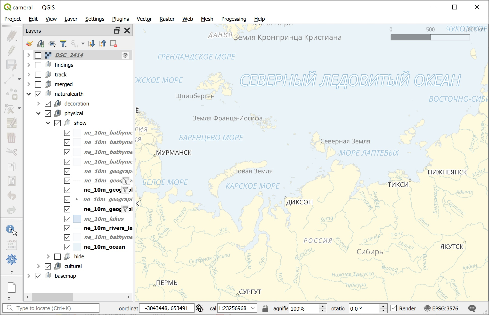
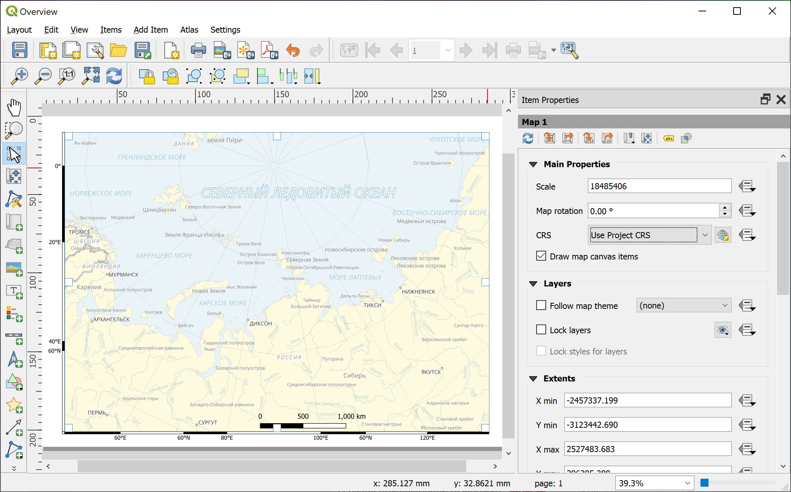
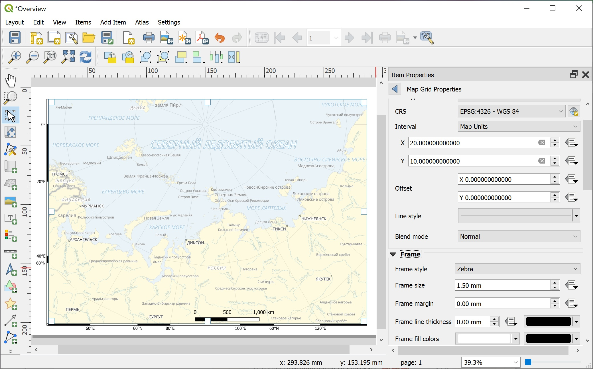
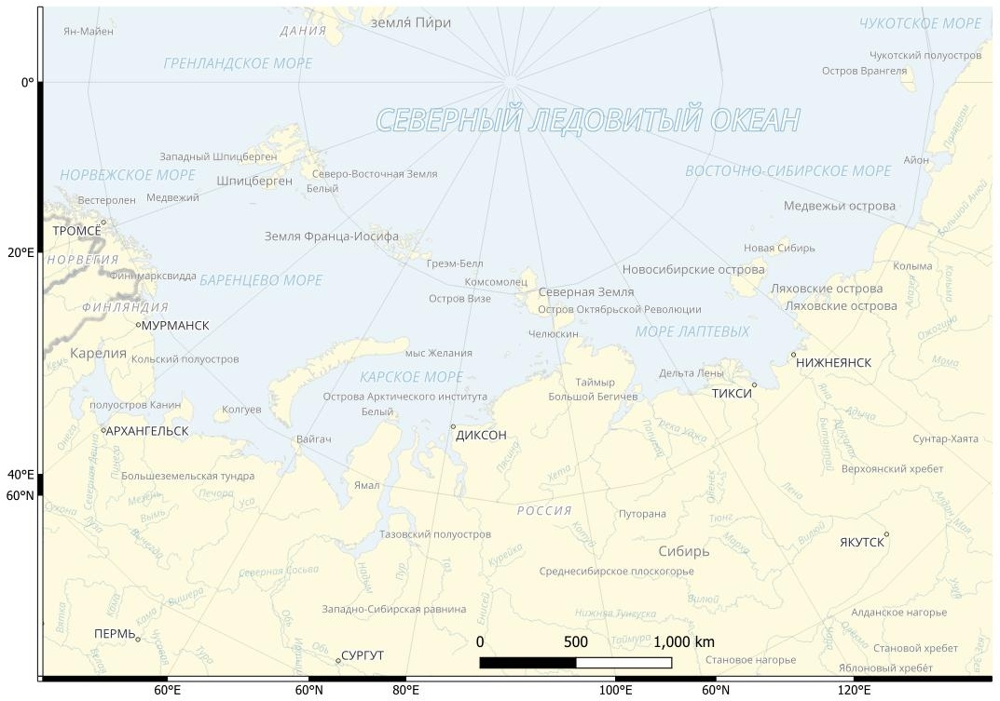
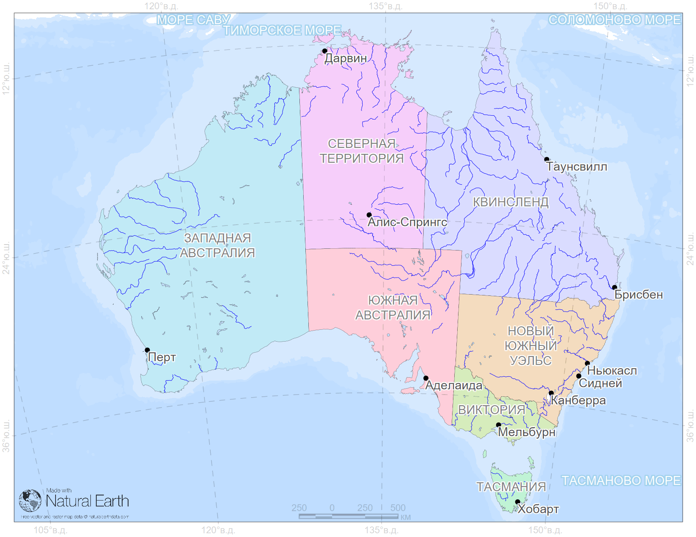
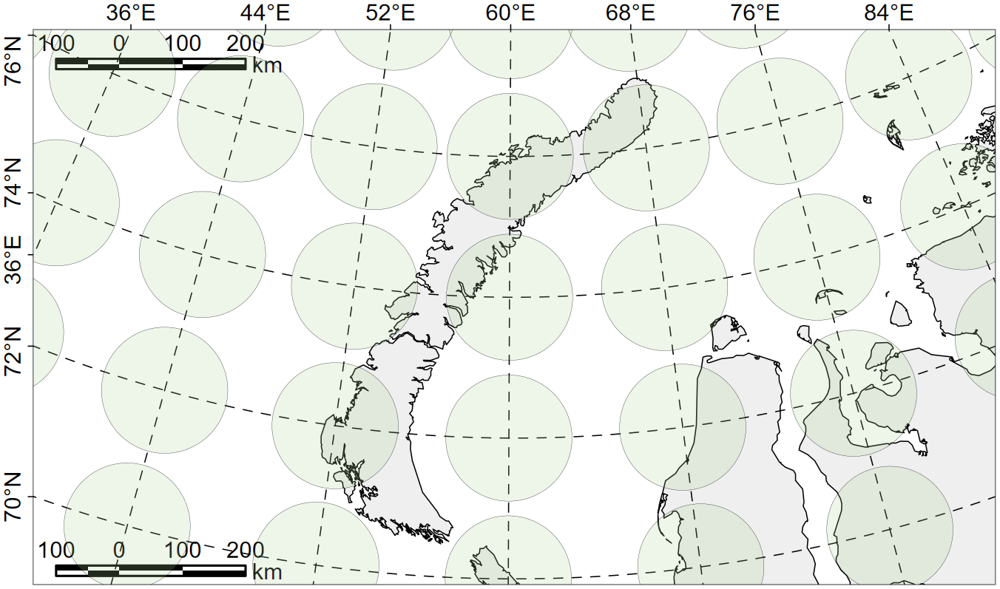
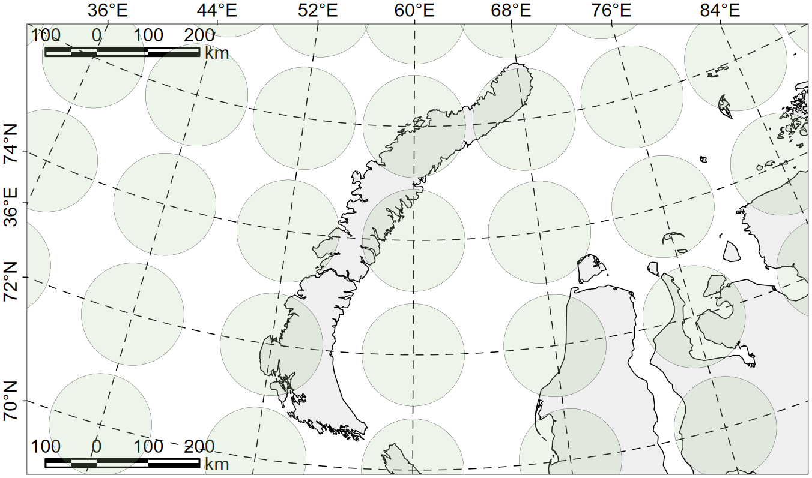
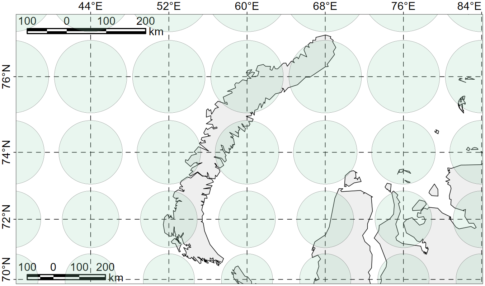
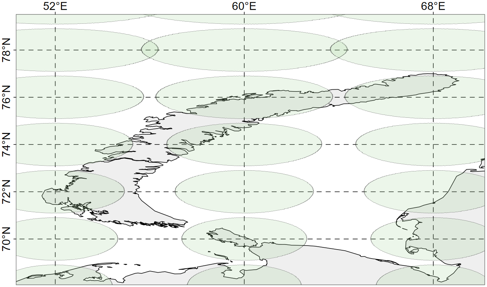

layout: true .toc.banner[ .shorttitle[ [ГИС аспирантура](#dates) [⌂](https://nplatonov.github.io/sevinGIS/) ] ] --- name: home class: metadata customtitle middle left giphy .toc.sidebar.left-column[ .outline[ ## [<svg aria-hidden="true" role="img" viewBox="0 0 576 512" style="height:1em;width:1.12em;vertical-align:-0.125em;margin-left:auto;margin-right:auto;font-size:inherit;fill:currentColor;overflow:visible;position:relative;"><path d="M96 32C60.7 32 32 60.7 32 96V384H96V96l384 0V384h64V96c0-35.3-28.7-64-64-64H96zM224 384v32H32c-17.7 0-32 14.3-32 32s14.3 32 32 32H544c17.7 0 32-14.3 32-32s-14.3-32-32-32H416V384c0-17.7-14.3-32-32-32H256c-17.7 0-32 14.3-32 32z"/></svg> Занятия ](#notice) ## [<svg aria-hidden="true" role="img" viewBox="0 0 640 512" style="height:1em;width:1.25em;vertical-align:-0.125em;margin-left:auto;margin-right:auto;font-size:inherit;fill:currentColor;overflow:visible;position:relative;"><path d="M96 128a128 128 0 1 1 256 0A128 128 0 1 1 96 128zM0 482.3C0 383.8 79.8 304 178.3 304h91.4C368.2 304 448 383.8 448 482.3c0 16.4-13.3 29.7-29.7 29.7H29.7C13.3 512 0 498.7 0 482.3zM625 177L497 305c-9.4 9.4-24.6 9.4-33.9 0l-64-64c-9.4-9.4-9.4-24.6 0-33.9s24.6-9.4 33.9 0l47 47L591 143c9.4-9.4 24.6-9.4 33.9 0s9.4 24.6 0 33.9z"/></svg> Отчётность](#attendance) ## [<svg aria-hidden="true" role="img" viewBox="0 0 576 512" style="height:1em;width:1.12em;vertical-align:-0.125em;margin-left:auto;margin-right:auto;font-size:inherit;fill:currentColor;overflow:visible;position:relative;"><path d="M575.8 255.5c0 18-15 32.1-32 32.1h-32l.7 160.2c.2 35.5-28.5 64.3-64 64.3H128.1c-35.3 0-64-28.7-64-64V287.6H32c-18 0-32-14-32-32.1c0-9 3-17 10-24L266.4 8c7-7 15-8 22-8s15 2 21 7L564.8 231.5c8 7 12 15 11 24zM352 224a64 64 0 1 0 -128 0 64 64 0 1 0 128 0zm-96 96c-44.2 0-80 35.8-80 80c0 8.8 7.2 16 16 16H384c8.8 0 16-7.2 16-16c0-44.2-35.8-80-80-80H256z"/></svg> Домашние задания](#homework) ## [<svg aria-hidden="true" role="img" viewBox="0 0 576 512" style="height:1em;width:1.12em;vertical-align:-0.125em;margin-left:auto;margin-right:auto;font-size:inherit;fill:currentColor;overflow:visible;position:relative;"><path d="M384 480h48c11.4 0 21.9-6 27.6-15.9l112-192c5.8-9.9 5.8-22.1 .1-32.1S555.5 224 544 224H144c-11.4 0-21.9 6-27.6 15.9L48 357.1V96c0-8.8 7.2-16 16-16H181.5c4.2 0 8.3 1.7 11.3 4.7l26.5 26.5c21 21 49.5 32.8 79.2 32.8H416c8.8 0 16 7.2 16 16v32h48V160c0-35.3-28.7-64-64-64H298.5c-17 0-33.3-6.7-45.3-18.7L226.7 50.7c-12-12-28.3-18.7-45.3-18.7H64C28.7 32 0 60.7 0 96V416c0 35.3 28.7 64 64 64H87.7 384z"/></svg> Данные для работы](#H7a96c) ## [<svg aria-hidden="true" role="img" viewBox="0 0 640 512" style="height:1em;width:1.25em;vertical-align:-0.125em;margin-left:auto;margin-right:auto;font-size:inherit;fill:currentColor;overflow:visible;position:relative;"><path d="M144 0a80 80 0 1 1 0 160A80 80 0 1 1 144 0zM512 0a80 80 0 1 1 0 160A80 80 0 1 1 512 0zM0 298.7C0 239.8 47.8 192 106.7 192h42.7c15.9 0 31 3.5 44.6 9.7c-1.3 7.2-1.9 14.7-1.9 22.3c0 38.2 16.8 72.5 43.3 96c-.2 0-.4 0-.7 0H21.3C9.6 320 0 310.4 0 298.7zM405.3 320c-.2 0-.4 0-.7 0c26.6-23.5 43.3-57.8 43.3-96c0-7.6-.7-15-1.9-22.3c13.6-6.3 28.7-9.7 44.6-9.7h42.7C592.2 192 640 239.8 640 298.7c0 11.8-9.6 21.3-21.3 21.3H405.3zM224 224a96 96 0 1 1 192 0 96 96 0 1 1 -192 0zM128 485.3C128 411.7 187.7 352 261.3 352H378.7C452.3 352 512 411.7 512 485.3c0 14.7-11.9 26.7-26.7 26.7H154.7c-14.7 0-26.7-11.9-26.7-26.7z"/></svg> Обучающиеся](#students) ] ] .toc.mainbar.right-column.scrollable[ .authors[ .author[Никита Платонов] .institute[с.н.с. ИПЭЭ РАН] ] .title[ ГИС технологии в биологических исследованиях ] .subtitle[ Календарь занятий и тематический план курса ] .what[ ] .where[ ] .when[ 27 марта 2025 г. ] ] --- name: notice .toc.sidebar.left-column[ .outline[ ## [<svg aria-hidden="true" role="img" viewBox="0 0 576 512" style="height:1em;width:1.12em;vertical-align:-0.125em;margin-left:auto;margin-right:auto;font-size:inherit;fill:currentColor;overflow:visible;position:relative;"><path d="M96 32C60.7 32 32 60.7 32 96V384H96V96l384 0V384h64V96c0-35.3-28.7-64-64-64H96zM224 384v32H32c-17.7 0-32 14.3-32 32s14.3 32 32 32H544c17.7 0 32-14.3 32-32s-14.3-32-32-32H416V384c0-17.7-14.3-32-32-32H256c-17.7 0-32 14.3-32 32z"/></svg> Занятия ](#notice).fg[] ### [<svg aria-hidden="true" role="img" viewBox="0 0 512 512" style="height:1em;width:1em;vertical-align:-0.125em;margin-left:auto;margin-right:auto;font-size:inherit;fill:currentColor;overflow:visible;position:relative;"><path d="M480 32c0-12.9-7.8-24.6-19.8-29.6s-25.7-2.2-34.9 6.9L381.7 53c-48 48-113.1 75-181 75H192 160 64c-35.3 0-64 28.7-64 64v96c0 35.3 28.7 64 64 64l0 128c0 17.7 14.3 32 32 32h64c17.7 0 32-14.3 32-32V352l8.7 0c67.9 0 133 27 181 75l43.6 43.6c9.2 9.2 22.9 11.9 34.9 6.9s19.8-16.6 19.8-29.6V300.4c18.6-8.8 32-32.5 32-60.4s-13.4-51.6-32-60.4V32zm-64 76.7V240 371.3C357.2 317.8 280.5 288 200.7 288H192V192h8.7c79.8 0 156.5-29.8 215.3-83.3z"/></svg> Объявления](#notice).fg[].bg[] ### [<svg aria-hidden="true" role="img" viewBox="0 0 448 512" style="height:1em;width:0.88em;vertical-align:-0.125em;margin-left:auto;margin-right:auto;font-size:inherit;fill:currentColor;overflow:visible;position:relative;"><path d="M152 24c0-13.3-10.7-24-24-24s-24 10.7-24 24V64H64C28.7 64 0 92.7 0 128v16 48V448c0 35.3 28.7 64 64 64H384c35.3 0 64-28.7 64-64V192 144 128c0-35.3-28.7-64-64-64H344V24c0-13.3-10.7-24-24-24s-24 10.7-24 24V64H152V24zM48 192H400V448c0 8.8-7.2 16-16 16H64c-8.8 0-16-7.2-16-16V192z"/></svg> По датам](#dates) ### [<svg aria-hidden="true" role="img" viewBox="0 0 448 512" style="height:1em;width:0.88em;vertical-align:-0.125em;margin-left:auto;margin-right:auto;font-size:inherit;fill:currentColor;overflow:visible;position:relative;"><path d="M96 151.4V360.6c9.7 5.6 17.8 13.7 23.4 23.4H328.6c0-.1 .1-.2 .1-.3l-4.5-7.9-32-56 0 0c-1.4 .1-2.8 .1-4.2 .1c-35.3 0-64-28.7-64-64s28.7-64 64-64c1.4 0 2.8 0 4.2 .1l0 0 32-56 4.5-7.9-.1-.3H119.4c-5.6 9.7-13.7 17.8-23.4 23.4zM384.3 352c35.2 .2 63.7 28.7 63.7 64c0 35.3-28.7 64-64 64c-23.7 0-44.4-12.9-55.4-32H119.4c-11.1 19.1-31.7 32-55.4 32c-35.3 0-64-28.7-64-64c0-23.7 12.9-44.4 32-55.4V151.4C12.9 140.4 0 119.7 0 96C0 60.7 28.7 32 64 32c23.7 0 44.4 12.9 55.4 32H328.6c11.1-19.1 31.7-32 55.4-32c35.3 0 64 28.7 64 64c0 35.3-28.5 63.8-63.7 64l-4.5 7.9-32 56-2.3 4c4.2 8.5 6.5 18 6.5 28.1s-2.3 19.6-6.5 28.1l2.3 4 32 56 4.5 7.9z"/></svg> По темам](#theme) ## [<svg aria-hidden="true" role="img" viewBox="0 0 640 512" style="height:1em;width:1.25em;vertical-align:-0.125em;margin-left:auto;margin-right:auto;font-size:inherit;fill:currentColor;overflow:visible;position:relative;"><path d="M96 128a128 128 0 1 1 256 0A128 128 0 1 1 96 128zM0 482.3C0 383.8 79.8 304 178.3 304h91.4C368.2 304 448 383.8 448 482.3c0 16.4-13.3 29.7-29.7 29.7H29.7C13.3 512 0 498.7 0 482.3zM625 177L497 305c-9.4 9.4-24.6 9.4-33.9 0l-64-64c-9.4-9.4-9.4-24.6 0-33.9s24.6-9.4 33.9 0l47 47L591 143c9.4-9.4 24.6-9.4 33.9 0s9.4 24.6 0 33.9z"/></svg> Отчётность](#attendance) ## [<svg aria-hidden="true" role="img" viewBox="0 0 576 512" style="height:1em;width:1.12em;vertical-align:-0.125em;margin-left:auto;margin-right:auto;font-size:inherit;fill:currentColor;overflow:visible;position:relative;"><path d="M575.8 255.5c0 18-15 32.1-32 32.1h-32l.7 160.2c.2 35.5-28.5 64.3-64 64.3H128.1c-35.3 0-64-28.7-64-64V287.6H32c-18 0-32-14-32-32.1c0-9 3-17 10-24L266.4 8c7-7 15-8 22-8s15 2 21 7L564.8 231.5c8 7 12 15 11 24zM352 224a64 64 0 1 0 -128 0 64 64 0 1 0 128 0zm-96 96c-44.2 0-80 35.8-80 80c0 8.8 7.2 16 16 16H384c8.8 0 16-7.2 16-16c0-44.2-35.8-80-80-80H256z"/></svg> Домашние задания](#homework) ## [<svg aria-hidden="true" role="img" viewBox="0 0 576 512" style="height:1em;width:1.12em;vertical-align:-0.125em;margin-left:auto;margin-right:auto;font-size:inherit;fill:currentColor;overflow:visible;position:relative;"><path d="M384 480h48c11.4 0 21.9-6 27.6-15.9l112-192c5.8-9.9 5.8-22.1 .1-32.1S555.5 224 544 224H144c-11.4 0-21.9 6-27.6 15.9L48 357.1V96c0-8.8 7.2-16 16-16H181.5c4.2 0 8.3 1.7 11.3 4.7l26.5 26.5c21 21 49.5 32.8 79.2 32.8H416c8.8 0 16 7.2 16 16v32h48V160c0-35.3-28.7-64-64-64H298.5c-17 0-33.3-6.7-45.3-18.7L226.7 50.7c-12-12-28.3-18.7-45.3-18.7H64C28.7 32 0 60.7 0 96V416c0 35.3 28.7 64 64 64H87.7 384z"/></svg> Данные для работы](#H7a96c) ## [<svg aria-hidden="true" role="img" viewBox="0 0 640 512" style="height:1em;width:1.25em;vertical-align:-0.125em;margin-left:auto;margin-right:auto;font-size:inherit;fill:currentColor;overflow:visible;position:relative;"><path d="M144 0a80 80 0 1 1 0 160A80 80 0 1 1 144 0zM512 0a80 80 0 1 1 0 160A80 80 0 1 1 512 0zM0 298.7C0 239.8 47.8 192 106.7 192h42.7c15.9 0 31 3.5 44.6 9.7c-1.3 7.2-1.9 14.7-1.9 22.3c0 38.2 16.8 72.5 43.3 96c-.2 0-.4 0-.7 0H21.3C9.6 320 0 310.4 0 298.7zM405.3 320c-.2 0-.4 0-.7 0c26.6-23.5 43.3-57.8 43.3-96c0-7.6-.7-15-1.9-22.3c13.6-6.3 28.7-9.7 44.6-9.7h42.7C592.2 192 640 239.8 640 298.7c0 11.8-9.6 21.3-21.3 21.3H405.3zM224 224a96 96 0 1 1 192 0 96 96 0 1 1 -192 0zM128 485.3C128 411.7 187.7 352 261.3 352H378.7C452.3 352 512 411.7 512 485.3c0 14.7-11.9 26.7-26.7 26.7H154.7c-14.7 0-26.7-11.9-26.7-26.7z"/></svg> Обучающиеся](#students) ] ] .toc.mainbar.right-column.scrollable[ .header.broad[ Объявления ] .fixprecode[ .note[ + Занятия в четверг после обеда. Домашние задания требуют проверки и, нередко, уточнений. На это нужно время. Поэтому старайтесь их сдавать в среду, не позднее первой половины дня. ] .note[ + Кто не присутствовал ни в классе, ни в [Zoom](https://us02web.zoom.us/j/85975308680?pwd=3rMXaFjPZkgyiwD4ABj23iuX8dTTvN.1), сообщайте преподавателю, какое занятие просмотрели в записи. ] .pulling[ .remarkonly.zzzpull-left-40[ .note[ + Предварительно, окончание курса 10 апреля 2024 г. Актуализирование информации в [Телеграмме](https://t.me/+4UbsiOoozKs0Nzgy). ] ] .remarkonly.zzzpull-right-60[ ] ] ] ] --- name: dates .toc.sidebar.left-column[ .outline[ ## [<svg aria-hidden="true" role="img" viewBox="0 0 576 512" style="height:1em;width:1.12em;vertical-align:-0.125em;margin-left:auto;margin-right:auto;font-size:inherit;fill:currentColor;overflow:visible;position:relative;"><path d="M96 32C60.7 32 32 60.7 32 96V384H96V96l384 0V384h64V96c0-35.3-28.7-64-64-64H96zM224 384v32H32c-17.7 0-32 14.3-32 32s14.3 32 32 32H544c17.7 0 32-14.3 32-32s-14.3-32-32-32H416V384c0-17.7-14.3-32-32-32H256c-17.7 0-32 14.3-32 32z"/></svg> Занятия ](#notice).fg[] ### [<svg aria-hidden="true" role="img" viewBox="0 0 512 512" style="height:1em;width:1em;vertical-align:-0.125em;margin-left:auto;margin-right:auto;font-size:inherit;fill:currentColor;overflow:visible;position:relative;"><path d="M480 32c0-12.9-7.8-24.6-19.8-29.6s-25.7-2.2-34.9 6.9L381.7 53c-48 48-113.1 75-181 75H192 160 64c-35.3 0-64 28.7-64 64v96c0 35.3 28.7 64 64 64l0 128c0 17.7 14.3 32 32 32h64c17.7 0 32-14.3 32-32V352l8.7 0c67.9 0 133 27 181 75l43.6 43.6c9.2 9.2 22.9 11.9 34.9 6.9s19.8-16.6 19.8-29.6V300.4c18.6-8.8 32-32.5 32-60.4s-13.4-51.6-32-60.4V32zm-64 76.7V240 371.3C357.2 317.8 280.5 288 200.7 288H192V192h8.7c79.8 0 156.5-29.8 215.3-83.3z"/></svg> Объявления](#notice) ### [<svg aria-hidden="true" role="img" viewBox="0 0 448 512" style="height:1em;width:0.88em;vertical-align:-0.125em;margin-left:auto;margin-right:auto;font-size:inherit;fill:currentColor;overflow:visible;position:relative;"><path d="M152 24c0-13.3-10.7-24-24-24s-24 10.7-24 24V64H64C28.7 64 0 92.7 0 128v16 48V448c0 35.3 28.7 64 64 64H384c35.3 0 64-28.7 64-64V192 144 128c0-35.3-28.7-64-64-64H344V24c0-13.3-10.7-24-24-24s-24 10.7-24 24V64H152V24zM48 192H400V448c0 8.8-7.2 16-16 16H64c-8.8 0-16-7.2-16-16V192z"/></svg> По датам](#dates).fg[].bg[] ### [<svg aria-hidden="true" role="img" viewBox="0 0 448 512" style="height:1em;width:0.88em;vertical-align:-0.125em;margin-left:auto;margin-right:auto;font-size:inherit;fill:currentColor;overflow:visible;position:relative;"><path d="M96 151.4V360.6c9.7 5.6 17.8 13.7 23.4 23.4H328.6c0-.1 .1-.2 .1-.3l-4.5-7.9-32-56 0 0c-1.4 .1-2.8 .1-4.2 .1c-35.3 0-64-28.7-64-64s28.7-64 64-64c1.4 0 2.8 0 4.2 .1l0 0 32-56 4.5-7.9-.1-.3H119.4c-5.6 9.7-13.7 17.8-23.4 23.4zM384.3 352c35.2 .2 63.7 28.7 63.7 64c0 35.3-28.7 64-64 64c-23.7 0-44.4-12.9-55.4-32H119.4c-11.1 19.1-31.7 32-55.4 32c-35.3 0-64-28.7-64-64c0-23.7 12.9-44.4 32-55.4V151.4C12.9 140.4 0 119.7 0 96C0 60.7 28.7 32 64 32c23.7 0 44.4 12.9 55.4 32H328.6c11.1-19.1 31.7-32 55.4-32c35.3 0 64 28.7 64 64c0 35.3-28.5 63.8-63.7 64l-4.5 7.9-32 56-2.3 4c4.2 8.5 6.5 18 6.5 28.1s-2.3 19.6-6.5 28.1l2.3 4 32 56 4.5 7.9z"/></svg> По темам](#theme) ## [<svg aria-hidden="true" role="img" viewBox="0 0 640 512" style="height:1em;width:1.25em;vertical-align:-0.125em;margin-left:auto;margin-right:auto;font-size:inherit;fill:currentColor;overflow:visible;position:relative;"><path d="M96 128a128 128 0 1 1 256 0A128 128 0 1 1 96 128zM0 482.3C0 383.8 79.8 304 178.3 304h91.4C368.2 304 448 383.8 448 482.3c0 16.4-13.3 29.7-29.7 29.7H29.7C13.3 512 0 498.7 0 482.3zM625 177L497 305c-9.4 9.4-24.6 9.4-33.9 0l-64-64c-9.4-9.4-9.4-24.6 0-33.9s24.6-9.4 33.9 0l47 47L591 143c9.4-9.4 24.6-9.4 33.9 0s9.4 24.6 0 33.9z"/></svg> Отчётность](#attendance) ## [<svg aria-hidden="true" role="img" viewBox="0 0 576 512" style="height:1em;width:1.12em;vertical-align:-0.125em;margin-left:auto;margin-right:auto;font-size:inherit;fill:currentColor;overflow:visible;position:relative;"><path d="M575.8 255.5c0 18-15 32.1-32 32.1h-32l.7 160.2c.2 35.5-28.5 64.3-64 64.3H128.1c-35.3 0-64-28.7-64-64V287.6H32c-18 0-32-14-32-32.1c0-9 3-17 10-24L266.4 8c7-7 15-8 22-8s15 2 21 7L564.8 231.5c8 7 12 15 11 24zM352 224a64 64 0 1 0 -128 0 64 64 0 1 0 128 0zm-96 96c-44.2 0-80 35.8-80 80c0 8.8 7.2 16 16 16H384c8.8 0 16-7.2 16-16c0-44.2-35.8-80-80-80H256z"/></svg> Домашние задания](#homework) ## [<svg aria-hidden="true" role="img" viewBox="0 0 576 512" style="height:1em;width:1.12em;vertical-align:-0.125em;margin-left:auto;margin-right:auto;font-size:inherit;fill:currentColor;overflow:visible;position:relative;"><path d="M384 480h48c11.4 0 21.9-6 27.6-15.9l112-192c5.8-9.9 5.8-22.1 .1-32.1S555.5 224 544 224H144c-11.4 0-21.9 6-27.6 15.9L48 357.1V96c0-8.8 7.2-16 16-16H181.5c4.2 0 8.3 1.7 11.3 4.7l26.5 26.5c21 21 49.5 32.8 79.2 32.8H416c8.8 0 16 7.2 16 16v32h48V160c0-35.3-28.7-64-64-64H298.5c-17 0-33.3-6.7-45.3-18.7L226.7 50.7c-12-12-28.3-18.7-45.3-18.7H64C28.7 32 0 60.7 0 96V416c0 35.3 28.7 64 64 64H87.7 384z"/></svg> Данные для работы](#H7a96c) ## [<svg aria-hidden="true" role="img" viewBox="0 0 640 512" style="height:1em;width:1.25em;vertical-align:-0.125em;margin-left:auto;margin-right:auto;font-size:inherit;fill:currentColor;overflow:visible;position:relative;"><path d="M144 0a80 80 0 1 1 0 160A80 80 0 1 1 144 0zM512 0a80 80 0 1 1 0 160A80 80 0 1 1 512 0zM0 298.7C0 239.8 47.8 192 106.7 192h42.7c15.9 0 31 3.5 44.6 9.7c-1.3 7.2-1.9 14.7-1.9 22.3c0 38.2 16.8 72.5 43.3 96c-.2 0-.4 0-.7 0H21.3C9.6 320 0 310.4 0 298.7zM405.3 320c-.2 0-.4 0-.7 0c26.6-23.5 43.3-57.8 43.3-96c0-7.6-.7-15-1.9-22.3c13.6-6.3 28.7-9.7 44.6-9.7h42.7C592.2 192 640 239.8 640 298.7c0 11.8-9.6 21.3-21.3 21.3H405.3zM224 224a96 96 0 1 1 192 0 96 96 0 1 1 -192 0zM128 485.3C128 411.7 187.7 352 261.3 352H378.7C452.3 352 512 411.7 512 485.3c0 14.7-11.9 26.7-26.7 26.7H154.7c-14.7 0-26.7-11.9-26.7-26.7z"/></svg> Обучающиеся](#students) ] ] .toc.mainbar.right-column.scrollable[ .header.h3.broad[ <svg aria-hidden="true" role="img" viewBox="0 0 448 512" style="height:1em;width:0.88em;vertical-align:-0.125em;margin-left:auto;margin-right:auto;font-size:inherit;fill:currentColor;overflow:visible;position:relative;"><path d="M152 24c0-13.3-10.7-24-24-24s-24 10.7-24 24V64H64C28.7 64 0 92.7 0 128v16 48V448c0 35.3 28.7 64 64 64H384c35.3 0 64-28.7 64-64V192 144 128c0-35.3-28.7-64-64-64H344V24c0-13.3-10.7-24-24-24s-24 10.7-24 24V64H152V24zM48 192H400V448c0 8.8-7.2 16-16 16H64c-8.8 0-16-7.2-16-16V192z"/></svg> По датам .parent[.grand[Занятия]] ] .fixprecode[ .double[ .font80[ <span class="largest">05 февраля</span> | | | |:--|:-----------------------| |01 |[Общие вопросы, введение](lesson01~b57.html)| <span class="largest">06 февраля</span> [<svg aria-hidden="true" role="img" viewBox="0 0 384 512" style="height:1em;width:0.75em;vertical-align:-0.125em;margin-left:auto;margin-right:auto;font-size:inherit;fill:currentColor;overflow:visible;position:relative;"><path d="M320 464c8.8 0 16-7.2 16-16V160H256c-17.7 0-32-14.3-32-32V48H64c-8.8 0-16 7.2-16 16V448c0 8.8 7.2 16 16 16H320zM0 64C0 28.7 28.7 0 64 0H229.5c17 0 33.3 6.7 45.3 18.7l90.5 90.5c12 12 18.7 28.3 18.7 45.3V448c0 35.3-28.7 64-64 64H64c-35.3 0-64-28.7-64-64V64zM80 288c0-17.7 14.3-32 32-32h96c17.7 0 32 14.3 32 32v16l44.9-29.9c2-1.3 4.4-2.1 6.8-2.1c6.8 0 12.3 5.5 12.3 12.3V387.7c0 6.8-5.5 12.3-12.3 12.3c-2.4 0-4.8-.7-6.8-2.1L240 368v16c0 17.7-14.3 32-32 32H112c-17.7 0-32-14.3-32-32V288z"/></svg>]( https://us02web.zoom.us/rec/share/1uCpL4TN33Itgo45FnV4z1dTTAxa1geCSlkluCE8b3kI87gIpcywxLOGNhxpg3wn.YXK0oO78E2XJMfrv)<span style="opacity: 0;"> e0qKj&g5</span> | | | |:--|:-----------------------| |01 |[Общие вопросы, введение](lesson01~b57.html)| |02 |[Начало работы с QGIS](lesson02~b57.html)| <span class="largest">13 февраля</span> [<svg aria-hidden="true" role="img" viewBox="0 0 384 512" style="height:1em;width:0.75em;vertical-align:-0.125em;margin-left:auto;margin-right:auto;font-size:inherit;fill:currentColor;overflow:visible;position:relative;"><path d="M320 464c8.8 0 16-7.2 16-16V160H256c-17.7 0-32-14.3-32-32V48H64c-8.8 0-16 7.2-16 16V448c0 8.8 7.2 16 16 16H320zM0 64C0 28.7 28.7 0 64 0H229.5c17 0 33.3 6.7 45.3 18.7l90.5 90.5c12 12 18.7 28.3 18.7 45.3V448c0 35.3-28.7 64-64 64H64c-35.3 0-64-28.7-64-64V64zM80 288c0-17.7 14.3-32 32-32h96c17.7 0 32 14.3 32 32v16l44.9-29.9c2-1.3 4.4-2.1 6.8-2.1c6.8 0 12.3 5.5 12.3 12.3V387.7c0 6.8-5.5 12.3-12.3 12.3c-2.4 0-4.8-.7-6.8-2.1L240 368v16c0 17.7-14.3 32-32 32H112c-17.7 0-32-14.3-32-32V288z"/></svg>]( https://us02web.zoom.us/rec/share/LvYkewc-_VRiA7Mudn8Ef_Z891kGodnpxMk2a2Q4e1Xr06EDBnyy7O8QZITkDWnn.zust8BYslSQLIxwt)<span style="opacity: 0;"> +wU2dWw=</span> | | | |:--|:-----------------------------------------| |02 |[Начало работы с QGIS](lesson02~b57.html) | |03 |[Основы работы с пространственными данными](lesson03~b57.html)| <span class="largest">20 февраля</span> [<svg aria-hidden="true" role="img" viewBox="0 0 384 512" style="height:1em;width:0.75em;vertical-align:-0.125em;margin-left:auto;margin-right:auto;font-size:inherit;fill:currentColor;overflow:visible;position:relative;"><path d="M320 464c8.8 0 16-7.2 16-16V160H256c-17.7 0-32-14.3-32-32V48H64c-8.8 0-16 7.2-16 16V448c0 8.8 7.2 16 16 16H320zM0 64C0 28.7 28.7 0 64 0H229.5c17 0 33.3 6.7 45.3 18.7l90.5 90.5c12 12 18.7 28.3 18.7 45.3V448c0 35.3-28.7 64-64 64H64c-35.3 0-64-28.7-64-64V64zM80 288c0-17.7 14.3-32 32-32h96c17.7 0 32 14.3 32 32v16l44.9-29.9c2-1.3 4.4-2.1 6.8-2.1c6.8 0 12.3 5.5 12.3 12.3V387.7c0 6.8-5.5 12.3-12.3 12.3c-2.4 0-4.8-.7-6.8-2.1L240 368v16c0 17.7-14.3 32-32 32H112c-17.7 0-32-14.3-32-32V288z"/></svg>]( https://us02web.zoom.us/rec/share/h2StNDvUELo27H_oHJ3at-__c0y38b9tzLoaw-c4g2iI4VsTkZcDCyKcslUPWBY.BiYboGG-ox46Cv81)<span style="opacity: 0;"> zp6.*wW4</span> | | | |:--|:----------------------------------------------------| |04 |[Пространственные данные: получение и обработка](lesson04~b57.html)| |05 |[Возможности R для работы с пространственными данными](lesson05~b57.html)| <span class="largest">27 февраля</span> [<svg aria-hidden="true" role="img" viewBox="0 0 384 512" style="height:1em;width:0.75em;vertical-align:-0.125em;margin-left:auto;margin-right:auto;font-size:inherit;fill:currentColor;overflow:visible;position:relative;"><path d="M320 464c8.8 0 16-7.2 16-16V160H256c-17.7 0-32-14.3-32-32V48H64c-8.8 0-16 7.2-16 16V448c0 8.8 7.2 16 16 16H320zM0 64C0 28.7 28.7 0 64 0H229.5c17 0 33.3 6.7 45.3 18.7l90.5 90.5c12 12 18.7 28.3 18.7 45.3V448c0 35.3-28.7 64-64 64H64c-35.3 0-64-28.7-64-64V64zM80 288c0-17.7 14.3-32 32-32h96c17.7 0 32 14.3 32 32v16l44.9-29.9c2-1.3 4.4-2.1 6.8-2.1c6.8 0 12.3 5.5 12.3 12.3V387.7c0 6.8-5.5 12.3-12.3 12.3c-2.4 0-4.8-.7-6.8-2.1L240 368v16c0 17.7-14.3 32-32 32H112c-17.7 0-32-14.3-32-32V288z"/></svg>]( https://us02web.zoom.us/rec/share/gvWevxZ0YnLjpV6ZM4ad0eq97VepnQpjImCQEhOpeEKUVbw0rXfnJizGS9_7Ts2A.qTGexJoC-AU2OXrM)<span style="opacity: 0;"> 1=GMJ$ph</span> | | | |:--|:----------------------------------------------------| |05 |[Возможности R для работы с пространственными данными](lesson05~b57.html)| <span class="largest">06 марта</span> [<svg aria-hidden="true" role="img" viewBox="0 0 384 512" style="height:1em;width:0.75em;vertical-align:-0.125em;margin-left:auto;margin-right:auto;font-size:inherit;fill:currentColor;overflow:visible;position:relative;"><path d="M320 464c8.8 0 16-7.2 16-16V160H256c-17.7 0-32-14.3-32-32V48H64c-8.8 0-16 7.2-16 16V448c0 8.8 7.2 16 16 16H320zM0 64C0 28.7 28.7 0 64 0H229.5c17 0 33.3 6.7 45.3 18.7l90.5 90.5c12 12 18.7 28.3 18.7 45.3V448c0 35.3-28.7 64-64 64H64c-35.3 0-64-28.7-64-64V64zM80 288c0-17.7 14.3-32 32-32h96c17.7 0 32 14.3 32 32v16l44.9-29.9c2-1.3 4.4-2.1 6.8-2.1c6.8 0 12.3 5.5 12.3 12.3V387.7c0 6.8-5.5 12.3-12.3 12.3c-2.4 0-4.8-.7-6.8-2.1L240 368v16c0 17.7-14.3 32-32 32H112c-17.7 0-32-14.3-32-32V288z"/></svg>]( https://us02web.zoom.us/rec/share/B6yA9FZbTka3p00fqRDHIAsv8XKACeZL8yepjrYaludDG8uBDnovMqaE4MZNOnIb.ETuEjG18wL2zZeCO)<span style="opacity: 0;"> 9w$h@8eX</span> | | | |:--|:----------------------------------------------------| |05 |[Возможности R для работы с пространственными данными](lesson05~b57.html)| <span class="largest">13 марта</span> [<svg aria-hidden="true" role="img" viewBox="0 0 384 512" style="height:1em;width:0.75em;vertical-align:-0.125em;margin-left:auto;margin-right:auto;font-size:inherit;fill:currentColor;overflow:visible;position:relative;"><path d="M320 464c8.8 0 16-7.2 16-16V160H256c-17.7 0-32-14.3-32-32V48H64c-8.8 0-16 7.2-16 16V448c0 8.8 7.2 16 16 16H320zM0 64C0 28.7 28.7 0 64 0H229.5c17 0 33.3 6.7 45.3 18.7l90.5 90.5c12 12 18.7 28.3 18.7 45.3V448c0 35.3-28.7 64-64 64H64c-35.3 0-64-28.7-64-64V64zM80 288c0-17.7 14.3-32 32-32h96c17.7 0 32 14.3 32 32v16l44.9-29.9c2-1.3 4.4-2.1 6.8-2.1c6.8 0 12.3 5.5 12.3 12.3V387.7c0 6.8-5.5 12.3-12.3 12.3c-2.4 0-4.8-.7-6.8-2.1L240 368v16c0 17.7-14.3 32-32 32H112c-17.7 0-32-14.3-32-32V288z"/></svg>]( https://us02web.zoom.us/rec/share/w79Pa2iTF5yshsFrQ1U8B0K7MhWQTwAgo5u48VcnSqJtPx058fuwvmlvRXfWgO6c.dGfmGGD_26Sp4dPT)<span style="opacity: 0;"> 8*Z7ywpg</span> | | | |:--|:----------------------------------------------------| |05 |[Возможности R для работы с пространственными данными](lesson05~b57.html)| |06 |[Пространственные данные: примеры и обработка](lesson06~b57.html)| <span class="largest">20 марта</span> [<svg aria-hidden="true" role="img" viewBox="0 0 384 512" style="height:1em;width:0.75em;vertical-align:-0.125em;margin-left:auto;margin-right:auto;font-size:inherit;fill:currentColor;overflow:visible;position:relative;"><path d="M320 464c8.8 0 16-7.2 16-16V160H256c-17.7 0-32-14.3-32-32V48H64c-8.8 0-16 7.2-16 16V448c0 8.8 7.2 16 16 16H320zM0 64C0 28.7 28.7 0 64 0H229.5c17 0 33.3 6.7 45.3 18.7l90.5 90.5c12 12 18.7 28.3 18.7 45.3V448c0 35.3-28.7 64-64 64H64c-35.3 0-64-28.7-64-64V64zM80 288c0-17.7 14.3-32 32-32h96c17.7 0 32 14.3 32 32v16l44.9-29.9c2-1.3 4.4-2.1 6.8-2.1c6.8 0 12.3 5.5 12.3 12.3V387.7c0 6.8-5.5 12.3-12.3 12.3c-2.4 0-4.8-.7-6.8-2.1L240 368v16c0 17.7-14.3 32-32 32H112c-17.7 0-32-14.3-32-32V288z"/></svg>]( https://us02web.zoom.us/rec/share/aXNJoei1s5Qayl8oxLMbmaDc_nsdM2Li9u1swWaNAAqtKQRwn2wKJFJfTX0lirCi.78XwvLO43IY1tZR6)<span style="opacity: 0;"> 0X8@VFb*</span> | | | |:--|:--------------------------------------------| |06 |[Пространственные данные: примеры и обработка](lesson06~b57.html)| |09 |[Решение задач в QGIS](lesson09~b57.html) | <span class="largest">27 марта</span> | | | |:--|:----------------------| |09 |[Решение задач в QGIS](lesson09~b57.html) [↩️](lesson09~b57.html#24)| |08 |[Операции с геометрией](lesson08~b57.html)| <span class="largest">03 апреля</span> | | | |:--|:---------------------| |10 |[Моделирование ареалов](lesson10~b57.html)| <span class="largest">10 апреля</span> | | | |:--|:---------------------------------------| |12 |[Обработка данных с геопозиционированием](lesson12~b57.html)| |11 |[«Подтягивание хвостов»](lesson11~b57.html)| ] ] ] ] --- name: theme .toc.sidebar.left-column[ .outline[ ## [<svg aria-hidden="true" role="img" viewBox="0 0 576 512" style="height:1em;width:1.12em;vertical-align:-0.125em;margin-left:auto;margin-right:auto;font-size:inherit;fill:currentColor;overflow:visible;position:relative;"><path d="M96 32C60.7 32 32 60.7 32 96V384H96V96l384 0V384h64V96c0-35.3-28.7-64-64-64H96zM224 384v32H32c-17.7 0-32 14.3-32 32s14.3 32 32 32H544c17.7 0 32-14.3 32-32s-14.3-32-32-32H416V384c0-17.7-14.3-32-32-32H256c-17.7 0-32 14.3-32 32z"/></svg> Занятия ](#notice).fg[] ### [<svg aria-hidden="true" role="img" viewBox="0 0 512 512" style="height:1em;width:1em;vertical-align:-0.125em;margin-left:auto;margin-right:auto;font-size:inherit;fill:currentColor;overflow:visible;position:relative;"><path d="M480 32c0-12.9-7.8-24.6-19.8-29.6s-25.7-2.2-34.9 6.9L381.7 53c-48 48-113.1 75-181 75H192 160 64c-35.3 0-64 28.7-64 64v96c0 35.3 28.7 64 64 64l0 128c0 17.7 14.3 32 32 32h64c17.7 0 32-14.3 32-32V352l8.7 0c67.9 0 133 27 181 75l43.6 43.6c9.2 9.2 22.9 11.9 34.9 6.9s19.8-16.6 19.8-29.6V300.4c18.6-8.8 32-32.5 32-60.4s-13.4-51.6-32-60.4V32zm-64 76.7V240 371.3C357.2 317.8 280.5 288 200.7 288H192V192h8.7c79.8 0 156.5-29.8 215.3-83.3z"/></svg> Объявления](#notice) ### [<svg aria-hidden="true" role="img" viewBox="0 0 448 512" style="height:1em;width:0.88em;vertical-align:-0.125em;margin-left:auto;margin-right:auto;font-size:inherit;fill:currentColor;overflow:visible;position:relative;"><path d="M152 24c0-13.3-10.7-24-24-24s-24 10.7-24 24V64H64C28.7 64 0 92.7 0 128v16 48V448c0 35.3 28.7 64 64 64H384c35.3 0 64-28.7 64-64V192 144 128c0-35.3-28.7-64-64-64H344V24c0-13.3-10.7-24-24-24s-24 10.7-24 24V64H152V24zM48 192H400V448c0 8.8-7.2 16-16 16H64c-8.8 0-16-7.2-16-16V192z"/></svg> По датам](#dates) ### [<svg aria-hidden="true" role="img" viewBox="0 0 448 512" style="height:1em;width:0.88em;vertical-align:-0.125em;margin-left:auto;margin-right:auto;font-size:inherit;fill:currentColor;overflow:visible;position:relative;"><path d="M96 151.4V360.6c9.7 5.6 17.8 13.7 23.4 23.4H328.6c0-.1 .1-.2 .1-.3l-4.5-7.9-32-56 0 0c-1.4 .1-2.8 .1-4.2 .1c-35.3 0-64-28.7-64-64s28.7-64 64-64c1.4 0 2.8 0 4.2 .1l0 0 32-56 4.5-7.9-.1-.3H119.4c-5.6 9.7-13.7 17.8-23.4 23.4zM384.3 352c35.2 .2 63.7 28.7 63.7 64c0 35.3-28.7 64-64 64c-23.7 0-44.4-12.9-55.4-32H119.4c-11.1 19.1-31.7 32-55.4 32c-35.3 0-64-28.7-64-64c0-23.7 12.9-44.4 32-55.4V151.4C12.9 140.4 0 119.7 0 96C0 60.7 28.7 32 64 32c23.7 0 44.4 12.9 55.4 32H328.6c11.1-19.1 31.7-32 55.4-32c35.3 0 64 28.7 64 64c0 35.3-28.5 63.8-63.7 64l-4.5 7.9-32 56-2.3 4c4.2 8.5 6.5 18 6.5 28.1s-2.3 19.6-6.5 28.1l2.3 4 32 56 4.5 7.9z"/></svg> По темам](#theme).fg[].bg[] ## [<svg aria-hidden="true" role="img" viewBox="0 0 640 512" style="height:1em;width:1.25em;vertical-align:-0.125em;margin-left:auto;margin-right:auto;font-size:inherit;fill:currentColor;overflow:visible;position:relative;"><path d="M96 128a128 128 0 1 1 256 0A128 128 0 1 1 96 128zM0 482.3C0 383.8 79.8 304 178.3 304h91.4C368.2 304 448 383.8 448 482.3c0 16.4-13.3 29.7-29.7 29.7H29.7C13.3 512 0 498.7 0 482.3zM625 177L497 305c-9.4 9.4-24.6 9.4-33.9 0l-64-64c-9.4-9.4-9.4-24.6 0-33.9s24.6-9.4 33.9 0l47 47L591 143c9.4-9.4 24.6-9.4 33.9 0s9.4 24.6 0 33.9z"/></svg> Отчётность](#attendance) ## [<svg aria-hidden="true" role="img" viewBox="0 0 576 512" style="height:1em;width:1.12em;vertical-align:-0.125em;margin-left:auto;margin-right:auto;font-size:inherit;fill:currentColor;overflow:visible;position:relative;"><path d="M575.8 255.5c0 18-15 32.1-32 32.1h-32l.7 160.2c.2 35.5-28.5 64.3-64 64.3H128.1c-35.3 0-64-28.7-64-64V287.6H32c-18 0-32-14-32-32.1c0-9 3-17 10-24L266.4 8c7-7 15-8 22-8s15 2 21 7L564.8 231.5c8 7 12 15 11 24zM352 224a64 64 0 1 0 -128 0 64 64 0 1 0 128 0zm-96 96c-44.2 0-80 35.8-80 80c0 8.8 7.2 16 16 16H384c8.8 0 16-7.2 16-16c0-44.2-35.8-80-80-80H256z"/></svg> Домашние задания](#homework) ## [<svg aria-hidden="true" role="img" viewBox="0 0 576 512" style="height:1em;width:1.12em;vertical-align:-0.125em;margin-left:auto;margin-right:auto;font-size:inherit;fill:currentColor;overflow:visible;position:relative;"><path d="M384 480h48c11.4 0 21.9-6 27.6-15.9l112-192c5.8-9.9 5.8-22.1 .1-32.1S555.5 224 544 224H144c-11.4 0-21.9 6-27.6 15.9L48 357.1V96c0-8.8 7.2-16 16-16H181.5c4.2 0 8.3 1.7 11.3 4.7l26.5 26.5c21 21 49.5 32.8 79.2 32.8H416c8.8 0 16 7.2 16 16v32h48V160c0-35.3-28.7-64-64-64H298.5c-17 0-33.3-6.7-45.3-18.7L226.7 50.7c-12-12-28.3-18.7-45.3-18.7H64C28.7 32 0 60.7 0 96V416c0 35.3 28.7 64 64 64H87.7 384z"/></svg> Данные для работы](#H7a96c) ## [<svg aria-hidden="true" role="img" viewBox="0 0 640 512" style="height:1em;width:1.25em;vertical-align:-0.125em;margin-left:auto;margin-right:auto;font-size:inherit;fill:currentColor;overflow:visible;position:relative;"><path d="M144 0a80 80 0 1 1 0 160A80 80 0 1 1 144 0zM512 0a80 80 0 1 1 0 160A80 80 0 1 1 512 0zM0 298.7C0 239.8 47.8 192 106.7 192h42.7c15.9 0 31 3.5 44.6 9.7c-1.3 7.2-1.9 14.7-1.9 22.3c0 38.2 16.8 72.5 43.3 96c-.2 0-.4 0-.7 0H21.3C9.6 320 0 310.4 0 298.7zM405.3 320c-.2 0-.4 0-.7 0c26.6-23.5 43.3-57.8 43.3-96c0-7.6-.7-15-1.9-22.3c13.6-6.3 28.7-9.7 44.6-9.7h42.7C592.2 192 640 239.8 640 298.7c0 11.8-9.6 21.3-21.3 21.3H405.3zM224 224a96 96 0 1 1 192 0 96 96 0 1 1 -192 0zM128 485.3C128 411.7 187.7 352 261.3 352H378.7C452.3 352 512 411.7 512 485.3c0 14.7-11.9 26.7-26.7 26.7H154.7c-14.7 0-26.7-11.9-26.7-26.7z"/></svg> Обучающиеся](#students) ] ] .toc.mainbar.right-column.scrollable[ .header.h3.broad[ <svg aria-hidden="true" role="img" viewBox="0 0 448 512" style="height:1em;width:0.88em;vertical-align:-0.125em;margin-left:auto;margin-right:auto;font-size:inherit;fill:currentColor;overflow:visible;position:relative;"><path d="M96 151.4V360.6c9.7 5.6 17.8 13.7 23.4 23.4H328.6c0-.1 .1-.2 .1-.3l-4.5-7.9-32-56 0 0c-1.4 .1-2.8 .1-4.2 .1c-35.3 0-64-28.7-64-64s28.7-64 64-64c1.4 0 2.8 0 4.2 .1l0 0 32-56 4.5-7.9-.1-.3H119.4c-5.6 9.7-13.7 17.8-23.4 23.4zM384.3 352c35.2 .2 63.7 28.7 63.7 64c0 35.3-28.7 64-64 64c-23.7 0-44.4-12.9-55.4-32H119.4c-11.1 19.1-31.7 32-55.4 32c-35.3 0-64-28.7-64-64c0-23.7 12.9-44.4 32-55.4V151.4C12.9 140.4 0 119.7 0 96C0 60.7 28.7 32 64 32c23.7 0 44.4 12.9 55.4 32H328.6c11.1-19.1 31.7-32 55.4-32c35.3 0 64 28.7 64 64c0 35.3-28.5 63.8-63.7 64l-4.5 7.9-32 56-2.3 4c4.2 8.5 6.5 18 6.5 28.1s-2.3 19.6-6.5 28.1l2.3 4 32 56 4.5 7.9z"/></svg> По темам .parent[.grand[Занятия]] ] .fixprecode[ .font93[ |Тема |Название |Дата | |:----|:----------------------------------------------------|:---------------------------------------------------------| |01 |[Общие вопросы, введение](lesson01~b57.html) |05 февраля, 06 февраля | |02 |[Начало работы с QGIS](lesson02~b57.html) |06 февраля, 13 февраля | |03 |[Основы работы с пространственными данными](lesson03~b57.html)|13 февраля | |04 |[Пространственные данные: получение и обработка](lesson04~b57.html)|20 февраля | |05 |[Возможности R для работы с пространственными данными](lesson05~b57.html)|20 февраля, 27 февраля, 06 марта, 13 марта | |06 |[Пространственные данные: примеры и обработка](lesson06~b57.html)|13 марта, 20 марта | |07 |[Вопросы и ответы](lesson07~b57.html) | | |08 |[Операции с геометрией](lesson08~b57.html) |27 марта | |09 |[Решение задач в QGIS](lesson09~b57.html) |20 марта, 27 марта | |10 |[Моделирование ареалов](lesson10~b57.html) |03 апреля | |11 |[«Подтягивание хвостов»](lesson11~b57.html) |10 апреля | |12 |[Обработка данных с геопозиционированием](lesson12~b57.html)|10 апреля | ] <!-- <sup>Данные по таблицам будут пополняться по мере подготовки материала занятий</sup> --> .pagebreak[ ] ] ] --- name: attendance .toc.sidebar.left-column[ .outline[ ## [<svg aria-hidden="true" role="img" viewBox="0 0 576 512" style="height:1em;width:1.12em;vertical-align:-0.125em;margin-left:auto;margin-right:auto;font-size:inherit;fill:currentColor;overflow:visible;position:relative;"><path d="M96 32C60.7 32 32 60.7 32 96V384H96V96l384 0V384h64V96c0-35.3-28.7-64-64-64H96zM224 384v32H32c-17.7 0-32 14.3-32 32s14.3 32 32 32H544c17.7 0 32-14.3 32-32s-14.3-32-32-32H416V384c0-17.7-14.3-32-32-32H256c-17.7 0-32 14.3-32 32z"/></svg> Занятия ](#notice) ## [<svg aria-hidden="true" role="img" viewBox="0 0 640 512" style="height:1em;width:1.25em;vertical-align:-0.125em;margin-left:auto;margin-right:auto;font-size:inherit;fill:currentColor;overflow:visible;position:relative;"><path d="M96 128a128 128 0 1 1 256 0A128 128 0 1 1 96 128zM0 482.3C0 383.8 79.8 304 178.3 304h91.4C368.2 304 448 383.8 448 482.3c0 16.4-13.3 29.7-29.7 29.7H29.7C13.3 512 0 498.7 0 482.3zM625 177L497 305c-9.4 9.4-24.6 9.4-33.9 0l-64-64c-9.4-9.4-9.4-24.6 0-33.9s24.6-9.4 33.9 0l47 47L591 143c9.4-9.4 24.6-9.4 33.9 0s9.4 24.6 0 33.9z"/></svg> Отчётность](#attendance).fg[].bg[] ## [<svg aria-hidden="true" role="img" viewBox="0 0 576 512" style="height:1em;width:1.12em;vertical-align:-0.125em;margin-left:auto;margin-right:auto;font-size:inherit;fill:currentColor;overflow:visible;position:relative;"><path d="M575.8 255.5c0 18-15 32.1-32 32.1h-32l.7 160.2c.2 35.5-28.5 64.3-64 64.3H128.1c-35.3 0-64-28.7-64-64V287.6H32c-18 0-32-14-32-32.1c0-9 3-17 10-24L266.4 8c7-7 15-8 22-8s15 2 21 7L564.8 231.5c8 7 12 15 11 24zM352 224a64 64 0 1 0 -128 0 64 64 0 1 0 128 0zm-96 96c-44.2 0-80 35.8-80 80c0 8.8 7.2 16 16 16H384c8.8 0 16-7.2 16-16c0-44.2-35.8-80-80-80H256z"/></svg> Домашние задания](#homework) ## [<svg aria-hidden="true" role="img" viewBox="0 0 576 512" style="height:1em;width:1.12em;vertical-align:-0.125em;margin-left:auto;margin-right:auto;font-size:inherit;fill:currentColor;overflow:visible;position:relative;"><path d="M384 480h48c11.4 0 21.9-6 27.6-15.9l112-192c5.8-9.9 5.8-22.1 .1-32.1S555.5 224 544 224H144c-11.4 0-21.9 6-27.6 15.9L48 357.1V96c0-8.8 7.2-16 16-16H181.5c4.2 0 8.3 1.7 11.3 4.7l26.5 26.5c21 21 49.5 32.8 79.2 32.8H416c8.8 0 16 7.2 16 16v32h48V160c0-35.3-28.7-64-64-64H298.5c-17 0-33.3-6.7-45.3-18.7L226.7 50.7c-12-12-28.3-18.7-45.3-18.7H64C28.7 32 0 60.7 0 96V416c0 35.3 28.7 64 64 64H87.7 384z"/></svg> Данные для работы](#H7a96c) ## [<svg aria-hidden="true" role="img" viewBox="0 0 640 512" style="height:1em;width:1.25em;vertical-align:-0.125em;margin-left:auto;margin-right:auto;font-size:inherit;fill:currentColor;overflow:visible;position:relative;"><path d="M144 0a80 80 0 1 1 0 160A80 80 0 1 1 144 0zM512 0a80 80 0 1 1 0 160A80 80 0 1 1 512 0zM0 298.7C0 239.8 47.8 192 106.7 192h42.7c15.9 0 31 3.5 44.6 9.7c-1.3 7.2-1.9 14.7-1.9 22.3c0 38.2 16.8 72.5 43.3 96c-.2 0-.4 0-.7 0H21.3C9.6 320 0 310.4 0 298.7zM405.3 320c-.2 0-.4 0-.7 0c26.6-23.5 43.3-57.8 43.3-96c0-7.6-.7-15-1.9-22.3c13.6-6.3 28.7-9.7 44.6-9.7h42.7C592.2 192 640 239.8 640 298.7c0 11.8-9.6 21.3-21.3 21.3H405.3zM224 224a96 96 0 1 1 192 0 96 96 0 1 1 -192 0zM128 485.3C128 411.7 187.7 352 261.3 352H378.7C452.3 352 512 411.7 512 485.3c0 14.7-11.9 26.7-26.7 26.7H154.7c-14.7 0-26.7-11.9-26.7-26.7z"/></svg> Обучающиеся](#students) ] ] .toc.mainbar.right-column.scrollable[ .header.broad[ Отчётность ] .fixprecode[ .within[ | | |[06 фев](#dates)|[13 фев](#dates)|[20 фев](#dates)|[27 фев](#dates)|[06 мар](#dates)|[13 мар](#dates)|[20 мар](#dates)|<span class="ongoing">[27 мар](#dates)</span>|[03 апр](#dates)|[10 апр](#dates)|[ДЗ 1](#deadline1)|[ДЗ 2](#deadline4)|[ДЗ 3](#deadline2)|[ДЗ 4](#deadline3)| |:--|:---------------------|:------|:------|:------|:------|:------|:------|:------|:-----------------------------------|------:|:------|:----|:----|:----|:----| |1 |[Иван<br>Двояшов](#sc85cb400)|C |C |C |C |C |A |V | | | |[👀](#hwf2783c50)|[👀](#hw8212c8df)|[👀](#hw6b716dea)| | |2 |[Иван<br>Дадыкин](#s75defa2c)|C |C |C |C |C |C |C | | | |[+](#hwdefdb9e4)|[👀](#hwae974d6b)| |[+](#hw30f3d8c8)| |3 |[Евгения<br>Резник](#sbccad385)|C |C |C |C |C |C |C | | | |[👀](#hwb356188e)|[👀](#hwc33cec01)| |[+](#hw5d5879a2)| |4 |[Андрей<br>Серебряков](#s055c60f5)|C |C |C |A |A |A |A | | | | | | | | |5 |[Александра<br>Рыжкова](#s481e24f7)|C |R |R |C |A |C |C | | | |[👀](#hw00cda72b)|[👀](#hw70a753a4)| | | |6 |[Андрей<br>Лупырёв](#sc584a4af)|C |C |C |C |C |C |C | | | |[+](#hwfc60a858)|[👀](#hw8c0a5cd7)|[+/-](#hw6569f9e2)| | |7 |[Варвара<br>Кроленко](#sb1aa23aa)|V |V |C |C |R |R |R | | | |[👀](#hw9125f0a3)|[👀](#hwe14f042c)| | | |8 |[Анастасия<br>Педенко](#sff1b6e98)|C |V |C |R |C |C |C | | | |[+](#hw1214a6b7)|[👀](#hw627e5238)| | | ] #### «Разбор полётов» + [Андрей Лупырёв: Австралия](#hw8c0a5cd7) + [Варвара Кроленко: Австралия](#hwe14f042c) + [ДЗ: анализ траектории](#deadline2) + [ДЗ: оцифровка полыней](#deadline3) <!-- to activate bibliography <a name=cite-winterschool2025></a>([Платонов, 2025](#bib))--> .pagebreak[ ] ] ] --- name: homework class: focus .toc.sidebar.left-column[ .outline[ ## [<svg aria-hidden="true" role="img" viewBox="0 0 576 512" style="height:1em;width:1.12em;vertical-align:-0.125em;margin-left:auto;margin-right:auto;font-size:inherit;fill:currentColor;overflow:visible;position:relative;"><path d="M96 32C60.7 32 32 60.7 32 96V384H96V96l384 0V384h64V96c0-35.3-28.7-64-64-64H96zM224 384v32H32c-17.7 0-32 14.3-32 32s14.3 32 32 32H544c17.7 0 32-14.3 32-32s-14.3-32-32-32H416V384c0-17.7-14.3-32-32-32H256c-17.7 0-32 14.3-32 32z"/></svg> Занятия ](#notice) ## [<svg aria-hidden="true" role="img" viewBox="0 0 640 512" style="height:1em;width:1.25em;vertical-align:-0.125em;margin-left:auto;margin-right:auto;font-size:inherit;fill:currentColor;overflow:visible;position:relative;"><path d="M96 128a128 128 0 1 1 256 0A128 128 0 1 1 96 128zM0 482.3C0 383.8 79.8 304 178.3 304h91.4C368.2 304 448 383.8 448 482.3c0 16.4-13.3 29.7-29.7 29.7H29.7C13.3 512 0 498.7 0 482.3zM625 177L497 305c-9.4 9.4-24.6 9.4-33.9 0l-64-64c-9.4-9.4-9.4-24.6 0-33.9s24.6-9.4 33.9 0l47 47L591 143c9.4-9.4 24.6-9.4 33.9 0s9.4 24.6 0 33.9z"/></svg> Отчётность](#attendance) ## [<svg aria-hidden="true" role="img" viewBox="0 0 576 512" style="height:1em;width:1.12em;vertical-align:-0.125em;margin-left:auto;margin-right:auto;font-size:inherit;fill:currentColor;overflow:visible;position:relative;"><path d="M575.8 255.5c0 18-15 32.1-32 32.1h-32l.7 160.2c.2 35.5-28.5 64.3-64 64.3H128.1c-35.3 0-64-28.7-64-64V287.6H32c-18 0-32-14-32-32.1c0-9 3-17 10-24L266.4 8c7-7 15-8 22-8s15 2 21 7L564.8 231.5c8 7 12 15 11 24zM352 224a64 64 0 1 0 -128 0 64 64 0 1 0 128 0zm-96 96c-44.2 0-80 35.8-80 80c0 8.8 7.2 16 16 16H384c8.8 0 16-7.2 16-16c0-44.2-35.8-80-80-80H256z"/></svg> Домашние задания](#homework).fg[].bg[] ### [К 27 февраля](#deadline1) ### [К 13 марта](#deadline4) ### [К 27 марта](#deadline2) ### [К 03 апреля](#deadline3) ## [<svg aria-hidden="true" role="img" viewBox="0 0 576 512" style="height:1em;width:1.12em;vertical-align:-0.125em;margin-left:auto;margin-right:auto;font-size:inherit;fill:currentColor;overflow:visible;position:relative;"><path d="M384 480h48c11.4 0 21.9-6 27.6-15.9l112-192c5.8-9.9 5.8-22.1 .1-32.1S555.5 224 544 224H144c-11.4 0-21.9 6-27.6 15.9L48 357.1V96c0-8.8 7.2-16 16-16H181.5c4.2 0 8.3 1.7 11.3 4.7l26.5 26.5c21 21 49.5 32.8 79.2 32.8H416c8.8 0 16 7.2 16 16v32h48V160c0-35.3-28.7-64-64-64H298.5c-17 0-33.3-6.7-45.3-18.7L226.7 50.7c-12-12-28.3-18.7-45.3-18.7H64C28.7 32 0 60.7 0 96V416c0 35.3 28.7 64 64 64H87.7 384z"/></svg> Данные для работы](#H7a96c) ## [<svg aria-hidden="true" role="img" viewBox="0 0 640 512" style="height:1em;width:1.25em;vertical-align:-0.125em;margin-left:auto;margin-right:auto;font-size:inherit;fill:currentColor;overflow:visible;position:relative;"><path d="M144 0a80 80 0 1 1 0 160A80 80 0 1 1 144 0zM512 0a80 80 0 1 1 0 160A80 80 0 1 1 512 0zM0 298.7C0 239.8 47.8 192 106.7 192h42.7c15.9 0 31 3.5 44.6 9.7c-1.3 7.2-1.9 14.7-1.9 22.3c0 38.2 16.8 72.5 43.3 96c-.2 0-.4 0-.7 0H21.3C9.6 320 0 310.4 0 298.7zM405.3 320c-.2 0-.4 0-.7 0c26.6-23.5 43.3-57.8 43.3-96c0-7.6-.7-15-1.9-22.3c13.6-6.3 28.7-9.7 44.6-9.7h42.7C592.2 192 640 239.8 640 298.7c0 11.8-9.6 21.3-21.3 21.3H405.3zM224 224a96 96 0 1 1 192 0 96 96 0 1 1 -192 0zM128 485.3C128 411.7 187.7 352 261.3 352H378.7C452.3 352 512 411.7 512 485.3c0 14.7-11.9 26.7-26.7 26.7H154.7c-14.7 0-26.7-11.9-26.7-26.7z"/></svg> Обучающиеся](#students) ] ] .toc.mainbar.right-column.scrollable[ .header.broad[ Домашние задания ] .fixprecode[ .next[ - .header.next[[К 27 февраля](#deadline1)] - .header.next[[К 13 марта](#deadline4)] - .header.next[[К 27 марта](#deadline2)] - .header.next[[К 03 апреля](#deadline3)] ] ] ] --- name: deadline1 .toc.sidebar.left-column[ .outline[ ## [<svg aria-hidden="true" role="img" viewBox="0 0 576 512" style="height:1em;width:1.12em;vertical-align:-0.125em;margin-left:auto;margin-right:auto;font-size:inherit;fill:currentColor;overflow:visible;position:relative;"><path d="M96 32C60.7 32 32 60.7 32 96V384H96V96l384 0V384h64V96c0-35.3-28.7-64-64-64H96zM224 384v32H32c-17.7 0-32 14.3-32 32s14.3 32 32 32H544c17.7 0 32-14.3 32-32s-14.3-32-32-32H416V384c0-17.7-14.3-32-32-32H256c-17.7 0-32 14.3-32 32z"/></svg> Занятия ](#notice) ## [<svg aria-hidden="true" role="img" viewBox="0 0 640 512" style="height:1em;width:1.25em;vertical-align:-0.125em;margin-left:auto;margin-right:auto;font-size:inherit;fill:currentColor;overflow:visible;position:relative;"><path d="M96 128a128 128 0 1 1 256 0A128 128 0 1 1 96 128zM0 482.3C0 383.8 79.8 304 178.3 304h91.4C368.2 304 448 383.8 448 482.3c0 16.4-13.3 29.7-29.7 29.7H29.7C13.3 512 0 498.7 0 482.3zM625 177L497 305c-9.4 9.4-24.6 9.4-33.9 0l-64-64c-9.4-9.4-9.4-24.6 0-33.9s24.6-9.4 33.9 0l47 47L591 143c9.4-9.4 24.6-9.4 33.9 0s9.4 24.6 0 33.9z"/></svg> Отчётность](#attendance) ## [<svg aria-hidden="true" role="img" viewBox="0 0 576 512" style="height:1em;width:1.12em;vertical-align:-0.125em;margin-left:auto;margin-right:auto;font-size:inherit;fill:currentColor;overflow:visible;position:relative;"><path d="M575.8 255.5c0 18-15 32.1-32 32.1h-32l.7 160.2c.2 35.5-28.5 64.3-64 64.3H128.1c-35.3 0-64-28.7-64-64V287.6H32c-18 0-32-14-32-32.1c0-9 3-17 10-24L266.4 8c7-7 15-8 22-8s15 2 21 7L564.8 231.5c8 7 12 15 11 24zM352 224a64 64 0 1 0 -128 0 64 64 0 1 0 128 0zm-96 96c-44.2 0-80 35.8-80 80c0 8.8 7.2 16 16 16H384c8.8 0 16-7.2 16-16c0-44.2-35.8-80-80-80H256z"/></svg> Домашние задания](#homework).fg[] ### [К 27 февраля](#deadline1).fg[] #### [Оформление картоосновы](#deadline1) <span class="bullet bullet-active">[•](#deadline1)</span><span class="bullet mslide12m">[•](#H278d1)</span>.fg[].bg[] ##### [Евгения Резник](#hwb356188e) ##### [Иван Дадыкин](#hwfc60a858) ##### [Андрей Лупырёв](#hwfc60a858) ##### [Анастасия Педенко](#hw1214a6b7) ##### [Варвара Кроленко](#hw9125f0a3) ##### [Александра Рыжкова](#hw00cda72b) ##### [Иван Двояшов](#hwf2783c50) ##### [Андрей Серебряков](#H4dbd8) #### [<svg aria-hidden="true" role="img" viewBox="0 0 512 512" style="height:1em;width:1em;vertical-align:-0.125em;margin-left:auto;margin-right:auto;font-size:inherit;fill:currentColor;overflow:visible;position:relative;"><path d="M448 128l-177.6 0c1 5.2 1.6 10.5 1.6 16l0 16 32 0 144 0c8.8 0 16-7.2 16-16s-7.2-16-16-16zM224 144c0-17.7-14.3-32-32-32c0 0 0 0 0 0l-24 0c-66.3 0-120 53.7-120 120l0 48c0 52.5 33.7 97.1 80.7 113.4c-.5-3.1-.7-6.2-.7-9.4c0-20 9.2-37.9 23.6-49.7c-4.9-9-7.6-19.4-7.6-30.3c0-15.1 5.3-29 14-40c-8.8-11-14-24.9-14-40l0-40c0-13.3 10.7-24 24-24s24 10.7 24 24l0 40c0 8.8 7.2 16 16 16s16-7.2 16-16l0-40 0-40zM192 64s0 0 0 0c18 0 34.6 6 48 16l208 0c35.3 0 64 28.7 64 64s-28.7 64-64 64l-82 0c1.3 5.1 2 10.5 2 16c0 25.3-14.7 47.2-36 57.6c2.6 7 4 14.5 4 22.4c0 20-9.2 37.9-23.6 49.7c4.9 9 7.6 19.4 7.6 30.3c0 35.3-28.7 64-64 64l-64 0-24 0C75.2 448 0 372.8 0 280l0-48C0 139.2 75.2 64 168 64l24 0zm64 336c8.8 0 16-7.2 16-16s-7.2-16-16-16l-48 0-16 0c-8.8 0-16 7.2-16 16s7.2 16 16 16l64 0zm16-176c0 5.5-.7 10.9-2 16l2 0 32 0c8.8 0 16-7.2 16-16s-7.2-16-16-16l-32 0 0 16zm-24 64l-40 0c-8.8 0-16 7.2-16 16s7.2 16 16 16l48 0 16 0c8.8 0 16-7.2 16-16s-7.2-16-16-16l-24 0z"/></svg>](#Hefce9) ### [К 13 марта](#deadline4) ### [К 27 марта](#deadline2) ### [К 03 апреля](#deadline3) ## [<svg aria-hidden="true" role="img" viewBox="0 0 576 512" style="height:1em;width:1.12em;vertical-align:-0.125em;margin-left:auto;margin-right:auto;font-size:inherit;fill:currentColor;overflow:visible;position:relative;"><path d="M384 480h48c11.4 0 21.9-6 27.6-15.9l112-192c5.8-9.9 5.8-22.1 .1-32.1S555.5 224 544 224H144c-11.4 0-21.9 6-27.6 15.9L48 357.1V96c0-8.8 7.2-16 16-16H181.5c4.2 0 8.3 1.7 11.3 4.7l26.5 26.5c21 21 49.5 32.8 79.2 32.8H416c8.8 0 16 7.2 16 16v32h48V160c0-35.3-28.7-64-64-64H298.5c-17 0-33.3-6.7-45.3-18.7L226.7 50.7c-12-12-28.3-18.7-45.3-18.7H64C28.7 32 0 60.7 0 96V416c0 35.3 28.7 64 64 64H87.7 384z"/></svg> Данные для работы](#H7a96c) ## [<svg aria-hidden="true" role="img" viewBox="0 0 640 512" style="height:1em;width:1.25em;vertical-align:-0.125em;margin-left:auto;margin-right:auto;font-size:inherit;fill:currentColor;overflow:visible;position:relative;"><path d="M144 0a80 80 0 1 1 0 160A80 80 0 1 1 144 0zM512 0a80 80 0 1 1 0 160A80 80 0 1 1 512 0zM0 298.7C0 239.8 47.8 192 106.7 192h42.7c15.9 0 31 3.5 44.6 9.7c-1.3 7.2-1.9 14.7-1.9 22.3c0 38.2 16.8 72.5 43.3 96c-.2 0-.4 0-.7 0H21.3C9.6 320 0 310.4 0 298.7zM405.3 320c-.2 0-.4 0-.7 0c26.6-23.5 43.3-57.8 43.3-96c0-7.6-.7-15-1.9-22.3c13.6-6.3 28.7-9.7 44.6-9.7h42.7C592.2 192 640 239.8 640 298.7c0 11.8-9.6 21.3-21.3 21.3H405.3zM224 224a96 96 0 1 1 192 0 96 96 0 1 1 -192 0zM128 485.3C128 411.7 187.7 352 261.3 352H378.7C452.3 352 512 411.7 512 485.3c0 14.7-11.9 26.7-26.7 26.7H154.7c-14.7 0-26.7-11.9-26.7-26.7z"/></svg> Обучающиеся](#students) ] ] .toc.mainbar.right-column.scrollable[ .header.broad[ Оформление картоосновы ] .fixprecode[ .font77[ | | | :-|:-------------- Выдано| 20 февраля Сдача| 25 февраля 15:00 Мск UTC+03 Программное обеспечение| QGIS Цель| Научиться оперировать с инструментами QGIS для получения данных и оформления слоев проекта, включая стили оформления и подписи топонимов Задание| На основе данных Natural Earth 1:10m cоздать картооснову, ориентируясь на территорию, охватывающую Карелию и Мурманскую области и на Ваш район исследований. Желательно включить административные границы, батиметрию и контуры высот. Экспортировать через Export Image andли Print Layout andзображения, соответствующих русскоязычным журнальным требованиям, с различным пространственным охватом: 1) только Кольский п-ов, 2) вместе Карелия и Мурманская обл, 3) свой район работ для описания изучаемой территории в разделе «Методы», 4) свой район работ для использования в качестве подложки для «Результатов». Отчетность| 1. PNG/TIFF/PDF с охватом Кольского полуострова<br>2. PNG/TIFF/PDF с охватом Карелии и Мурманской обл.<br>3. PNG/TIFF/PDF района исследований с для раздела «Методы».<br>4. PNG/TIFF/PDF района исследований как подложка для «Результатов». Подсказки| Данные [Natural Earth World GIS Data](https://www.naturalearthdata.com/).<br>Посмотреть также OSM данные по [регионам России](https://download.geofabrik.de/russia.html) на сайте проекта [Geofabrik](https://www.geofabrik.de/) для крупномасштабных карт.<br>Обратить внимание на присутствие в атрибутивной таблице русскоязычных полей. ] ] ] --- name: H278d1 .toc.sidebar.left-column[ .outline[ ## [<svg aria-hidden="true" role="img" viewBox="0 0 576 512" style="height:1em;width:1.12em;vertical-align:-0.125em;margin-left:auto;margin-right:auto;font-size:inherit;fill:currentColor;overflow:visible;position:relative;"><path d="M96 32C60.7 32 32 60.7 32 96V384H96V96l384 0V384h64V96c0-35.3-28.7-64-64-64H96zM224 384v32H32c-17.7 0-32 14.3-32 32s14.3 32 32 32H544c17.7 0 32-14.3 32-32s-14.3-32-32-32H416V384c0-17.7-14.3-32-32-32H256c-17.7 0-32 14.3-32 32z"/></svg> Занятия ](#notice) ## [<svg aria-hidden="true" role="img" viewBox="0 0 640 512" style="height:1em;width:1.25em;vertical-align:-0.125em;margin-left:auto;margin-right:auto;font-size:inherit;fill:currentColor;overflow:visible;position:relative;"><path d="M96 128a128 128 0 1 1 256 0A128 128 0 1 1 96 128zM0 482.3C0 383.8 79.8 304 178.3 304h91.4C368.2 304 448 383.8 448 482.3c0 16.4-13.3 29.7-29.7 29.7H29.7C13.3 512 0 498.7 0 482.3zM625 177L497 305c-9.4 9.4-24.6 9.4-33.9 0l-64-64c-9.4-9.4-9.4-24.6 0-33.9s24.6-9.4 33.9 0l47 47L591 143c9.4-9.4 24.6-9.4 33.9 0s9.4 24.6 0 33.9z"/></svg> Отчётность](#attendance) ## [<svg aria-hidden="true" role="img" viewBox="0 0 576 512" style="height:1em;width:1.12em;vertical-align:-0.125em;margin-left:auto;margin-right:auto;font-size:inherit;fill:currentColor;overflow:visible;position:relative;"><path d="M575.8 255.5c0 18-15 32.1-32 32.1h-32l.7 160.2c.2 35.5-28.5 64.3-64 64.3H128.1c-35.3 0-64-28.7-64-64V287.6H32c-18 0-32-14-32-32.1c0-9 3-17 10-24L266.4 8c7-7 15-8 22-8s15 2 21 7L564.8 231.5c8 7 12 15 11 24zM352 224a64 64 0 1 0 -128 0 64 64 0 1 0 128 0zm-96 96c-44.2 0-80 35.8-80 80c0 8.8 7.2 16 16 16H384c8.8 0 16-7.2 16-16c0-44.2-35.8-80-80-80H256z"/></svg> Домашние задания](#homework).fg[] ### [К 27 февраля](#deadline1).fg[] #### [Оформление картоосновы](#deadline1) <span class="bullet bullet">[•](#deadline1)</span><span class="bullet bullet-active">[•](#H278d1)</span>.fg[].bg[] ##### [Евгения Резник](#hwb356188e) ##### [Иван Дадыкин](#hwfc60a858) ##### [Андрей Лупырёв](#hwfc60a858) ##### [Анастасия Педенко](#hw1214a6b7) ##### [Варвара Кроленко](#hw9125f0a3) ##### [Александра Рыжкова](#hw00cda72b) ##### [Иван Двояшов](#hwf2783c50) ##### [Андрей Серебряков](#H4dbd8) #### [<svg aria-hidden="true" role="img" viewBox="0 0 512 512" style="height:1em;width:1em;vertical-align:-0.125em;margin-left:auto;margin-right:auto;font-size:inherit;fill:currentColor;overflow:visible;position:relative;"><path d="M448 128l-177.6 0c1 5.2 1.6 10.5 1.6 16l0 16 32 0 144 0c8.8 0 16-7.2 16-16s-7.2-16-16-16zM224 144c0-17.7-14.3-32-32-32c0 0 0 0 0 0l-24 0c-66.3 0-120 53.7-120 120l0 48c0 52.5 33.7 97.1 80.7 113.4c-.5-3.1-.7-6.2-.7-9.4c0-20 9.2-37.9 23.6-49.7c-4.9-9-7.6-19.4-7.6-30.3c0-15.1 5.3-29 14-40c-8.8-11-14-24.9-14-40l0-40c0-13.3 10.7-24 24-24s24 10.7 24 24l0 40c0 8.8 7.2 16 16 16s16-7.2 16-16l0-40 0-40zM192 64s0 0 0 0c18 0 34.6 6 48 16l208 0c35.3 0 64 28.7 64 64s-28.7 64-64 64l-82 0c1.3 5.1 2 10.5 2 16c0 25.3-14.7 47.2-36 57.6c2.6 7 4 14.5 4 22.4c0 20-9.2 37.9-23.6 49.7c4.9 9 7.6 19.4 7.6 30.3c0 35.3-28.7 64-64 64l-64 0-24 0C75.2 448 0 372.8 0 280l0-48C0 139.2 75.2 64 168 64l24 0zm64 336c8.8 0 16-7.2 16-16s-7.2-16-16-16l-48 0-16 0c-8.8 0-16 7.2-16 16s7.2 16 16 16l64 0zm16-176c0 5.5-.7 10.9-2 16l2 0 32 0c8.8 0 16-7.2 16-16s-7.2-16-16-16l-32 0 0 16zm-24 64l-40 0c-8.8 0-16 7.2-16 16s7.2 16 16 16l48 0 16 0c8.8 0 16-7.2 16-16s-7.2-16-16-16l-24 0z"/></svg>](#Hefce9) ### [К 13 марта](#deadline4) ### [К 27 марта](#deadline2) ### [К 03 апреля](#deadline3) ## [<svg aria-hidden="true" role="img" viewBox="0 0 576 512" style="height:1em;width:1.12em;vertical-align:-0.125em;margin-left:auto;margin-right:auto;font-size:inherit;fill:currentColor;overflow:visible;position:relative;"><path d="M384 480h48c11.4 0 21.9-6 27.6-15.9l112-192c5.8-9.9 5.8-22.1 .1-32.1S555.5 224 544 224H144c-11.4 0-21.9 6-27.6 15.9L48 357.1V96c0-8.8 7.2-16 16-16H181.5c4.2 0 8.3 1.7 11.3 4.7l26.5 26.5c21 21 49.5 32.8 79.2 32.8H416c8.8 0 16 7.2 16 16v32h48V160c0-35.3-28.7-64-64-64H298.5c-17 0-33.3-6.7-45.3-18.7L226.7 50.7c-12-12-28.3-18.7-45.3-18.7H64C28.7 32 0 60.7 0 96V416c0 35.3 28.7 64 64 64H87.7 384z"/></svg> Данные для работы](#H7a96c) ## [<svg aria-hidden="true" role="img" viewBox="0 0 640 512" style="height:1em;width:1.25em;vertical-align:-0.125em;margin-left:auto;margin-right:auto;font-size:inherit;fill:currentColor;overflow:visible;position:relative;"><path d="M144 0a80 80 0 1 1 0 160A80 80 0 1 1 144 0zM512 0a80 80 0 1 1 0 160A80 80 0 1 1 512 0zM0 298.7C0 239.8 47.8 192 106.7 192h42.7c15.9 0 31 3.5 44.6 9.7c-1.3 7.2-1.9 14.7-1.9 22.3c0 38.2 16.8 72.5 43.3 96c-.2 0-.4 0-.7 0H21.3C9.6 320 0 310.4 0 298.7zM405.3 320c-.2 0-.4 0-.7 0c26.6-23.5 43.3-57.8 43.3-96c0-7.6-.7-15-1.9-22.3c13.6-6.3 28.7-9.7 44.6-9.7h42.7C592.2 192 640 239.8 640 298.7c0 11.8-9.6 21.3-21.3 21.3H405.3zM224 224a96 96 0 1 1 192 0 96 96 0 1 1 -192 0zM128 485.3C128 411.7 187.7 352 261.3 352H378.7C452.3 352 512 411.7 512 485.3c0 14.7-11.9 26.7-26.7 26.7H154.7c-14.7 0-26.7-11.9-26.7-26.7z"/></svg> Обучающиеся](#students) ] ] .toc.mainbar.right-column.scrollable[ .header.broad[ Оформление картоосновы ] .fixprecode[ <img src="assets/lesson04/homework.png" width="1330" height="650" style="display: block; margin: auto auto auto 0;" /> ] ] --- name: hwb356188e .toc.sidebar.left-column[ .outline[ ## [<svg aria-hidden="true" role="img" viewBox="0 0 576 512" style="height:1em;width:1.12em;vertical-align:-0.125em;margin-left:auto;margin-right:auto;font-size:inherit;fill:currentColor;overflow:visible;position:relative;"><path d="M96 32C60.7 32 32 60.7 32 96V384H96V96l384 0V384h64V96c0-35.3-28.7-64-64-64H96zM224 384v32H32c-17.7 0-32 14.3-32 32s14.3 32 32 32H544c17.7 0 32-14.3 32-32s-14.3-32-32-32H416V384c0-17.7-14.3-32-32-32H256c-17.7 0-32 14.3-32 32z"/></svg> Занятия ](#notice) ## [<svg aria-hidden="true" role="img" viewBox="0 0 640 512" style="height:1em;width:1.25em;vertical-align:-0.125em;margin-left:auto;margin-right:auto;font-size:inherit;fill:currentColor;overflow:visible;position:relative;"><path d="M96 128a128 128 0 1 1 256 0A128 128 0 1 1 96 128zM0 482.3C0 383.8 79.8 304 178.3 304h91.4C368.2 304 448 383.8 448 482.3c0 16.4-13.3 29.7-29.7 29.7H29.7C13.3 512 0 498.7 0 482.3zM625 177L497 305c-9.4 9.4-24.6 9.4-33.9 0l-64-64c-9.4-9.4-9.4-24.6 0-33.9s24.6-9.4 33.9 0l47 47L591 143c9.4-9.4 24.6-9.4 33.9 0s9.4 24.6 0 33.9z"/></svg> Отчётность](#attendance) ## [<svg aria-hidden="true" role="img" viewBox="0 0 576 512" style="height:1em;width:1.12em;vertical-align:-0.125em;margin-left:auto;margin-right:auto;font-size:inherit;fill:currentColor;overflow:visible;position:relative;"><path d="M575.8 255.5c0 18-15 32.1-32 32.1h-32l.7 160.2c.2 35.5-28.5 64.3-64 64.3H128.1c-35.3 0-64-28.7-64-64V287.6H32c-18 0-32-14-32-32.1c0-9 3-17 10-24L266.4 8c7-7 15-8 22-8s15 2 21 7L564.8 231.5c8 7 12 15 11 24zM352 224a64 64 0 1 0 -128 0 64 64 0 1 0 128 0zm-96 96c-44.2 0-80 35.8-80 80c0 8.8 7.2 16 16 16H384c8.8 0 16-7.2 16-16c0-44.2-35.8-80-80-80H256z"/></svg> Домашние задания](#homework).fg[] ### [К 27 февраля](#deadline1).fg[] #### [Оформление картоосновы](#deadline1).fg[] ##### [Евгения Резник](#hwb356188e) <span class="bullet bullet-active">[•](#hwb356188e)</span><span class="bullet mslide15m">[•](#Hb9e98)</span><span class="bullet mslide16m">[•](#H20e0d)</span><span class="bullet mslide17m">[•](#H57e7e)</span>.fg[].bg[] ##### [Иван Дадыкин](#hwfc60a858) ##### [Андрей Лупырёв](#hwfc60a858) ##### [Анастасия Педенко](#hw1214a6b7) ##### [Варвара Кроленко](#hw9125f0a3) ##### [Александра Рыжкова](#hw00cda72b) ##### [Иван Двояшов](#hwf2783c50) ##### [Андрей Серебряков](#H4dbd8) #### [<svg aria-hidden="true" role="img" viewBox="0 0 512 512" style="height:1em;width:1em;vertical-align:-0.125em;margin-left:auto;margin-right:auto;font-size:inherit;fill:currentColor;overflow:visible;position:relative;"><path d="M448 128l-177.6 0c1 5.2 1.6 10.5 1.6 16l0 16 32 0 144 0c8.8 0 16-7.2 16-16s-7.2-16-16-16zM224 144c0-17.7-14.3-32-32-32c0 0 0 0 0 0l-24 0c-66.3 0-120 53.7-120 120l0 48c0 52.5 33.7 97.1 80.7 113.4c-.5-3.1-.7-6.2-.7-9.4c0-20 9.2-37.9 23.6-49.7c-4.9-9-7.6-19.4-7.6-30.3c0-15.1 5.3-29 14-40c-8.8-11-14-24.9-14-40l0-40c0-13.3 10.7-24 24-24s24 10.7 24 24l0 40c0 8.8 7.2 16 16 16s16-7.2 16-16l0-40 0-40zM192 64s0 0 0 0c18 0 34.6 6 48 16l208 0c35.3 0 64 28.7 64 64s-28.7 64-64 64l-82 0c1.3 5.1 2 10.5 2 16c0 25.3-14.7 47.2-36 57.6c2.6 7 4 14.5 4 22.4c0 20-9.2 37.9-23.6 49.7c4.9 9 7.6 19.4 7.6 30.3c0 35.3-28.7 64-64 64l-64 0-24 0C75.2 448 0 372.8 0 280l0-48C0 139.2 75.2 64 168 64l24 0zm64 336c8.8 0 16-7.2 16-16s-7.2-16-16-16l-48 0-16 0c-8.8 0-16 7.2-16 16s7.2 16 16 16l64 0zm16-176c0 5.5-.7 10.9-2 16l2 0 32 0c8.8 0 16-7.2 16-16s-7.2-16-16-16l-32 0 0 16zm-24 64l-40 0c-8.8 0-16 7.2-16 16s7.2 16 16 16l48 0 16 0c8.8 0 16-7.2 16-16s-7.2-16-16-16l-24 0z"/></svg>](#Hefce9) ### [К 13 марта](#deadline4) ### [К 27 марта](#deadline2) ### [К 03 апреля](#deadline3) ## [<svg aria-hidden="true" role="img" viewBox="0 0 576 512" style="height:1em;width:1.12em;vertical-align:-0.125em;margin-left:auto;margin-right:auto;font-size:inherit;fill:currentColor;overflow:visible;position:relative;"><path d="M384 480h48c11.4 0 21.9-6 27.6-15.9l112-192c5.8-9.9 5.8-22.1 .1-32.1S555.5 224 544 224H144c-11.4 0-21.9 6-27.6 15.9L48 357.1V96c0-8.8 7.2-16 16-16H181.5c4.2 0 8.3 1.7 11.3 4.7l26.5 26.5c21 21 49.5 32.8 79.2 32.8H416c8.8 0 16 7.2 16 16v32h48V160c0-35.3-28.7-64-64-64H298.5c-17 0-33.3-6.7-45.3-18.7L226.7 50.7c-12-12-28.3-18.7-45.3-18.7H64C28.7 32 0 60.7 0 96V416c0 35.3 28.7 64 64 64H87.7 384z"/></svg> Данные для работы](#H7a96c) ## [<svg aria-hidden="true" role="img" viewBox="0 0 640 512" style="height:1em;width:1.25em;vertical-align:-0.125em;margin-left:auto;margin-right:auto;font-size:inherit;fill:currentColor;overflow:visible;position:relative;"><path d="M144 0a80 80 0 1 1 0 160A80 80 0 1 1 144 0zM512 0a80 80 0 1 1 0 160A80 80 0 1 1 512 0zM0 298.7C0 239.8 47.8 192 106.7 192h42.7c15.9 0 31 3.5 44.6 9.7c-1.3 7.2-1.9 14.7-1.9 22.3c0 38.2 16.8 72.5 43.3 96c-.2 0-.4 0-.7 0H21.3C9.6 320 0 310.4 0 298.7zM405.3 320c-.2 0-.4 0-.7 0c26.6-23.5 43.3-57.8 43.3-96c0-7.6-.7-15-1.9-22.3c13.6-6.3 28.7-9.7 44.6-9.7h42.7C592.2 192 640 239.8 640 298.7c0 11.8-9.6 21.3-21.3 21.3H405.3zM224 224a96 96 0 1 1 192 0 96 96 0 1 1 -192 0zM128 485.3C128 411.7 187.7 352 261.3 352H378.7C452.3 352 512 411.7 512 485.3c0 14.7-11.9 26.7-26.7 26.7H154.7c-14.7 0-26.7-11.9-26.7-26.7z"/></svg> Обучающиеся](#students) ] ] .toc.mainbar.right-column.scrollable[ .header.broad[ Евгения Резник ] .fixprecode[ <img src="students/%D0%95%D0%B2%D0%B3%D0%B5%D0%BD%D0%B8%D1%8F%20%D0%A0%D0%B5%D0%B7%D0%BD%D0%B8%D0%BA/hw1/photo_2025-02-25_11-34-50.jpg" width="1330" height="650px" bound style="display: block; margin: auto auto auto 0;" /> ] ] --- name: Hb9e98 .toc.sidebar.left-column[ .outline[ ## [<svg aria-hidden="true" role="img" viewBox="0 0 576 512" style="height:1em;width:1.12em;vertical-align:-0.125em;margin-left:auto;margin-right:auto;font-size:inherit;fill:currentColor;overflow:visible;position:relative;"><path d="M96 32C60.7 32 32 60.7 32 96V384H96V96l384 0V384h64V96c0-35.3-28.7-64-64-64H96zM224 384v32H32c-17.7 0-32 14.3-32 32s14.3 32 32 32H544c17.7 0 32-14.3 32-32s-14.3-32-32-32H416V384c0-17.7-14.3-32-32-32H256c-17.7 0-32 14.3-32 32z"/></svg> Занятия ](#notice) ## [<svg aria-hidden="true" role="img" viewBox="0 0 640 512" style="height:1em;width:1.25em;vertical-align:-0.125em;margin-left:auto;margin-right:auto;font-size:inherit;fill:currentColor;overflow:visible;position:relative;"><path d="M96 128a128 128 0 1 1 256 0A128 128 0 1 1 96 128zM0 482.3C0 383.8 79.8 304 178.3 304h91.4C368.2 304 448 383.8 448 482.3c0 16.4-13.3 29.7-29.7 29.7H29.7C13.3 512 0 498.7 0 482.3zM625 177L497 305c-9.4 9.4-24.6 9.4-33.9 0l-64-64c-9.4-9.4-9.4-24.6 0-33.9s24.6-9.4 33.9 0l47 47L591 143c9.4-9.4 24.6-9.4 33.9 0s9.4 24.6 0 33.9z"/></svg> Отчётность](#attendance) ## [<svg aria-hidden="true" role="img" viewBox="0 0 576 512" style="height:1em;width:1.12em;vertical-align:-0.125em;margin-left:auto;margin-right:auto;font-size:inherit;fill:currentColor;overflow:visible;position:relative;"><path d="M575.8 255.5c0 18-15 32.1-32 32.1h-32l.7 160.2c.2 35.5-28.5 64.3-64 64.3H128.1c-35.3 0-64-28.7-64-64V287.6H32c-18 0-32-14-32-32.1c0-9 3-17 10-24L266.4 8c7-7 15-8 22-8s15 2 21 7L564.8 231.5c8 7 12 15 11 24zM352 224a64 64 0 1 0 -128 0 64 64 0 1 0 128 0zm-96 96c-44.2 0-80 35.8-80 80c0 8.8 7.2 16 16 16H384c8.8 0 16-7.2 16-16c0-44.2-35.8-80-80-80H256z"/></svg> Домашние задания](#homework).fg[] ### [К 27 февраля](#deadline1).fg[] #### [Оформление картоосновы](#deadline1).fg[] ##### [Евгения Резник](#hwb356188e) <span class="bullet bullet">[•](#hwb356188e)</span><span class="bullet bullet-active">[•](#Hb9e98)</span><span class="bullet mslide16m">[•](#H20e0d)</span><span class="bullet mslide17m">[•](#H57e7e)</span>.fg[].bg[] ##### [Иван Дадыкин](#hwfc60a858) ##### [Андрей Лупырёв](#hwfc60a858) ##### [Анастасия Педенко](#hw1214a6b7) ##### [Варвара Кроленко](#hw9125f0a3) ##### [Александра Рыжкова](#hw00cda72b) ##### [Иван Двояшов](#hwf2783c50) ##### [Андрей Серебряков](#H4dbd8) #### [<svg aria-hidden="true" role="img" viewBox="0 0 512 512" style="height:1em;width:1em;vertical-align:-0.125em;margin-left:auto;margin-right:auto;font-size:inherit;fill:currentColor;overflow:visible;position:relative;"><path d="M448 128l-177.6 0c1 5.2 1.6 10.5 1.6 16l0 16 32 0 144 0c8.8 0 16-7.2 16-16s-7.2-16-16-16zM224 144c0-17.7-14.3-32-32-32c0 0 0 0 0 0l-24 0c-66.3 0-120 53.7-120 120l0 48c0 52.5 33.7 97.1 80.7 113.4c-.5-3.1-.7-6.2-.7-9.4c0-20 9.2-37.9 23.6-49.7c-4.9-9-7.6-19.4-7.6-30.3c0-15.1 5.3-29 14-40c-8.8-11-14-24.9-14-40l0-40c0-13.3 10.7-24 24-24s24 10.7 24 24l0 40c0 8.8 7.2 16 16 16s16-7.2 16-16l0-40 0-40zM192 64s0 0 0 0c18 0 34.6 6 48 16l208 0c35.3 0 64 28.7 64 64s-28.7 64-64 64l-82 0c1.3 5.1 2 10.5 2 16c0 25.3-14.7 47.2-36 57.6c2.6 7 4 14.5 4 22.4c0 20-9.2 37.9-23.6 49.7c4.9 9 7.6 19.4 7.6 30.3c0 35.3-28.7 64-64 64l-64 0-24 0C75.2 448 0 372.8 0 280l0-48C0 139.2 75.2 64 168 64l24 0zm64 336c8.8 0 16-7.2 16-16s-7.2-16-16-16l-48 0-16 0c-8.8 0-16 7.2-16 16s7.2 16 16 16l64 0zm16-176c0 5.5-.7 10.9-2 16l2 0 32 0c8.8 0 16-7.2 16-16s-7.2-16-16-16l-32 0 0 16zm-24 64l-40 0c-8.8 0-16 7.2-16 16s7.2 16 16 16l48 0 16 0c8.8 0 16-7.2 16-16s-7.2-16-16-16l-24 0z"/></svg>](#Hefce9) ### [К 13 марта](#deadline4) ### [К 27 марта](#deadline2) ### [К 03 апреля](#deadline3) ## [<svg aria-hidden="true" role="img" viewBox="0 0 576 512" style="height:1em;width:1.12em;vertical-align:-0.125em;margin-left:auto;margin-right:auto;font-size:inherit;fill:currentColor;overflow:visible;position:relative;"><path d="M384 480h48c11.4 0 21.9-6 27.6-15.9l112-192c5.8-9.9 5.8-22.1 .1-32.1S555.5 224 544 224H144c-11.4 0-21.9 6-27.6 15.9L48 357.1V96c0-8.8 7.2-16 16-16H181.5c4.2 0 8.3 1.7 11.3 4.7l26.5 26.5c21 21 49.5 32.8 79.2 32.8H416c8.8 0 16 7.2 16 16v32h48V160c0-35.3-28.7-64-64-64H298.5c-17 0-33.3-6.7-45.3-18.7L226.7 50.7c-12-12-28.3-18.7-45.3-18.7H64C28.7 32 0 60.7 0 96V416c0 35.3 28.7 64 64 64H87.7 384z"/></svg> Данные для работы](#H7a96c) ## [<svg aria-hidden="true" role="img" viewBox="0 0 640 512" style="height:1em;width:1.25em;vertical-align:-0.125em;margin-left:auto;margin-right:auto;font-size:inherit;fill:currentColor;overflow:visible;position:relative;"><path d="M144 0a80 80 0 1 1 0 160A80 80 0 1 1 144 0zM512 0a80 80 0 1 1 0 160A80 80 0 1 1 512 0zM0 298.7C0 239.8 47.8 192 106.7 192h42.7c15.9 0 31 3.5 44.6 9.7c-1.3 7.2-1.9 14.7-1.9 22.3c0 38.2 16.8 72.5 43.3 96c-.2 0-.4 0-.7 0H21.3C9.6 320 0 310.4 0 298.7zM405.3 320c-.2 0-.4 0-.7 0c26.6-23.5 43.3-57.8 43.3-96c0-7.6-.7-15-1.9-22.3c13.6-6.3 28.7-9.7 44.6-9.7h42.7C592.2 192 640 239.8 640 298.7c0 11.8-9.6 21.3-21.3 21.3H405.3zM224 224a96 96 0 1 1 192 0 96 96 0 1 1 -192 0zM128 485.3C128 411.7 187.7 352 261.3 352H378.7C452.3 352 512 411.7 512 485.3c0 14.7-11.9 26.7-26.7 26.7H154.7c-14.7 0-26.7-11.9-26.7-26.7z"/></svg> Обучающиеся](#students) ] ] .toc.mainbar.right-column.scrollable[ .header.broad[ Евгения Резник ] .fixprecode[ <img src="students/%D0%95%D0%B2%D0%B3%D0%B5%D0%BD%D0%B8%D1%8F%20%D0%A0%D0%B5%D0%B7%D0%BD%D0%B8%D0%BA/hw1/photo_2025-02-25_11-34-55.jpg" width="1330" height="650px" bound style="display: block; margin: auto auto auto 0;" /> ] ] --- name: H20e0d .toc.sidebar.left-column[ .outline[ ## [<svg aria-hidden="true" role="img" viewBox="0 0 576 512" style="height:1em;width:1.12em;vertical-align:-0.125em;margin-left:auto;margin-right:auto;font-size:inherit;fill:currentColor;overflow:visible;position:relative;"><path d="M96 32C60.7 32 32 60.7 32 96V384H96V96l384 0V384h64V96c0-35.3-28.7-64-64-64H96zM224 384v32H32c-17.7 0-32 14.3-32 32s14.3 32 32 32H544c17.7 0 32-14.3 32-32s-14.3-32-32-32H416V384c0-17.7-14.3-32-32-32H256c-17.7 0-32 14.3-32 32z"/></svg> Занятия ](#notice) ## [<svg aria-hidden="true" role="img" viewBox="0 0 640 512" style="height:1em;width:1.25em;vertical-align:-0.125em;margin-left:auto;margin-right:auto;font-size:inherit;fill:currentColor;overflow:visible;position:relative;"><path d="M96 128a128 128 0 1 1 256 0A128 128 0 1 1 96 128zM0 482.3C0 383.8 79.8 304 178.3 304h91.4C368.2 304 448 383.8 448 482.3c0 16.4-13.3 29.7-29.7 29.7H29.7C13.3 512 0 498.7 0 482.3zM625 177L497 305c-9.4 9.4-24.6 9.4-33.9 0l-64-64c-9.4-9.4-9.4-24.6 0-33.9s24.6-9.4 33.9 0l47 47L591 143c9.4-9.4 24.6-9.4 33.9 0s9.4 24.6 0 33.9z"/></svg> Отчётность](#attendance) ## [<svg aria-hidden="true" role="img" viewBox="0 0 576 512" style="height:1em;width:1.12em;vertical-align:-0.125em;margin-left:auto;margin-right:auto;font-size:inherit;fill:currentColor;overflow:visible;position:relative;"><path d="M575.8 255.5c0 18-15 32.1-32 32.1h-32l.7 160.2c.2 35.5-28.5 64.3-64 64.3H128.1c-35.3 0-64-28.7-64-64V287.6H32c-18 0-32-14-32-32.1c0-9 3-17 10-24L266.4 8c7-7 15-8 22-8s15 2 21 7L564.8 231.5c8 7 12 15 11 24zM352 224a64 64 0 1 0 -128 0 64 64 0 1 0 128 0zm-96 96c-44.2 0-80 35.8-80 80c0 8.8 7.2 16 16 16H384c8.8 0 16-7.2 16-16c0-44.2-35.8-80-80-80H256z"/></svg> Домашние задания](#homework).fg[] ### [К 27 февраля](#deadline1).fg[] #### [Оформление картоосновы](#deadline1).fg[] ##### [Евгения Резник](#hwb356188e) <span class="bullet bullet">[•](#hwb356188e)</span><span class="bullet bullet">[•](#Hb9e98)</span><span class="bullet bullet-active">[•](#H20e0d)</span><span class="bullet mslide17m">[•](#H57e7e)</span>.fg[].bg[] ##### [Иван Дадыкин](#hwfc60a858) ##### [Андрей Лупырёв](#hwfc60a858) ##### [Анастасия Педенко](#hw1214a6b7) ##### [Варвара Кроленко](#hw9125f0a3) ##### [Александра Рыжкова](#hw00cda72b) ##### [Иван Двояшов](#hwf2783c50) ##### [Андрей Серебряков](#H4dbd8) #### [<svg aria-hidden="true" role="img" viewBox="0 0 512 512" style="height:1em;width:1em;vertical-align:-0.125em;margin-left:auto;margin-right:auto;font-size:inherit;fill:currentColor;overflow:visible;position:relative;"><path d="M448 128l-177.6 0c1 5.2 1.6 10.5 1.6 16l0 16 32 0 144 0c8.8 0 16-7.2 16-16s-7.2-16-16-16zM224 144c0-17.7-14.3-32-32-32c0 0 0 0 0 0l-24 0c-66.3 0-120 53.7-120 120l0 48c0 52.5 33.7 97.1 80.7 113.4c-.5-3.1-.7-6.2-.7-9.4c0-20 9.2-37.9 23.6-49.7c-4.9-9-7.6-19.4-7.6-30.3c0-15.1 5.3-29 14-40c-8.8-11-14-24.9-14-40l0-40c0-13.3 10.7-24 24-24s24 10.7 24 24l0 40c0 8.8 7.2 16 16 16s16-7.2 16-16l0-40 0-40zM192 64s0 0 0 0c18 0 34.6 6 48 16l208 0c35.3 0 64 28.7 64 64s-28.7 64-64 64l-82 0c1.3 5.1 2 10.5 2 16c0 25.3-14.7 47.2-36 57.6c2.6 7 4 14.5 4 22.4c0 20-9.2 37.9-23.6 49.7c4.9 9 7.6 19.4 7.6 30.3c0 35.3-28.7 64-64 64l-64 0-24 0C75.2 448 0 372.8 0 280l0-48C0 139.2 75.2 64 168 64l24 0zm64 336c8.8 0 16-7.2 16-16s-7.2-16-16-16l-48 0-16 0c-8.8 0-16 7.2-16 16s7.2 16 16 16l64 0zm16-176c0 5.5-.7 10.9-2 16l2 0 32 0c8.8 0 16-7.2 16-16s-7.2-16-16-16l-32 0 0 16zm-24 64l-40 0c-8.8 0-16 7.2-16 16s7.2 16 16 16l48 0 16 0c8.8 0 16-7.2 16-16s-7.2-16-16-16l-24 0z"/></svg>](#Hefce9) ### [К 13 марта](#deadline4) ### [К 27 марта](#deadline2) ### [К 03 апреля](#deadline3) ## [<svg aria-hidden="true" role="img" viewBox="0 0 576 512" style="height:1em;width:1.12em;vertical-align:-0.125em;margin-left:auto;margin-right:auto;font-size:inherit;fill:currentColor;overflow:visible;position:relative;"><path d="M384 480h48c11.4 0 21.9-6 27.6-15.9l112-192c5.8-9.9 5.8-22.1 .1-32.1S555.5 224 544 224H144c-11.4 0-21.9 6-27.6 15.9L48 357.1V96c0-8.8 7.2-16 16-16H181.5c4.2 0 8.3 1.7 11.3 4.7l26.5 26.5c21 21 49.5 32.8 79.2 32.8H416c8.8 0 16 7.2 16 16v32h48V160c0-35.3-28.7-64-64-64H298.5c-17 0-33.3-6.7-45.3-18.7L226.7 50.7c-12-12-28.3-18.7-45.3-18.7H64C28.7 32 0 60.7 0 96V416c0 35.3 28.7 64 64 64H87.7 384z"/></svg> Данные для работы](#H7a96c) ## [<svg aria-hidden="true" role="img" viewBox="0 0 640 512" style="height:1em;width:1.25em;vertical-align:-0.125em;margin-left:auto;margin-right:auto;font-size:inherit;fill:currentColor;overflow:visible;position:relative;"><path d="M144 0a80 80 0 1 1 0 160A80 80 0 1 1 144 0zM512 0a80 80 0 1 1 0 160A80 80 0 1 1 512 0zM0 298.7C0 239.8 47.8 192 106.7 192h42.7c15.9 0 31 3.5 44.6 9.7c-1.3 7.2-1.9 14.7-1.9 22.3c0 38.2 16.8 72.5 43.3 96c-.2 0-.4 0-.7 0H21.3C9.6 320 0 310.4 0 298.7zM405.3 320c-.2 0-.4 0-.7 0c26.6-23.5 43.3-57.8 43.3-96c0-7.6-.7-15-1.9-22.3c13.6-6.3 28.7-9.7 44.6-9.7h42.7C592.2 192 640 239.8 640 298.7c0 11.8-9.6 21.3-21.3 21.3H405.3zM224 224a96 96 0 1 1 192 0 96 96 0 1 1 -192 0zM128 485.3C128 411.7 187.7 352 261.3 352H378.7C452.3 352 512 411.7 512 485.3c0 14.7-11.9 26.7-26.7 26.7H154.7c-14.7 0-26.7-11.9-26.7-26.7z"/></svg> Обучающиеся](#students) ] ] .toc.mainbar.right-column.scrollable[ .header.broad[ Евгения Резник ] .fixprecode[ <img src="students/%D0%95%D0%B2%D0%B3%D0%B5%D0%BD%D0%B8%D1%8F%20%D0%A0%D0%B5%D0%B7%D0%BD%D0%B8%D0%BA/hw1/photo_2025-02-27_12-54-37.jpg" width="1330" height="650px" bound style="display: block; margin: auto auto auto 0;" /> ] ] --- class: middle inverse background-color: #658E75 name: H57e7e .toc.sidebar.left-column[ .outline[ ## [<svg aria-hidden="true" role="img" viewBox="0 0 576 512" style="height:1em;width:1.12em;vertical-align:-0.125em;margin-left:auto;margin-right:auto;font-size:inherit;fill:currentColor;overflow:visible;position:relative;"><path d="M96 32C60.7 32 32 60.7 32 96V384H96V96l384 0V384h64V96c0-35.3-28.7-64-64-64H96zM224 384v32H32c-17.7 0-32 14.3-32 32s14.3 32 32 32H544c17.7 0 32-14.3 32-32s-14.3-32-32-32H416V384c0-17.7-14.3-32-32-32H256c-17.7 0-32 14.3-32 32z"/></svg> Занятия ](#notice) ## [<svg aria-hidden="true" role="img" viewBox="0 0 640 512" style="height:1em;width:1.25em;vertical-align:-0.125em;margin-left:auto;margin-right:auto;font-size:inherit;fill:currentColor;overflow:visible;position:relative;"><path d="M96 128a128 128 0 1 1 256 0A128 128 0 1 1 96 128zM0 482.3C0 383.8 79.8 304 178.3 304h91.4C368.2 304 448 383.8 448 482.3c0 16.4-13.3 29.7-29.7 29.7H29.7C13.3 512 0 498.7 0 482.3zM625 177L497 305c-9.4 9.4-24.6 9.4-33.9 0l-64-64c-9.4-9.4-9.4-24.6 0-33.9s24.6-9.4 33.9 0l47 47L591 143c9.4-9.4 24.6-9.4 33.9 0s9.4 24.6 0 33.9z"/></svg> Отчётность](#attendance) ## [<svg aria-hidden="true" role="img" viewBox="0 0 576 512" style="height:1em;width:1.12em;vertical-align:-0.125em;margin-left:auto;margin-right:auto;font-size:inherit;fill:currentColor;overflow:visible;position:relative;"><path d="M575.8 255.5c0 18-15 32.1-32 32.1h-32l.7 160.2c.2 35.5-28.5 64.3-64 64.3H128.1c-35.3 0-64-28.7-64-64V287.6H32c-18 0-32-14-32-32.1c0-9 3-17 10-24L266.4 8c7-7 15-8 22-8s15 2 21 7L564.8 231.5c8 7 12 15 11 24zM352 224a64 64 0 1 0 -128 0 64 64 0 1 0 128 0zm-96 96c-44.2 0-80 35.8-80 80c0 8.8 7.2 16 16 16H384c8.8 0 16-7.2 16-16c0-44.2-35.8-80-80-80H256z"/></svg> Домашние задания](#homework).fg[] ### [К 27 февраля](#deadline1).fg[] #### [Оформление картоосновы](#deadline1).fg[] ##### [Евгения Резник](#hwb356188e) <span class="bullet bullet">[•](#hwb356188e)</span><span class="bullet bullet">[•](#Hb9e98)</span><span class="bullet bullet">[•](#H20e0d)</span><span class="bullet bullet-active">[•](#H57e7e)</span>.fg[].bg[] ##### [Иван Дадыкин](#hwfc60a858) ##### [Андрей Лупырёв](#hwfc60a858) ##### [Анастасия Педенко](#hw1214a6b7) ##### [Варвара Кроленко](#hw9125f0a3) ##### [Александра Рыжкова](#hw00cda72b) ##### [Иван Двояшов](#hwf2783c50) ##### [Андрей Серебряков](#H4dbd8) #### [<svg aria-hidden="true" role="img" viewBox="0 0 512 512" style="height:1em;width:1em;vertical-align:-0.125em;margin-left:auto;margin-right:auto;font-size:inherit;fill:currentColor;overflow:visible;position:relative;"><path d="M448 128l-177.6 0c1 5.2 1.6 10.5 1.6 16l0 16 32 0 144 0c8.8 0 16-7.2 16-16s-7.2-16-16-16zM224 144c0-17.7-14.3-32-32-32c0 0 0 0 0 0l-24 0c-66.3 0-120 53.7-120 120l0 48c0 52.5 33.7 97.1 80.7 113.4c-.5-3.1-.7-6.2-.7-9.4c0-20 9.2-37.9 23.6-49.7c-4.9-9-7.6-19.4-7.6-30.3c0-15.1 5.3-29 14-40c-8.8-11-14-24.9-14-40l0-40c0-13.3 10.7-24 24-24s24 10.7 24 24l0 40c0 8.8 7.2 16 16 16s16-7.2 16-16l0-40 0-40zM192 64s0 0 0 0c18 0 34.6 6 48 16l208 0c35.3 0 64 28.7 64 64s-28.7 64-64 64l-82 0c1.3 5.1 2 10.5 2 16c0 25.3-14.7 47.2-36 57.6c2.6 7 4 14.5 4 22.4c0 20-9.2 37.9-23.6 49.7c4.9 9 7.6 19.4 7.6 30.3c0 35.3-28.7 64-64 64l-64 0-24 0C75.2 448 0 372.8 0 280l0-48C0 139.2 75.2 64 168 64l24 0zm64 336c8.8 0 16-7.2 16-16s-7.2-16-16-16l-48 0-16 0c-8.8 0-16 7.2-16 16s7.2 16 16 16l64 0zm16-176c0 5.5-.7 10.9-2 16l2 0 32 0c8.8 0 16-7.2 16-16s-7.2-16-16-16l-32 0 0 16zm-24 64l-40 0c-8.8 0-16 7.2-16 16s7.2 16 16 16l48 0 16 0c8.8 0 16-7.2 16-16s-7.2-16-16-16l-24 0z"/></svg>](#Hefce9) ### [К 13 марта](#deadline4) ### [К 27 марта](#deadline2) ### [К 03 апреля](#deadline3) ## [<svg aria-hidden="true" role="img" viewBox="0 0 576 512" style="height:1em;width:1.12em;vertical-align:-0.125em;margin-left:auto;margin-right:auto;font-size:inherit;fill:currentColor;overflow:visible;position:relative;"><path d="M384 480h48c11.4 0 21.9-6 27.6-15.9l112-192c5.8-9.9 5.8-22.1 .1-32.1S555.5 224 544 224H144c-11.4 0-21.9 6-27.6 15.9L48 357.1V96c0-8.8 7.2-16 16-16H181.5c4.2 0 8.3 1.7 11.3 4.7l26.5 26.5c21 21 49.5 32.8 79.2 32.8H416c8.8 0 16 7.2 16 16v32h48V160c0-35.3-28.7-64-64-64H298.5c-17 0-33.3-6.7-45.3-18.7L226.7 50.7c-12-12-28.3-18.7-45.3-18.7H64C28.7 32 0 60.7 0 96V416c0 35.3 28.7 64 64 64H87.7 384z"/></svg> Данные для работы](#H7a96c) ## [<svg aria-hidden="true" role="img" viewBox="0 0 640 512" style="height:1em;width:1.25em;vertical-align:-0.125em;margin-left:auto;margin-right:auto;font-size:inherit;fill:currentColor;overflow:visible;position:relative;"><path d="M144 0a80 80 0 1 1 0 160A80 80 0 1 1 144 0zM512 0a80 80 0 1 1 0 160A80 80 0 1 1 512 0zM0 298.7C0 239.8 47.8 192 106.7 192h42.7c15.9 0 31 3.5 44.6 9.7c-1.3 7.2-1.9 14.7-1.9 22.3c0 38.2 16.8 72.5 43.3 96c-.2 0-.4 0-.7 0H21.3C9.6 320 0 310.4 0 298.7zM405.3 320c-.2 0-.4 0-.7 0c26.6-23.5 43.3-57.8 43.3-96c0-7.6-.7-15-1.9-22.3c13.6-6.3 28.7-9.7 44.6-9.7h42.7C592.2 192 640 239.8 640 298.7c0 11.8-9.6 21.3-21.3 21.3H405.3zM224 224a96 96 0 1 1 192 0 96 96 0 1 1 -192 0zM128 485.3C128 411.7 187.7 352 261.3 352H378.7C452.3 352 512 411.7 512 485.3c0 14.7-11.9 26.7-26.7 26.7H154.7c-14.7 0-26.7-11.9-26.7-26.7z"/></svg> Обучающиеся](#students) ] ] .toc.mainbar.right-column.scrollable[ .header.broad[ Евгения Резник ] .fixprecode[ + Print Layout, зарамочные подписи широт/долгот. Подписать северный полярных круг + Север наверху + Контрастная батиметрия по 200 м + Если есть границы государств, то страны подписать и, возможно, раскрасить + Как минимум две линии широты, как минимум две линии долготы + Подписать северный полярный круг + Зарамочные подписи с суффиксом широты или долготы + Растровое изобрежение для подложки + По 200 м: дублирование подписи изобаты и легенда – возможно, не плохо ] ] --- name: hwfc60a858 .toc.sidebar.left-column[ .outline[ ## [<svg aria-hidden="true" role="img" viewBox="0 0 576 512" style="height:1em;width:1.12em;vertical-align:-0.125em;margin-left:auto;margin-right:auto;font-size:inherit;fill:currentColor;overflow:visible;position:relative;"><path d="M96 32C60.7 32 32 60.7 32 96V384H96V96l384 0V384h64V96c0-35.3-28.7-64-64-64H96zM224 384v32H32c-17.7 0-32 14.3-32 32s14.3 32 32 32H544c17.7 0 32-14.3 32-32s-14.3-32-32-32H416V384c0-17.7-14.3-32-32-32H256c-17.7 0-32 14.3-32 32z"/></svg> Занятия ](#notice) ## [<svg aria-hidden="true" role="img" viewBox="0 0 640 512" style="height:1em;width:1.25em;vertical-align:-0.125em;margin-left:auto;margin-right:auto;font-size:inherit;fill:currentColor;overflow:visible;position:relative;"><path d="M96 128a128 128 0 1 1 256 0A128 128 0 1 1 96 128zM0 482.3C0 383.8 79.8 304 178.3 304h91.4C368.2 304 448 383.8 448 482.3c0 16.4-13.3 29.7-29.7 29.7H29.7C13.3 512 0 498.7 0 482.3zM625 177L497 305c-9.4 9.4-24.6 9.4-33.9 0l-64-64c-9.4-9.4-9.4-24.6 0-33.9s24.6-9.4 33.9 0l47 47L591 143c9.4-9.4 24.6-9.4 33.9 0s9.4 24.6 0 33.9z"/></svg> Отчётность](#attendance) ## [<svg aria-hidden="true" role="img" viewBox="0 0 576 512" style="height:1em;width:1.12em;vertical-align:-0.125em;margin-left:auto;margin-right:auto;font-size:inherit;fill:currentColor;overflow:visible;position:relative;"><path d="M575.8 255.5c0 18-15 32.1-32 32.1h-32l.7 160.2c.2 35.5-28.5 64.3-64 64.3H128.1c-35.3 0-64-28.7-64-64V287.6H32c-18 0-32-14-32-32.1c0-9 3-17 10-24L266.4 8c7-7 15-8 22-8s15 2 21 7L564.8 231.5c8 7 12 15 11 24zM352 224a64 64 0 1 0 -128 0 64 64 0 1 0 128 0zm-96 96c-44.2 0-80 35.8-80 80c0 8.8 7.2 16 16 16H384c8.8 0 16-7.2 16-16c0-44.2-35.8-80-80-80H256z"/></svg> Домашние задания](#homework).fg[] ### [К 27 февраля](#deadline1).fg[] #### [Оформление картоосновы](#deadline1).fg[] ##### [Евгения Резник](#hwb356188e) ##### [Иван Дадыкин](#hwfc60a858) ##### [Андрей Лупырёв](#hwfc60a858) <span class="bullet bullet-active">[•](#hwfc60a858)</span><span class="bullet mslide21m">[•](#H95a91)</span>.fg[].bg[] ##### [Анастасия Педенко](#hw1214a6b7) ##### [Варвара Кроленко](#hw9125f0a3) ##### [Александра Рыжкова](#hw00cda72b) ##### [Иван Двояшов](#hwf2783c50) ##### [Андрей Серебряков](#H4dbd8) #### [<svg aria-hidden="true" role="img" viewBox="0 0 512 512" style="height:1em;width:1em;vertical-align:-0.125em;margin-left:auto;margin-right:auto;font-size:inherit;fill:currentColor;overflow:visible;position:relative;"><path d="M448 128l-177.6 0c1 5.2 1.6 10.5 1.6 16l0 16 32 0 144 0c8.8 0 16-7.2 16-16s-7.2-16-16-16zM224 144c0-17.7-14.3-32-32-32c0 0 0 0 0 0l-24 0c-66.3 0-120 53.7-120 120l0 48c0 52.5 33.7 97.1 80.7 113.4c-.5-3.1-.7-6.2-.7-9.4c0-20 9.2-37.9 23.6-49.7c-4.9-9-7.6-19.4-7.6-30.3c0-15.1 5.3-29 14-40c-8.8-11-14-24.9-14-40l0-40c0-13.3 10.7-24 24-24s24 10.7 24 24l0 40c0 8.8 7.2 16 16 16s16-7.2 16-16l0-40 0-40zM192 64s0 0 0 0c18 0 34.6 6 48 16l208 0c35.3 0 64 28.7 64 64s-28.7 64-64 64l-82 0c1.3 5.1 2 10.5 2 16c0 25.3-14.7 47.2-36 57.6c2.6 7 4 14.5 4 22.4c0 20-9.2 37.9-23.6 49.7c4.9 9 7.6 19.4 7.6 30.3c0 35.3-28.7 64-64 64l-64 0-24 0C75.2 448 0 372.8 0 280l0-48C0 139.2 75.2 64 168 64l24 0zm64 336c8.8 0 16-7.2 16-16s-7.2-16-16-16l-48 0-16 0c-8.8 0-16 7.2-16 16s7.2 16 16 16l64 0zm16-176c0 5.5-.7 10.9-2 16l2 0 32 0c8.8 0 16-7.2 16-16s-7.2-16-16-16l-32 0 0 16zm-24 64l-40 0c-8.8 0-16 7.2-16 16s7.2 16 16 16l48 0 16 0c8.8 0 16-7.2 16-16s-7.2-16-16-16l-24 0z"/></svg>](#Hefce9) ### [К 13 марта](#deadline4) ### [К 27 марта](#deadline2) ### [К 03 апреля](#deadline3) ## [<svg aria-hidden="true" role="img" viewBox="0 0 576 512" style="height:1em;width:1.12em;vertical-align:-0.125em;margin-left:auto;margin-right:auto;font-size:inherit;fill:currentColor;overflow:visible;position:relative;"><path d="M384 480h48c11.4 0 21.9-6 27.6-15.9l112-192c5.8-9.9 5.8-22.1 .1-32.1S555.5 224 544 224H144c-11.4 0-21.9 6-27.6 15.9L48 357.1V96c0-8.8 7.2-16 16-16H181.5c4.2 0 8.3 1.7 11.3 4.7l26.5 26.5c21 21 49.5 32.8 79.2 32.8H416c8.8 0 16 7.2 16 16v32h48V160c0-35.3-28.7-64-64-64H298.5c-17 0-33.3-6.7-45.3-18.7L226.7 50.7c-12-12-28.3-18.7-45.3-18.7H64C28.7 32 0 60.7 0 96V416c0 35.3 28.7 64 64 64H87.7 384z"/></svg> Данные для работы](#H7a96c) ## [<svg aria-hidden="true" role="img" viewBox="0 0 640 512" style="height:1em;width:1.25em;vertical-align:-0.125em;margin-left:auto;margin-right:auto;font-size:inherit;fill:currentColor;overflow:visible;position:relative;"><path d="M144 0a80 80 0 1 1 0 160A80 80 0 1 1 144 0zM512 0a80 80 0 1 1 0 160A80 80 0 1 1 512 0zM0 298.7C0 239.8 47.8 192 106.7 192h42.7c15.9 0 31 3.5 44.6 9.7c-1.3 7.2-1.9 14.7-1.9 22.3c0 38.2 16.8 72.5 43.3 96c-.2 0-.4 0-.7 0H21.3C9.6 320 0 310.4 0 298.7zM405.3 320c-.2 0-.4 0-.7 0c26.6-23.5 43.3-57.8 43.3-96c0-7.6-.7-15-1.9-22.3c13.6-6.3 28.7-9.7 44.6-9.7h42.7C592.2 192 640 239.8 640 298.7c0 11.8-9.6 21.3-21.3 21.3H405.3zM224 224a96 96 0 1 1 192 0 96 96 0 1 1 -192 0zM128 485.3C128 411.7 187.7 352 261.3 352H378.7C452.3 352 512 411.7 512 485.3c0 14.7-11.9 26.7-26.7 26.7H154.7c-14.7 0-26.7-11.9-26.7-26.7z"/></svg> Обучающиеся](#students) ] ] .toc.mainbar.right-column.scrollable[ .header.broad[ Андрей Лупырёв ] .fixprecode[ <img src="students/%D0%90%D0%BD%D0%B4%D1%80%D0%B5%D0%B9%20%D0%9B%D1%83%D0%BF%D1%8B%D1%80%D1%91%D0%B2/hw1/photo_2025-03-10_16-35-05.jpg" width="1330" height="650px" bound style="display: block; margin: auto auto auto 0;" /> ] ] --- name: H95a91 .toc.sidebar.left-column[ .outline[ ## [<svg aria-hidden="true" role="img" viewBox="0 0 576 512" style="height:1em;width:1.12em;vertical-align:-0.125em;margin-left:auto;margin-right:auto;font-size:inherit;fill:currentColor;overflow:visible;position:relative;"><path d="M96 32C60.7 32 32 60.7 32 96V384H96V96l384 0V384h64V96c0-35.3-28.7-64-64-64H96zM224 384v32H32c-17.7 0-32 14.3-32 32s14.3 32 32 32H544c17.7 0 32-14.3 32-32s-14.3-32-32-32H416V384c0-17.7-14.3-32-32-32H256c-17.7 0-32 14.3-32 32z"/></svg> Занятия ](#notice) ## [<svg aria-hidden="true" role="img" viewBox="0 0 640 512" style="height:1em;width:1.25em;vertical-align:-0.125em;margin-left:auto;margin-right:auto;font-size:inherit;fill:currentColor;overflow:visible;position:relative;"><path d="M96 128a128 128 0 1 1 256 0A128 128 0 1 1 96 128zM0 482.3C0 383.8 79.8 304 178.3 304h91.4C368.2 304 448 383.8 448 482.3c0 16.4-13.3 29.7-29.7 29.7H29.7C13.3 512 0 498.7 0 482.3zM625 177L497 305c-9.4 9.4-24.6 9.4-33.9 0l-64-64c-9.4-9.4-9.4-24.6 0-33.9s24.6-9.4 33.9 0l47 47L591 143c9.4-9.4 24.6-9.4 33.9 0s9.4 24.6 0 33.9z"/></svg> Отчётность](#attendance) ## [<svg aria-hidden="true" role="img" viewBox="0 0 576 512" style="height:1em;width:1.12em;vertical-align:-0.125em;margin-left:auto;margin-right:auto;font-size:inherit;fill:currentColor;overflow:visible;position:relative;"><path d="M575.8 255.5c0 18-15 32.1-32 32.1h-32l.7 160.2c.2 35.5-28.5 64.3-64 64.3H128.1c-35.3 0-64-28.7-64-64V287.6H32c-18 0-32-14-32-32.1c0-9 3-17 10-24L266.4 8c7-7 15-8 22-8s15 2 21 7L564.8 231.5c8 7 12 15 11 24zM352 224a64 64 0 1 0 -128 0 64 64 0 1 0 128 0zm-96 96c-44.2 0-80 35.8-80 80c0 8.8 7.2 16 16 16H384c8.8 0 16-7.2 16-16c0-44.2-35.8-80-80-80H256z"/></svg> Домашние задания](#homework).fg[] ### [К 27 февраля](#deadline1).fg[] #### [Оформление картоосновы](#deadline1).fg[] ##### [Евгения Резник](#hwb356188e) ##### [Иван Дадыкин](#hwfc60a858) ##### [Андрей Лупырёв](#hwfc60a858) <span class="bullet bullet">[•](#hwfc60a858)</span><span class="bullet bullet-active">[•](#H95a91)</span>.fg[].bg[] ##### [Анастасия Педенко](#hw1214a6b7) ##### [Варвара Кроленко](#hw9125f0a3) ##### [Александра Рыжкова](#hw00cda72b) ##### [Иван Двояшов](#hwf2783c50) ##### [Андрей Серебряков](#H4dbd8) #### [<svg aria-hidden="true" role="img" viewBox="0 0 512 512" style="height:1em;width:1em;vertical-align:-0.125em;margin-left:auto;margin-right:auto;font-size:inherit;fill:currentColor;overflow:visible;position:relative;"><path d="M448 128l-177.6 0c1 5.2 1.6 10.5 1.6 16l0 16 32 0 144 0c8.8 0 16-7.2 16-16s-7.2-16-16-16zM224 144c0-17.7-14.3-32-32-32c0 0 0 0 0 0l-24 0c-66.3 0-120 53.7-120 120l0 48c0 52.5 33.7 97.1 80.7 113.4c-.5-3.1-.7-6.2-.7-9.4c0-20 9.2-37.9 23.6-49.7c-4.9-9-7.6-19.4-7.6-30.3c0-15.1 5.3-29 14-40c-8.8-11-14-24.9-14-40l0-40c0-13.3 10.7-24 24-24s24 10.7 24 24l0 40c0 8.8 7.2 16 16 16s16-7.2 16-16l0-40 0-40zM192 64s0 0 0 0c18 0 34.6 6 48 16l208 0c35.3 0 64 28.7 64 64s-28.7 64-64 64l-82 0c1.3 5.1 2 10.5 2 16c0 25.3-14.7 47.2-36 57.6c2.6 7 4 14.5 4 22.4c0 20-9.2 37.9-23.6 49.7c4.9 9 7.6 19.4 7.6 30.3c0 35.3-28.7 64-64 64l-64 0-24 0C75.2 448 0 372.8 0 280l0-48C0 139.2 75.2 64 168 64l24 0zm64 336c8.8 0 16-7.2 16-16s-7.2-16-16-16l-48 0-16 0c-8.8 0-16 7.2-16 16s7.2 16 16 16l64 0zm16-176c0 5.5-.7 10.9-2 16l2 0 32 0c8.8 0 16-7.2 16-16s-7.2-16-16-16l-32 0 0 16zm-24 64l-40 0c-8.8 0-16 7.2-16 16s7.2 16 16 16l48 0 16 0c8.8 0 16-7.2 16-16s-7.2-16-16-16l-24 0z"/></svg>](#Hefce9) ### [К 13 марта](#deadline4) ### [К 27 марта](#deadline2) ### [К 03 апреля](#deadline3) ## [<svg aria-hidden="true" role="img" viewBox="0 0 576 512" style="height:1em;width:1.12em;vertical-align:-0.125em;margin-left:auto;margin-right:auto;font-size:inherit;fill:currentColor;overflow:visible;position:relative;"><path d="M384 480h48c11.4 0 21.9-6 27.6-15.9l112-192c5.8-9.9 5.8-22.1 .1-32.1S555.5 224 544 224H144c-11.4 0-21.9 6-27.6 15.9L48 357.1V96c0-8.8 7.2-16 16-16H181.5c4.2 0 8.3 1.7 11.3 4.7l26.5 26.5c21 21 49.5 32.8 79.2 32.8H416c8.8 0 16 7.2 16 16v32h48V160c0-35.3-28.7-64-64-64H298.5c-17 0-33.3-6.7-45.3-18.7L226.7 50.7c-12-12-28.3-18.7-45.3-18.7H64C28.7 32 0 60.7 0 96V416c0 35.3 28.7 64 64 64H87.7 384z"/></svg> Данные для работы](#H7a96c) ## [<svg aria-hidden="true" role="img" viewBox="0 0 640 512" style="height:1em;width:1.25em;vertical-align:-0.125em;margin-left:auto;margin-right:auto;font-size:inherit;fill:currentColor;overflow:visible;position:relative;"><path d="M144 0a80 80 0 1 1 0 160A80 80 0 1 1 144 0zM512 0a80 80 0 1 1 0 160A80 80 0 1 1 512 0zM0 298.7C0 239.8 47.8 192 106.7 192h42.7c15.9 0 31 3.5 44.6 9.7c-1.3 7.2-1.9 14.7-1.9 22.3c0 38.2 16.8 72.5 43.3 96c-.2 0-.4 0-.7 0H21.3C9.6 320 0 310.4 0 298.7zM405.3 320c-.2 0-.4 0-.7 0c26.6-23.5 43.3-57.8 43.3-96c0-7.6-.7-15-1.9-22.3c13.6-6.3 28.7-9.7 44.6-9.7h42.7C592.2 192 640 239.8 640 298.7c0 11.8-9.6 21.3-21.3 21.3H405.3zM224 224a96 96 0 1 1 192 0 96 96 0 1 1 -192 0zM128 485.3C128 411.7 187.7 352 261.3 352H378.7C452.3 352 512 411.7 512 485.3c0 14.7-11.9 26.7-26.7 26.7H154.7c-14.7 0-26.7-11.9-26.7-26.7z"/></svg> Обучающиеся](#students) ] ] .toc.mainbar.right-column.scrollable[ .header.broad[ Андрей Лупырёв ] .fixprecode[ <img src="students/%D0%90%D0%BD%D0%B4%D1%80%D0%B5%D0%B9%20%D0%9B%D1%83%D0%BF%D1%8B%D1%80%D1%91%D0%B2/hw1/photo_2025-03-10_16-35-08.jpg" width="1330" height="650px" bound style="display: block; margin: auto auto auto 0;" /> ] ] --- name: hw1214a6b7 .toc.sidebar.left-column[ .outline[ ## [<svg aria-hidden="true" role="img" viewBox="0 0 576 512" style="height:1em;width:1.12em;vertical-align:-0.125em;margin-left:auto;margin-right:auto;font-size:inherit;fill:currentColor;overflow:visible;position:relative;"><path d="M96 32C60.7 32 32 60.7 32 96V384H96V96l384 0V384h64V96c0-35.3-28.7-64-64-64H96zM224 384v32H32c-17.7 0-32 14.3-32 32s14.3 32 32 32H544c17.7 0 32-14.3 32-32s-14.3-32-32-32H416V384c0-17.7-14.3-32-32-32H256c-17.7 0-32 14.3-32 32z"/></svg> Занятия ](#notice) ## [<svg aria-hidden="true" role="img" viewBox="0 0 640 512" style="height:1em;width:1.25em;vertical-align:-0.125em;margin-left:auto;margin-right:auto;font-size:inherit;fill:currentColor;overflow:visible;position:relative;"><path d="M96 128a128 128 0 1 1 256 0A128 128 0 1 1 96 128zM0 482.3C0 383.8 79.8 304 178.3 304h91.4C368.2 304 448 383.8 448 482.3c0 16.4-13.3 29.7-29.7 29.7H29.7C13.3 512 0 498.7 0 482.3zM625 177L497 305c-9.4 9.4-24.6 9.4-33.9 0l-64-64c-9.4-9.4-9.4-24.6 0-33.9s24.6-9.4 33.9 0l47 47L591 143c9.4-9.4 24.6-9.4 33.9 0s9.4 24.6 0 33.9z"/></svg> Отчётность](#attendance) ## [<svg aria-hidden="true" role="img" viewBox="0 0 576 512" style="height:1em;width:1.12em;vertical-align:-0.125em;margin-left:auto;margin-right:auto;font-size:inherit;fill:currentColor;overflow:visible;position:relative;"><path d="M575.8 255.5c0 18-15 32.1-32 32.1h-32l.7 160.2c.2 35.5-28.5 64.3-64 64.3H128.1c-35.3 0-64-28.7-64-64V287.6H32c-18 0-32-14-32-32.1c0-9 3-17 10-24L266.4 8c7-7 15-8 22-8s15 2 21 7L564.8 231.5c8 7 12 15 11 24zM352 224a64 64 0 1 0 -128 0 64 64 0 1 0 128 0zm-96 96c-44.2 0-80 35.8-80 80c0 8.8 7.2 16 16 16H384c8.8 0 16-7.2 16-16c0-44.2-35.8-80-80-80H256z"/></svg> Домашние задания](#homework).fg[] ### [К 27 февраля](#deadline1).fg[] #### [Оформление картоосновы](#deadline1).fg[] ##### [Евгения Резник](#hwb356188e) ##### [Иван Дадыкин](#hwfc60a858) ##### [Андрей Лупырёв](#hwfc60a858) ##### [Анастасия Педенко](#hw1214a6b7) <span class="bullet bullet-active">[•](#hw1214a6b7)</span><span class="bullet mslide24m">[•](#He5c3e)</span><span class="bullet mslide25m">[•](#H92c4d)</span><span class="bullet mslide26m">[•](#H0bcd8)</span><span class="bullet mslide27m">[•](#H7ccab)</span><span class="bullet mslide28m">[•](#Hec75a)</span>.fg[].bg[] ##### [Варвара Кроленко](#hw9125f0a3) ##### [Александра Рыжкова](#hw00cda72b) ##### [Иван Двояшов](#hwf2783c50) ##### [Андрей Серебряков](#H4dbd8) #### [<svg aria-hidden="true" role="img" viewBox="0 0 512 512" style="height:1em;width:1em;vertical-align:-0.125em;margin-left:auto;margin-right:auto;font-size:inherit;fill:currentColor;overflow:visible;position:relative;"><path d="M448 128l-177.6 0c1 5.2 1.6 10.5 1.6 16l0 16 32 0 144 0c8.8 0 16-7.2 16-16s-7.2-16-16-16zM224 144c0-17.7-14.3-32-32-32c0 0 0 0 0 0l-24 0c-66.3 0-120 53.7-120 120l0 48c0 52.5 33.7 97.1 80.7 113.4c-.5-3.1-.7-6.2-.7-9.4c0-20 9.2-37.9 23.6-49.7c-4.9-9-7.6-19.4-7.6-30.3c0-15.1 5.3-29 14-40c-8.8-11-14-24.9-14-40l0-40c0-13.3 10.7-24 24-24s24 10.7 24 24l0 40c0 8.8 7.2 16 16 16s16-7.2 16-16l0-40 0-40zM192 64s0 0 0 0c18 0 34.6 6 48 16l208 0c35.3 0 64 28.7 64 64s-28.7 64-64 64l-82 0c1.3 5.1 2 10.5 2 16c0 25.3-14.7 47.2-36 57.6c2.6 7 4 14.5 4 22.4c0 20-9.2 37.9-23.6 49.7c4.9 9 7.6 19.4 7.6 30.3c0 35.3-28.7 64-64 64l-64 0-24 0C75.2 448 0 372.8 0 280l0-48C0 139.2 75.2 64 168 64l24 0zm64 336c8.8 0 16-7.2 16-16s-7.2-16-16-16l-48 0-16 0c-8.8 0-16 7.2-16 16s7.2 16 16 16l64 0zm16-176c0 5.5-.7 10.9-2 16l2 0 32 0c8.8 0 16-7.2 16-16s-7.2-16-16-16l-32 0 0 16zm-24 64l-40 0c-8.8 0-16 7.2-16 16s7.2 16 16 16l48 0 16 0c8.8 0 16-7.2 16-16s-7.2-16-16-16l-24 0z"/></svg>](#Hefce9) ### [К 13 марта](#deadline4) ### [К 27 марта](#deadline2) ### [К 03 апреля](#deadline3) ## [<svg aria-hidden="true" role="img" viewBox="0 0 576 512" style="height:1em;width:1.12em;vertical-align:-0.125em;margin-left:auto;margin-right:auto;font-size:inherit;fill:currentColor;overflow:visible;position:relative;"><path d="M384 480h48c11.4 0 21.9-6 27.6-15.9l112-192c5.8-9.9 5.8-22.1 .1-32.1S555.5 224 544 224H144c-11.4 0-21.9 6-27.6 15.9L48 357.1V96c0-8.8 7.2-16 16-16H181.5c4.2 0 8.3 1.7 11.3 4.7l26.5 26.5c21 21 49.5 32.8 79.2 32.8H416c8.8 0 16 7.2 16 16v32h48V160c0-35.3-28.7-64-64-64H298.5c-17 0-33.3-6.7-45.3-18.7L226.7 50.7c-12-12-28.3-18.7-45.3-18.7H64C28.7 32 0 60.7 0 96V416c0 35.3 28.7 64 64 64H87.7 384z"/></svg> Данные для работы](#H7a96c) ## [<svg aria-hidden="true" role="img" viewBox="0 0 640 512" style="height:1em;width:1.25em;vertical-align:-0.125em;margin-left:auto;margin-right:auto;font-size:inherit;fill:currentColor;overflow:visible;position:relative;"><path d="M144 0a80 80 0 1 1 0 160A80 80 0 1 1 144 0zM512 0a80 80 0 1 1 0 160A80 80 0 1 1 512 0zM0 298.7C0 239.8 47.8 192 106.7 192h42.7c15.9 0 31 3.5 44.6 9.7c-1.3 7.2-1.9 14.7-1.9 22.3c0 38.2 16.8 72.5 43.3 96c-.2 0-.4 0-.7 0H21.3C9.6 320 0 310.4 0 298.7zM405.3 320c-.2 0-.4 0-.7 0c26.6-23.5 43.3-57.8 43.3-96c0-7.6-.7-15-1.9-22.3c13.6-6.3 28.7-9.7 44.6-9.7h42.7C592.2 192 640 239.8 640 298.7c0 11.8-9.6 21.3-21.3 21.3H405.3zM224 224a96 96 0 1 1 192 0 96 96 0 1 1 -192 0zM128 485.3C128 411.7 187.7 352 261.3 352H378.7C452.3 352 512 411.7 512 485.3c0 14.7-11.9 26.7-26.7 26.7H154.7c-14.7 0-26.7-11.9-26.7-26.7z"/></svg> Обучающиеся](#students) ] ] .toc.mainbar.right-column.scrollable[ .header.broad[ Анастасия Педенко ] .fixprecode[ <img src="students/%D0%90%D0%BD%D0%B0%D1%81%D1%82%D0%B0%D1%81%D0%B8%D1%8F%20%D0%9F%D0%B5%D0%B4%D0%B5%D0%BD%D0%BA%D0%BE/hw1/Mur_1.png" width="1330" height="650px" bound style="display: block; margin: auto auto auto 0;" /> ] ] --- name: He5c3e .toc.sidebar.left-column[ .outline[ ## [<svg aria-hidden="true" role="img" viewBox="0 0 576 512" style="height:1em;width:1.12em;vertical-align:-0.125em;margin-left:auto;margin-right:auto;font-size:inherit;fill:currentColor;overflow:visible;position:relative;"><path d="M96 32C60.7 32 32 60.7 32 96V384H96V96l384 0V384h64V96c0-35.3-28.7-64-64-64H96zM224 384v32H32c-17.7 0-32 14.3-32 32s14.3 32 32 32H544c17.7 0 32-14.3 32-32s-14.3-32-32-32H416V384c0-17.7-14.3-32-32-32H256c-17.7 0-32 14.3-32 32z"/></svg> Занятия ](#notice) ## [<svg aria-hidden="true" role="img" viewBox="0 0 640 512" style="height:1em;width:1.25em;vertical-align:-0.125em;margin-left:auto;margin-right:auto;font-size:inherit;fill:currentColor;overflow:visible;position:relative;"><path d="M96 128a128 128 0 1 1 256 0A128 128 0 1 1 96 128zM0 482.3C0 383.8 79.8 304 178.3 304h91.4C368.2 304 448 383.8 448 482.3c0 16.4-13.3 29.7-29.7 29.7H29.7C13.3 512 0 498.7 0 482.3zM625 177L497 305c-9.4 9.4-24.6 9.4-33.9 0l-64-64c-9.4-9.4-9.4-24.6 0-33.9s24.6-9.4 33.9 0l47 47L591 143c9.4-9.4 24.6-9.4 33.9 0s9.4 24.6 0 33.9z"/></svg> Отчётность](#attendance) ## [<svg aria-hidden="true" role="img" viewBox="0 0 576 512" style="height:1em;width:1.12em;vertical-align:-0.125em;margin-left:auto;margin-right:auto;font-size:inherit;fill:currentColor;overflow:visible;position:relative;"><path d="M575.8 255.5c0 18-15 32.1-32 32.1h-32l.7 160.2c.2 35.5-28.5 64.3-64 64.3H128.1c-35.3 0-64-28.7-64-64V287.6H32c-18 0-32-14-32-32.1c0-9 3-17 10-24L266.4 8c7-7 15-8 22-8s15 2 21 7L564.8 231.5c8 7 12 15 11 24zM352 224a64 64 0 1 0 -128 0 64 64 0 1 0 128 0zm-96 96c-44.2 0-80 35.8-80 80c0 8.8 7.2 16 16 16H384c8.8 0 16-7.2 16-16c0-44.2-35.8-80-80-80H256z"/></svg> Домашние задания](#homework).fg[] ### [К 27 февраля](#deadline1).fg[] #### [Оформление картоосновы](#deadline1).fg[] ##### [Евгения Резник](#hwb356188e) ##### [Иван Дадыкин](#hwfc60a858) ##### [Андрей Лупырёв](#hwfc60a858) ##### [Анастасия Педенко](#hw1214a6b7) <span class="bullet bullet">[•](#hw1214a6b7)</span><span class="bullet bullet-active">[•](#He5c3e)</span><span class="bullet mslide25m">[•](#H92c4d)</span><span class="bullet mslide26m">[•](#H0bcd8)</span><span class="bullet mslide27m">[•](#H7ccab)</span><span class="bullet mslide28m">[•](#Hec75a)</span>.fg[].bg[] ##### [Варвара Кроленко](#hw9125f0a3) ##### [Александра Рыжкова](#hw00cda72b) ##### [Иван Двояшов](#hwf2783c50) ##### [Андрей Серебряков](#H4dbd8) #### [<svg aria-hidden="true" role="img" viewBox="0 0 512 512" style="height:1em;width:1em;vertical-align:-0.125em;margin-left:auto;margin-right:auto;font-size:inherit;fill:currentColor;overflow:visible;position:relative;"><path d="M448 128l-177.6 0c1 5.2 1.6 10.5 1.6 16l0 16 32 0 144 0c8.8 0 16-7.2 16-16s-7.2-16-16-16zM224 144c0-17.7-14.3-32-32-32c0 0 0 0 0 0l-24 0c-66.3 0-120 53.7-120 120l0 48c0 52.5 33.7 97.1 80.7 113.4c-.5-3.1-.7-6.2-.7-9.4c0-20 9.2-37.9 23.6-49.7c-4.9-9-7.6-19.4-7.6-30.3c0-15.1 5.3-29 14-40c-8.8-11-14-24.9-14-40l0-40c0-13.3 10.7-24 24-24s24 10.7 24 24l0 40c0 8.8 7.2 16 16 16s16-7.2 16-16l0-40 0-40zM192 64s0 0 0 0c18 0 34.6 6 48 16l208 0c35.3 0 64 28.7 64 64s-28.7 64-64 64l-82 0c1.3 5.1 2 10.5 2 16c0 25.3-14.7 47.2-36 57.6c2.6 7 4 14.5 4 22.4c0 20-9.2 37.9-23.6 49.7c4.9 9 7.6 19.4 7.6 30.3c0 35.3-28.7 64-64 64l-64 0-24 0C75.2 448 0 372.8 0 280l0-48C0 139.2 75.2 64 168 64l24 0zm64 336c8.8 0 16-7.2 16-16s-7.2-16-16-16l-48 0-16 0c-8.8 0-16 7.2-16 16s7.2 16 16 16l64 0zm16-176c0 5.5-.7 10.9-2 16l2 0 32 0c8.8 0 16-7.2 16-16s-7.2-16-16-16l-32 0 0 16zm-24 64l-40 0c-8.8 0-16 7.2-16 16s7.2 16 16 16l48 0 16 0c8.8 0 16-7.2 16-16s-7.2-16-16-16l-24 0z"/></svg>](#Hefce9) ### [К 13 марта](#deadline4) ### [К 27 марта](#deadline2) ### [К 03 апреля](#deadline3) ## [<svg aria-hidden="true" role="img" viewBox="0 0 576 512" style="height:1em;width:1.12em;vertical-align:-0.125em;margin-left:auto;margin-right:auto;font-size:inherit;fill:currentColor;overflow:visible;position:relative;"><path d="M384 480h48c11.4 0 21.9-6 27.6-15.9l112-192c5.8-9.9 5.8-22.1 .1-32.1S555.5 224 544 224H144c-11.4 0-21.9 6-27.6 15.9L48 357.1V96c0-8.8 7.2-16 16-16H181.5c4.2 0 8.3 1.7 11.3 4.7l26.5 26.5c21 21 49.5 32.8 79.2 32.8H416c8.8 0 16 7.2 16 16v32h48V160c0-35.3-28.7-64-64-64H298.5c-17 0-33.3-6.7-45.3-18.7L226.7 50.7c-12-12-28.3-18.7-45.3-18.7H64C28.7 32 0 60.7 0 96V416c0 35.3 28.7 64 64 64H87.7 384z"/></svg> Данные для работы](#H7a96c) ## [<svg aria-hidden="true" role="img" viewBox="0 0 640 512" style="height:1em;width:1.25em;vertical-align:-0.125em;margin-left:auto;margin-right:auto;font-size:inherit;fill:currentColor;overflow:visible;position:relative;"><path d="M144 0a80 80 0 1 1 0 160A80 80 0 1 1 144 0zM512 0a80 80 0 1 1 0 160A80 80 0 1 1 512 0zM0 298.7C0 239.8 47.8 192 106.7 192h42.7c15.9 0 31 3.5 44.6 9.7c-1.3 7.2-1.9 14.7-1.9 22.3c0 38.2 16.8 72.5 43.3 96c-.2 0-.4 0-.7 0H21.3C9.6 320 0 310.4 0 298.7zM405.3 320c-.2 0-.4 0-.7 0c26.6-23.5 43.3-57.8 43.3-96c0-7.6-.7-15-1.9-22.3c13.6-6.3 28.7-9.7 44.6-9.7h42.7C592.2 192 640 239.8 640 298.7c0 11.8-9.6 21.3-21.3 21.3H405.3zM224 224a96 96 0 1 1 192 0 96 96 0 1 1 -192 0zM128 485.3C128 411.7 187.7 352 261.3 352H378.7C452.3 352 512 411.7 512 485.3c0 14.7-11.9 26.7-26.7 26.7H154.7c-14.7 0-26.7-11.9-26.7-26.7z"/></svg> Обучающиеся](#students) ] ] .toc.mainbar.right-column.scrollable[ .header.broad[ Анастасия Педенко ] .fixprecode[ <img src="students/%D0%90%D0%BD%D0%B0%D1%81%D1%82%D0%B0%D1%81%D0%B8%D1%8F%20%D0%9F%D0%B5%D0%B4%D0%B5%D0%BD%D0%BA%D0%BE/hw1/Mur+Kar_4.png" width="1330" height="650px" bound style="display: block; margin: auto auto auto 0;" /> ] ] --- name: H92c4d .toc.sidebar.left-column[ .outline[ ## [<svg aria-hidden="true" role="img" viewBox="0 0 576 512" style="height:1em;width:1.12em;vertical-align:-0.125em;margin-left:auto;margin-right:auto;font-size:inherit;fill:currentColor;overflow:visible;position:relative;"><path d="M96 32C60.7 32 32 60.7 32 96V384H96V96l384 0V384h64V96c0-35.3-28.7-64-64-64H96zM224 384v32H32c-17.7 0-32 14.3-32 32s14.3 32 32 32H544c17.7 0 32-14.3 32-32s-14.3-32-32-32H416V384c0-17.7-14.3-32-32-32H256c-17.7 0-32 14.3-32 32z"/></svg> Занятия ](#notice) ## [<svg aria-hidden="true" role="img" viewBox="0 0 640 512" style="height:1em;width:1.25em;vertical-align:-0.125em;margin-left:auto;margin-right:auto;font-size:inherit;fill:currentColor;overflow:visible;position:relative;"><path d="M96 128a128 128 0 1 1 256 0A128 128 0 1 1 96 128zM0 482.3C0 383.8 79.8 304 178.3 304h91.4C368.2 304 448 383.8 448 482.3c0 16.4-13.3 29.7-29.7 29.7H29.7C13.3 512 0 498.7 0 482.3zM625 177L497 305c-9.4 9.4-24.6 9.4-33.9 0l-64-64c-9.4-9.4-9.4-24.6 0-33.9s24.6-9.4 33.9 0l47 47L591 143c9.4-9.4 24.6-9.4 33.9 0s9.4 24.6 0 33.9z"/></svg> Отчётность](#attendance) ## [<svg aria-hidden="true" role="img" viewBox="0 0 576 512" style="height:1em;width:1.12em;vertical-align:-0.125em;margin-left:auto;margin-right:auto;font-size:inherit;fill:currentColor;overflow:visible;position:relative;"><path d="M575.8 255.5c0 18-15 32.1-32 32.1h-32l.7 160.2c.2 35.5-28.5 64.3-64 64.3H128.1c-35.3 0-64-28.7-64-64V287.6H32c-18 0-32-14-32-32.1c0-9 3-17 10-24L266.4 8c7-7 15-8 22-8s15 2 21 7L564.8 231.5c8 7 12 15 11 24zM352 224a64 64 0 1 0 -128 0 64 64 0 1 0 128 0zm-96 96c-44.2 0-80 35.8-80 80c0 8.8 7.2 16 16 16H384c8.8 0 16-7.2 16-16c0-44.2-35.8-80-80-80H256z"/></svg> Домашние задания](#homework).fg[] ### [К 27 февраля](#deadline1).fg[] #### [Оформление картоосновы](#deadline1).fg[] ##### [Евгения Резник](#hwb356188e) ##### [Иван Дадыкин](#hwfc60a858) ##### [Андрей Лупырёв](#hwfc60a858) ##### [Анастасия Педенко](#hw1214a6b7) <span class="bullet bullet">[•](#hw1214a6b7)</span><span class="bullet bullet">[•](#He5c3e)</span><span class="bullet bullet-active">[•](#H92c4d)</span><span class="bullet mslide26m">[•](#H0bcd8)</span><span class="bullet mslide27m">[•](#H7ccab)</span><span class="bullet mslide28m">[•](#Hec75a)</span>.fg[].bg[] ##### [Варвара Кроленко](#hw9125f0a3) ##### [Александра Рыжкова](#hw00cda72b) ##### [Иван Двояшов](#hwf2783c50) ##### [Андрей Серебряков](#H4dbd8) #### [<svg aria-hidden="true" role="img" viewBox="0 0 512 512" style="height:1em;width:1em;vertical-align:-0.125em;margin-left:auto;margin-right:auto;font-size:inherit;fill:currentColor;overflow:visible;position:relative;"><path d="M448 128l-177.6 0c1 5.2 1.6 10.5 1.6 16l0 16 32 0 144 0c8.8 0 16-7.2 16-16s-7.2-16-16-16zM224 144c0-17.7-14.3-32-32-32c0 0 0 0 0 0l-24 0c-66.3 0-120 53.7-120 120l0 48c0 52.5 33.7 97.1 80.7 113.4c-.5-3.1-.7-6.2-.7-9.4c0-20 9.2-37.9 23.6-49.7c-4.9-9-7.6-19.4-7.6-30.3c0-15.1 5.3-29 14-40c-8.8-11-14-24.9-14-40l0-40c0-13.3 10.7-24 24-24s24 10.7 24 24l0 40c0 8.8 7.2 16 16 16s16-7.2 16-16l0-40 0-40zM192 64s0 0 0 0c18 0 34.6 6 48 16l208 0c35.3 0 64 28.7 64 64s-28.7 64-64 64l-82 0c1.3 5.1 2 10.5 2 16c0 25.3-14.7 47.2-36 57.6c2.6 7 4 14.5 4 22.4c0 20-9.2 37.9-23.6 49.7c4.9 9 7.6 19.4 7.6 30.3c0 35.3-28.7 64-64 64l-64 0-24 0C75.2 448 0 372.8 0 280l0-48C0 139.2 75.2 64 168 64l24 0zm64 336c8.8 0 16-7.2 16-16s-7.2-16-16-16l-48 0-16 0c-8.8 0-16 7.2-16 16s7.2 16 16 16l64 0zm16-176c0 5.5-.7 10.9-2 16l2 0 32 0c8.8 0 16-7.2 16-16s-7.2-16-16-16l-32 0 0 16zm-24 64l-40 0c-8.8 0-16 7.2-16 16s7.2 16 16 16l48 0 16 0c8.8 0 16-7.2 16-16s-7.2-16-16-16l-24 0z"/></svg>](#Hefce9) ### [К 13 марта](#deadline4) ### [К 27 марта](#deadline2) ### [К 03 апреля](#deadline3) ## [<svg aria-hidden="true" role="img" viewBox="0 0 576 512" style="height:1em;width:1.12em;vertical-align:-0.125em;margin-left:auto;margin-right:auto;font-size:inherit;fill:currentColor;overflow:visible;position:relative;"><path d="M384 480h48c11.4 0 21.9-6 27.6-15.9l112-192c5.8-9.9 5.8-22.1 .1-32.1S555.5 224 544 224H144c-11.4 0-21.9 6-27.6 15.9L48 357.1V96c0-8.8 7.2-16 16-16H181.5c4.2 0 8.3 1.7 11.3 4.7l26.5 26.5c21 21 49.5 32.8 79.2 32.8H416c8.8 0 16 7.2 16 16v32h48V160c0-35.3-28.7-64-64-64H298.5c-17 0-33.3-6.7-45.3-18.7L226.7 50.7c-12-12-28.3-18.7-45.3-18.7H64C28.7 32 0 60.7 0 96V416c0 35.3 28.7 64 64 64H87.7 384z"/></svg> Данные для работы](#H7a96c) ## [<svg aria-hidden="true" role="img" viewBox="0 0 640 512" style="height:1em;width:1.25em;vertical-align:-0.125em;margin-left:auto;margin-right:auto;font-size:inherit;fill:currentColor;overflow:visible;position:relative;"><path d="M144 0a80 80 0 1 1 0 160A80 80 0 1 1 144 0zM512 0a80 80 0 1 1 0 160A80 80 0 1 1 512 0zM0 298.7C0 239.8 47.8 192 106.7 192h42.7c15.9 0 31 3.5 44.6 9.7c-1.3 7.2-1.9 14.7-1.9 22.3c0 38.2 16.8 72.5 43.3 96c-.2 0-.4 0-.7 0H21.3C9.6 320 0 310.4 0 298.7zM405.3 320c-.2 0-.4 0-.7 0c26.6-23.5 43.3-57.8 43.3-96c0-7.6-.7-15-1.9-22.3c13.6-6.3 28.7-9.7 44.6-9.7h42.7C592.2 192 640 239.8 640 298.7c0 11.8-9.6 21.3-21.3 21.3H405.3zM224 224a96 96 0 1 1 192 0 96 96 0 1 1 -192 0zM128 485.3C128 411.7 187.7 352 261.3 352H378.7C452.3 352 512 411.7 512 485.3c0 14.7-11.9 26.7-26.7 26.7H154.7c-14.7 0-26.7-11.9-26.7-26.7z"/></svg> Обучающиеся](#students) ] ] .toc.mainbar.right-column.scrollable[ .header.broad[ Анастасия Педенко ] .fixprecode[ <img src="students/%D0%90%D0%BD%D0%B0%D1%81%D1%82%D0%B0%D1%81%D0%B8%D1%8F%20%D0%9F%D0%B5%D0%B4%D0%B5%D0%BD%D0%BA%D0%BE/hw1/photo_2025-02-25_11-37-29.jpg" width="1330" height="650px" bound style="display: block; margin: auto auto auto 0;" /> ] ] --- name: H0bcd8 .toc.sidebar.left-column[ .outline[ ## [<svg aria-hidden="true" role="img" viewBox="0 0 576 512" style="height:1em;width:1.12em;vertical-align:-0.125em;margin-left:auto;margin-right:auto;font-size:inherit;fill:currentColor;overflow:visible;position:relative;"><path d="M96 32C60.7 32 32 60.7 32 96V384H96V96l384 0V384h64V96c0-35.3-28.7-64-64-64H96zM224 384v32H32c-17.7 0-32 14.3-32 32s14.3 32 32 32H544c17.7 0 32-14.3 32-32s-14.3-32-32-32H416V384c0-17.7-14.3-32-32-32H256c-17.7 0-32 14.3-32 32z"/></svg> Занятия ](#notice) ## [<svg aria-hidden="true" role="img" viewBox="0 0 640 512" style="height:1em;width:1.25em;vertical-align:-0.125em;margin-left:auto;margin-right:auto;font-size:inherit;fill:currentColor;overflow:visible;position:relative;"><path d="M96 128a128 128 0 1 1 256 0A128 128 0 1 1 96 128zM0 482.3C0 383.8 79.8 304 178.3 304h91.4C368.2 304 448 383.8 448 482.3c0 16.4-13.3 29.7-29.7 29.7H29.7C13.3 512 0 498.7 0 482.3zM625 177L497 305c-9.4 9.4-24.6 9.4-33.9 0l-64-64c-9.4-9.4-9.4-24.6 0-33.9s24.6-9.4 33.9 0l47 47L591 143c9.4-9.4 24.6-9.4 33.9 0s9.4 24.6 0 33.9z"/></svg> Отчётность](#attendance) ## [<svg aria-hidden="true" role="img" viewBox="0 0 576 512" style="height:1em;width:1.12em;vertical-align:-0.125em;margin-left:auto;margin-right:auto;font-size:inherit;fill:currentColor;overflow:visible;position:relative;"><path d="M575.8 255.5c0 18-15 32.1-32 32.1h-32l.7 160.2c.2 35.5-28.5 64.3-64 64.3H128.1c-35.3 0-64-28.7-64-64V287.6H32c-18 0-32-14-32-32.1c0-9 3-17 10-24L266.4 8c7-7 15-8 22-8s15 2 21 7L564.8 231.5c8 7 12 15 11 24zM352 224a64 64 0 1 0 -128 0 64 64 0 1 0 128 0zm-96 96c-44.2 0-80 35.8-80 80c0 8.8 7.2 16 16 16H384c8.8 0 16-7.2 16-16c0-44.2-35.8-80-80-80H256z"/></svg> Домашние задания](#homework).fg[] ### [К 27 февраля](#deadline1).fg[] #### [Оформление картоосновы](#deadline1).fg[] ##### [Евгения Резник](#hwb356188e) ##### [Иван Дадыкин](#hwfc60a858) ##### [Андрей Лупырёв](#hwfc60a858) ##### [Анастасия Педенко](#hw1214a6b7) <span class="bullet bullet">[•](#hw1214a6b7)</span><span class="bullet bullet">[•](#He5c3e)</span><span class="bullet bullet">[•](#H92c4d)</span><span class="bullet bullet-active">[•](#H0bcd8)</span><span class="bullet mslide27m">[•](#H7ccab)</span><span class="bullet mslide28m">[•](#Hec75a)</span>.fg[].bg[] ##### [Варвара Кроленко](#hw9125f0a3) ##### [Александра Рыжкова](#hw00cda72b) ##### [Иван Двояшов](#hwf2783c50) ##### [Андрей Серебряков](#H4dbd8) #### [<svg aria-hidden="true" role="img" viewBox="0 0 512 512" style="height:1em;width:1em;vertical-align:-0.125em;margin-left:auto;margin-right:auto;font-size:inherit;fill:currentColor;overflow:visible;position:relative;"><path d="M448 128l-177.6 0c1 5.2 1.6 10.5 1.6 16l0 16 32 0 144 0c8.8 0 16-7.2 16-16s-7.2-16-16-16zM224 144c0-17.7-14.3-32-32-32c0 0 0 0 0 0l-24 0c-66.3 0-120 53.7-120 120l0 48c0 52.5 33.7 97.1 80.7 113.4c-.5-3.1-.7-6.2-.7-9.4c0-20 9.2-37.9 23.6-49.7c-4.9-9-7.6-19.4-7.6-30.3c0-15.1 5.3-29 14-40c-8.8-11-14-24.9-14-40l0-40c0-13.3 10.7-24 24-24s24 10.7 24 24l0 40c0 8.8 7.2 16 16 16s16-7.2 16-16l0-40 0-40zM192 64s0 0 0 0c18 0 34.6 6 48 16l208 0c35.3 0 64 28.7 64 64s-28.7 64-64 64l-82 0c1.3 5.1 2 10.5 2 16c0 25.3-14.7 47.2-36 57.6c2.6 7 4 14.5 4 22.4c0 20-9.2 37.9-23.6 49.7c4.9 9 7.6 19.4 7.6 30.3c0 35.3-28.7 64-64 64l-64 0-24 0C75.2 448 0 372.8 0 280l0-48C0 139.2 75.2 64 168 64l24 0zm64 336c8.8 0 16-7.2 16-16s-7.2-16-16-16l-48 0-16 0c-8.8 0-16 7.2-16 16s7.2 16 16 16l64 0zm16-176c0 5.5-.7 10.9-2 16l2 0 32 0c8.8 0 16-7.2 16-16s-7.2-16-16-16l-32 0 0 16zm-24 64l-40 0c-8.8 0-16 7.2-16 16s7.2 16 16 16l48 0 16 0c8.8 0 16-7.2 16-16s-7.2-16-16-16l-24 0z"/></svg>](#Hefce9) ### [К 13 марта](#deadline4) ### [К 27 марта](#deadline2) ### [К 03 апреля](#deadline3) ## [<svg aria-hidden="true" role="img" viewBox="0 0 576 512" style="height:1em;width:1.12em;vertical-align:-0.125em;margin-left:auto;margin-right:auto;font-size:inherit;fill:currentColor;overflow:visible;position:relative;"><path d="M384 480h48c11.4 0 21.9-6 27.6-15.9l112-192c5.8-9.9 5.8-22.1 .1-32.1S555.5 224 544 224H144c-11.4 0-21.9 6-27.6 15.9L48 357.1V96c0-8.8 7.2-16 16-16H181.5c4.2 0 8.3 1.7 11.3 4.7l26.5 26.5c21 21 49.5 32.8 79.2 32.8H416c8.8 0 16 7.2 16 16v32h48V160c0-35.3-28.7-64-64-64H298.5c-17 0-33.3-6.7-45.3-18.7L226.7 50.7c-12-12-28.3-18.7-45.3-18.7H64C28.7 32 0 60.7 0 96V416c0 35.3 28.7 64 64 64H87.7 384z"/></svg> Данные для работы](#H7a96c) ## [<svg aria-hidden="true" role="img" viewBox="0 0 640 512" style="height:1em;width:1.25em;vertical-align:-0.125em;margin-left:auto;margin-right:auto;font-size:inherit;fill:currentColor;overflow:visible;position:relative;"><path d="M144 0a80 80 0 1 1 0 160A80 80 0 1 1 144 0zM512 0a80 80 0 1 1 0 160A80 80 0 1 1 512 0zM0 298.7C0 239.8 47.8 192 106.7 192h42.7c15.9 0 31 3.5 44.6 9.7c-1.3 7.2-1.9 14.7-1.9 22.3c0 38.2 16.8 72.5 43.3 96c-.2 0-.4 0-.7 0H21.3C9.6 320 0 310.4 0 298.7zM405.3 320c-.2 0-.4 0-.7 0c26.6-23.5 43.3-57.8 43.3-96c0-7.6-.7-15-1.9-22.3c13.6-6.3 28.7-9.7 44.6-9.7h42.7C592.2 192 640 239.8 640 298.7c0 11.8-9.6 21.3-21.3 21.3H405.3zM224 224a96 96 0 1 1 192 0 96 96 0 1 1 -192 0zM128 485.3C128 411.7 187.7 352 261.3 352H378.7C452.3 352 512 411.7 512 485.3c0 14.7-11.9 26.7-26.7 26.7H154.7c-14.7 0-26.7-11.9-26.7-26.7z"/></svg> Обучающиеся](#students) ] ] .toc.mainbar.right-column.scrollable[ .header.broad[ Анастасия Педенко ] .fixprecode[ .oversize[ ``` plutil::ursula(3) pt1 <- spatialize("Волхов") pt2 <- spatialize("Киркенес") pt <- spatial_bind(pt1,pt2) glance(pt,resetGrid=TRUE,style="Positron",basemap.order="before",dim=c(750,400),scalebar.w=75) ``` ] ] ] --- name: H7ccab .toc.sidebar.left-column[ .outline[ ## [<svg aria-hidden="true" role="img" viewBox="0 0 576 512" style="height:1em;width:1.12em;vertical-align:-0.125em;margin-left:auto;margin-right:auto;font-size:inherit;fill:currentColor;overflow:visible;position:relative;"><path d="M96 32C60.7 32 32 60.7 32 96V384H96V96l384 0V384h64V96c0-35.3-28.7-64-64-64H96zM224 384v32H32c-17.7 0-32 14.3-32 32s14.3 32 32 32H544c17.7 0 32-14.3 32-32s-14.3-32-32-32H416V384c0-17.7-14.3-32-32-32H256c-17.7 0-32 14.3-32 32z"/></svg> Занятия ](#notice) ## [<svg aria-hidden="true" role="img" viewBox="0 0 640 512" style="height:1em;width:1.25em;vertical-align:-0.125em;margin-left:auto;margin-right:auto;font-size:inherit;fill:currentColor;overflow:visible;position:relative;"><path d="M96 128a128 128 0 1 1 256 0A128 128 0 1 1 96 128zM0 482.3C0 383.8 79.8 304 178.3 304h91.4C368.2 304 448 383.8 448 482.3c0 16.4-13.3 29.7-29.7 29.7H29.7C13.3 512 0 498.7 0 482.3zM625 177L497 305c-9.4 9.4-24.6 9.4-33.9 0l-64-64c-9.4-9.4-9.4-24.6 0-33.9s24.6-9.4 33.9 0l47 47L591 143c9.4-9.4 24.6-9.4 33.9 0s9.4 24.6 0 33.9z"/></svg> Отчётность](#attendance) ## [<svg aria-hidden="true" role="img" viewBox="0 0 576 512" style="height:1em;width:1.12em;vertical-align:-0.125em;margin-left:auto;margin-right:auto;font-size:inherit;fill:currentColor;overflow:visible;position:relative;"><path d="M575.8 255.5c0 18-15 32.1-32 32.1h-32l.7 160.2c.2 35.5-28.5 64.3-64 64.3H128.1c-35.3 0-64-28.7-64-64V287.6H32c-18 0-32-14-32-32.1c0-9 3-17 10-24L266.4 8c7-7 15-8 22-8s15 2 21 7L564.8 231.5c8 7 12 15 11 24zM352 224a64 64 0 1 0 -128 0 64 64 0 1 0 128 0zm-96 96c-44.2 0-80 35.8-80 80c0 8.8 7.2 16 16 16H384c8.8 0 16-7.2 16-16c0-44.2-35.8-80-80-80H256z"/></svg> Домашние задания](#homework).fg[] ### [К 27 февраля](#deadline1).fg[] #### [Оформление картоосновы](#deadline1).fg[] ##### [Евгения Резник](#hwb356188e) ##### [Иван Дадыкин](#hwfc60a858) ##### [Андрей Лупырёв](#hwfc60a858) ##### [Анастасия Педенко](#hw1214a6b7) <span class="bullet bullet">[•](#hw1214a6b7)</span><span class="bullet bullet">[•](#He5c3e)</span><span class="bullet bullet">[•](#H92c4d)</span><span class="bullet bullet">[•](#H0bcd8)</span><span class="bullet bullet-active">[•](#H7ccab)</span><span class="bullet mslide28m">[•](#Hec75a)</span>.fg[].bg[] ##### [Варвара Кроленко](#hw9125f0a3) ##### [Александра Рыжкова](#hw00cda72b) ##### [Иван Двояшов](#hwf2783c50) ##### [Андрей Серебряков](#H4dbd8) #### [<svg aria-hidden="true" role="img" viewBox="0 0 512 512" style="height:1em;width:1em;vertical-align:-0.125em;margin-left:auto;margin-right:auto;font-size:inherit;fill:currentColor;overflow:visible;position:relative;"><path d="M448 128l-177.6 0c1 5.2 1.6 10.5 1.6 16l0 16 32 0 144 0c8.8 0 16-7.2 16-16s-7.2-16-16-16zM224 144c0-17.7-14.3-32-32-32c0 0 0 0 0 0l-24 0c-66.3 0-120 53.7-120 120l0 48c0 52.5 33.7 97.1 80.7 113.4c-.5-3.1-.7-6.2-.7-9.4c0-20 9.2-37.9 23.6-49.7c-4.9-9-7.6-19.4-7.6-30.3c0-15.1 5.3-29 14-40c-8.8-11-14-24.9-14-40l0-40c0-13.3 10.7-24 24-24s24 10.7 24 24l0 40c0 8.8 7.2 16 16 16s16-7.2 16-16l0-40 0-40zM192 64s0 0 0 0c18 0 34.6 6 48 16l208 0c35.3 0 64 28.7 64 64s-28.7 64-64 64l-82 0c1.3 5.1 2 10.5 2 16c0 25.3-14.7 47.2-36 57.6c2.6 7 4 14.5 4 22.4c0 20-9.2 37.9-23.6 49.7c4.9 9 7.6 19.4 7.6 30.3c0 35.3-28.7 64-64 64l-64 0-24 0C75.2 448 0 372.8 0 280l0-48C0 139.2 75.2 64 168 64l24 0zm64 336c8.8 0 16-7.2 16-16s-7.2-16-16-16l-48 0-16 0c-8.8 0-16 7.2-16 16s7.2 16 16 16l64 0zm16-176c0 5.5-.7 10.9-2 16l2 0 32 0c8.8 0 16-7.2 16-16s-7.2-16-16-16l-32 0 0 16zm-24 64l-40 0c-8.8 0-16 7.2-16 16s7.2 16 16 16l48 0 16 0c8.8 0 16-7.2 16-16s-7.2-16-16-16l-24 0z"/></svg>](#Hefce9) ### [К 13 марта](#deadline4) ### [К 27 марта](#deadline2) ### [К 03 апреля](#deadline3) ## [<svg aria-hidden="true" role="img" viewBox="0 0 576 512" style="height:1em;width:1.12em;vertical-align:-0.125em;margin-left:auto;margin-right:auto;font-size:inherit;fill:currentColor;overflow:visible;position:relative;"><path d="M384 480h48c11.4 0 21.9-6 27.6-15.9l112-192c5.8-9.9 5.8-22.1 .1-32.1S555.5 224 544 224H144c-11.4 0-21.9 6-27.6 15.9L48 357.1V96c0-8.8 7.2-16 16-16H181.5c4.2 0 8.3 1.7 11.3 4.7l26.5 26.5c21 21 49.5 32.8 79.2 32.8H416c8.8 0 16 7.2 16 16v32h48V160c0-35.3-28.7-64-64-64H298.5c-17 0-33.3-6.7-45.3-18.7L226.7 50.7c-12-12-28.3-18.7-45.3-18.7H64C28.7 32 0 60.7 0 96V416c0 35.3 28.7 64 64 64H87.7 384z"/></svg> Данные для работы](#H7a96c) ## [<svg aria-hidden="true" role="img" viewBox="0 0 640 512" style="height:1em;width:1.25em;vertical-align:-0.125em;margin-left:auto;margin-right:auto;font-size:inherit;fill:currentColor;overflow:visible;position:relative;"><path d="M144 0a80 80 0 1 1 0 160A80 80 0 1 1 144 0zM512 0a80 80 0 1 1 0 160A80 80 0 1 1 512 0zM0 298.7C0 239.8 47.8 192 106.7 192h42.7c15.9 0 31 3.5 44.6 9.7c-1.3 7.2-1.9 14.7-1.9 22.3c0 38.2 16.8 72.5 43.3 96c-.2 0-.4 0-.7 0H21.3C9.6 320 0 310.4 0 298.7zM405.3 320c-.2 0-.4 0-.7 0c26.6-23.5 43.3-57.8 43.3-96c0-7.6-.7-15-1.9-22.3c13.6-6.3 28.7-9.7 44.6-9.7h42.7C592.2 192 640 239.8 640 298.7c0 11.8-9.6 21.3-21.3 21.3H405.3zM224 224a96 96 0 1 1 192 0 96 96 0 1 1 -192 0zM128 485.3C128 411.7 187.7 352 261.3 352H378.7C452.3 352 512 411.7 512 485.3c0 14.7-11.9 26.7-26.7 26.7H154.7c-14.7 0-26.7-11.9-26.7-26.7z"/></svg> Обучающиеся](#students) ] ] .toc.mainbar.right-column.scrollable[ .header.broad[ Анастасия Педенко ] .fixprecode[ <img src="students/%D0%90%D0%BD%D0%B0%D1%81%D1%82%D0%B0%D1%81%D0%B8%D1%8F%20%D0%9F%D0%B5%D0%B4%D0%B5%D0%BD%D0%BA%D0%BE/hw1/ZHR_1.png" width="1330" height="650px" bound style="display: block; margin: auto auto auto 0;" /> ] ] --- class: middle inverse background-color: #97766C name: Hec75a .toc.sidebar.left-column[ .outline[ ## [<svg aria-hidden="true" role="img" viewBox="0 0 576 512" style="height:1em;width:1.12em;vertical-align:-0.125em;margin-left:auto;margin-right:auto;font-size:inherit;fill:currentColor;overflow:visible;position:relative;"><path d="M96 32C60.7 32 32 60.7 32 96V384H96V96l384 0V384h64V96c0-35.3-28.7-64-64-64H96zM224 384v32H32c-17.7 0-32 14.3-32 32s14.3 32 32 32H544c17.7 0 32-14.3 32-32s-14.3-32-32-32H416V384c0-17.7-14.3-32-32-32H256c-17.7 0-32 14.3-32 32z"/></svg> Занятия ](#notice) ## [<svg aria-hidden="true" role="img" viewBox="0 0 640 512" style="height:1em;width:1.25em;vertical-align:-0.125em;margin-left:auto;margin-right:auto;font-size:inherit;fill:currentColor;overflow:visible;position:relative;"><path d="M96 128a128 128 0 1 1 256 0A128 128 0 1 1 96 128zM0 482.3C0 383.8 79.8 304 178.3 304h91.4C368.2 304 448 383.8 448 482.3c0 16.4-13.3 29.7-29.7 29.7H29.7C13.3 512 0 498.7 0 482.3zM625 177L497 305c-9.4 9.4-24.6 9.4-33.9 0l-64-64c-9.4-9.4-9.4-24.6 0-33.9s24.6-9.4 33.9 0l47 47L591 143c9.4-9.4 24.6-9.4 33.9 0s9.4 24.6 0 33.9z"/></svg> Отчётность](#attendance) ## [<svg aria-hidden="true" role="img" viewBox="0 0 576 512" style="height:1em;width:1.12em;vertical-align:-0.125em;margin-left:auto;margin-right:auto;font-size:inherit;fill:currentColor;overflow:visible;position:relative;"><path d="M575.8 255.5c0 18-15 32.1-32 32.1h-32l.7 160.2c.2 35.5-28.5 64.3-64 64.3H128.1c-35.3 0-64-28.7-64-64V287.6H32c-18 0-32-14-32-32.1c0-9 3-17 10-24L266.4 8c7-7 15-8 22-8s15 2 21 7L564.8 231.5c8 7 12 15 11 24zM352 224a64 64 0 1 0 -128 0 64 64 0 1 0 128 0zm-96 96c-44.2 0-80 35.8-80 80c0 8.8 7.2 16 16 16H384c8.8 0 16-7.2 16-16c0-44.2-35.8-80-80-80H256z"/></svg> Домашние задания](#homework).fg[] ### [К 27 февраля](#deadline1).fg[] #### [Оформление картоосновы](#deadline1).fg[] ##### [Евгения Резник](#hwb356188e) ##### [Иван Дадыкин](#hwfc60a858) ##### [Андрей Лупырёв](#hwfc60a858) ##### [Анастасия Педенко](#hw1214a6b7) <span class="bullet bullet">[•](#hw1214a6b7)</span><span class="bullet bullet">[•](#He5c3e)</span><span class="bullet bullet">[•](#H92c4d)</span><span class="bullet bullet">[•](#H0bcd8)</span><span class="bullet bullet">[•](#H7ccab)</span><span class="bullet bullet-active">[•](#Hec75a)</span>.fg[].bg[] ##### [Варвара Кроленко](#hw9125f0a3) ##### [Александра Рыжкова](#hw00cda72b) ##### [Иван Двояшов](#hwf2783c50) ##### [Андрей Серебряков](#H4dbd8) #### [<svg aria-hidden="true" role="img" viewBox="0 0 512 512" style="height:1em;width:1em;vertical-align:-0.125em;margin-left:auto;margin-right:auto;font-size:inherit;fill:currentColor;overflow:visible;position:relative;"><path d="M448 128l-177.6 0c1 5.2 1.6 10.5 1.6 16l0 16 32 0 144 0c8.8 0 16-7.2 16-16s-7.2-16-16-16zM224 144c0-17.7-14.3-32-32-32c0 0 0 0 0 0l-24 0c-66.3 0-120 53.7-120 120l0 48c0 52.5 33.7 97.1 80.7 113.4c-.5-3.1-.7-6.2-.7-9.4c0-20 9.2-37.9 23.6-49.7c-4.9-9-7.6-19.4-7.6-30.3c0-15.1 5.3-29 14-40c-8.8-11-14-24.9-14-40l0-40c0-13.3 10.7-24 24-24s24 10.7 24 24l0 40c0 8.8 7.2 16 16 16s16-7.2 16-16l0-40 0-40zM192 64s0 0 0 0c18 0 34.6 6 48 16l208 0c35.3 0 64 28.7 64 64s-28.7 64-64 64l-82 0c1.3 5.1 2 10.5 2 16c0 25.3-14.7 47.2-36 57.6c2.6 7 4 14.5 4 22.4c0 20-9.2 37.9-23.6 49.7c4.9 9 7.6 19.4 7.6 30.3c0 35.3-28.7 64-64 64l-64 0-24 0C75.2 448 0 372.8 0 280l0-48C0 139.2 75.2 64 168 64l24 0zm64 336c8.8 0 16-7.2 16-16s-7.2-16-16-16l-48 0-16 0c-8.8 0-16 7.2-16 16s7.2 16 16 16l64 0zm16-176c0 5.5-.7 10.9-2 16l2 0 32 0c8.8 0 16-7.2 16-16s-7.2-16-16-16l-32 0 0 16zm-24 64l-40 0c-8.8 0-16 7.2-16 16s7.2 16 16 16l48 0 16 0c8.8 0 16-7.2 16-16s-7.2-16-16-16l-24 0z"/></svg>](#Hefce9) ### [К 13 марта](#deadline4) ### [К 27 марта](#deadline2) ### [К 03 апреля](#deadline3) ## [<svg aria-hidden="true" role="img" viewBox="0 0 576 512" style="height:1em;width:1.12em;vertical-align:-0.125em;margin-left:auto;margin-right:auto;font-size:inherit;fill:currentColor;overflow:visible;position:relative;"><path d="M384 480h48c11.4 0 21.9-6 27.6-15.9l112-192c5.8-9.9 5.8-22.1 .1-32.1S555.5 224 544 224H144c-11.4 0-21.9 6-27.6 15.9L48 357.1V96c0-8.8 7.2-16 16-16H181.5c4.2 0 8.3 1.7 11.3 4.7l26.5 26.5c21 21 49.5 32.8 79.2 32.8H416c8.8 0 16 7.2 16 16v32h48V160c0-35.3-28.7-64-64-64H298.5c-17 0-33.3-6.7-45.3-18.7L226.7 50.7c-12-12-28.3-18.7-45.3-18.7H64C28.7 32 0 60.7 0 96V416c0 35.3 28.7 64 64 64H87.7 384z"/></svg> Данные для работы](#H7a96c) ## [<svg aria-hidden="true" role="img" viewBox="0 0 640 512" style="height:1em;width:1.25em;vertical-align:-0.125em;margin-left:auto;margin-right:auto;font-size:inherit;fill:currentColor;overflow:visible;position:relative;"><path d="M144 0a80 80 0 1 1 0 160A80 80 0 1 1 144 0zM512 0a80 80 0 1 1 0 160A80 80 0 1 1 512 0zM0 298.7C0 239.8 47.8 192 106.7 192h42.7c15.9 0 31 3.5 44.6 9.7c-1.3 7.2-1.9 14.7-1.9 22.3c0 38.2 16.8 72.5 43.3 96c-.2 0-.4 0-.7 0H21.3C9.6 320 0 310.4 0 298.7zM405.3 320c-.2 0-.4 0-.7 0c26.6-23.5 43.3-57.8 43.3-96c0-7.6-.7-15-1.9-22.3c13.6-6.3 28.7-9.7 44.6-9.7h42.7C592.2 192 640 239.8 640 298.7c0 11.8-9.6 21.3-21.3 21.3H405.3zM224 224a96 96 0 1 1 192 0 96 96 0 1 1 -192 0zM128 485.3C128 411.7 187.7 352 261.3 352H378.7C452.3 352 512 411.7 512 485.3c0 14.7-11.9 26.7-26.7 26.7H154.7c-14.7 0-26.7-11.9-26.7-26.7z"/></svg> Обучающиеся](#students) ] ] .toc.mainbar.right-column.scrollable[ .header.broad[ Анастасия Педенко ] .fixprecode[ + Две масштабные линейки + Обычно не используются + Позволяют оценить изменение масштаба в проекциях с сильным искажением длин + Кольский полуостров сделаете? + Была ли возможность подписать Норвегию без выхода за пределы полигона? + Подписи вручную - допустимо. Если в тексте есть топонимы, то хорошо бы их отобразить на рисунке. + Координатная сетка для рисунка по OSM ] ] --- name: hw9125f0a3 .toc.sidebar.left-column[ .outline[ ## [<svg aria-hidden="true" role="img" viewBox="0 0 576 512" style="height:1em;width:1.12em;vertical-align:-0.125em;margin-left:auto;margin-right:auto;font-size:inherit;fill:currentColor;overflow:visible;position:relative;"><path d="M96 32C60.7 32 32 60.7 32 96V384H96V96l384 0V384h64V96c0-35.3-28.7-64-64-64H96zM224 384v32H32c-17.7 0-32 14.3-32 32s14.3 32 32 32H544c17.7 0 32-14.3 32-32s-14.3-32-32-32H416V384c0-17.7-14.3-32-32-32H256c-17.7 0-32 14.3-32 32z"/></svg> Занятия ](#notice) ## [<svg aria-hidden="true" role="img" viewBox="0 0 640 512" style="height:1em;width:1.25em;vertical-align:-0.125em;margin-left:auto;margin-right:auto;font-size:inherit;fill:currentColor;overflow:visible;position:relative;"><path d="M96 128a128 128 0 1 1 256 0A128 128 0 1 1 96 128zM0 482.3C0 383.8 79.8 304 178.3 304h91.4C368.2 304 448 383.8 448 482.3c0 16.4-13.3 29.7-29.7 29.7H29.7C13.3 512 0 498.7 0 482.3zM625 177L497 305c-9.4 9.4-24.6 9.4-33.9 0l-64-64c-9.4-9.4-9.4-24.6 0-33.9s24.6-9.4 33.9 0l47 47L591 143c9.4-9.4 24.6-9.4 33.9 0s9.4 24.6 0 33.9z"/></svg> Отчётность](#attendance) ## [<svg aria-hidden="true" role="img" viewBox="0 0 576 512" style="height:1em;width:1.12em;vertical-align:-0.125em;margin-left:auto;margin-right:auto;font-size:inherit;fill:currentColor;overflow:visible;position:relative;"><path d="M575.8 255.5c0 18-15 32.1-32 32.1h-32l.7 160.2c.2 35.5-28.5 64.3-64 64.3H128.1c-35.3 0-64-28.7-64-64V287.6H32c-18 0-32-14-32-32.1c0-9 3-17 10-24L266.4 8c7-7 15-8 22-8s15 2 21 7L564.8 231.5c8 7 12 15 11 24zM352 224a64 64 0 1 0 -128 0 64 64 0 1 0 128 0zm-96 96c-44.2 0-80 35.8-80 80c0 8.8 7.2 16 16 16H384c8.8 0 16-7.2 16-16c0-44.2-35.8-80-80-80H256z"/></svg> Домашние задания](#homework).fg[] ### [К 27 февраля](#deadline1).fg[] #### [Оформление картоосновы](#deadline1).fg[] ##### [Евгения Резник](#hwb356188e) ##### [Иван Дадыкин](#hwfc60a858) ##### [Андрей Лупырёв](#hwfc60a858) ##### [Анастасия Педенко](#hw1214a6b7) ##### [Варвара Кроленко](#hw9125f0a3).fg[].bg[] ##### [Александра Рыжкова](#hw00cda72b) ##### [Иван Двояшов](#hwf2783c50) ##### [Андрей Серебряков](#H4dbd8) #### [<svg aria-hidden="true" role="img" viewBox="0 0 512 512" style="height:1em;width:1em;vertical-align:-0.125em;margin-left:auto;margin-right:auto;font-size:inherit;fill:currentColor;overflow:visible;position:relative;"><path d="M448 128l-177.6 0c1 5.2 1.6 10.5 1.6 16l0 16 32 0 144 0c8.8 0 16-7.2 16-16s-7.2-16-16-16zM224 144c0-17.7-14.3-32-32-32c0 0 0 0 0 0l-24 0c-66.3 0-120 53.7-120 120l0 48c0 52.5 33.7 97.1 80.7 113.4c-.5-3.1-.7-6.2-.7-9.4c0-20 9.2-37.9 23.6-49.7c-4.9-9-7.6-19.4-7.6-30.3c0-15.1 5.3-29 14-40c-8.8-11-14-24.9-14-40l0-40c0-13.3 10.7-24 24-24s24 10.7 24 24l0 40c0 8.8 7.2 16 16 16s16-7.2 16-16l0-40 0-40zM192 64s0 0 0 0c18 0 34.6 6 48 16l208 0c35.3 0 64 28.7 64 64s-28.7 64-64 64l-82 0c1.3 5.1 2 10.5 2 16c0 25.3-14.7 47.2-36 57.6c2.6 7 4 14.5 4 22.4c0 20-9.2 37.9-23.6 49.7c4.9 9 7.6 19.4 7.6 30.3c0 35.3-28.7 64-64 64l-64 0-24 0C75.2 448 0 372.8 0 280l0-48C0 139.2 75.2 64 168 64l24 0zm64 336c8.8 0 16-7.2 16-16s-7.2-16-16-16l-48 0-16 0c-8.8 0-16 7.2-16 16s7.2 16 16 16l64 0zm16-176c0 5.5-.7 10.9-2 16l2 0 32 0c8.8 0 16-7.2 16-16s-7.2-16-16-16l-32 0 0 16zm-24 64l-40 0c-8.8 0-16 7.2-16 16s7.2 16 16 16l48 0 16 0c8.8 0 16-7.2 16-16s-7.2-16-16-16l-24 0z"/></svg>](#Hefce9) ### [К 13 марта](#deadline4) ### [К 27 марта](#deadline2) ### [К 03 апреля](#deadline3) ## [<svg aria-hidden="true" role="img" viewBox="0 0 576 512" style="height:1em;width:1.12em;vertical-align:-0.125em;margin-left:auto;margin-right:auto;font-size:inherit;fill:currentColor;overflow:visible;position:relative;"><path d="M384 480h48c11.4 0 21.9-6 27.6-15.9l112-192c5.8-9.9 5.8-22.1 .1-32.1S555.5 224 544 224H144c-11.4 0-21.9 6-27.6 15.9L48 357.1V96c0-8.8 7.2-16 16-16H181.5c4.2 0 8.3 1.7 11.3 4.7l26.5 26.5c21 21 49.5 32.8 79.2 32.8H416c8.8 0 16 7.2 16 16v32h48V160c0-35.3-28.7-64-64-64H298.5c-17 0-33.3-6.7-45.3-18.7L226.7 50.7c-12-12-28.3-18.7-45.3-18.7H64C28.7 32 0 60.7 0 96V416c0 35.3 28.7 64 64 64H87.7 384z"/></svg> Данные для работы](#H7a96c) ## [<svg aria-hidden="true" role="img" viewBox="0 0 640 512" style="height:1em;width:1.25em;vertical-align:-0.125em;margin-left:auto;margin-right:auto;font-size:inherit;fill:currentColor;overflow:visible;position:relative;"><path d="M144 0a80 80 0 1 1 0 160A80 80 0 1 1 144 0zM512 0a80 80 0 1 1 0 160A80 80 0 1 1 512 0zM0 298.7C0 239.8 47.8 192 106.7 192h42.7c15.9 0 31 3.5 44.6 9.7c-1.3 7.2-1.9 14.7-1.9 22.3c0 38.2 16.8 72.5 43.3 96c-.2 0-.4 0-.7 0H21.3C9.6 320 0 310.4 0 298.7zM405.3 320c-.2 0-.4 0-.7 0c26.6-23.5 43.3-57.8 43.3-96c0-7.6-.7-15-1.9-22.3c13.6-6.3 28.7-9.7 44.6-9.7h42.7C592.2 192 640 239.8 640 298.7c0 11.8-9.6 21.3-21.3 21.3H405.3zM224 224a96 96 0 1 1 192 0 96 96 0 1 1 -192 0zM128 485.3C128 411.7 187.7 352 261.3 352H378.7C452.3 352 512 411.7 512 485.3c0 14.7-11.9 26.7-26.7 26.7H154.7c-14.7 0-26.7-11.9-26.7-26.7z"/></svg> Обучающиеся](#students) ] ] .toc.mainbar.right-column.scrollable[ .header.broad[ Варвара Кроленко ] .fixprecode[ <img src="students/%D0%92%D0%B0%D1%80%D0%B2%D0%B0%D1%80%D0%B0%20%D0%9A%D1%80%D0%BE%D0%BB%D0%B5%D0%BD%D0%BA%D0%BE/hw1/Murm_reg_without_isolines.png" width="1330" height="650px" bound style="display: block; margin: auto auto auto 0;" /> ] ] --- name: hw00cda72b .toc.sidebar.left-column[ .outline[ ## [<svg aria-hidden="true" role="img" viewBox="0 0 576 512" style="height:1em;width:1.12em;vertical-align:-0.125em;margin-left:auto;margin-right:auto;font-size:inherit;fill:currentColor;overflow:visible;position:relative;"><path d="M96 32C60.7 32 32 60.7 32 96V384H96V96l384 0V384h64V96c0-35.3-28.7-64-64-64H96zM224 384v32H32c-17.7 0-32 14.3-32 32s14.3 32 32 32H544c17.7 0 32-14.3 32-32s-14.3-32-32-32H416V384c0-17.7-14.3-32-32-32H256c-17.7 0-32 14.3-32 32z"/></svg> Занятия ](#notice) ## [<svg aria-hidden="true" role="img" viewBox="0 0 640 512" style="height:1em;width:1.25em;vertical-align:-0.125em;margin-left:auto;margin-right:auto;font-size:inherit;fill:currentColor;overflow:visible;position:relative;"><path d="M96 128a128 128 0 1 1 256 0A128 128 0 1 1 96 128zM0 482.3C0 383.8 79.8 304 178.3 304h91.4C368.2 304 448 383.8 448 482.3c0 16.4-13.3 29.7-29.7 29.7H29.7C13.3 512 0 498.7 0 482.3zM625 177L497 305c-9.4 9.4-24.6 9.4-33.9 0l-64-64c-9.4-9.4-9.4-24.6 0-33.9s24.6-9.4 33.9 0l47 47L591 143c9.4-9.4 24.6-9.4 33.9 0s9.4 24.6 0 33.9z"/></svg> Отчётность](#attendance) ## [<svg aria-hidden="true" role="img" viewBox="0 0 576 512" style="height:1em;width:1.12em;vertical-align:-0.125em;margin-left:auto;margin-right:auto;font-size:inherit;fill:currentColor;overflow:visible;position:relative;"><path d="M575.8 255.5c0 18-15 32.1-32 32.1h-32l.7 160.2c.2 35.5-28.5 64.3-64 64.3H128.1c-35.3 0-64-28.7-64-64V287.6H32c-18 0-32-14-32-32.1c0-9 3-17 10-24L266.4 8c7-7 15-8 22-8s15 2 21 7L564.8 231.5c8 7 12 15 11 24zM352 224a64 64 0 1 0 -128 0 64 64 0 1 0 128 0zm-96 96c-44.2 0-80 35.8-80 80c0 8.8 7.2 16 16 16H384c8.8 0 16-7.2 16-16c0-44.2-35.8-80-80-80H256z"/></svg> Домашние задания](#homework).fg[] ### [К 27 февраля](#deadline1).fg[] #### [Оформление картоосновы](#deadline1).fg[] ##### [Евгения Резник](#hwb356188e) ##### [Иван Дадыкин](#hwfc60a858) ##### [Андрей Лупырёв](#hwfc60a858) ##### [Анастасия Педенко](#hw1214a6b7) ##### [Варвара Кроленко](#hw9125f0a3) ##### [Александра Рыжкова](#hw00cda72b) <span class="bullet bullet-active">[•](#hw00cda72b)</span><span class="bullet mslide33m">[•](#H62bc4)</span><span class="bullet mslide34m">[•](#Hfcd8d)</span><span class="bullet mslide35m">[•](#H8bdfe)</span><span class="bullet mslide36m">[•](#H12d6b)</span><span class="bullet mslide37m">[•](#H65d18)</span><span class="bullet mslide38m">[•](#Hf56e9)</span><span class="bullet mslide39m">[•](#H8269a)</span>.fg[].bg[] ##### [Иван Двояшов](#hwf2783c50) ##### [Андрей Серебряков](#H4dbd8) #### [<svg aria-hidden="true" role="img" viewBox="0 0 512 512" style="height:1em;width:1em;vertical-align:-0.125em;margin-left:auto;margin-right:auto;font-size:inherit;fill:currentColor;overflow:visible;position:relative;"><path d="M448 128l-177.6 0c1 5.2 1.6 10.5 1.6 16l0 16 32 0 144 0c8.8 0 16-7.2 16-16s-7.2-16-16-16zM224 144c0-17.7-14.3-32-32-32c0 0 0 0 0 0l-24 0c-66.3 0-120 53.7-120 120l0 48c0 52.5 33.7 97.1 80.7 113.4c-.5-3.1-.7-6.2-.7-9.4c0-20 9.2-37.9 23.6-49.7c-4.9-9-7.6-19.4-7.6-30.3c0-15.1 5.3-29 14-40c-8.8-11-14-24.9-14-40l0-40c0-13.3 10.7-24 24-24s24 10.7 24 24l0 40c0 8.8 7.2 16 16 16s16-7.2 16-16l0-40 0-40zM192 64s0 0 0 0c18 0 34.6 6 48 16l208 0c35.3 0 64 28.7 64 64s-28.7 64-64 64l-82 0c1.3 5.1 2 10.5 2 16c0 25.3-14.7 47.2-36 57.6c2.6 7 4 14.5 4 22.4c0 20-9.2 37.9-23.6 49.7c4.9 9 7.6 19.4 7.6 30.3c0 35.3-28.7 64-64 64l-64 0-24 0C75.2 448 0 372.8 0 280l0-48C0 139.2 75.2 64 168 64l24 0zm64 336c8.8 0 16-7.2 16-16s-7.2-16-16-16l-48 0-16 0c-8.8 0-16 7.2-16 16s7.2 16 16 16l64 0zm16-176c0 5.5-.7 10.9-2 16l2 0 32 0c8.8 0 16-7.2 16-16s-7.2-16-16-16l-32 0 0 16zm-24 64l-40 0c-8.8 0-16 7.2-16 16s7.2 16 16 16l48 0 16 0c8.8 0 16-7.2 16-16s-7.2-16-16-16l-24 0z"/></svg>](#Hefce9) ### [К 13 марта](#deadline4) ### [К 27 марта](#deadline2) ### [К 03 апреля](#deadline3) ## [<svg aria-hidden="true" role="img" viewBox="0 0 576 512" style="height:1em;width:1.12em;vertical-align:-0.125em;margin-left:auto;margin-right:auto;font-size:inherit;fill:currentColor;overflow:visible;position:relative;"><path d="M384 480h48c11.4 0 21.9-6 27.6-15.9l112-192c5.8-9.9 5.8-22.1 .1-32.1S555.5 224 544 224H144c-11.4 0-21.9 6-27.6 15.9L48 357.1V96c0-8.8 7.2-16 16-16H181.5c4.2 0 8.3 1.7 11.3 4.7l26.5 26.5c21 21 49.5 32.8 79.2 32.8H416c8.8 0 16 7.2 16 16v32h48V160c0-35.3-28.7-64-64-64H298.5c-17 0-33.3-6.7-45.3-18.7L226.7 50.7c-12-12-28.3-18.7-45.3-18.7H64C28.7 32 0 60.7 0 96V416c0 35.3 28.7 64 64 64H87.7 384z"/></svg> Данные для работы](#H7a96c) ## [<svg aria-hidden="true" role="img" viewBox="0 0 640 512" style="height:1em;width:1.25em;vertical-align:-0.125em;margin-left:auto;margin-right:auto;font-size:inherit;fill:currentColor;overflow:visible;position:relative;"><path d="M144 0a80 80 0 1 1 0 160A80 80 0 1 1 144 0zM512 0a80 80 0 1 1 0 160A80 80 0 1 1 512 0zM0 298.7C0 239.8 47.8 192 106.7 192h42.7c15.9 0 31 3.5 44.6 9.7c-1.3 7.2-1.9 14.7-1.9 22.3c0 38.2 16.8 72.5 43.3 96c-.2 0-.4 0-.7 0H21.3C9.6 320 0 310.4 0 298.7zM405.3 320c-.2 0-.4 0-.7 0c26.6-23.5 43.3-57.8 43.3-96c0-7.6-.7-15-1.9-22.3c13.6-6.3 28.7-9.7 44.6-9.7h42.7C592.2 192 640 239.8 640 298.7c0 11.8-9.6 21.3-21.3 21.3H405.3zM224 224a96 96 0 1 1 192 0 96 96 0 1 1 -192 0zM128 485.3C128 411.7 187.7 352 261.3 352H378.7C452.3 352 512 411.7 512 485.3c0 14.7-11.9 26.7-26.7 26.7H154.7c-14.7 0-26.7-11.9-26.7-26.7z"/></svg> Обучающиеся](#students) ] ] .toc.mainbar.right-column.scrollable[ .header.broad[ Александра Рыжкова ] .fixprecode[ <img src="students/%D0%90%D0%BB%D0%B5%D0%BA%D1%81%D0%B0%D0%BD%D0%B4%D1%80%D0%B0%20%D0%A0%D1%8B%D0%B6%D0%BA%D0%BE%D0%B2%D0%B0/hw1/CHg01.png" width="1330" height="650px" bound style="display: block; margin: auto auto auto 0;" /> ] ] --- name: H62bc4 .toc.sidebar.left-column[ .outline[ ## [<svg aria-hidden="true" role="img" viewBox="0 0 576 512" style="height:1em;width:1.12em;vertical-align:-0.125em;margin-left:auto;margin-right:auto;font-size:inherit;fill:currentColor;overflow:visible;position:relative;"><path d="M96 32C60.7 32 32 60.7 32 96V384H96V96l384 0V384h64V96c0-35.3-28.7-64-64-64H96zM224 384v32H32c-17.7 0-32 14.3-32 32s14.3 32 32 32H544c17.7 0 32-14.3 32-32s-14.3-32-32-32H416V384c0-17.7-14.3-32-32-32H256c-17.7 0-32 14.3-32 32z"/></svg> Занятия ](#notice) ## [<svg aria-hidden="true" role="img" viewBox="0 0 640 512" style="height:1em;width:1.25em;vertical-align:-0.125em;margin-left:auto;margin-right:auto;font-size:inherit;fill:currentColor;overflow:visible;position:relative;"><path d="M96 128a128 128 0 1 1 256 0A128 128 0 1 1 96 128zM0 482.3C0 383.8 79.8 304 178.3 304h91.4C368.2 304 448 383.8 448 482.3c0 16.4-13.3 29.7-29.7 29.7H29.7C13.3 512 0 498.7 0 482.3zM625 177L497 305c-9.4 9.4-24.6 9.4-33.9 0l-64-64c-9.4-9.4-9.4-24.6 0-33.9s24.6-9.4 33.9 0l47 47L591 143c9.4-9.4 24.6-9.4 33.9 0s9.4 24.6 0 33.9z"/></svg> Отчётность](#attendance) ## [<svg aria-hidden="true" role="img" viewBox="0 0 576 512" style="height:1em;width:1.12em;vertical-align:-0.125em;margin-left:auto;margin-right:auto;font-size:inherit;fill:currentColor;overflow:visible;position:relative;"><path d="M575.8 255.5c0 18-15 32.1-32 32.1h-32l.7 160.2c.2 35.5-28.5 64.3-64 64.3H128.1c-35.3 0-64-28.7-64-64V287.6H32c-18 0-32-14-32-32.1c0-9 3-17 10-24L266.4 8c7-7 15-8 22-8s15 2 21 7L564.8 231.5c8 7 12 15 11 24zM352 224a64 64 0 1 0 -128 0 64 64 0 1 0 128 0zm-96 96c-44.2 0-80 35.8-80 80c0 8.8 7.2 16 16 16H384c8.8 0 16-7.2 16-16c0-44.2-35.8-80-80-80H256z"/></svg> Домашние задания](#homework).fg[] ### [К 27 февраля](#deadline1).fg[] #### [Оформление картоосновы](#deadline1).fg[] ##### [Евгения Резник](#hwb356188e) ##### [Иван Дадыкин](#hwfc60a858) ##### [Андрей Лупырёв](#hwfc60a858) ##### [Анастасия Педенко](#hw1214a6b7) ##### [Варвара Кроленко](#hw9125f0a3) ##### [Александра Рыжкова](#hw00cda72b) <span class="bullet bullet">[•](#hw00cda72b)</span><span class="bullet bullet-active">[•](#H62bc4)</span><span class="bullet mslide34m">[•](#Hfcd8d)</span><span class="bullet mslide35m">[•](#H8bdfe)</span><span class="bullet mslide36m">[•](#H12d6b)</span><span class="bullet mslide37m">[•](#H65d18)</span><span class="bullet mslide38m">[•](#Hf56e9)</span><span class="bullet mslide39m">[•](#H8269a)</span>.fg[].bg[] ##### [Иван Двояшов](#hwf2783c50) ##### [Андрей Серебряков](#H4dbd8) #### [<svg aria-hidden="true" role="img" viewBox="0 0 512 512" style="height:1em;width:1em;vertical-align:-0.125em;margin-left:auto;margin-right:auto;font-size:inherit;fill:currentColor;overflow:visible;position:relative;"><path d="M448 128l-177.6 0c1 5.2 1.6 10.5 1.6 16l0 16 32 0 144 0c8.8 0 16-7.2 16-16s-7.2-16-16-16zM224 144c0-17.7-14.3-32-32-32c0 0 0 0 0 0l-24 0c-66.3 0-120 53.7-120 120l0 48c0 52.5 33.7 97.1 80.7 113.4c-.5-3.1-.7-6.2-.7-9.4c0-20 9.2-37.9 23.6-49.7c-4.9-9-7.6-19.4-7.6-30.3c0-15.1 5.3-29 14-40c-8.8-11-14-24.9-14-40l0-40c0-13.3 10.7-24 24-24s24 10.7 24 24l0 40c0 8.8 7.2 16 16 16s16-7.2 16-16l0-40 0-40zM192 64s0 0 0 0c18 0 34.6 6 48 16l208 0c35.3 0 64 28.7 64 64s-28.7 64-64 64l-82 0c1.3 5.1 2 10.5 2 16c0 25.3-14.7 47.2-36 57.6c2.6 7 4 14.5 4 22.4c0 20-9.2 37.9-23.6 49.7c4.9 9 7.6 19.4 7.6 30.3c0 35.3-28.7 64-64 64l-64 0-24 0C75.2 448 0 372.8 0 280l0-48C0 139.2 75.2 64 168 64l24 0zm64 336c8.8 0 16-7.2 16-16s-7.2-16-16-16l-48 0-16 0c-8.8 0-16 7.2-16 16s7.2 16 16 16l64 0zm16-176c0 5.5-.7 10.9-2 16l2 0 32 0c8.8 0 16-7.2 16-16s-7.2-16-16-16l-32 0 0 16zm-24 64l-40 0c-8.8 0-16 7.2-16 16s7.2 16 16 16l48 0 16 0c8.8 0 16-7.2 16-16s-7.2-16-16-16l-24 0z"/></svg>](#Hefce9) ### [К 13 марта](#deadline4) ### [К 27 марта](#deadline2) ### [К 03 апреля](#deadline3) ## [<svg aria-hidden="true" role="img" viewBox="0 0 576 512" style="height:1em;width:1.12em;vertical-align:-0.125em;margin-left:auto;margin-right:auto;font-size:inherit;fill:currentColor;overflow:visible;position:relative;"><path d="M384 480h48c11.4 0 21.9-6 27.6-15.9l112-192c5.8-9.9 5.8-22.1 .1-32.1S555.5 224 544 224H144c-11.4 0-21.9 6-27.6 15.9L48 357.1V96c0-8.8 7.2-16 16-16H181.5c4.2 0 8.3 1.7 11.3 4.7l26.5 26.5c21 21 49.5 32.8 79.2 32.8H416c8.8 0 16 7.2 16 16v32h48V160c0-35.3-28.7-64-64-64H298.5c-17 0-33.3-6.7-45.3-18.7L226.7 50.7c-12-12-28.3-18.7-45.3-18.7H64C28.7 32 0 60.7 0 96V416c0 35.3 28.7 64 64 64H87.7 384z"/></svg> Данные для работы](#H7a96c) ## [<svg aria-hidden="true" role="img" viewBox="0 0 640 512" style="height:1em;width:1.25em;vertical-align:-0.125em;margin-left:auto;margin-right:auto;font-size:inherit;fill:currentColor;overflow:visible;position:relative;"><path d="M144 0a80 80 0 1 1 0 160A80 80 0 1 1 144 0zM512 0a80 80 0 1 1 0 160A80 80 0 1 1 512 0zM0 298.7C0 239.8 47.8 192 106.7 192h42.7c15.9 0 31 3.5 44.6 9.7c-1.3 7.2-1.9 14.7-1.9 22.3c0 38.2 16.8 72.5 43.3 96c-.2 0-.4 0-.7 0H21.3C9.6 320 0 310.4 0 298.7zM405.3 320c-.2 0-.4 0-.7 0c26.6-23.5 43.3-57.8 43.3-96c0-7.6-.7-15-1.9-22.3c13.6-6.3 28.7-9.7 44.6-9.7h42.7C592.2 192 640 239.8 640 298.7c0 11.8-9.6 21.3-21.3 21.3H405.3zM224 224a96 96 0 1 1 192 0 96 96 0 1 1 -192 0zM128 485.3C128 411.7 187.7 352 261.3 352H378.7C452.3 352 512 411.7 512 485.3c0 14.7-11.9 26.7-26.7 26.7H154.7c-14.7 0-26.7-11.9-26.7-26.7z"/></svg> Обучающиеся](#students) ] ] .toc.mainbar.right-column.scrollable[ .header.broad[ Александра Рыжкова ] .fixprecode[ <img src="students/%D0%90%D0%BB%D0%B5%D0%BA%D1%81%D0%B0%D0%BD%D0%B4%D1%80%D0%B0%20%D0%A0%D1%8B%D0%B6%D0%BA%D0%BE%D0%B2%D0%B0/hw1/CHg02.png" width="1330" height="650px" bound style="display: block; margin: auto auto auto 0;" /> ] ] --- name: Hfcd8d .toc.sidebar.left-column[ .outline[ ## [<svg aria-hidden="true" role="img" viewBox="0 0 576 512" style="height:1em;width:1.12em;vertical-align:-0.125em;margin-left:auto;margin-right:auto;font-size:inherit;fill:currentColor;overflow:visible;position:relative;"><path d="M96 32C60.7 32 32 60.7 32 96V384H96V96l384 0V384h64V96c0-35.3-28.7-64-64-64H96zM224 384v32H32c-17.7 0-32 14.3-32 32s14.3 32 32 32H544c17.7 0 32-14.3 32-32s-14.3-32-32-32H416V384c0-17.7-14.3-32-32-32H256c-17.7 0-32 14.3-32 32z"/></svg> Занятия ](#notice) ## [<svg aria-hidden="true" role="img" viewBox="0 0 640 512" style="height:1em;width:1.25em;vertical-align:-0.125em;margin-left:auto;margin-right:auto;font-size:inherit;fill:currentColor;overflow:visible;position:relative;"><path d="M96 128a128 128 0 1 1 256 0A128 128 0 1 1 96 128zM0 482.3C0 383.8 79.8 304 178.3 304h91.4C368.2 304 448 383.8 448 482.3c0 16.4-13.3 29.7-29.7 29.7H29.7C13.3 512 0 498.7 0 482.3zM625 177L497 305c-9.4 9.4-24.6 9.4-33.9 0l-64-64c-9.4-9.4-9.4-24.6 0-33.9s24.6-9.4 33.9 0l47 47L591 143c9.4-9.4 24.6-9.4 33.9 0s9.4 24.6 0 33.9z"/></svg> Отчётность](#attendance) ## [<svg aria-hidden="true" role="img" viewBox="0 0 576 512" style="height:1em;width:1.12em;vertical-align:-0.125em;margin-left:auto;margin-right:auto;font-size:inherit;fill:currentColor;overflow:visible;position:relative;"><path d="M575.8 255.5c0 18-15 32.1-32 32.1h-32l.7 160.2c.2 35.5-28.5 64.3-64 64.3H128.1c-35.3 0-64-28.7-64-64V287.6H32c-18 0-32-14-32-32.1c0-9 3-17 10-24L266.4 8c7-7 15-8 22-8s15 2 21 7L564.8 231.5c8 7 12 15 11 24zM352 224a64 64 0 1 0 -128 0 64 64 0 1 0 128 0zm-96 96c-44.2 0-80 35.8-80 80c0 8.8 7.2 16 16 16H384c8.8 0 16-7.2 16-16c0-44.2-35.8-80-80-80H256z"/></svg> Домашние задания](#homework).fg[] ### [К 27 февраля](#deadline1).fg[] #### [Оформление картоосновы](#deadline1).fg[] ##### [Евгения Резник](#hwb356188e) ##### [Иван Дадыкин](#hwfc60a858) ##### [Андрей Лупырёв](#hwfc60a858) ##### [Анастасия Педенко](#hw1214a6b7) ##### [Варвара Кроленко](#hw9125f0a3) ##### [Александра Рыжкова](#hw00cda72b) <span class="bullet bullet">[•](#hw00cda72b)</span><span class="bullet bullet">[•](#H62bc4)</span><span class="bullet bullet-active">[•](#Hfcd8d)</span><span class="bullet mslide35m">[•](#H8bdfe)</span><span class="bullet mslide36m">[•](#H12d6b)</span><span class="bullet mslide37m">[•](#H65d18)</span><span class="bullet mslide38m">[•](#Hf56e9)</span><span class="bullet mslide39m">[•](#H8269a)</span>.fg[].bg[] ##### [Иван Двояшов](#hwf2783c50) ##### [Андрей Серебряков](#H4dbd8) #### [<svg aria-hidden="true" role="img" viewBox="0 0 512 512" style="height:1em;width:1em;vertical-align:-0.125em;margin-left:auto;margin-right:auto;font-size:inherit;fill:currentColor;overflow:visible;position:relative;"><path d="M448 128l-177.6 0c1 5.2 1.6 10.5 1.6 16l0 16 32 0 144 0c8.8 0 16-7.2 16-16s-7.2-16-16-16zM224 144c0-17.7-14.3-32-32-32c0 0 0 0 0 0l-24 0c-66.3 0-120 53.7-120 120l0 48c0 52.5 33.7 97.1 80.7 113.4c-.5-3.1-.7-6.2-.7-9.4c0-20 9.2-37.9 23.6-49.7c-4.9-9-7.6-19.4-7.6-30.3c0-15.1 5.3-29 14-40c-8.8-11-14-24.9-14-40l0-40c0-13.3 10.7-24 24-24s24 10.7 24 24l0 40c0 8.8 7.2 16 16 16s16-7.2 16-16l0-40 0-40zM192 64s0 0 0 0c18 0 34.6 6 48 16l208 0c35.3 0 64 28.7 64 64s-28.7 64-64 64l-82 0c1.3 5.1 2 10.5 2 16c0 25.3-14.7 47.2-36 57.6c2.6 7 4 14.5 4 22.4c0 20-9.2 37.9-23.6 49.7c4.9 9 7.6 19.4 7.6 30.3c0 35.3-28.7 64-64 64l-64 0-24 0C75.2 448 0 372.8 0 280l0-48C0 139.2 75.2 64 168 64l24 0zm64 336c8.8 0 16-7.2 16-16s-7.2-16-16-16l-48 0-16 0c-8.8 0-16 7.2-16 16s7.2 16 16 16l64 0zm16-176c0 5.5-.7 10.9-2 16l2 0 32 0c8.8 0 16-7.2 16-16s-7.2-16-16-16l-32 0 0 16zm-24 64l-40 0c-8.8 0-16 7.2-16 16s7.2 16 16 16l48 0 16 0c8.8 0 16-7.2 16-16s-7.2-16-16-16l-24 0z"/></svg>](#Hefce9) ### [К 13 марта](#deadline4) ### [К 27 марта](#deadline2) ### [К 03 апреля](#deadline3) ## [<svg aria-hidden="true" role="img" viewBox="0 0 576 512" style="height:1em;width:1.12em;vertical-align:-0.125em;margin-left:auto;margin-right:auto;font-size:inherit;fill:currentColor;overflow:visible;position:relative;"><path d="M384 480h48c11.4 0 21.9-6 27.6-15.9l112-192c5.8-9.9 5.8-22.1 .1-32.1S555.5 224 544 224H144c-11.4 0-21.9 6-27.6 15.9L48 357.1V96c0-8.8 7.2-16 16-16H181.5c4.2 0 8.3 1.7 11.3 4.7l26.5 26.5c21 21 49.5 32.8 79.2 32.8H416c8.8 0 16 7.2 16 16v32h48V160c0-35.3-28.7-64-64-64H298.5c-17 0-33.3-6.7-45.3-18.7L226.7 50.7c-12-12-28.3-18.7-45.3-18.7H64C28.7 32 0 60.7 0 96V416c0 35.3 28.7 64 64 64H87.7 384z"/></svg> Данные для работы](#H7a96c) ## [<svg aria-hidden="true" role="img" viewBox="0 0 640 512" style="height:1em;width:1.25em;vertical-align:-0.125em;margin-left:auto;margin-right:auto;font-size:inherit;fill:currentColor;overflow:visible;position:relative;"><path d="M144 0a80 80 0 1 1 0 160A80 80 0 1 1 144 0zM512 0a80 80 0 1 1 0 160A80 80 0 1 1 512 0zM0 298.7C0 239.8 47.8 192 106.7 192h42.7c15.9 0 31 3.5 44.6 9.7c-1.3 7.2-1.9 14.7-1.9 22.3c0 38.2 16.8 72.5 43.3 96c-.2 0-.4 0-.7 0H21.3C9.6 320 0 310.4 0 298.7zM405.3 320c-.2 0-.4 0-.7 0c26.6-23.5 43.3-57.8 43.3-96c0-7.6-.7-15-1.9-22.3c13.6-6.3 28.7-9.7 44.6-9.7h42.7C592.2 192 640 239.8 640 298.7c0 11.8-9.6 21.3-21.3 21.3H405.3zM224 224a96 96 0 1 1 192 0 96 96 0 1 1 -192 0zM128 485.3C128 411.7 187.7 352 261.3 352H378.7C452.3 352 512 411.7 512 485.3c0 14.7-11.9 26.7-26.7 26.7H154.7c-14.7 0-26.7-11.9-26.7-26.7z"/></svg> Обучающиеся](#students) ] ] .toc.mainbar.right-column.scrollable[ .header.broad[ Александра Рыжкова ] .fixprecode[ <img src="students/%D0%90%D0%BB%D0%B5%D0%BA%D1%81%D0%B0%D0%BD%D0%B4%D1%80%D0%B0%20%D0%A0%D1%8B%D0%B6%D0%BA%D0%BE%D0%B2%D0%B0/hw1/CHg03.png" width="1330" height="650px" bound style="display: block; margin: auto auto auto 0;" /> ] ] --- name: H8bdfe .toc.sidebar.left-column[ .outline[ ## [<svg aria-hidden="true" role="img" viewBox="0 0 576 512" style="height:1em;width:1.12em;vertical-align:-0.125em;margin-left:auto;margin-right:auto;font-size:inherit;fill:currentColor;overflow:visible;position:relative;"><path d="M96 32C60.7 32 32 60.7 32 96V384H96V96l384 0V384h64V96c0-35.3-28.7-64-64-64H96zM224 384v32H32c-17.7 0-32 14.3-32 32s14.3 32 32 32H544c17.7 0 32-14.3 32-32s-14.3-32-32-32H416V384c0-17.7-14.3-32-32-32H256c-17.7 0-32 14.3-32 32z"/></svg> Занятия ](#notice) ## [<svg aria-hidden="true" role="img" viewBox="0 0 640 512" style="height:1em;width:1.25em;vertical-align:-0.125em;margin-left:auto;margin-right:auto;font-size:inherit;fill:currentColor;overflow:visible;position:relative;"><path d="M96 128a128 128 0 1 1 256 0A128 128 0 1 1 96 128zM0 482.3C0 383.8 79.8 304 178.3 304h91.4C368.2 304 448 383.8 448 482.3c0 16.4-13.3 29.7-29.7 29.7H29.7C13.3 512 0 498.7 0 482.3zM625 177L497 305c-9.4 9.4-24.6 9.4-33.9 0l-64-64c-9.4-9.4-9.4-24.6 0-33.9s24.6-9.4 33.9 0l47 47L591 143c9.4-9.4 24.6-9.4 33.9 0s9.4 24.6 0 33.9z"/></svg> Отчётность](#attendance) ## [<svg aria-hidden="true" role="img" viewBox="0 0 576 512" style="height:1em;width:1.12em;vertical-align:-0.125em;margin-left:auto;margin-right:auto;font-size:inherit;fill:currentColor;overflow:visible;position:relative;"><path d="M575.8 255.5c0 18-15 32.1-32 32.1h-32l.7 160.2c.2 35.5-28.5 64.3-64 64.3H128.1c-35.3 0-64-28.7-64-64V287.6H32c-18 0-32-14-32-32.1c0-9 3-17 10-24L266.4 8c7-7 15-8 22-8s15 2 21 7L564.8 231.5c8 7 12 15 11 24zM352 224a64 64 0 1 0 -128 0 64 64 0 1 0 128 0zm-96 96c-44.2 0-80 35.8-80 80c0 8.8 7.2 16 16 16H384c8.8 0 16-7.2 16-16c0-44.2-35.8-80-80-80H256z"/></svg> Домашние задания](#homework).fg[] ### [К 27 февраля](#deadline1).fg[] #### [Оформление картоосновы](#deadline1).fg[] ##### [Евгения Резник](#hwb356188e) ##### [Иван Дадыкин](#hwfc60a858) ##### [Андрей Лупырёв](#hwfc60a858) ##### [Анастасия Педенко](#hw1214a6b7) ##### [Варвара Кроленко](#hw9125f0a3) ##### [Александра Рыжкова](#hw00cda72b) <span class="bullet bullet">[•](#hw00cda72b)</span><span class="bullet bullet">[•](#H62bc4)</span><span class="bullet bullet">[•](#Hfcd8d)</span><span class="bullet bullet-active">[•](#H8bdfe)</span><span class="bullet mslide36m">[•](#H12d6b)</span><span class="bullet mslide37m">[•](#H65d18)</span><span class="bullet mslide38m">[•](#Hf56e9)</span><span class="bullet mslide39m">[•](#H8269a)</span>.fg[].bg[] ##### [Иван Двояшов](#hwf2783c50) ##### [Андрей Серебряков](#H4dbd8) #### [<svg aria-hidden="true" role="img" viewBox="0 0 512 512" style="height:1em;width:1em;vertical-align:-0.125em;margin-left:auto;margin-right:auto;font-size:inherit;fill:currentColor;overflow:visible;position:relative;"><path d="M448 128l-177.6 0c1 5.2 1.6 10.5 1.6 16l0 16 32 0 144 0c8.8 0 16-7.2 16-16s-7.2-16-16-16zM224 144c0-17.7-14.3-32-32-32c0 0 0 0 0 0l-24 0c-66.3 0-120 53.7-120 120l0 48c0 52.5 33.7 97.1 80.7 113.4c-.5-3.1-.7-6.2-.7-9.4c0-20 9.2-37.9 23.6-49.7c-4.9-9-7.6-19.4-7.6-30.3c0-15.1 5.3-29 14-40c-8.8-11-14-24.9-14-40l0-40c0-13.3 10.7-24 24-24s24 10.7 24 24l0 40c0 8.8 7.2 16 16 16s16-7.2 16-16l0-40 0-40zM192 64s0 0 0 0c18 0 34.6 6 48 16l208 0c35.3 0 64 28.7 64 64s-28.7 64-64 64l-82 0c1.3 5.1 2 10.5 2 16c0 25.3-14.7 47.2-36 57.6c2.6 7 4 14.5 4 22.4c0 20-9.2 37.9-23.6 49.7c4.9 9 7.6 19.4 7.6 30.3c0 35.3-28.7 64-64 64l-64 0-24 0C75.2 448 0 372.8 0 280l0-48C0 139.2 75.2 64 168 64l24 0zm64 336c8.8 0 16-7.2 16-16s-7.2-16-16-16l-48 0-16 0c-8.8 0-16 7.2-16 16s7.2 16 16 16l64 0zm16-176c0 5.5-.7 10.9-2 16l2 0 32 0c8.8 0 16-7.2 16-16s-7.2-16-16-16l-32 0 0 16zm-24 64l-40 0c-8.8 0-16 7.2-16 16s7.2 16 16 16l48 0 16 0c8.8 0 16-7.2 16-16s-7.2-16-16-16l-24 0z"/></svg>](#Hefce9) ### [К 13 марта](#deadline4) ### [К 27 марта](#deadline2) ### [К 03 апреля](#deadline3) ## [<svg aria-hidden="true" role="img" viewBox="0 0 576 512" style="height:1em;width:1.12em;vertical-align:-0.125em;margin-left:auto;margin-right:auto;font-size:inherit;fill:currentColor;overflow:visible;position:relative;"><path d="M384 480h48c11.4 0 21.9-6 27.6-15.9l112-192c5.8-9.9 5.8-22.1 .1-32.1S555.5 224 544 224H144c-11.4 0-21.9 6-27.6 15.9L48 357.1V96c0-8.8 7.2-16 16-16H181.5c4.2 0 8.3 1.7 11.3 4.7l26.5 26.5c21 21 49.5 32.8 79.2 32.8H416c8.8 0 16 7.2 16 16v32h48V160c0-35.3-28.7-64-64-64H298.5c-17 0-33.3-6.7-45.3-18.7L226.7 50.7c-12-12-28.3-18.7-45.3-18.7H64C28.7 32 0 60.7 0 96V416c0 35.3 28.7 64 64 64H87.7 384z"/></svg> Данные для работы](#H7a96c) ## [<svg aria-hidden="true" role="img" viewBox="0 0 640 512" style="height:1em;width:1.25em;vertical-align:-0.125em;margin-left:auto;margin-right:auto;font-size:inherit;fill:currentColor;overflow:visible;position:relative;"><path d="M144 0a80 80 0 1 1 0 160A80 80 0 1 1 144 0zM512 0a80 80 0 1 1 0 160A80 80 0 1 1 512 0zM0 298.7C0 239.8 47.8 192 106.7 192h42.7c15.9 0 31 3.5 44.6 9.7c-1.3 7.2-1.9 14.7-1.9 22.3c0 38.2 16.8 72.5 43.3 96c-.2 0-.4 0-.7 0H21.3C9.6 320 0 310.4 0 298.7zM405.3 320c-.2 0-.4 0-.7 0c26.6-23.5 43.3-57.8 43.3-96c0-7.6-.7-15-1.9-22.3c13.6-6.3 28.7-9.7 44.6-9.7h42.7C592.2 192 640 239.8 640 298.7c0 11.8-9.6 21.3-21.3 21.3H405.3zM224 224a96 96 0 1 1 192 0 96 96 0 1 1 -192 0zM128 485.3C128 411.7 187.7 352 261.3 352H378.7C452.3 352 512 411.7 512 485.3c0 14.7-11.9 26.7-26.7 26.7H154.7c-14.7 0-26.7-11.9-26.7-26.7z"/></svg> Обучающиеся](#students) ] ] .toc.mainbar.right-column.scrollable[ .header.broad[ Александра Рыжкова ] .fixprecode[ <img src="students/%D0%90%D0%BB%D0%B5%D0%BA%D1%81%D0%B0%D0%BD%D0%B4%D1%80%D0%B0%20%D0%A0%D1%8B%D0%B6%D0%BA%D0%BE%D0%B2%D0%B0/hw1/Kar+Mur_obl.png" width="1330" height="650px" bound style="display: block; margin: auto auto auto 0;" /> ] ] --- name: H12d6b .toc.sidebar.left-column[ .outline[ ## [<svg aria-hidden="true" role="img" viewBox="0 0 576 512" style="height:1em;width:1.12em;vertical-align:-0.125em;margin-left:auto;margin-right:auto;font-size:inherit;fill:currentColor;overflow:visible;position:relative;"><path d="M96 32C60.7 32 32 60.7 32 96V384H96V96l384 0V384h64V96c0-35.3-28.7-64-64-64H96zM224 384v32H32c-17.7 0-32 14.3-32 32s14.3 32 32 32H544c17.7 0 32-14.3 32-32s-14.3-32-32-32H416V384c0-17.7-14.3-32-32-32H256c-17.7 0-32 14.3-32 32z"/></svg> Занятия ](#notice) ## [<svg aria-hidden="true" role="img" viewBox="0 0 640 512" style="height:1em;width:1.25em;vertical-align:-0.125em;margin-left:auto;margin-right:auto;font-size:inherit;fill:currentColor;overflow:visible;position:relative;"><path d="M96 128a128 128 0 1 1 256 0A128 128 0 1 1 96 128zM0 482.3C0 383.8 79.8 304 178.3 304h91.4C368.2 304 448 383.8 448 482.3c0 16.4-13.3 29.7-29.7 29.7H29.7C13.3 512 0 498.7 0 482.3zM625 177L497 305c-9.4 9.4-24.6 9.4-33.9 0l-64-64c-9.4-9.4-9.4-24.6 0-33.9s24.6-9.4 33.9 0l47 47L591 143c9.4-9.4 24.6-9.4 33.9 0s9.4 24.6 0 33.9z"/></svg> Отчётность](#attendance) ## [<svg aria-hidden="true" role="img" viewBox="0 0 576 512" style="height:1em;width:1.12em;vertical-align:-0.125em;margin-left:auto;margin-right:auto;font-size:inherit;fill:currentColor;overflow:visible;position:relative;"><path d="M575.8 255.5c0 18-15 32.1-32 32.1h-32l.7 160.2c.2 35.5-28.5 64.3-64 64.3H128.1c-35.3 0-64-28.7-64-64V287.6H32c-18 0-32-14-32-32.1c0-9 3-17 10-24L266.4 8c7-7 15-8 22-8s15 2 21 7L564.8 231.5c8 7 12 15 11 24zM352 224a64 64 0 1 0 -128 0 64 64 0 1 0 128 0zm-96 96c-44.2 0-80 35.8-80 80c0 8.8 7.2 16 16 16H384c8.8 0 16-7.2 16-16c0-44.2-35.8-80-80-80H256z"/></svg> Домашние задания](#homework).fg[] ### [К 27 февраля](#deadline1).fg[] #### [Оформление картоосновы](#deadline1).fg[] ##### [Евгения Резник](#hwb356188e) ##### [Иван Дадыкин](#hwfc60a858) ##### [Андрей Лупырёв](#hwfc60a858) ##### [Анастасия Педенко](#hw1214a6b7) ##### [Варвара Кроленко](#hw9125f0a3) ##### [Александра Рыжкова](#hw00cda72b) <span class="bullet bullet">[•](#hw00cda72b)</span><span class="bullet bullet">[•](#H62bc4)</span><span class="bullet bullet">[•](#Hfcd8d)</span><span class="bullet bullet">[•](#H8bdfe)</span><span class="bullet bullet-active">[•](#H12d6b)</span><span class="bullet mslide37m">[•](#H65d18)</span><span class="bullet mslide38m">[•](#Hf56e9)</span><span class="bullet mslide39m">[•](#H8269a)</span>.fg[].bg[] ##### [Иван Двояшов](#hwf2783c50) ##### [Андрей Серебряков](#H4dbd8) #### [<svg aria-hidden="true" role="img" viewBox="0 0 512 512" style="height:1em;width:1em;vertical-align:-0.125em;margin-left:auto;margin-right:auto;font-size:inherit;fill:currentColor;overflow:visible;position:relative;"><path d="M448 128l-177.6 0c1 5.2 1.6 10.5 1.6 16l0 16 32 0 144 0c8.8 0 16-7.2 16-16s-7.2-16-16-16zM224 144c0-17.7-14.3-32-32-32c0 0 0 0 0 0l-24 0c-66.3 0-120 53.7-120 120l0 48c0 52.5 33.7 97.1 80.7 113.4c-.5-3.1-.7-6.2-.7-9.4c0-20 9.2-37.9 23.6-49.7c-4.9-9-7.6-19.4-7.6-30.3c0-15.1 5.3-29 14-40c-8.8-11-14-24.9-14-40l0-40c0-13.3 10.7-24 24-24s24 10.7 24 24l0 40c0 8.8 7.2 16 16 16s16-7.2 16-16l0-40 0-40zM192 64s0 0 0 0c18 0 34.6 6 48 16l208 0c35.3 0 64 28.7 64 64s-28.7 64-64 64l-82 0c1.3 5.1 2 10.5 2 16c0 25.3-14.7 47.2-36 57.6c2.6 7 4 14.5 4 22.4c0 20-9.2 37.9-23.6 49.7c4.9 9 7.6 19.4 7.6 30.3c0 35.3-28.7 64-64 64l-64 0-24 0C75.2 448 0 372.8 0 280l0-48C0 139.2 75.2 64 168 64l24 0zm64 336c8.8 0 16-7.2 16-16s-7.2-16-16-16l-48 0-16 0c-8.8 0-16 7.2-16 16s7.2 16 16 16l64 0zm16-176c0 5.5-.7 10.9-2 16l2 0 32 0c8.8 0 16-7.2 16-16s-7.2-16-16-16l-32 0 0 16zm-24 64l-40 0c-8.8 0-16 7.2-16 16s7.2 16 16 16l48 0 16 0c8.8 0 16-7.2 16-16s-7.2-16-16-16l-24 0z"/></svg>](#Hefce9) ### [К 13 марта](#deadline4) ### [К 27 марта](#deadline2) ### [К 03 апреля](#deadline3) ## [<svg aria-hidden="true" role="img" viewBox="0 0 576 512" style="height:1em;width:1.12em;vertical-align:-0.125em;margin-left:auto;margin-right:auto;font-size:inherit;fill:currentColor;overflow:visible;position:relative;"><path d="M384 480h48c11.4 0 21.9-6 27.6-15.9l112-192c5.8-9.9 5.8-22.1 .1-32.1S555.5 224 544 224H144c-11.4 0-21.9 6-27.6 15.9L48 357.1V96c0-8.8 7.2-16 16-16H181.5c4.2 0 8.3 1.7 11.3 4.7l26.5 26.5c21 21 49.5 32.8 79.2 32.8H416c8.8 0 16 7.2 16 16v32h48V160c0-35.3-28.7-64-64-64H298.5c-17 0-33.3-6.7-45.3-18.7L226.7 50.7c-12-12-28.3-18.7-45.3-18.7H64C28.7 32 0 60.7 0 96V416c0 35.3 28.7 64 64 64H87.7 384z"/></svg> Данные для работы](#H7a96c) ## [<svg aria-hidden="true" role="img" viewBox="0 0 640 512" style="height:1em;width:1.25em;vertical-align:-0.125em;margin-left:auto;margin-right:auto;font-size:inherit;fill:currentColor;overflow:visible;position:relative;"><path d="M144 0a80 80 0 1 1 0 160A80 80 0 1 1 144 0zM512 0a80 80 0 1 1 0 160A80 80 0 1 1 512 0zM0 298.7C0 239.8 47.8 192 106.7 192h42.7c15.9 0 31 3.5 44.6 9.7c-1.3 7.2-1.9 14.7-1.9 22.3c0 38.2 16.8 72.5 43.3 96c-.2 0-.4 0-.7 0H21.3C9.6 320 0 310.4 0 298.7zM405.3 320c-.2 0-.4 0-.7 0c26.6-23.5 43.3-57.8 43.3-96c0-7.6-.7-15-1.9-22.3c13.6-6.3 28.7-9.7 44.6-9.7h42.7C592.2 192 640 239.8 640 298.7c0 11.8-9.6 21.3-21.3 21.3H405.3zM224 224a96 96 0 1 1 192 0 96 96 0 1 1 -192 0zM128 485.3C128 411.7 187.7 352 261.3 352H378.7C452.3 352 512 411.7 512 485.3c0 14.7-11.9 26.7-26.7 26.7H154.7c-14.7 0-26.7-11.9-26.7-26.7z"/></svg> Обучающиеся](#students) ] ] .toc.mainbar.right-column.scrollable[ .header.broad[ Александра Рыжкова ] .fixprecode[ <img src="students/%D0%90%D0%BB%D0%B5%D0%BA%D1%81%D0%B0%D0%BD%D0%B4%D1%80%D0%B0%20%D0%A0%D1%8B%D0%B6%D0%BA%D0%BE%D0%B2%D0%B0/hw1/Kol.png" width="1330" height="650px" bound style="display: block; margin: auto auto auto 0;" /> ] ] --- name: H65d18 .toc.sidebar.left-column[ .outline[ ## [<svg aria-hidden="true" role="img" viewBox="0 0 576 512" style="height:1em;width:1.12em;vertical-align:-0.125em;margin-left:auto;margin-right:auto;font-size:inherit;fill:currentColor;overflow:visible;position:relative;"><path d="M96 32C60.7 32 32 60.7 32 96V384H96V96l384 0V384h64V96c0-35.3-28.7-64-64-64H96zM224 384v32H32c-17.7 0-32 14.3-32 32s14.3 32 32 32H544c17.7 0 32-14.3 32-32s-14.3-32-32-32H416V384c0-17.7-14.3-32-32-32H256c-17.7 0-32 14.3-32 32z"/></svg> Занятия ](#notice) ## [<svg aria-hidden="true" role="img" viewBox="0 0 640 512" style="height:1em;width:1.25em;vertical-align:-0.125em;margin-left:auto;margin-right:auto;font-size:inherit;fill:currentColor;overflow:visible;position:relative;"><path d="M96 128a128 128 0 1 1 256 0A128 128 0 1 1 96 128zM0 482.3C0 383.8 79.8 304 178.3 304h91.4C368.2 304 448 383.8 448 482.3c0 16.4-13.3 29.7-29.7 29.7H29.7C13.3 512 0 498.7 0 482.3zM625 177L497 305c-9.4 9.4-24.6 9.4-33.9 0l-64-64c-9.4-9.4-9.4-24.6 0-33.9s24.6-9.4 33.9 0l47 47L591 143c9.4-9.4 24.6-9.4 33.9 0s9.4 24.6 0 33.9z"/></svg> Отчётность](#attendance) ## [<svg aria-hidden="true" role="img" viewBox="0 0 576 512" style="height:1em;width:1.12em;vertical-align:-0.125em;margin-left:auto;margin-right:auto;font-size:inherit;fill:currentColor;overflow:visible;position:relative;"><path d="M575.8 255.5c0 18-15 32.1-32 32.1h-32l.7 160.2c.2 35.5-28.5 64.3-64 64.3H128.1c-35.3 0-64-28.7-64-64V287.6H32c-18 0-32-14-32-32.1c0-9 3-17 10-24L266.4 8c7-7 15-8 22-8s15 2 21 7L564.8 231.5c8 7 12 15 11 24zM352 224a64 64 0 1 0 -128 0 64 64 0 1 0 128 0zm-96 96c-44.2 0-80 35.8-80 80c0 8.8 7.2 16 16 16H384c8.8 0 16-7.2 16-16c0-44.2-35.8-80-80-80H256z"/></svg> Домашние задания](#homework).fg[] ### [К 27 февраля](#deadline1).fg[] #### [Оформление картоосновы](#deadline1).fg[] ##### [Евгения Резник](#hwb356188e) ##### [Иван Дадыкин](#hwfc60a858) ##### [Андрей Лупырёв](#hwfc60a858) ##### [Анастасия Педенко](#hw1214a6b7) ##### [Варвара Кроленко](#hw9125f0a3) ##### [Александра Рыжкова](#hw00cda72b) <span class="bullet bullet">[•](#hw00cda72b)</span><span class="bullet bullet">[•](#H62bc4)</span><span class="bullet bullet">[•](#Hfcd8d)</span><span class="bullet bullet">[•](#H8bdfe)</span><span class="bullet bullet">[•](#H12d6b)</span><span class="bullet bullet-active">[•](#H65d18)</span><span class="bullet mslide38m">[•](#Hf56e9)</span><span class="bullet mslide39m">[•](#H8269a)</span>.fg[].bg[] ##### [Иван Двояшов](#hwf2783c50) ##### [Андрей Серебряков](#H4dbd8) #### [<svg aria-hidden="true" role="img" viewBox="0 0 512 512" style="height:1em;width:1em;vertical-align:-0.125em;margin-left:auto;margin-right:auto;font-size:inherit;fill:currentColor;overflow:visible;position:relative;"><path d="M448 128l-177.6 0c1 5.2 1.6 10.5 1.6 16l0 16 32 0 144 0c8.8 0 16-7.2 16-16s-7.2-16-16-16zM224 144c0-17.7-14.3-32-32-32c0 0 0 0 0 0l-24 0c-66.3 0-120 53.7-120 120l0 48c0 52.5 33.7 97.1 80.7 113.4c-.5-3.1-.7-6.2-.7-9.4c0-20 9.2-37.9 23.6-49.7c-4.9-9-7.6-19.4-7.6-30.3c0-15.1 5.3-29 14-40c-8.8-11-14-24.9-14-40l0-40c0-13.3 10.7-24 24-24s24 10.7 24 24l0 40c0 8.8 7.2 16 16 16s16-7.2 16-16l0-40 0-40zM192 64s0 0 0 0c18 0 34.6 6 48 16l208 0c35.3 0 64 28.7 64 64s-28.7 64-64 64l-82 0c1.3 5.1 2 10.5 2 16c0 25.3-14.7 47.2-36 57.6c2.6 7 4 14.5 4 22.4c0 20-9.2 37.9-23.6 49.7c4.9 9 7.6 19.4 7.6 30.3c0 35.3-28.7 64-64 64l-64 0-24 0C75.2 448 0 372.8 0 280l0-48C0 139.2 75.2 64 168 64l24 0zm64 336c8.8 0 16-7.2 16-16s-7.2-16-16-16l-48 0-16 0c-8.8 0-16 7.2-16 16s7.2 16 16 16l64 0zm16-176c0 5.5-.7 10.9-2 16l2 0 32 0c8.8 0 16-7.2 16-16s-7.2-16-16-16l-32 0 0 16zm-24 64l-40 0c-8.8 0-16 7.2-16 16s7.2 16 16 16l48 0 16 0c8.8 0 16-7.2 16-16s-7.2-16-16-16l-24 0z"/></svg>](#Hefce9) ### [К 13 марта](#deadline4) ### [К 27 марта](#deadline2) ### [К 03 апреля](#deadline3) ## [<svg aria-hidden="true" role="img" viewBox="0 0 576 512" style="height:1em;width:1.12em;vertical-align:-0.125em;margin-left:auto;margin-right:auto;font-size:inherit;fill:currentColor;overflow:visible;position:relative;"><path d="M384 480h48c11.4 0 21.9-6 27.6-15.9l112-192c5.8-9.9 5.8-22.1 .1-32.1S555.5 224 544 224H144c-11.4 0-21.9 6-27.6 15.9L48 357.1V96c0-8.8 7.2-16 16-16H181.5c4.2 0 8.3 1.7 11.3 4.7l26.5 26.5c21 21 49.5 32.8 79.2 32.8H416c8.8 0 16 7.2 16 16v32h48V160c0-35.3-28.7-64-64-64H298.5c-17 0-33.3-6.7-45.3-18.7L226.7 50.7c-12-12-28.3-18.7-45.3-18.7H64C28.7 32 0 60.7 0 96V416c0 35.3 28.7 64 64 64H87.7 384z"/></svg> Данные для работы](#H7a96c) ## [<svg aria-hidden="true" role="img" viewBox="0 0 640 512" style="height:1em;width:1.25em;vertical-align:-0.125em;margin-left:auto;margin-right:auto;font-size:inherit;fill:currentColor;overflow:visible;position:relative;"><path d="M144 0a80 80 0 1 1 0 160A80 80 0 1 1 144 0zM512 0a80 80 0 1 1 0 160A80 80 0 1 1 512 0zM0 298.7C0 239.8 47.8 192 106.7 192h42.7c15.9 0 31 3.5 44.6 9.7c-1.3 7.2-1.9 14.7-1.9 22.3c0 38.2 16.8 72.5 43.3 96c-.2 0-.4 0-.7 0H21.3C9.6 320 0 310.4 0 298.7zM405.3 320c-.2 0-.4 0-.7 0c26.6-23.5 43.3-57.8 43.3-96c0-7.6-.7-15-1.9-22.3c13.6-6.3 28.7-9.7 44.6-9.7h42.7C592.2 192 640 239.8 640 298.7c0 11.8-9.6 21.3-21.3 21.3H405.3zM224 224a96 96 0 1 1 192 0 96 96 0 1 1 -192 0zM128 485.3C128 411.7 187.7 352 261.3 352H378.7C452.3 352 512 411.7 512 485.3c0 14.7-11.9 26.7-26.7 26.7H154.7c-14.7 0-26.7-11.9-26.7-26.7z"/></svg> Обучающиеся](#students) ] ] .toc.mainbar.right-column.scrollable[ .header.broad[ Александра Рыжкова ] .fixprecode[ <img src="students/%D0%90%D0%BB%D0%B5%D0%BA%D1%81%D0%B0%D0%BD%D0%B4%D1%80%D0%B0%20%D0%A0%D1%8B%D0%B6%D0%BA%D0%BE%D0%B2%D0%B0/hw1/Kol_3.png" width="1330" height="650px" bound style="display: block; margin: auto auto auto 0;" /> ] ] --- name: Hf56e9 .toc.sidebar.left-column[ .outline[ ## [<svg aria-hidden="true" role="img" viewBox="0 0 576 512" style="height:1em;width:1.12em;vertical-align:-0.125em;margin-left:auto;margin-right:auto;font-size:inherit;fill:currentColor;overflow:visible;position:relative;"><path d="M96 32C60.7 32 32 60.7 32 96V384H96V96l384 0V384h64V96c0-35.3-28.7-64-64-64H96zM224 384v32H32c-17.7 0-32 14.3-32 32s14.3 32 32 32H544c17.7 0 32-14.3 32-32s-14.3-32-32-32H416V384c0-17.7-14.3-32-32-32H256c-17.7 0-32 14.3-32 32z"/></svg> Занятия ](#notice) ## [<svg aria-hidden="true" role="img" viewBox="0 0 640 512" style="height:1em;width:1.25em;vertical-align:-0.125em;margin-left:auto;margin-right:auto;font-size:inherit;fill:currentColor;overflow:visible;position:relative;"><path d="M96 128a128 128 0 1 1 256 0A128 128 0 1 1 96 128zM0 482.3C0 383.8 79.8 304 178.3 304h91.4C368.2 304 448 383.8 448 482.3c0 16.4-13.3 29.7-29.7 29.7H29.7C13.3 512 0 498.7 0 482.3zM625 177L497 305c-9.4 9.4-24.6 9.4-33.9 0l-64-64c-9.4-9.4-9.4-24.6 0-33.9s24.6-9.4 33.9 0l47 47L591 143c9.4-9.4 24.6-9.4 33.9 0s9.4 24.6 0 33.9z"/></svg> Отчётность](#attendance) ## [<svg aria-hidden="true" role="img" viewBox="0 0 576 512" style="height:1em;width:1.12em;vertical-align:-0.125em;margin-left:auto;margin-right:auto;font-size:inherit;fill:currentColor;overflow:visible;position:relative;"><path d="M575.8 255.5c0 18-15 32.1-32 32.1h-32l.7 160.2c.2 35.5-28.5 64.3-64 64.3H128.1c-35.3 0-64-28.7-64-64V287.6H32c-18 0-32-14-32-32.1c0-9 3-17 10-24L266.4 8c7-7 15-8 22-8s15 2 21 7L564.8 231.5c8 7 12 15 11 24zM352 224a64 64 0 1 0 -128 0 64 64 0 1 0 128 0zm-96 96c-44.2 0-80 35.8-80 80c0 8.8 7.2 16 16 16H384c8.8 0 16-7.2 16-16c0-44.2-35.8-80-80-80H256z"/></svg> Домашние задания](#homework).fg[] ### [К 27 февраля](#deadline1).fg[] #### [Оформление картоосновы](#deadline1).fg[] ##### [Евгения Резник](#hwb356188e) ##### [Иван Дадыкин](#hwfc60a858) ##### [Андрей Лупырёв](#hwfc60a858) ##### [Анастасия Педенко](#hw1214a6b7) ##### [Варвара Кроленко](#hw9125f0a3) ##### [Александра Рыжкова](#hw00cda72b) <span class="bullet bullet">[•](#hw00cda72b)</span><span class="bullet bullet">[•](#H62bc4)</span><span class="bullet bullet">[•](#Hfcd8d)</span><span class="bullet bullet">[•](#H8bdfe)</span><span class="bullet bullet">[•](#H12d6b)</span><span class="bullet bullet">[•](#H65d18)</span><span class="bullet bullet-active">[•](#Hf56e9)</span><span class="bullet mslide39m">[•](#H8269a)</span>.fg[].bg[] ##### [Иван Двояшов](#hwf2783c50) ##### [Андрей Серебряков](#H4dbd8) #### [<svg aria-hidden="true" role="img" viewBox="0 0 512 512" style="height:1em;width:1em;vertical-align:-0.125em;margin-left:auto;margin-right:auto;font-size:inherit;fill:currentColor;overflow:visible;position:relative;"><path d="M448 128l-177.6 0c1 5.2 1.6 10.5 1.6 16l0 16 32 0 144 0c8.8 0 16-7.2 16-16s-7.2-16-16-16zM224 144c0-17.7-14.3-32-32-32c0 0 0 0 0 0l-24 0c-66.3 0-120 53.7-120 120l0 48c0 52.5 33.7 97.1 80.7 113.4c-.5-3.1-.7-6.2-.7-9.4c0-20 9.2-37.9 23.6-49.7c-4.9-9-7.6-19.4-7.6-30.3c0-15.1 5.3-29 14-40c-8.8-11-14-24.9-14-40l0-40c0-13.3 10.7-24 24-24s24 10.7 24 24l0 40c0 8.8 7.2 16 16 16s16-7.2 16-16l0-40 0-40zM192 64s0 0 0 0c18 0 34.6 6 48 16l208 0c35.3 0 64 28.7 64 64s-28.7 64-64 64l-82 0c1.3 5.1 2 10.5 2 16c0 25.3-14.7 47.2-36 57.6c2.6 7 4 14.5 4 22.4c0 20-9.2 37.9-23.6 49.7c4.9 9 7.6 19.4 7.6 30.3c0 35.3-28.7 64-64 64l-64 0-24 0C75.2 448 0 372.8 0 280l0-48C0 139.2 75.2 64 168 64l24 0zm64 336c8.8 0 16-7.2 16-16s-7.2-16-16-16l-48 0-16 0c-8.8 0-16 7.2-16 16s7.2 16 16 16l64 0zm16-176c0 5.5-.7 10.9-2 16l2 0 32 0c8.8 0 16-7.2 16-16s-7.2-16-16-16l-32 0 0 16zm-24 64l-40 0c-8.8 0-16 7.2-16 16s7.2 16 16 16l48 0 16 0c8.8 0 16-7.2 16-16s-7.2-16-16-16l-24 0z"/></svg>](#Hefce9) ### [К 13 марта](#deadline4) ### [К 27 марта](#deadline2) ### [К 03 апреля](#deadline3) ## [<svg aria-hidden="true" role="img" viewBox="0 0 576 512" style="height:1em;width:1.12em;vertical-align:-0.125em;margin-left:auto;margin-right:auto;font-size:inherit;fill:currentColor;overflow:visible;position:relative;"><path d="M384 480h48c11.4 0 21.9-6 27.6-15.9l112-192c5.8-9.9 5.8-22.1 .1-32.1S555.5 224 544 224H144c-11.4 0-21.9 6-27.6 15.9L48 357.1V96c0-8.8 7.2-16 16-16H181.5c4.2 0 8.3 1.7 11.3 4.7l26.5 26.5c21 21 49.5 32.8 79.2 32.8H416c8.8 0 16 7.2 16 16v32h48V160c0-35.3-28.7-64-64-64H298.5c-17 0-33.3-6.7-45.3-18.7L226.7 50.7c-12-12-28.3-18.7-45.3-18.7H64C28.7 32 0 60.7 0 96V416c0 35.3 28.7 64 64 64H87.7 384z"/></svg> Данные для работы](#H7a96c) ## [<svg aria-hidden="true" role="img" viewBox="0 0 640 512" style="height:1em;width:1.25em;vertical-align:-0.125em;margin-left:auto;margin-right:auto;font-size:inherit;fill:currentColor;overflow:visible;position:relative;"><path d="M144 0a80 80 0 1 1 0 160A80 80 0 1 1 144 0zM512 0a80 80 0 1 1 0 160A80 80 0 1 1 512 0zM0 298.7C0 239.8 47.8 192 106.7 192h42.7c15.9 0 31 3.5 44.6 9.7c-1.3 7.2-1.9 14.7-1.9 22.3c0 38.2 16.8 72.5 43.3 96c-.2 0-.4 0-.7 0H21.3C9.6 320 0 310.4 0 298.7zM405.3 320c-.2 0-.4 0-.7 0c26.6-23.5 43.3-57.8 43.3-96c0-7.6-.7-15-1.9-22.3c13.6-6.3 28.7-9.7 44.6-9.7h42.7C592.2 192 640 239.8 640 298.7c0 11.8-9.6 21.3-21.3 21.3H405.3zM224 224a96 96 0 1 1 192 0 96 96 0 1 1 -192 0zM128 485.3C128 411.7 187.7 352 261.3 352H378.7C452.3 352 512 411.7 512 485.3c0 14.7-11.9 26.7-26.7 26.7H154.7c-14.7 0-26.7-11.9-26.7-26.7z"/></svg> Обучающиеся](#students) ] ] .toc.mainbar.right-column.scrollable[ .header.broad[ Александра Рыжкова ] .fixprecode[ <img src="students/%D0%90%D0%BB%D0%B5%D0%BA%D1%81%D0%B0%D0%BD%D0%B4%D1%80%D0%B0%20%D0%A0%D1%8B%D0%B6%D0%BA%D0%BE%D0%B2%D0%B0/hw1/Kol_4.png" width="1330" height="650px" bound style="display: block; margin: auto auto auto 0;" /> ] ] --- class: middle inverse background-color: #708B65 name: H8269a .toc.sidebar.left-column[ .outline[ ## [<svg aria-hidden="true" role="img" viewBox="0 0 576 512" style="height:1em;width:1.12em;vertical-align:-0.125em;margin-left:auto;margin-right:auto;font-size:inherit;fill:currentColor;overflow:visible;position:relative;"><path d="M96 32C60.7 32 32 60.7 32 96V384H96V96l384 0V384h64V96c0-35.3-28.7-64-64-64H96zM224 384v32H32c-17.7 0-32 14.3-32 32s14.3 32 32 32H544c17.7 0 32-14.3 32-32s-14.3-32-32-32H416V384c0-17.7-14.3-32-32-32H256c-17.7 0-32 14.3-32 32z"/></svg> Занятия ](#notice) ## [<svg aria-hidden="true" role="img" viewBox="0 0 640 512" style="height:1em;width:1.25em;vertical-align:-0.125em;margin-left:auto;margin-right:auto;font-size:inherit;fill:currentColor;overflow:visible;position:relative;"><path d="M96 128a128 128 0 1 1 256 0A128 128 0 1 1 96 128zM0 482.3C0 383.8 79.8 304 178.3 304h91.4C368.2 304 448 383.8 448 482.3c0 16.4-13.3 29.7-29.7 29.7H29.7C13.3 512 0 498.7 0 482.3zM625 177L497 305c-9.4 9.4-24.6 9.4-33.9 0l-64-64c-9.4-9.4-9.4-24.6 0-33.9s24.6-9.4 33.9 0l47 47L591 143c9.4-9.4 24.6-9.4 33.9 0s9.4 24.6 0 33.9z"/></svg> Отчётность](#attendance) ## [<svg aria-hidden="true" role="img" viewBox="0 0 576 512" style="height:1em;width:1.12em;vertical-align:-0.125em;margin-left:auto;margin-right:auto;font-size:inherit;fill:currentColor;overflow:visible;position:relative;"><path d="M575.8 255.5c0 18-15 32.1-32 32.1h-32l.7 160.2c.2 35.5-28.5 64.3-64 64.3H128.1c-35.3 0-64-28.7-64-64V287.6H32c-18 0-32-14-32-32.1c0-9 3-17 10-24L266.4 8c7-7 15-8 22-8s15 2 21 7L564.8 231.5c8 7 12 15 11 24zM352 224a64 64 0 1 0 -128 0 64 64 0 1 0 128 0zm-96 96c-44.2 0-80 35.8-80 80c0 8.8 7.2 16 16 16H384c8.8 0 16-7.2 16-16c0-44.2-35.8-80-80-80H256z"/></svg> Домашние задания](#homework).fg[] ### [К 27 февраля](#deadline1).fg[] #### [Оформление картоосновы](#deadline1).fg[] ##### [Евгения Резник](#hwb356188e) ##### [Иван Дадыкин](#hwfc60a858) ##### [Андрей Лупырёв](#hwfc60a858) ##### [Анастасия Педенко](#hw1214a6b7) ##### [Варвара Кроленко](#hw9125f0a3) ##### [Александра Рыжкова](#hw00cda72b) <span class="bullet bullet">[•](#hw00cda72b)</span><span class="bullet bullet">[•](#H62bc4)</span><span class="bullet bullet">[•](#Hfcd8d)</span><span class="bullet bullet">[•](#H8bdfe)</span><span class="bullet bullet">[•](#H12d6b)</span><span class="bullet bullet">[•](#H65d18)</span><span class="bullet bullet">[•](#Hf56e9)</span><span class="bullet bullet-active">[•](#H8269a)</span>.fg[].bg[] ##### [Иван Двояшов](#hwf2783c50) ##### [Андрей Серебряков](#H4dbd8) #### [<svg aria-hidden="true" role="img" viewBox="0 0 512 512" style="height:1em;width:1em;vertical-align:-0.125em;margin-left:auto;margin-right:auto;font-size:inherit;fill:currentColor;overflow:visible;position:relative;"><path d="M448 128l-177.6 0c1 5.2 1.6 10.5 1.6 16l0 16 32 0 144 0c8.8 0 16-7.2 16-16s-7.2-16-16-16zM224 144c0-17.7-14.3-32-32-32c0 0 0 0 0 0l-24 0c-66.3 0-120 53.7-120 120l0 48c0 52.5 33.7 97.1 80.7 113.4c-.5-3.1-.7-6.2-.7-9.4c0-20 9.2-37.9 23.6-49.7c-4.9-9-7.6-19.4-7.6-30.3c0-15.1 5.3-29 14-40c-8.8-11-14-24.9-14-40l0-40c0-13.3 10.7-24 24-24s24 10.7 24 24l0 40c0 8.8 7.2 16 16 16s16-7.2 16-16l0-40 0-40zM192 64s0 0 0 0c18 0 34.6 6 48 16l208 0c35.3 0 64 28.7 64 64s-28.7 64-64 64l-82 0c1.3 5.1 2 10.5 2 16c0 25.3-14.7 47.2-36 57.6c2.6 7 4 14.5 4 22.4c0 20-9.2 37.9-23.6 49.7c4.9 9 7.6 19.4 7.6 30.3c0 35.3-28.7 64-64 64l-64 0-24 0C75.2 448 0 372.8 0 280l0-48C0 139.2 75.2 64 168 64l24 0zm64 336c8.8 0 16-7.2 16-16s-7.2-16-16-16l-48 0-16 0c-8.8 0-16 7.2-16 16s7.2 16 16 16l64 0zm16-176c0 5.5-.7 10.9-2 16l2 0 32 0c8.8 0 16-7.2 16-16s-7.2-16-16-16l-32 0 0 16zm-24 64l-40 0c-8.8 0-16 7.2-16 16s7.2 16 16 16l48 0 16 0c8.8 0 16-7.2 16-16s-7.2-16-16-16l-24 0z"/></svg>](#Hefce9) ### [К 13 марта](#deadline4) ### [К 27 марта](#deadline2) ### [К 03 апреля](#deadline3) ## [<svg aria-hidden="true" role="img" viewBox="0 0 576 512" style="height:1em;width:1.12em;vertical-align:-0.125em;margin-left:auto;margin-right:auto;font-size:inherit;fill:currentColor;overflow:visible;position:relative;"><path d="M384 480h48c11.4 0 21.9-6 27.6-15.9l112-192c5.8-9.9 5.8-22.1 .1-32.1S555.5 224 544 224H144c-11.4 0-21.9 6-27.6 15.9L48 357.1V96c0-8.8 7.2-16 16-16H181.5c4.2 0 8.3 1.7 11.3 4.7l26.5 26.5c21 21 49.5 32.8 79.2 32.8H416c8.8 0 16 7.2 16 16v32h48V160c0-35.3-28.7-64-64-64H298.5c-17 0-33.3-6.7-45.3-18.7L226.7 50.7c-12-12-28.3-18.7-45.3-18.7H64C28.7 32 0 60.7 0 96V416c0 35.3 28.7 64 64 64H87.7 384z"/></svg> Данные для работы](#H7a96c) ## [<svg aria-hidden="true" role="img" viewBox="0 0 640 512" style="height:1em;width:1.25em;vertical-align:-0.125em;margin-left:auto;margin-right:auto;font-size:inherit;fill:currentColor;overflow:visible;position:relative;"><path d="M144 0a80 80 0 1 1 0 160A80 80 0 1 1 144 0zM512 0a80 80 0 1 1 0 160A80 80 0 1 1 512 0zM0 298.7C0 239.8 47.8 192 106.7 192h42.7c15.9 0 31 3.5 44.6 9.7c-1.3 7.2-1.9 14.7-1.9 22.3c0 38.2 16.8 72.5 43.3 96c-.2 0-.4 0-.7 0H21.3C9.6 320 0 310.4 0 298.7zM405.3 320c-.2 0-.4 0-.7 0c26.6-23.5 43.3-57.8 43.3-96c0-7.6-.7-15-1.9-22.3c13.6-6.3 28.7-9.7 44.6-9.7h42.7C592.2 192 640 239.8 640 298.7c0 11.8-9.6 21.3-21.3 21.3H405.3zM224 224a96 96 0 1 1 192 0 96 96 0 1 1 -192 0zM128 485.3C128 411.7 187.7 352 261.3 352H378.7C452.3 352 512 411.7 512 485.3c0 14.7-11.9 26.7-26.7 26.7H154.7c-14.7 0-26.7-11.9-26.7-26.7z"/></svg> Обучающиеся](#students) ] ] .toc.mainbar.right-column.scrollable[ .header.broad[ Александра Рыжкова ] .fixprecode[ + Сделать в Print Layout + NE: Север - сверху! Рожнову это бросается в глаза + NE: Глубины свыше 200 м очень контрастируют с глубинами до 200 м + OSM: Цвета для строений другие? + OSM: Аодписи сливаются с линиями. Использовать буфер вокруг букв. Или линии совсем не контрастными. ] ] --- name: hwf2783c50 .toc.sidebar.left-column[ .outline[ ## [<svg aria-hidden="true" role="img" viewBox="0 0 576 512" style="height:1em;width:1.12em;vertical-align:-0.125em;margin-left:auto;margin-right:auto;font-size:inherit;fill:currentColor;overflow:visible;position:relative;"><path d="M96 32C60.7 32 32 60.7 32 96V384H96V96l384 0V384h64V96c0-35.3-28.7-64-64-64H96zM224 384v32H32c-17.7 0-32 14.3-32 32s14.3 32 32 32H544c17.7 0 32-14.3 32-32s-14.3-32-32-32H416V384c0-17.7-14.3-32-32-32H256c-17.7 0-32 14.3-32 32z"/></svg> Занятия ](#notice) ## [<svg aria-hidden="true" role="img" viewBox="0 0 640 512" style="height:1em;width:1.25em;vertical-align:-0.125em;margin-left:auto;margin-right:auto;font-size:inherit;fill:currentColor;overflow:visible;position:relative;"><path d="M96 128a128 128 0 1 1 256 0A128 128 0 1 1 96 128zM0 482.3C0 383.8 79.8 304 178.3 304h91.4C368.2 304 448 383.8 448 482.3c0 16.4-13.3 29.7-29.7 29.7H29.7C13.3 512 0 498.7 0 482.3zM625 177L497 305c-9.4 9.4-24.6 9.4-33.9 0l-64-64c-9.4-9.4-9.4-24.6 0-33.9s24.6-9.4 33.9 0l47 47L591 143c9.4-9.4 24.6-9.4 33.9 0s9.4 24.6 0 33.9z"/></svg> Отчётность](#attendance) ## [<svg aria-hidden="true" role="img" viewBox="0 0 576 512" style="height:1em;width:1.12em;vertical-align:-0.125em;margin-left:auto;margin-right:auto;font-size:inherit;fill:currentColor;overflow:visible;position:relative;"><path d="M575.8 255.5c0 18-15 32.1-32 32.1h-32l.7 160.2c.2 35.5-28.5 64.3-64 64.3H128.1c-35.3 0-64-28.7-64-64V287.6H32c-18 0-32-14-32-32.1c0-9 3-17 10-24L266.4 8c7-7 15-8 22-8s15 2 21 7L564.8 231.5c8 7 12 15 11 24zM352 224a64 64 0 1 0 -128 0 64 64 0 1 0 128 0zm-96 96c-44.2 0-80 35.8-80 80c0 8.8 7.2 16 16 16H384c8.8 0 16-7.2 16-16c0-44.2-35.8-80-80-80H256z"/></svg> Домашние задания](#homework).fg[] ### [К 27 февраля](#deadline1).fg[] #### [Оформление картоосновы](#deadline1).fg[] ##### [Евгения Резник](#hwb356188e) ##### [Иван Дадыкин](#hwfc60a858) ##### [Андрей Лупырёв](#hwfc60a858) ##### [Анастасия Педенко](#hw1214a6b7) ##### [Варвара Кроленко](#hw9125f0a3) ##### [Александра Рыжкова](#hw00cda72b) ##### [Иван Двояшов](#hwf2783c50) <span class="bullet bullet-active">[•](#hwf2783c50)</span><span class="bullet mslide42m">[•](#H5afae)</span><span class="bullet mslide43m">[•](#H2dfdd)</span><span class="bullet mslide44m">[•](#Hb3994)</span><span class="bullet mslide45m">[•](#Hc49e7)</span>.fg[].bg[] ##### [Андрей Серебряков](#H4dbd8) #### [<svg aria-hidden="true" role="img" viewBox="0 0 512 512" style="height:1em;width:1em;vertical-align:-0.125em;margin-left:auto;margin-right:auto;font-size:inherit;fill:currentColor;overflow:visible;position:relative;"><path d="M448 128l-177.6 0c1 5.2 1.6 10.5 1.6 16l0 16 32 0 144 0c8.8 0 16-7.2 16-16s-7.2-16-16-16zM224 144c0-17.7-14.3-32-32-32c0 0 0 0 0 0l-24 0c-66.3 0-120 53.7-120 120l0 48c0 52.5 33.7 97.1 80.7 113.4c-.5-3.1-.7-6.2-.7-9.4c0-20 9.2-37.9 23.6-49.7c-4.9-9-7.6-19.4-7.6-30.3c0-15.1 5.3-29 14-40c-8.8-11-14-24.9-14-40l0-40c0-13.3 10.7-24 24-24s24 10.7 24 24l0 40c0 8.8 7.2 16 16 16s16-7.2 16-16l0-40 0-40zM192 64s0 0 0 0c18 0 34.6 6 48 16l208 0c35.3 0 64 28.7 64 64s-28.7 64-64 64l-82 0c1.3 5.1 2 10.5 2 16c0 25.3-14.7 47.2-36 57.6c2.6 7 4 14.5 4 22.4c0 20-9.2 37.9-23.6 49.7c4.9 9 7.6 19.4 7.6 30.3c0 35.3-28.7 64-64 64l-64 0-24 0C75.2 448 0 372.8 0 280l0-48C0 139.2 75.2 64 168 64l24 0zm64 336c8.8 0 16-7.2 16-16s-7.2-16-16-16l-48 0-16 0c-8.8 0-16 7.2-16 16s7.2 16 16 16l64 0zm16-176c0 5.5-.7 10.9-2 16l2 0 32 0c8.8 0 16-7.2 16-16s-7.2-16-16-16l-32 0 0 16zm-24 64l-40 0c-8.8 0-16 7.2-16 16s7.2 16 16 16l48 0 16 0c8.8 0 16-7.2 16-16s-7.2-16-16-16l-24 0z"/></svg>](#Hefce9) ### [К 13 марта](#deadline4) ### [К 27 марта](#deadline2) ### [К 03 апреля](#deadline3) ## [<svg aria-hidden="true" role="img" viewBox="0 0 576 512" style="height:1em;width:1.12em;vertical-align:-0.125em;margin-left:auto;margin-right:auto;font-size:inherit;fill:currentColor;overflow:visible;position:relative;"><path d="M384 480h48c11.4 0 21.9-6 27.6-15.9l112-192c5.8-9.9 5.8-22.1 .1-32.1S555.5 224 544 224H144c-11.4 0-21.9 6-27.6 15.9L48 357.1V96c0-8.8 7.2-16 16-16H181.5c4.2 0 8.3 1.7 11.3 4.7l26.5 26.5c21 21 49.5 32.8 79.2 32.8H416c8.8 0 16 7.2 16 16v32h48V160c0-35.3-28.7-64-64-64H298.5c-17 0-33.3-6.7-45.3-18.7L226.7 50.7c-12-12-28.3-18.7-45.3-18.7H64C28.7 32 0 60.7 0 96V416c0 35.3 28.7 64 64 64H87.7 384z"/></svg> Данные для работы](#H7a96c) ## [<svg aria-hidden="true" role="img" viewBox="0 0 640 512" style="height:1em;width:1.25em;vertical-align:-0.125em;margin-left:auto;margin-right:auto;font-size:inherit;fill:currentColor;overflow:visible;position:relative;"><path d="M144 0a80 80 0 1 1 0 160A80 80 0 1 1 144 0zM512 0a80 80 0 1 1 0 160A80 80 0 1 1 512 0zM0 298.7C0 239.8 47.8 192 106.7 192h42.7c15.9 0 31 3.5 44.6 9.7c-1.3 7.2-1.9 14.7-1.9 22.3c0 38.2 16.8 72.5 43.3 96c-.2 0-.4 0-.7 0H21.3C9.6 320 0 310.4 0 298.7zM405.3 320c-.2 0-.4 0-.7 0c26.6-23.5 43.3-57.8 43.3-96c0-7.6-.7-15-1.9-22.3c13.6-6.3 28.7-9.7 44.6-9.7h42.7C592.2 192 640 239.8 640 298.7c0 11.8-9.6 21.3-21.3 21.3H405.3zM224 224a96 96 0 1 1 192 0 96 96 0 1 1 -192 0zM128 485.3C128 411.7 187.7 352 261.3 352H378.7C452.3 352 512 411.7 512 485.3c0 14.7-11.9 26.7-26.7 26.7H154.7c-14.7 0-26.7-11.9-26.7-26.7z"/></svg> Обучающиеся](#students) ] ] .toc.mainbar.right-column.scrollable[ .header.broad[ Иван Двояшов ] .fixprecode[ <img src="students/%D0%98%D0%B2%D0%B0%D0%BD%20%D0%94%D0%B2%D0%BE%D1%8F%D1%88%D0%BE%D0%B2/hw1/l1.jpg" width="1330" height="650px" bound style="display: block; margin: auto auto auto 0;" /> ] ] --- name: H5afae .toc.sidebar.left-column[ .outline[ ## [<svg aria-hidden="true" role="img" viewBox="0 0 576 512" style="height:1em;width:1.12em;vertical-align:-0.125em;margin-left:auto;margin-right:auto;font-size:inherit;fill:currentColor;overflow:visible;position:relative;"><path d="M96 32C60.7 32 32 60.7 32 96V384H96V96l384 0V384h64V96c0-35.3-28.7-64-64-64H96zM224 384v32H32c-17.7 0-32 14.3-32 32s14.3 32 32 32H544c17.7 0 32-14.3 32-32s-14.3-32-32-32H416V384c0-17.7-14.3-32-32-32H256c-17.7 0-32 14.3-32 32z"/></svg> Занятия ](#notice) ## [<svg aria-hidden="true" role="img" viewBox="0 0 640 512" style="height:1em;width:1.25em;vertical-align:-0.125em;margin-left:auto;margin-right:auto;font-size:inherit;fill:currentColor;overflow:visible;position:relative;"><path d="M96 128a128 128 0 1 1 256 0A128 128 0 1 1 96 128zM0 482.3C0 383.8 79.8 304 178.3 304h91.4C368.2 304 448 383.8 448 482.3c0 16.4-13.3 29.7-29.7 29.7H29.7C13.3 512 0 498.7 0 482.3zM625 177L497 305c-9.4 9.4-24.6 9.4-33.9 0l-64-64c-9.4-9.4-9.4-24.6 0-33.9s24.6-9.4 33.9 0l47 47L591 143c9.4-9.4 24.6-9.4 33.9 0s9.4 24.6 0 33.9z"/></svg> Отчётность](#attendance) ## [<svg aria-hidden="true" role="img" viewBox="0 0 576 512" style="height:1em;width:1.12em;vertical-align:-0.125em;margin-left:auto;margin-right:auto;font-size:inherit;fill:currentColor;overflow:visible;position:relative;"><path d="M575.8 255.5c0 18-15 32.1-32 32.1h-32l.7 160.2c.2 35.5-28.5 64.3-64 64.3H128.1c-35.3 0-64-28.7-64-64V287.6H32c-18 0-32-14-32-32.1c0-9 3-17 10-24L266.4 8c7-7 15-8 22-8s15 2 21 7L564.8 231.5c8 7 12 15 11 24zM352 224a64 64 0 1 0 -128 0 64 64 0 1 0 128 0zm-96 96c-44.2 0-80 35.8-80 80c0 8.8 7.2 16 16 16H384c8.8 0 16-7.2 16-16c0-44.2-35.8-80-80-80H256z"/></svg> Домашние задания](#homework).fg[] ### [К 27 февраля](#deadline1).fg[] #### [Оформление картоосновы](#deadline1).fg[] ##### [Евгения Резник](#hwb356188e) ##### [Иван Дадыкин](#hwfc60a858) ##### [Андрей Лупырёв](#hwfc60a858) ##### [Анастасия Педенко](#hw1214a6b7) ##### [Варвара Кроленко](#hw9125f0a3) ##### [Александра Рыжкова](#hw00cda72b) ##### [Иван Двояшов](#hwf2783c50) <span class="bullet bullet">[•](#hwf2783c50)</span><span class="bullet bullet-active">[•](#H5afae)</span><span class="bullet mslide43m">[•](#H2dfdd)</span><span class="bullet mslide44m">[•](#Hb3994)</span><span class="bullet mslide45m">[•](#Hc49e7)</span>.fg[].bg[] ##### [Андрей Серебряков](#H4dbd8) #### [<svg aria-hidden="true" role="img" viewBox="0 0 512 512" style="height:1em;width:1em;vertical-align:-0.125em;margin-left:auto;margin-right:auto;font-size:inherit;fill:currentColor;overflow:visible;position:relative;"><path d="M448 128l-177.6 0c1 5.2 1.6 10.5 1.6 16l0 16 32 0 144 0c8.8 0 16-7.2 16-16s-7.2-16-16-16zM224 144c0-17.7-14.3-32-32-32c0 0 0 0 0 0l-24 0c-66.3 0-120 53.7-120 120l0 48c0 52.5 33.7 97.1 80.7 113.4c-.5-3.1-.7-6.2-.7-9.4c0-20 9.2-37.9 23.6-49.7c-4.9-9-7.6-19.4-7.6-30.3c0-15.1 5.3-29 14-40c-8.8-11-14-24.9-14-40l0-40c0-13.3 10.7-24 24-24s24 10.7 24 24l0 40c0 8.8 7.2 16 16 16s16-7.2 16-16l0-40 0-40zM192 64s0 0 0 0c18 0 34.6 6 48 16l208 0c35.3 0 64 28.7 64 64s-28.7 64-64 64l-82 0c1.3 5.1 2 10.5 2 16c0 25.3-14.7 47.2-36 57.6c2.6 7 4 14.5 4 22.4c0 20-9.2 37.9-23.6 49.7c4.9 9 7.6 19.4 7.6 30.3c0 35.3-28.7 64-64 64l-64 0-24 0C75.2 448 0 372.8 0 280l0-48C0 139.2 75.2 64 168 64l24 0zm64 336c8.8 0 16-7.2 16-16s-7.2-16-16-16l-48 0-16 0c-8.8 0-16 7.2-16 16s7.2 16 16 16l64 0zm16-176c0 5.5-.7 10.9-2 16l2 0 32 0c8.8 0 16-7.2 16-16s-7.2-16-16-16l-32 0 0 16zm-24 64l-40 0c-8.8 0-16 7.2-16 16s7.2 16 16 16l48 0 16 0c8.8 0 16-7.2 16-16s-7.2-16-16-16l-24 0z"/></svg>](#Hefce9) ### [К 13 марта](#deadline4) ### [К 27 марта](#deadline2) ### [К 03 апреля](#deadline3) ## [<svg aria-hidden="true" role="img" viewBox="0 0 576 512" style="height:1em;width:1.12em;vertical-align:-0.125em;margin-left:auto;margin-right:auto;font-size:inherit;fill:currentColor;overflow:visible;position:relative;"><path d="M384 480h48c11.4 0 21.9-6 27.6-15.9l112-192c5.8-9.9 5.8-22.1 .1-32.1S555.5 224 544 224H144c-11.4 0-21.9 6-27.6 15.9L48 357.1V96c0-8.8 7.2-16 16-16H181.5c4.2 0 8.3 1.7 11.3 4.7l26.5 26.5c21 21 49.5 32.8 79.2 32.8H416c8.8 0 16 7.2 16 16v32h48V160c0-35.3-28.7-64-64-64H298.5c-17 0-33.3-6.7-45.3-18.7L226.7 50.7c-12-12-28.3-18.7-45.3-18.7H64C28.7 32 0 60.7 0 96V416c0 35.3 28.7 64 64 64H87.7 384z"/></svg> Данные для работы](#H7a96c) ## [<svg aria-hidden="true" role="img" viewBox="0 0 640 512" style="height:1em;width:1.25em;vertical-align:-0.125em;margin-left:auto;margin-right:auto;font-size:inherit;fill:currentColor;overflow:visible;position:relative;"><path d="M144 0a80 80 0 1 1 0 160A80 80 0 1 1 144 0zM512 0a80 80 0 1 1 0 160A80 80 0 1 1 512 0zM0 298.7C0 239.8 47.8 192 106.7 192h42.7c15.9 0 31 3.5 44.6 9.7c-1.3 7.2-1.9 14.7-1.9 22.3c0 38.2 16.8 72.5 43.3 96c-.2 0-.4 0-.7 0H21.3C9.6 320 0 310.4 0 298.7zM405.3 320c-.2 0-.4 0-.7 0c26.6-23.5 43.3-57.8 43.3-96c0-7.6-.7-15-1.9-22.3c13.6-6.3 28.7-9.7 44.6-9.7h42.7C592.2 192 640 239.8 640 298.7c0 11.8-9.6 21.3-21.3 21.3H405.3zM224 224a96 96 0 1 1 192 0 96 96 0 1 1 -192 0zM128 485.3C128 411.7 187.7 352 261.3 352H378.7C452.3 352 512 411.7 512 485.3c0 14.7-11.9 26.7-26.7 26.7H154.7c-14.7 0-26.7-11.9-26.7-26.7z"/></svg> Обучающиеся](#students) ] ] .toc.mainbar.right-column.scrollable[ .header.broad[ Иван Двояшов ] .fixprecode[ <img src="students/%D0%98%D0%B2%D0%B0%D0%BD%20%D0%94%D0%B2%D0%BE%D1%8F%D1%88%D0%BE%D0%B2/hw1/l2.jpg" width="1330" height="650px" bound style="display: block; margin: auto auto auto 0;" /> ] ] --- name: H2dfdd .toc.sidebar.left-column[ .outline[ ## [<svg aria-hidden="true" role="img" viewBox="0 0 576 512" style="height:1em;width:1.12em;vertical-align:-0.125em;margin-left:auto;margin-right:auto;font-size:inherit;fill:currentColor;overflow:visible;position:relative;"><path d="M96 32C60.7 32 32 60.7 32 96V384H96V96l384 0V384h64V96c0-35.3-28.7-64-64-64H96zM224 384v32H32c-17.7 0-32 14.3-32 32s14.3 32 32 32H544c17.7 0 32-14.3 32-32s-14.3-32-32-32H416V384c0-17.7-14.3-32-32-32H256c-17.7 0-32 14.3-32 32z"/></svg> Занятия ](#notice) ## [<svg aria-hidden="true" role="img" viewBox="0 0 640 512" style="height:1em;width:1.25em;vertical-align:-0.125em;margin-left:auto;margin-right:auto;font-size:inherit;fill:currentColor;overflow:visible;position:relative;"><path d="M96 128a128 128 0 1 1 256 0A128 128 0 1 1 96 128zM0 482.3C0 383.8 79.8 304 178.3 304h91.4C368.2 304 448 383.8 448 482.3c0 16.4-13.3 29.7-29.7 29.7H29.7C13.3 512 0 498.7 0 482.3zM625 177L497 305c-9.4 9.4-24.6 9.4-33.9 0l-64-64c-9.4-9.4-9.4-24.6 0-33.9s24.6-9.4 33.9 0l47 47L591 143c9.4-9.4 24.6-9.4 33.9 0s9.4 24.6 0 33.9z"/></svg> Отчётность](#attendance) ## [<svg aria-hidden="true" role="img" viewBox="0 0 576 512" style="height:1em;width:1.12em;vertical-align:-0.125em;margin-left:auto;margin-right:auto;font-size:inherit;fill:currentColor;overflow:visible;position:relative;"><path d="M575.8 255.5c0 18-15 32.1-32 32.1h-32l.7 160.2c.2 35.5-28.5 64.3-64 64.3H128.1c-35.3 0-64-28.7-64-64V287.6H32c-18 0-32-14-32-32.1c0-9 3-17 10-24L266.4 8c7-7 15-8 22-8s15 2 21 7L564.8 231.5c8 7 12 15 11 24zM352 224a64 64 0 1 0 -128 0 64 64 0 1 0 128 0zm-96 96c-44.2 0-80 35.8-80 80c0 8.8 7.2 16 16 16H384c8.8 0 16-7.2 16-16c0-44.2-35.8-80-80-80H256z"/></svg> Домашние задания](#homework).fg[] ### [К 27 февраля](#deadline1).fg[] #### [Оформление картоосновы](#deadline1).fg[] ##### [Евгения Резник](#hwb356188e) ##### [Иван Дадыкин](#hwfc60a858) ##### [Андрей Лупырёв](#hwfc60a858) ##### [Анастасия Педенко](#hw1214a6b7) ##### [Варвара Кроленко](#hw9125f0a3) ##### [Александра Рыжкова](#hw00cda72b) ##### [Иван Двояшов](#hwf2783c50) <span class="bullet bullet">[•](#hwf2783c50)</span><span class="bullet bullet">[•](#H5afae)</span><span class="bullet bullet-active">[•](#H2dfdd)</span><span class="bullet mslide44m">[•](#Hb3994)</span><span class="bullet mslide45m">[•](#Hc49e7)</span>.fg[].bg[] ##### [Андрей Серебряков](#H4dbd8) #### [<svg aria-hidden="true" role="img" viewBox="0 0 512 512" style="height:1em;width:1em;vertical-align:-0.125em;margin-left:auto;margin-right:auto;font-size:inherit;fill:currentColor;overflow:visible;position:relative;"><path d="M448 128l-177.6 0c1 5.2 1.6 10.5 1.6 16l0 16 32 0 144 0c8.8 0 16-7.2 16-16s-7.2-16-16-16zM224 144c0-17.7-14.3-32-32-32c0 0 0 0 0 0l-24 0c-66.3 0-120 53.7-120 120l0 48c0 52.5 33.7 97.1 80.7 113.4c-.5-3.1-.7-6.2-.7-9.4c0-20 9.2-37.9 23.6-49.7c-4.9-9-7.6-19.4-7.6-30.3c0-15.1 5.3-29 14-40c-8.8-11-14-24.9-14-40l0-40c0-13.3 10.7-24 24-24s24 10.7 24 24l0 40c0 8.8 7.2 16 16 16s16-7.2 16-16l0-40 0-40zM192 64s0 0 0 0c18 0 34.6 6 48 16l208 0c35.3 0 64 28.7 64 64s-28.7 64-64 64l-82 0c1.3 5.1 2 10.5 2 16c0 25.3-14.7 47.2-36 57.6c2.6 7 4 14.5 4 22.4c0 20-9.2 37.9-23.6 49.7c4.9 9 7.6 19.4 7.6 30.3c0 35.3-28.7 64-64 64l-64 0-24 0C75.2 448 0 372.8 0 280l0-48C0 139.2 75.2 64 168 64l24 0zm64 336c8.8 0 16-7.2 16-16s-7.2-16-16-16l-48 0-16 0c-8.8 0-16 7.2-16 16s7.2 16 16 16l64 0zm16-176c0 5.5-.7 10.9-2 16l2 0 32 0c8.8 0 16-7.2 16-16s-7.2-16-16-16l-32 0 0 16zm-24 64l-40 0c-8.8 0-16 7.2-16 16s7.2 16 16 16l48 0 16 0c8.8 0 16-7.2 16-16s-7.2-16-16-16l-24 0z"/></svg>](#Hefce9) ### [К 13 марта](#deadline4) ### [К 27 марта](#deadline2) ### [К 03 апреля](#deadline3) ## [<svg aria-hidden="true" role="img" viewBox="0 0 576 512" style="height:1em;width:1.12em;vertical-align:-0.125em;margin-left:auto;margin-right:auto;font-size:inherit;fill:currentColor;overflow:visible;position:relative;"><path d="M384 480h48c11.4 0 21.9-6 27.6-15.9l112-192c5.8-9.9 5.8-22.1 .1-32.1S555.5 224 544 224H144c-11.4 0-21.9 6-27.6 15.9L48 357.1V96c0-8.8 7.2-16 16-16H181.5c4.2 0 8.3 1.7 11.3 4.7l26.5 26.5c21 21 49.5 32.8 79.2 32.8H416c8.8 0 16 7.2 16 16v32h48V160c0-35.3-28.7-64-64-64H298.5c-17 0-33.3-6.7-45.3-18.7L226.7 50.7c-12-12-28.3-18.7-45.3-18.7H64C28.7 32 0 60.7 0 96V416c0 35.3 28.7 64 64 64H87.7 384z"/></svg> Данные для работы](#H7a96c) ## [<svg aria-hidden="true" role="img" viewBox="0 0 640 512" style="height:1em;width:1.25em;vertical-align:-0.125em;margin-left:auto;margin-right:auto;font-size:inherit;fill:currentColor;overflow:visible;position:relative;"><path d="M144 0a80 80 0 1 1 0 160A80 80 0 1 1 144 0zM512 0a80 80 0 1 1 0 160A80 80 0 1 1 512 0zM0 298.7C0 239.8 47.8 192 106.7 192h42.7c15.9 0 31 3.5 44.6 9.7c-1.3 7.2-1.9 14.7-1.9 22.3c0 38.2 16.8 72.5 43.3 96c-.2 0-.4 0-.7 0H21.3C9.6 320 0 310.4 0 298.7zM405.3 320c-.2 0-.4 0-.7 0c26.6-23.5 43.3-57.8 43.3-96c0-7.6-.7-15-1.9-22.3c13.6-6.3 28.7-9.7 44.6-9.7h42.7C592.2 192 640 239.8 640 298.7c0 11.8-9.6 21.3-21.3 21.3H405.3zM224 224a96 96 0 1 1 192 0 96 96 0 1 1 -192 0zM128 485.3C128 411.7 187.7 352 261.3 352H378.7C452.3 352 512 411.7 512 485.3c0 14.7-11.9 26.7-26.7 26.7H154.7c-14.7 0-26.7-11.9-26.7-26.7z"/></svg> Обучающиеся](#students) ] ] .toc.mainbar.right-column.scrollable[ .header.broad[ Иван Двояшов ] .fixprecode[ <img src="students/%D0%98%D0%B2%D0%B0%D0%BD%20%D0%94%D0%B2%D0%BE%D1%8F%D1%88%D0%BE%D0%B2/hw1/map1.png" width="1330" height="650px" bound style="display: block; margin: auto auto auto 0;" /> ] ] --- name: Hb3994 .toc.sidebar.left-column[ .outline[ ## [<svg aria-hidden="true" role="img" viewBox="0 0 576 512" style="height:1em;width:1.12em;vertical-align:-0.125em;margin-left:auto;margin-right:auto;font-size:inherit;fill:currentColor;overflow:visible;position:relative;"><path d="M96 32C60.7 32 32 60.7 32 96V384H96V96l384 0V384h64V96c0-35.3-28.7-64-64-64H96zM224 384v32H32c-17.7 0-32 14.3-32 32s14.3 32 32 32H544c17.7 0 32-14.3 32-32s-14.3-32-32-32H416V384c0-17.7-14.3-32-32-32H256c-17.7 0-32 14.3-32 32z"/></svg> Занятия ](#notice) ## [<svg aria-hidden="true" role="img" viewBox="0 0 640 512" style="height:1em;width:1.25em;vertical-align:-0.125em;margin-left:auto;margin-right:auto;font-size:inherit;fill:currentColor;overflow:visible;position:relative;"><path d="M96 128a128 128 0 1 1 256 0A128 128 0 1 1 96 128zM0 482.3C0 383.8 79.8 304 178.3 304h91.4C368.2 304 448 383.8 448 482.3c0 16.4-13.3 29.7-29.7 29.7H29.7C13.3 512 0 498.7 0 482.3zM625 177L497 305c-9.4 9.4-24.6 9.4-33.9 0l-64-64c-9.4-9.4-9.4-24.6 0-33.9s24.6-9.4 33.9 0l47 47L591 143c9.4-9.4 24.6-9.4 33.9 0s9.4 24.6 0 33.9z"/></svg> Отчётность](#attendance) ## [<svg aria-hidden="true" role="img" viewBox="0 0 576 512" style="height:1em;width:1.12em;vertical-align:-0.125em;margin-left:auto;margin-right:auto;font-size:inherit;fill:currentColor;overflow:visible;position:relative;"><path d="M575.8 255.5c0 18-15 32.1-32 32.1h-32l.7 160.2c.2 35.5-28.5 64.3-64 64.3H128.1c-35.3 0-64-28.7-64-64V287.6H32c-18 0-32-14-32-32.1c0-9 3-17 10-24L266.4 8c7-7 15-8 22-8s15 2 21 7L564.8 231.5c8 7 12 15 11 24zM352 224a64 64 0 1 0 -128 0 64 64 0 1 0 128 0zm-96 96c-44.2 0-80 35.8-80 80c0 8.8 7.2 16 16 16H384c8.8 0 16-7.2 16-16c0-44.2-35.8-80-80-80H256z"/></svg> Домашние задания](#homework).fg[] ### [К 27 февраля](#deadline1).fg[] #### [Оформление картоосновы](#deadline1).fg[] ##### [Евгения Резник](#hwb356188e) ##### [Иван Дадыкин](#hwfc60a858) ##### [Андрей Лупырёв](#hwfc60a858) ##### [Анастасия Педенко](#hw1214a6b7) ##### [Варвара Кроленко](#hw9125f0a3) ##### [Александра Рыжкова](#hw00cda72b) ##### [Иван Двояшов](#hwf2783c50) <span class="bullet bullet">[•](#hwf2783c50)</span><span class="bullet bullet">[•](#H5afae)</span><span class="bullet bullet">[•](#H2dfdd)</span><span class="bullet bullet-active">[•](#Hb3994)</span><span class="bullet mslide45m">[•](#Hc49e7)</span>.fg[].bg[] ##### [Андрей Серебряков](#H4dbd8) #### [<svg aria-hidden="true" role="img" viewBox="0 0 512 512" style="height:1em;width:1em;vertical-align:-0.125em;margin-left:auto;margin-right:auto;font-size:inherit;fill:currentColor;overflow:visible;position:relative;"><path d="M448 128l-177.6 0c1 5.2 1.6 10.5 1.6 16l0 16 32 0 144 0c8.8 0 16-7.2 16-16s-7.2-16-16-16zM224 144c0-17.7-14.3-32-32-32c0 0 0 0 0 0l-24 0c-66.3 0-120 53.7-120 120l0 48c0 52.5 33.7 97.1 80.7 113.4c-.5-3.1-.7-6.2-.7-9.4c0-20 9.2-37.9 23.6-49.7c-4.9-9-7.6-19.4-7.6-30.3c0-15.1 5.3-29 14-40c-8.8-11-14-24.9-14-40l0-40c0-13.3 10.7-24 24-24s24 10.7 24 24l0 40c0 8.8 7.2 16 16 16s16-7.2 16-16l0-40 0-40zM192 64s0 0 0 0c18 0 34.6 6 48 16l208 0c35.3 0 64 28.7 64 64s-28.7 64-64 64l-82 0c1.3 5.1 2 10.5 2 16c0 25.3-14.7 47.2-36 57.6c2.6 7 4 14.5 4 22.4c0 20-9.2 37.9-23.6 49.7c4.9 9 7.6 19.4 7.6 30.3c0 35.3-28.7 64-64 64l-64 0-24 0C75.2 448 0 372.8 0 280l0-48C0 139.2 75.2 64 168 64l24 0zm64 336c8.8 0 16-7.2 16-16s-7.2-16-16-16l-48 0-16 0c-8.8 0-16 7.2-16 16s7.2 16 16 16l64 0zm16-176c0 5.5-.7 10.9-2 16l2 0 32 0c8.8 0 16-7.2 16-16s-7.2-16-16-16l-32 0 0 16zm-24 64l-40 0c-8.8 0-16 7.2-16 16s7.2 16 16 16l48 0 16 0c8.8 0 16-7.2 16-16s-7.2-16-16-16l-24 0z"/></svg>](#Hefce9) ### [К 13 марта](#deadline4) ### [К 27 марта](#deadline2) ### [К 03 апреля](#deadline3) ## [<svg aria-hidden="true" role="img" viewBox="0 0 576 512" style="height:1em;width:1.12em;vertical-align:-0.125em;margin-left:auto;margin-right:auto;font-size:inherit;fill:currentColor;overflow:visible;position:relative;"><path d="M384 480h48c11.4 0 21.9-6 27.6-15.9l112-192c5.8-9.9 5.8-22.1 .1-32.1S555.5 224 544 224H144c-11.4 0-21.9 6-27.6 15.9L48 357.1V96c0-8.8 7.2-16 16-16H181.5c4.2 0 8.3 1.7 11.3 4.7l26.5 26.5c21 21 49.5 32.8 79.2 32.8H416c8.8 0 16 7.2 16 16v32h48V160c0-35.3-28.7-64-64-64H298.5c-17 0-33.3-6.7-45.3-18.7L226.7 50.7c-12-12-28.3-18.7-45.3-18.7H64C28.7 32 0 60.7 0 96V416c0 35.3 28.7 64 64 64H87.7 384z"/></svg> Данные для работы](#H7a96c) ## [<svg aria-hidden="true" role="img" viewBox="0 0 640 512" style="height:1em;width:1.25em;vertical-align:-0.125em;margin-left:auto;margin-right:auto;font-size:inherit;fill:currentColor;overflow:visible;position:relative;"><path d="M144 0a80 80 0 1 1 0 160A80 80 0 1 1 144 0zM512 0a80 80 0 1 1 0 160A80 80 0 1 1 512 0zM0 298.7C0 239.8 47.8 192 106.7 192h42.7c15.9 0 31 3.5 44.6 9.7c-1.3 7.2-1.9 14.7-1.9 22.3c0 38.2 16.8 72.5 43.3 96c-.2 0-.4 0-.7 0H21.3C9.6 320 0 310.4 0 298.7zM405.3 320c-.2 0-.4 0-.7 0c26.6-23.5 43.3-57.8 43.3-96c0-7.6-.7-15-1.9-22.3c13.6-6.3 28.7-9.7 44.6-9.7h42.7C592.2 192 640 239.8 640 298.7c0 11.8-9.6 21.3-21.3 21.3H405.3zM224 224a96 96 0 1 1 192 0 96 96 0 1 1 -192 0zM128 485.3C128 411.7 187.7 352 261.3 352H378.7C452.3 352 512 411.7 512 485.3c0 14.7-11.9 26.7-26.7 26.7H154.7c-14.7 0-26.7-11.9-26.7-26.7z"/></svg> Обучающиеся](#students) ] ] .toc.mainbar.right-column.scrollable[ .header.broad[ Иван Двояшов ] .fixprecode[ <img src="students/%D0%98%D0%B2%D0%B0%D0%BD%20%D0%94%D0%B2%D0%BE%D1%8F%D1%88%D0%BE%D0%B2/hw1/map2.jpg" width="1330" height="650px" bound style="display: block; margin: auto auto auto 0;" /> ] ] --- class: middle inverse background-color: #638C84 name: Hc49e7 .toc.sidebar.left-column[ .outline[ ## [<svg aria-hidden="true" role="img" viewBox="0 0 576 512" style="height:1em;width:1.12em;vertical-align:-0.125em;margin-left:auto;margin-right:auto;font-size:inherit;fill:currentColor;overflow:visible;position:relative;"><path d="M96 32C60.7 32 32 60.7 32 96V384H96V96l384 0V384h64V96c0-35.3-28.7-64-64-64H96zM224 384v32H32c-17.7 0-32 14.3-32 32s14.3 32 32 32H544c17.7 0 32-14.3 32-32s-14.3-32-32-32H416V384c0-17.7-14.3-32-32-32H256c-17.7 0-32 14.3-32 32z"/></svg> Занятия ](#notice) ## [<svg aria-hidden="true" role="img" viewBox="0 0 640 512" style="height:1em;width:1.25em;vertical-align:-0.125em;margin-left:auto;margin-right:auto;font-size:inherit;fill:currentColor;overflow:visible;position:relative;"><path d="M96 128a128 128 0 1 1 256 0A128 128 0 1 1 96 128zM0 482.3C0 383.8 79.8 304 178.3 304h91.4C368.2 304 448 383.8 448 482.3c0 16.4-13.3 29.7-29.7 29.7H29.7C13.3 512 0 498.7 0 482.3zM625 177L497 305c-9.4 9.4-24.6 9.4-33.9 0l-64-64c-9.4-9.4-9.4-24.6 0-33.9s24.6-9.4 33.9 0l47 47L591 143c9.4-9.4 24.6-9.4 33.9 0s9.4 24.6 0 33.9z"/></svg> Отчётность](#attendance) ## [<svg aria-hidden="true" role="img" viewBox="0 0 576 512" style="height:1em;width:1.12em;vertical-align:-0.125em;margin-left:auto;margin-right:auto;font-size:inherit;fill:currentColor;overflow:visible;position:relative;"><path d="M575.8 255.5c0 18-15 32.1-32 32.1h-32l.7 160.2c.2 35.5-28.5 64.3-64 64.3H128.1c-35.3 0-64-28.7-64-64V287.6H32c-18 0-32-14-32-32.1c0-9 3-17 10-24L266.4 8c7-7 15-8 22-8s15 2 21 7L564.8 231.5c8 7 12 15 11 24zM352 224a64 64 0 1 0 -128 0 64 64 0 1 0 128 0zm-96 96c-44.2 0-80 35.8-80 80c0 8.8 7.2 16 16 16H384c8.8 0 16-7.2 16-16c0-44.2-35.8-80-80-80H256z"/></svg> Домашние задания](#homework).fg[] ### [К 27 февраля](#deadline1).fg[] #### [Оформление картоосновы](#deadline1).fg[] ##### [Евгения Резник](#hwb356188e) ##### [Иван Дадыкин](#hwfc60a858) ##### [Андрей Лупырёв](#hwfc60a858) ##### [Анастасия Педенко](#hw1214a6b7) ##### [Варвара Кроленко](#hw9125f0a3) ##### [Александра Рыжкова](#hw00cda72b) ##### [Иван Двояшов](#hwf2783c50) <span class="bullet bullet">[•](#hwf2783c50)</span><span class="bullet bullet">[•](#H5afae)</span><span class="bullet bullet">[•](#H2dfdd)</span><span class="bullet bullet">[•](#Hb3994)</span><span class="bullet bullet-active">[•](#Hc49e7)</span>.fg[].bg[] ##### [Андрей Серебряков](#H4dbd8) #### [<svg aria-hidden="true" role="img" viewBox="0 0 512 512" style="height:1em;width:1em;vertical-align:-0.125em;margin-left:auto;margin-right:auto;font-size:inherit;fill:currentColor;overflow:visible;position:relative;"><path d="M448 128l-177.6 0c1 5.2 1.6 10.5 1.6 16l0 16 32 0 144 0c8.8 0 16-7.2 16-16s-7.2-16-16-16zM224 144c0-17.7-14.3-32-32-32c0 0 0 0 0 0l-24 0c-66.3 0-120 53.7-120 120l0 48c0 52.5 33.7 97.1 80.7 113.4c-.5-3.1-.7-6.2-.7-9.4c0-20 9.2-37.9 23.6-49.7c-4.9-9-7.6-19.4-7.6-30.3c0-15.1 5.3-29 14-40c-8.8-11-14-24.9-14-40l0-40c0-13.3 10.7-24 24-24s24 10.7 24 24l0 40c0 8.8 7.2 16 16 16s16-7.2 16-16l0-40 0-40zM192 64s0 0 0 0c18 0 34.6 6 48 16l208 0c35.3 0 64 28.7 64 64s-28.7 64-64 64l-82 0c1.3 5.1 2 10.5 2 16c0 25.3-14.7 47.2-36 57.6c2.6 7 4 14.5 4 22.4c0 20-9.2 37.9-23.6 49.7c4.9 9 7.6 19.4 7.6 30.3c0 35.3-28.7 64-64 64l-64 0-24 0C75.2 448 0 372.8 0 280l0-48C0 139.2 75.2 64 168 64l24 0zm64 336c8.8 0 16-7.2 16-16s-7.2-16-16-16l-48 0-16 0c-8.8 0-16 7.2-16 16s7.2 16 16 16l64 0zm16-176c0 5.5-.7 10.9-2 16l2 0 32 0c8.8 0 16-7.2 16-16s-7.2-16-16-16l-32 0 0 16zm-24 64l-40 0c-8.8 0-16 7.2-16 16s7.2 16 16 16l48 0 16 0c8.8 0 16-7.2 16-16s-7.2-16-16-16l-24 0z"/></svg>](#Hefce9) ### [К 13 марта](#deadline4) ### [К 27 марта](#deadline2) ### [К 03 апреля](#deadline3) ## [<svg aria-hidden="true" role="img" viewBox="0 0 576 512" style="height:1em;width:1.12em;vertical-align:-0.125em;margin-left:auto;margin-right:auto;font-size:inherit;fill:currentColor;overflow:visible;position:relative;"><path d="M384 480h48c11.4 0 21.9-6 27.6-15.9l112-192c5.8-9.9 5.8-22.1 .1-32.1S555.5 224 544 224H144c-11.4 0-21.9 6-27.6 15.9L48 357.1V96c0-8.8 7.2-16 16-16H181.5c4.2 0 8.3 1.7 11.3 4.7l26.5 26.5c21 21 49.5 32.8 79.2 32.8H416c8.8 0 16 7.2 16 16v32h48V160c0-35.3-28.7-64-64-64H298.5c-17 0-33.3-6.7-45.3-18.7L226.7 50.7c-12-12-28.3-18.7-45.3-18.7H64C28.7 32 0 60.7 0 96V416c0 35.3 28.7 64 64 64H87.7 384z"/></svg> Данные для работы](#H7a96c) ## [<svg aria-hidden="true" role="img" viewBox="0 0 640 512" style="height:1em;width:1.25em;vertical-align:-0.125em;margin-left:auto;margin-right:auto;font-size:inherit;fill:currentColor;overflow:visible;position:relative;"><path d="M144 0a80 80 0 1 1 0 160A80 80 0 1 1 144 0zM512 0a80 80 0 1 1 0 160A80 80 0 1 1 512 0zM0 298.7C0 239.8 47.8 192 106.7 192h42.7c15.9 0 31 3.5 44.6 9.7c-1.3 7.2-1.9 14.7-1.9 22.3c0 38.2 16.8 72.5 43.3 96c-.2 0-.4 0-.7 0H21.3C9.6 320 0 310.4 0 298.7zM405.3 320c-.2 0-.4 0-.7 0c26.6-23.5 43.3-57.8 43.3-96c0-7.6-.7-15-1.9-22.3c13.6-6.3 28.7-9.7 44.6-9.7h42.7C592.2 192 640 239.8 640 298.7c0 11.8-9.6 21.3-21.3 21.3H405.3zM224 224a96 96 0 1 1 192 0 96 96 0 1 1 -192 0zM128 485.3C128 411.7 187.7 352 261.3 352H378.7C452.3 352 512 411.7 512 485.3c0 14.7-11.9 26.7-26.7 26.7H154.7c-14.7 0-26.7-11.9-26.7-26.7z"/></svg> Обучающиеся](#students) ] ] .toc.mainbar.right-column.scrollable[ .header.broad[ Иван Двояшов ] .fixprecode[ + Координатная сетка + Изолинии высот слишком детализироаны в таком масштабе Кольского полуострова + Подписей рядом с точками находок больше чем самих точек + Контрастность карты с железными дороги + Лучше точки поверх линий, а не в противоположном порядке ] ] --- class: inverse middle center picsum name: H4dbd8 .toc.sidebar.left-column[ .outline[ ## [<svg aria-hidden="true" role="img" viewBox="0 0 576 512" style="height:1em;width:1.12em;vertical-align:-0.125em;margin-left:auto;margin-right:auto;font-size:inherit;fill:currentColor;overflow:visible;position:relative;"><path d="M96 32C60.7 32 32 60.7 32 96V384H96V96l384 0V384h64V96c0-35.3-28.7-64-64-64H96zM224 384v32H32c-17.7 0-32 14.3-32 32s14.3 32 32 32H544c17.7 0 32-14.3 32-32s-14.3-32-32-32H416V384c0-17.7-14.3-32-32-32H256c-17.7 0-32 14.3-32 32z"/></svg> Занятия ](#notice) ## [<svg aria-hidden="true" role="img" viewBox="0 0 640 512" style="height:1em;width:1.25em;vertical-align:-0.125em;margin-left:auto;margin-right:auto;font-size:inherit;fill:currentColor;overflow:visible;position:relative;"><path d="M96 128a128 128 0 1 1 256 0A128 128 0 1 1 96 128zM0 482.3C0 383.8 79.8 304 178.3 304h91.4C368.2 304 448 383.8 448 482.3c0 16.4-13.3 29.7-29.7 29.7H29.7C13.3 512 0 498.7 0 482.3zM625 177L497 305c-9.4 9.4-24.6 9.4-33.9 0l-64-64c-9.4-9.4-9.4-24.6 0-33.9s24.6-9.4 33.9 0l47 47L591 143c9.4-9.4 24.6-9.4 33.9 0s9.4 24.6 0 33.9z"/></svg> Отчётность](#attendance) ## [<svg aria-hidden="true" role="img" viewBox="0 0 576 512" style="height:1em;width:1.12em;vertical-align:-0.125em;margin-left:auto;margin-right:auto;font-size:inherit;fill:currentColor;overflow:visible;position:relative;"><path d="M575.8 255.5c0 18-15 32.1-32 32.1h-32l.7 160.2c.2 35.5-28.5 64.3-64 64.3H128.1c-35.3 0-64-28.7-64-64V287.6H32c-18 0-32-14-32-32.1c0-9 3-17 10-24L266.4 8c7-7 15-8 22-8s15 2 21 7L564.8 231.5c8 7 12 15 11 24zM352 224a64 64 0 1 0 -128 0 64 64 0 1 0 128 0zm-96 96c-44.2 0-80 35.8-80 80c0 8.8 7.2 16 16 16H384c8.8 0 16-7.2 16-16c0-44.2-35.8-80-80-80H256z"/></svg> Домашние задания](#homework).fg[] ### [К 27 февраля](#deadline1).fg[] #### [Оформление картоосновы](#deadline1).fg[] ##### [Евгения Резник](#hwb356188e) ##### [Иван Дадыкин](#hwfc60a858) ##### [Андрей Лупырёв](#hwfc60a858) ##### [Анастасия Педенко](#hw1214a6b7) ##### [Варвара Кроленко](#hw9125f0a3) ##### [Александра Рыжкова](#hw00cda72b) ##### [Иван Двояшов](#hwf2783c50) ##### [Андрей Серебряков](#H4dbd8).fg[].bg[] #### [<svg aria-hidden="true" role="img" viewBox="0 0 512 512" style="height:1em;width:1em;vertical-align:-0.125em;margin-left:auto;margin-right:auto;font-size:inherit;fill:currentColor;overflow:visible;position:relative;"><path d="M448 128l-177.6 0c1 5.2 1.6 10.5 1.6 16l0 16 32 0 144 0c8.8 0 16-7.2 16-16s-7.2-16-16-16zM224 144c0-17.7-14.3-32-32-32c0 0 0 0 0 0l-24 0c-66.3 0-120 53.7-120 120l0 48c0 52.5 33.7 97.1 80.7 113.4c-.5-3.1-.7-6.2-.7-9.4c0-20 9.2-37.9 23.6-49.7c-4.9-9-7.6-19.4-7.6-30.3c0-15.1 5.3-29 14-40c-8.8-11-14-24.9-14-40l0-40c0-13.3 10.7-24 24-24s24 10.7 24 24l0 40c0 8.8 7.2 16 16 16s16-7.2 16-16l0-40 0-40zM192 64s0 0 0 0c18 0 34.6 6 48 16l208 0c35.3 0 64 28.7 64 64s-28.7 64-64 64l-82 0c1.3 5.1 2 10.5 2 16c0 25.3-14.7 47.2-36 57.6c2.6 7 4 14.5 4 22.4c0 20-9.2 37.9-23.6 49.7c4.9 9 7.6 19.4 7.6 30.3c0 35.3-28.7 64-64 64l-64 0-24 0C75.2 448 0 372.8 0 280l0-48C0 139.2 75.2 64 168 64l24 0zm64 336c8.8 0 16-7.2 16-16s-7.2-16-16-16l-48 0-16 0c-8.8 0-16 7.2-16 16s7.2 16 16 16l64 0zm16-176c0 5.5-.7 10.9-2 16l2 0 32 0c8.8 0 16-7.2 16-16s-7.2-16-16-16l-32 0 0 16zm-24 64l-40 0c-8.8 0-16 7.2-16 16s7.2 16 16 16l48 0 16 0c8.8 0 16-7.2 16-16s-7.2-16-16-16l-24 0z"/></svg>](#Hefce9) ### [К 13 марта](#deadline4) ### [К 27 марта](#deadline2) ### [К 03 апреля](#deadline3) ## [<svg aria-hidden="true" role="img" viewBox="0 0 576 512" style="height:1em;width:1.12em;vertical-align:-0.125em;margin-left:auto;margin-right:auto;font-size:inherit;fill:currentColor;overflow:visible;position:relative;"><path d="M384 480h48c11.4 0 21.9-6 27.6-15.9l112-192c5.8-9.9 5.8-22.1 .1-32.1S555.5 224 544 224H144c-11.4 0-21.9 6-27.6 15.9L48 357.1V96c0-8.8 7.2-16 16-16H181.5c4.2 0 8.3 1.7 11.3 4.7l26.5 26.5c21 21 49.5 32.8 79.2 32.8H416c8.8 0 16 7.2 16 16v32h48V160c0-35.3-28.7-64-64-64H298.5c-17 0-33.3-6.7-45.3-18.7L226.7 50.7c-12-12-28.3-18.7-45.3-18.7H64C28.7 32 0 60.7 0 96V416c0 35.3 28.7 64 64 64H87.7 384z"/></svg> Данные для работы](#H7a96c) ## [<svg aria-hidden="true" role="img" viewBox="0 0 640 512" style="height:1em;width:1.25em;vertical-align:-0.125em;margin-left:auto;margin-right:auto;font-size:inherit;fill:currentColor;overflow:visible;position:relative;"><path d="M144 0a80 80 0 1 1 0 160A80 80 0 1 1 144 0zM512 0a80 80 0 1 1 0 160A80 80 0 1 1 512 0zM0 298.7C0 239.8 47.8 192 106.7 192h42.7c15.9 0 31 3.5 44.6 9.7c-1.3 7.2-1.9 14.7-1.9 22.3c0 38.2 16.8 72.5 43.3 96c-.2 0-.4 0-.7 0H21.3C9.6 320 0 310.4 0 298.7zM405.3 320c-.2 0-.4 0-.7 0c26.6-23.5 43.3-57.8 43.3-96c0-7.6-.7-15-1.9-22.3c13.6-6.3 28.7-9.7 44.6-9.7h42.7C592.2 192 640 239.8 640 298.7c0 11.8-9.6 21.3-21.3 21.3H405.3zM224 224a96 96 0 1 1 192 0 96 96 0 1 1 -192 0zM128 485.3C128 411.7 187.7 352 261.3 352H378.7C452.3 352 512 411.7 512 485.3c0 14.7-11.9 26.7-26.7 26.7H154.7c-14.7 0-26.7-11.9-26.7-26.7z"/></svg> Обучающиеся](#students) ] ] .toc.mainbar.right-column.scrollable[ .header.broad[ Андрей Серебряков ] .fixprecode[ <svg aria-hidden="true" role="img" viewBox="0 0 384 512" style="height:1em;width:0.75em;vertical-align:-0.125em;margin-left:auto;margin-right:auto;font-size:inherit;fill:currentColor;overflow:visible;position:relative;"><path d="M192 0C139 0 96 43 96 96V256c0 53 43 96 96 96s96-43 96-96V96c0-53-43-96-96-96zM64 216c0-13.3-10.7-24-24-24s-24 10.7-24 24v40c0 89.1 66.2 162.7 152 174.4V464H120c-13.3 0-24 10.7-24 24s10.7 24 24 24h72 72c13.3 0 24-10.7 24-24s-10.7-24-24-24H216V430.4c85.8-11.7 152-85.3 152-174.4V216c0-13.3-10.7-24-24-24s-24 10.7-24 24v40c0 70.7-57.3 128-128 128s-128-57.3-128-128V216z"/></svg> ] ] --- name: Hefce9 .toc.sidebar.left-column[ .outline[ ## [<svg aria-hidden="true" role="img" viewBox="0 0 576 512" style="height:1em;width:1.12em;vertical-align:-0.125em;margin-left:auto;margin-right:auto;font-size:inherit;fill:currentColor;overflow:visible;position:relative;"><path d="M96 32C60.7 32 32 60.7 32 96V384H96V96l384 0V384h64V96c0-35.3-28.7-64-64-64H96zM224 384v32H32c-17.7 0-32 14.3-32 32s14.3 32 32 32H544c17.7 0 32-14.3 32-32s-14.3-32-32-32H416V384c0-17.7-14.3-32-32-32H256c-17.7 0-32 14.3-32 32z"/></svg> Занятия ](#notice) ## [<svg aria-hidden="true" role="img" viewBox="0 0 640 512" style="height:1em;width:1.25em;vertical-align:-0.125em;margin-left:auto;margin-right:auto;font-size:inherit;fill:currentColor;overflow:visible;position:relative;"><path d="M96 128a128 128 0 1 1 256 0A128 128 0 1 1 96 128zM0 482.3C0 383.8 79.8 304 178.3 304h91.4C368.2 304 448 383.8 448 482.3c0 16.4-13.3 29.7-29.7 29.7H29.7C13.3 512 0 498.7 0 482.3zM625 177L497 305c-9.4 9.4-24.6 9.4-33.9 0l-64-64c-9.4-9.4-9.4-24.6 0-33.9s24.6-9.4 33.9 0l47 47L591 143c9.4-9.4 24.6-9.4 33.9 0s9.4 24.6 0 33.9z"/></svg> Отчётность](#attendance) ## [<svg aria-hidden="true" role="img" viewBox="0 0 576 512" style="height:1em;width:1.12em;vertical-align:-0.125em;margin-left:auto;margin-right:auto;font-size:inherit;fill:currentColor;overflow:visible;position:relative;"><path d="M575.8 255.5c0 18-15 32.1-32 32.1h-32l.7 160.2c.2 35.5-28.5 64.3-64 64.3H128.1c-35.3 0-64-28.7-64-64V287.6H32c-18 0-32-14-32-32.1c0-9 3-17 10-24L266.4 8c7-7 15-8 22-8s15 2 21 7L564.8 231.5c8 7 12 15 11 24zM352 224a64 64 0 1 0 -128 0 64 64 0 1 0 128 0zm-96 96c-44.2 0-80 35.8-80 80c0 8.8 7.2 16 16 16H384c8.8 0 16-7.2 16-16c0-44.2-35.8-80-80-80H256z"/></svg> Домашние задания](#homework).fg[] ### [К 27 февраля](#deadline1).fg[] #### [Оформление картоосновы](#deadline1) #### [<svg aria-hidden="true" role="img" viewBox="0 0 512 512" style="height:1em;width:1em;vertical-align:-0.125em;margin-left:auto;margin-right:auto;font-size:inherit;fill:currentColor;overflow:visible;position:relative;"><path d="M448 128l-177.6 0c1 5.2 1.6 10.5 1.6 16l0 16 32 0 144 0c8.8 0 16-7.2 16-16s-7.2-16-16-16zM224 144c0-17.7-14.3-32-32-32c0 0 0 0 0 0l-24 0c-66.3 0-120 53.7-120 120l0 48c0 52.5 33.7 97.1 80.7 113.4c-.5-3.1-.7-6.2-.7-9.4c0-20 9.2-37.9 23.6-49.7c-4.9-9-7.6-19.4-7.6-30.3c0-15.1 5.3-29 14-40c-8.8-11-14-24.9-14-40l0-40c0-13.3 10.7-24 24-24s24 10.7 24 24l0 40c0 8.8 7.2 16 16 16s16-7.2 16-16l0-40 0-40zM192 64s0 0 0 0c18 0 34.6 6 48 16l208 0c35.3 0 64 28.7 64 64s-28.7 64-64 64l-82 0c1.3 5.1 2 10.5 2 16c0 25.3-14.7 47.2-36 57.6c2.6 7 4 14.5 4 22.4c0 20-9.2 37.9-23.6 49.7c4.9 9 7.6 19.4 7.6 30.3c0 35.3-28.7 64-64 64l-64 0-24 0C75.2 448 0 372.8 0 280l0-48C0 139.2 75.2 64 168 64l24 0zm64 336c8.8 0 16-7.2 16-16s-7.2-16-16-16l-48 0-16 0c-8.8 0-16 7.2-16 16s7.2 16 16 16l64 0zm16-176c0 5.5-.7 10.9-2 16l2 0 32 0c8.8 0 16-7.2 16-16s-7.2-16-16-16l-32 0 0 16zm-24 64l-40 0c-8.8 0-16 7.2-16 16s7.2 16 16 16l48 0 16 0c8.8 0 16-7.2 16-16s-7.2-16-16-16l-24 0z"/></svg>](#Hefce9) <span class="bullet bullet-active">[•](#Hefce9)</span><span class="bullet mslide50m">[•](#Hadefb)</span><span class="bullet mslide51m">[•](#Hdae88)</span><span class="bullet mslide52m">[•](#H43e1d)</span><span class="bullet mslide53m">[•](#H34e6e)</span><span class="bullet mslide54m">[•](#Haa827)</span>.fg[].bg[] ### [К 13 марта](#deadline4) ### [К 27 марта](#deadline2) ### [К 03 апреля](#deadline3) ## [<svg aria-hidden="true" role="img" viewBox="0 0 576 512" style="height:1em;width:1.12em;vertical-align:-0.125em;margin-left:auto;margin-right:auto;font-size:inherit;fill:currentColor;overflow:visible;position:relative;"><path d="M384 480h48c11.4 0 21.9-6 27.6-15.9l112-192c5.8-9.9 5.8-22.1 .1-32.1S555.5 224 544 224H144c-11.4 0-21.9 6-27.6 15.9L48 357.1V96c0-8.8 7.2-16 16-16H181.5c4.2 0 8.3 1.7 11.3 4.7l26.5 26.5c21 21 49.5 32.8 79.2 32.8H416c8.8 0 16 7.2 16 16v32h48V160c0-35.3-28.7-64-64-64H298.5c-17 0-33.3-6.7-45.3-18.7L226.7 50.7c-12-12-28.3-18.7-45.3-18.7H64C28.7 32 0 60.7 0 96V416c0 35.3 28.7 64 64 64H87.7 384z"/></svg> Данные для работы](#H7a96c) ## [<svg aria-hidden="true" role="img" viewBox="0 0 640 512" style="height:1em;width:1.25em;vertical-align:-0.125em;margin-left:auto;margin-right:auto;font-size:inherit;fill:currentColor;overflow:visible;position:relative;"><path d="M144 0a80 80 0 1 1 0 160A80 80 0 1 1 144 0zM512 0a80 80 0 1 1 0 160A80 80 0 1 1 512 0zM0 298.7C0 239.8 47.8 192 106.7 192h42.7c15.9 0 31 3.5 44.6 9.7c-1.3 7.2-1.9 14.7-1.9 22.3c0 38.2 16.8 72.5 43.3 96c-.2 0-.4 0-.7 0H21.3C9.6 320 0 310.4 0 298.7zM405.3 320c-.2 0-.4 0-.7 0c26.6-23.5 43.3-57.8 43.3-96c0-7.6-.7-15-1.9-22.3c13.6-6.3 28.7-9.7 44.6-9.7h42.7C592.2 192 640 239.8 640 298.7c0 11.8-9.6 21.3-21.3 21.3H405.3zM224 224a96 96 0 1 1 192 0 96 96 0 1 1 -192 0zM128 485.3C128 411.7 187.7 352 261.3 352H378.7C452.3 352 512 411.7 512 485.3c0 14.7-11.9 26.7-26.7 26.7H154.7c-14.7 0-26.7-11.9-26.7-26.7z"/></svg> Обучающиеся](#students) ] ] .toc.mainbar.right-column.scrollable[ .header.broad[ #### [](#Hefce9) ] .fixprecode[ <img src="assets/general/print layout.png" width="1330" height="650" style="display: block; margin: auto auto auto 0;" /> ] ] --- name: Hadefb .toc.sidebar.left-column[ .outline[ ## [<svg aria-hidden="true" role="img" viewBox="0 0 576 512" style="height:1em;width:1.12em;vertical-align:-0.125em;margin-left:auto;margin-right:auto;font-size:inherit;fill:currentColor;overflow:visible;position:relative;"><path d="M96 32C60.7 32 32 60.7 32 96V384H96V96l384 0V384h64V96c0-35.3-28.7-64-64-64H96zM224 384v32H32c-17.7 0-32 14.3-32 32s14.3 32 32 32H544c17.7 0 32-14.3 32-32s-14.3-32-32-32H416V384c0-17.7-14.3-32-32-32H256c-17.7 0-32 14.3-32 32z"/></svg> Занятия ](#notice) ## [<svg aria-hidden="true" role="img" viewBox="0 0 640 512" style="height:1em;width:1.25em;vertical-align:-0.125em;margin-left:auto;margin-right:auto;font-size:inherit;fill:currentColor;overflow:visible;position:relative;"><path d="M96 128a128 128 0 1 1 256 0A128 128 0 1 1 96 128zM0 482.3C0 383.8 79.8 304 178.3 304h91.4C368.2 304 448 383.8 448 482.3c0 16.4-13.3 29.7-29.7 29.7H29.7C13.3 512 0 498.7 0 482.3zM625 177L497 305c-9.4 9.4-24.6 9.4-33.9 0l-64-64c-9.4-9.4-9.4-24.6 0-33.9s24.6-9.4 33.9 0l47 47L591 143c9.4-9.4 24.6-9.4 33.9 0s9.4 24.6 0 33.9z"/></svg> Отчётность](#attendance) ## [<svg aria-hidden="true" role="img" viewBox="0 0 576 512" style="height:1em;width:1.12em;vertical-align:-0.125em;margin-left:auto;margin-right:auto;font-size:inherit;fill:currentColor;overflow:visible;position:relative;"><path d="M575.8 255.5c0 18-15 32.1-32 32.1h-32l.7 160.2c.2 35.5-28.5 64.3-64 64.3H128.1c-35.3 0-64-28.7-64-64V287.6H32c-18 0-32-14-32-32.1c0-9 3-17 10-24L266.4 8c7-7 15-8 22-8s15 2 21 7L564.8 231.5c8 7 12 15 11 24zM352 224a64 64 0 1 0 -128 0 64 64 0 1 0 128 0zm-96 96c-44.2 0-80 35.8-80 80c0 8.8 7.2 16 16 16H384c8.8 0 16-7.2 16-16c0-44.2-35.8-80-80-80H256z"/></svg> Домашние задания](#homework).fg[] ### [К 27 февраля](#deadline1).fg[] #### [Оформление картоосновы](#deadline1) #### [<svg aria-hidden="true" role="img" viewBox="0 0 512 512" style="height:1em;width:1em;vertical-align:-0.125em;margin-left:auto;margin-right:auto;font-size:inherit;fill:currentColor;overflow:visible;position:relative;"><path d="M448 128l-177.6 0c1 5.2 1.6 10.5 1.6 16l0 16 32 0 144 0c8.8 0 16-7.2 16-16s-7.2-16-16-16zM224 144c0-17.7-14.3-32-32-32c0 0 0 0 0 0l-24 0c-66.3 0-120 53.7-120 120l0 48c0 52.5 33.7 97.1 80.7 113.4c-.5-3.1-.7-6.2-.7-9.4c0-20 9.2-37.9 23.6-49.7c-4.9-9-7.6-19.4-7.6-30.3c0-15.1 5.3-29 14-40c-8.8-11-14-24.9-14-40l0-40c0-13.3 10.7-24 24-24s24 10.7 24 24l0 40c0 8.8 7.2 16 16 16s16-7.2 16-16l0-40 0-40zM192 64s0 0 0 0c18 0 34.6 6 48 16l208 0c35.3 0 64 28.7 64 64s-28.7 64-64 64l-82 0c1.3 5.1 2 10.5 2 16c0 25.3-14.7 47.2-36 57.6c2.6 7 4 14.5 4 22.4c0 20-9.2 37.9-23.6 49.7c4.9 9 7.6 19.4 7.6 30.3c0 35.3-28.7 64-64 64l-64 0-24 0C75.2 448 0 372.8 0 280l0-48C0 139.2 75.2 64 168 64l24 0zm64 336c8.8 0 16-7.2 16-16s-7.2-16-16-16l-48 0-16 0c-8.8 0-16 7.2-16 16s7.2 16 16 16l64 0zm16-176c0 5.5-.7 10.9-2 16l2 0 32 0c8.8 0 16-7.2 16-16s-7.2-16-16-16l-32 0 0 16zm-24 64l-40 0c-8.8 0-16 7.2-16 16s7.2 16 16 16l48 0 16 0c8.8 0 16-7.2 16-16s-7.2-16-16-16l-24 0z"/></svg>](#Hefce9) <span class="bullet bullet">[•](#Hefce9)</span><span class="bullet bullet-active">[•](#Hadefb)</span><span class="bullet mslide51m">[•](#Hdae88)</span><span class="bullet mslide52m">[•](#H43e1d)</span><span class="bullet mslide53m">[•](#H34e6e)</span><span class="bullet mslide54m">[•](#Haa827)</span>.fg[].bg[] ### [К 13 марта](#deadline4) ### [К 27 марта](#deadline2) ### [К 03 апреля](#deadline3) ## [<svg aria-hidden="true" role="img" viewBox="0 0 576 512" style="height:1em;width:1.12em;vertical-align:-0.125em;margin-left:auto;margin-right:auto;font-size:inherit;fill:currentColor;overflow:visible;position:relative;"><path d="M384 480h48c11.4 0 21.9-6 27.6-15.9l112-192c5.8-9.9 5.8-22.1 .1-32.1S555.5 224 544 224H144c-11.4 0-21.9 6-27.6 15.9L48 357.1V96c0-8.8 7.2-16 16-16H181.5c4.2 0 8.3 1.7 11.3 4.7l26.5 26.5c21 21 49.5 32.8 79.2 32.8H416c8.8 0 16 7.2 16 16v32h48V160c0-35.3-28.7-64-64-64H298.5c-17 0-33.3-6.7-45.3-18.7L226.7 50.7c-12-12-28.3-18.7-45.3-18.7H64C28.7 32 0 60.7 0 96V416c0 35.3 28.7 64 64 64H87.7 384z"/></svg> Данные для работы](#H7a96c) ## [<svg aria-hidden="true" role="img" viewBox="0 0 640 512" style="height:1em;width:1.25em;vertical-align:-0.125em;margin-left:auto;margin-right:auto;font-size:inherit;fill:currentColor;overflow:visible;position:relative;"><path d="M144 0a80 80 0 1 1 0 160A80 80 0 1 1 144 0zM512 0a80 80 0 1 1 0 160A80 80 0 1 1 512 0zM0 298.7C0 239.8 47.8 192 106.7 192h42.7c15.9 0 31 3.5 44.6 9.7c-1.3 7.2-1.9 14.7-1.9 22.3c0 38.2 16.8 72.5 43.3 96c-.2 0-.4 0-.7 0H21.3C9.6 320 0 310.4 0 298.7zM405.3 320c-.2 0-.4 0-.7 0c26.6-23.5 43.3-57.8 43.3-96c0-7.6-.7-15-1.9-22.3c13.6-6.3 28.7-9.7 44.6-9.7h42.7C592.2 192 640 239.8 640 298.7c0 11.8-9.6 21.3-21.3 21.3H405.3zM224 224a96 96 0 1 1 192 0 96 96 0 1 1 -192 0zM128 485.3C128 411.7 187.7 352 261.3 352H378.7C452.3 352 512 411.7 512 485.3c0 14.7-11.9 26.7-26.7 26.7H154.7c-14.7 0-26.7-11.9-26.7-26.7z"/></svg> Обучающиеся](#students) ] ] .toc.mainbar.right-column.scrollable[ .header.broad[ #### [](#Hefce9) ] .fixprecode[  ] ] --- name: Hdae88 .toc.sidebar.left-column[ .outline[ ## [<svg aria-hidden="true" role="img" viewBox="0 0 576 512" style="height:1em;width:1.12em;vertical-align:-0.125em;margin-left:auto;margin-right:auto;font-size:inherit;fill:currentColor;overflow:visible;position:relative;"><path d="M96 32C60.7 32 32 60.7 32 96V384H96V96l384 0V384h64V96c0-35.3-28.7-64-64-64H96zM224 384v32H32c-17.7 0-32 14.3-32 32s14.3 32 32 32H544c17.7 0 32-14.3 32-32s-14.3-32-32-32H416V384c0-17.7-14.3-32-32-32H256c-17.7 0-32 14.3-32 32z"/></svg> Занятия ](#notice) ## [<svg aria-hidden="true" role="img" viewBox="0 0 640 512" style="height:1em;width:1.25em;vertical-align:-0.125em;margin-left:auto;margin-right:auto;font-size:inherit;fill:currentColor;overflow:visible;position:relative;"><path d="M96 128a128 128 0 1 1 256 0A128 128 0 1 1 96 128zM0 482.3C0 383.8 79.8 304 178.3 304h91.4C368.2 304 448 383.8 448 482.3c0 16.4-13.3 29.7-29.7 29.7H29.7C13.3 512 0 498.7 0 482.3zM625 177L497 305c-9.4 9.4-24.6 9.4-33.9 0l-64-64c-9.4-9.4-9.4-24.6 0-33.9s24.6-9.4 33.9 0l47 47L591 143c9.4-9.4 24.6-9.4 33.9 0s9.4 24.6 0 33.9z"/></svg> Отчётность](#attendance) ## [<svg aria-hidden="true" role="img" viewBox="0 0 576 512" style="height:1em;width:1.12em;vertical-align:-0.125em;margin-left:auto;margin-right:auto;font-size:inherit;fill:currentColor;overflow:visible;position:relative;"><path d="M575.8 255.5c0 18-15 32.1-32 32.1h-32l.7 160.2c.2 35.5-28.5 64.3-64 64.3H128.1c-35.3 0-64-28.7-64-64V287.6H32c-18 0-32-14-32-32.1c0-9 3-17 10-24L266.4 8c7-7 15-8 22-8s15 2 21 7L564.8 231.5c8 7 12 15 11 24zM352 224a64 64 0 1 0 -128 0 64 64 0 1 0 128 0zm-96 96c-44.2 0-80 35.8-80 80c0 8.8 7.2 16 16 16H384c8.8 0 16-7.2 16-16c0-44.2-35.8-80-80-80H256z"/></svg> Домашние задания](#homework).fg[] ### [К 27 февраля](#deadline1).fg[] #### [Оформление картоосновы](#deadline1) #### [<svg aria-hidden="true" role="img" viewBox="0 0 512 512" style="height:1em;width:1em;vertical-align:-0.125em;margin-left:auto;margin-right:auto;font-size:inherit;fill:currentColor;overflow:visible;position:relative;"><path d="M448 128l-177.6 0c1 5.2 1.6 10.5 1.6 16l0 16 32 0 144 0c8.8 0 16-7.2 16-16s-7.2-16-16-16zM224 144c0-17.7-14.3-32-32-32c0 0 0 0 0 0l-24 0c-66.3 0-120 53.7-120 120l0 48c0 52.5 33.7 97.1 80.7 113.4c-.5-3.1-.7-6.2-.7-9.4c0-20 9.2-37.9 23.6-49.7c-4.9-9-7.6-19.4-7.6-30.3c0-15.1 5.3-29 14-40c-8.8-11-14-24.9-14-40l0-40c0-13.3 10.7-24 24-24s24 10.7 24 24l0 40c0 8.8 7.2 16 16 16s16-7.2 16-16l0-40 0-40zM192 64s0 0 0 0c18 0 34.6 6 48 16l208 0c35.3 0 64 28.7 64 64s-28.7 64-64 64l-82 0c1.3 5.1 2 10.5 2 16c0 25.3-14.7 47.2-36 57.6c2.6 7 4 14.5 4 22.4c0 20-9.2 37.9-23.6 49.7c4.9 9 7.6 19.4 7.6 30.3c0 35.3-28.7 64-64 64l-64 0-24 0C75.2 448 0 372.8 0 280l0-48C0 139.2 75.2 64 168 64l24 0zm64 336c8.8 0 16-7.2 16-16s-7.2-16-16-16l-48 0-16 0c-8.8 0-16 7.2-16 16s7.2 16 16 16l64 0zm16-176c0 5.5-.7 10.9-2 16l2 0 32 0c8.8 0 16-7.2 16-16s-7.2-16-16-16l-32 0 0 16zm-24 64l-40 0c-8.8 0-16 7.2-16 16s7.2 16 16 16l48 0 16 0c8.8 0 16-7.2 16-16s-7.2-16-16-16l-24 0z"/></svg>](#Hefce9) <span class="bullet bullet">[•](#Hefce9)</span><span class="bullet bullet">[•](#Hadefb)</span><span class="bullet bullet-active">[•](#Hdae88)</span><span class="bullet mslide52m">[•](#H43e1d)</span><span class="bullet mslide53m">[•](#H34e6e)</span><span class="bullet mslide54m">[•](#Haa827)</span>.fg[].bg[] ### [К 13 марта](#deadline4) ### [К 27 марта](#deadline2) ### [К 03 апреля](#deadline3) ## [<svg aria-hidden="true" role="img" viewBox="0 0 576 512" style="height:1em;width:1.12em;vertical-align:-0.125em;margin-left:auto;margin-right:auto;font-size:inherit;fill:currentColor;overflow:visible;position:relative;"><path d="M384 480h48c11.4 0 21.9-6 27.6-15.9l112-192c5.8-9.9 5.8-22.1 .1-32.1S555.5 224 544 224H144c-11.4 0-21.9 6-27.6 15.9L48 357.1V96c0-8.8 7.2-16 16-16H181.5c4.2 0 8.3 1.7 11.3 4.7l26.5 26.5c21 21 49.5 32.8 79.2 32.8H416c8.8 0 16 7.2 16 16v32h48V160c0-35.3-28.7-64-64-64H298.5c-17 0-33.3-6.7-45.3-18.7L226.7 50.7c-12-12-28.3-18.7-45.3-18.7H64C28.7 32 0 60.7 0 96V416c0 35.3 28.7 64 64 64H87.7 384z"/></svg> Данные для работы](#H7a96c) ## [<svg aria-hidden="true" role="img" viewBox="0 0 640 512" style="height:1em;width:1.25em;vertical-align:-0.125em;margin-left:auto;margin-right:auto;font-size:inherit;fill:currentColor;overflow:visible;position:relative;"><path d="M144 0a80 80 0 1 1 0 160A80 80 0 1 1 144 0zM512 0a80 80 0 1 1 0 160A80 80 0 1 1 512 0zM0 298.7C0 239.8 47.8 192 106.7 192h42.7c15.9 0 31 3.5 44.6 9.7c-1.3 7.2-1.9 14.7-1.9 22.3c0 38.2 16.8 72.5 43.3 96c-.2 0-.4 0-.7 0H21.3C9.6 320 0 310.4 0 298.7zM405.3 320c-.2 0-.4 0-.7 0c26.6-23.5 43.3-57.8 43.3-96c0-7.6-.7-15-1.9-22.3c13.6-6.3 28.7-9.7 44.6-9.7h42.7C592.2 192 640 239.8 640 298.7c0 11.8-9.6 21.3-21.3 21.3H405.3zM224 224a96 96 0 1 1 192 0 96 96 0 1 1 -192 0zM128 485.3C128 411.7 187.7 352 261.3 352H378.7C452.3 352 512 411.7 512 485.3c0 14.7-11.9 26.7-26.7 26.7H154.7c-14.7 0-26.7-11.9-26.7-26.7z"/></svg> Обучающиеся](#students) ] ] .toc.mainbar.right-column.scrollable[ .header.broad[ #### [](#Hefce9) ] .fixprecode[  ] ] --- name: H43e1d .toc.sidebar.left-column[ .outline[ ## [<svg aria-hidden="true" role="img" viewBox="0 0 576 512" style="height:1em;width:1.12em;vertical-align:-0.125em;margin-left:auto;margin-right:auto;font-size:inherit;fill:currentColor;overflow:visible;position:relative;"><path d="M96 32C60.7 32 32 60.7 32 96V384H96V96l384 0V384h64V96c0-35.3-28.7-64-64-64H96zM224 384v32H32c-17.7 0-32 14.3-32 32s14.3 32 32 32H544c17.7 0 32-14.3 32-32s-14.3-32-32-32H416V384c0-17.7-14.3-32-32-32H256c-17.7 0-32 14.3-32 32z"/></svg> Занятия ](#notice) ## [<svg aria-hidden="true" role="img" viewBox="0 0 640 512" style="height:1em;width:1.25em;vertical-align:-0.125em;margin-left:auto;margin-right:auto;font-size:inherit;fill:currentColor;overflow:visible;position:relative;"><path d="M96 128a128 128 0 1 1 256 0A128 128 0 1 1 96 128zM0 482.3C0 383.8 79.8 304 178.3 304h91.4C368.2 304 448 383.8 448 482.3c0 16.4-13.3 29.7-29.7 29.7H29.7C13.3 512 0 498.7 0 482.3zM625 177L497 305c-9.4 9.4-24.6 9.4-33.9 0l-64-64c-9.4-9.4-9.4-24.6 0-33.9s24.6-9.4 33.9 0l47 47L591 143c9.4-9.4 24.6-9.4 33.9 0s9.4 24.6 0 33.9z"/></svg> Отчётность](#attendance) ## [<svg aria-hidden="true" role="img" viewBox="0 0 576 512" style="height:1em;width:1.12em;vertical-align:-0.125em;margin-left:auto;margin-right:auto;font-size:inherit;fill:currentColor;overflow:visible;position:relative;"><path d="M575.8 255.5c0 18-15 32.1-32 32.1h-32l.7 160.2c.2 35.5-28.5 64.3-64 64.3H128.1c-35.3 0-64-28.7-64-64V287.6H32c-18 0-32-14-32-32.1c0-9 3-17 10-24L266.4 8c7-7 15-8 22-8s15 2 21 7L564.8 231.5c8 7 12 15 11 24zM352 224a64 64 0 1 0 -128 0 64 64 0 1 0 128 0zm-96 96c-44.2 0-80 35.8-80 80c0 8.8 7.2 16 16 16H384c8.8 0 16-7.2 16-16c0-44.2-35.8-80-80-80H256z"/></svg> Домашние задания](#homework).fg[] ### [К 27 февраля](#deadline1).fg[] #### [Оформление картоосновы](#deadline1) #### [<svg aria-hidden="true" role="img" viewBox="0 0 512 512" style="height:1em;width:1em;vertical-align:-0.125em;margin-left:auto;margin-right:auto;font-size:inherit;fill:currentColor;overflow:visible;position:relative;"><path d="M448 128l-177.6 0c1 5.2 1.6 10.5 1.6 16l0 16 32 0 144 0c8.8 0 16-7.2 16-16s-7.2-16-16-16zM224 144c0-17.7-14.3-32-32-32c0 0 0 0 0 0l-24 0c-66.3 0-120 53.7-120 120l0 48c0 52.5 33.7 97.1 80.7 113.4c-.5-3.1-.7-6.2-.7-9.4c0-20 9.2-37.9 23.6-49.7c-4.9-9-7.6-19.4-7.6-30.3c0-15.1 5.3-29 14-40c-8.8-11-14-24.9-14-40l0-40c0-13.3 10.7-24 24-24s24 10.7 24 24l0 40c0 8.8 7.2 16 16 16s16-7.2 16-16l0-40 0-40zM192 64s0 0 0 0c18 0 34.6 6 48 16l208 0c35.3 0 64 28.7 64 64s-28.7 64-64 64l-82 0c1.3 5.1 2 10.5 2 16c0 25.3-14.7 47.2-36 57.6c2.6 7 4 14.5 4 22.4c0 20-9.2 37.9-23.6 49.7c4.9 9 7.6 19.4 7.6 30.3c0 35.3-28.7 64-64 64l-64 0-24 0C75.2 448 0 372.8 0 280l0-48C0 139.2 75.2 64 168 64l24 0zm64 336c8.8 0 16-7.2 16-16s-7.2-16-16-16l-48 0-16 0c-8.8 0-16 7.2-16 16s7.2 16 16 16l64 0zm16-176c0 5.5-.7 10.9-2 16l2 0 32 0c8.8 0 16-7.2 16-16s-7.2-16-16-16l-32 0 0 16zm-24 64l-40 0c-8.8 0-16 7.2-16 16s7.2 16 16 16l48 0 16 0c8.8 0 16-7.2 16-16s-7.2-16-16-16l-24 0z"/></svg>](#Hefce9) <span class="bullet bullet">[•](#Hefce9)</span><span class="bullet bullet">[•](#Hadefb)</span><span class="bullet bullet">[•](#Hdae88)</span><span class="bullet bullet-active">[•](#H43e1d)</span><span class="bullet mslide53m">[•](#H34e6e)</span><span class="bullet mslide54m">[•](#Haa827)</span>.fg[].bg[] ### [К 13 марта](#deadline4) ### [К 27 марта](#deadline2) ### [К 03 апреля](#deadline3) ## [<svg aria-hidden="true" role="img" viewBox="0 0 576 512" style="height:1em;width:1.12em;vertical-align:-0.125em;margin-left:auto;margin-right:auto;font-size:inherit;fill:currentColor;overflow:visible;position:relative;"><path d="M384 480h48c11.4 0 21.9-6 27.6-15.9l112-192c5.8-9.9 5.8-22.1 .1-32.1S555.5 224 544 224H144c-11.4 0-21.9 6-27.6 15.9L48 357.1V96c0-8.8 7.2-16 16-16H181.5c4.2 0 8.3 1.7 11.3 4.7l26.5 26.5c21 21 49.5 32.8 79.2 32.8H416c8.8 0 16 7.2 16 16v32h48V160c0-35.3-28.7-64-64-64H298.5c-17 0-33.3-6.7-45.3-18.7L226.7 50.7c-12-12-28.3-18.7-45.3-18.7H64C28.7 32 0 60.7 0 96V416c0 35.3 28.7 64 64 64H87.7 384z"/></svg> Данные для работы](#H7a96c) ## [<svg aria-hidden="true" role="img" viewBox="0 0 640 512" style="height:1em;width:1.25em;vertical-align:-0.125em;margin-left:auto;margin-right:auto;font-size:inherit;fill:currentColor;overflow:visible;position:relative;"><path d="M144 0a80 80 0 1 1 0 160A80 80 0 1 1 144 0zM512 0a80 80 0 1 1 0 160A80 80 0 1 1 512 0zM0 298.7C0 239.8 47.8 192 106.7 192h42.7c15.9 0 31 3.5 44.6 9.7c-1.3 7.2-1.9 14.7-1.9 22.3c0 38.2 16.8 72.5 43.3 96c-.2 0-.4 0-.7 0H21.3C9.6 320 0 310.4 0 298.7zM405.3 320c-.2 0-.4 0-.7 0c26.6-23.5 43.3-57.8 43.3-96c0-7.6-.7-15-1.9-22.3c13.6-6.3 28.7-9.7 44.6-9.7h42.7C592.2 192 640 239.8 640 298.7c0 11.8-9.6 21.3-21.3 21.3H405.3zM224 224a96 96 0 1 1 192 0 96 96 0 1 1 -192 0zM128 485.3C128 411.7 187.7 352 261.3 352H378.7C452.3 352 512 411.7 512 485.3c0 14.7-11.9 26.7-26.7 26.7H154.7c-14.7 0-26.7-11.9-26.7-26.7z"/></svg> Обучающиеся](#students) ] ] .toc.mainbar.right-column.scrollable[ .header.broad[ #### [](#Hefce9) ] .fixprecode[  ] ] --- name: H34e6e .toc.sidebar.left-column[ .outline[ ## [<svg aria-hidden="true" role="img" viewBox="0 0 576 512" style="height:1em;width:1.12em;vertical-align:-0.125em;margin-left:auto;margin-right:auto;font-size:inherit;fill:currentColor;overflow:visible;position:relative;"><path d="M96 32C60.7 32 32 60.7 32 96V384H96V96l384 0V384h64V96c0-35.3-28.7-64-64-64H96zM224 384v32H32c-17.7 0-32 14.3-32 32s14.3 32 32 32H544c17.7 0 32-14.3 32-32s-14.3-32-32-32H416V384c0-17.7-14.3-32-32-32H256c-17.7 0-32 14.3-32 32z"/></svg> Занятия ](#notice) ## [<svg aria-hidden="true" role="img" viewBox="0 0 640 512" style="height:1em;width:1.25em;vertical-align:-0.125em;margin-left:auto;margin-right:auto;font-size:inherit;fill:currentColor;overflow:visible;position:relative;"><path d="M96 128a128 128 0 1 1 256 0A128 128 0 1 1 96 128zM0 482.3C0 383.8 79.8 304 178.3 304h91.4C368.2 304 448 383.8 448 482.3c0 16.4-13.3 29.7-29.7 29.7H29.7C13.3 512 0 498.7 0 482.3zM625 177L497 305c-9.4 9.4-24.6 9.4-33.9 0l-64-64c-9.4-9.4-9.4-24.6 0-33.9s24.6-9.4 33.9 0l47 47L591 143c9.4-9.4 24.6-9.4 33.9 0s9.4 24.6 0 33.9z"/></svg> Отчётность](#attendance) ## [<svg aria-hidden="true" role="img" viewBox="0 0 576 512" style="height:1em;width:1.12em;vertical-align:-0.125em;margin-left:auto;margin-right:auto;font-size:inherit;fill:currentColor;overflow:visible;position:relative;"><path d="M575.8 255.5c0 18-15 32.1-32 32.1h-32l.7 160.2c.2 35.5-28.5 64.3-64 64.3H128.1c-35.3 0-64-28.7-64-64V287.6H32c-18 0-32-14-32-32.1c0-9 3-17 10-24L266.4 8c7-7 15-8 22-8s15 2 21 7L564.8 231.5c8 7 12 15 11 24zM352 224a64 64 0 1 0 -128 0 64 64 0 1 0 128 0zm-96 96c-44.2 0-80 35.8-80 80c0 8.8 7.2 16 16 16H384c8.8 0 16-7.2 16-16c0-44.2-35.8-80-80-80H256z"/></svg> Домашние задания](#homework).fg[] ### [К 27 февраля](#deadline1).fg[] #### [Оформление картоосновы](#deadline1) #### [<svg aria-hidden="true" role="img" viewBox="0 0 512 512" style="height:1em;width:1em;vertical-align:-0.125em;margin-left:auto;margin-right:auto;font-size:inherit;fill:currentColor;overflow:visible;position:relative;"><path d="M448 128l-177.6 0c1 5.2 1.6 10.5 1.6 16l0 16 32 0 144 0c8.8 0 16-7.2 16-16s-7.2-16-16-16zM224 144c0-17.7-14.3-32-32-32c0 0 0 0 0 0l-24 0c-66.3 0-120 53.7-120 120l0 48c0 52.5 33.7 97.1 80.7 113.4c-.5-3.1-.7-6.2-.7-9.4c0-20 9.2-37.9 23.6-49.7c-4.9-9-7.6-19.4-7.6-30.3c0-15.1 5.3-29 14-40c-8.8-11-14-24.9-14-40l0-40c0-13.3 10.7-24 24-24s24 10.7 24 24l0 40c0 8.8 7.2 16 16 16s16-7.2 16-16l0-40 0-40zM192 64s0 0 0 0c18 0 34.6 6 48 16l208 0c35.3 0 64 28.7 64 64s-28.7 64-64 64l-82 0c1.3 5.1 2 10.5 2 16c0 25.3-14.7 47.2-36 57.6c2.6 7 4 14.5 4 22.4c0 20-9.2 37.9-23.6 49.7c4.9 9 7.6 19.4 7.6 30.3c0 35.3-28.7 64-64 64l-64 0-24 0C75.2 448 0 372.8 0 280l0-48C0 139.2 75.2 64 168 64l24 0zm64 336c8.8 0 16-7.2 16-16s-7.2-16-16-16l-48 0-16 0c-8.8 0-16 7.2-16 16s7.2 16 16 16l64 0zm16-176c0 5.5-.7 10.9-2 16l2 0 32 0c8.8 0 16-7.2 16-16s-7.2-16-16-16l-32 0 0 16zm-24 64l-40 0c-8.8 0-16 7.2-16 16s7.2 16 16 16l48 0 16 0c8.8 0 16-7.2 16-16s-7.2-16-16-16l-24 0z"/></svg>](#Hefce9) <span class="bullet bullet">[•](#Hefce9)</span><span class="bullet bullet">[•](#Hadefb)</span><span class="bullet bullet">[•](#Hdae88)</span><span class="bullet bullet">[•](#H43e1d)</span><span class="bullet bullet-active">[•](#H34e6e)</span><span class="bullet mslide54m">[•](#Haa827)</span>.fg[].bg[] ### [К 13 марта](#deadline4) ### [К 27 марта](#deadline2) ### [К 03 апреля](#deadline3) ## [<svg aria-hidden="true" role="img" viewBox="0 0 576 512" style="height:1em;width:1.12em;vertical-align:-0.125em;margin-left:auto;margin-right:auto;font-size:inherit;fill:currentColor;overflow:visible;position:relative;"><path d="M384 480h48c11.4 0 21.9-6 27.6-15.9l112-192c5.8-9.9 5.8-22.1 .1-32.1S555.5 224 544 224H144c-11.4 0-21.9 6-27.6 15.9L48 357.1V96c0-8.8 7.2-16 16-16H181.5c4.2 0 8.3 1.7 11.3 4.7l26.5 26.5c21 21 49.5 32.8 79.2 32.8H416c8.8 0 16 7.2 16 16v32h48V160c0-35.3-28.7-64-64-64H298.5c-17 0-33.3-6.7-45.3-18.7L226.7 50.7c-12-12-28.3-18.7-45.3-18.7H64C28.7 32 0 60.7 0 96V416c0 35.3 28.7 64 64 64H87.7 384z"/></svg> Данные для работы](#H7a96c) ## [<svg aria-hidden="true" role="img" viewBox="0 0 640 512" style="height:1em;width:1.25em;vertical-align:-0.125em;margin-left:auto;margin-right:auto;font-size:inherit;fill:currentColor;overflow:visible;position:relative;"><path d="M144 0a80 80 0 1 1 0 160A80 80 0 1 1 144 0zM512 0a80 80 0 1 1 0 160A80 80 0 1 1 512 0zM0 298.7C0 239.8 47.8 192 106.7 192h42.7c15.9 0 31 3.5 44.6 9.7c-1.3 7.2-1.9 14.7-1.9 22.3c0 38.2 16.8 72.5 43.3 96c-.2 0-.4 0-.7 0H21.3C9.6 320 0 310.4 0 298.7zM405.3 320c-.2 0-.4 0-.7 0c26.6-23.5 43.3-57.8 43.3-96c0-7.6-.7-15-1.9-22.3c13.6-6.3 28.7-9.7 44.6-9.7h42.7C592.2 192 640 239.8 640 298.7c0 11.8-9.6 21.3-21.3 21.3H405.3zM224 224a96 96 0 1 1 192 0 96 96 0 1 1 -192 0zM128 485.3C128 411.7 187.7 352 261.3 352H378.7C452.3 352 512 411.7 512 485.3c0 14.7-11.9 26.7-26.7 26.7H154.7c-14.7 0-26.7-11.9-26.7-26.7z"/></svg> Обучающиеся](#students) ] ] .toc.mainbar.right-column.scrollable[ .header.broad[ #### [](#Hefce9) ] .fixprecode[  ] ] --- name: Haa827 .toc.sidebar.left-column[ .outline[ ## [<svg aria-hidden="true" role="img" viewBox="0 0 576 512" style="height:1em;width:1.12em;vertical-align:-0.125em;margin-left:auto;margin-right:auto;font-size:inherit;fill:currentColor;overflow:visible;position:relative;"><path d="M96 32C60.7 32 32 60.7 32 96V384H96V96l384 0V384h64V96c0-35.3-28.7-64-64-64H96zM224 384v32H32c-17.7 0-32 14.3-32 32s14.3 32 32 32H544c17.7 0 32-14.3 32-32s-14.3-32-32-32H416V384c0-17.7-14.3-32-32-32H256c-17.7 0-32 14.3-32 32z"/></svg> Занятия ](#notice) ## [<svg aria-hidden="true" role="img" viewBox="0 0 640 512" style="height:1em;width:1.25em;vertical-align:-0.125em;margin-left:auto;margin-right:auto;font-size:inherit;fill:currentColor;overflow:visible;position:relative;"><path d="M96 128a128 128 0 1 1 256 0A128 128 0 1 1 96 128zM0 482.3C0 383.8 79.8 304 178.3 304h91.4C368.2 304 448 383.8 448 482.3c0 16.4-13.3 29.7-29.7 29.7H29.7C13.3 512 0 498.7 0 482.3zM625 177L497 305c-9.4 9.4-24.6 9.4-33.9 0l-64-64c-9.4-9.4-9.4-24.6 0-33.9s24.6-9.4 33.9 0l47 47L591 143c9.4-9.4 24.6-9.4 33.9 0s9.4 24.6 0 33.9z"/></svg> Отчётность](#attendance) ## [<svg aria-hidden="true" role="img" viewBox="0 0 576 512" style="height:1em;width:1.12em;vertical-align:-0.125em;margin-left:auto;margin-right:auto;font-size:inherit;fill:currentColor;overflow:visible;position:relative;"><path d="M575.8 255.5c0 18-15 32.1-32 32.1h-32l.7 160.2c.2 35.5-28.5 64.3-64 64.3H128.1c-35.3 0-64-28.7-64-64V287.6H32c-18 0-32-14-32-32.1c0-9 3-17 10-24L266.4 8c7-7 15-8 22-8s15 2 21 7L564.8 231.5c8 7 12 15 11 24zM352 224a64 64 0 1 0 -128 0 64 64 0 1 0 128 0zm-96 96c-44.2 0-80 35.8-80 80c0 8.8 7.2 16 16 16H384c8.8 0 16-7.2 16-16c0-44.2-35.8-80-80-80H256z"/></svg> Домашние задания](#homework).fg[] ### [К 27 февраля](#deadline1).fg[] #### [Оформление картоосновы](#deadline1) #### [<svg aria-hidden="true" role="img" viewBox="0 0 512 512" style="height:1em;width:1em;vertical-align:-0.125em;margin-left:auto;margin-right:auto;font-size:inherit;fill:currentColor;overflow:visible;position:relative;"><path d="M448 128l-177.6 0c1 5.2 1.6 10.5 1.6 16l0 16 32 0 144 0c8.8 0 16-7.2 16-16s-7.2-16-16-16zM224 144c0-17.7-14.3-32-32-32c0 0 0 0 0 0l-24 0c-66.3 0-120 53.7-120 120l0 48c0 52.5 33.7 97.1 80.7 113.4c-.5-3.1-.7-6.2-.7-9.4c0-20 9.2-37.9 23.6-49.7c-4.9-9-7.6-19.4-7.6-30.3c0-15.1 5.3-29 14-40c-8.8-11-14-24.9-14-40l0-40c0-13.3 10.7-24 24-24s24 10.7 24 24l0 40c0 8.8 7.2 16 16 16s16-7.2 16-16l0-40 0-40zM192 64s0 0 0 0c18 0 34.6 6 48 16l208 0c35.3 0 64 28.7 64 64s-28.7 64-64 64l-82 0c1.3 5.1 2 10.5 2 16c0 25.3-14.7 47.2-36 57.6c2.6 7 4 14.5 4 22.4c0 20-9.2 37.9-23.6 49.7c4.9 9 7.6 19.4 7.6 30.3c0 35.3-28.7 64-64 64l-64 0-24 0C75.2 448 0 372.8 0 280l0-48C0 139.2 75.2 64 168 64l24 0zm64 336c8.8 0 16-7.2 16-16s-7.2-16-16-16l-48 0-16 0c-8.8 0-16 7.2-16 16s7.2 16 16 16l64 0zm16-176c0 5.5-.7 10.9-2 16l2 0 32 0c8.8 0 16-7.2 16-16s-7.2-16-16-16l-32 0 0 16zm-24 64l-40 0c-8.8 0-16 7.2-16 16s7.2 16 16 16l48 0 16 0c8.8 0 16-7.2 16-16s-7.2-16-16-16l-24 0z"/></svg>](#Hefce9) <span class="bullet bullet">[•](#Hefce9)</span><span class="bullet bullet">[•](#Hadefb)</span><span class="bullet bullet">[•](#Hdae88)</span><span class="bullet bullet">[•](#H43e1d)</span><span class="bullet bullet">[•](#H34e6e)</span><span class="bullet bullet-active">[•](#Haa827)</span>.fg[].bg[] ### [К 13 марта](#deadline4) ### [К 27 марта](#deadline2) ### [К 03 апреля](#deadline3) ## [<svg aria-hidden="true" role="img" viewBox="0 0 576 512" style="height:1em;width:1.12em;vertical-align:-0.125em;margin-left:auto;margin-right:auto;font-size:inherit;fill:currentColor;overflow:visible;position:relative;"><path d="M384 480h48c11.4 0 21.9-6 27.6-15.9l112-192c5.8-9.9 5.8-22.1 .1-32.1S555.5 224 544 224H144c-11.4 0-21.9 6-27.6 15.9L48 357.1V96c0-8.8 7.2-16 16-16H181.5c4.2 0 8.3 1.7 11.3 4.7l26.5 26.5c21 21 49.5 32.8 79.2 32.8H416c8.8 0 16 7.2 16 16v32h48V160c0-35.3-28.7-64-64-64H298.5c-17 0-33.3-6.7-45.3-18.7L226.7 50.7c-12-12-28.3-18.7-45.3-18.7H64C28.7 32 0 60.7 0 96V416c0 35.3 28.7 64 64 64H87.7 384z"/></svg> Данные для работы](#H7a96c) ## [<svg aria-hidden="true" role="img" viewBox="0 0 640 512" style="height:1em;width:1.25em;vertical-align:-0.125em;margin-left:auto;margin-right:auto;font-size:inherit;fill:currentColor;overflow:visible;position:relative;"><path d="M144 0a80 80 0 1 1 0 160A80 80 0 1 1 144 0zM512 0a80 80 0 1 1 0 160A80 80 0 1 1 512 0zM0 298.7C0 239.8 47.8 192 106.7 192h42.7c15.9 0 31 3.5 44.6 9.7c-1.3 7.2-1.9 14.7-1.9 22.3c0 38.2 16.8 72.5 43.3 96c-.2 0-.4 0-.7 0H21.3C9.6 320 0 310.4 0 298.7zM405.3 320c-.2 0-.4 0-.7 0c26.6-23.5 43.3-57.8 43.3-96c0-7.6-.7-15-1.9-22.3c13.6-6.3 28.7-9.7 44.6-9.7h42.7C592.2 192 640 239.8 640 298.7c0 11.8-9.6 21.3-21.3 21.3H405.3zM224 224a96 96 0 1 1 192 0 96 96 0 1 1 -192 0zM128 485.3C128 411.7 187.7 352 261.3 352H378.7C452.3 352 512 411.7 512 485.3c0 14.7-11.9 26.7-26.7 26.7H154.7c-14.7 0-26.7-11.9-26.7-26.7z"/></svg> Обучающиеся](#students) ] ] .toc.mainbar.right-column.scrollable[ .header.broad[ #### [](#Hefce9) ] .fixprecode[ + Координатная сетка не должна быть основным объектом на карте. Неконтрастные цвета, нетолстые линии + Батиметрия 200 м: подписать "200 м", можно добавить легенду .pagebreak[ ] ] ] --- name: deadline4 .toc.sidebar.left-column[ .outline[ ## [<svg aria-hidden="true" role="img" viewBox="0 0 576 512" style="height:1em;width:1.12em;vertical-align:-0.125em;margin-left:auto;margin-right:auto;font-size:inherit;fill:currentColor;overflow:visible;position:relative;"><path d="M96 32C60.7 32 32 60.7 32 96V384H96V96l384 0V384h64V96c0-35.3-28.7-64-64-64H96zM224 384v32H32c-17.7 0-32 14.3-32 32s14.3 32 32 32H544c17.7 0 32-14.3 32-32s-14.3-32-32-32H416V384c0-17.7-14.3-32-32-32H256c-17.7 0-32 14.3-32 32z"/></svg> Занятия ](#notice) ## [<svg aria-hidden="true" role="img" viewBox="0 0 640 512" style="height:1em;width:1.25em;vertical-align:-0.125em;margin-left:auto;margin-right:auto;font-size:inherit;fill:currentColor;overflow:visible;position:relative;"><path d="M96 128a128 128 0 1 1 256 0A128 128 0 1 1 96 128zM0 482.3C0 383.8 79.8 304 178.3 304h91.4C368.2 304 448 383.8 448 482.3c0 16.4-13.3 29.7-29.7 29.7H29.7C13.3 512 0 498.7 0 482.3zM625 177L497 305c-9.4 9.4-24.6 9.4-33.9 0l-64-64c-9.4-9.4-9.4-24.6 0-33.9s24.6-9.4 33.9 0l47 47L591 143c9.4-9.4 24.6-9.4 33.9 0s9.4 24.6 0 33.9z"/></svg> Отчётность](#attendance) ## [<svg aria-hidden="true" role="img" viewBox="0 0 576 512" style="height:1em;width:1.12em;vertical-align:-0.125em;margin-left:auto;margin-right:auto;font-size:inherit;fill:currentColor;overflow:visible;position:relative;"><path d="M575.8 255.5c0 18-15 32.1-32 32.1h-32l.7 160.2c.2 35.5-28.5 64.3-64 64.3H128.1c-35.3 0-64-28.7-64-64V287.6H32c-18 0-32-14-32-32.1c0-9 3-17 10-24L266.4 8c7-7 15-8 22-8s15 2 21 7L564.8 231.5c8 7 12 15 11 24zM352 224a64 64 0 1 0 -128 0 64 64 0 1 0 128 0zm-96 96c-44.2 0-80 35.8-80 80c0 8.8 7.2 16 16 16H384c8.8 0 16-7.2 16-16c0-44.2-35.8-80-80-80H256z"/></svg> Домашние задания](#homework).fg[] ### [К 27 февраля](#deadline1) ### [К 13 марта](#deadline4).fg[] #### [Визуализация в R](#deadline4) <span class="bullet bullet-active">[•](#deadline4)</span><span class="bullet mslide57m">[•](#H338b2)</span>.fg[].bg[] ##### [Иван Двояшов](#hw8212c8df) ##### [Евгения Резник](#hwc33cec01) ##### [Анастасия Педенко](#hw627e5238) ##### [Варвара Кроленко](#hwe14f042c) ##### [Иван Дадыкин](#hwae974d6b) ##### [Александра Рыжкова](#hw70a753a4) ##### [Андрей Лупырёв](#hw8c0a5cd7) ##### [Андрей Серебряков](#Hb4d27) #### [<svg aria-hidden="true" role="img" viewBox="0 0 512 512" style="height:1em;width:1em;vertical-align:-0.125em;margin-left:auto;margin-right:auto;font-size:inherit;fill:currentColor;overflow:visible;position:relative;"><path d="M448 128l-177.6 0c1 5.2 1.6 10.5 1.6 16l0 16 32 0 144 0c8.8 0 16-7.2 16-16s-7.2-16-16-16zM224 144c0-17.7-14.3-32-32-32c0 0 0 0 0 0l-24 0c-66.3 0-120 53.7-120 120l0 48c0 52.5 33.7 97.1 80.7 113.4c-.5-3.1-.7-6.2-.7-9.4c0-20 9.2-37.9 23.6-49.7c-4.9-9-7.6-19.4-7.6-30.3c0-15.1 5.3-29 14-40c-8.8-11-14-24.9-14-40l0-40c0-13.3 10.7-24 24-24s24 10.7 24 24l0 40c0 8.8 7.2 16 16 16s16-7.2 16-16l0-40 0-40zM192 64s0 0 0 0c18 0 34.6 6 48 16l208 0c35.3 0 64 28.7 64 64s-28.7 64-64 64l-82 0c1.3 5.1 2 10.5 2 16c0 25.3-14.7 47.2-36 57.6c2.6 7 4 14.5 4 22.4c0 20-9.2 37.9-23.6 49.7c4.9 9 7.6 19.4 7.6 30.3c0 35.3-28.7 64-64 64l-64 0-24 0C75.2 448 0 372.8 0 280l0-48C0 139.2 75.2 64 168 64l24 0zm64 336c8.8 0 16-7.2 16-16s-7.2-16-16-16l-48 0-16 0c-8.8 0-16 7.2-16 16s7.2 16 16 16l64 0zm16-176c0 5.5-.7 10.9-2 16l2 0 32 0c8.8 0 16-7.2 16-16s-7.2-16-16-16l-32 0 0 16zm-24 64l-40 0c-8.8 0-16 7.2-16 16s7.2 16 16 16l48 0 16 0c8.8 0 16-7.2 16-16s-7.2-16-16-16l-24 0z"/></svg>](#H061c5) ### [К 27 марта](#deadline2) ### [К 03 апреля](#deadline3) ## [<svg aria-hidden="true" role="img" viewBox="0 0 576 512" style="height:1em;width:1.12em;vertical-align:-0.125em;margin-left:auto;margin-right:auto;font-size:inherit;fill:currentColor;overflow:visible;position:relative;"><path d="M384 480h48c11.4 0 21.9-6 27.6-15.9l112-192c5.8-9.9 5.8-22.1 .1-32.1S555.5 224 544 224H144c-11.4 0-21.9 6-27.6 15.9L48 357.1V96c0-8.8 7.2-16 16-16H181.5c4.2 0 8.3 1.7 11.3 4.7l26.5 26.5c21 21 49.5 32.8 79.2 32.8H416c8.8 0 16 7.2 16 16v32h48V160c0-35.3-28.7-64-64-64H298.5c-17 0-33.3-6.7-45.3-18.7L226.7 50.7c-12-12-28.3-18.7-45.3-18.7H64C28.7 32 0 60.7 0 96V416c0 35.3 28.7 64 64 64H87.7 384z"/></svg> Данные для работы](#H7a96c) ## [<svg aria-hidden="true" role="img" viewBox="0 0 640 512" style="height:1em;width:1.25em;vertical-align:-0.125em;margin-left:auto;margin-right:auto;font-size:inherit;fill:currentColor;overflow:visible;position:relative;"><path d="M144 0a80 80 0 1 1 0 160A80 80 0 1 1 144 0zM512 0a80 80 0 1 1 0 160A80 80 0 1 1 512 0zM0 298.7C0 239.8 47.8 192 106.7 192h42.7c15.9 0 31 3.5 44.6 9.7c-1.3 7.2-1.9 14.7-1.9 22.3c0 38.2 16.8 72.5 43.3 96c-.2 0-.4 0-.7 0H21.3C9.6 320 0 310.4 0 298.7zM405.3 320c-.2 0-.4 0-.7 0c26.6-23.5 43.3-57.8 43.3-96c0-7.6-.7-15-1.9-22.3c13.6-6.3 28.7-9.7 44.6-9.7h42.7C592.2 192 640 239.8 640 298.7c0 11.8-9.6 21.3-21.3 21.3H405.3zM224 224a96 96 0 1 1 192 0 96 96 0 1 1 -192 0zM128 485.3C128 411.7 187.7 352 261.3 352H378.7C452.3 352 512 411.7 512 485.3c0 14.7-11.9 26.7-26.7 26.7H154.7c-14.7 0-26.7-11.9-26.7-26.7z"/></svg> Обучающиеся](#students) ] ] .toc.mainbar.right-column.scrollable[ .header.broad[ Визуализация в R ] .fixprecode[ .font85[ | | | :-|:-------------- Выдано| 06 марта Сдача| 12 марта 15:00 Мск UTC+03 Программное обеспечение| R. Цель| Научиться пользоваться инструментами R для обработки и визуализации данных Задание| Отобразить Австралию или свой регион работ, используя данные [Natural Earth World GIS Data](https://www.naturalearthdata.com/) 1:10m. Отчетность| 1) Рисунок PNG/PDF. Если PNG, постарайтесь задать DPI. 2) R-скрипт; директория с данными Natural Earth должна быть записана в переменную `root`. Подсказки| Обработка данных – пакет **`sf`**. Визуализация – пакеты **`tmap`**, **`ggplot2`** (функция `geom_sf`). Ненаслаивающиеся подписи - пакет [**`ggrepel`**](https://cran.rstudio.com/web/packages/ggrepel/). ] ] ] --- name: H338b2 .toc.sidebar.left-column[ .outline[ ## [<svg aria-hidden="true" role="img" viewBox="0 0 576 512" style="height:1em;width:1.12em;vertical-align:-0.125em;margin-left:auto;margin-right:auto;font-size:inherit;fill:currentColor;overflow:visible;position:relative;"><path d="M96 32C60.7 32 32 60.7 32 96V384H96V96l384 0V384h64V96c0-35.3-28.7-64-64-64H96zM224 384v32H32c-17.7 0-32 14.3-32 32s14.3 32 32 32H544c17.7 0 32-14.3 32-32s-14.3-32-32-32H416V384c0-17.7-14.3-32-32-32H256c-17.7 0-32 14.3-32 32z"/></svg> Занятия ](#notice) ## [<svg aria-hidden="true" role="img" viewBox="0 0 640 512" style="height:1em;width:1.25em;vertical-align:-0.125em;margin-left:auto;margin-right:auto;font-size:inherit;fill:currentColor;overflow:visible;position:relative;"><path d="M96 128a128 128 0 1 1 256 0A128 128 0 1 1 96 128zM0 482.3C0 383.8 79.8 304 178.3 304h91.4C368.2 304 448 383.8 448 482.3c0 16.4-13.3 29.7-29.7 29.7H29.7C13.3 512 0 498.7 0 482.3zM625 177L497 305c-9.4 9.4-24.6 9.4-33.9 0l-64-64c-9.4-9.4-9.4-24.6 0-33.9s24.6-9.4 33.9 0l47 47L591 143c9.4-9.4 24.6-9.4 33.9 0s9.4 24.6 0 33.9z"/></svg> Отчётность](#attendance) ## [<svg aria-hidden="true" role="img" viewBox="0 0 576 512" style="height:1em;width:1.12em;vertical-align:-0.125em;margin-left:auto;margin-right:auto;font-size:inherit;fill:currentColor;overflow:visible;position:relative;"><path d="M575.8 255.5c0 18-15 32.1-32 32.1h-32l.7 160.2c.2 35.5-28.5 64.3-64 64.3H128.1c-35.3 0-64-28.7-64-64V287.6H32c-18 0-32-14-32-32.1c0-9 3-17 10-24L266.4 8c7-7 15-8 22-8s15 2 21 7L564.8 231.5c8 7 12 15 11 24zM352 224a64 64 0 1 0 -128 0 64 64 0 1 0 128 0zm-96 96c-44.2 0-80 35.8-80 80c0 8.8 7.2 16 16 16H384c8.8 0 16-7.2 16-16c0-44.2-35.8-80-80-80H256z"/></svg> Домашние задания](#homework).fg[] ### [К 27 февраля](#deadline1) ### [К 13 марта](#deadline4).fg[] #### [Визуализация в R](#deadline4) <span class="bullet bullet">[•](#deadline4)</span><span class="bullet bullet-active">[•](#H338b2)</span>.fg[].bg[] ##### [Иван Двояшов](#hw8212c8df) ##### [Евгения Резник](#hwc33cec01) ##### [Анастасия Педенко](#hw627e5238) ##### [Варвара Кроленко](#hwe14f042c) ##### [Иван Дадыкин](#hwae974d6b) ##### [Александра Рыжкова](#hw70a753a4) ##### [Андрей Лупырёв](#hw8c0a5cd7) ##### [Андрей Серебряков](#Hb4d27) #### [<svg aria-hidden="true" role="img" viewBox="0 0 512 512" style="height:1em;width:1em;vertical-align:-0.125em;margin-left:auto;margin-right:auto;font-size:inherit;fill:currentColor;overflow:visible;position:relative;"><path d="M448 128l-177.6 0c1 5.2 1.6 10.5 1.6 16l0 16 32 0 144 0c8.8 0 16-7.2 16-16s-7.2-16-16-16zM224 144c0-17.7-14.3-32-32-32c0 0 0 0 0 0l-24 0c-66.3 0-120 53.7-120 120l0 48c0 52.5 33.7 97.1 80.7 113.4c-.5-3.1-.7-6.2-.7-9.4c0-20 9.2-37.9 23.6-49.7c-4.9-9-7.6-19.4-7.6-30.3c0-15.1 5.3-29 14-40c-8.8-11-14-24.9-14-40l0-40c0-13.3 10.7-24 24-24s24 10.7 24 24l0 40c0 8.8 7.2 16 16 16s16-7.2 16-16l0-40 0-40zM192 64s0 0 0 0c18 0 34.6 6 48 16l208 0c35.3 0 64 28.7 64 64s-28.7 64-64 64l-82 0c1.3 5.1 2 10.5 2 16c0 25.3-14.7 47.2-36 57.6c2.6 7 4 14.5 4 22.4c0 20-9.2 37.9-23.6 49.7c4.9 9 7.6 19.4 7.6 30.3c0 35.3-28.7 64-64 64l-64 0-24 0C75.2 448 0 372.8 0 280l0-48C0 139.2 75.2 64 168 64l24 0zm64 336c8.8 0 16-7.2 16-16s-7.2-16-16-16l-48 0-16 0c-8.8 0-16 7.2-16 16s7.2 16 16 16l64 0zm16-176c0 5.5-.7 10.9-2 16l2 0 32 0c8.8 0 16-7.2 16-16s-7.2-16-16-16l-32 0 0 16zm-24 64l-40 0c-8.8 0-16 7.2-16 16s7.2 16 16 16l48 0 16 0c8.8 0 16-7.2 16-16s-7.2-16-16-16l-24 0z"/></svg>](#H061c5) ### [К 27 марта](#deadline2) ### [К 03 апреля](#deadline3) ## [<svg aria-hidden="true" role="img" viewBox="0 0 576 512" style="height:1em;width:1.12em;vertical-align:-0.125em;margin-left:auto;margin-right:auto;font-size:inherit;fill:currentColor;overflow:visible;position:relative;"><path d="M384 480h48c11.4 0 21.9-6 27.6-15.9l112-192c5.8-9.9 5.8-22.1 .1-32.1S555.5 224 544 224H144c-11.4 0-21.9 6-27.6 15.9L48 357.1V96c0-8.8 7.2-16 16-16H181.5c4.2 0 8.3 1.7 11.3 4.7l26.5 26.5c21 21 49.5 32.8 79.2 32.8H416c8.8 0 16 7.2 16 16v32h48V160c0-35.3-28.7-64-64-64H298.5c-17 0-33.3-6.7-45.3-18.7L226.7 50.7c-12-12-28.3-18.7-45.3-18.7H64C28.7 32 0 60.7 0 96V416c0 35.3 28.7 64 64 64H87.7 384z"/></svg> Данные для работы](#H7a96c) ## [<svg aria-hidden="true" role="img" viewBox="0 0 640 512" style="height:1em;width:1.25em;vertical-align:-0.125em;margin-left:auto;margin-right:auto;font-size:inherit;fill:currentColor;overflow:visible;position:relative;"><path d="M144 0a80 80 0 1 1 0 160A80 80 0 1 1 144 0zM512 0a80 80 0 1 1 0 160A80 80 0 1 1 512 0zM0 298.7C0 239.8 47.8 192 106.7 192h42.7c15.9 0 31 3.5 44.6 9.7c-1.3 7.2-1.9 14.7-1.9 22.3c0 38.2 16.8 72.5 43.3 96c-.2 0-.4 0-.7 0H21.3C9.6 320 0 310.4 0 298.7zM405.3 320c-.2 0-.4 0-.7 0c26.6-23.5 43.3-57.8 43.3-96c0-7.6-.7-15-1.9-22.3c13.6-6.3 28.7-9.7 44.6-9.7h42.7C592.2 192 640 239.8 640 298.7c0 11.8-9.6 21.3-21.3 21.3H405.3zM224 224a96 96 0 1 1 192 0 96 96 0 1 1 -192 0zM128 485.3C128 411.7 187.7 352 261.3 352H378.7C452.3 352 512 411.7 512 485.3c0 14.7-11.9 26.7-26.7 26.7H154.7c-14.7 0-26.7-11.9-26.7-26.7z"/></svg> Обучающиеся](#students) ] ] .toc.mainbar.right-column.scrollable[ .header.broad[ Визуализация в R ] .fixprecode[ <img src="assets/lesson05/homework.png" width="1330" height="650" bound style="display: block; margin: auto auto auto 0;" /> ] ] --- name: hw8212c8df .toc.sidebar.left-column[ .outline[ ## [<svg aria-hidden="true" role="img" viewBox="0 0 576 512" style="height:1em;width:1.12em;vertical-align:-0.125em;margin-left:auto;margin-right:auto;font-size:inherit;fill:currentColor;overflow:visible;position:relative;"><path d="M96 32C60.7 32 32 60.7 32 96V384H96V96l384 0V384h64V96c0-35.3-28.7-64-64-64H96zM224 384v32H32c-17.7 0-32 14.3-32 32s14.3 32 32 32H544c17.7 0 32-14.3 32-32s-14.3-32-32-32H416V384c0-17.7-14.3-32-32-32H256c-17.7 0-32 14.3-32 32z"/></svg> Занятия ](#notice) ## [<svg aria-hidden="true" role="img" viewBox="0 0 640 512" style="height:1em;width:1.25em;vertical-align:-0.125em;margin-left:auto;margin-right:auto;font-size:inherit;fill:currentColor;overflow:visible;position:relative;"><path d="M96 128a128 128 0 1 1 256 0A128 128 0 1 1 96 128zM0 482.3C0 383.8 79.8 304 178.3 304h91.4C368.2 304 448 383.8 448 482.3c0 16.4-13.3 29.7-29.7 29.7H29.7C13.3 512 0 498.7 0 482.3zM625 177L497 305c-9.4 9.4-24.6 9.4-33.9 0l-64-64c-9.4-9.4-9.4-24.6 0-33.9s24.6-9.4 33.9 0l47 47L591 143c9.4-9.4 24.6-9.4 33.9 0s9.4 24.6 0 33.9z"/></svg> Отчётность](#attendance) ## [<svg aria-hidden="true" role="img" viewBox="0 0 576 512" style="height:1em;width:1.12em;vertical-align:-0.125em;margin-left:auto;margin-right:auto;font-size:inherit;fill:currentColor;overflow:visible;position:relative;"><path d="M575.8 255.5c0 18-15 32.1-32 32.1h-32l.7 160.2c.2 35.5-28.5 64.3-64 64.3H128.1c-35.3 0-64-28.7-64-64V287.6H32c-18 0-32-14-32-32.1c0-9 3-17 10-24L266.4 8c7-7 15-8 22-8s15 2 21 7L564.8 231.5c8 7 12 15 11 24zM352 224a64 64 0 1 0 -128 0 64 64 0 1 0 128 0zm-96 96c-44.2 0-80 35.8-80 80c0 8.8 7.2 16 16 16H384c8.8 0 16-7.2 16-16c0-44.2-35.8-80-80-80H256z"/></svg> Домашние задания](#homework).fg[] ### [К 27 февраля](#deadline1) ### [К 13 марта](#deadline4).fg[] #### [Визуализация в R](#deadline4).fg[] ##### [Иван Двояшов](#hw8212c8df) <span class="bullet bullet-active">[•](#hw8212c8df)</span><span class="bullet mslide60m">[•](#H86c2e)</span><span class="bullet mslide61m">[•](#Hf1c5d)</span>.fg[].bg[] ##### [Евгения Резник](#hwc33cec01) ##### [Анастасия Педенко](#hw627e5238) ##### [Варвара Кроленко](#hwe14f042c) ##### [Иван Дадыкин](#hwae974d6b) ##### [Александра Рыжкова](#hw70a753a4) ##### [Андрей Лупырёв](#hw8c0a5cd7) ##### [Андрей Серебряков](#Hb4d27) #### [<svg aria-hidden="true" role="img" viewBox="0 0 512 512" style="height:1em;width:1em;vertical-align:-0.125em;margin-left:auto;margin-right:auto;font-size:inherit;fill:currentColor;overflow:visible;position:relative;"><path d="M448 128l-177.6 0c1 5.2 1.6 10.5 1.6 16l0 16 32 0 144 0c8.8 0 16-7.2 16-16s-7.2-16-16-16zM224 144c0-17.7-14.3-32-32-32c0 0 0 0 0 0l-24 0c-66.3 0-120 53.7-120 120l0 48c0 52.5 33.7 97.1 80.7 113.4c-.5-3.1-.7-6.2-.7-9.4c0-20 9.2-37.9 23.6-49.7c-4.9-9-7.6-19.4-7.6-30.3c0-15.1 5.3-29 14-40c-8.8-11-14-24.9-14-40l0-40c0-13.3 10.7-24 24-24s24 10.7 24 24l0 40c0 8.8 7.2 16 16 16s16-7.2 16-16l0-40 0-40zM192 64s0 0 0 0c18 0 34.6 6 48 16l208 0c35.3 0 64 28.7 64 64s-28.7 64-64 64l-82 0c1.3 5.1 2 10.5 2 16c0 25.3-14.7 47.2-36 57.6c2.6 7 4 14.5 4 22.4c0 20-9.2 37.9-23.6 49.7c4.9 9 7.6 19.4 7.6 30.3c0 35.3-28.7 64-64 64l-64 0-24 0C75.2 448 0 372.8 0 280l0-48C0 139.2 75.2 64 168 64l24 0zm64 336c8.8 0 16-7.2 16-16s-7.2-16-16-16l-48 0-16 0c-8.8 0-16 7.2-16 16s7.2 16 16 16l64 0zm16-176c0 5.5-.7 10.9-2 16l2 0 32 0c8.8 0 16-7.2 16-16s-7.2-16-16-16l-32 0 0 16zm-24 64l-40 0c-8.8 0-16 7.2-16 16s7.2 16 16 16l48 0 16 0c8.8 0 16-7.2 16-16s-7.2-16-16-16l-24 0z"/></svg>](#H061c5) ### [К 27 марта](#deadline2) ### [К 03 апреля](#deadline3) ## [<svg aria-hidden="true" role="img" viewBox="0 0 576 512" style="height:1em;width:1.12em;vertical-align:-0.125em;margin-left:auto;margin-right:auto;font-size:inherit;fill:currentColor;overflow:visible;position:relative;"><path d="M384 480h48c11.4 0 21.9-6 27.6-15.9l112-192c5.8-9.9 5.8-22.1 .1-32.1S555.5 224 544 224H144c-11.4 0-21.9 6-27.6 15.9L48 357.1V96c0-8.8 7.2-16 16-16H181.5c4.2 0 8.3 1.7 11.3 4.7l26.5 26.5c21 21 49.5 32.8 79.2 32.8H416c8.8 0 16 7.2 16 16v32h48V160c0-35.3-28.7-64-64-64H298.5c-17 0-33.3-6.7-45.3-18.7L226.7 50.7c-12-12-28.3-18.7-45.3-18.7H64C28.7 32 0 60.7 0 96V416c0 35.3 28.7 64 64 64H87.7 384z"/></svg> Данные для работы](#H7a96c) ## [<svg aria-hidden="true" role="img" viewBox="0 0 640 512" style="height:1em;width:1.25em;vertical-align:-0.125em;margin-left:auto;margin-right:auto;font-size:inherit;fill:currentColor;overflow:visible;position:relative;"><path d="M144 0a80 80 0 1 1 0 160A80 80 0 1 1 144 0zM512 0a80 80 0 1 1 0 160A80 80 0 1 1 512 0zM0 298.7C0 239.8 47.8 192 106.7 192h42.7c15.9 0 31 3.5 44.6 9.7c-1.3 7.2-1.9 14.7-1.9 22.3c0 38.2 16.8 72.5 43.3 96c-.2 0-.4 0-.7 0H21.3C9.6 320 0 310.4 0 298.7zM405.3 320c-.2 0-.4 0-.7 0c26.6-23.5 43.3-57.8 43.3-96c0-7.6-.7-15-1.9-22.3c13.6-6.3 28.7-9.7 44.6-9.7h42.7C592.2 192 640 239.8 640 298.7c0 11.8-9.6 21.3-21.3 21.3H405.3zM224 224a96 96 0 1 1 192 0 96 96 0 1 1 -192 0zM128 485.3C128 411.7 187.7 352 261.3 352H378.7C452.3 352 512 411.7 512 485.3c0 14.7-11.9 26.7-26.7 26.7H154.7c-14.7 0-26.7-11.9-26.7-26.7z"/></svg> Обучающиеся](#students) ] ] .toc.mainbar.right-column.scrollable[ .header.broad[ Иван Двояшов ] .fixprecode[ <img src="students/%D0%98%D0%B2%D0%B0%D0%BD%20%D0%94%D0%B2%D0%BE%D1%8F%D1%88%D0%BE%D0%B2/hw4/australia_map.png" width="1330" height="650px" bound style="display: block; margin: auto auto auto 0;" /> ] ] --- name: H86c2e .toc.sidebar.left-column[ .outline[ ## [<svg aria-hidden="true" role="img" viewBox="0 0 576 512" style="height:1em;width:1.12em;vertical-align:-0.125em;margin-left:auto;margin-right:auto;font-size:inherit;fill:currentColor;overflow:visible;position:relative;"><path d="M96 32C60.7 32 32 60.7 32 96V384H96V96l384 0V384h64V96c0-35.3-28.7-64-64-64H96zM224 384v32H32c-17.7 0-32 14.3-32 32s14.3 32 32 32H544c17.7 0 32-14.3 32-32s-14.3-32-32-32H416V384c0-17.7-14.3-32-32-32H256c-17.7 0-32 14.3-32 32z"/></svg> Занятия ](#notice) ## [<svg aria-hidden="true" role="img" viewBox="0 0 640 512" style="height:1em;width:1.25em;vertical-align:-0.125em;margin-left:auto;margin-right:auto;font-size:inherit;fill:currentColor;overflow:visible;position:relative;"><path d="M96 128a128 128 0 1 1 256 0A128 128 0 1 1 96 128zM0 482.3C0 383.8 79.8 304 178.3 304h91.4C368.2 304 448 383.8 448 482.3c0 16.4-13.3 29.7-29.7 29.7H29.7C13.3 512 0 498.7 0 482.3zM625 177L497 305c-9.4 9.4-24.6 9.4-33.9 0l-64-64c-9.4-9.4-9.4-24.6 0-33.9s24.6-9.4 33.9 0l47 47L591 143c9.4-9.4 24.6-9.4 33.9 0s9.4 24.6 0 33.9z"/></svg> Отчётность](#attendance) ## [<svg aria-hidden="true" role="img" viewBox="0 0 576 512" style="height:1em;width:1.12em;vertical-align:-0.125em;margin-left:auto;margin-right:auto;font-size:inherit;fill:currentColor;overflow:visible;position:relative;"><path d="M575.8 255.5c0 18-15 32.1-32 32.1h-32l.7 160.2c.2 35.5-28.5 64.3-64 64.3H128.1c-35.3 0-64-28.7-64-64V287.6H32c-18 0-32-14-32-32.1c0-9 3-17 10-24L266.4 8c7-7 15-8 22-8s15 2 21 7L564.8 231.5c8 7 12 15 11 24zM352 224a64 64 0 1 0 -128 0 64 64 0 1 0 128 0zm-96 96c-44.2 0-80 35.8-80 80c0 8.8 7.2 16 16 16H384c8.8 0 16-7.2 16-16c0-44.2-35.8-80-80-80H256z"/></svg> Домашние задания](#homework).fg[] ### [К 27 февраля](#deadline1) ### [К 13 марта](#deadline4).fg[] #### [Визуализация в R](#deadline4).fg[] ##### [Иван Двояшов](#hw8212c8df) <span class="bullet bullet">[•](#hw8212c8df)</span><span class="bullet bullet-active">[•](#H86c2e)</span><span class="bullet mslide61m">[•](#Hf1c5d)</span>.fg[].bg[] ##### [Евгения Резник](#hwc33cec01) ##### [Анастасия Педенко](#hw627e5238) ##### [Варвара Кроленко](#hwe14f042c) ##### [Иван Дадыкин](#hwae974d6b) ##### [Александра Рыжкова](#hw70a753a4) ##### [Андрей Лупырёв](#hw8c0a5cd7) ##### [Андрей Серебряков](#Hb4d27) #### [<svg aria-hidden="true" role="img" viewBox="0 0 512 512" style="height:1em;width:1em;vertical-align:-0.125em;margin-left:auto;margin-right:auto;font-size:inherit;fill:currentColor;overflow:visible;position:relative;"><path d="M448 128l-177.6 0c1 5.2 1.6 10.5 1.6 16l0 16 32 0 144 0c8.8 0 16-7.2 16-16s-7.2-16-16-16zM224 144c0-17.7-14.3-32-32-32c0 0 0 0 0 0l-24 0c-66.3 0-120 53.7-120 120l0 48c0 52.5 33.7 97.1 80.7 113.4c-.5-3.1-.7-6.2-.7-9.4c0-20 9.2-37.9 23.6-49.7c-4.9-9-7.6-19.4-7.6-30.3c0-15.1 5.3-29 14-40c-8.8-11-14-24.9-14-40l0-40c0-13.3 10.7-24 24-24s24 10.7 24 24l0 40c0 8.8 7.2 16 16 16s16-7.2 16-16l0-40 0-40zM192 64s0 0 0 0c18 0 34.6 6 48 16l208 0c35.3 0 64 28.7 64 64s-28.7 64-64 64l-82 0c1.3 5.1 2 10.5 2 16c0 25.3-14.7 47.2-36 57.6c2.6 7 4 14.5 4 22.4c0 20-9.2 37.9-23.6 49.7c4.9 9 7.6 19.4 7.6 30.3c0 35.3-28.7 64-64 64l-64 0-24 0C75.2 448 0 372.8 0 280l0-48C0 139.2 75.2 64 168 64l24 0zm64 336c8.8 0 16-7.2 16-16s-7.2-16-16-16l-48 0-16 0c-8.8 0-16 7.2-16 16s7.2 16 16 16l64 0zm16-176c0 5.5-.7 10.9-2 16l2 0 32 0c8.8 0 16-7.2 16-16s-7.2-16-16-16l-32 0 0 16zm-24 64l-40 0c-8.8 0-16 7.2-16 16s7.2 16 16 16l48 0 16 0c8.8 0 16-7.2 16-16s-7.2-16-16-16l-24 0z"/></svg>](#H061c5) ### [К 27 марта](#deadline2) ### [К 03 апреля](#deadline3) ## [<svg aria-hidden="true" role="img" viewBox="0 0 576 512" style="height:1em;width:1.12em;vertical-align:-0.125em;margin-left:auto;margin-right:auto;font-size:inherit;fill:currentColor;overflow:visible;position:relative;"><path d="M384 480h48c11.4 0 21.9-6 27.6-15.9l112-192c5.8-9.9 5.8-22.1 .1-32.1S555.5 224 544 224H144c-11.4 0-21.9 6-27.6 15.9L48 357.1V96c0-8.8 7.2-16 16-16H181.5c4.2 0 8.3 1.7 11.3 4.7l26.5 26.5c21 21 49.5 32.8 79.2 32.8H416c8.8 0 16 7.2 16 16v32h48V160c0-35.3-28.7-64-64-64H298.5c-17 0-33.3-6.7-45.3-18.7L226.7 50.7c-12-12-28.3-18.7-45.3-18.7H64C28.7 32 0 60.7 0 96V416c0 35.3 28.7 64 64 64H87.7 384z"/></svg> Данные для работы](#H7a96c) ## [<svg aria-hidden="true" role="img" viewBox="0 0 640 512" style="height:1em;width:1.25em;vertical-align:-0.125em;margin-left:auto;margin-right:auto;font-size:inherit;fill:currentColor;overflow:visible;position:relative;"><path d="M144 0a80 80 0 1 1 0 160A80 80 0 1 1 144 0zM512 0a80 80 0 1 1 0 160A80 80 0 1 1 512 0zM0 298.7C0 239.8 47.8 192 106.7 192h42.7c15.9 0 31 3.5 44.6 9.7c-1.3 7.2-1.9 14.7-1.9 22.3c0 38.2 16.8 72.5 43.3 96c-.2 0-.4 0-.7 0H21.3C9.6 320 0 310.4 0 298.7zM405.3 320c-.2 0-.4 0-.7 0c26.6-23.5 43.3-57.8 43.3-96c0-7.6-.7-15-1.9-22.3c13.6-6.3 28.7-9.7 44.6-9.7h42.7C592.2 192 640 239.8 640 298.7c0 11.8-9.6 21.3-21.3 21.3H405.3zM224 224a96 96 0 1 1 192 0 96 96 0 1 1 -192 0zM128 485.3C128 411.7 187.7 352 261.3 352H378.7C452.3 352 512 411.7 512 485.3c0 14.7-11.9 26.7-26.7 26.7H154.7c-14.7 0-26.7-11.9-26.7-26.7z"/></svg> Обучающиеся](#students) ] ] .toc.mainbar.right-column.scrollable[ .header.broad[ Иван Двояшов ] .fixprecode[ <img src="students/%D0%98%D0%B2%D0%B0%D0%BD%20%D0%94%D0%B2%D0%BE%D1%8F%D1%88%D0%BE%D0%B2/hw4/australia_map_reproduced.png" width="1330" height="650px" bound style="display: block; margin: auto auto auto 0;" /> ] ] --- name: Hf1c5d .toc.sidebar.left-column[ .outline[ ## [<svg aria-hidden="true" role="img" viewBox="0 0 576 512" style="height:1em;width:1.12em;vertical-align:-0.125em;margin-left:auto;margin-right:auto;font-size:inherit;fill:currentColor;overflow:visible;position:relative;"><path d="M96 32C60.7 32 32 60.7 32 96V384H96V96l384 0V384h64V96c0-35.3-28.7-64-64-64H96zM224 384v32H32c-17.7 0-32 14.3-32 32s14.3 32 32 32H544c17.7 0 32-14.3 32-32s-14.3-32-32-32H416V384c0-17.7-14.3-32-32-32H256c-17.7 0-32 14.3-32 32z"/></svg> Занятия ](#notice) ## [<svg aria-hidden="true" role="img" viewBox="0 0 640 512" style="height:1em;width:1.25em;vertical-align:-0.125em;margin-left:auto;margin-right:auto;font-size:inherit;fill:currentColor;overflow:visible;position:relative;"><path d="M96 128a128 128 0 1 1 256 0A128 128 0 1 1 96 128zM0 482.3C0 383.8 79.8 304 178.3 304h91.4C368.2 304 448 383.8 448 482.3c0 16.4-13.3 29.7-29.7 29.7H29.7C13.3 512 0 498.7 0 482.3zM625 177L497 305c-9.4 9.4-24.6 9.4-33.9 0l-64-64c-9.4-9.4-9.4-24.6 0-33.9s24.6-9.4 33.9 0l47 47L591 143c9.4-9.4 24.6-9.4 33.9 0s9.4 24.6 0 33.9z"/></svg> Отчётность](#attendance) ## [<svg aria-hidden="true" role="img" viewBox="0 0 576 512" style="height:1em;width:1.12em;vertical-align:-0.125em;margin-left:auto;margin-right:auto;font-size:inherit;fill:currentColor;overflow:visible;position:relative;"><path d="M575.8 255.5c0 18-15 32.1-32 32.1h-32l.7 160.2c.2 35.5-28.5 64.3-64 64.3H128.1c-35.3 0-64-28.7-64-64V287.6H32c-18 0-32-14-32-32.1c0-9 3-17 10-24L266.4 8c7-7 15-8 22-8s15 2 21 7L564.8 231.5c8 7 12 15 11 24zM352 224a64 64 0 1 0 -128 0 64 64 0 1 0 128 0zm-96 96c-44.2 0-80 35.8-80 80c0 8.8 7.2 16 16 16H384c8.8 0 16-7.2 16-16c0-44.2-35.8-80-80-80H256z"/></svg> Домашние задания](#homework).fg[] ### [К 27 февраля](#deadline1) ### [К 13 марта](#deadline4).fg[] #### [Визуализация в R](#deadline4).fg[] ##### [Иван Двояшов](#hw8212c8df) <span class="bullet bullet">[•](#hw8212c8df)</span><span class="bullet bullet">[•](#H86c2e)</span><span class="bullet bullet-active">[•](#Hf1c5d)</span>.fg[].bg[] ##### [Евгения Резник](#hwc33cec01) ##### [Анастасия Педенко](#hw627e5238) ##### [Варвара Кроленко](#hwe14f042c) ##### [Иван Дадыкин](#hwae974d6b) ##### [Александра Рыжкова](#hw70a753a4) ##### [Андрей Лупырёв](#hw8c0a5cd7) ##### [Андрей Серебряков](#Hb4d27) #### [<svg aria-hidden="true" role="img" viewBox="0 0 512 512" style="height:1em;width:1em;vertical-align:-0.125em;margin-left:auto;margin-right:auto;font-size:inherit;fill:currentColor;overflow:visible;position:relative;"><path d="M448 128l-177.6 0c1 5.2 1.6 10.5 1.6 16l0 16 32 0 144 0c8.8 0 16-7.2 16-16s-7.2-16-16-16zM224 144c0-17.7-14.3-32-32-32c0 0 0 0 0 0l-24 0c-66.3 0-120 53.7-120 120l0 48c0 52.5 33.7 97.1 80.7 113.4c-.5-3.1-.7-6.2-.7-9.4c0-20 9.2-37.9 23.6-49.7c-4.9-9-7.6-19.4-7.6-30.3c0-15.1 5.3-29 14-40c-8.8-11-14-24.9-14-40l0-40c0-13.3 10.7-24 24-24s24 10.7 24 24l0 40c0 8.8 7.2 16 16 16s16-7.2 16-16l0-40 0-40zM192 64s0 0 0 0c18 0 34.6 6 48 16l208 0c35.3 0 64 28.7 64 64s-28.7 64-64 64l-82 0c1.3 5.1 2 10.5 2 16c0 25.3-14.7 47.2-36 57.6c2.6 7 4 14.5 4 22.4c0 20-9.2 37.9-23.6 49.7c4.9 9 7.6 19.4 7.6 30.3c0 35.3-28.7 64-64 64l-64 0-24 0C75.2 448 0 372.8 0 280l0-48C0 139.2 75.2 64 168 64l24 0zm64 336c8.8 0 16-7.2 16-16s-7.2-16-16-16l-48 0-16 0c-8.8 0-16 7.2-16 16s7.2 16 16 16l64 0zm16-176c0 5.5-.7 10.9-2 16l2 0 32 0c8.8 0 16-7.2 16-16s-7.2-16-16-16l-32 0 0 16zm-24 64l-40 0c-8.8 0-16 7.2-16 16s7.2 16 16 16l48 0 16 0c8.8 0 16-7.2 16-16s-7.2-16-16-16l-24 0z"/></svg>](#H061c5) ### [К 27 марта](#deadline2) ### [К 03 апреля](#deadline3) ## [<svg aria-hidden="true" role="img" viewBox="0 0 576 512" style="height:1em;width:1.12em;vertical-align:-0.125em;margin-left:auto;margin-right:auto;font-size:inherit;fill:currentColor;overflow:visible;position:relative;"><path d="M384 480h48c11.4 0 21.9-6 27.6-15.9l112-192c5.8-9.9 5.8-22.1 .1-32.1S555.5 224 544 224H144c-11.4 0-21.9 6-27.6 15.9L48 357.1V96c0-8.8 7.2-16 16-16H181.5c4.2 0 8.3 1.7 11.3 4.7l26.5 26.5c21 21 49.5 32.8 79.2 32.8H416c8.8 0 16 7.2 16 16v32h48V160c0-35.3-28.7-64-64-64H298.5c-17 0-33.3-6.7-45.3-18.7L226.7 50.7c-12-12-28.3-18.7-45.3-18.7H64C28.7 32 0 60.7 0 96V416c0 35.3 28.7 64 64 64H87.7 384z"/></svg> Данные для работы](#H7a96c) ## [<svg aria-hidden="true" role="img" viewBox="0 0 640 512" style="height:1em;width:1.25em;vertical-align:-0.125em;margin-left:auto;margin-right:auto;font-size:inherit;fill:currentColor;overflow:visible;position:relative;"><path d="M144 0a80 80 0 1 1 0 160A80 80 0 1 1 144 0zM512 0a80 80 0 1 1 0 160A80 80 0 1 1 512 0zM0 298.7C0 239.8 47.8 192 106.7 192h42.7c15.9 0 31 3.5 44.6 9.7c-1.3 7.2-1.9 14.7-1.9 22.3c0 38.2 16.8 72.5 43.3 96c-.2 0-.4 0-.7 0H21.3C9.6 320 0 310.4 0 298.7zM405.3 320c-.2 0-.4 0-.7 0c26.6-23.5 43.3-57.8 43.3-96c0-7.6-.7-15-1.9-22.3c13.6-6.3 28.7-9.7 44.6-9.7h42.7C592.2 192 640 239.8 640 298.7c0 11.8-9.6 21.3-21.3 21.3H405.3zM224 224a96 96 0 1 1 192 0 96 96 0 1 1 -192 0zM128 485.3C128 411.7 187.7 352 261.3 352H378.7C452.3 352 512 411.7 512 485.3c0 14.7-11.9 26.7-26.7 26.7H154.7c-14.7 0-26.7-11.9-26.7-26.7z"/></svg> Обучающиеся](#students) ] ] .toc.mainbar.right-column.scrollable[ .header.broad[ Иван Двояшов ] .fixprecode[ .oversize[ ``` library(sf) library(tmap) # Define the data source folder root <- "../naturearth" # Load shapefiles marines <- st_read(file.path(root, "ne_10m_geography_marine_polys.shp")) marines <- marines[st_is_valid(marines), ] # Keep only valid geometries sea_areas <- marines[marines$featurecla == "sea", ] countries <- st_read(file.path(root, "ne_10m_admin_0_countries.shp")) aus_bord <- countries[countries$NAME == "Australia", 1] plot(aus_bord) admin <- st_read(file.path(root, "ne_10m_admin_1_states_provinces.shp")) aus_admin <- admin[admin$admin == "Australia", ] lakes <- st_read(file.path(root, "ne_10m_lakes.shp")) lakes <- lakes[st_is_valid(lakes), ] rivers <- st_read(file.path(root, "ne_10m_rivers_lake_centerlines.shp")) cities <- st_read(file.path(root, "ne_10m_populated_places.shp")) cities <- cities[cities$SCALERANK <= 2, ] cities <- st_filter(cities, aus_bord) # Keep cities within Australia # Define your bounding box (xmin, ymin, xmax, ymax) crop_extent <- st_bbox(c(xmin = 100, ymin = -57, xmax = 166, ymax = -5), crs = st_crs(marines)) # Manually adjust label positions aus_admin$xmod <- 0 # Default no shift aus_admin$ymod <- 0 # Default no shift # Shift the label for Australian Capital Territory (adjust these values as needed) aus_admin$xmod[which(aus_admin$name == "Australian Capital Territory")] <- 5.5 # Move right aus_admin$ymod[which(aus_admin$name == "Australian Capital Territory")] <- -1 # Move up aus_admin$xmod[which(aus_admin$name == "Jervis Bay Territory")] <- 5 aus_admin$ymod[which(aus_admin$name == "Lord Howe Island")] <- -0.5 aus_admin$ymod[which(aus_admin$name == "Macquarie Island")] <- -0.5 # Calculate centroids for the line (if not already available) centroids <- st_centroid(aus_admin) # Get centroids of polygons aus_admin$centroid_x <- st_coordinates(centroids)[,1] # X coordinate of centroid aus_admin$centroid_y <- st_coordinates(centroids)[,2] # Y coordinate of centroid # Calculate shifted label positions aus_admin$label_x <- aus_admin$centroid_x + aus_admin$xmod aus_admin$label_y <- aus_admin$centroid_y + aus_admin$ymod ### creating lines for labels act <- aus_admin[aus_admin$name == "Australian Capital Territory", ] jbt <- aus_admin[aus_admin$name == "Jervis Bay Territory", ] # extract coordinates act_coor <- matrix(c(act$centroid_x, act$centroid_y, act$label_x, act$label_y), nrow = 2, byrow = TRUE) jbt_coor <- matrix(c(jbt$centroid_x, jbt$centroid_y, jbt$label_x, jbt$label_y), nrow = 2, byrow = TRUE) coor_list <- list(act_coor, jbt_coor) # creating sf kines lines <- st_sf( name = c("ACT", "JBT"), geometry = st_sfc(lapply(coor_list, st_linestring)), crs = 4326 ) my_map <- tm_shape(marines, bbox = crop_extent)+ tm_polygons(fill = "lightblue", col = "lightblue") + tm_shape(sea_areas) + tm_text("name", col = "blue", size = 0.7) + tm_shape(aus_admin) + tm_polygons(fill = "pink",col = "black") + tm_text("name", size = 0.8, xmod = "xmod", ymod = "ymod") + tm_shape(lines) + tm_lines(col = "black", lwd = 1) + tm_shape(rivers) + tm_lines(col = "blue") + tm_shape(lakes) + tm_polygons(col = "blue", fill = "blue") + tm_shape(cities) + tm_dots(size = 0.5) + tm_graticules(n.x = 5, n.y = 5, col = "gray50", labels.size = 0.7) + tm_scalebar(position = c("left", "bottom")) + tm_title("Australia administrative map") + tm_view(set_bounds = c(110, -45, 0, -5)) # Export to PNG with 300 DPI tmap_save(my_map, filename = "australia_map.png", dpi = 300) ``` ] ] ] --- name: hwc33cec01 .toc.sidebar.left-column[ .outline[ ## [<svg aria-hidden="true" role="img" viewBox="0 0 576 512" style="height:1em;width:1.12em;vertical-align:-0.125em;margin-left:auto;margin-right:auto;font-size:inherit;fill:currentColor;overflow:visible;position:relative;"><path d="M96 32C60.7 32 32 60.7 32 96V384H96V96l384 0V384h64V96c0-35.3-28.7-64-64-64H96zM224 384v32H32c-17.7 0-32 14.3-32 32s14.3 32 32 32H544c17.7 0 32-14.3 32-32s-14.3-32-32-32H416V384c0-17.7-14.3-32-32-32H256c-17.7 0-32 14.3-32 32z"/></svg> Занятия ](#notice) ## [<svg aria-hidden="true" role="img" viewBox="0 0 640 512" style="height:1em;width:1.25em;vertical-align:-0.125em;margin-left:auto;margin-right:auto;font-size:inherit;fill:currentColor;overflow:visible;position:relative;"><path d="M96 128a128 128 0 1 1 256 0A128 128 0 1 1 96 128zM0 482.3C0 383.8 79.8 304 178.3 304h91.4C368.2 304 448 383.8 448 482.3c0 16.4-13.3 29.7-29.7 29.7H29.7C13.3 512 0 498.7 0 482.3zM625 177L497 305c-9.4 9.4-24.6 9.4-33.9 0l-64-64c-9.4-9.4-9.4-24.6 0-33.9s24.6-9.4 33.9 0l47 47L591 143c9.4-9.4 24.6-9.4 33.9 0s9.4 24.6 0 33.9z"/></svg> Отчётность](#attendance) ## [<svg aria-hidden="true" role="img" viewBox="0 0 576 512" style="height:1em;width:1.12em;vertical-align:-0.125em;margin-left:auto;margin-right:auto;font-size:inherit;fill:currentColor;overflow:visible;position:relative;"><path d="M575.8 255.5c0 18-15 32.1-32 32.1h-32l.7 160.2c.2 35.5-28.5 64.3-64 64.3H128.1c-35.3 0-64-28.7-64-64V287.6H32c-18 0-32-14-32-32.1c0-9 3-17 10-24L266.4 8c7-7 15-8 22-8s15 2 21 7L564.8 231.5c8 7 12 15 11 24zM352 224a64 64 0 1 0 -128 0 64 64 0 1 0 128 0zm-96 96c-44.2 0-80 35.8-80 80c0 8.8 7.2 16 16 16H384c8.8 0 16-7.2 16-16c0-44.2-35.8-80-80-80H256z"/></svg> Домашние задания](#homework).fg[] ### [К 27 февраля](#deadline1) ### [К 13 марта](#deadline4).fg[] #### [Визуализация в R](#deadline4).fg[] ##### [Иван Двояшов](#hw8212c8df) ##### [Евгения Резник](#hwc33cec01) <span class="bullet bullet-active">[•](#hwc33cec01)</span><span class="bullet mslide64m">[•](#H81af2)</span><span class="bullet mslide65m">[•](#Hf6a81)</span><span class="bullet mslide66m">[•](#H6fa14)</span><span class="bullet mslide67m">[•](#H18a67)</span>.fg[].bg[] ##### [Анастасия Педенко](#hw627e5238) ##### [Варвара Кроленко](#hwe14f042c) ##### [Иван Дадыкин](#hwae974d6b) ##### [Александра Рыжкова](#hw70a753a4) ##### [Андрей Лупырёв](#hw8c0a5cd7) ##### [Андрей Серебряков](#Hb4d27) #### [<svg aria-hidden="true" role="img" viewBox="0 0 512 512" style="height:1em;width:1em;vertical-align:-0.125em;margin-left:auto;margin-right:auto;font-size:inherit;fill:currentColor;overflow:visible;position:relative;"><path d="M448 128l-177.6 0c1 5.2 1.6 10.5 1.6 16l0 16 32 0 144 0c8.8 0 16-7.2 16-16s-7.2-16-16-16zM224 144c0-17.7-14.3-32-32-32c0 0 0 0 0 0l-24 0c-66.3 0-120 53.7-120 120l0 48c0 52.5 33.7 97.1 80.7 113.4c-.5-3.1-.7-6.2-.7-9.4c0-20 9.2-37.9 23.6-49.7c-4.9-9-7.6-19.4-7.6-30.3c0-15.1 5.3-29 14-40c-8.8-11-14-24.9-14-40l0-40c0-13.3 10.7-24 24-24s24 10.7 24 24l0 40c0 8.8 7.2 16 16 16s16-7.2 16-16l0-40 0-40zM192 64s0 0 0 0c18 0 34.6 6 48 16l208 0c35.3 0 64 28.7 64 64s-28.7 64-64 64l-82 0c1.3 5.1 2 10.5 2 16c0 25.3-14.7 47.2-36 57.6c2.6 7 4 14.5 4 22.4c0 20-9.2 37.9-23.6 49.7c4.9 9 7.6 19.4 7.6 30.3c0 35.3-28.7 64-64 64l-64 0-24 0C75.2 448 0 372.8 0 280l0-48C0 139.2 75.2 64 168 64l24 0zm64 336c8.8 0 16-7.2 16-16s-7.2-16-16-16l-48 0-16 0c-8.8 0-16 7.2-16 16s7.2 16 16 16l64 0zm16-176c0 5.5-.7 10.9-2 16l2 0 32 0c8.8 0 16-7.2 16-16s-7.2-16-16-16l-32 0 0 16zm-24 64l-40 0c-8.8 0-16 7.2-16 16s7.2 16 16 16l48 0 16 0c8.8 0 16-7.2 16-16s-7.2-16-16-16l-24 0z"/></svg>](#H061c5) ### [К 27 марта](#deadline2) ### [К 03 апреля](#deadline3) ## [<svg aria-hidden="true" role="img" viewBox="0 0 576 512" style="height:1em;width:1.12em;vertical-align:-0.125em;margin-left:auto;margin-right:auto;font-size:inherit;fill:currentColor;overflow:visible;position:relative;"><path d="M384 480h48c11.4 0 21.9-6 27.6-15.9l112-192c5.8-9.9 5.8-22.1 .1-32.1S555.5 224 544 224H144c-11.4 0-21.9 6-27.6 15.9L48 357.1V96c0-8.8 7.2-16 16-16H181.5c4.2 0 8.3 1.7 11.3 4.7l26.5 26.5c21 21 49.5 32.8 79.2 32.8H416c8.8 0 16 7.2 16 16v32h48V160c0-35.3-28.7-64-64-64H298.5c-17 0-33.3-6.7-45.3-18.7L226.7 50.7c-12-12-28.3-18.7-45.3-18.7H64C28.7 32 0 60.7 0 96V416c0 35.3 28.7 64 64 64H87.7 384z"/></svg> Данные для работы](#H7a96c) ## [<svg aria-hidden="true" role="img" viewBox="0 0 640 512" style="height:1em;width:1.25em;vertical-align:-0.125em;margin-left:auto;margin-right:auto;font-size:inherit;fill:currentColor;overflow:visible;position:relative;"><path d="M144 0a80 80 0 1 1 0 160A80 80 0 1 1 144 0zM512 0a80 80 0 1 1 0 160A80 80 0 1 1 512 0zM0 298.7C0 239.8 47.8 192 106.7 192h42.7c15.9 0 31 3.5 44.6 9.7c-1.3 7.2-1.9 14.7-1.9 22.3c0 38.2 16.8 72.5 43.3 96c-.2 0-.4 0-.7 0H21.3C9.6 320 0 310.4 0 298.7zM405.3 320c-.2 0-.4 0-.7 0c26.6-23.5 43.3-57.8 43.3-96c0-7.6-.7-15-1.9-22.3c13.6-6.3 28.7-9.7 44.6-9.7h42.7C592.2 192 640 239.8 640 298.7c0 11.8-9.6 21.3-21.3 21.3H405.3zM224 224a96 96 0 1 1 192 0 96 96 0 1 1 -192 0zM128 485.3C128 411.7 187.7 352 261.3 352H378.7C452.3 352 512 411.7 512 485.3c0 14.7-11.9 26.7-26.7 26.7H154.7c-14.7 0-26.7-11.9-26.7-26.7z"/></svg> Обучающиеся](#students) ] ] .toc.mainbar.right-column.scrollable[ .header.broad[ Евгения Резник ] .fixprecode[ <img src="students/%D0%95%D0%B2%D0%B3%D0%B5%D0%BD%D0%B8%D1%8F%20%D0%A0%D0%B5%D0%B7%D0%BD%D0%B8%D0%BA/hw4/aust_map.png" width="1330" height="650px" bound style="display: block; margin: auto auto auto 0;" /> ] ] --- name: H81af2 .toc.sidebar.left-column[ .outline[ ## [<svg aria-hidden="true" role="img" viewBox="0 0 576 512" style="height:1em;width:1.12em;vertical-align:-0.125em;margin-left:auto;margin-right:auto;font-size:inherit;fill:currentColor;overflow:visible;position:relative;"><path d="M96 32C60.7 32 32 60.7 32 96V384H96V96l384 0V384h64V96c0-35.3-28.7-64-64-64H96zM224 384v32H32c-17.7 0-32 14.3-32 32s14.3 32 32 32H544c17.7 0 32-14.3 32-32s-14.3-32-32-32H416V384c0-17.7-14.3-32-32-32H256c-17.7 0-32 14.3-32 32z"/></svg> Занятия ](#notice) ## [<svg aria-hidden="true" role="img" viewBox="0 0 640 512" style="height:1em;width:1.25em;vertical-align:-0.125em;margin-left:auto;margin-right:auto;font-size:inherit;fill:currentColor;overflow:visible;position:relative;"><path d="M96 128a128 128 0 1 1 256 0A128 128 0 1 1 96 128zM0 482.3C0 383.8 79.8 304 178.3 304h91.4C368.2 304 448 383.8 448 482.3c0 16.4-13.3 29.7-29.7 29.7H29.7C13.3 512 0 498.7 0 482.3zM625 177L497 305c-9.4 9.4-24.6 9.4-33.9 0l-64-64c-9.4-9.4-9.4-24.6 0-33.9s24.6-9.4 33.9 0l47 47L591 143c9.4-9.4 24.6-9.4 33.9 0s9.4 24.6 0 33.9z"/></svg> Отчётность](#attendance) ## [<svg aria-hidden="true" role="img" viewBox="0 0 576 512" style="height:1em;width:1.12em;vertical-align:-0.125em;margin-left:auto;margin-right:auto;font-size:inherit;fill:currentColor;overflow:visible;position:relative;"><path d="M575.8 255.5c0 18-15 32.1-32 32.1h-32l.7 160.2c.2 35.5-28.5 64.3-64 64.3H128.1c-35.3 0-64-28.7-64-64V287.6H32c-18 0-32-14-32-32.1c0-9 3-17 10-24L266.4 8c7-7 15-8 22-8s15 2 21 7L564.8 231.5c8 7 12 15 11 24zM352 224a64 64 0 1 0 -128 0 64 64 0 1 0 128 0zm-96 96c-44.2 0-80 35.8-80 80c0 8.8 7.2 16 16 16H384c8.8 0 16-7.2 16-16c0-44.2-35.8-80-80-80H256z"/></svg> Домашние задания](#homework).fg[] ### [К 27 февраля](#deadline1) ### [К 13 марта](#deadline4).fg[] #### [Визуализация в R](#deadline4).fg[] ##### [Иван Двояшов](#hw8212c8df) ##### [Евгения Резник](#hwc33cec01) <span class="bullet bullet">[•](#hwc33cec01)</span><span class="bullet bullet-active">[•](#H81af2)</span><span class="bullet mslide65m">[•](#Hf6a81)</span><span class="bullet mslide66m">[•](#H6fa14)</span><span class="bullet mslide67m">[•](#H18a67)</span>.fg[].bg[] ##### [Анастасия Педенко](#hw627e5238) ##### [Варвара Кроленко](#hwe14f042c) ##### [Иван Дадыкин](#hwae974d6b) ##### [Александра Рыжкова](#hw70a753a4) ##### [Андрей Лупырёв](#hw8c0a5cd7) ##### [Андрей Серебряков](#Hb4d27) #### [<svg aria-hidden="true" role="img" viewBox="0 0 512 512" style="height:1em;width:1em;vertical-align:-0.125em;margin-left:auto;margin-right:auto;font-size:inherit;fill:currentColor;overflow:visible;position:relative;"><path d="M448 128l-177.6 0c1 5.2 1.6 10.5 1.6 16l0 16 32 0 144 0c8.8 0 16-7.2 16-16s-7.2-16-16-16zM224 144c0-17.7-14.3-32-32-32c0 0 0 0 0 0l-24 0c-66.3 0-120 53.7-120 120l0 48c0 52.5 33.7 97.1 80.7 113.4c-.5-3.1-.7-6.2-.7-9.4c0-20 9.2-37.9 23.6-49.7c-4.9-9-7.6-19.4-7.6-30.3c0-15.1 5.3-29 14-40c-8.8-11-14-24.9-14-40l0-40c0-13.3 10.7-24 24-24s24 10.7 24 24l0 40c0 8.8 7.2 16 16 16s16-7.2 16-16l0-40 0-40zM192 64s0 0 0 0c18 0 34.6 6 48 16l208 0c35.3 0 64 28.7 64 64s-28.7 64-64 64l-82 0c1.3 5.1 2 10.5 2 16c0 25.3-14.7 47.2-36 57.6c2.6 7 4 14.5 4 22.4c0 20-9.2 37.9-23.6 49.7c4.9 9 7.6 19.4 7.6 30.3c0 35.3-28.7 64-64 64l-64 0-24 0C75.2 448 0 372.8 0 280l0-48C0 139.2 75.2 64 168 64l24 0zm64 336c8.8 0 16-7.2 16-16s-7.2-16-16-16l-48 0-16 0c-8.8 0-16 7.2-16 16s7.2 16 16 16l64 0zm16-176c0 5.5-.7 10.9-2 16l2 0 32 0c8.8 0 16-7.2 16-16s-7.2-16-16-16l-32 0 0 16zm-24 64l-40 0c-8.8 0-16 7.2-16 16s7.2 16 16 16l48 0 16 0c8.8 0 16-7.2 16-16s-7.2-16-16-16l-24 0z"/></svg>](#H061c5) ### [К 27 марта](#deadline2) ### [К 03 апреля](#deadline3) ## [<svg aria-hidden="true" role="img" viewBox="0 0 576 512" style="height:1em;width:1.12em;vertical-align:-0.125em;margin-left:auto;margin-right:auto;font-size:inherit;fill:currentColor;overflow:visible;position:relative;"><path d="M384 480h48c11.4 0 21.9-6 27.6-15.9l112-192c5.8-9.9 5.8-22.1 .1-32.1S555.5 224 544 224H144c-11.4 0-21.9 6-27.6 15.9L48 357.1V96c0-8.8 7.2-16 16-16H181.5c4.2 0 8.3 1.7 11.3 4.7l26.5 26.5c21 21 49.5 32.8 79.2 32.8H416c8.8 0 16 7.2 16 16v32h48V160c0-35.3-28.7-64-64-64H298.5c-17 0-33.3-6.7-45.3-18.7L226.7 50.7c-12-12-28.3-18.7-45.3-18.7H64C28.7 32 0 60.7 0 96V416c0 35.3 28.7 64 64 64H87.7 384z"/></svg> Данные для работы](#H7a96c) ## [<svg aria-hidden="true" role="img" viewBox="0 0 640 512" style="height:1em;width:1.25em;vertical-align:-0.125em;margin-left:auto;margin-right:auto;font-size:inherit;fill:currentColor;overflow:visible;position:relative;"><path d="M144 0a80 80 0 1 1 0 160A80 80 0 1 1 144 0zM512 0a80 80 0 1 1 0 160A80 80 0 1 1 512 0zM0 298.7C0 239.8 47.8 192 106.7 192h42.7c15.9 0 31 3.5 44.6 9.7c-1.3 7.2-1.9 14.7-1.9 22.3c0 38.2 16.8 72.5 43.3 96c-.2 0-.4 0-.7 0H21.3C9.6 320 0 310.4 0 298.7zM405.3 320c-.2 0-.4 0-.7 0c26.6-23.5 43.3-57.8 43.3-96c0-7.6-.7-15-1.9-22.3c13.6-6.3 28.7-9.7 44.6-9.7h42.7C592.2 192 640 239.8 640 298.7c0 11.8-9.6 21.3-21.3 21.3H405.3zM224 224a96 96 0 1 1 192 0 96 96 0 1 1 -192 0zM128 485.3C128 411.7 187.7 352 261.3 352H378.7C452.3 352 512 411.7 512 485.3c0 14.7-11.9 26.7-26.7 26.7H154.7c-14.7 0-26.7-11.9-26.7-26.7z"/></svg> Обучающиеся](#students) ] ] .toc.mainbar.right-column.scrollable[ .header.broad[ Евгения Резник ] .fixprecode[ <img src="students/%D0%95%D0%B2%D0%B3%D0%B5%D0%BD%D0%B8%D1%8F%20%D0%A0%D0%B5%D0%B7%D0%BD%D0%B8%D0%BA/hw4/aust_map_reproduced.png" width="1330" height="650px" bound style="display: block; margin: auto auto auto 0;" /> ] ] --- name: Hf6a81 .toc.sidebar.left-column[ .outline[ ## [<svg aria-hidden="true" role="img" viewBox="0 0 576 512" style="height:1em;width:1.12em;vertical-align:-0.125em;margin-left:auto;margin-right:auto;font-size:inherit;fill:currentColor;overflow:visible;position:relative;"><path d="M96 32C60.7 32 32 60.7 32 96V384H96V96l384 0V384h64V96c0-35.3-28.7-64-64-64H96zM224 384v32H32c-17.7 0-32 14.3-32 32s14.3 32 32 32H544c17.7 0 32-14.3 32-32s-14.3-32-32-32H416V384c0-17.7-14.3-32-32-32H256c-17.7 0-32 14.3-32 32z"/></svg> Занятия ](#notice) ## [<svg aria-hidden="true" role="img" viewBox="0 0 640 512" style="height:1em;width:1.25em;vertical-align:-0.125em;margin-left:auto;margin-right:auto;font-size:inherit;fill:currentColor;overflow:visible;position:relative;"><path d="M96 128a128 128 0 1 1 256 0A128 128 0 1 1 96 128zM0 482.3C0 383.8 79.8 304 178.3 304h91.4C368.2 304 448 383.8 448 482.3c0 16.4-13.3 29.7-29.7 29.7H29.7C13.3 512 0 498.7 0 482.3zM625 177L497 305c-9.4 9.4-24.6 9.4-33.9 0l-64-64c-9.4-9.4-9.4-24.6 0-33.9s24.6-9.4 33.9 0l47 47L591 143c9.4-9.4 24.6-9.4 33.9 0s9.4 24.6 0 33.9z"/></svg> Отчётность](#attendance) ## [<svg aria-hidden="true" role="img" viewBox="0 0 576 512" style="height:1em;width:1.12em;vertical-align:-0.125em;margin-left:auto;margin-right:auto;font-size:inherit;fill:currentColor;overflow:visible;position:relative;"><path d="M575.8 255.5c0 18-15 32.1-32 32.1h-32l.7 160.2c.2 35.5-28.5 64.3-64 64.3H128.1c-35.3 0-64-28.7-64-64V287.6H32c-18 0-32-14-32-32.1c0-9 3-17 10-24L266.4 8c7-7 15-8 22-8s15 2 21 7L564.8 231.5c8 7 12 15 11 24zM352 224a64 64 0 1 0 -128 0 64 64 0 1 0 128 0zm-96 96c-44.2 0-80 35.8-80 80c0 8.8 7.2 16 16 16H384c8.8 0 16-7.2 16-16c0-44.2-35.8-80-80-80H256z"/></svg> Домашние задания](#homework).fg[] ### [К 27 февраля](#deadline1) ### [К 13 марта](#deadline4).fg[] #### [Визуализация в R](#deadline4).fg[] ##### [Иван Двояшов](#hw8212c8df) ##### [Евгения Резник](#hwc33cec01) <span class="bullet bullet">[•](#hwc33cec01)</span><span class="bullet bullet">[•](#H81af2)</span><span class="bullet bullet-active">[•](#Hf6a81)</span><span class="bullet mslide66m">[•](#H6fa14)</span><span class="bullet mslide67m">[•](#H18a67)</span>.fg[].bg[] ##### [Анастасия Педенко](#hw627e5238) ##### [Варвара Кроленко](#hwe14f042c) ##### [Иван Дадыкин](#hwae974d6b) ##### [Александра Рыжкова](#hw70a753a4) ##### [Андрей Лупырёв](#hw8c0a5cd7) ##### [Андрей Серебряков](#Hb4d27) #### [<svg aria-hidden="true" role="img" viewBox="0 0 512 512" style="height:1em;width:1em;vertical-align:-0.125em;margin-left:auto;margin-right:auto;font-size:inherit;fill:currentColor;overflow:visible;position:relative;"><path d="M448 128l-177.6 0c1 5.2 1.6 10.5 1.6 16l0 16 32 0 144 0c8.8 0 16-7.2 16-16s-7.2-16-16-16zM224 144c0-17.7-14.3-32-32-32c0 0 0 0 0 0l-24 0c-66.3 0-120 53.7-120 120l0 48c0 52.5 33.7 97.1 80.7 113.4c-.5-3.1-.7-6.2-.7-9.4c0-20 9.2-37.9 23.6-49.7c-4.9-9-7.6-19.4-7.6-30.3c0-15.1 5.3-29 14-40c-8.8-11-14-24.9-14-40l0-40c0-13.3 10.7-24 24-24s24 10.7 24 24l0 40c0 8.8 7.2 16 16 16s16-7.2 16-16l0-40 0-40zM192 64s0 0 0 0c18 0 34.6 6 48 16l208 0c35.3 0 64 28.7 64 64s-28.7 64-64 64l-82 0c1.3 5.1 2 10.5 2 16c0 25.3-14.7 47.2-36 57.6c2.6 7 4 14.5 4 22.4c0 20-9.2 37.9-23.6 49.7c4.9 9 7.6 19.4 7.6 30.3c0 35.3-28.7 64-64 64l-64 0-24 0C75.2 448 0 372.8 0 280l0-48C0 139.2 75.2 64 168 64l24 0zm64 336c8.8 0 16-7.2 16-16s-7.2-16-16-16l-48 0-16 0c-8.8 0-16 7.2-16 16s7.2 16 16 16l64 0zm16-176c0 5.5-.7 10.9-2 16l2 0 32 0c8.8 0 16-7.2 16-16s-7.2-16-16-16l-32 0 0 16zm-24 64l-40 0c-8.8 0-16 7.2-16 16s7.2 16 16 16l48 0 16 0c8.8 0 16-7.2 16-16s-7.2-16-16-16l-24 0z"/></svg>](#H061c5) ### [К 27 марта](#deadline2) ### [К 03 апреля](#deadline3) ## [<svg aria-hidden="true" role="img" viewBox="0 0 576 512" style="height:1em;width:1.12em;vertical-align:-0.125em;margin-left:auto;margin-right:auto;font-size:inherit;fill:currentColor;overflow:visible;position:relative;"><path d="M384 480h48c11.4 0 21.9-6 27.6-15.9l112-192c5.8-9.9 5.8-22.1 .1-32.1S555.5 224 544 224H144c-11.4 0-21.9 6-27.6 15.9L48 357.1V96c0-8.8 7.2-16 16-16H181.5c4.2 0 8.3 1.7 11.3 4.7l26.5 26.5c21 21 49.5 32.8 79.2 32.8H416c8.8 0 16 7.2 16 16v32h48V160c0-35.3-28.7-64-64-64H298.5c-17 0-33.3-6.7-45.3-18.7L226.7 50.7c-12-12-28.3-18.7-45.3-18.7H64C28.7 32 0 60.7 0 96V416c0 35.3 28.7 64 64 64H87.7 384z"/></svg> Данные для работы](#H7a96c) ## [<svg aria-hidden="true" role="img" viewBox="0 0 640 512" style="height:1em;width:1.25em;vertical-align:-0.125em;margin-left:auto;margin-right:auto;font-size:inherit;fill:currentColor;overflow:visible;position:relative;"><path d="M144 0a80 80 0 1 1 0 160A80 80 0 1 1 144 0zM512 0a80 80 0 1 1 0 160A80 80 0 1 1 512 0zM0 298.7C0 239.8 47.8 192 106.7 192h42.7c15.9 0 31 3.5 44.6 9.7c-1.3 7.2-1.9 14.7-1.9 22.3c0 38.2 16.8 72.5 43.3 96c-.2 0-.4 0-.7 0H21.3C9.6 320 0 310.4 0 298.7zM405.3 320c-.2 0-.4 0-.7 0c26.6-23.5 43.3-57.8 43.3-96c0-7.6-.7-15-1.9-22.3c13.6-6.3 28.7-9.7 44.6-9.7h42.7C592.2 192 640 239.8 640 298.7c0 11.8-9.6 21.3-21.3 21.3H405.3zM224 224a96 96 0 1 1 192 0 96 96 0 1 1 -192 0zM128 485.3C128 411.7 187.7 352 261.3 352H378.7C452.3 352 512 411.7 512 485.3c0 14.7-11.9 26.7-26.7 26.7H154.7c-14.7 0-26.7-11.9-26.7-26.7z"/></svg> Обучающиеся](#students) ] ] .toc.mainbar.right-column.scrollable[ .header.broad[ Евгения Резник ] .fixprecode[ .oversize[ ``` library(terra) library(sf) library(s2) #Загрузка данных cont_shape<-st_read("C:/Jane/Учёба/ГИСы/110m_physical/ne_110m_coastline.shp") cities<-st_read("C:/Jane/Учёба/ГИСы/110m_cultural/ne_110m_populated_places.shp") adm_bound<-st_read("C:/Jane/Учёба/ГИСы/50m_cultural/ne_10m_admin_1_sel.shp") adm_names<-st_read("C:/Jane/Учёба/ГИСы/10m_cultural/ne_10m_admin_1_states_provinces.shp") filling<-raster::stack("C:/Jane/Учёба/ГИСы/HYP_HR_SR_OB_DR.tif")|> as("SpatRaster") #Обрезка cont_austr<-sf::st_crop(cont_shape, xmin = 105.83, ymin = -47.53, xmax = 160.56, ymax = -9) cities_austr<-sf::st_crop(cities, xmin = 105.83, ymin = -47.53, xmax = 160.56, ymax = -9) adm_bound_austr<-sf::st_crop(adm_bound, xmin = 105.83, ymin = -47.53, xmax = 160.56, ymax = -9) sf_use_s2(FALSE) adm_names_austr<-sf::st_crop(adm_names, xmin = 105.83, ymin = -47.53, xmax = 160.56, ymax = -15) adm_names_austr_main<-(adm_names_austr[-c(6,9,11),]) sf_use_s2(TRUE) filling_austr<-crop(filling, ext(105.83,160.56,-47.53,-9)) #отрисовка library(tmap) tmap_mode("plot") aust_map<-tm_shape(cont_austr)+tm_lines(cont_austr, col="black")+ tm_shape(filling_austr)+ tm_rgb()+ tm_shape(adm_names_austr_main)+tm_polygons(fill=NULL)+tm_text(text="name_ru",col="red", size=0.5, just="center")+ tm_shape(adm_bound_austr)+tm_lines(adm_bound_austr, col="red")+ tm_shape(cities_austr)+tm_dots(cities_austr,fill="black")+tm_text(text="NAME_RU",size =0.5, xmod=2.3)+ tm_graticules(col="gray", alpha=0.5)+ tm_scalebar(position = c("left","bottom")) #Вывод результата fileout <- "C:/Jane/Учёба/ГИСы/aust_map.png" if (!dir.exists(dirname(fileout))) dir.create(dirname(fileout),recursive=TRUE) png(fileout, res=300, width=1600, height=1200, type="cairo", pointsize=12, family="sans") print(aust_map) dev.off() #extention #xmin 105.83 #xmax 160.56 #ymin -47.53 #ymax -9 ``` ] ] ] --- name: H6fa14 .toc.sidebar.left-column[ .outline[ ## [<svg aria-hidden="true" role="img" viewBox="0 0 576 512" style="height:1em;width:1.12em;vertical-align:-0.125em;margin-left:auto;margin-right:auto;font-size:inherit;fill:currentColor;overflow:visible;position:relative;"><path d="M96 32C60.7 32 32 60.7 32 96V384H96V96l384 0V384h64V96c0-35.3-28.7-64-64-64H96zM224 384v32H32c-17.7 0-32 14.3-32 32s14.3 32 32 32H544c17.7 0 32-14.3 32-32s-14.3-32-32-32H416V384c0-17.7-14.3-32-32-32H256c-17.7 0-32 14.3-32 32z"/></svg> Занятия ](#notice) ## [<svg aria-hidden="true" role="img" viewBox="0 0 640 512" style="height:1em;width:1.25em;vertical-align:-0.125em;margin-left:auto;margin-right:auto;font-size:inherit;fill:currentColor;overflow:visible;position:relative;"><path d="M96 128a128 128 0 1 1 256 0A128 128 0 1 1 96 128zM0 482.3C0 383.8 79.8 304 178.3 304h91.4C368.2 304 448 383.8 448 482.3c0 16.4-13.3 29.7-29.7 29.7H29.7C13.3 512 0 498.7 0 482.3zM625 177L497 305c-9.4 9.4-24.6 9.4-33.9 0l-64-64c-9.4-9.4-9.4-24.6 0-33.9s24.6-9.4 33.9 0l47 47L591 143c9.4-9.4 24.6-9.4 33.9 0s9.4 24.6 0 33.9z"/></svg> Отчётность](#attendance) ## [<svg aria-hidden="true" role="img" viewBox="0 0 576 512" style="height:1em;width:1.12em;vertical-align:-0.125em;margin-left:auto;margin-right:auto;font-size:inherit;fill:currentColor;overflow:visible;position:relative;"><path d="M575.8 255.5c0 18-15 32.1-32 32.1h-32l.7 160.2c.2 35.5-28.5 64.3-64 64.3H128.1c-35.3 0-64-28.7-64-64V287.6H32c-18 0-32-14-32-32.1c0-9 3-17 10-24L266.4 8c7-7 15-8 22-8s15 2 21 7L564.8 231.5c8 7 12 15 11 24zM352 224a64 64 0 1 0 -128 0 64 64 0 1 0 128 0zm-96 96c-44.2 0-80 35.8-80 80c0 8.8 7.2 16 16 16H384c8.8 0 16-7.2 16-16c0-44.2-35.8-80-80-80H256z"/></svg> Домашние задания](#homework).fg[] ### [К 27 февраля](#deadline1) ### [К 13 марта](#deadline4).fg[] #### [Визуализация в R](#deadline4).fg[] ##### [Иван Двояшов](#hw8212c8df) ##### [Евгения Резник](#hwc33cec01) <span class="bullet bullet">[•](#hwc33cec01)</span><span class="bullet bullet">[•](#H81af2)</span><span class="bullet bullet">[•](#Hf6a81)</span><span class="bullet bullet-active">[•](#H6fa14)</span><span class="bullet mslide67m">[•](#H18a67)</span>.fg[].bg[] ##### [Анастасия Педенко](#hw627e5238) ##### [Варвара Кроленко](#hwe14f042c) ##### [Иван Дадыкин](#hwae974d6b) ##### [Александра Рыжкова](#hw70a753a4) ##### [Андрей Лупырёв](#hw8c0a5cd7) ##### [Андрей Серебряков](#Hb4d27) #### [<svg aria-hidden="true" role="img" viewBox="0 0 512 512" style="height:1em;width:1em;vertical-align:-0.125em;margin-left:auto;margin-right:auto;font-size:inherit;fill:currentColor;overflow:visible;position:relative;"><path d="M448 128l-177.6 0c1 5.2 1.6 10.5 1.6 16l0 16 32 0 144 0c8.8 0 16-7.2 16-16s-7.2-16-16-16zM224 144c0-17.7-14.3-32-32-32c0 0 0 0 0 0l-24 0c-66.3 0-120 53.7-120 120l0 48c0 52.5 33.7 97.1 80.7 113.4c-.5-3.1-.7-6.2-.7-9.4c0-20 9.2-37.9 23.6-49.7c-4.9-9-7.6-19.4-7.6-30.3c0-15.1 5.3-29 14-40c-8.8-11-14-24.9-14-40l0-40c0-13.3 10.7-24 24-24s24 10.7 24 24l0 40c0 8.8 7.2 16 16 16s16-7.2 16-16l0-40 0-40zM192 64s0 0 0 0c18 0 34.6 6 48 16l208 0c35.3 0 64 28.7 64 64s-28.7 64-64 64l-82 0c1.3 5.1 2 10.5 2 16c0 25.3-14.7 47.2-36 57.6c2.6 7 4 14.5 4 22.4c0 20-9.2 37.9-23.6 49.7c4.9 9 7.6 19.4 7.6 30.3c0 35.3-28.7 64-64 64l-64 0-24 0C75.2 448 0 372.8 0 280l0-48C0 139.2 75.2 64 168 64l24 0zm64 336c8.8 0 16-7.2 16-16s-7.2-16-16-16l-48 0-16 0c-8.8 0-16 7.2-16 16s7.2 16 16 16l64 0zm16-176c0 5.5-.7 10.9-2 16l2 0 32 0c8.8 0 16-7.2 16-16s-7.2-16-16-16l-32 0 0 16zm-24 64l-40 0c-8.8 0-16 7.2-16 16s7.2 16 16 16l48 0 16 0c8.8 0 16-7.2 16-16s-7.2-16-16-16l-24 0z"/></svg>](#H061c5) ### [К 27 марта](#deadline2) ### [К 03 апреля](#deadline3) ## [<svg aria-hidden="true" role="img" viewBox="0 0 576 512" style="height:1em;width:1.12em;vertical-align:-0.125em;margin-left:auto;margin-right:auto;font-size:inherit;fill:currentColor;overflow:visible;position:relative;"><path d="M384 480h48c11.4 0 21.9-6 27.6-15.9l112-192c5.8-9.9 5.8-22.1 .1-32.1S555.5 224 544 224H144c-11.4 0-21.9 6-27.6 15.9L48 357.1V96c0-8.8 7.2-16 16-16H181.5c4.2 0 8.3 1.7 11.3 4.7l26.5 26.5c21 21 49.5 32.8 79.2 32.8H416c8.8 0 16 7.2 16 16v32h48V160c0-35.3-28.7-64-64-64H298.5c-17 0-33.3-6.7-45.3-18.7L226.7 50.7c-12-12-28.3-18.7-45.3-18.7H64C28.7 32 0 60.7 0 96V416c0 35.3 28.7 64 64 64H87.7 384z"/></svg> Данные для работы](#H7a96c) ## [<svg aria-hidden="true" role="img" viewBox="0 0 640 512" style="height:1em;width:1.25em;vertical-align:-0.125em;margin-left:auto;margin-right:auto;font-size:inherit;fill:currentColor;overflow:visible;position:relative;"><path d="M144 0a80 80 0 1 1 0 160A80 80 0 1 1 144 0zM512 0a80 80 0 1 1 0 160A80 80 0 1 1 512 0zM0 298.7C0 239.8 47.8 192 106.7 192h42.7c15.9 0 31 3.5 44.6 9.7c-1.3 7.2-1.9 14.7-1.9 22.3c0 38.2 16.8 72.5 43.3 96c-.2 0-.4 0-.7 0H21.3C9.6 320 0 310.4 0 298.7zM405.3 320c-.2 0-.4 0-.7 0c26.6-23.5 43.3-57.8 43.3-96c0-7.6-.7-15-1.9-22.3c13.6-6.3 28.7-9.7 44.6-9.7h42.7C592.2 192 640 239.8 640 298.7c0 11.8-9.6 21.3-21.3 21.3H405.3zM224 224a96 96 0 1 1 192 0 96 96 0 1 1 -192 0zM128 485.3C128 411.7 187.7 352 261.3 352H378.7C452.3 352 512 411.7 512 485.3c0 14.7-11.9 26.7-26.7 26.7H154.7c-14.7 0-26.7-11.9-26.7-26.7z"/></svg> Обучающиеся](#students) ] ] .toc.mainbar.right-column.scrollable[ .header.broad[ Евгения Резник ] .fixprecode[ <iframe src="students/%D0%95%D0%B2%D0%B3%D0%B5%D0%BD%D0%B8%D1%8F%20%D0%A0%D0%B5%D0%B7%D0%BD%D0%B8%D0%BA/hw4/reproduced.html?zoom=60" width="1330" height="650px" data-external="1"></iframe> ] ] --- class: middle inverse background-color: #84779D name: H18a67 .toc.sidebar.left-column[ .outline[ ## [<svg aria-hidden="true" role="img" viewBox="0 0 576 512" style="height:1em;width:1.12em;vertical-align:-0.125em;margin-left:auto;margin-right:auto;font-size:inherit;fill:currentColor;overflow:visible;position:relative;"><path d="M96 32C60.7 32 32 60.7 32 96V384H96V96l384 0V384h64V96c0-35.3-28.7-64-64-64H96zM224 384v32H32c-17.7 0-32 14.3-32 32s14.3 32 32 32H544c17.7 0 32-14.3 32-32s-14.3-32-32-32H416V384c0-17.7-14.3-32-32-32H256c-17.7 0-32 14.3-32 32z"/></svg> Занятия ](#notice) ## [<svg aria-hidden="true" role="img" viewBox="0 0 640 512" style="height:1em;width:1.25em;vertical-align:-0.125em;margin-left:auto;margin-right:auto;font-size:inherit;fill:currentColor;overflow:visible;position:relative;"><path d="M96 128a128 128 0 1 1 256 0A128 128 0 1 1 96 128zM0 482.3C0 383.8 79.8 304 178.3 304h91.4C368.2 304 448 383.8 448 482.3c0 16.4-13.3 29.7-29.7 29.7H29.7C13.3 512 0 498.7 0 482.3zM625 177L497 305c-9.4 9.4-24.6 9.4-33.9 0l-64-64c-9.4-9.4-9.4-24.6 0-33.9s24.6-9.4 33.9 0l47 47L591 143c9.4-9.4 24.6-9.4 33.9 0s9.4 24.6 0 33.9z"/></svg> Отчётность](#attendance) ## [<svg aria-hidden="true" role="img" viewBox="0 0 576 512" style="height:1em;width:1.12em;vertical-align:-0.125em;margin-left:auto;margin-right:auto;font-size:inherit;fill:currentColor;overflow:visible;position:relative;"><path d="M575.8 255.5c0 18-15 32.1-32 32.1h-32l.7 160.2c.2 35.5-28.5 64.3-64 64.3H128.1c-35.3 0-64-28.7-64-64V287.6H32c-18 0-32-14-32-32.1c0-9 3-17 10-24L266.4 8c7-7 15-8 22-8s15 2 21 7L564.8 231.5c8 7 12 15 11 24zM352 224a64 64 0 1 0 -128 0 64 64 0 1 0 128 0zm-96 96c-44.2 0-80 35.8-80 80c0 8.8 7.2 16 16 16H384c8.8 0 16-7.2 16-16c0-44.2-35.8-80-80-80H256z"/></svg> Домашние задания](#homework).fg[] ### [К 27 февраля](#deadline1) ### [К 13 марта](#deadline4).fg[] #### [Визуализация в R](#deadline4).fg[] ##### [Иван Двояшов](#hw8212c8df) ##### [Евгения Резник](#hwc33cec01) <span class="bullet bullet">[•](#hwc33cec01)</span><span class="bullet bullet">[•](#H81af2)</span><span class="bullet bullet">[•](#Hf6a81)</span><span class="bullet bullet">[•](#H6fa14)</span><span class="bullet bullet-active">[•](#H18a67)</span>.fg[].bg[] ##### [Анастасия Педенко](#hw627e5238) ##### [Варвара Кроленко](#hwe14f042c) ##### [Иван Дадыкин](#hwae974d6b) ##### [Александра Рыжкова](#hw70a753a4) ##### [Андрей Лупырёв](#hw8c0a5cd7) ##### [Андрей Серебряков](#Hb4d27) #### [<svg aria-hidden="true" role="img" viewBox="0 0 512 512" style="height:1em;width:1em;vertical-align:-0.125em;margin-left:auto;margin-right:auto;font-size:inherit;fill:currentColor;overflow:visible;position:relative;"><path d="M448 128l-177.6 0c1 5.2 1.6 10.5 1.6 16l0 16 32 0 144 0c8.8 0 16-7.2 16-16s-7.2-16-16-16zM224 144c0-17.7-14.3-32-32-32c0 0 0 0 0 0l-24 0c-66.3 0-120 53.7-120 120l0 48c0 52.5 33.7 97.1 80.7 113.4c-.5-3.1-.7-6.2-.7-9.4c0-20 9.2-37.9 23.6-49.7c-4.9-9-7.6-19.4-7.6-30.3c0-15.1 5.3-29 14-40c-8.8-11-14-24.9-14-40l0-40c0-13.3 10.7-24 24-24s24 10.7 24 24l0 40c0 8.8 7.2 16 16 16s16-7.2 16-16l0-40 0-40zM192 64s0 0 0 0c18 0 34.6 6 48 16l208 0c35.3 0 64 28.7 64 64s-28.7 64-64 64l-82 0c1.3 5.1 2 10.5 2 16c0 25.3-14.7 47.2-36 57.6c2.6 7 4 14.5 4 22.4c0 20-9.2 37.9-23.6 49.7c4.9 9 7.6 19.4 7.6 30.3c0 35.3-28.7 64-64 64l-64 0-24 0C75.2 448 0 372.8 0 280l0-48C0 139.2 75.2 64 168 64l24 0zm64 336c8.8 0 16-7.2 16-16s-7.2-16-16-16l-48 0-16 0c-8.8 0-16 7.2-16 16s7.2 16 16 16l64 0zm16-176c0 5.5-.7 10.9-2 16l2 0 32 0c8.8 0 16-7.2 16-16s-7.2-16-16-16l-32 0 0 16zm-24 64l-40 0c-8.8 0-16 7.2-16 16s7.2 16 16 16l48 0 16 0c8.8 0 16-7.2 16-16s-7.2-16-16-16l-24 0z"/></svg>](#H061c5) ### [К 27 марта](#deadline2) ### [К 03 апреля](#deadline3) ## [<svg aria-hidden="true" role="img" viewBox="0 0 576 512" style="height:1em;width:1.12em;vertical-align:-0.125em;margin-left:auto;margin-right:auto;font-size:inherit;fill:currentColor;overflow:visible;position:relative;"><path d="M384 480h48c11.4 0 21.9-6 27.6-15.9l112-192c5.8-9.9 5.8-22.1 .1-32.1S555.5 224 544 224H144c-11.4 0-21.9 6-27.6 15.9L48 357.1V96c0-8.8 7.2-16 16-16H181.5c4.2 0 8.3 1.7 11.3 4.7l26.5 26.5c21 21 49.5 32.8 79.2 32.8H416c8.8 0 16 7.2 16 16v32h48V160c0-35.3-28.7-64-64-64H298.5c-17 0-33.3-6.7-45.3-18.7L226.7 50.7c-12-12-28.3-18.7-45.3-18.7H64C28.7 32 0 60.7 0 96V416c0 35.3 28.7 64 64 64H87.7 384z"/></svg> Данные для работы](#H7a96c) ## [<svg aria-hidden="true" role="img" viewBox="0 0 640 512" style="height:1em;width:1.25em;vertical-align:-0.125em;margin-left:auto;margin-right:auto;font-size:inherit;fill:currentColor;overflow:visible;position:relative;"><path d="M144 0a80 80 0 1 1 0 160A80 80 0 1 1 144 0zM512 0a80 80 0 1 1 0 160A80 80 0 1 1 512 0zM0 298.7C0 239.8 47.8 192 106.7 192h42.7c15.9 0 31 3.5 44.6 9.7c-1.3 7.2-1.9 14.7-1.9 22.3c0 38.2 16.8 72.5 43.3 96c-.2 0-.4 0-.7 0H21.3C9.6 320 0 310.4 0 298.7zM405.3 320c-.2 0-.4 0-.7 0c26.6-23.5 43.3-57.8 43.3-96c0-7.6-.7-15-1.9-22.3c13.6-6.3 28.7-9.7 44.6-9.7h42.7C592.2 192 640 239.8 640 298.7c0 11.8-9.6 21.3-21.3 21.3H405.3zM224 224a96 96 0 1 1 192 0 96 96 0 1 1 -192 0zM128 485.3C128 411.7 187.7 352 261.3 352H378.7C452.3 352 512 411.7 512 485.3c0 14.7-11.9 26.7-26.7 26.7H154.7c-14.7 0-26.7-11.9-26.7-26.7z"/></svg> Обучающиеся](#students) ] ] .toc.mainbar.right-column.scrollable[ .header.broad[ Евгения Резник ] .fixprecode[ + Для обрезки растра использовать пространственный охват большего размера + Исключить отображение лишний объектов: точки без подписи, тонких красных линий ] ] --- name: hw627e5238 .toc.sidebar.left-column[ .outline[ ## [<svg aria-hidden="true" role="img" viewBox="0 0 576 512" style="height:1em;width:1.12em;vertical-align:-0.125em;margin-left:auto;margin-right:auto;font-size:inherit;fill:currentColor;overflow:visible;position:relative;"><path d="M96 32C60.7 32 32 60.7 32 96V384H96V96l384 0V384h64V96c0-35.3-28.7-64-64-64H96zM224 384v32H32c-17.7 0-32 14.3-32 32s14.3 32 32 32H544c17.7 0 32-14.3 32-32s-14.3-32-32-32H416V384c0-17.7-14.3-32-32-32H256c-17.7 0-32 14.3-32 32z"/></svg> Занятия ](#notice) ## [<svg aria-hidden="true" role="img" viewBox="0 0 640 512" style="height:1em;width:1.25em;vertical-align:-0.125em;margin-left:auto;margin-right:auto;font-size:inherit;fill:currentColor;overflow:visible;position:relative;"><path d="M96 128a128 128 0 1 1 256 0A128 128 0 1 1 96 128zM0 482.3C0 383.8 79.8 304 178.3 304h91.4C368.2 304 448 383.8 448 482.3c0 16.4-13.3 29.7-29.7 29.7H29.7C13.3 512 0 498.7 0 482.3zM625 177L497 305c-9.4 9.4-24.6 9.4-33.9 0l-64-64c-9.4-9.4-9.4-24.6 0-33.9s24.6-9.4 33.9 0l47 47L591 143c9.4-9.4 24.6-9.4 33.9 0s9.4 24.6 0 33.9z"/></svg> Отчётность](#attendance) ## [<svg aria-hidden="true" role="img" viewBox="0 0 576 512" style="height:1em;width:1.12em;vertical-align:-0.125em;margin-left:auto;margin-right:auto;font-size:inherit;fill:currentColor;overflow:visible;position:relative;"><path d="M575.8 255.5c0 18-15 32.1-32 32.1h-32l.7 160.2c.2 35.5-28.5 64.3-64 64.3H128.1c-35.3 0-64-28.7-64-64V287.6H32c-18 0-32-14-32-32.1c0-9 3-17 10-24L266.4 8c7-7 15-8 22-8s15 2 21 7L564.8 231.5c8 7 12 15 11 24zM352 224a64 64 0 1 0 -128 0 64 64 0 1 0 128 0zm-96 96c-44.2 0-80 35.8-80 80c0 8.8 7.2 16 16 16H384c8.8 0 16-7.2 16-16c0-44.2-35.8-80-80-80H256z"/></svg> Домашние задания](#homework).fg[] ### [К 27 февраля](#deadline1) ### [К 13 марта](#deadline4).fg[] #### [Визуализация в R](#deadline4).fg[] ##### [Иван Двояшов](#hw8212c8df) ##### [Евгения Резник](#hwc33cec01) ##### [Анастасия Педенко](#hw627e5238) <span class="bullet bullet-active">[•](#hw627e5238)</span><span class="bullet mslide70m">[•](#H9fd9d)</span><span class="bullet mslide71m">[•](#He8dee)</span><span class="bullet mslide72m">[•](#H71d7b)</span>.fg[].bg[] ##### [Варвара Кроленко](#hwe14f042c) ##### [Иван Дадыкин](#hwae974d6b) ##### [Александра Рыжкова](#hw70a753a4) ##### [Андрей Лупырёв](#hw8c0a5cd7) ##### [Андрей Серебряков](#Hb4d27) #### [<svg aria-hidden="true" role="img" viewBox="0 0 512 512" style="height:1em;width:1em;vertical-align:-0.125em;margin-left:auto;margin-right:auto;font-size:inherit;fill:currentColor;overflow:visible;position:relative;"><path d="M448 128l-177.6 0c1 5.2 1.6 10.5 1.6 16l0 16 32 0 144 0c8.8 0 16-7.2 16-16s-7.2-16-16-16zM224 144c0-17.7-14.3-32-32-32c0 0 0 0 0 0l-24 0c-66.3 0-120 53.7-120 120l0 48c0 52.5 33.7 97.1 80.7 113.4c-.5-3.1-.7-6.2-.7-9.4c0-20 9.2-37.9 23.6-49.7c-4.9-9-7.6-19.4-7.6-30.3c0-15.1 5.3-29 14-40c-8.8-11-14-24.9-14-40l0-40c0-13.3 10.7-24 24-24s24 10.7 24 24l0 40c0 8.8 7.2 16 16 16s16-7.2 16-16l0-40 0-40zM192 64s0 0 0 0c18 0 34.6 6 48 16l208 0c35.3 0 64 28.7 64 64s-28.7 64-64 64l-82 0c1.3 5.1 2 10.5 2 16c0 25.3-14.7 47.2-36 57.6c2.6 7 4 14.5 4 22.4c0 20-9.2 37.9-23.6 49.7c4.9 9 7.6 19.4 7.6 30.3c0 35.3-28.7 64-64 64l-64 0-24 0C75.2 448 0 372.8 0 280l0-48C0 139.2 75.2 64 168 64l24 0zm64 336c8.8 0 16-7.2 16-16s-7.2-16-16-16l-48 0-16 0c-8.8 0-16 7.2-16 16s7.2 16 16 16l64 0zm16-176c0 5.5-.7 10.9-2 16l2 0 32 0c8.8 0 16-7.2 16-16s-7.2-16-16-16l-32 0 0 16zm-24 64l-40 0c-8.8 0-16 7.2-16 16s7.2 16 16 16l48 0 16 0c8.8 0 16-7.2 16-16s-7.2-16-16-16l-24 0z"/></svg>](#H061c5) ### [К 27 марта](#deadline2) ### [К 03 апреля](#deadline3) ## [<svg aria-hidden="true" role="img" viewBox="0 0 576 512" style="height:1em;width:1.12em;vertical-align:-0.125em;margin-left:auto;margin-right:auto;font-size:inherit;fill:currentColor;overflow:visible;position:relative;"><path d="M384 480h48c11.4 0 21.9-6 27.6-15.9l112-192c5.8-9.9 5.8-22.1 .1-32.1S555.5 224 544 224H144c-11.4 0-21.9 6-27.6 15.9L48 357.1V96c0-8.8 7.2-16 16-16H181.5c4.2 0 8.3 1.7 11.3 4.7l26.5 26.5c21 21 49.5 32.8 79.2 32.8H416c8.8 0 16 7.2 16 16v32h48V160c0-35.3-28.7-64-64-64H298.5c-17 0-33.3-6.7-45.3-18.7L226.7 50.7c-12-12-28.3-18.7-45.3-18.7H64C28.7 32 0 60.7 0 96V416c0 35.3 28.7 64 64 64H87.7 384z"/></svg> Данные для работы](#H7a96c) ## [<svg aria-hidden="true" role="img" viewBox="0 0 640 512" style="height:1em;width:1.25em;vertical-align:-0.125em;margin-left:auto;margin-right:auto;font-size:inherit;fill:currentColor;overflow:visible;position:relative;"><path d="M144 0a80 80 0 1 1 0 160A80 80 0 1 1 144 0zM512 0a80 80 0 1 1 0 160A80 80 0 1 1 512 0zM0 298.7C0 239.8 47.8 192 106.7 192h42.7c15.9 0 31 3.5 44.6 9.7c-1.3 7.2-1.9 14.7-1.9 22.3c0 38.2 16.8 72.5 43.3 96c-.2 0-.4 0-.7 0H21.3C9.6 320 0 310.4 0 298.7zM405.3 320c-.2 0-.4 0-.7 0c26.6-23.5 43.3-57.8 43.3-96c0-7.6-.7-15-1.9-22.3c13.6-6.3 28.7-9.7 44.6-9.7h42.7C592.2 192 640 239.8 640 298.7c0 11.8-9.6 21.3-21.3 21.3H405.3zM224 224a96 96 0 1 1 192 0 96 96 0 1 1 -192 0zM128 485.3C128 411.7 187.7 352 261.3 352H378.7C452.3 352 512 411.7 512 485.3c0 14.7-11.9 26.7-26.7 26.7H154.7c-14.7 0-26.7-11.9-26.7-26.7z"/></svg> Обучающиеся](#students) ] ] .toc.mainbar.right-column.scrollable[ .header.broad[ Анастасия Педенко ] .fixprecode[ <img src="students/%D0%90%D0%BD%D0%B0%D1%81%D1%82%D0%B0%D1%81%D0%B8%D1%8F%20%D0%9F%D0%B5%D0%B4%D0%B5%D0%BD%D0%BA%D0%BE/hw4/AUS_2_PAS.png" width="1330" height="650px" bound style="display: block; margin: auto auto auto 0;" /> ] ] --- name: H9fd9d .toc.sidebar.left-column[ .outline[ ## [<svg aria-hidden="true" role="img" viewBox="0 0 576 512" style="height:1em;width:1.12em;vertical-align:-0.125em;margin-left:auto;margin-right:auto;font-size:inherit;fill:currentColor;overflow:visible;position:relative;"><path d="M96 32C60.7 32 32 60.7 32 96V384H96V96l384 0V384h64V96c0-35.3-28.7-64-64-64H96zM224 384v32H32c-17.7 0-32 14.3-32 32s14.3 32 32 32H544c17.7 0 32-14.3 32-32s-14.3-32-32-32H416V384c0-17.7-14.3-32-32-32H256c-17.7 0-32 14.3-32 32z"/></svg> Занятия ](#notice) ## [<svg aria-hidden="true" role="img" viewBox="0 0 640 512" style="height:1em;width:1.25em;vertical-align:-0.125em;margin-left:auto;margin-right:auto;font-size:inherit;fill:currentColor;overflow:visible;position:relative;"><path d="M96 128a128 128 0 1 1 256 0A128 128 0 1 1 96 128zM0 482.3C0 383.8 79.8 304 178.3 304h91.4C368.2 304 448 383.8 448 482.3c0 16.4-13.3 29.7-29.7 29.7H29.7C13.3 512 0 498.7 0 482.3zM625 177L497 305c-9.4 9.4-24.6 9.4-33.9 0l-64-64c-9.4-9.4-9.4-24.6 0-33.9s24.6-9.4 33.9 0l47 47L591 143c9.4-9.4 24.6-9.4 33.9 0s9.4 24.6 0 33.9z"/></svg> Отчётность](#attendance) ## [<svg aria-hidden="true" role="img" viewBox="0 0 576 512" style="height:1em;width:1.12em;vertical-align:-0.125em;margin-left:auto;margin-right:auto;font-size:inherit;fill:currentColor;overflow:visible;position:relative;"><path d="M575.8 255.5c0 18-15 32.1-32 32.1h-32l.7 160.2c.2 35.5-28.5 64.3-64 64.3H128.1c-35.3 0-64-28.7-64-64V287.6H32c-18 0-32-14-32-32.1c0-9 3-17 10-24L266.4 8c7-7 15-8 22-8s15 2 21 7L564.8 231.5c8 7 12 15 11 24zM352 224a64 64 0 1 0 -128 0 64 64 0 1 0 128 0zm-96 96c-44.2 0-80 35.8-80 80c0 8.8 7.2 16 16 16H384c8.8 0 16-7.2 16-16c0-44.2-35.8-80-80-80H256z"/></svg> Домашние задания](#homework).fg[] ### [К 27 февраля](#deadline1) ### [К 13 марта](#deadline4).fg[] #### [Визуализация в R](#deadline4).fg[] ##### [Иван Двояшов](#hw8212c8df) ##### [Евгения Резник](#hwc33cec01) ##### [Анастасия Педенко](#hw627e5238) <span class="bullet bullet">[•](#hw627e5238)</span><span class="bullet bullet-active">[•](#H9fd9d)</span><span class="bullet mslide71m">[•](#He8dee)</span><span class="bullet mslide72m">[•](#H71d7b)</span>.fg[].bg[] ##### [Варвара Кроленко](#hwe14f042c) ##### [Иван Дадыкин](#hwae974d6b) ##### [Александра Рыжкова](#hw70a753a4) ##### [Андрей Лупырёв](#hw8c0a5cd7) ##### [Андрей Серебряков](#Hb4d27) #### [<svg aria-hidden="true" role="img" viewBox="0 0 512 512" style="height:1em;width:1em;vertical-align:-0.125em;margin-left:auto;margin-right:auto;font-size:inherit;fill:currentColor;overflow:visible;position:relative;"><path d="M448 128l-177.6 0c1 5.2 1.6 10.5 1.6 16l0 16 32 0 144 0c8.8 0 16-7.2 16-16s-7.2-16-16-16zM224 144c0-17.7-14.3-32-32-32c0 0 0 0 0 0l-24 0c-66.3 0-120 53.7-120 120l0 48c0 52.5 33.7 97.1 80.7 113.4c-.5-3.1-.7-6.2-.7-9.4c0-20 9.2-37.9 23.6-49.7c-4.9-9-7.6-19.4-7.6-30.3c0-15.1 5.3-29 14-40c-8.8-11-14-24.9-14-40l0-40c0-13.3 10.7-24 24-24s24 10.7 24 24l0 40c0 8.8 7.2 16 16 16s16-7.2 16-16l0-40 0-40zM192 64s0 0 0 0c18 0 34.6 6 48 16l208 0c35.3 0 64 28.7 64 64s-28.7 64-64 64l-82 0c1.3 5.1 2 10.5 2 16c0 25.3-14.7 47.2-36 57.6c2.6 7 4 14.5 4 22.4c0 20-9.2 37.9-23.6 49.7c4.9 9 7.6 19.4 7.6 30.3c0 35.3-28.7 64-64 64l-64 0-24 0C75.2 448 0 372.8 0 280l0-48C0 139.2 75.2 64 168 64l24 0zm64 336c8.8 0 16-7.2 16-16s-7.2-16-16-16l-48 0-16 0c-8.8 0-16 7.2-16 16s7.2 16 16 16l64 0zm16-176c0 5.5-.7 10.9-2 16l2 0 32 0c8.8 0 16-7.2 16-16s-7.2-16-16-16l-32 0 0 16zm-24 64l-40 0c-8.8 0-16 7.2-16 16s7.2 16 16 16l48 0 16 0c8.8 0 16-7.2 16-16s-7.2-16-16-16l-24 0z"/></svg>](#H061c5) ### [К 27 марта](#deadline2) ### [К 03 апреля](#deadline3) ## [<svg aria-hidden="true" role="img" viewBox="0 0 576 512" style="height:1em;width:1.12em;vertical-align:-0.125em;margin-left:auto;margin-right:auto;font-size:inherit;fill:currentColor;overflow:visible;position:relative;"><path d="M384 480h48c11.4 0 21.9-6 27.6-15.9l112-192c5.8-9.9 5.8-22.1 .1-32.1S555.5 224 544 224H144c-11.4 0-21.9 6-27.6 15.9L48 357.1V96c0-8.8 7.2-16 16-16H181.5c4.2 0 8.3 1.7 11.3 4.7l26.5 26.5c21 21 49.5 32.8 79.2 32.8H416c8.8 0 16 7.2 16 16v32h48V160c0-35.3-28.7-64-64-64H298.5c-17 0-33.3-6.7-45.3-18.7L226.7 50.7c-12-12-28.3-18.7-45.3-18.7H64C28.7 32 0 60.7 0 96V416c0 35.3 28.7 64 64 64H87.7 384z"/></svg> Данные для работы](#H7a96c) ## [<svg aria-hidden="true" role="img" viewBox="0 0 640 512" style="height:1em;width:1.25em;vertical-align:-0.125em;margin-left:auto;margin-right:auto;font-size:inherit;fill:currentColor;overflow:visible;position:relative;"><path d="M144 0a80 80 0 1 1 0 160A80 80 0 1 1 144 0zM512 0a80 80 0 1 1 0 160A80 80 0 1 1 512 0zM0 298.7C0 239.8 47.8 192 106.7 192h42.7c15.9 0 31 3.5 44.6 9.7c-1.3 7.2-1.9 14.7-1.9 22.3c0 38.2 16.8 72.5 43.3 96c-.2 0-.4 0-.7 0H21.3C9.6 320 0 310.4 0 298.7zM405.3 320c-.2 0-.4 0-.7 0c26.6-23.5 43.3-57.8 43.3-96c0-7.6-.7-15-1.9-22.3c13.6-6.3 28.7-9.7 44.6-9.7h42.7C592.2 192 640 239.8 640 298.7c0 11.8-9.6 21.3-21.3 21.3H405.3zM224 224a96 96 0 1 1 192 0 96 96 0 1 1 -192 0zM128 485.3C128 411.7 187.7 352 261.3 352H378.7C452.3 352 512 411.7 512 485.3c0 14.7-11.9 26.7-26.7 26.7H154.7c-14.7 0-26.7-11.9-26.7-26.7z"/></svg> Обучающиеся](#students) ] ] .toc.mainbar.right-column.scrollable[ .header.broad[ Анастасия Педенко ] .fixprecode[ .oversize[ ``` library(sf) library(tmap) library(ggplot2) library(ggrastr) #подключаем пакеты # Указываю с данными Natural Earth, они у меня в разных папках поэтому указываю 2 пути root <- "C:/Users/79153/Desktop/IPEE RAS/ГИСЫ Платонов/Hometask1/10m_cultural/10m_cultural" root2 <- "C:/Users/79153/Desktop/IPEE RAS/ГИСЫ Платонов/Hometask1/10m_physical" # Загружаю данные о странах,провинциях, реках и городов countries <- st_read(file.path(root, "ne_10m_admin_0_countries.shp")) states <- st_read(file.path(root, "ne_10m_admin_1_states_provinces.shp")) rivers <- st_read(file.path(root2, "ne_10m_rivers_lake_centerlines.shp")) cities <- st_read(file.path(root, "ne_10m_populated_places_simple.shp")) # Фильтрую данные для Австралии, указывая нужный атриюут в табличке australia <- countries[countries$NAME == "Australia", ] australian_states <- states[states$admin == "Australia", ] #australian_rivers <- rivers[rivers$ == , ] не знаю каким образом отфильтровать реки australian_cities <- cities[cities$adm0name == "Australia", ] australian_capital <- australian_cities [australian_cities$featurecla == "Admin-1 capital",] # Добавляю русские названия для штатов и городов state_labels <- data.frame( name = c("New South Wales", "Victoria", "Queensland", "South Australia", "Western Australia", "Tasmania", "Northern Territory", "Australian Capital Territory"), label = c("Новый Южный Уэльс", "Виктория", "Квинсленд", "Южная Австралия", "Западная Австралия", "Тасмания", "Северная территория", "Австралийская столичная территория"), stringsAsFactors = FALSE ) city_labels <- data.frame( name = c("Sydney", "Melbourne", "Brisbane", "Perth", "Adelaide", "Hobart", "Darwin", "Canberra"), label = c("Сидней", "Мельбурн", "Брисбен", "Перт", "Аделаида", "Хобарт", "Дарвин", "Канберра"), stringsAsFactors = FALSE ) # соединяю ру названия для штатов и городов с их английскими значениями australian_states <- merge(australian_states, state_labels, by.x = "name", by.y = "name", all.x = TRUE) australian_cities <- merge(australian_cities, city_labels, by.x = "name", by.y = "name", all.x = TRUE) ggplot() + geom_sf(data = australian_states, aes(fill = name), color = "black") + scale_fill_manual(values = c("New South Wales" = "#FFDEAD", "Victoria" = "#EE82EE", "Queensland" = "#FF6347", "South Australia" = "#9ACD32", "Western Australia" = "#FFD700", "Tasmania" = "#00CED1", "Northern Territory" = "#20B2AA", "Australian Capital Territory" = "#DC143C")) + geom_sf_text(data = australian_states, aes(label = label), ize = 5, color = "black", family = "serif", hjust = 0.5, vjust = 0, check_overlap = TRUE) + geom_sf(data = australian_capital, color = "red", size = 2) + geom_sf_text(data = australian_cities, aes(label = label), size = 3, color = "black", family = "serif", hjust = 1, vjust = 1, check_overlap = TRUE) + ggtitle("Австралия") + theme_minimal() + theme( plot.title = element_text(hjust = 0.5), # Центрирование заголовка legend.position = "none" # Расположение легенды ) #_______________________________________________________________ # Визуализация с использованием tmap, "включаем" tmap_mode("view") # Добавляю русские названия для столиц для tmap? capitals <- data.frame( state = c("New South Wales", "Victoria", "Queensland", "South Australia", "Western Australia", "Tasmania", "Northern Territory", "Australian Capital Territory"), capital = c("Сидней", "Мельбурн", "Брисбен", "Аделаида", "Перт", "Хобарт", "Дарвин", "Канберра"), lat = c(-33.8688, -37.8136, -27.4698, -34.9285, -31.9505, -42.8821, -12.4634, -35.2809), lon = c(151.2093, 144.9631, 153.0251, 138.6007, 115.8605, 147.3272, 130.8456, 149.1300) ) # Преобразу. столицы в sf объект для tmap capitals_sf <- st_as_sf(capitals, coords = c("lon", "lat"), crs = 4326) # не выходит наслаивать объекты без перекрытия...даже если ставить + tm_shape(australia) + tm_polygons(col = "black", fill.legend = tm_legend_hide) tm_shape(australian_states) + tm_polygons(col = "black", fill.legend = tm_legend_hide) tm_shape(capitals_sf) + tm_dots(col = "red", size = 0.4) #стилистику текста настроить, пыталась сделать обводку через halo - не вышло #для публикации - это только через tmap??? #fileout4 <- "assets/general/firstmap.png" #if (!dir.exists(dirname(fileout4))) # dir.create(dirname(fileout4),recursive=TRUE) #png(fileout4, res=300, width=1600, height=1200, # type="cairo", pointsize=12, family="sans") #print(tm1) #dev.off() ``` ] ] ] --- name: He8dee .toc.sidebar.left-column[ .outline[ ## [<svg aria-hidden="true" role="img" viewBox="0 0 576 512" style="height:1em;width:1.12em;vertical-align:-0.125em;margin-left:auto;margin-right:auto;font-size:inherit;fill:currentColor;overflow:visible;position:relative;"><path d="M96 32C60.7 32 32 60.7 32 96V384H96V96l384 0V384h64V96c0-35.3-28.7-64-64-64H96zM224 384v32H32c-17.7 0-32 14.3-32 32s14.3 32 32 32H544c17.7 0 32-14.3 32-32s-14.3-32-32-32H416V384c0-17.7-14.3-32-32-32H256c-17.7 0-32 14.3-32 32z"/></svg> Занятия ](#notice) ## [<svg aria-hidden="true" role="img" viewBox="0 0 640 512" style="height:1em;width:1.25em;vertical-align:-0.125em;margin-left:auto;margin-right:auto;font-size:inherit;fill:currentColor;overflow:visible;position:relative;"><path d="M96 128a128 128 0 1 1 256 0A128 128 0 1 1 96 128zM0 482.3C0 383.8 79.8 304 178.3 304h91.4C368.2 304 448 383.8 448 482.3c0 16.4-13.3 29.7-29.7 29.7H29.7C13.3 512 0 498.7 0 482.3zM625 177L497 305c-9.4 9.4-24.6 9.4-33.9 0l-64-64c-9.4-9.4-9.4-24.6 0-33.9s24.6-9.4 33.9 0l47 47L591 143c9.4-9.4 24.6-9.4 33.9 0s9.4 24.6 0 33.9z"/></svg> Отчётность](#attendance) ## [<svg aria-hidden="true" role="img" viewBox="0 0 576 512" style="height:1em;width:1.12em;vertical-align:-0.125em;margin-left:auto;margin-right:auto;font-size:inherit;fill:currentColor;overflow:visible;position:relative;"><path d="M575.8 255.5c0 18-15 32.1-32 32.1h-32l.7 160.2c.2 35.5-28.5 64.3-64 64.3H128.1c-35.3 0-64-28.7-64-64V287.6H32c-18 0-32-14-32-32.1c0-9 3-17 10-24L266.4 8c7-7 15-8 22-8s15 2 21 7L564.8 231.5c8 7 12 15 11 24zM352 224a64 64 0 1 0 -128 0 64 64 0 1 0 128 0zm-96 96c-44.2 0-80 35.8-80 80c0 8.8 7.2 16 16 16H384c8.8 0 16-7.2 16-16c0-44.2-35.8-80-80-80H256z"/></svg> Домашние задания](#homework).fg[] ### [К 27 февраля](#deadline1) ### [К 13 марта](#deadline4).fg[] #### [Визуализация в R](#deadline4).fg[] ##### [Иван Двояшов](#hw8212c8df) ##### [Евгения Резник](#hwc33cec01) ##### [Анастасия Педенко](#hw627e5238) <span class="bullet bullet">[•](#hw627e5238)</span><span class="bullet bullet">[•](#H9fd9d)</span><span class="bullet bullet-active">[•](#He8dee)</span><span class="bullet mslide72m">[•](#H71d7b)</span>.fg[].bg[] ##### [Варвара Кроленко](#hwe14f042c) ##### [Иван Дадыкин](#hwae974d6b) ##### [Александра Рыжкова](#hw70a753a4) ##### [Андрей Лупырёв](#hw8c0a5cd7) ##### [Андрей Серебряков](#Hb4d27) #### [<svg aria-hidden="true" role="img" viewBox="0 0 512 512" style="height:1em;width:1em;vertical-align:-0.125em;margin-left:auto;margin-right:auto;font-size:inherit;fill:currentColor;overflow:visible;position:relative;"><path d="M448 128l-177.6 0c1 5.2 1.6 10.5 1.6 16l0 16 32 0 144 0c8.8 0 16-7.2 16-16s-7.2-16-16-16zM224 144c0-17.7-14.3-32-32-32c0 0 0 0 0 0l-24 0c-66.3 0-120 53.7-120 120l0 48c0 52.5 33.7 97.1 80.7 113.4c-.5-3.1-.7-6.2-.7-9.4c0-20 9.2-37.9 23.6-49.7c-4.9-9-7.6-19.4-7.6-30.3c0-15.1 5.3-29 14-40c-8.8-11-14-24.9-14-40l0-40c0-13.3 10.7-24 24-24s24 10.7 24 24l0 40c0 8.8 7.2 16 16 16s16-7.2 16-16l0-40 0-40zM192 64s0 0 0 0c18 0 34.6 6 48 16l208 0c35.3 0 64 28.7 64 64s-28.7 64-64 64l-82 0c1.3 5.1 2 10.5 2 16c0 25.3-14.7 47.2-36 57.6c2.6 7 4 14.5 4 22.4c0 20-9.2 37.9-23.6 49.7c4.9 9 7.6 19.4 7.6 30.3c0 35.3-28.7 64-64 64l-64 0-24 0C75.2 448 0 372.8 0 280l0-48C0 139.2 75.2 64 168 64l24 0zm64 336c8.8 0 16-7.2 16-16s-7.2-16-16-16l-48 0-16 0c-8.8 0-16 7.2-16 16s7.2 16 16 16l64 0zm16-176c0 5.5-.7 10.9-2 16l2 0 32 0c8.8 0 16-7.2 16-16s-7.2-16-16-16l-32 0 0 16zm-24 64l-40 0c-8.8 0-16 7.2-16 16s7.2 16 16 16l48 0 16 0c8.8 0 16-7.2 16-16s-7.2-16-16-16l-24 0z"/></svg>](#H061c5) ### [К 27 марта](#deadline2) ### [К 03 апреля](#deadline3) ## [<svg aria-hidden="true" role="img" viewBox="0 0 576 512" style="height:1em;width:1.12em;vertical-align:-0.125em;margin-left:auto;margin-right:auto;font-size:inherit;fill:currentColor;overflow:visible;position:relative;"><path d="M384 480h48c11.4 0 21.9-6 27.6-15.9l112-192c5.8-9.9 5.8-22.1 .1-32.1S555.5 224 544 224H144c-11.4 0-21.9 6-27.6 15.9L48 357.1V96c0-8.8 7.2-16 16-16H181.5c4.2 0 8.3 1.7 11.3 4.7l26.5 26.5c21 21 49.5 32.8 79.2 32.8H416c8.8 0 16 7.2 16 16v32h48V160c0-35.3-28.7-64-64-64H298.5c-17 0-33.3-6.7-45.3-18.7L226.7 50.7c-12-12-28.3-18.7-45.3-18.7H64C28.7 32 0 60.7 0 96V416c0 35.3 28.7 64 64 64H87.7 384z"/></svg> Данные для работы](#H7a96c) ## [<svg aria-hidden="true" role="img" viewBox="0 0 640 512" style="height:1em;width:1.25em;vertical-align:-0.125em;margin-left:auto;margin-right:auto;font-size:inherit;fill:currentColor;overflow:visible;position:relative;"><path d="M144 0a80 80 0 1 1 0 160A80 80 0 1 1 144 0zM512 0a80 80 0 1 1 0 160A80 80 0 1 1 512 0zM0 298.7C0 239.8 47.8 192 106.7 192h42.7c15.9 0 31 3.5 44.6 9.7c-1.3 7.2-1.9 14.7-1.9 22.3c0 38.2 16.8 72.5 43.3 96c-.2 0-.4 0-.7 0H21.3C9.6 320 0 310.4 0 298.7zM405.3 320c-.2 0-.4 0-.7 0c26.6-23.5 43.3-57.8 43.3-96c0-7.6-.7-15-1.9-22.3c13.6-6.3 28.7-9.7 44.6-9.7h42.7C592.2 192 640 239.8 640 298.7c0 11.8-9.6 21.3-21.3 21.3H405.3zM224 224a96 96 0 1 1 192 0 96 96 0 1 1 -192 0zM128 485.3C128 411.7 187.7 352 261.3 352H378.7C452.3 352 512 411.7 512 485.3c0 14.7-11.9 26.7-26.7 26.7H154.7c-14.7 0-26.7-11.9-26.7-26.7z"/></svg> Обучающиеся](#students) ] ] .toc.mainbar.right-column.scrollable[ .header.broad[ Анастасия Педенко ] .fixprecode[ <iframe src="students/%D0%90%D0%BD%D0%B0%D1%81%D1%82%D0%B0%D1%81%D0%B8%D1%8F%20%D0%9F%D0%B5%D0%B4%D0%B5%D0%BD%D0%BA%D0%BE/hw4/reproduced.html?zoom=60" width="1330" height="650px" data-external="1"></iframe> ] ] --- class: middle inverse background-color: #947967 name: H71d7b .toc.sidebar.left-column[ .outline[ ## [<svg aria-hidden="true" role="img" viewBox="0 0 576 512" style="height:1em;width:1.12em;vertical-align:-0.125em;margin-left:auto;margin-right:auto;font-size:inherit;fill:currentColor;overflow:visible;position:relative;"><path d="M96 32C60.7 32 32 60.7 32 96V384H96V96l384 0V384h64V96c0-35.3-28.7-64-64-64H96zM224 384v32H32c-17.7 0-32 14.3-32 32s14.3 32 32 32H544c17.7 0 32-14.3 32-32s-14.3-32-32-32H416V384c0-17.7-14.3-32-32-32H256c-17.7 0-32 14.3-32 32z"/></svg> Занятия ](#notice) ## [<svg aria-hidden="true" role="img" viewBox="0 0 640 512" style="height:1em;width:1.25em;vertical-align:-0.125em;margin-left:auto;margin-right:auto;font-size:inherit;fill:currentColor;overflow:visible;position:relative;"><path d="M96 128a128 128 0 1 1 256 0A128 128 0 1 1 96 128zM0 482.3C0 383.8 79.8 304 178.3 304h91.4C368.2 304 448 383.8 448 482.3c0 16.4-13.3 29.7-29.7 29.7H29.7C13.3 512 0 498.7 0 482.3zM625 177L497 305c-9.4 9.4-24.6 9.4-33.9 0l-64-64c-9.4-9.4-9.4-24.6 0-33.9s24.6-9.4 33.9 0l47 47L591 143c9.4-9.4 24.6-9.4 33.9 0s9.4 24.6 0 33.9z"/></svg> Отчётность](#attendance) ## [<svg aria-hidden="true" role="img" viewBox="0 0 576 512" style="height:1em;width:1.12em;vertical-align:-0.125em;margin-left:auto;margin-right:auto;font-size:inherit;fill:currentColor;overflow:visible;position:relative;"><path d="M575.8 255.5c0 18-15 32.1-32 32.1h-32l.7 160.2c.2 35.5-28.5 64.3-64 64.3H128.1c-35.3 0-64-28.7-64-64V287.6H32c-18 0-32-14-32-32.1c0-9 3-17 10-24L266.4 8c7-7 15-8 22-8s15 2 21 7L564.8 231.5c8 7 12 15 11 24zM352 224a64 64 0 1 0 -128 0 64 64 0 1 0 128 0zm-96 96c-44.2 0-80 35.8-80 80c0 8.8 7.2 16 16 16H384c8.8 0 16-7.2 16-16c0-44.2-35.8-80-80-80H256z"/></svg> Домашние задания](#homework).fg[] ### [К 27 февраля](#deadline1) ### [К 13 марта](#deadline4).fg[] #### [Визуализация в R](#deadline4).fg[] ##### [Иван Двояшов](#hw8212c8df) ##### [Евгения Резник](#hwc33cec01) ##### [Анастасия Педенко](#hw627e5238) <span class="bullet bullet">[•](#hw627e5238)</span><span class="bullet bullet">[•](#H9fd9d)</span><span class="bullet bullet">[•](#He8dee)</span><span class="bullet bullet-active">[•](#H71d7b)</span>.fg[].bg[] ##### [Варвара Кроленко](#hwe14f042c) ##### [Иван Дадыкин](#hwae974d6b) ##### [Александра Рыжкова](#hw70a753a4) ##### [Андрей Лупырёв](#hw8c0a5cd7) ##### [Андрей Серебряков](#Hb4d27) #### [<svg aria-hidden="true" role="img" viewBox="0 0 512 512" style="height:1em;width:1em;vertical-align:-0.125em;margin-left:auto;margin-right:auto;font-size:inherit;fill:currentColor;overflow:visible;position:relative;"><path d="M448 128l-177.6 0c1 5.2 1.6 10.5 1.6 16l0 16 32 0 144 0c8.8 0 16-7.2 16-16s-7.2-16-16-16zM224 144c0-17.7-14.3-32-32-32c0 0 0 0 0 0l-24 0c-66.3 0-120 53.7-120 120l0 48c0 52.5 33.7 97.1 80.7 113.4c-.5-3.1-.7-6.2-.7-9.4c0-20 9.2-37.9 23.6-49.7c-4.9-9-7.6-19.4-7.6-30.3c0-15.1 5.3-29 14-40c-8.8-11-14-24.9-14-40l0-40c0-13.3 10.7-24 24-24s24 10.7 24 24l0 40c0 8.8 7.2 16 16 16s16-7.2 16-16l0-40 0-40zM192 64s0 0 0 0c18 0 34.6 6 48 16l208 0c35.3 0 64 28.7 64 64s-28.7 64-64 64l-82 0c1.3 5.1 2 10.5 2 16c0 25.3-14.7 47.2-36 57.6c2.6 7 4 14.5 4 22.4c0 20-9.2 37.9-23.6 49.7c4.9 9 7.6 19.4 7.6 30.3c0 35.3-28.7 64-64 64l-64 0-24 0C75.2 448 0 372.8 0 280l0-48C0 139.2 75.2 64 168 64l24 0zm64 336c8.8 0 16-7.2 16-16s-7.2-16-16-16l-48 0-16 0c-8.8 0-16 7.2-16 16s7.2 16 16 16l64 0zm16-176c0 5.5-.7 10.9-2 16l2 0 32 0c8.8 0 16-7.2 16-16s-7.2-16-16-16l-32 0 0 16zm-24 64l-40 0c-8.8 0-16 7.2-16 16s7.2 16 16 16l48 0 16 0c8.8 0 16-7.2 16-16s-7.2-16-16-16l-24 0z"/></svg>](#H061c5) ### [К 27 марта](#deadline2) ### [К 03 апреля](#deadline3) ## [<svg aria-hidden="true" role="img" viewBox="0 0 576 512" style="height:1em;width:1.12em;vertical-align:-0.125em;margin-left:auto;margin-right:auto;font-size:inherit;fill:currentColor;overflow:visible;position:relative;"><path d="M384 480h48c11.4 0 21.9-6 27.6-15.9l112-192c5.8-9.9 5.8-22.1 .1-32.1S555.5 224 544 224H144c-11.4 0-21.9 6-27.6 15.9L48 357.1V96c0-8.8 7.2-16 16-16H181.5c4.2 0 8.3 1.7 11.3 4.7l26.5 26.5c21 21 49.5 32.8 79.2 32.8H416c8.8 0 16 7.2 16 16v32h48V160c0-35.3-28.7-64-64-64H298.5c-17 0-33.3-6.7-45.3-18.7L226.7 50.7c-12-12-28.3-18.7-45.3-18.7H64C28.7 32 0 60.7 0 96V416c0 35.3 28.7 64 64 64H87.7 384z"/></svg> Данные для работы](#H7a96c) ## [<svg aria-hidden="true" role="img" viewBox="0 0 640 512" style="height:1em;width:1.25em;vertical-align:-0.125em;margin-left:auto;margin-right:auto;font-size:inherit;fill:currentColor;overflow:visible;position:relative;"><path d="M144 0a80 80 0 1 1 0 160A80 80 0 1 1 144 0zM512 0a80 80 0 1 1 0 160A80 80 0 1 1 512 0zM0 298.7C0 239.8 47.8 192 106.7 192h42.7c15.9 0 31 3.5 44.6 9.7c-1.3 7.2-1.9 14.7-1.9 22.3c0 38.2 16.8 72.5 43.3 96c-.2 0-.4 0-.7 0H21.3C9.6 320 0 310.4 0 298.7zM405.3 320c-.2 0-.4 0-.7 0c26.6-23.5 43.3-57.8 43.3-96c0-7.6-.7-15-1.9-22.3c13.6-6.3 28.7-9.7 44.6-9.7h42.7C592.2 192 640 239.8 640 298.7c0 11.8-9.6 21.3-21.3 21.3H405.3zM224 224a96 96 0 1 1 192 0 96 96 0 1 1 -192 0zM128 485.3C128 411.7 187.7 352 261.3 352H378.7C452.3 352 512 411.7 512 485.3c0 14.7-11.9 26.7-26.7 26.7H154.7c-14.7 0-26.7-11.9-26.7-26.7z"/></svg> Обучающиеся](#students) ] ] .toc.mainbar.right-column.scrollable[ .header.broad[ Анастасия Педенко ] .fixprecode[ + Избежать ручного ввода названий и координат; научиться извлекать из исходных данных ] ] --- name: hwe14f042c .toc.sidebar.left-column[ .outline[ ## [<svg aria-hidden="true" role="img" viewBox="0 0 576 512" style="height:1em;width:1.12em;vertical-align:-0.125em;margin-left:auto;margin-right:auto;font-size:inherit;fill:currentColor;overflow:visible;position:relative;"><path d="M96 32C60.7 32 32 60.7 32 96V384H96V96l384 0V384h64V96c0-35.3-28.7-64-64-64H96zM224 384v32H32c-17.7 0-32 14.3-32 32s14.3 32 32 32H544c17.7 0 32-14.3 32-32s-14.3-32-32-32H416V384c0-17.7-14.3-32-32-32H256c-17.7 0-32 14.3-32 32z"/></svg> Занятия ](#notice) ## [<svg aria-hidden="true" role="img" viewBox="0 0 640 512" style="height:1em;width:1.25em;vertical-align:-0.125em;margin-left:auto;margin-right:auto;font-size:inherit;fill:currentColor;overflow:visible;position:relative;"><path d="M96 128a128 128 0 1 1 256 0A128 128 0 1 1 96 128zM0 482.3C0 383.8 79.8 304 178.3 304h91.4C368.2 304 448 383.8 448 482.3c0 16.4-13.3 29.7-29.7 29.7H29.7C13.3 512 0 498.7 0 482.3zM625 177L497 305c-9.4 9.4-24.6 9.4-33.9 0l-64-64c-9.4-9.4-9.4-24.6 0-33.9s24.6-9.4 33.9 0l47 47L591 143c9.4-9.4 24.6-9.4 33.9 0s9.4 24.6 0 33.9z"/></svg> Отчётность](#attendance) ## [<svg aria-hidden="true" role="img" viewBox="0 0 576 512" style="height:1em;width:1.12em;vertical-align:-0.125em;margin-left:auto;margin-right:auto;font-size:inherit;fill:currentColor;overflow:visible;position:relative;"><path d="M575.8 255.5c0 18-15 32.1-32 32.1h-32l.7 160.2c.2 35.5-28.5 64.3-64 64.3H128.1c-35.3 0-64-28.7-64-64V287.6H32c-18 0-32-14-32-32.1c0-9 3-17 10-24L266.4 8c7-7 15-8 22-8s15 2 21 7L564.8 231.5c8 7 12 15 11 24zM352 224a64 64 0 1 0 -128 0 64 64 0 1 0 128 0zm-96 96c-44.2 0-80 35.8-80 80c0 8.8 7.2 16 16 16H384c8.8 0 16-7.2 16-16c0-44.2-35.8-80-80-80H256z"/></svg> Домашние задания](#homework).fg[] ### [К 27 февраля](#deadline1) ### [К 13 марта](#deadline4).fg[] #### [Визуализация в R](#deadline4).fg[] ##### [Иван Двояшов](#hw8212c8df) ##### [Евгения Резник](#hwc33cec01) ##### [Анастасия Педенко](#hw627e5238) ##### [Варвара Кроленко](#hwe14f042c) <span class="bullet bullet-active">[•](#hwe14f042c)</span><span class="bullet mslide75m">[•](#Hefb32)</span><span class="bullet mslide76m">[•](#H76ba7)</span><span class="bullet mslide77m">[•](#H01bd4)</span><span class="bullet mslide78m">[•](#H91025)</span>.fg[].bg[] ##### [Иван Дадыкин](#hwae974d6b) ##### [Александра Рыжкова](#hw70a753a4) ##### [Андрей Лупырёв](#hw8c0a5cd7) ##### [Андрей Серебряков](#Hb4d27) #### [<svg aria-hidden="true" role="img" viewBox="0 0 512 512" style="height:1em;width:1em;vertical-align:-0.125em;margin-left:auto;margin-right:auto;font-size:inherit;fill:currentColor;overflow:visible;position:relative;"><path d="M448 128l-177.6 0c1 5.2 1.6 10.5 1.6 16l0 16 32 0 144 0c8.8 0 16-7.2 16-16s-7.2-16-16-16zM224 144c0-17.7-14.3-32-32-32c0 0 0 0 0 0l-24 0c-66.3 0-120 53.7-120 120l0 48c0 52.5 33.7 97.1 80.7 113.4c-.5-3.1-.7-6.2-.7-9.4c0-20 9.2-37.9 23.6-49.7c-4.9-9-7.6-19.4-7.6-30.3c0-15.1 5.3-29 14-40c-8.8-11-14-24.9-14-40l0-40c0-13.3 10.7-24 24-24s24 10.7 24 24l0 40c0 8.8 7.2 16 16 16s16-7.2 16-16l0-40 0-40zM192 64s0 0 0 0c18 0 34.6 6 48 16l208 0c35.3 0 64 28.7 64 64s-28.7 64-64 64l-82 0c1.3 5.1 2 10.5 2 16c0 25.3-14.7 47.2-36 57.6c2.6 7 4 14.5 4 22.4c0 20-9.2 37.9-23.6 49.7c4.9 9 7.6 19.4 7.6 30.3c0 35.3-28.7 64-64 64l-64 0-24 0C75.2 448 0 372.8 0 280l0-48C0 139.2 75.2 64 168 64l24 0zm64 336c8.8 0 16-7.2 16-16s-7.2-16-16-16l-48 0-16 0c-8.8 0-16 7.2-16 16s7.2 16 16 16l64 0zm16-176c0 5.5-.7 10.9-2 16l2 0 32 0c8.8 0 16-7.2 16-16s-7.2-16-16-16l-32 0 0 16zm-24 64l-40 0c-8.8 0-16 7.2-16 16s7.2 16 16 16l48 0 16 0c8.8 0 16-7.2 16-16s-7.2-16-16-16l-24 0z"/></svg>](#H061c5) ### [К 27 марта](#deadline2) ### [К 03 апреля](#deadline3) ## [<svg aria-hidden="true" role="img" viewBox="0 0 576 512" style="height:1em;width:1.12em;vertical-align:-0.125em;margin-left:auto;margin-right:auto;font-size:inherit;fill:currentColor;overflow:visible;position:relative;"><path d="M384 480h48c11.4 0 21.9-6 27.6-15.9l112-192c5.8-9.9 5.8-22.1 .1-32.1S555.5 224 544 224H144c-11.4 0-21.9 6-27.6 15.9L48 357.1V96c0-8.8 7.2-16 16-16H181.5c4.2 0 8.3 1.7 11.3 4.7l26.5 26.5c21 21 49.5 32.8 79.2 32.8H416c8.8 0 16 7.2 16 16v32h48V160c0-35.3-28.7-64-64-64H298.5c-17 0-33.3-6.7-45.3-18.7L226.7 50.7c-12-12-28.3-18.7-45.3-18.7H64C28.7 32 0 60.7 0 96V416c0 35.3 28.7 64 64 64H87.7 384z"/></svg> Данные для работы](#H7a96c) ## [<svg aria-hidden="true" role="img" viewBox="0 0 640 512" style="height:1em;width:1.25em;vertical-align:-0.125em;margin-left:auto;margin-right:auto;font-size:inherit;fill:currentColor;overflow:visible;position:relative;"><path d="M144 0a80 80 0 1 1 0 160A80 80 0 1 1 144 0zM512 0a80 80 0 1 1 0 160A80 80 0 1 1 512 0zM0 298.7C0 239.8 47.8 192 106.7 192h42.7c15.9 0 31 3.5 44.6 9.7c-1.3 7.2-1.9 14.7-1.9 22.3c0 38.2 16.8 72.5 43.3 96c-.2 0-.4 0-.7 0H21.3C9.6 320 0 310.4 0 298.7zM405.3 320c-.2 0-.4 0-.7 0c26.6-23.5 43.3-57.8 43.3-96c0-7.6-.7-15-1.9-22.3c13.6-6.3 28.7-9.7 44.6-9.7h42.7C592.2 192 640 239.8 640 298.7c0 11.8-9.6 21.3-21.3 21.3H405.3zM224 224a96 96 0 1 1 192 0 96 96 0 1 1 -192 0zM128 485.3C128 411.7 187.7 352 261.3 352H378.7C452.3 352 512 411.7 512 485.3c0 14.7-11.9 26.7-26.7 26.7H154.7c-14.7 0-26.7-11.9-26.7-26.7z"/></svg> Обучающиеся](#students) ] ] .toc.mainbar.right-column.scrollable[ .header.broad[ Варвара Кроленко ] .fixprecode[ .oversize[ ``` library(sf) library(terra) library(tmap) ocean<-st_read("C:/Users/vikro/pu-pu-pu/IPEE_classes/QGIS/rr/ne_50m_ocean/ne_50m_ocean.shp") state<-st_read("C:/Users/vikro/pu-pu-pu/IPEE_classes/QGIS/rr/ne_50m_admin_1_states_provinces/ne_50m_admin_1_states_provinces.shp") place<-st_read("C:/Users/vikro/pu-pu-pu/IPEE_classes/QGIS/rr/ne_50m_populated_places/ne_50m_populated_places.shp") relief<-raster::stack("C:/Users/vikro/pu-pu-pu/IPEE_classes/QGIS/rr/NE2_50M_SR_W.tif")|> as("SpatRaster") australia<-sf::st_crop(ocean, xmin = 105, ymin = -48, xmax = 165, ymax = -8) state.au<-state[state$admin=="Australia",] state.st<-state.au[state.au$type=="State",] state.tr<-state.au[state.au$type=="Territory",] northern<-state.tr[1,] states.au<-rbind(state.st, northern) place.au<-place[place$ADM0NAME=="Australia",] place.au4<-place.au[place.au$SCALERANK<4,] tmap_mode("plot") (tm1<-tm_shape(relief, bbox=c(107, 163, -46, -9)) + tm_rgb() + tm_shape(australia) + tm_polygons(australia, fill=NULL) + tm_shape(states.au) + tm_polygons(fill=NULL) + tm_text(text="name_ru", size=0.7, col="#3b3b3b") + tm_shape(place.au4) + tm_symbols(place.au4, size=0.5, lwd=1, fill="darkviolet") + tm_text(text="NAME_RU", size=0.6, xmod=2, ymod=-0.5) + tm_scalebar(position=c("left", "bottom")) + tm_graticules(size=0.5, alpha=0.8, col="black", lwd=0.5)) fileout <- "C:/Users/vikro/pu-pu-pu/IPEE_classes/QGIS/rr/australia_tmap3.png" if (!dir.exists(dirname(fileout))) dir.create(dirname(fileout),recursive=TRUE) png(fileout, res=300, width=1600, height=1200, type="cairo", pointsize=10, family="arial") print(tm1) dev.off() ``` ] ] ] --- name: Hefb32 .toc.sidebar.left-column[ .outline[ ## [<svg aria-hidden="true" role="img" viewBox="0 0 576 512" style="height:1em;width:1.12em;vertical-align:-0.125em;margin-left:auto;margin-right:auto;font-size:inherit;fill:currentColor;overflow:visible;position:relative;"><path d="M96 32C60.7 32 32 60.7 32 96V384H96V96l384 0V384h64V96c0-35.3-28.7-64-64-64H96zM224 384v32H32c-17.7 0-32 14.3-32 32s14.3 32 32 32H544c17.7 0 32-14.3 32-32s-14.3-32-32-32H416V384c0-17.7-14.3-32-32-32H256c-17.7 0-32 14.3-32 32z"/></svg> Занятия ](#notice) ## [<svg aria-hidden="true" role="img" viewBox="0 0 640 512" style="height:1em;width:1.25em;vertical-align:-0.125em;margin-left:auto;margin-right:auto;font-size:inherit;fill:currentColor;overflow:visible;position:relative;"><path d="M96 128a128 128 0 1 1 256 0A128 128 0 1 1 96 128zM0 482.3C0 383.8 79.8 304 178.3 304h91.4C368.2 304 448 383.8 448 482.3c0 16.4-13.3 29.7-29.7 29.7H29.7C13.3 512 0 498.7 0 482.3zM625 177L497 305c-9.4 9.4-24.6 9.4-33.9 0l-64-64c-9.4-9.4-9.4-24.6 0-33.9s24.6-9.4 33.9 0l47 47L591 143c9.4-9.4 24.6-9.4 33.9 0s9.4 24.6 0 33.9z"/></svg> Отчётность](#attendance) ## [<svg aria-hidden="true" role="img" viewBox="0 0 576 512" style="height:1em;width:1.12em;vertical-align:-0.125em;margin-left:auto;margin-right:auto;font-size:inherit;fill:currentColor;overflow:visible;position:relative;"><path d="M575.8 255.5c0 18-15 32.1-32 32.1h-32l.7 160.2c.2 35.5-28.5 64.3-64 64.3H128.1c-35.3 0-64-28.7-64-64V287.6H32c-18 0-32-14-32-32.1c0-9 3-17 10-24L266.4 8c7-7 15-8 22-8s15 2 21 7L564.8 231.5c8 7 12 15 11 24zM352 224a64 64 0 1 0 -128 0 64 64 0 1 0 128 0zm-96 96c-44.2 0-80 35.8-80 80c0 8.8 7.2 16 16 16H384c8.8 0 16-7.2 16-16c0-44.2-35.8-80-80-80H256z"/></svg> Домашние задания](#homework).fg[] ### [К 27 февраля](#deadline1) ### [К 13 марта](#deadline4).fg[] #### [Визуализация в R](#deadline4).fg[] ##### [Иван Двояшов](#hw8212c8df) ##### [Евгения Резник](#hwc33cec01) ##### [Анастасия Педенко](#hw627e5238) ##### [Варвара Кроленко](#hwe14f042c) <span class="bullet bullet">[•](#hwe14f042c)</span><span class="bullet bullet-active">[•](#Hefb32)</span><span class="bullet mslide76m">[•](#H76ba7)</span><span class="bullet mslide77m">[•](#H01bd4)</span><span class="bullet mslide78m">[•](#H91025)</span>.fg[].bg[] ##### [Иван Дадыкин](#hwae974d6b) ##### [Александра Рыжкова](#hw70a753a4) ##### [Андрей Лупырёв](#hw8c0a5cd7) ##### [Андрей Серебряков](#Hb4d27) #### [<svg aria-hidden="true" role="img" viewBox="0 0 512 512" style="height:1em;width:1em;vertical-align:-0.125em;margin-left:auto;margin-right:auto;font-size:inherit;fill:currentColor;overflow:visible;position:relative;"><path d="M448 128l-177.6 0c1 5.2 1.6 10.5 1.6 16l0 16 32 0 144 0c8.8 0 16-7.2 16-16s-7.2-16-16-16zM224 144c0-17.7-14.3-32-32-32c0 0 0 0 0 0l-24 0c-66.3 0-120 53.7-120 120l0 48c0 52.5 33.7 97.1 80.7 113.4c-.5-3.1-.7-6.2-.7-9.4c0-20 9.2-37.9 23.6-49.7c-4.9-9-7.6-19.4-7.6-30.3c0-15.1 5.3-29 14-40c-8.8-11-14-24.9-14-40l0-40c0-13.3 10.7-24 24-24s24 10.7 24 24l0 40c0 8.8 7.2 16 16 16s16-7.2 16-16l0-40 0-40zM192 64s0 0 0 0c18 0 34.6 6 48 16l208 0c35.3 0 64 28.7 64 64s-28.7 64-64 64l-82 0c1.3 5.1 2 10.5 2 16c0 25.3-14.7 47.2-36 57.6c2.6 7 4 14.5 4 22.4c0 20-9.2 37.9-23.6 49.7c4.9 9 7.6 19.4 7.6 30.3c0 35.3-28.7 64-64 64l-64 0-24 0C75.2 448 0 372.8 0 280l0-48C0 139.2 75.2 64 168 64l24 0zm64 336c8.8 0 16-7.2 16-16s-7.2-16-16-16l-48 0-16 0c-8.8 0-16 7.2-16 16s7.2 16 16 16l64 0zm16-176c0 5.5-.7 10.9-2 16l2 0 32 0c8.8 0 16-7.2 16-16s-7.2-16-16-16l-32 0 0 16zm-24 64l-40 0c-8.8 0-16 7.2-16 16s7.2 16 16 16l48 0 16 0c8.8 0 16-7.2 16-16s-7.2-16-16-16l-24 0z"/></svg>](#H061c5) ### [К 27 марта](#deadline2) ### [К 03 апреля](#deadline3) ## [<svg aria-hidden="true" role="img" viewBox="0 0 576 512" style="height:1em;width:1.12em;vertical-align:-0.125em;margin-left:auto;margin-right:auto;font-size:inherit;fill:currentColor;overflow:visible;position:relative;"><path d="M384 480h48c11.4 0 21.9-6 27.6-15.9l112-192c5.8-9.9 5.8-22.1 .1-32.1S555.5 224 544 224H144c-11.4 0-21.9 6-27.6 15.9L48 357.1V96c0-8.8 7.2-16 16-16H181.5c4.2 0 8.3 1.7 11.3 4.7l26.5 26.5c21 21 49.5 32.8 79.2 32.8H416c8.8 0 16 7.2 16 16v32h48V160c0-35.3-28.7-64-64-64H298.5c-17 0-33.3-6.7-45.3-18.7L226.7 50.7c-12-12-28.3-18.7-45.3-18.7H64C28.7 32 0 60.7 0 96V416c0 35.3 28.7 64 64 64H87.7 384z"/></svg> Данные для работы](#H7a96c) ## [<svg aria-hidden="true" role="img" viewBox="0 0 640 512" style="height:1em;width:1.25em;vertical-align:-0.125em;margin-left:auto;margin-right:auto;font-size:inherit;fill:currentColor;overflow:visible;position:relative;"><path d="M144 0a80 80 0 1 1 0 160A80 80 0 1 1 144 0zM512 0a80 80 0 1 1 0 160A80 80 0 1 1 512 0zM0 298.7C0 239.8 47.8 192 106.7 192h42.7c15.9 0 31 3.5 44.6 9.7c-1.3 7.2-1.9 14.7-1.9 22.3c0 38.2 16.8 72.5 43.3 96c-.2 0-.4 0-.7 0H21.3C9.6 320 0 310.4 0 298.7zM405.3 320c-.2 0-.4 0-.7 0c26.6-23.5 43.3-57.8 43.3-96c0-7.6-.7-15-1.9-22.3c13.6-6.3 28.7-9.7 44.6-9.7h42.7C592.2 192 640 239.8 640 298.7c0 11.8-9.6 21.3-21.3 21.3H405.3zM224 224a96 96 0 1 1 192 0 96 96 0 1 1 -192 0zM128 485.3C128 411.7 187.7 352 261.3 352H378.7C452.3 352 512 411.7 512 485.3c0 14.7-11.9 26.7-26.7 26.7H154.7c-14.7 0-26.7-11.9-26.7-26.7z"/></svg> Обучающиеся](#students) ] ] .toc.mainbar.right-column.scrollable[ .header.broad[ Варвара Кроленко ] .fixprecode[ <img src="students/%D0%92%D0%B0%D1%80%D0%B2%D0%B0%D1%80%D0%B0%20%D0%9A%D1%80%D0%BE%D0%BB%D0%B5%D0%BD%D0%BA%D0%BE/hw4/photo_2025-03-27_07-50-51.jpg" width="1330" height="650px" bound style="display: block; margin: auto auto auto 0;" /> ] ] --- name: H76ba7 .toc.sidebar.left-column[ .outline[ ## [<svg aria-hidden="true" role="img" viewBox="0 0 576 512" style="height:1em;width:1.12em;vertical-align:-0.125em;margin-left:auto;margin-right:auto;font-size:inherit;fill:currentColor;overflow:visible;position:relative;"><path d="M96 32C60.7 32 32 60.7 32 96V384H96V96l384 0V384h64V96c0-35.3-28.7-64-64-64H96zM224 384v32H32c-17.7 0-32 14.3-32 32s14.3 32 32 32H544c17.7 0 32-14.3 32-32s-14.3-32-32-32H416V384c0-17.7-14.3-32-32-32H256c-17.7 0-32 14.3-32 32z"/></svg> Занятия ](#notice) ## [<svg aria-hidden="true" role="img" viewBox="0 0 640 512" style="height:1em;width:1.25em;vertical-align:-0.125em;margin-left:auto;margin-right:auto;font-size:inherit;fill:currentColor;overflow:visible;position:relative;"><path d="M96 128a128 128 0 1 1 256 0A128 128 0 1 1 96 128zM0 482.3C0 383.8 79.8 304 178.3 304h91.4C368.2 304 448 383.8 448 482.3c0 16.4-13.3 29.7-29.7 29.7H29.7C13.3 512 0 498.7 0 482.3zM625 177L497 305c-9.4 9.4-24.6 9.4-33.9 0l-64-64c-9.4-9.4-9.4-24.6 0-33.9s24.6-9.4 33.9 0l47 47L591 143c9.4-9.4 24.6-9.4 33.9 0s9.4 24.6 0 33.9z"/></svg> Отчётность](#attendance) ## [<svg aria-hidden="true" role="img" viewBox="0 0 576 512" style="height:1em;width:1.12em;vertical-align:-0.125em;margin-left:auto;margin-right:auto;font-size:inherit;fill:currentColor;overflow:visible;position:relative;"><path d="M575.8 255.5c0 18-15 32.1-32 32.1h-32l.7 160.2c.2 35.5-28.5 64.3-64 64.3H128.1c-35.3 0-64-28.7-64-64V287.6H32c-18 0-32-14-32-32.1c0-9 3-17 10-24L266.4 8c7-7 15-8 22-8s15 2 21 7L564.8 231.5c8 7 12 15 11 24zM352 224a64 64 0 1 0 -128 0 64 64 0 1 0 128 0zm-96 96c-44.2 0-80 35.8-80 80c0 8.8 7.2 16 16 16H384c8.8 0 16-7.2 16-16c0-44.2-35.8-80-80-80H256z"/></svg> Домашние задания](#homework).fg[] ### [К 27 февраля](#deadline1) ### [К 13 марта](#deadline4).fg[] #### [Визуализация в R](#deadline4).fg[] ##### [Иван Двояшов](#hw8212c8df) ##### [Евгения Резник](#hwc33cec01) ##### [Анастасия Педенко](#hw627e5238) ##### [Варвара Кроленко](#hwe14f042c) <span class="bullet bullet">[•](#hwe14f042c)</span><span class="bullet bullet">[•](#Hefb32)</span><span class="bullet bullet-active">[•](#H76ba7)</span><span class="bullet mslide77m">[•](#H01bd4)</span><span class="bullet mslide78m">[•](#H91025)</span>.fg[].bg[] ##### [Иван Дадыкин](#hwae974d6b) ##### [Александра Рыжкова](#hw70a753a4) ##### [Андрей Лупырёв](#hw8c0a5cd7) ##### [Андрей Серебряков](#Hb4d27) #### [<svg aria-hidden="true" role="img" viewBox="0 0 512 512" style="height:1em;width:1em;vertical-align:-0.125em;margin-left:auto;margin-right:auto;font-size:inherit;fill:currentColor;overflow:visible;position:relative;"><path d="M448 128l-177.6 0c1 5.2 1.6 10.5 1.6 16l0 16 32 0 144 0c8.8 0 16-7.2 16-16s-7.2-16-16-16zM224 144c0-17.7-14.3-32-32-32c0 0 0 0 0 0l-24 0c-66.3 0-120 53.7-120 120l0 48c0 52.5 33.7 97.1 80.7 113.4c-.5-3.1-.7-6.2-.7-9.4c0-20 9.2-37.9 23.6-49.7c-4.9-9-7.6-19.4-7.6-30.3c0-15.1 5.3-29 14-40c-8.8-11-14-24.9-14-40l0-40c0-13.3 10.7-24 24-24s24 10.7 24 24l0 40c0 8.8 7.2 16 16 16s16-7.2 16-16l0-40 0-40zM192 64s0 0 0 0c18 0 34.6 6 48 16l208 0c35.3 0 64 28.7 64 64s-28.7 64-64 64l-82 0c1.3 5.1 2 10.5 2 16c0 25.3-14.7 47.2-36 57.6c2.6 7 4 14.5 4 22.4c0 20-9.2 37.9-23.6 49.7c4.9 9 7.6 19.4 7.6 30.3c0 35.3-28.7 64-64 64l-64 0-24 0C75.2 448 0 372.8 0 280l0-48C0 139.2 75.2 64 168 64l24 0zm64 336c8.8 0 16-7.2 16-16s-7.2-16-16-16l-48 0-16 0c-8.8 0-16 7.2-16 16s7.2 16 16 16l64 0zm16-176c0 5.5-.7 10.9-2 16l2 0 32 0c8.8 0 16-7.2 16-16s-7.2-16-16-16l-32 0 0 16zm-24 64l-40 0c-8.8 0-16 7.2-16 16s7.2 16 16 16l48 0 16 0c8.8 0 16-7.2 16-16s-7.2-16-16-16l-24 0z"/></svg>](#H061c5) ### [К 27 марта](#deadline2) ### [К 03 апреля](#deadline3) ## [<svg aria-hidden="true" role="img" viewBox="0 0 576 512" style="height:1em;width:1.12em;vertical-align:-0.125em;margin-left:auto;margin-right:auto;font-size:inherit;fill:currentColor;overflow:visible;position:relative;"><path d="M384 480h48c11.4 0 21.9-6 27.6-15.9l112-192c5.8-9.9 5.8-22.1 .1-32.1S555.5 224 544 224H144c-11.4 0-21.9 6-27.6 15.9L48 357.1V96c0-8.8 7.2-16 16-16H181.5c4.2 0 8.3 1.7 11.3 4.7l26.5 26.5c21 21 49.5 32.8 79.2 32.8H416c8.8 0 16 7.2 16 16v32h48V160c0-35.3-28.7-64-64-64H298.5c-17 0-33.3-6.7-45.3-18.7L226.7 50.7c-12-12-28.3-18.7-45.3-18.7H64C28.7 32 0 60.7 0 96V416c0 35.3 28.7 64 64 64H87.7 384z"/></svg> Данные для работы](#H7a96c) ## [<svg aria-hidden="true" role="img" viewBox="0 0 640 512" style="height:1em;width:1.25em;vertical-align:-0.125em;margin-left:auto;margin-right:auto;font-size:inherit;fill:currentColor;overflow:visible;position:relative;"><path d="M144 0a80 80 0 1 1 0 160A80 80 0 1 1 144 0zM512 0a80 80 0 1 1 0 160A80 80 0 1 1 512 0zM0 298.7C0 239.8 47.8 192 106.7 192h42.7c15.9 0 31 3.5 44.6 9.7c-1.3 7.2-1.9 14.7-1.9 22.3c0 38.2 16.8 72.5 43.3 96c-.2 0-.4 0-.7 0H21.3C9.6 320 0 310.4 0 298.7zM405.3 320c-.2 0-.4 0-.7 0c26.6-23.5 43.3-57.8 43.3-96c0-7.6-.7-15-1.9-22.3c13.6-6.3 28.7-9.7 44.6-9.7h42.7C592.2 192 640 239.8 640 298.7c0 11.8-9.6 21.3-21.3 21.3H405.3zM224 224a96 96 0 1 1 192 0 96 96 0 1 1 -192 0zM128 485.3C128 411.7 187.7 352 261.3 352H378.7C452.3 352 512 411.7 512 485.3c0 14.7-11.9 26.7-26.7 26.7H154.7c-14.7 0-26.7-11.9-26.7-26.7z"/></svg> Обучающиеся](#students) ] ] .toc.mainbar.right-column.scrollable[ .header.broad[ Варвара Кроленко ] .fixprecode[ <iframe src="students/%D0%92%D0%B0%D1%80%D0%B2%D0%B0%D1%80%D0%B0%20%D0%9A%D1%80%D0%BE%D0%BB%D0%B5%D0%BD%D0%BA%D0%BE/hw4/reproduced.html?zoom=60" width="1330" height="650px" data-external="1"></iframe> ] ] --- name: H01bd4 .toc.sidebar.left-column[ .outline[ ## [<svg aria-hidden="true" role="img" viewBox="0 0 576 512" style="height:1em;width:1.12em;vertical-align:-0.125em;margin-left:auto;margin-right:auto;font-size:inherit;fill:currentColor;overflow:visible;position:relative;"><path d="M96 32C60.7 32 32 60.7 32 96V384H96V96l384 0V384h64V96c0-35.3-28.7-64-64-64H96zM224 384v32H32c-17.7 0-32 14.3-32 32s14.3 32 32 32H544c17.7 0 32-14.3 32-32s-14.3-32-32-32H416V384c0-17.7-14.3-32-32-32H256c-17.7 0-32 14.3-32 32z"/></svg> Занятия ](#notice) ## [<svg aria-hidden="true" role="img" viewBox="0 0 640 512" style="height:1em;width:1.25em;vertical-align:-0.125em;margin-left:auto;margin-right:auto;font-size:inherit;fill:currentColor;overflow:visible;position:relative;"><path d="M96 128a128 128 0 1 1 256 0A128 128 0 1 1 96 128zM0 482.3C0 383.8 79.8 304 178.3 304h91.4C368.2 304 448 383.8 448 482.3c0 16.4-13.3 29.7-29.7 29.7H29.7C13.3 512 0 498.7 0 482.3zM625 177L497 305c-9.4 9.4-24.6 9.4-33.9 0l-64-64c-9.4-9.4-9.4-24.6 0-33.9s24.6-9.4 33.9 0l47 47L591 143c9.4-9.4 24.6-9.4 33.9 0s9.4 24.6 0 33.9z"/></svg> Отчётность](#attendance) ## [<svg aria-hidden="true" role="img" viewBox="0 0 576 512" style="height:1em;width:1.12em;vertical-align:-0.125em;margin-left:auto;margin-right:auto;font-size:inherit;fill:currentColor;overflow:visible;position:relative;"><path d="M575.8 255.5c0 18-15 32.1-32 32.1h-32l.7 160.2c.2 35.5-28.5 64.3-64 64.3H128.1c-35.3 0-64-28.7-64-64V287.6H32c-18 0-32-14-32-32.1c0-9 3-17 10-24L266.4 8c7-7 15-8 22-8s15 2 21 7L564.8 231.5c8 7 12 15 11 24zM352 224a64 64 0 1 0 -128 0 64 64 0 1 0 128 0zm-96 96c-44.2 0-80 35.8-80 80c0 8.8 7.2 16 16 16H384c8.8 0 16-7.2 16-16c0-44.2-35.8-80-80-80H256z"/></svg> Домашние задания](#homework).fg[] ### [К 27 февраля](#deadline1) ### [К 13 марта](#deadline4).fg[] #### [Визуализация в R](#deadline4).fg[] ##### [Иван Двояшов](#hw8212c8df) ##### [Евгения Резник](#hwc33cec01) ##### [Анастасия Педенко](#hw627e5238) ##### [Варвара Кроленко](#hwe14f042c) <span class="bullet bullet">[•](#hwe14f042c)</span><span class="bullet bullet">[•](#Hefb32)</span><span class="bullet bullet">[•](#H76ba7)</span><span class="bullet bullet-active">[•](#H01bd4)</span><span class="bullet mslide78m">[•](#H91025)</span>.fg[].bg[] ##### [Иван Дадыкин](#hwae974d6b) ##### [Александра Рыжкова](#hw70a753a4) ##### [Андрей Лупырёв](#hw8c0a5cd7) ##### [Андрей Серебряков](#Hb4d27) #### [<svg aria-hidden="true" role="img" viewBox="0 0 512 512" style="height:1em;width:1em;vertical-align:-0.125em;margin-left:auto;margin-right:auto;font-size:inherit;fill:currentColor;overflow:visible;position:relative;"><path d="M448 128l-177.6 0c1 5.2 1.6 10.5 1.6 16l0 16 32 0 144 0c8.8 0 16-7.2 16-16s-7.2-16-16-16zM224 144c0-17.7-14.3-32-32-32c0 0 0 0 0 0l-24 0c-66.3 0-120 53.7-120 120l0 48c0 52.5 33.7 97.1 80.7 113.4c-.5-3.1-.7-6.2-.7-9.4c0-20 9.2-37.9 23.6-49.7c-4.9-9-7.6-19.4-7.6-30.3c0-15.1 5.3-29 14-40c-8.8-11-14-24.9-14-40l0-40c0-13.3 10.7-24 24-24s24 10.7 24 24l0 40c0 8.8 7.2 16 16 16s16-7.2 16-16l0-40 0-40zM192 64s0 0 0 0c18 0 34.6 6 48 16l208 0c35.3 0 64 28.7 64 64s-28.7 64-64 64l-82 0c1.3 5.1 2 10.5 2 16c0 25.3-14.7 47.2-36 57.6c2.6 7 4 14.5 4 22.4c0 20-9.2 37.9-23.6 49.7c4.9 9 7.6 19.4 7.6 30.3c0 35.3-28.7 64-64 64l-64 0-24 0C75.2 448 0 372.8 0 280l0-48C0 139.2 75.2 64 168 64l24 0zm64 336c8.8 0 16-7.2 16-16s-7.2-16-16-16l-48 0-16 0c-8.8 0-16 7.2-16 16s7.2 16 16 16l64 0zm16-176c0 5.5-.7 10.9-2 16l2 0 32 0c8.8 0 16-7.2 16-16s-7.2-16-16-16l-32 0 0 16zm-24 64l-40 0c-8.8 0-16 7.2-16 16s7.2 16 16 16l48 0 16 0c8.8 0 16-7.2 16-16s-7.2-16-16-16l-24 0z"/></svg>](#H061c5) ### [К 27 марта](#deadline2) ### [К 03 апреля](#deadline3) ## [<svg aria-hidden="true" role="img" viewBox="0 0 576 512" style="height:1em;width:1.12em;vertical-align:-0.125em;margin-left:auto;margin-right:auto;font-size:inherit;fill:currentColor;overflow:visible;position:relative;"><path d="M384 480h48c11.4 0 21.9-6 27.6-15.9l112-192c5.8-9.9 5.8-22.1 .1-32.1S555.5 224 544 224H144c-11.4 0-21.9 6-27.6 15.9L48 357.1V96c0-8.8 7.2-16 16-16H181.5c4.2 0 8.3 1.7 11.3 4.7l26.5 26.5c21 21 49.5 32.8 79.2 32.8H416c8.8 0 16 7.2 16 16v32h48V160c0-35.3-28.7-64-64-64H298.5c-17 0-33.3-6.7-45.3-18.7L226.7 50.7c-12-12-28.3-18.7-45.3-18.7H64C28.7 32 0 60.7 0 96V416c0 35.3 28.7 64 64 64H87.7 384z"/></svg> Данные для работы](#H7a96c) ## [<svg aria-hidden="true" role="img" viewBox="0 0 640 512" style="height:1em;width:1.25em;vertical-align:-0.125em;margin-left:auto;margin-right:auto;font-size:inherit;fill:currentColor;overflow:visible;position:relative;"><path d="M144 0a80 80 0 1 1 0 160A80 80 0 1 1 144 0zM512 0a80 80 0 1 1 0 160A80 80 0 1 1 512 0zM0 298.7C0 239.8 47.8 192 106.7 192h42.7c15.9 0 31 3.5 44.6 9.7c-1.3 7.2-1.9 14.7-1.9 22.3c0 38.2 16.8 72.5 43.3 96c-.2 0-.4 0-.7 0H21.3C9.6 320 0 310.4 0 298.7zM405.3 320c-.2 0-.4 0-.7 0c26.6-23.5 43.3-57.8 43.3-96c0-7.6-.7-15-1.9-22.3c13.6-6.3 28.7-9.7 44.6-9.7h42.7C592.2 192 640 239.8 640 298.7c0 11.8-9.6 21.3-21.3 21.3H405.3zM224 224a96 96 0 1 1 192 0 96 96 0 1 1 -192 0zM128 485.3C128 411.7 187.7 352 261.3 352H378.7C452.3 352 512 411.7 512 485.3c0 14.7-11.9 26.7-26.7 26.7H154.7c-14.7 0-26.7-11.9-26.7-26.7z"/></svg> Обучающиеся](#students) ] ] .toc.mainbar.right-column.scrollable[ .header.broad[ Варвара Кроленко ] .fixprecode[ <img src="students/%D0%92%D0%B0%D1%80%D0%B2%D0%B0%D1%80%D0%B0%20%D0%9A%D1%80%D0%BE%D0%BB%D0%B5%D0%BD%D0%BA%D0%BE/hw4/tmap3.png" width="1330" height="650px" bound style="display: block; margin: auto auto auto 0;" /> ] ] --- class: middle inverse background-color: #997089 name: H91025 .toc.sidebar.left-column[ .outline[ ## [<svg aria-hidden="true" role="img" viewBox="0 0 576 512" style="height:1em;width:1.12em;vertical-align:-0.125em;margin-left:auto;margin-right:auto;font-size:inherit;fill:currentColor;overflow:visible;position:relative;"><path d="M96 32C60.7 32 32 60.7 32 96V384H96V96l384 0V384h64V96c0-35.3-28.7-64-64-64H96zM224 384v32H32c-17.7 0-32 14.3-32 32s14.3 32 32 32H544c17.7 0 32-14.3 32-32s-14.3-32-32-32H416V384c0-17.7-14.3-32-32-32H256c-17.7 0-32 14.3-32 32z"/></svg> Занятия ](#notice) ## [<svg aria-hidden="true" role="img" viewBox="0 0 640 512" style="height:1em;width:1.25em;vertical-align:-0.125em;margin-left:auto;margin-right:auto;font-size:inherit;fill:currentColor;overflow:visible;position:relative;"><path d="M96 128a128 128 0 1 1 256 0A128 128 0 1 1 96 128zM0 482.3C0 383.8 79.8 304 178.3 304h91.4C368.2 304 448 383.8 448 482.3c0 16.4-13.3 29.7-29.7 29.7H29.7C13.3 512 0 498.7 0 482.3zM625 177L497 305c-9.4 9.4-24.6 9.4-33.9 0l-64-64c-9.4-9.4-9.4-24.6 0-33.9s24.6-9.4 33.9 0l47 47L591 143c9.4-9.4 24.6-9.4 33.9 0s9.4 24.6 0 33.9z"/></svg> Отчётность](#attendance) ## [<svg aria-hidden="true" role="img" viewBox="0 0 576 512" style="height:1em;width:1.12em;vertical-align:-0.125em;margin-left:auto;margin-right:auto;font-size:inherit;fill:currentColor;overflow:visible;position:relative;"><path d="M575.8 255.5c0 18-15 32.1-32 32.1h-32l.7 160.2c.2 35.5-28.5 64.3-64 64.3H128.1c-35.3 0-64-28.7-64-64V287.6H32c-18 0-32-14-32-32.1c0-9 3-17 10-24L266.4 8c7-7 15-8 22-8s15 2 21 7L564.8 231.5c8 7 12 15 11 24zM352 224a64 64 0 1 0 -128 0 64 64 0 1 0 128 0zm-96 96c-44.2 0-80 35.8-80 80c0 8.8 7.2 16 16 16H384c8.8 0 16-7.2 16-16c0-44.2-35.8-80-80-80H256z"/></svg> Домашние задания](#homework).fg[] ### [К 27 февраля](#deadline1) ### [К 13 марта](#deadline4).fg[] #### [Визуализация в R](#deadline4).fg[] ##### [Иван Двояшов](#hw8212c8df) ##### [Евгения Резник](#hwc33cec01) ##### [Анастасия Педенко](#hw627e5238) ##### [Варвара Кроленко](#hwe14f042c) <span class="bullet bullet">[•](#hwe14f042c)</span><span class="bullet bullet">[•](#Hefb32)</span><span class="bullet bullet">[•](#H76ba7)</span><span class="bullet bullet">[•](#H01bd4)</span><span class="bullet bullet-active">[•](#H91025)</span>.fg[].bg[] ##### [Иван Дадыкин](#hwae974d6b) ##### [Александра Рыжкова](#hw70a753a4) ##### [Андрей Лупырёв](#hw8c0a5cd7) ##### [Андрей Серебряков](#Hb4d27) #### [<svg aria-hidden="true" role="img" viewBox="0 0 512 512" style="height:1em;width:1em;vertical-align:-0.125em;margin-left:auto;margin-right:auto;font-size:inherit;fill:currentColor;overflow:visible;position:relative;"><path d="M448 128l-177.6 0c1 5.2 1.6 10.5 1.6 16l0 16 32 0 144 0c8.8 0 16-7.2 16-16s-7.2-16-16-16zM224 144c0-17.7-14.3-32-32-32c0 0 0 0 0 0l-24 0c-66.3 0-120 53.7-120 120l0 48c0 52.5 33.7 97.1 80.7 113.4c-.5-3.1-.7-6.2-.7-9.4c0-20 9.2-37.9 23.6-49.7c-4.9-9-7.6-19.4-7.6-30.3c0-15.1 5.3-29 14-40c-8.8-11-14-24.9-14-40l0-40c0-13.3 10.7-24 24-24s24 10.7 24 24l0 40c0 8.8 7.2 16 16 16s16-7.2 16-16l0-40 0-40zM192 64s0 0 0 0c18 0 34.6 6 48 16l208 0c35.3 0 64 28.7 64 64s-28.7 64-64 64l-82 0c1.3 5.1 2 10.5 2 16c0 25.3-14.7 47.2-36 57.6c2.6 7 4 14.5 4 22.4c0 20-9.2 37.9-23.6 49.7c4.9 9 7.6 19.4 7.6 30.3c0 35.3-28.7 64-64 64l-64 0-24 0C75.2 448 0 372.8 0 280l0-48C0 139.2 75.2 64 168 64l24 0zm64 336c8.8 0 16-7.2 16-16s-7.2-16-16-16l-48 0-16 0c-8.8 0-16 7.2-16 16s7.2 16 16 16l64 0zm16-176c0 5.5-.7 10.9-2 16l2 0 32 0c8.8 0 16-7.2 16-16s-7.2-16-16-16l-32 0 0 16zm-24 64l-40 0c-8.8 0-16 7.2-16 16s7.2 16 16 16l48 0 16 0c8.8 0 16-7.2 16-16s-7.2-16-16-16l-24 0z"/></svg>](#H061c5) ### [К 27 марта](#deadline2) ### [К 03 апреля](#deadline3) ## [<svg aria-hidden="true" role="img" viewBox="0 0 576 512" style="height:1em;width:1.12em;vertical-align:-0.125em;margin-left:auto;margin-right:auto;font-size:inherit;fill:currentColor;overflow:visible;position:relative;"><path d="M384 480h48c11.4 0 21.9-6 27.6-15.9l112-192c5.8-9.9 5.8-22.1 .1-32.1S555.5 224 544 224H144c-11.4 0-21.9 6-27.6 15.9L48 357.1V96c0-8.8 7.2-16 16-16H181.5c4.2 0 8.3 1.7 11.3 4.7l26.5 26.5c21 21 49.5 32.8 79.2 32.8H416c8.8 0 16 7.2 16 16v32h48V160c0-35.3-28.7-64-64-64H298.5c-17 0-33.3-6.7-45.3-18.7L226.7 50.7c-12-12-28.3-18.7-45.3-18.7H64C28.7 32 0 60.7 0 96V416c0 35.3 28.7 64 64 64H87.7 384z"/></svg> Данные для работы](#H7a96c) ## [<svg aria-hidden="true" role="img" viewBox="0 0 640 512" style="height:1em;width:1.25em;vertical-align:-0.125em;margin-left:auto;margin-right:auto;font-size:inherit;fill:currentColor;overflow:visible;position:relative;"><path d="M144 0a80 80 0 1 1 0 160A80 80 0 1 1 144 0zM512 0a80 80 0 1 1 0 160A80 80 0 1 1 512 0zM0 298.7C0 239.8 47.8 192 106.7 192h42.7c15.9 0 31 3.5 44.6 9.7c-1.3 7.2-1.9 14.7-1.9 22.3c0 38.2 16.8 72.5 43.3 96c-.2 0-.4 0-.7 0H21.3C9.6 320 0 310.4 0 298.7zM405.3 320c-.2 0-.4 0-.7 0c26.6-23.5 43.3-57.8 43.3-96c0-7.6-.7-15-1.9-22.3c13.6-6.3 28.7-9.7 44.6-9.7h42.7C592.2 192 640 239.8 640 298.7c0 11.8-9.6 21.3-21.3 21.3H405.3zM224 224a96 96 0 1 1 192 0 96 96 0 1 1 -192 0zM128 485.3C128 411.7 187.7 352 261.3 352H378.7C452.3 352 512 411.7 512 485.3c0 14.7-11.9 26.7-26.7 26.7H154.7c-14.7 0-26.7-11.9-26.7-26.7z"/></svg> Обучающиеся](#students) ] ] .toc.mainbar.right-column.scrollable[ .header.broad[ Варвара Кроленко ] .fixprecode[ + Разобраться с используемой [проекцией](#scalebar) + Буфер вокруг текста + Есть альтернатива `raster::stack(...) |> as("SpatRaster")`? ] ] --- name: hwae974d6b .toc.sidebar.left-column[ .outline[ ## [<svg aria-hidden="true" role="img" viewBox="0 0 576 512" style="height:1em;width:1.12em;vertical-align:-0.125em;margin-left:auto;margin-right:auto;font-size:inherit;fill:currentColor;overflow:visible;position:relative;"><path d="M96 32C60.7 32 32 60.7 32 96V384H96V96l384 0V384h64V96c0-35.3-28.7-64-64-64H96zM224 384v32H32c-17.7 0-32 14.3-32 32s14.3 32 32 32H544c17.7 0 32-14.3 32-32s-14.3-32-32-32H416V384c0-17.7-14.3-32-32-32H256c-17.7 0-32 14.3-32 32z"/></svg> Занятия ](#notice) ## [<svg aria-hidden="true" role="img" viewBox="0 0 640 512" style="height:1em;width:1.25em;vertical-align:-0.125em;margin-left:auto;margin-right:auto;font-size:inherit;fill:currentColor;overflow:visible;position:relative;"><path d="M96 128a128 128 0 1 1 256 0A128 128 0 1 1 96 128zM0 482.3C0 383.8 79.8 304 178.3 304h91.4C368.2 304 448 383.8 448 482.3c0 16.4-13.3 29.7-29.7 29.7H29.7C13.3 512 0 498.7 0 482.3zM625 177L497 305c-9.4 9.4-24.6 9.4-33.9 0l-64-64c-9.4-9.4-9.4-24.6 0-33.9s24.6-9.4 33.9 0l47 47L591 143c9.4-9.4 24.6-9.4 33.9 0s9.4 24.6 0 33.9z"/></svg> Отчётность](#attendance) ## [<svg aria-hidden="true" role="img" viewBox="0 0 576 512" style="height:1em;width:1.12em;vertical-align:-0.125em;margin-left:auto;margin-right:auto;font-size:inherit;fill:currentColor;overflow:visible;position:relative;"><path d="M575.8 255.5c0 18-15 32.1-32 32.1h-32l.7 160.2c.2 35.5-28.5 64.3-64 64.3H128.1c-35.3 0-64-28.7-64-64V287.6H32c-18 0-32-14-32-32.1c0-9 3-17 10-24L266.4 8c7-7 15-8 22-8s15 2 21 7L564.8 231.5c8 7 12 15 11 24zM352 224a64 64 0 1 0 -128 0 64 64 0 1 0 128 0zm-96 96c-44.2 0-80 35.8-80 80c0 8.8 7.2 16 16 16H384c8.8 0 16-7.2 16-16c0-44.2-35.8-80-80-80H256z"/></svg> Домашние задания](#homework).fg[] ### [К 27 февраля](#deadline1) ### [К 13 марта](#deadline4).fg[] #### [Визуализация в R](#deadline4).fg[] ##### [Иван Двояшов](#hw8212c8df) ##### [Евгения Резник](#hwc33cec01) ##### [Анастасия Педенко](#hw627e5238) ##### [Варвара Кроленко](#hwe14f042c) ##### [Иван Дадыкин](#hwae974d6b) <span class="bullet bullet-active">[•](#hwae974d6b)</span><span class="bullet mslide81m">[•](#H6f46f)</span><span class="bullet mslide82m">[•](#Hf64fa)</span><span class="bullet mslide83m">[•](#H81489)</span><span class="bullet mslide84m">[•](#H1f2c0)</span>.fg[].bg[] ##### [Александра Рыжкова](#hw70a753a4) ##### [Андрей Лупырёв](#hw8c0a5cd7) ##### [Андрей Серебряков](#Hb4d27) #### [<svg aria-hidden="true" role="img" viewBox="0 0 512 512" style="height:1em;width:1em;vertical-align:-0.125em;margin-left:auto;margin-right:auto;font-size:inherit;fill:currentColor;overflow:visible;position:relative;"><path d="M448 128l-177.6 0c1 5.2 1.6 10.5 1.6 16l0 16 32 0 144 0c8.8 0 16-7.2 16-16s-7.2-16-16-16zM224 144c0-17.7-14.3-32-32-32c0 0 0 0 0 0l-24 0c-66.3 0-120 53.7-120 120l0 48c0 52.5 33.7 97.1 80.7 113.4c-.5-3.1-.7-6.2-.7-9.4c0-20 9.2-37.9 23.6-49.7c-4.9-9-7.6-19.4-7.6-30.3c0-15.1 5.3-29 14-40c-8.8-11-14-24.9-14-40l0-40c0-13.3 10.7-24 24-24s24 10.7 24 24l0 40c0 8.8 7.2 16 16 16s16-7.2 16-16l0-40 0-40zM192 64s0 0 0 0c18 0 34.6 6 48 16l208 0c35.3 0 64 28.7 64 64s-28.7 64-64 64l-82 0c1.3 5.1 2 10.5 2 16c0 25.3-14.7 47.2-36 57.6c2.6 7 4 14.5 4 22.4c0 20-9.2 37.9-23.6 49.7c4.9 9 7.6 19.4 7.6 30.3c0 35.3-28.7 64-64 64l-64 0-24 0C75.2 448 0 372.8 0 280l0-48C0 139.2 75.2 64 168 64l24 0zm64 336c8.8 0 16-7.2 16-16s-7.2-16-16-16l-48 0-16 0c-8.8 0-16 7.2-16 16s7.2 16 16 16l64 0zm16-176c0 5.5-.7 10.9-2 16l2 0 32 0c8.8 0 16-7.2 16-16s-7.2-16-16-16l-32 0 0 16zm-24 64l-40 0c-8.8 0-16 7.2-16 16s7.2 16 16 16l48 0 16 0c8.8 0 16-7.2 16-16s-7.2-16-16-16l-24 0z"/></svg>](#H061c5) ### [К 27 марта](#deadline2) ### [К 03 апреля](#deadline3) ## [<svg aria-hidden="true" role="img" viewBox="0 0 576 512" style="height:1em;width:1.12em;vertical-align:-0.125em;margin-left:auto;margin-right:auto;font-size:inherit;fill:currentColor;overflow:visible;position:relative;"><path d="M384 480h48c11.4 0 21.9-6 27.6-15.9l112-192c5.8-9.9 5.8-22.1 .1-32.1S555.5 224 544 224H144c-11.4 0-21.9 6-27.6 15.9L48 357.1V96c0-8.8 7.2-16 16-16H181.5c4.2 0 8.3 1.7 11.3 4.7l26.5 26.5c21 21 49.5 32.8 79.2 32.8H416c8.8 0 16 7.2 16 16v32h48V160c0-35.3-28.7-64-64-64H298.5c-17 0-33.3-6.7-45.3-18.7L226.7 50.7c-12-12-28.3-18.7-45.3-18.7H64C28.7 32 0 60.7 0 96V416c0 35.3 28.7 64 64 64H87.7 384z"/></svg> Данные для работы](#H7a96c) ## [<svg aria-hidden="true" role="img" viewBox="0 0 640 512" style="height:1em;width:1.25em;vertical-align:-0.125em;margin-left:auto;margin-right:auto;font-size:inherit;fill:currentColor;overflow:visible;position:relative;"><path d="M144 0a80 80 0 1 1 0 160A80 80 0 1 1 144 0zM512 0a80 80 0 1 1 0 160A80 80 0 1 1 512 0zM0 298.7C0 239.8 47.8 192 106.7 192h42.7c15.9 0 31 3.5 44.6 9.7c-1.3 7.2-1.9 14.7-1.9 22.3c0 38.2 16.8 72.5 43.3 96c-.2 0-.4 0-.7 0H21.3C9.6 320 0 310.4 0 298.7zM405.3 320c-.2 0-.4 0-.7 0c26.6-23.5 43.3-57.8 43.3-96c0-7.6-.7-15-1.9-22.3c13.6-6.3 28.7-9.7 44.6-9.7h42.7C592.2 192 640 239.8 640 298.7c0 11.8-9.6 21.3-21.3 21.3H405.3zM224 224a96 96 0 1 1 192 0 96 96 0 1 1 -192 0zM128 485.3C128 411.7 187.7 352 261.3 352H378.7C452.3 352 512 411.7 512 485.3c0 14.7-11.9 26.7-26.7 26.7H154.7c-14.7 0-26.7-11.9-26.7-26.7z"/></svg> Обучающиеся](#students) ] ] .toc.mainbar.right-column.scrollable[ .header.broad[ Иван Дадыкин ] .fixprecode[ <img src="students/%D0%98%D0%B2%D0%B0%D0%BD%20%D0%94%D0%B0%D0%B4%D1%8B%D0%BA%D0%B8%D0%BD/hw4/Australia4.png" width="1330" height="650px" bound style="display: block; margin: auto auto auto 0;" /> ] ] --- name: H6f46f .toc.sidebar.left-column[ .outline[ ## [<svg aria-hidden="true" role="img" viewBox="0 0 576 512" style="height:1em;width:1.12em;vertical-align:-0.125em;margin-left:auto;margin-right:auto;font-size:inherit;fill:currentColor;overflow:visible;position:relative;"><path d="M96 32C60.7 32 32 60.7 32 96V384H96V96l384 0V384h64V96c0-35.3-28.7-64-64-64H96zM224 384v32H32c-17.7 0-32 14.3-32 32s14.3 32 32 32H544c17.7 0 32-14.3 32-32s-14.3-32-32-32H416V384c0-17.7-14.3-32-32-32H256c-17.7 0-32 14.3-32 32z"/></svg> Занятия ](#notice) ## [<svg aria-hidden="true" role="img" viewBox="0 0 640 512" style="height:1em;width:1.25em;vertical-align:-0.125em;margin-left:auto;margin-right:auto;font-size:inherit;fill:currentColor;overflow:visible;position:relative;"><path d="M96 128a128 128 0 1 1 256 0A128 128 0 1 1 96 128zM0 482.3C0 383.8 79.8 304 178.3 304h91.4C368.2 304 448 383.8 448 482.3c0 16.4-13.3 29.7-29.7 29.7H29.7C13.3 512 0 498.7 0 482.3zM625 177L497 305c-9.4 9.4-24.6 9.4-33.9 0l-64-64c-9.4-9.4-9.4-24.6 0-33.9s24.6-9.4 33.9 0l47 47L591 143c9.4-9.4 24.6-9.4 33.9 0s9.4 24.6 0 33.9z"/></svg> Отчётность](#attendance) ## [<svg aria-hidden="true" role="img" viewBox="0 0 576 512" style="height:1em;width:1.12em;vertical-align:-0.125em;margin-left:auto;margin-right:auto;font-size:inherit;fill:currentColor;overflow:visible;position:relative;"><path d="M575.8 255.5c0 18-15 32.1-32 32.1h-32l.7 160.2c.2 35.5-28.5 64.3-64 64.3H128.1c-35.3 0-64-28.7-64-64V287.6H32c-18 0-32-14-32-32.1c0-9 3-17 10-24L266.4 8c7-7 15-8 22-8s15 2 21 7L564.8 231.5c8 7 12 15 11 24zM352 224a64 64 0 1 0 -128 0 64 64 0 1 0 128 0zm-96 96c-44.2 0-80 35.8-80 80c0 8.8 7.2 16 16 16H384c8.8 0 16-7.2 16-16c0-44.2-35.8-80-80-80H256z"/></svg> Домашние задания](#homework).fg[] ### [К 27 февраля](#deadline1) ### [К 13 марта](#deadline4).fg[] #### [Визуализация в R](#deadline4).fg[] ##### [Иван Двояшов](#hw8212c8df) ##### [Евгения Резник](#hwc33cec01) ##### [Анастасия Педенко](#hw627e5238) ##### [Варвара Кроленко](#hwe14f042c) ##### [Иван Дадыкин](#hwae974d6b) <span class="bullet bullet">[•](#hwae974d6b)</span><span class="bullet bullet-active">[•](#H6f46f)</span><span class="bullet mslide82m">[•](#Hf64fa)</span><span class="bullet mslide83m">[•](#H81489)</span><span class="bullet mslide84m">[•](#H1f2c0)</span>.fg[].bg[] ##### [Александра Рыжкова](#hw70a753a4) ##### [Андрей Лупырёв](#hw8c0a5cd7) ##### [Андрей Серебряков](#Hb4d27) #### [<svg aria-hidden="true" role="img" viewBox="0 0 512 512" style="height:1em;width:1em;vertical-align:-0.125em;margin-left:auto;margin-right:auto;font-size:inherit;fill:currentColor;overflow:visible;position:relative;"><path d="M448 128l-177.6 0c1 5.2 1.6 10.5 1.6 16l0 16 32 0 144 0c8.8 0 16-7.2 16-16s-7.2-16-16-16zM224 144c0-17.7-14.3-32-32-32c0 0 0 0 0 0l-24 0c-66.3 0-120 53.7-120 120l0 48c0 52.5 33.7 97.1 80.7 113.4c-.5-3.1-.7-6.2-.7-9.4c0-20 9.2-37.9 23.6-49.7c-4.9-9-7.6-19.4-7.6-30.3c0-15.1 5.3-29 14-40c-8.8-11-14-24.9-14-40l0-40c0-13.3 10.7-24 24-24s24 10.7 24 24l0 40c0 8.8 7.2 16 16 16s16-7.2 16-16l0-40 0-40zM192 64s0 0 0 0c18 0 34.6 6 48 16l208 0c35.3 0 64 28.7 64 64s-28.7 64-64 64l-82 0c1.3 5.1 2 10.5 2 16c0 25.3-14.7 47.2-36 57.6c2.6 7 4 14.5 4 22.4c0 20-9.2 37.9-23.6 49.7c4.9 9 7.6 19.4 7.6 30.3c0 35.3-28.7 64-64 64l-64 0-24 0C75.2 448 0 372.8 0 280l0-48C0 139.2 75.2 64 168 64l24 0zm64 336c8.8 0 16-7.2 16-16s-7.2-16-16-16l-48 0-16 0c-8.8 0-16 7.2-16 16s7.2 16 16 16l64 0zm16-176c0 5.5-.7 10.9-2 16l2 0 32 0c8.8 0 16-7.2 16-16s-7.2-16-16-16l-32 0 0 16zm-24 64l-40 0c-8.8 0-16 7.2-16 16s7.2 16 16 16l48 0 16 0c8.8 0 16-7.2 16-16s-7.2-16-16-16l-24 0z"/></svg>](#H061c5) ### [К 27 марта](#deadline2) ### [К 03 апреля](#deadline3) ## [<svg aria-hidden="true" role="img" viewBox="0 0 576 512" style="height:1em;width:1.12em;vertical-align:-0.125em;margin-left:auto;margin-right:auto;font-size:inherit;fill:currentColor;overflow:visible;position:relative;"><path d="M384 480h48c11.4 0 21.9-6 27.6-15.9l112-192c5.8-9.9 5.8-22.1 .1-32.1S555.5 224 544 224H144c-11.4 0-21.9 6-27.6 15.9L48 357.1V96c0-8.8 7.2-16 16-16H181.5c4.2 0 8.3 1.7 11.3 4.7l26.5 26.5c21 21 49.5 32.8 79.2 32.8H416c8.8 0 16 7.2 16 16v32h48V160c0-35.3-28.7-64-64-64H298.5c-17 0-33.3-6.7-45.3-18.7L226.7 50.7c-12-12-28.3-18.7-45.3-18.7H64C28.7 32 0 60.7 0 96V416c0 35.3 28.7 64 64 64H87.7 384z"/></svg> Данные для работы](#H7a96c) ## [<svg aria-hidden="true" role="img" viewBox="0 0 640 512" style="height:1em;width:1.25em;vertical-align:-0.125em;margin-left:auto;margin-right:auto;font-size:inherit;fill:currentColor;overflow:visible;position:relative;"><path d="M144 0a80 80 0 1 1 0 160A80 80 0 1 1 144 0zM512 0a80 80 0 1 1 0 160A80 80 0 1 1 512 0zM0 298.7C0 239.8 47.8 192 106.7 192h42.7c15.9 0 31 3.5 44.6 9.7c-1.3 7.2-1.9 14.7-1.9 22.3c0 38.2 16.8 72.5 43.3 96c-.2 0-.4 0-.7 0H21.3C9.6 320 0 310.4 0 298.7zM405.3 320c-.2 0-.4 0-.7 0c26.6-23.5 43.3-57.8 43.3-96c0-7.6-.7-15-1.9-22.3c13.6-6.3 28.7-9.7 44.6-9.7h42.7C592.2 192 640 239.8 640 298.7c0 11.8-9.6 21.3-21.3 21.3H405.3zM224 224a96 96 0 1 1 192 0 96 96 0 1 1 -192 0zM128 485.3C128 411.7 187.7 352 261.3 352H378.7C452.3 352 512 411.7 512 485.3c0 14.7-11.9 26.7-26.7 26.7H154.7c-14.7 0-26.7-11.9-26.7-26.7z"/></svg> Обучающиеся](#students) ] ] .toc.mainbar.right-column.scrollable[ .header.broad[ Иван Дадыкин ] .fixprecode[ .oversize[ ``` library(sf) library(s2) library(terra) library(tidyterra) library(ggplot2) library(ggrepel) (shpname <- system.file("shape","ne_10m_ocean.shp",package="sf")) ocean.sf <- sf::st_read(shpname) sf::sf_use_s2(FALSE) ## После обрезки лучше включить обратно australia <- sf::st_crop(ocean.sf, xmin=110, xmax=160, ymin=-45, ymax=-8) # обрезанный полигон океана grat5<-"D:/GIS/27_Feb/ne_10m_graticules_all/ne_10m_graticules_5.shp" grat5.sf <- sf::st_read(grat5) grat5_cropped<-sf::st_crop(grat5.sf, xmin=110, xmax=160, ymin=-45, ymax=-8) rivers<-"D:/GIS/27_Feb/ne_10m_rivers_lake_centerlines/ne_10m_rivers_lake_centerlines.shp" rivers.sf <- sf::st_read(rivers) rivers_cropped<-sf::st_crop(rivers.sf, xmin=110, xmax=160, ymin=-45, ymax=-8) lakes<-"D:/GIS/Australia_06_march/ne_10m_lakes/ne_10m_lakes.shp" lakes.sf <- sf::st_read(lakes) lakes_cropped<-sf::st_crop(lakes.sf, xmin=110, xmax=160, ymin=-45, ymax=-8) states<-"D:/GIS/Australia_06_march/ne_10m_admin_0_states_provinces/ne_10m_admin_1_states_provinces.shp" states.sf <- sf::st_read(states) states_cropped<-sf::st_crop(states.sf, xmin=110, xmax=160, ymin=-45, ymax=-8) states_scalerank3<-states_cropped[states_cropped$scalerank<"3",] states_austr<-states_scalerank3[states_scalerank3$admin=="Australia",] states_austr_state<-states_austr[states_austr$type=="State",] states_austr_terr<-states_austr[states_austr$type=="Territory",] state_northern<-states_austr_terr[states_austr_terr$name_ru=="Северная территория",] cities<-"D:/GIS/Australia_06_march/ne_10m_populated_places/ne_10m_populated_places.shp" cities.sf <- sf::st_read(cities) cities_austr<-cities.sf[cities.sf$ADM0NAME=="Australia",] cities_scalerank6<-cities_austr[cities_austr$SCALERANK<6,] tifname<-"D:/GIS/27_Feb/NE1_LR_LC/NE1_LR_LC.tif" physical <- raster::stack(tifname) |> as("SpatRaster") phys_cropped<-crop(physical, ext(110, 160, -45, -8)) ## сперва обе координаты по x, потом по y (state_size <- seq(7)) state_size[state_size>0]<-15 state_alpha<-state_size state_alpha[state_alpha>0]<-0.6 (city_size <- seq(36)) city_size[city_size>0]<-12 city_alpha<-city_size city_alpha[city_alpha>0]<-1 ####################### Australia1<-ggplot()+ scale_x_continuous(breaks=seq(110,160, by=5)) + ggplot2::theme( legend.position="none", axis.text.x = element_text(size = 30), axis.text.y = element_text(size = 30), panel.grid = ggplot2::element_line(color = "darkgrey", linewidth=0.5, linetype = 1)) + tidyterra::geom_spatraster_rgb( mapping=aes(), phys_cropped, interpolate = FALSE) + geom_sf(data=australia, fill="lightblue") + geom_sf(data=rivers_cropped, color="darkblue", size=0.2) + geom_sf(data=lakes_cropped, fill="lightblue", size=0.2) + geom_sf(data=states_cropped, fill=ggplot2::alpha("white", 0.05), color="#717171", linewidth=1) + ggplot2::geom_sf(data=grat5_cropped, color="darkgrey", linewidth=0.5) + ggplot2::geom_point( x=cities_scalerank6$LONGITUDE, y=cities_scalerank6$LATITUDE, data=cities_scalerank6, colour="black", size=10) + ggplot2::geom_point( x=cities_scalerank6$LONGITUDE, y=cities_scalerank6$LATITUDE, data=cities_scalerank6, colour="red", size=8) + ggrepel::geom_text_repel( x=c(states_austr_state$longitude, state_northern$longitude, cities_scalerank6$LONGITUDE), y=c(states_austr_state$latitude, state_northern$latitude, cities_scalerank6$LATITUDE), aes(label=c(states_austr_state$name_ru, "Северная Территория", cities_scalerank6$NAME_RU)), size=c(state_size, city_size), alpha=c(state_alpha, city_alpha)) ############################## ggsave( "Australia4.png", device="png", plot=last_plot(), path=NULL, dpi=300, width=40, height=36) ``` ] ] ] --- name: Hf64fa .toc.sidebar.left-column[ .outline[ ## [<svg aria-hidden="true" role="img" viewBox="0 0 576 512" style="height:1em;width:1.12em;vertical-align:-0.125em;margin-left:auto;margin-right:auto;font-size:inherit;fill:currentColor;overflow:visible;position:relative;"><path d="M96 32C60.7 32 32 60.7 32 96V384H96V96l384 0V384h64V96c0-35.3-28.7-64-64-64H96zM224 384v32H32c-17.7 0-32 14.3-32 32s14.3 32 32 32H544c17.7 0 32-14.3 32-32s-14.3-32-32-32H416V384c0-17.7-14.3-32-32-32H256c-17.7 0-32 14.3-32 32z"/></svg> Занятия ](#notice) ## [<svg aria-hidden="true" role="img" viewBox="0 0 640 512" style="height:1em;width:1.25em;vertical-align:-0.125em;margin-left:auto;margin-right:auto;font-size:inherit;fill:currentColor;overflow:visible;position:relative;"><path d="M96 128a128 128 0 1 1 256 0A128 128 0 1 1 96 128zM0 482.3C0 383.8 79.8 304 178.3 304h91.4C368.2 304 448 383.8 448 482.3c0 16.4-13.3 29.7-29.7 29.7H29.7C13.3 512 0 498.7 0 482.3zM625 177L497 305c-9.4 9.4-24.6 9.4-33.9 0l-64-64c-9.4-9.4-9.4-24.6 0-33.9s24.6-9.4 33.9 0l47 47L591 143c9.4-9.4 24.6-9.4 33.9 0s9.4 24.6 0 33.9z"/></svg> Отчётность](#attendance) ## [<svg aria-hidden="true" role="img" viewBox="0 0 576 512" style="height:1em;width:1.12em;vertical-align:-0.125em;margin-left:auto;margin-right:auto;font-size:inherit;fill:currentColor;overflow:visible;position:relative;"><path d="M575.8 255.5c0 18-15 32.1-32 32.1h-32l.7 160.2c.2 35.5-28.5 64.3-64 64.3H128.1c-35.3 0-64-28.7-64-64V287.6H32c-18 0-32-14-32-32.1c0-9 3-17 10-24L266.4 8c7-7 15-8 22-8s15 2 21 7L564.8 231.5c8 7 12 15 11 24zM352 224a64 64 0 1 0 -128 0 64 64 0 1 0 128 0zm-96 96c-44.2 0-80 35.8-80 80c0 8.8 7.2 16 16 16H384c8.8 0 16-7.2 16-16c0-44.2-35.8-80-80-80H256z"/></svg> Домашние задания](#homework).fg[] ### [К 27 февраля](#deadline1) ### [К 13 марта](#deadline4).fg[] #### [Визуализация в R](#deadline4).fg[] ##### [Иван Двояшов](#hw8212c8df) ##### [Евгения Резник](#hwc33cec01) ##### [Анастасия Педенко](#hw627e5238) ##### [Варвара Кроленко](#hwe14f042c) ##### [Иван Дадыкин](#hwae974d6b) <span class="bullet bullet">[•](#hwae974d6b)</span><span class="bullet bullet">[•](#H6f46f)</span><span class="bullet bullet-active">[•](#Hf64fa)</span><span class="bullet mslide83m">[•](#H81489)</span><span class="bullet mslide84m">[•](#H1f2c0)</span>.fg[].bg[] ##### [Александра Рыжкова](#hw70a753a4) ##### [Андрей Лупырёв](#hw8c0a5cd7) ##### [Андрей Серебряков](#Hb4d27) #### [<svg aria-hidden="true" role="img" viewBox="0 0 512 512" style="height:1em;width:1em;vertical-align:-0.125em;margin-left:auto;margin-right:auto;font-size:inherit;fill:currentColor;overflow:visible;position:relative;"><path d="M448 128l-177.6 0c1 5.2 1.6 10.5 1.6 16l0 16 32 0 144 0c8.8 0 16-7.2 16-16s-7.2-16-16-16zM224 144c0-17.7-14.3-32-32-32c0 0 0 0 0 0l-24 0c-66.3 0-120 53.7-120 120l0 48c0 52.5 33.7 97.1 80.7 113.4c-.5-3.1-.7-6.2-.7-9.4c0-20 9.2-37.9 23.6-49.7c-4.9-9-7.6-19.4-7.6-30.3c0-15.1 5.3-29 14-40c-8.8-11-14-24.9-14-40l0-40c0-13.3 10.7-24 24-24s24 10.7 24 24l0 40c0 8.8 7.2 16 16 16s16-7.2 16-16l0-40 0-40zM192 64s0 0 0 0c18 0 34.6 6 48 16l208 0c35.3 0 64 28.7 64 64s-28.7 64-64 64l-82 0c1.3 5.1 2 10.5 2 16c0 25.3-14.7 47.2-36 57.6c2.6 7 4 14.5 4 22.4c0 20-9.2 37.9-23.6 49.7c4.9 9 7.6 19.4 7.6 30.3c0 35.3-28.7 64-64 64l-64 0-24 0C75.2 448 0 372.8 0 280l0-48C0 139.2 75.2 64 168 64l24 0zm64 336c8.8 0 16-7.2 16-16s-7.2-16-16-16l-48 0-16 0c-8.8 0-16 7.2-16 16s7.2 16 16 16l64 0zm16-176c0 5.5-.7 10.9-2 16l2 0 32 0c8.8 0 16-7.2 16-16s-7.2-16-16-16l-32 0 0 16zm-24 64l-40 0c-8.8 0-16 7.2-16 16s7.2 16 16 16l48 0 16 0c8.8 0 16-7.2 16-16s-7.2-16-16-16l-24 0z"/></svg>](#H061c5) ### [К 27 марта](#deadline2) ### [К 03 апреля](#deadline3) ## [<svg aria-hidden="true" role="img" viewBox="0 0 576 512" style="height:1em;width:1.12em;vertical-align:-0.125em;margin-left:auto;margin-right:auto;font-size:inherit;fill:currentColor;overflow:visible;position:relative;"><path d="M384 480h48c11.4 0 21.9-6 27.6-15.9l112-192c5.8-9.9 5.8-22.1 .1-32.1S555.5 224 544 224H144c-11.4 0-21.9 6-27.6 15.9L48 357.1V96c0-8.8 7.2-16 16-16H181.5c4.2 0 8.3 1.7 11.3 4.7l26.5 26.5c21 21 49.5 32.8 79.2 32.8H416c8.8 0 16 7.2 16 16v32h48V160c0-35.3-28.7-64-64-64H298.5c-17 0-33.3-6.7-45.3-18.7L226.7 50.7c-12-12-28.3-18.7-45.3-18.7H64C28.7 32 0 60.7 0 96V416c0 35.3 28.7 64 64 64H87.7 384z"/></svg> Данные для работы](#H7a96c) ## [<svg aria-hidden="true" role="img" viewBox="0 0 640 512" style="height:1em;width:1.25em;vertical-align:-0.125em;margin-left:auto;margin-right:auto;font-size:inherit;fill:currentColor;overflow:visible;position:relative;"><path d="M144 0a80 80 0 1 1 0 160A80 80 0 1 1 144 0zM512 0a80 80 0 1 1 0 160A80 80 0 1 1 512 0zM0 298.7C0 239.8 47.8 192 106.7 192h42.7c15.9 0 31 3.5 44.6 9.7c-1.3 7.2-1.9 14.7-1.9 22.3c0 38.2 16.8 72.5 43.3 96c-.2 0-.4 0-.7 0H21.3C9.6 320 0 310.4 0 298.7zM405.3 320c-.2 0-.4 0-.7 0c26.6-23.5 43.3-57.8 43.3-96c0-7.6-.7-15-1.9-22.3c13.6-6.3 28.7-9.7 44.6-9.7h42.7C592.2 192 640 239.8 640 298.7c0 11.8-9.6 21.3-21.3 21.3H405.3zM224 224a96 96 0 1 1 192 0 96 96 0 1 1 -192 0zM128 485.3C128 411.7 187.7 352 261.3 352H378.7C452.3 352 512 411.7 512 485.3c0 14.7-11.9 26.7-26.7 26.7H154.7c-14.7 0-26.7-11.9-26.7-26.7z"/></svg> Обучающиеся](#students) ] ] .toc.mainbar.right-column.scrollable[ .header.broad[ Иван Дадыкин ] .fixprecode[ <img src="students/%D0%98%D0%B2%D0%B0%D0%BD%20%D0%94%D0%B0%D0%B4%D1%8B%D0%BA%D0%B8%D0%BD/hw4/Dadykin_Australia4.png" width="1330" height="650px" bound style="display: block; margin: auto auto auto 0;" /> ] ] --- name: H81489 .toc.sidebar.left-column[ .outline[ ## [<svg aria-hidden="true" role="img" viewBox="0 0 576 512" style="height:1em;width:1.12em;vertical-align:-0.125em;margin-left:auto;margin-right:auto;font-size:inherit;fill:currentColor;overflow:visible;position:relative;"><path d="M96 32C60.7 32 32 60.7 32 96V384H96V96l384 0V384h64V96c0-35.3-28.7-64-64-64H96zM224 384v32H32c-17.7 0-32 14.3-32 32s14.3 32 32 32H544c17.7 0 32-14.3 32-32s-14.3-32-32-32H416V384c0-17.7-14.3-32-32-32H256c-17.7 0-32 14.3-32 32z"/></svg> Занятия ](#notice) ## [<svg aria-hidden="true" role="img" viewBox="0 0 640 512" style="height:1em;width:1.25em;vertical-align:-0.125em;margin-left:auto;margin-right:auto;font-size:inherit;fill:currentColor;overflow:visible;position:relative;"><path d="M96 128a128 128 0 1 1 256 0A128 128 0 1 1 96 128zM0 482.3C0 383.8 79.8 304 178.3 304h91.4C368.2 304 448 383.8 448 482.3c0 16.4-13.3 29.7-29.7 29.7H29.7C13.3 512 0 498.7 0 482.3zM625 177L497 305c-9.4 9.4-24.6 9.4-33.9 0l-64-64c-9.4-9.4-9.4-24.6 0-33.9s24.6-9.4 33.9 0l47 47L591 143c9.4-9.4 24.6-9.4 33.9 0s9.4 24.6 0 33.9z"/></svg> Отчётность](#attendance) ## [<svg aria-hidden="true" role="img" viewBox="0 0 576 512" style="height:1em;width:1.12em;vertical-align:-0.125em;margin-left:auto;margin-right:auto;font-size:inherit;fill:currentColor;overflow:visible;position:relative;"><path d="M575.8 255.5c0 18-15 32.1-32 32.1h-32l.7 160.2c.2 35.5-28.5 64.3-64 64.3H128.1c-35.3 0-64-28.7-64-64V287.6H32c-18 0-32-14-32-32.1c0-9 3-17 10-24L266.4 8c7-7 15-8 22-8s15 2 21 7L564.8 231.5c8 7 12 15 11 24zM352 224a64 64 0 1 0 -128 0 64 64 0 1 0 128 0zm-96 96c-44.2 0-80 35.8-80 80c0 8.8 7.2 16 16 16H384c8.8 0 16-7.2 16-16c0-44.2-35.8-80-80-80H256z"/></svg> Домашние задания](#homework).fg[] ### [К 27 февраля](#deadline1) ### [К 13 марта](#deadline4).fg[] #### [Визуализация в R](#deadline4).fg[] ##### [Иван Двояшов](#hw8212c8df) ##### [Евгения Резник](#hwc33cec01) ##### [Анастасия Педенко](#hw627e5238) ##### [Варвара Кроленко](#hwe14f042c) ##### [Иван Дадыкин](#hwae974d6b) <span class="bullet bullet">[•](#hwae974d6b)</span><span class="bullet bullet">[•](#H6f46f)</span><span class="bullet bullet">[•](#Hf64fa)</span><span class="bullet bullet-active">[•](#H81489)</span><span class="bullet mslide84m">[•](#H1f2c0)</span>.fg[].bg[] ##### [Александра Рыжкова](#hw70a753a4) ##### [Андрей Лупырёв](#hw8c0a5cd7) ##### [Андрей Серебряков](#Hb4d27) #### [<svg aria-hidden="true" role="img" viewBox="0 0 512 512" style="height:1em;width:1em;vertical-align:-0.125em;margin-left:auto;margin-right:auto;font-size:inherit;fill:currentColor;overflow:visible;position:relative;"><path d="M448 128l-177.6 0c1 5.2 1.6 10.5 1.6 16l0 16 32 0 144 0c8.8 0 16-7.2 16-16s-7.2-16-16-16zM224 144c0-17.7-14.3-32-32-32c0 0 0 0 0 0l-24 0c-66.3 0-120 53.7-120 120l0 48c0 52.5 33.7 97.1 80.7 113.4c-.5-3.1-.7-6.2-.7-9.4c0-20 9.2-37.9 23.6-49.7c-4.9-9-7.6-19.4-7.6-30.3c0-15.1 5.3-29 14-40c-8.8-11-14-24.9-14-40l0-40c0-13.3 10.7-24 24-24s24 10.7 24 24l0 40c0 8.8 7.2 16 16 16s16-7.2 16-16l0-40 0-40zM192 64s0 0 0 0c18 0 34.6 6 48 16l208 0c35.3 0 64 28.7 64 64s-28.7 64-64 64l-82 0c1.3 5.1 2 10.5 2 16c0 25.3-14.7 47.2-36 57.6c2.6 7 4 14.5 4 22.4c0 20-9.2 37.9-23.6 49.7c4.9 9 7.6 19.4 7.6 30.3c0 35.3-28.7 64-64 64l-64 0-24 0C75.2 448 0 372.8 0 280l0-48C0 139.2 75.2 64 168 64l24 0zm64 336c8.8 0 16-7.2 16-16s-7.2-16-16-16l-48 0-16 0c-8.8 0-16 7.2-16 16s7.2 16 16 16l64 0zm16-176c0 5.5-.7 10.9-2 16l2 0 32 0c8.8 0 16-7.2 16-16s-7.2-16-16-16l-32 0 0 16zm-24 64l-40 0c-8.8 0-16 7.2-16 16s7.2 16 16 16l48 0 16 0c8.8 0 16-7.2 16-16s-7.2-16-16-16l-24 0z"/></svg>](#H061c5) ### [К 27 марта](#deadline2) ### [К 03 апреля](#deadline3) ## [<svg aria-hidden="true" role="img" viewBox="0 0 576 512" style="height:1em;width:1.12em;vertical-align:-0.125em;margin-left:auto;margin-right:auto;font-size:inherit;fill:currentColor;overflow:visible;position:relative;"><path d="M384 480h48c11.4 0 21.9-6 27.6-15.9l112-192c5.8-9.9 5.8-22.1 .1-32.1S555.5 224 544 224H144c-11.4 0-21.9 6-27.6 15.9L48 357.1V96c0-8.8 7.2-16 16-16H181.5c4.2 0 8.3 1.7 11.3 4.7l26.5 26.5c21 21 49.5 32.8 79.2 32.8H416c8.8 0 16 7.2 16 16v32h48V160c0-35.3-28.7-64-64-64H298.5c-17 0-33.3-6.7-45.3-18.7L226.7 50.7c-12-12-28.3-18.7-45.3-18.7H64C28.7 32 0 60.7 0 96V416c0 35.3 28.7 64 64 64H87.7 384z"/></svg> Данные для работы](#H7a96c) ## [<svg aria-hidden="true" role="img" viewBox="0 0 640 512" style="height:1em;width:1.25em;vertical-align:-0.125em;margin-left:auto;margin-right:auto;font-size:inherit;fill:currentColor;overflow:visible;position:relative;"><path d="M144 0a80 80 0 1 1 0 160A80 80 0 1 1 144 0zM512 0a80 80 0 1 1 0 160A80 80 0 1 1 512 0zM0 298.7C0 239.8 47.8 192 106.7 192h42.7c15.9 0 31 3.5 44.6 9.7c-1.3 7.2-1.9 14.7-1.9 22.3c0 38.2 16.8 72.5 43.3 96c-.2 0-.4 0-.7 0H21.3C9.6 320 0 310.4 0 298.7zM405.3 320c-.2 0-.4 0-.7 0c26.6-23.5 43.3-57.8 43.3-96c0-7.6-.7-15-1.9-22.3c13.6-6.3 28.7-9.7 44.6-9.7h42.7C592.2 192 640 239.8 640 298.7c0 11.8-9.6 21.3-21.3 21.3H405.3zM224 224a96 96 0 1 1 192 0 96 96 0 1 1 -192 0zM128 485.3C128 411.7 187.7 352 261.3 352H378.7C452.3 352 512 411.7 512 485.3c0 14.7-11.9 26.7-26.7 26.7H154.7c-14.7 0-26.7-11.9-26.7-26.7z"/></svg> Обучающиеся](#students) ] ] .toc.mainbar.right-column.scrollable[ .header.broad[ Иван Дадыкин ] .fixprecode[ <iframe src="students/%D0%98%D0%B2%D0%B0%D0%BD%20%D0%94%D0%B0%D0%B4%D1%8B%D0%BA%D0%B8%D0%BD/hw4/reproduced.html?zoom=60" width="1330" height="650px" data-external="1"></iframe> ] ] --- class: middle inverse background-color: #82789E name: H1f2c0 .toc.sidebar.left-column[ .outline[ ## [<svg aria-hidden="true" role="img" viewBox="0 0 576 512" style="height:1em;width:1.12em;vertical-align:-0.125em;margin-left:auto;margin-right:auto;font-size:inherit;fill:currentColor;overflow:visible;position:relative;"><path d="M96 32C60.7 32 32 60.7 32 96V384H96V96l384 0V384h64V96c0-35.3-28.7-64-64-64H96zM224 384v32H32c-17.7 0-32 14.3-32 32s14.3 32 32 32H544c17.7 0 32-14.3 32-32s-14.3-32-32-32H416V384c0-17.7-14.3-32-32-32H256c-17.7 0-32 14.3-32 32z"/></svg> Занятия ](#notice) ## [<svg aria-hidden="true" role="img" viewBox="0 0 640 512" style="height:1em;width:1.25em;vertical-align:-0.125em;margin-left:auto;margin-right:auto;font-size:inherit;fill:currentColor;overflow:visible;position:relative;"><path d="M96 128a128 128 0 1 1 256 0A128 128 0 1 1 96 128zM0 482.3C0 383.8 79.8 304 178.3 304h91.4C368.2 304 448 383.8 448 482.3c0 16.4-13.3 29.7-29.7 29.7H29.7C13.3 512 0 498.7 0 482.3zM625 177L497 305c-9.4 9.4-24.6 9.4-33.9 0l-64-64c-9.4-9.4-9.4-24.6 0-33.9s24.6-9.4 33.9 0l47 47L591 143c9.4-9.4 24.6-9.4 33.9 0s9.4 24.6 0 33.9z"/></svg> Отчётность](#attendance) ## [<svg aria-hidden="true" role="img" viewBox="0 0 576 512" style="height:1em;width:1.12em;vertical-align:-0.125em;margin-left:auto;margin-right:auto;font-size:inherit;fill:currentColor;overflow:visible;position:relative;"><path d="M575.8 255.5c0 18-15 32.1-32 32.1h-32l.7 160.2c.2 35.5-28.5 64.3-64 64.3H128.1c-35.3 0-64-28.7-64-64V287.6H32c-18 0-32-14-32-32.1c0-9 3-17 10-24L266.4 8c7-7 15-8 22-8s15 2 21 7L564.8 231.5c8 7 12 15 11 24zM352 224a64 64 0 1 0 -128 0 64 64 0 1 0 128 0zm-96 96c-44.2 0-80 35.8-80 80c0 8.8 7.2 16 16 16H384c8.8 0 16-7.2 16-16c0-44.2-35.8-80-80-80H256z"/></svg> Домашние задания](#homework).fg[] ### [К 27 февраля](#deadline1) ### [К 13 марта](#deadline4).fg[] #### [Визуализация в R](#deadline4).fg[] ##### [Иван Двояшов](#hw8212c8df) ##### [Евгения Резник](#hwc33cec01) ##### [Анастасия Педенко](#hw627e5238) ##### [Варвара Кроленко](#hwe14f042c) ##### [Иван Дадыкин](#hwae974d6b) <span class="bullet bullet">[•](#hwae974d6b)</span><span class="bullet bullet">[•](#H6f46f)</span><span class="bullet bullet">[•](#Hf64fa)</span><span class="bullet bullet">[•](#H81489)</span><span class="bullet bullet-active">[•](#H1f2c0)</span>.fg[].bg[] ##### [Александра Рыжкова](#hw70a753a4) ##### [Андрей Лупырёв](#hw8c0a5cd7) ##### [Андрей Серебряков](#Hb4d27) #### [<svg aria-hidden="true" role="img" viewBox="0 0 512 512" style="height:1em;width:1em;vertical-align:-0.125em;margin-left:auto;margin-right:auto;font-size:inherit;fill:currentColor;overflow:visible;position:relative;"><path d="M448 128l-177.6 0c1 5.2 1.6 10.5 1.6 16l0 16 32 0 144 0c8.8 0 16-7.2 16-16s-7.2-16-16-16zM224 144c0-17.7-14.3-32-32-32c0 0 0 0 0 0l-24 0c-66.3 0-120 53.7-120 120l0 48c0 52.5 33.7 97.1 80.7 113.4c-.5-3.1-.7-6.2-.7-9.4c0-20 9.2-37.9 23.6-49.7c-4.9-9-7.6-19.4-7.6-30.3c0-15.1 5.3-29 14-40c-8.8-11-14-24.9-14-40l0-40c0-13.3 10.7-24 24-24s24 10.7 24 24l0 40c0 8.8 7.2 16 16 16s16-7.2 16-16l0-40 0-40zM192 64s0 0 0 0c18 0 34.6 6 48 16l208 0c35.3 0 64 28.7 64 64s-28.7 64-64 64l-82 0c1.3 5.1 2 10.5 2 16c0 25.3-14.7 47.2-36 57.6c2.6 7 4 14.5 4 22.4c0 20-9.2 37.9-23.6 49.7c4.9 9 7.6 19.4 7.6 30.3c0 35.3-28.7 64-64 64l-64 0-24 0C75.2 448 0 372.8 0 280l0-48C0 139.2 75.2 64 168 64l24 0zm64 336c8.8 0 16-7.2 16-16s-7.2-16-16-16l-48 0-16 0c-8.8 0-16 7.2-16 16s7.2 16 16 16l64 0zm16-176c0 5.5-.7 10.9-2 16l2 0 32 0c8.8 0 16-7.2 16-16s-7.2-16-16-16l-32 0 0 16zm-24 64l-40 0c-8.8 0-16 7.2-16 16s7.2 16 16 16l48 0 16 0c8.8 0 16-7.2 16-16s-7.2-16-16-16l-24 0z"/></svg>](#H061c5) ### [К 27 марта](#deadline2) ### [К 03 апреля](#deadline3) ## [<svg aria-hidden="true" role="img" viewBox="0 0 576 512" style="height:1em;width:1.12em;vertical-align:-0.125em;margin-left:auto;margin-right:auto;font-size:inherit;fill:currentColor;overflow:visible;position:relative;"><path d="M384 480h48c11.4 0 21.9-6 27.6-15.9l112-192c5.8-9.9 5.8-22.1 .1-32.1S555.5 224 544 224H144c-11.4 0-21.9 6-27.6 15.9L48 357.1V96c0-8.8 7.2-16 16-16H181.5c4.2 0 8.3 1.7 11.3 4.7l26.5 26.5c21 21 49.5 32.8 79.2 32.8H416c8.8 0 16 7.2 16 16v32h48V160c0-35.3-28.7-64-64-64H298.5c-17 0-33.3-6.7-45.3-18.7L226.7 50.7c-12-12-28.3-18.7-45.3-18.7H64C28.7 32 0 60.7 0 96V416c0 35.3 28.7 64 64 64H87.7 384z"/></svg> Данные для работы](#H7a96c) ## [<svg aria-hidden="true" role="img" viewBox="0 0 640 512" style="height:1em;width:1.25em;vertical-align:-0.125em;margin-left:auto;margin-right:auto;font-size:inherit;fill:currentColor;overflow:visible;position:relative;"><path d="M144 0a80 80 0 1 1 0 160A80 80 0 1 1 144 0zM512 0a80 80 0 1 1 0 160A80 80 0 1 1 512 0zM0 298.7C0 239.8 47.8 192 106.7 192h42.7c15.9 0 31 3.5 44.6 9.7c-1.3 7.2-1.9 14.7-1.9 22.3c0 38.2 16.8 72.5 43.3 96c-.2 0-.4 0-.7 0H21.3C9.6 320 0 310.4 0 298.7zM405.3 320c-.2 0-.4 0-.7 0c26.6-23.5 43.3-57.8 43.3-96c0-7.6-.7-15-1.9-22.3c13.6-6.3 28.7-9.7 44.6-9.7h42.7C592.2 192 640 239.8 640 298.7c0 11.8-9.6 21.3-21.3 21.3H405.3zM224 224a96 96 0 1 1 192 0 96 96 0 1 1 -192 0zM128 485.3C128 411.7 187.7 352 261.3 352H378.7C452.3 352 512 411.7 512 485.3c0 14.7-11.9 26.7-26.7 26.7H154.7c-14.7 0-26.7-11.9-26.7-26.7z"/></svg> Обучающиеся](#students) ] ] .toc.mainbar.right-column.scrollable[ .header.broad[ Иван Дадыкин ] .fixprecode[ + Для обрезки растра использовать пространственный охват большего размера + Научиться не делать размер рисунка 102 см на 91 см. + Нанести масштабную линейку ] ] --- name: hw70a753a4 .toc.sidebar.left-column[ .outline[ ## [<svg aria-hidden="true" role="img" viewBox="0 0 576 512" style="height:1em;width:1.12em;vertical-align:-0.125em;margin-left:auto;margin-right:auto;font-size:inherit;fill:currentColor;overflow:visible;position:relative;"><path d="M96 32C60.7 32 32 60.7 32 96V384H96V96l384 0V384h64V96c0-35.3-28.7-64-64-64H96zM224 384v32H32c-17.7 0-32 14.3-32 32s14.3 32 32 32H544c17.7 0 32-14.3 32-32s-14.3-32-32-32H416V384c0-17.7-14.3-32-32-32H256c-17.7 0-32 14.3-32 32z"/></svg> Занятия ](#notice) ## [<svg aria-hidden="true" role="img" viewBox="0 0 640 512" style="height:1em;width:1.25em;vertical-align:-0.125em;margin-left:auto;margin-right:auto;font-size:inherit;fill:currentColor;overflow:visible;position:relative;"><path d="M96 128a128 128 0 1 1 256 0A128 128 0 1 1 96 128zM0 482.3C0 383.8 79.8 304 178.3 304h91.4C368.2 304 448 383.8 448 482.3c0 16.4-13.3 29.7-29.7 29.7H29.7C13.3 512 0 498.7 0 482.3zM625 177L497 305c-9.4 9.4-24.6 9.4-33.9 0l-64-64c-9.4-9.4-9.4-24.6 0-33.9s24.6-9.4 33.9 0l47 47L591 143c9.4-9.4 24.6-9.4 33.9 0s9.4 24.6 0 33.9z"/></svg> Отчётность](#attendance) ## [<svg aria-hidden="true" role="img" viewBox="0 0 576 512" style="height:1em;width:1.12em;vertical-align:-0.125em;margin-left:auto;margin-right:auto;font-size:inherit;fill:currentColor;overflow:visible;position:relative;"><path d="M575.8 255.5c0 18-15 32.1-32 32.1h-32l.7 160.2c.2 35.5-28.5 64.3-64 64.3H128.1c-35.3 0-64-28.7-64-64V287.6H32c-18 0-32-14-32-32.1c0-9 3-17 10-24L266.4 8c7-7 15-8 22-8s15 2 21 7L564.8 231.5c8 7 12 15 11 24zM352 224a64 64 0 1 0 -128 0 64 64 0 1 0 128 0zm-96 96c-44.2 0-80 35.8-80 80c0 8.8 7.2 16 16 16H384c8.8 0 16-7.2 16-16c0-44.2-35.8-80-80-80H256z"/></svg> Домашние задания](#homework).fg[] ### [К 27 февраля](#deadline1) ### [К 13 марта](#deadline4).fg[] #### [Визуализация в R](#deadline4).fg[] ##### [Иван Двояшов](#hw8212c8df) ##### [Евгения Резник](#hwc33cec01) ##### [Анастасия Педенко](#hw627e5238) ##### [Варвара Кроленко](#hwe14f042c) ##### [Иван Дадыкин](#hwae974d6b) ##### [Александра Рыжкова](#hw70a753a4) <span class="bullet bullet-active">[•](#hw70a753a4)</span><span class="bullet mslide87m">[•](#H86255)</span><span class="bullet mslide88m">[•](#H169a4)</span><span class="bullet mslide89m">[•](#H619d7)</span>.fg[].bg[] ##### [Андрей Лупырёв](#hw8c0a5cd7) ##### [Андрей Серебряков](#Hb4d27) #### [<svg aria-hidden="true" role="img" viewBox="0 0 512 512" style="height:1em;width:1em;vertical-align:-0.125em;margin-left:auto;margin-right:auto;font-size:inherit;fill:currentColor;overflow:visible;position:relative;"><path d="M448 128l-177.6 0c1 5.2 1.6 10.5 1.6 16l0 16 32 0 144 0c8.8 0 16-7.2 16-16s-7.2-16-16-16zM224 144c0-17.7-14.3-32-32-32c0 0 0 0 0 0l-24 0c-66.3 0-120 53.7-120 120l0 48c0 52.5 33.7 97.1 80.7 113.4c-.5-3.1-.7-6.2-.7-9.4c0-20 9.2-37.9 23.6-49.7c-4.9-9-7.6-19.4-7.6-30.3c0-15.1 5.3-29 14-40c-8.8-11-14-24.9-14-40l0-40c0-13.3 10.7-24 24-24s24 10.7 24 24l0 40c0 8.8 7.2 16 16 16s16-7.2 16-16l0-40 0-40zM192 64s0 0 0 0c18 0 34.6 6 48 16l208 0c35.3 0 64 28.7 64 64s-28.7 64-64 64l-82 0c1.3 5.1 2 10.5 2 16c0 25.3-14.7 47.2-36 57.6c2.6 7 4 14.5 4 22.4c0 20-9.2 37.9-23.6 49.7c4.9 9 7.6 19.4 7.6 30.3c0 35.3-28.7 64-64 64l-64 0-24 0C75.2 448 0 372.8 0 280l0-48C0 139.2 75.2 64 168 64l24 0zm64 336c8.8 0 16-7.2 16-16s-7.2-16-16-16l-48 0-16 0c-8.8 0-16 7.2-16 16s7.2 16 16 16l64 0zm16-176c0 5.5-.7 10.9-2 16l2 0 32 0c8.8 0 16-7.2 16-16s-7.2-16-16-16l-32 0 0 16zm-24 64l-40 0c-8.8 0-16 7.2-16 16s7.2 16 16 16l48 0 16 0c8.8 0 16-7.2 16-16s-7.2-16-16-16l-24 0z"/></svg>](#H061c5) ### [К 27 марта](#deadline2) ### [К 03 апреля](#deadline3) ## [<svg aria-hidden="true" role="img" viewBox="0 0 576 512" style="height:1em;width:1.12em;vertical-align:-0.125em;margin-left:auto;margin-right:auto;font-size:inherit;fill:currentColor;overflow:visible;position:relative;"><path d="M384 480h48c11.4 0 21.9-6 27.6-15.9l112-192c5.8-9.9 5.8-22.1 .1-32.1S555.5 224 544 224H144c-11.4 0-21.9 6-27.6 15.9L48 357.1V96c0-8.8 7.2-16 16-16H181.5c4.2 0 8.3 1.7 11.3 4.7l26.5 26.5c21 21 49.5 32.8 79.2 32.8H416c8.8 0 16 7.2 16 16v32h48V160c0-35.3-28.7-64-64-64H298.5c-17 0-33.3-6.7-45.3-18.7L226.7 50.7c-12-12-28.3-18.7-45.3-18.7H64C28.7 32 0 60.7 0 96V416c0 35.3 28.7 64 64 64H87.7 384z"/></svg> Данные для работы](#H7a96c) ## [<svg aria-hidden="true" role="img" viewBox="0 0 640 512" style="height:1em;width:1.25em;vertical-align:-0.125em;margin-left:auto;margin-right:auto;font-size:inherit;fill:currentColor;overflow:visible;position:relative;"><path d="M144 0a80 80 0 1 1 0 160A80 80 0 1 1 144 0zM512 0a80 80 0 1 1 0 160A80 80 0 1 1 512 0zM0 298.7C0 239.8 47.8 192 106.7 192h42.7c15.9 0 31 3.5 44.6 9.7c-1.3 7.2-1.9 14.7-1.9 22.3c0 38.2 16.8 72.5 43.3 96c-.2 0-.4 0-.7 0H21.3C9.6 320 0 310.4 0 298.7zM405.3 320c-.2 0-.4 0-.7 0c26.6-23.5 43.3-57.8 43.3-96c0-7.6-.7-15-1.9-22.3c13.6-6.3 28.7-9.7 44.6-9.7h42.7C592.2 192 640 239.8 640 298.7c0 11.8-9.6 21.3-21.3 21.3H405.3zM224 224a96 96 0 1 1 192 0 96 96 0 1 1 -192 0zM128 485.3C128 411.7 187.7 352 261.3 352H378.7C452.3 352 512 411.7 512 485.3c0 14.7-11.9 26.7-26.7 26.7H154.7c-14.7 0-26.7-11.9-26.7-26.7z"/></svg> Обучающиеся](#students) ] ] .toc.mainbar.right-column.scrollable[ .header.broad[ Александра Рыжкова ] .fixprecode[ <img src="students/%D0%90%D0%BB%D0%B5%D0%BA%D1%81%D0%B0%D0%BD%D0%B4%D1%80%D0%B0%20%D0%A0%D1%8B%D0%B6%D0%BA%D0%BE%D0%B2%D0%B0/hw4/Australia.png" width="1330" height="650px" bound style="display: block; margin: auto auto auto 0;" /> ] ] --- name: H86255 .toc.sidebar.left-column[ .outline[ ## [<svg aria-hidden="true" role="img" viewBox="0 0 576 512" style="height:1em;width:1.12em;vertical-align:-0.125em;margin-left:auto;margin-right:auto;font-size:inherit;fill:currentColor;overflow:visible;position:relative;"><path d="M96 32C60.7 32 32 60.7 32 96V384H96V96l384 0V384h64V96c0-35.3-28.7-64-64-64H96zM224 384v32H32c-17.7 0-32 14.3-32 32s14.3 32 32 32H544c17.7 0 32-14.3 32-32s-14.3-32-32-32H416V384c0-17.7-14.3-32-32-32H256c-17.7 0-32 14.3-32 32z"/></svg> Занятия ](#notice) ## [<svg aria-hidden="true" role="img" viewBox="0 0 640 512" style="height:1em;width:1.25em;vertical-align:-0.125em;margin-left:auto;margin-right:auto;font-size:inherit;fill:currentColor;overflow:visible;position:relative;"><path d="M96 128a128 128 0 1 1 256 0A128 128 0 1 1 96 128zM0 482.3C0 383.8 79.8 304 178.3 304h91.4C368.2 304 448 383.8 448 482.3c0 16.4-13.3 29.7-29.7 29.7H29.7C13.3 512 0 498.7 0 482.3zM625 177L497 305c-9.4 9.4-24.6 9.4-33.9 0l-64-64c-9.4-9.4-9.4-24.6 0-33.9s24.6-9.4 33.9 0l47 47L591 143c9.4-9.4 24.6-9.4 33.9 0s9.4 24.6 0 33.9z"/></svg> Отчётность](#attendance) ## [<svg aria-hidden="true" role="img" viewBox="0 0 576 512" style="height:1em;width:1.12em;vertical-align:-0.125em;margin-left:auto;margin-right:auto;font-size:inherit;fill:currentColor;overflow:visible;position:relative;"><path d="M575.8 255.5c0 18-15 32.1-32 32.1h-32l.7 160.2c.2 35.5-28.5 64.3-64 64.3H128.1c-35.3 0-64-28.7-64-64V287.6H32c-18 0-32-14-32-32.1c0-9 3-17 10-24L266.4 8c7-7 15-8 22-8s15 2 21 7L564.8 231.5c8 7 12 15 11 24zM352 224a64 64 0 1 0 -128 0 64 64 0 1 0 128 0zm-96 96c-44.2 0-80 35.8-80 80c0 8.8 7.2 16 16 16H384c8.8 0 16-7.2 16-16c0-44.2-35.8-80-80-80H256z"/></svg> Домашние задания](#homework).fg[] ### [К 27 февраля](#deadline1) ### [К 13 марта](#deadline4).fg[] #### [Визуализация в R](#deadline4).fg[] ##### [Иван Двояшов](#hw8212c8df) ##### [Евгения Резник](#hwc33cec01) ##### [Анастасия Педенко](#hw627e5238) ##### [Варвара Кроленко](#hwe14f042c) ##### [Иван Дадыкин](#hwae974d6b) ##### [Александра Рыжкова](#hw70a753a4) <span class="bullet bullet">[•](#hw70a753a4)</span><span class="bullet bullet-active">[•](#H86255)</span><span class="bullet mslide88m">[•](#H169a4)</span><span class="bullet mslide89m">[•](#H619d7)</span>.fg[].bg[] ##### [Андрей Лупырёв](#hw8c0a5cd7) ##### [Андрей Серебряков](#Hb4d27) #### [<svg aria-hidden="true" role="img" viewBox="0 0 512 512" style="height:1em;width:1em;vertical-align:-0.125em;margin-left:auto;margin-right:auto;font-size:inherit;fill:currentColor;overflow:visible;position:relative;"><path d="M448 128l-177.6 0c1 5.2 1.6 10.5 1.6 16l0 16 32 0 144 0c8.8 0 16-7.2 16-16s-7.2-16-16-16zM224 144c0-17.7-14.3-32-32-32c0 0 0 0 0 0l-24 0c-66.3 0-120 53.7-120 120l0 48c0 52.5 33.7 97.1 80.7 113.4c-.5-3.1-.7-6.2-.7-9.4c0-20 9.2-37.9 23.6-49.7c-4.9-9-7.6-19.4-7.6-30.3c0-15.1 5.3-29 14-40c-8.8-11-14-24.9-14-40l0-40c0-13.3 10.7-24 24-24s24 10.7 24 24l0 40c0 8.8 7.2 16 16 16s16-7.2 16-16l0-40 0-40zM192 64s0 0 0 0c18 0 34.6 6 48 16l208 0c35.3 0 64 28.7 64 64s-28.7 64-64 64l-82 0c1.3 5.1 2 10.5 2 16c0 25.3-14.7 47.2-36 57.6c2.6 7 4 14.5 4 22.4c0 20-9.2 37.9-23.6 49.7c4.9 9 7.6 19.4 7.6 30.3c0 35.3-28.7 64-64 64l-64 0-24 0C75.2 448 0 372.8 0 280l0-48C0 139.2 75.2 64 168 64l24 0zm64 336c8.8 0 16-7.2 16-16s-7.2-16-16-16l-48 0-16 0c-8.8 0-16 7.2-16 16s7.2 16 16 16l64 0zm16-176c0 5.5-.7 10.9-2 16l2 0 32 0c8.8 0 16-7.2 16-16s-7.2-16-16-16l-32 0 0 16zm-24 64l-40 0c-8.8 0-16 7.2-16 16s7.2 16 16 16l48 0 16 0c8.8 0 16-7.2 16-16s-7.2-16-16-16l-24 0z"/></svg>](#H061c5) ### [К 27 марта](#deadline2) ### [К 03 апреля](#deadline3) ## [<svg aria-hidden="true" role="img" viewBox="0 0 576 512" style="height:1em;width:1.12em;vertical-align:-0.125em;margin-left:auto;margin-right:auto;font-size:inherit;fill:currentColor;overflow:visible;position:relative;"><path d="M384 480h48c11.4 0 21.9-6 27.6-15.9l112-192c5.8-9.9 5.8-22.1 .1-32.1S555.5 224 544 224H144c-11.4 0-21.9 6-27.6 15.9L48 357.1V96c0-8.8 7.2-16 16-16H181.5c4.2 0 8.3 1.7 11.3 4.7l26.5 26.5c21 21 49.5 32.8 79.2 32.8H416c8.8 0 16 7.2 16 16v32h48V160c0-35.3-28.7-64-64-64H298.5c-17 0-33.3-6.7-45.3-18.7L226.7 50.7c-12-12-28.3-18.7-45.3-18.7H64C28.7 32 0 60.7 0 96V416c0 35.3 28.7 64 64 64H87.7 384z"/></svg> Данные для работы](#H7a96c) ## [<svg aria-hidden="true" role="img" viewBox="0 0 640 512" style="height:1em;width:1.25em;vertical-align:-0.125em;margin-left:auto;margin-right:auto;font-size:inherit;fill:currentColor;overflow:visible;position:relative;"><path d="M144 0a80 80 0 1 1 0 160A80 80 0 1 1 144 0zM512 0a80 80 0 1 1 0 160A80 80 0 1 1 512 0zM0 298.7C0 239.8 47.8 192 106.7 192h42.7c15.9 0 31 3.5 44.6 9.7c-1.3 7.2-1.9 14.7-1.9 22.3c0 38.2 16.8 72.5 43.3 96c-.2 0-.4 0-.7 0H21.3C9.6 320 0 310.4 0 298.7zM405.3 320c-.2 0-.4 0-.7 0c26.6-23.5 43.3-57.8 43.3-96c0-7.6-.7-15-1.9-22.3c13.6-6.3 28.7-9.7 44.6-9.7h42.7C592.2 192 640 239.8 640 298.7c0 11.8-9.6 21.3-21.3 21.3H405.3zM224 224a96 96 0 1 1 192 0 96 96 0 1 1 -192 0zM128 485.3C128 411.7 187.7 352 261.3 352H378.7C452.3 352 512 411.7 512 485.3c0 14.7-11.9 26.7-26.7 26.7H154.7c-14.7 0-26.7-11.9-26.7-26.7z"/></svg> Обучающиеся](#students) ] ] .toc.mainbar.right-column.scrollable[ .header.broad[ Александра Рыжкова ] .fixprecode[ .oversize[ ``` library(sf) library(tmap) library(ggplot2) library(ggrepel) library(ggspatial) root <- "C:/GIS/2 homework/data" states <- sf::st_read(file.path(root, "ne_10m_admin_1_states_provinces.shp")) cities <- sf::st_read(file.path(root, "ne_10m_populated_places.shp")) oceans <- sf::st_read(file.path(root, "ne_10m_ocean.shp")) marine_labels <- sf::st_read(file.path(root, "ne_10m_geography_marine_polys.shp")) rivers <- sf::st_read(file.path(root, "ne_10m_rivers_australia.shp")) #Для проверки данных: #head(oceans) #head(marine_labels) #head(australia_states) #head(australia_cities) #colnames(states) #colnames(cities) #colnames(marine_labels) #sf::st_crs(oceans) #sf::st_crs(marine_labels) #sf::st_crs(australia_states) #sf::st_crs(australia_cities) #sf::st_crs(australia_cities)$proj4string #sf::st_bbox(australia_cities) australia_states <- states[states$admin == "Australia", ] australia_cities <- cities[cities$ADM0NAME == "Australia", ] centroids <- st_centroid(australia_cities) selected_cities <- australia_cities[australia_cities$NAME %in% c("Darwin", "Alice Springs", "Adelaide", "Melbourne", "Townsville", "Brisbane", "Newcastle", "Sydney", "Canberra"), ] australia_bbox <- st_bbox(c(xmin = 110, xmax = 155, ymin = -45, ymax = -10), crs = st_crs(australia_states)) ggplot() + geom_sf(data = oceans, fill = "lightblue", color = "lightblue") + geom_sf(data = australia_states, aes(fill = name), color = "black") + scale_fill_manual( values = colorRampPalette(c("lightyellow", "yellow", "orange", "lightgreen"))(nrow(australia_states)), labels = australia_states$name_ru) + geom_sf(data = rivers, color = "lightblue3", size = 0.2) + geom_sf(data = selected_cities, color = "red", size = 2) + geom_text_repel(data = selected_cities, aes(x = st_coordinates(geometry)[,1], y = st_coordinates(geometry)[,2], label = NAME_RU), color = "black", box.padding = 0.3, point.padding = 0.3) + geom_sf(data = st_make_grid(australia_bbox, n = c(5,10)), color = "gray45", alpha = 0.1) + ggtitle("Штаты Австралии") + annotation_scale(location = "bl", width_hint = 0.3, height = unit(0.1, "cm")) + theme_minimal() + theme(panel.background = element_rect(fill = "white"), panel.grid.major = element_line(color = "black", linetype = "dashed"), axis.title.x = element_blank(), axis.title.y = element_blank(), legend.title = element_blank()) + coord_sf(xlim = c(110, 155), ylim = c(-45, -10), expand = FALSE,label_axes = list(bottom = "E", left = "N")) ``` ] ] ] --- name: H169a4 .toc.sidebar.left-column[ .outline[ ## [<svg aria-hidden="true" role="img" viewBox="0 0 576 512" style="height:1em;width:1.12em;vertical-align:-0.125em;margin-left:auto;margin-right:auto;font-size:inherit;fill:currentColor;overflow:visible;position:relative;"><path d="M96 32C60.7 32 32 60.7 32 96V384H96V96l384 0V384h64V96c0-35.3-28.7-64-64-64H96zM224 384v32H32c-17.7 0-32 14.3-32 32s14.3 32 32 32H544c17.7 0 32-14.3 32-32s-14.3-32-32-32H416V384c0-17.7-14.3-32-32-32H256c-17.7 0-32 14.3-32 32z"/></svg> Занятия ](#notice) ## [<svg aria-hidden="true" role="img" viewBox="0 0 640 512" style="height:1em;width:1.25em;vertical-align:-0.125em;margin-left:auto;margin-right:auto;font-size:inherit;fill:currentColor;overflow:visible;position:relative;"><path d="M96 128a128 128 0 1 1 256 0A128 128 0 1 1 96 128zM0 482.3C0 383.8 79.8 304 178.3 304h91.4C368.2 304 448 383.8 448 482.3c0 16.4-13.3 29.7-29.7 29.7H29.7C13.3 512 0 498.7 0 482.3zM625 177L497 305c-9.4 9.4-24.6 9.4-33.9 0l-64-64c-9.4-9.4-9.4-24.6 0-33.9s24.6-9.4 33.9 0l47 47L591 143c9.4-9.4 24.6-9.4 33.9 0s9.4 24.6 0 33.9z"/></svg> Отчётность](#attendance) ## [<svg aria-hidden="true" role="img" viewBox="0 0 576 512" style="height:1em;width:1.12em;vertical-align:-0.125em;margin-left:auto;margin-right:auto;font-size:inherit;fill:currentColor;overflow:visible;position:relative;"><path d="M575.8 255.5c0 18-15 32.1-32 32.1h-32l.7 160.2c.2 35.5-28.5 64.3-64 64.3H128.1c-35.3 0-64-28.7-64-64V287.6H32c-18 0-32-14-32-32.1c0-9 3-17 10-24L266.4 8c7-7 15-8 22-8s15 2 21 7L564.8 231.5c8 7 12 15 11 24zM352 224a64 64 0 1 0 -128 0 64 64 0 1 0 128 0zm-96 96c-44.2 0-80 35.8-80 80c0 8.8 7.2 16 16 16H384c8.8 0 16-7.2 16-16c0-44.2-35.8-80-80-80H256z"/></svg> Домашние задания](#homework).fg[] ### [К 27 февраля](#deadline1) ### [К 13 марта](#deadline4).fg[] #### [Визуализация в R](#deadline4).fg[] ##### [Иван Двояшов](#hw8212c8df) ##### [Евгения Резник](#hwc33cec01) ##### [Анастасия Педенко](#hw627e5238) ##### [Варвара Кроленко](#hwe14f042c) ##### [Иван Дадыкин](#hwae974d6b) ##### [Александра Рыжкова](#hw70a753a4) <span class="bullet bullet">[•](#hw70a753a4)</span><span class="bullet bullet">[•](#H86255)</span><span class="bullet bullet-active">[•](#H169a4)</span><span class="bullet mslide89m">[•](#H619d7)</span>.fg[].bg[] ##### [Андрей Лупырёв](#hw8c0a5cd7) ##### [Андрей Серебряков](#Hb4d27) #### [<svg aria-hidden="true" role="img" viewBox="0 0 512 512" style="height:1em;width:1em;vertical-align:-0.125em;margin-left:auto;margin-right:auto;font-size:inherit;fill:currentColor;overflow:visible;position:relative;"><path d="M448 128l-177.6 0c1 5.2 1.6 10.5 1.6 16l0 16 32 0 144 0c8.8 0 16-7.2 16-16s-7.2-16-16-16zM224 144c0-17.7-14.3-32-32-32c0 0 0 0 0 0l-24 0c-66.3 0-120 53.7-120 120l0 48c0 52.5 33.7 97.1 80.7 113.4c-.5-3.1-.7-6.2-.7-9.4c0-20 9.2-37.9 23.6-49.7c-4.9-9-7.6-19.4-7.6-30.3c0-15.1 5.3-29 14-40c-8.8-11-14-24.9-14-40l0-40c0-13.3 10.7-24 24-24s24 10.7 24 24l0 40c0 8.8 7.2 16 16 16s16-7.2 16-16l0-40 0-40zM192 64s0 0 0 0c18 0 34.6 6 48 16l208 0c35.3 0 64 28.7 64 64s-28.7 64-64 64l-82 0c1.3 5.1 2 10.5 2 16c0 25.3-14.7 47.2-36 57.6c2.6 7 4 14.5 4 22.4c0 20-9.2 37.9-23.6 49.7c4.9 9 7.6 19.4 7.6 30.3c0 35.3-28.7 64-64 64l-64 0-24 0C75.2 448 0 372.8 0 280l0-48C0 139.2 75.2 64 168 64l24 0zm64 336c8.8 0 16-7.2 16-16s-7.2-16-16-16l-48 0-16 0c-8.8 0-16 7.2-16 16s7.2 16 16 16l64 0zm16-176c0 5.5-.7 10.9-2 16l2 0 32 0c8.8 0 16-7.2 16-16s-7.2-16-16-16l-32 0 0 16zm-24 64l-40 0c-8.8 0-16 7.2-16 16s7.2 16 16 16l48 0 16 0c8.8 0 16-7.2 16-16s-7.2-16-16-16l-24 0z"/></svg>](#H061c5) ### [К 27 марта](#deadline2) ### [К 03 апреля](#deadline3) ## [<svg aria-hidden="true" role="img" viewBox="0 0 576 512" style="height:1em;width:1.12em;vertical-align:-0.125em;margin-left:auto;margin-right:auto;font-size:inherit;fill:currentColor;overflow:visible;position:relative;"><path d="M384 480h48c11.4 0 21.9-6 27.6-15.9l112-192c5.8-9.9 5.8-22.1 .1-32.1S555.5 224 544 224H144c-11.4 0-21.9 6-27.6 15.9L48 357.1V96c0-8.8 7.2-16 16-16H181.5c4.2 0 8.3 1.7 11.3 4.7l26.5 26.5c21 21 49.5 32.8 79.2 32.8H416c8.8 0 16 7.2 16 16v32h48V160c0-35.3-28.7-64-64-64H298.5c-17 0-33.3-6.7-45.3-18.7L226.7 50.7c-12-12-28.3-18.7-45.3-18.7H64C28.7 32 0 60.7 0 96V416c0 35.3 28.7 64 64 64H87.7 384z"/></svg> Данные для работы](#H7a96c) ## [<svg aria-hidden="true" role="img" viewBox="0 0 640 512" style="height:1em;width:1.25em;vertical-align:-0.125em;margin-left:auto;margin-right:auto;font-size:inherit;fill:currentColor;overflow:visible;position:relative;"><path d="M144 0a80 80 0 1 1 0 160A80 80 0 1 1 144 0zM512 0a80 80 0 1 1 0 160A80 80 0 1 1 512 0zM0 298.7C0 239.8 47.8 192 106.7 192h42.7c15.9 0 31 3.5 44.6 9.7c-1.3 7.2-1.9 14.7-1.9 22.3c0 38.2 16.8 72.5 43.3 96c-.2 0-.4 0-.7 0H21.3C9.6 320 0 310.4 0 298.7zM405.3 320c-.2 0-.4 0-.7 0c26.6-23.5 43.3-57.8 43.3-96c0-7.6-.7-15-1.9-22.3c13.6-6.3 28.7-9.7 44.6-9.7h42.7C592.2 192 640 239.8 640 298.7c0 11.8-9.6 21.3-21.3 21.3H405.3zM224 224a96 96 0 1 1 192 0 96 96 0 1 1 -192 0zM128 485.3C128 411.7 187.7 352 261.3 352H378.7C452.3 352 512 411.7 512 485.3c0 14.7-11.9 26.7-26.7 26.7H154.7c-14.7 0-26.7-11.9-26.7-26.7z"/></svg> Обучающиеся](#students) ] ] .toc.mainbar.right-column.scrollable[ .header.broad[ Александра Рыжкова ] .fixprecode[ <iframe src="students/%D0%90%D0%BB%D0%B5%D0%BA%D1%81%D0%B0%D0%BD%D0%B4%D1%80%D0%B0%20%D0%A0%D1%8B%D0%B6%D0%BA%D0%BE%D0%B2%D0%B0/hw4/reproduced.html?zoom=60" width="1330" height="650px" data-external="1"></iframe> ] ] --- class: middle inverse background-color: #6B8D6B name: H619d7 .toc.sidebar.left-column[ .outline[ ## [<svg aria-hidden="true" role="img" viewBox="0 0 576 512" style="height:1em;width:1.12em;vertical-align:-0.125em;margin-left:auto;margin-right:auto;font-size:inherit;fill:currentColor;overflow:visible;position:relative;"><path d="M96 32C60.7 32 32 60.7 32 96V384H96V96l384 0V384h64V96c0-35.3-28.7-64-64-64H96zM224 384v32H32c-17.7 0-32 14.3-32 32s14.3 32 32 32H544c17.7 0 32-14.3 32-32s-14.3-32-32-32H416V384c0-17.7-14.3-32-32-32H256c-17.7 0-32 14.3-32 32z"/></svg> Занятия ](#notice) ## [<svg aria-hidden="true" role="img" viewBox="0 0 640 512" style="height:1em;width:1.25em;vertical-align:-0.125em;margin-left:auto;margin-right:auto;font-size:inherit;fill:currentColor;overflow:visible;position:relative;"><path d="M96 128a128 128 0 1 1 256 0A128 128 0 1 1 96 128zM0 482.3C0 383.8 79.8 304 178.3 304h91.4C368.2 304 448 383.8 448 482.3c0 16.4-13.3 29.7-29.7 29.7H29.7C13.3 512 0 498.7 0 482.3zM625 177L497 305c-9.4 9.4-24.6 9.4-33.9 0l-64-64c-9.4-9.4-9.4-24.6 0-33.9s24.6-9.4 33.9 0l47 47L591 143c9.4-9.4 24.6-9.4 33.9 0s9.4 24.6 0 33.9z"/></svg> Отчётность](#attendance) ## [<svg aria-hidden="true" role="img" viewBox="0 0 576 512" style="height:1em;width:1.12em;vertical-align:-0.125em;margin-left:auto;margin-right:auto;font-size:inherit;fill:currentColor;overflow:visible;position:relative;"><path d="M575.8 255.5c0 18-15 32.1-32 32.1h-32l.7 160.2c.2 35.5-28.5 64.3-64 64.3H128.1c-35.3 0-64-28.7-64-64V287.6H32c-18 0-32-14-32-32.1c0-9 3-17 10-24L266.4 8c7-7 15-8 22-8s15 2 21 7L564.8 231.5c8 7 12 15 11 24zM352 224a64 64 0 1 0 -128 0 64 64 0 1 0 128 0zm-96 96c-44.2 0-80 35.8-80 80c0 8.8 7.2 16 16 16H384c8.8 0 16-7.2 16-16c0-44.2-35.8-80-80-80H256z"/></svg> Домашние задания](#homework).fg[] ### [К 27 февраля](#deadline1) ### [К 13 марта](#deadline4).fg[] #### [Визуализация в R](#deadline4).fg[] ##### [Иван Двояшов](#hw8212c8df) ##### [Евгения Резник](#hwc33cec01) ##### [Анастасия Педенко](#hw627e5238) ##### [Варвара Кроленко](#hwe14f042c) ##### [Иван Дадыкин](#hwae974d6b) ##### [Александра Рыжкова](#hw70a753a4) <span class="bullet bullet">[•](#hw70a753a4)</span><span class="bullet bullet">[•](#H86255)</span><span class="bullet bullet">[•](#H169a4)</span><span class="bullet bullet-active">[•](#H619d7)</span>.fg[].bg[] ##### [Андрей Лупырёв](#hw8c0a5cd7) ##### [Андрей Серебряков](#Hb4d27) #### [<svg aria-hidden="true" role="img" viewBox="0 0 512 512" style="height:1em;width:1em;vertical-align:-0.125em;margin-left:auto;margin-right:auto;font-size:inherit;fill:currentColor;overflow:visible;position:relative;"><path d="M448 128l-177.6 0c1 5.2 1.6 10.5 1.6 16l0 16 32 0 144 0c8.8 0 16-7.2 16-16s-7.2-16-16-16zM224 144c0-17.7-14.3-32-32-32c0 0 0 0 0 0l-24 0c-66.3 0-120 53.7-120 120l0 48c0 52.5 33.7 97.1 80.7 113.4c-.5-3.1-.7-6.2-.7-9.4c0-20 9.2-37.9 23.6-49.7c-4.9-9-7.6-19.4-7.6-30.3c0-15.1 5.3-29 14-40c-8.8-11-14-24.9-14-40l0-40c0-13.3 10.7-24 24-24s24 10.7 24 24l0 40c0 8.8 7.2 16 16 16s16-7.2 16-16l0-40 0-40zM192 64s0 0 0 0c18 0 34.6 6 48 16l208 0c35.3 0 64 28.7 64 64s-28.7 64-64 64l-82 0c1.3 5.1 2 10.5 2 16c0 25.3-14.7 47.2-36 57.6c2.6 7 4 14.5 4 22.4c0 20-9.2 37.9-23.6 49.7c4.9 9 7.6 19.4 7.6 30.3c0 35.3-28.7 64-64 64l-64 0-24 0C75.2 448 0 372.8 0 280l0-48C0 139.2 75.2 64 168 64l24 0zm64 336c8.8 0 16-7.2 16-16s-7.2-16-16-16l-48 0-16 0c-8.8 0-16 7.2-16 16s7.2 16 16 16l64 0zm16-176c0 5.5-.7 10.9-2 16l2 0 32 0c8.8 0 16-7.2 16-16s-7.2-16-16-16l-32 0 0 16zm-24 64l-40 0c-8.8 0-16 7.2-16 16s7.2 16 16 16l48 0 16 0c8.8 0 16-7.2 16-16s-7.2-16-16-16l-24 0z"/></svg>](#H061c5) ### [К 27 марта](#deadline2) ### [К 03 апреля](#deadline3) ## [<svg aria-hidden="true" role="img" viewBox="0 0 576 512" style="height:1em;width:1.12em;vertical-align:-0.125em;margin-left:auto;margin-right:auto;font-size:inherit;fill:currentColor;overflow:visible;position:relative;"><path d="M384 480h48c11.4 0 21.9-6 27.6-15.9l112-192c5.8-9.9 5.8-22.1 .1-32.1S555.5 224 544 224H144c-11.4 0-21.9 6-27.6 15.9L48 357.1V96c0-8.8 7.2-16 16-16H181.5c4.2 0 8.3 1.7 11.3 4.7l26.5 26.5c21 21 49.5 32.8 79.2 32.8H416c8.8 0 16 7.2 16 16v32h48V160c0-35.3-28.7-64-64-64H298.5c-17 0-33.3-6.7-45.3-18.7L226.7 50.7c-12-12-28.3-18.7-45.3-18.7H64C28.7 32 0 60.7 0 96V416c0 35.3 28.7 64 64 64H87.7 384z"/></svg> Данные для работы](#H7a96c) ## [<svg aria-hidden="true" role="img" viewBox="0 0 640 512" style="height:1em;width:1.25em;vertical-align:-0.125em;margin-left:auto;margin-right:auto;font-size:inherit;fill:currentColor;overflow:visible;position:relative;"><path d="M144 0a80 80 0 1 1 0 160A80 80 0 1 1 144 0zM512 0a80 80 0 1 1 0 160A80 80 0 1 1 512 0zM0 298.7C0 239.8 47.8 192 106.7 192h42.7c15.9 0 31 3.5 44.6 9.7c-1.3 7.2-1.9 14.7-1.9 22.3c0 38.2 16.8 72.5 43.3 96c-.2 0-.4 0-.7 0H21.3C9.6 320 0 310.4 0 298.7zM405.3 320c-.2 0-.4 0-.7 0c26.6-23.5 43.3-57.8 43.3-96c0-7.6-.7-15-1.9-22.3c13.6-6.3 28.7-9.7 44.6-9.7h42.7C592.2 192 640 239.8 640 298.7c0 11.8-9.6 21.3-21.3 21.3H405.3zM224 224a96 96 0 1 1 192 0 96 96 0 1 1 -192 0zM128 485.3C128 411.7 187.7 352 261.3 352H378.7C452.3 352 512 411.7 512 485.3c0 14.7-11.9 26.7-26.7 26.7H154.7c-14.7 0-26.7-11.9-26.7-26.7z"/></svg> Обучающиеся](#students) ] ] .toc.mainbar.right-column.scrollable[ .header.broad[ Александра Рыжкова ] .fixprecode[ + Двойной вывод координатной сетки (пунктир, сплошной) + Зарамочные подписи долгот и широт не совпадают с положением линий ] ] --- name: hw8c0a5cd7 .toc.sidebar.left-column[ .outline[ ## [<svg aria-hidden="true" role="img" viewBox="0 0 576 512" style="height:1em;width:1.12em;vertical-align:-0.125em;margin-left:auto;margin-right:auto;font-size:inherit;fill:currentColor;overflow:visible;position:relative;"><path d="M96 32C60.7 32 32 60.7 32 96V384H96V96l384 0V384h64V96c0-35.3-28.7-64-64-64H96zM224 384v32H32c-17.7 0-32 14.3-32 32s14.3 32 32 32H544c17.7 0 32-14.3 32-32s-14.3-32-32-32H416V384c0-17.7-14.3-32-32-32H256c-17.7 0-32 14.3-32 32z"/></svg> Занятия ](#notice) ## [<svg aria-hidden="true" role="img" viewBox="0 0 640 512" style="height:1em;width:1.25em;vertical-align:-0.125em;margin-left:auto;margin-right:auto;font-size:inherit;fill:currentColor;overflow:visible;position:relative;"><path d="M96 128a128 128 0 1 1 256 0A128 128 0 1 1 96 128zM0 482.3C0 383.8 79.8 304 178.3 304h91.4C368.2 304 448 383.8 448 482.3c0 16.4-13.3 29.7-29.7 29.7H29.7C13.3 512 0 498.7 0 482.3zM625 177L497 305c-9.4 9.4-24.6 9.4-33.9 0l-64-64c-9.4-9.4-9.4-24.6 0-33.9s24.6-9.4 33.9 0l47 47L591 143c9.4-9.4 24.6-9.4 33.9 0s9.4 24.6 0 33.9z"/></svg> Отчётность](#attendance) ## [<svg aria-hidden="true" role="img" viewBox="0 0 576 512" style="height:1em;width:1.12em;vertical-align:-0.125em;margin-left:auto;margin-right:auto;font-size:inherit;fill:currentColor;overflow:visible;position:relative;"><path d="M575.8 255.5c0 18-15 32.1-32 32.1h-32l.7 160.2c.2 35.5-28.5 64.3-64 64.3H128.1c-35.3 0-64-28.7-64-64V287.6H32c-18 0-32-14-32-32.1c0-9 3-17 10-24L266.4 8c7-7 15-8 22-8s15 2 21 7L564.8 231.5c8 7 12 15 11 24zM352 224a64 64 0 1 0 -128 0 64 64 0 1 0 128 0zm-96 96c-44.2 0-80 35.8-80 80c0 8.8 7.2 16 16 16H384c8.8 0 16-7.2 16-16c0-44.2-35.8-80-80-80H256z"/></svg> Домашние задания](#homework).fg[] ### [К 27 февраля](#deadline1) ### [К 13 марта](#deadline4).fg[] #### [Визуализация в R](#deadline4).fg[] ##### [Иван Двояшов](#hw8212c8df) ##### [Евгения Резник](#hwc33cec01) ##### [Анастасия Педенко](#hw627e5238) ##### [Варвара Кроленко](#hwe14f042c) ##### [Иван Дадыкин](#hwae974d6b) ##### [Александра Рыжкова](#hw70a753a4) ##### [Андрей Лупырёв](#hw8c0a5cd7) <span class="bullet bullet-active">[•](#hw8c0a5cd7)</span><span class="bullet mslide92m">[•](#Hef549)</span><span class="bullet mslide93m">[•](#H9853a)</span><span class="bullet mslide94m">[•](#H06373)</span>.fg[].bg[] ##### [Андрей Серебряков](#Hb4d27) #### [<svg aria-hidden="true" role="img" viewBox="0 0 512 512" style="height:1em;width:1em;vertical-align:-0.125em;margin-left:auto;margin-right:auto;font-size:inherit;fill:currentColor;overflow:visible;position:relative;"><path d="M448 128l-177.6 0c1 5.2 1.6 10.5 1.6 16l0 16 32 0 144 0c8.8 0 16-7.2 16-16s-7.2-16-16-16zM224 144c0-17.7-14.3-32-32-32c0 0 0 0 0 0l-24 0c-66.3 0-120 53.7-120 120l0 48c0 52.5 33.7 97.1 80.7 113.4c-.5-3.1-.7-6.2-.7-9.4c0-20 9.2-37.9 23.6-49.7c-4.9-9-7.6-19.4-7.6-30.3c0-15.1 5.3-29 14-40c-8.8-11-14-24.9-14-40l0-40c0-13.3 10.7-24 24-24s24 10.7 24 24l0 40c0 8.8 7.2 16 16 16s16-7.2 16-16l0-40 0-40zM192 64s0 0 0 0c18 0 34.6 6 48 16l208 0c35.3 0 64 28.7 64 64s-28.7 64-64 64l-82 0c1.3 5.1 2 10.5 2 16c0 25.3-14.7 47.2-36 57.6c2.6 7 4 14.5 4 22.4c0 20-9.2 37.9-23.6 49.7c4.9 9 7.6 19.4 7.6 30.3c0 35.3-28.7 64-64 64l-64 0-24 0C75.2 448 0 372.8 0 280l0-48C0 139.2 75.2 64 168 64l24 0zm64 336c8.8 0 16-7.2 16-16s-7.2-16-16-16l-48 0-16 0c-8.8 0-16 7.2-16 16s7.2 16 16 16l64 0zm16-176c0 5.5-.7 10.9-2 16l2 0 32 0c8.8 0 16-7.2 16-16s-7.2-16-16-16l-32 0 0 16zm-24 64l-40 0c-8.8 0-16 7.2-16 16s7.2 16 16 16l48 0 16 0c8.8 0 16-7.2 16-16s-7.2-16-16-16l-24 0z"/></svg>](#H061c5) ### [К 27 марта](#deadline2) ### [К 03 апреля](#deadline3) ## [<svg aria-hidden="true" role="img" viewBox="0 0 576 512" style="height:1em;width:1.12em;vertical-align:-0.125em;margin-left:auto;margin-right:auto;font-size:inherit;fill:currentColor;overflow:visible;position:relative;"><path d="M384 480h48c11.4 0 21.9-6 27.6-15.9l112-192c5.8-9.9 5.8-22.1 .1-32.1S555.5 224 544 224H144c-11.4 0-21.9 6-27.6 15.9L48 357.1V96c0-8.8 7.2-16 16-16H181.5c4.2 0 8.3 1.7 11.3 4.7l26.5 26.5c21 21 49.5 32.8 79.2 32.8H416c8.8 0 16 7.2 16 16v32h48V160c0-35.3-28.7-64-64-64H298.5c-17 0-33.3-6.7-45.3-18.7L226.7 50.7c-12-12-28.3-18.7-45.3-18.7H64C28.7 32 0 60.7 0 96V416c0 35.3 28.7 64 64 64H87.7 384z"/></svg> Данные для работы](#H7a96c) ## [<svg aria-hidden="true" role="img" viewBox="0 0 640 512" style="height:1em;width:1.25em;vertical-align:-0.125em;margin-left:auto;margin-right:auto;font-size:inherit;fill:currentColor;overflow:visible;position:relative;"><path d="M144 0a80 80 0 1 1 0 160A80 80 0 1 1 144 0zM512 0a80 80 0 1 1 0 160A80 80 0 1 1 512 0zM0 298.7C0 239.8 47.8 192 106.7 192h42.7c15.9 0 31 3.5 44.6 9.7c-1.3 7.2-1.9 14.7-1.9 22.3c0 38.2 16.8 72.5 43.3 96c-.2 0-.4 0-.7 0H21.3C9.6 320 0 310.4 0 298.7zM405.3 320c-.2 0-.4 0-.7 0c26.6-23.5 43.3-57.8 43.3-96c0-7.6-.7-15-1.9-22.3c13.6-6.3 28.7-9.7 44.6-9.7h42.7C592.2 192 640 239.8 640 298.7c0 11.8-9.6 21.3-21.3 21.3H405.3zM224 224a96 96 0 1 1 192 0 96 96 0 1 1 -192 0zM128 485.3C128 411.7 187.7 352 261.3 352H378.7C452.3 352 512 411.7 512 485.3c0 14.7-11.9 26.7-26.7 26.7H154.7c-14.7 0-26.7-11.9-26.7-26.7z"/></svg> Обучающиеся](#students) ] ] .toc.mainbar.right-column.scrollable[ .header.broad[ Андрей Лупырёв ] .fixprecode[ .oversize[ ``` library(sf) library(ggplot2) library(dplyr) library(ggspatial) library(ursa) root <- "C:/Users/Andrey Lupyryov/Documents/lis/naturalearth" countries <- st_read(file.path(root, "10m_cultural", "ne_10m_admin_0_countries_arg.shp")) states <- st_read(file.path(root, "10m_cultural", "ne_10m_admin_1_states_provinces_lines.shp")) provinces <- st_read(file.path(root, "10m_cultural", "ne_10m_admin_1_states_provinces.shp")) marine <- st_read(file.path(root, "10m_physical", "ne_10m_geography_marine_polys.shp")) rivers <- st_read(file.path(root, "10m_physical", "ne_10m_rivers_australia.shp")) cities <- st_read(file.path(root, "10m_cultural", "ne_10m_populated_places.shp")) lakes <- st_read(file.path(root, "10m_physical", "ne_10m_lakes_australia.shp")) graticules <- st_read(file.path(root, "10m_physical", "ne_10m_graticules_5.shp")) states <- states %>% filter(ADM0_NAME == "Australia" & !is.na(NAME) & NAME != "") cities <- cities %>% filter(SOV0NAME == "Australia" & (FEATURECLA == "Admin-1 capital" | FEATURECLA == "Admin-0 capital")) provinces <- provinces %>% filter(admin == "Australia") australia <- countries %>% filter(ADMIN == "Australia") objects_to_reproject <- c("australia", "states", "provinces", "marine", "rivers", "cities", "lakes", "graticules") list2env( lapply(mget(objects_to_reproject), st_transform, crs = "EPSG:3112"), envir = .GlobalEnv ) xlim_4326 <- c(112, 156) ylim_4326 <- c(-45, -7) bbox_sf <- st_sfc( st_point(c(xlim_4326[1], ylim_4326[1])), st_point(c(xlim_4326[2], ylim_4326[2])), crs = "EPSG:4326" ) bbox_sf <- st_bbox(bbox_sf) bbox_3112 <- st_transform(st_as_sfc(bbox_sf), crs = "EPSG:3112") bbox_3112 <- st_bbox(bbox_3112) xlim <- c(bbox_3112["xmin"], bbox_3112["xmax"]) ylim <- c(bbox_3112["ymin"], bbox_3112["ymax"]) step_x <- 5 step_y <- 5 longitudes <- seq(from = floor(xlim[1] / step_x) * step_x, to = ceiling(xlim[2] / step_x) * step_x, by = step_x) latitudes <- seq(from = floor(ylim[1] / step_y) * step_y, to = ceiling(ylim[2] / step_y) * step_y, by = step_y) ggplot() + geom_sf(data = marine, fill = "lightblue", color = NA) + geom_sf(data = australia, fill = "white", color = "black", linewidth = 0.2) + geom_sf(data = states, aes(fill = NOTE), color = "gray", linewidth = 0.5) + geom_sf(data = provinces, aes(fill = name_ru), color = "gray", linewidth = 0.5) + theme(legend.position = "none")+ geom_sf(data = rivers, color = "lightblue", linewidth = 0.2) + geom_sf(data = lakes, fill = "lightblue", linewidth = 0.2) + geom_sf(data = graticules, color = "white", linewidth = 0.1, linetype = "dotted") + geom_sf_text(data = marine, aes(label = ifelse(featurecla == "ocean" | featurecla == "sea", name_ru, "")), color = "blue", size = 4, fontface = "bold", nudge_x = 1.0) + geom_sf_text(data = provinces[order(spatial_area(provinces), decreasing=T)[1:7],], aes(label = name_ru), color = "white", size = 4, fontface = "italic", nudge_y = -0.5) + geom_sf(data = cities, color = "black", size = 1) + geom_sf_text(data = cities, aes(label = NAME_RU), color = "black", size = 4, fontface = "bold", nudge_y = 0.5) + coord_sf(xlim = xlim, ylim = ylim, expand = FALSE)+ annotation_scale(location = "bl", width_hint = 0.4) + annotation_north_arrow(location = "tl", which_north = "true", pad_x = unit(0.2, "in"), pad_y = unit(0.2, "in"), style = north_arrow_fancy_orienteering) ``` ] ] ] --- name: Hef549 .toc.sidebar.left-column[ .outline[ ## [<svg aria-hidden="true" role="img" viewBox="0 0 576 512" style="height:1em;width:1.12em;vertical-align:-0.125em;margin-left:auto;margin-right:auto;font-size:inherit;fill:currentColor;overflow:visible;position:relative;"><path d="M96 32C60.7 32 32 60.7 32 96V384H96V96l384 0V384h64V96c0-35.3-28.7-64-64-64H96zM224 384v32H32c-17.7 0-32 14.3-32 32s14.3 32 32 32H544c17.7 0 32-14.3 32-32s-14.3-32-32-32H416V384c0-17.7-14.3-32-32-32H256c-17.7 0-32 14.3-32 32z"/></svg> Занятия ](#notice) ## [<svg aria-hidden="true" role="img" viewBox="0 0 640 512" style="height:1em;width:1.25em;vertical-align:-0.125em;margin-left:auto;margin-right:auto;font-size:inherit;fill:currentColor;overflow:visible;position:relative;"><path d="M96 128a128 128 0 1 1 256 0A128 128 0 1 1 96 128zM0 482.3C0 383.8 79.8 304 178.3 304h91.4C368.2 304 448 383.8 448 482.3c0 16.4-13.3 29.7-29.7 29.7H29.7C13.3 512 0 498.7 0 482.3zM625 177L497 305c-9.4 9.4-24.6 9.4-33.9 0l-64-64c-9.4-9.4-9.4-24.6 0-33.9s24.6-9.4 33.9 0l47 47L591 143c9.4-9.4 24.6-9.4 33.9 0s9.4 24.6 0 33.9z"/></svg> Отчётность](#attendance) ## [<svg aria-hidden="true" role="img" viewBox="0 0 576 512" style="height:1em;width:1.12em;vertical-align:-0.125em;margin-left:auto;margin-right:auto;font-size:inherit;fill:currentColor;overflow:visible;position:relative;"><path d="M575.8 255.5c0 18-15 32.1-32 32.1h-32l.7 160.2c.2 35.5-28.5 64.3-64 64.3H128.1c-35.3 0-64-28.7-64-64V287.6H32c-18 0-32-14-32-32.1c0-9 3-17 10-24L266.4 8c7-7 15-8 22-8s15 2 21 7L564.8 231.5c8 7 12 15 11 24zM352 224a64 64 0 1 0 -128 0 64 64 0 1 0 128 0zm-96 96c-44.2 0-80 35.8-80 80c0 8.8 7.2 16 16 16H384c8.8 0 16-7.2 16-16c0-44.2-35.8-80-80-80H256z"/></svg> Домашние задания](#homework).fg[] ### [К 27 февраля](#deadline1) ### [К 13 марта](#deadline4).fg[] #### [Визуализация в R](#deadline4).fg[] ##### [Иван Двояшов](#hw8212c8df) ##### [Евгения Резник](#hwc33cec01) ##### [Анастасия Педенко](#hw627e5238) ##### [Варвара Кроленко](#hwe14f042c) ##### [Иван Дадыкин](#hwae974d6b) ##### [Александра Рыжкова](#hw70a753a4) ##### [Андрей Лупырёв](#hw8c0a5cd7) <span class="bullet bullet">[•](#hw8c0a5cd7)</span><span class="bullet bullet-active">[•](#Hef549)</span><span class="bullet mslide93m">[•](#H9853a)</span><span class="bullet mslide94m">[•](#H06373)</span>.fg[].bg[] ##### [Андрей Серебряков](#Hb4d27) #### [<svg aria-hidden="true" role="img" viewBox="0 0 512 512" style="height:1em;width:1em;vertical-align:-0.125em;margin-left:auto;margin-right:auto;font-size:inherit;fill:currentColor;overflow:visible;position:relative;"><path d="M448 128l-177.6 0c1 5.2 1.6 10.5 1.6 16l0 16 32 0 144 0c8.8 0 16-7.2 16-16s-7.2-16-16-16zM224 144c0-17.7-14.3-32-32-32c0 0 0 0 0 0l-24 0c-66.3 0-120 53.7-120 120l0 48c0 52.5 33.7 97.1 80.7 113.4c-.5-3.1-.7-6.2-.7-9.4c0-20 9.2-37.9 23.6-49.7c-4.9-9-7.6-19.4-7.6-30.3c0-15.1 5.3-29 14-40c-8.8-11-14-24.9-14-40l0-40c0-13.3 10.7-24 24-24s24 10.7 24 24l0 40c0 8.8 7.2 16 16 16s16-7.2 16-16l0-40 0-40zM192 64s0 0 0 0c18 0 34.6 6 48 16l208 0c35.3 0 64 28.7 64 64s-28.7 64-64 64l-82 0c1.3 5.1 2 10.5 2 16c0 25.3-14.7 47.2-36 57.6c2.6 7 4 14.5 4 22.4c0 20-9.2 37.9-23.6 49.7c4.9 9 7.6 19.4 7.6 30.3c0 35.3-28.7 64-64 64l-64 0-24 0C75.2 448 0 372.8 0 280l0-48C0 139.2 75.2 64 168 64l24 0zm64 336c8.8 0 16-7.2 16-16s-7.2-16-16-16l-48 0-16 0c-8.8 0-16 7.2-16 16s7.2 16 16 16l64 0zm16-176c0 5.5-.7 10.9-2 16l2 0 32 0c8.8 0 16-7.2 16-16s-7.2-16-16-16l-32 0 0 16zm-24 64l-40 0c-8.8 0-16 7.2-16 16s7.2 16 16 16l48 0 16 0c8.8 0 16-7.2 16-16s-7.2-16-16-16l-24 0z"/></svg>](#H061c5) ### [К 27 марта](#deadline2) ### [К 03 апреля](#deadline3) ## [<svg aria-hidden="true" role="img" viewBox="0 0 576 512" style="height:1em;width:1.12em;vertical-align:-0.125em;margin-left:auto;margin-right:auto;font-size:inherit;fill:currentColor;overflow:visible;position:relative;"><path d="M384 480h48c11.4 0 21.9-6 27.6-15.9l112-192c5.8-9.9 5.8-22.1 .1-32.1S555.5 224 544 224H144c-11.4 0-21.9 6-27.6 15.9L48 357.1V96c0-8.8 7.2-16 16-16H181.5c4.2 0 8.3 1.7 11.3 4.7l26.5 26.5c21 21 49.5 32.8 79.2 32.8H416c8.8 0 16 7.2 16 16v32h48V160c0-35.3-28.7-64-64-64H298.5c-17 0-33.3-6.7-45.3-18.7L226.7 50.7c-12-12-28.3-18.7-45.3-18.7H64C28.7 32 0 60.7 0 96V416c0 35.3 28.7 64 64 64H87.7 384z"/></svg> Данные для работы](#H7a96c) ## [<svg aria-hidden="true" role="img" viewBox="0 0 640 512" style="height:1em;width:1.25em;vertical-align:-0.125em;margin-left:auto;margin-right:auto;font-size:inherit;fill:currentColor;overflow:visible;position:relative;"><path d="M144 0a80 80 0 1 1 0 160A80 80 0 1 1 144 0zM512 0a80 80 0 1 1 0 160A80 80 0 1 1 512 0zM0 298.7C0 239.8 47.8 192 106.7 192h42.7c15.9 0 31 3.5 44.6 9.7c-1.3 7.2-1.9 14.7-1.9 22.3c0 38.2 16.8 72.5 43.3 96c-.2 0-.4 0-.7 0H21.3C9.6 320 0 310.4 0 298.7zM405.3 320c-.2 0-.4 0-.7 0c26.6-23.5 43.3-57.8 43.3-96c0-7.6-.7-15-1.9-22.3c13.6-6.3 28.7-9.7 44.6-9.7h42.7C592.2 192 640 239.8 640 298.7c0 11.8-9.6 21.3-21.3 21.3H405.3zM224 224a96 96 0 1 1 192 0 96 96 0 1 1 -192 0zM128 485.3C128 411.7 187.7 352 261.3 352H378.7C452.3 352 512 411.7 512 485.3c0 14.7-11.9 26.7-26.7 26.7H154.7c-14.7 0-26.7-11.9-26.7-26.7z"/></svg> Обучающиеся](#students) ] ] .toc.mainbar.right-column.scrollable[ .header.broad[ Андрей Лупырёв ] .fixprecode[ <img src="students/%D0%90%D0%BD%D0%B4%D1%80%D0%B5%D0%B9%20%D0%9B%D1%83%D0%BF%D1%8B%D1%80%D1%91%D0%B2/hw4/photo_2025-03-21_16-15-55.jpg" width="1330" height="650px" bound style="display: block; margin: auto auto auto 0;" /> ] ] --- name: H9853a .toc.sidebar.left-column[ .outline[ ## [<svg aria-hidden="true" role="img" viewBox="0 0 576 512" style="height:1em;width:1.12em;vertical-align:-0.125em;margin-left:auto;margin-right:auto;font-size:inherit;fill:currentColor;overflow:visible;position:relative;"><path d="M96 32C60.7 32 32 60.7 32 96V384H96V96l384 0V384h64V96c0-35.3-28.7-64-64-64H96zM224 384v32H32c-17.7 0-32 14.3-32 32s14.3 32 32 32H544c17.7 0 32-14.3 32-32s-14.3-32-32-32H416V384c0-17.7-14.3-32-32-32H256c-17.7 0-32 14.3-32 32z"/></svg> Занятия ](#notice) ## [<svg aria-hidden="true" role="img" viewBox="0 0 640 512" style="height:1em;width:1.25em;vertical-align:-0.125em;margin-left:auto;margin-right:auto;font-size:inherit;fill:currentColor;overflow:visible;position:relative;"><path d="M96 128a128 128 0 1 1 256 0A128 128 0 1 1 96 128zM0 482.3C0 383.8 79.8 304 178.3 304h91.4C368.2 304 448 383.8 448 482.3c0 16.4-13.3 29.7-29.7 29.7H29.7C13.3 512 0 498.7 0 482.3zM625 177L497 305c-9.4 9.4-24.6 9.4-33.9 0l-64-64c-9.4-9.4-9.4-24.6 0-33.9s24.6-9.4 33.9 0l47 47L591 143c9.4-9.4 24.6-9.4 33.9 0s9.4 24.6 0 33.9z"/></svg> Отчётность](#attendance) ## [<svg aria-hidden="true" role="img" viewBox="0 0 576 512" style="height:1em;width:1.12em;vertical-align:-0.125em;margin-left:auto;margin-right:auto;font-size:inherit;fill:currentColor;overflow:visible;position:relative;"><path d="M575.8 255.5c0 18-15 32.1-32 32.1h-32l.7 160.2c.2 35.5-28.5 64.3-64 64.3H128.1c-35.3 0-64-28.7-64-64V287.6H32c-18 0-32-14-32-32.1c0-9 3-17 10-24L266.4 8c7-7 15-8 22-8s15 2 21 7L564.8 231.5c8 7 12 15 11 24zM352 224a64 64 0 1 0 -128 0 64 64 0 1 0 128 0zm-96 96c-44.2 0-80 35.8-80 80c0 8.8 7.2 16 16 16H384c8.8 0 16-7.2 16-16c0-44.2-35.8-80-80-80H256z"/></svg> Домашние задания](#homework).fg[] ### [К 27 февраля](#deadline1) ### [К 13 марта](#deadline4).fg[] #### [Визуализация в R](#deadline4).fg[] ##### [Иван Двояшов](#hw8212c8df) ##### [Евгения Резник](#hwc33cec01) ##### [Анастасия Педенко](#hw627e5238) ##### [Варвара Кроленко](#hwe14f042c) ##### [Иван Дадыкин](#hwae974d6b) ##### [Александра Рыжкова](#hw70a753a4) ##### [Андрей Лупырёв](#hw8c0a5cd7) <span class="bullet bullet">[•](#hw8c0a5cd7)</span><span class="bullet bullet">[•](#Hef549)</span><span class="bullet bullet-active">[•](#H9853a)</span><span class="bullet mslide94m">[•](#H06373)</span>.fg[].bg[] ##### [Андрей Серебряков](#Hb4d27) #### [<svg aria-hidden="true" role="img" viewBox="0 0 512 512" style="height:1em;width:1em;vertical-align:-0.125em;margin-left:auto;margin-right:auto;font-size:inherit;fill:currentColor;overflow:visible;position:relative;"><path d="M448 128l-177.6 0c1 5.2 1.6 10.5 1.6 16l0 16 32 0 144 0c8.8 0 16-7.2 16-16s-7.2-16-16-16zM224 144c0-17.7-14.3-32-32-32c0 0 0 0 0 0l-24 0c-66.3 0-120 53.7-120 120l0 48c0 52.5 33.7 97.1 80.7 113.4c-.5-3.1-.7-6.2-.7-9.4c0-20 9.2-37.9 23.6-49.7c-4.9-9-7.6-19.4-7.6-30.3c0-15.1 5.3-29 14-40c-8.8-11-14-24.9-14-40l0-40c0-13.3 10.7-24 24-24s24 10.7 24 24l0 40c0 8.8 7.2 16 16 16s16-7.2 16-16l0-40 0-40zM192 64s0 0 0 0c18 0 34.6 6 48 16l208 0c35.3 0 64 28.7 64 64s-28.7 64-64 64l-82 0c1.3 5.1 2 10.5 2 16c0 25.3-14.7 47.2-36 57.6c2.6 7 4 14.5 4 22.4c0 20-9.2 37.9-23.6 49.7c4.9 9 7.6 19.4 7.6 30.3c0 35.3-28.7 64-64 64l-64 0-24 0C75.2 448 0 372.8 0 280l0-48C0 139.2 75.2 64 168 64l24 0zm64 336c8.8 0 16-7.2 16-16s-7.2-16-16-16l-48 0-16 0c-8.8 0-16 7.2-16 16s7.2 16 16 16l64 0zm16-176c0 5.5-.7 10.9-2 16l2 0 32 0c8.8 0 16-7.2 16-16s-7.2-16-16-16l-32 0 0 16zm-24 64l-40 0c-8.8 0-16 7.2-16 16s7.2 16 16 16l48 0 16 0c8.8 0 16-7.2 16-16s-7.2-16-16-16l-24 0z"/></svg>](#H061c5) ### [К 27 марта](#deadline2) ### [К 03 апреля](#deadline3) ## [<svg aria-hidden="true" role="img" viewBox="0 0 576 512" style="height:1em;width:1.12em;vertical-align:-0.125em;margin-left:auto;margin-right:auto;font-size:inherit;fill:currentColor;overflow:visible;position:relative;"><path d="M384 480h48c11.4 0 21.9-6 27.6-15.9l112-192c5.8-9.9 5.8-22.1 .1-32.1S555.5 224 544 224H144c-11.4 0-21.9 6-27.6 15.9L48 357.1V96c0-8.8 7.2-16 16-16H181.5c4.2 0 8.3 1.7 11.3 4.7l26.5 26.5c21 21 49.5 32.8 79.2 32.8H416c8.8 0 16 7.2 16 16v32h48V160c0-35.3-28.7-64-64-64H298.5c-17 0-33.3-6.7-45.3-18.7L226.7 50.7c-12-12-28.3-18.7-45.3-18.7H64C28.7 32 0 60.7 0 96V416c0 35.3 28.7 64 64 64H87.7 384z"/></svg> Данные для работы](#H7a96c) ## [<svg aria-hidden="true" role="img" viewBox="0 0 640 512" style="height:1em;width:1.25em;vertical-align:-0.125em;margin-left:auto;margin-right:auto;font-size:inherit;fill:currentColor;overflow:visible;position:relative;"><path d="M144 0a80 80 0 1 1 0 160A80 80 0 1 1 144 0zM512 0a80 80 0 1 1 0 160A80 80 0 1 1 512 0zM0 298.7C0 239.8 47.8 192 106.7 192h42.7c15.9 0 31 3.5 44.6 9.7c-1.3 7.2-1.9 14.7-1.9 22.3c0 38.2 16.8 72.5 43.3 96c-.2 0-.4 0-.7 0H21.3C9.6 320 0 310.4 0 298.7zM405.3 320c-.2 0-.4 0-.7 0c26.6-23.5 43.3-57.8 43.3-96c0-7.6-.7-15-1.9-22.3c13.6-6.3 28.7-9.7 44.6-9.7h42.7C592.2 192 640 239.8 640 298.7c0 11.8-9.6 21.3-21.3 21.3H405.3zM224 224a96 96 0 1 1 192 0 96 96 0 1 1 -192 0zM128 485.3C128 411.7 187.7 352 261.3 352H378.7C452.3 352 512 411.7 512 485.3c0 14.7-11.9 26.7-26.7 26.7H154.7c-14.7 0-26.7-11.9-26.7-26.7z"/></svg> Обучающиеся](#students) ] ] .toc.mainbar.right-column.scrollable[ .header.broad[ Андрей Лупырёв ] .fixprecode[ <iframe src="students/%D0%90%D0%BD%D0%B4%D1%80%D0%B5%D0%B9%20%D0%9B%D1%83%D0%BF%D1%8B%D1%80%D1%91%D0%B2/hw4/reproduced.html?zoom=60" width="1330" height="650px" data-external="1"></iframe> ] ] --- class: middle inverse background-color: #698E6E name: H06373 .toc.sidebar.left-column[ .outline[ ## [<svg aria-hidden="true" role="img" viewBox="0 0 576 512" style="height:1em;width:1.12em;vertical-align:-0.125em;margin-left:auto;margin-right:auto;font-size:inherit;fill:currentColor;overflow:visible;position:relative;"><path d="M96 32C60.7 32 32 60.7 32 96V384H96V96l384 0V384h64V96c0-35.3-28.7-64-64-64H96zM224 384v32H32c-17.7 0-32 14.3-32 32s14.3 32 32 32H544c17.7 0 32-14.3 32-32s-14.3-32-32-32H416V384c0-17.7-14.3-32-32-32H256c-17.7 0-32 14.3-32 32z"/></svg> Занятия ](#notice) ## [<svg aria-hidden="true" role="img" viewBox="0 0 640 512" style="height:1em;width:1.25em;vertical-align:-0.125em;margin-left:auto;margin-right:auto;font-size:inherit;fill:currentColor;overflow:visible;position:relative;"><path d="M96 128a128 128 0 1 1 256 0A128 128 0 1 1 96 128zM0 482.3C0 383.8 79.8 304 178.3 304h91.4C368.2 304 448 383.8 448 482.3c0 16.4-13.3 29.7-29.7 29.7H29.7C13.3 512 0 498.7 0 482.3zM625 177L497 305c-9.4 9.4-24.6 9.4-33.9 0l-64-64c-9.4-9.4-9.4-24.6 0-33.9s24.6-9.4 33.9 0l47 47L591 143c9.4-9.4 24.6-9.4 33.9 0s9.4 24.6 0 33.9z"/></svg> Отчётность](#attendance) ## [<svg aria-hidden="true" role="img" viewBox="0 0 576 512" style="height:1em;width:1.12em;vertical-align:-0.125em;margin-left:auto;margin-right:auto;font-size:inherit;fill:currentColor;overflow:visible;position:relative;"><path d="M575.8 255.5c0 18-15 32.1-32 32.1h-32l.7 160.2c.2 35.5-28.5 64.3-64 64.3H128.1c-35.3 0-64-28.7-64-64V287.6H32c-18 0-32-14-32-32.1c0-9 3-17 10-24L266.4 8c7-7 15-8 22-8s15 2 21 7L564.8 231.5c8 7 12 15 11 24zM352 224a64 64 0 1 0 -128 0 64 64 0 1 0 128 0zm-96 96c-44.2 0-80 35.8-80 80c0 8.8 7.2 16 16 16H384c8.8 0 16-7.2 16-16c0-44.2-35.8-80-80-80H256z"/></svg> Домашние задания](#homework).fg[] ### [К 27 февраля](#deadline1) ### [К 13 марта](#deadline4).fg[] #### [Визуализация в R](#deadline4).fg[] ##### [Иван Двояшов](#hw8212c8df) ##### [Евгения Резник](#hwc33cec01) ##### [Анастасия Педенко](#hw627e5238) ##### [Варвара Кроленко](#hwe14f042c) ##### [Иван Дадыкин](#hwae974d6b) ##### [Александра Рыжкова](#hw70a753a4) ##### [Андрей Лупырёв](#hw8c0a5cd7) <span class="bullet bullet">[•](#hw8c0a5cd7)</span><span class="bullet bullet">[•](#Hef549)</span><span class="bullet bullet">[•](#H9853a)</span><span class="bullet bullet-active">[•](#H06373)</span>.fg[].bg[] ##### [Андрей Серебряков](#Hb4d27) #### [<svg aria-hidden="true" role="img" viewBox="0 0 512 512" style="height:1em;width:1em;vertical-align:-0.125em;margin-left:auto;margin-right:auto;font-size:inherit;fill:currentColor;overflow:visible;position:relative;"><path d="M448 128l-177.6 0c1 5.2 1.6 10.5 1.6 16l0 16 32 0 144 0c8.8 0 16-7.2 16-16s-7.2-16-16-16zM224 144c0-17.7-14.3-32-32-32c0 0 0 0 0 0l-24 0c-66.3 0-120 53.7-120 120l0 48c0 52.5 33.7 97.1 80.7 113.4c-.5-3.1-.7-6.2-.7-9.4c0-20 9.2-37.9 23.6-49.7c-4.9-9-7.6-19.4-7.6-30.3c0-15.1 5.3-29 14-40c-8.8-11-14-24.9-14-40l0-40c0-13.3 10.7-24 24-24s24 10.7 24 24l0 40c0 8.8 7.2 16 16 16s16-7.2 16-16l0-40 0-40zM192 64s0 0 0 0c18 0 34.6 6 48 16l208 0c35.3 0 64 28.7 64 64s-28.7 64-64 64l-82 0c1.3 5.1 2 10.5 2 16c0 25.3-14.7 47.2-36 57.6c2.6 7 4 14.5 4 22.4c0 20-9.2 37.9-23.6 49.7c4.9 9 7.6 19.4 7.6 30.3c0 35.3-28.7 64-64 64l-64 0-24 0C75.2 448 0 372.8 0 280l0-48C0 139.2 75.2 64 168 64l24 0zm64 336c8.8 0 16-7.2 16-16s-7.2-16-16-16l-48 0-16 0c-8.8 0-16 7.2-16 16s7.2 16 16 16l64 0zm16-176c0 5.5-.7 10.9-2 16l2 0 32 0c8.8 0 16-7.2 16-16s-7.2-16-16-16l-32 0 0 16zm-24 64l-40 0c-8.8 0-16 7.2-16 16s7.2 16 16 16l48 0 16 0c8.8 0 16-7.2 16-16s-7.2-16-16-16l-24 0z"/></svg>](#H061c5) ### [К 27 марта](#deadline2) ### [К 03 апреля](#deadline3) ## [<svg aria-hidden="true" role="img" viewBox="0 0 576 512" style="height:1em;width:1.12em;vertical-align:-0.125em;margin-left:auto;margin-right:auto;font-size:inherit;fill:currentColor;overflow:visible;position:relative;"><path d="M384 480h48c11.4 0 21.9-6 27.6-15.9l112-192c5.8-9.9 5.8-22.1 .1-32.1S555.5 224 544 224H144c-11.4 0-21.9 6-27.6 15.9L48 357.1V96c0-8.8 7.2-16 16-16H181.5c4.2 0 8.3 1.7 11.3 4.7l26.5 26.5c21 21 49.5 32.8 79.2 32.8H416c8.8 0 16 7.2 16 16v32h48V160c0-35.3-28.7-64-64-64H298.5c-17 0-33.3-6.7-45.3-18.7L226.7 50.7c-12-12-28.3-18.7-45.3-18.7H64C28.7 32 0 60.7 0 96V416c0 35.3 28.7 64 64 64H87.7 384z"/></svg> Данные для работы](#H7a96c) ## [<svg aria-hidden="true" role="img" viewBox="0 0 640 512" style="height:1em;width:1.25em;vertical-align:-0.125em;margin-left:auto;margin-right:auto;font-size:inherit;fill:currentColor;overflow:visible;position:relative;"><path d="M144 0a80 80 0 1 1 0 160A80 80 0 1 1 144 0zM512 0a80 80 0 1 1 0 160A80 80 0 1 1 512 0zM0 298.7C0 239.8 47.8 192 106.7 192h42.7c15.9 0 31 3.5 44.6 9.7c-1.3 7.2-1.9 14.7-1.9 22.3c0 38.2 16.8 72.5 43.3 96c-.2 0-.4 0-.7 0H21.3C9.6 320 0 310.4 0 298.7zM405.3 320c-.2 0-.4 0-.7 0c26.6-23.5 43.3-57.8 43.3-96c0-7.6-.7-15-1.9-22.3c13.6-6.3 28.7-9.7 44.6-9.7h42.7C592.2 192 640 239.8 640 298.7c0 11.8-9.6 21.3-21.3 21.3H405.3zM224 224a96 96 0 1 1 192 0 96 96 0 1 1 -192 0zM128 485.3C128 411.7 187.7 352 261.3 352H378.7C452.3 352 512 411.7 512 485.3c0 14.7-11.9 26.7-26.7 26.7H154.7c-14.7 0-26.7-11.9-26.7-26.7z"/></svg> Обучающиеся](#students) ] ] .toc.mainbar.right-column.scrollable[ .header.broad[ Андрей Лупырёв ] .fixprecode[ + Убрать подписи по осям "x" и "y" или заменить их на более поясняющие названия + Указатель на север. Нужен ли? В разных углах будет показывать в разные стороны. ] ] --- class: inverse middle center picsum name: Hb4d27 .toc.sidebar.left-column[ .outline[ ## [<svg aria-hidden="true" role="img" viewBox="0 0 576 512" style="height:1em;width:1.12em;vertical-align:-0.125em;margin-left:auto;margin-right:auto;font-size:inherit;fill:currentColor;overflow:visible;position:relative;"><path d="M96 32C60.7 32 32 60.7 32 96V384H96V96l384 0V384h64V96c0-35.3-28.7-64-64-64H96zM224 384v32H32c-17.7 0-32 14.3-32 32s14.3 32 32 32H544c17.7 0 32-14.3 32-32s-14.3-32-32-32H416V384c0-17.7-14.3-32-32-32H256c-17.7 0-32 14.3-32 32z"/></svg> Занятия ](#notice) ## [<svg aria-hidden="true" role="img" viewBox="0 0 640 512" style="height:1em;width:1.25em;vertical-align:-0.125em;margin-left:auto;margin-right:auto;font-size:inherit;fill:currentColor;overflow:visible;position:relative;"><path d="M96 128a128 128 0 1 1 256 0A128 128 0 1 1 96 128zM0 482.3C0 383.8 79.8 304 178.3 304h91.4C368.2 304 448 383.8 448 482.3c0 16.4-13.3 29.7-29.7 29.7H29.7C13.3 512 0 498.7 0 482.3zM625 177L497 305c-9.4 9.4-24.6 9.4-33.9 0l-64-64c-9.4-9.4-9.4-24.6 0-33.9s24.6-9.4 33.9 0l47 47L591 143c9.4-9.4 24.6-9.4 33.9 0s9.4 24.6 0 33.9z"/></svg> Отчётность](#attendance) ## [<svg aria-hidden="true" role="img" viewBox="0 0 576 512" style="height:1em;width:1.12em;vertical-align:-0.125em;margin-left:auto;margin-right:auto;font-size:inherit;fill:currentColor;overflow:visible;position:relative;"><path d="M575.8 255.5c0 18-15 32.1-32 32.1h-32l.7 160.2c.2 35.5-28.5 64.3-64 64.3H128.1c-35.3 0-64-28.7-64-64V287.6H32c-18 0-32-14-32-32.1c0-9 3-17 10-24L266.4 8c7-7 15-8 22-8s15 2 21 7L564.8 231.5c8 7 12 15 11 24zM352 224a64 64 0 1 0 -128 0 64 64 0 1 0 128 0zm-96 96c-44.2 0-80 35.8-80 80c0 8.8 7.2 16 16 16H384c8.8 0 16-7.2 16-16c0-44.2-35.8-80-80-80H256z"/></svg> Домашние задания](#homework).fg[] ### [К 27 февраля](#deadline1) ### [К 13 марта](#deadline4).fg[] #### [Визуализация в R](#deadline4).fg[] ##### [Иван Двояшов](#hw8212c8df) ##### [Евгения Резник](#hwc33cec01) ##### [Анастасия Педенко](#hw627e5238) ##### [Варвара Кроленко](#hwe14f042c) ##### [Иван Дадыкин](#hwae974d6b) ##### [Александра Рыжкова](#hw70a753a4) ##### [Андрей Лупырёв](#hw8c0a5cd7) ##### [Андрей Серебряков](#Hb4d27).fg[].bg[] #### [<svg aria-hidden="true" role="img" viewBox="0 0 512 512" style="height:1em;width:1em;vertical-align:-0.125em;margin-left:auto;margin-right:auto;font-size:inherit;fill:currentColor;overflow:visible;position:relative;"><path d="M448 128l-177.6 0c1 5.2 1.6 10.5 1.6 16l0 16 32 0 144 0c8.8 0 16-7.2 16-16s-7.2-16-16-16zM224 144c0-17.7-14.3-32-32-32c0 0 0 0 0 0l-24 0c-66.3 0-120 53.7-120 120l0 48c0 52.5 33.7 97.1 80.7 113.4c-.5-3.1-.7-6.2-.7-9.4c0-20 9.2-37.9 23.6-49.7c-4.9-9-7.6-19.4-7.6-30.3c0-15.1 5.3-29 14-40c-8.8-11-14-24.9-14-40l0-40c0-13.3 10.7-24 24-24s24 10.7 24 24l0 40c0 8.8 7.2 16 16 16s16-7.2 16-16l0-40 0-40zM192 64s0 0 0 0c18 0 34.6 6 48 16l208 0c35.3 0 64 28.7 64 64s-28.7 64-64 64l-82 0c1.3 5.1 2 10.5 2 16c0 25.3-14.7 47.2-36 57.6c2.6 7 4 14.5 4 22.4c0 20-9.2 37.9-23.6 49.7c4.9 9 7.6 19.4 7.6 30.3c0 35.3-28.7 64-64 64l-64 0-24 0C75.2 448 0 372.8 0 280l0-48C0 139.2 75.2 64 168 64l24 0zm64 336c8.8 0 16-7.2 16-16s-7.2-16-16-16l-48 0-16 0c-8.8 0-16 7.2-16 16s7.2 16 16 16l64 0zm16-176c0 5.5-.7 10.9-2 16l2 0 32 0c8.8 0 16-7.2 16-16s-7.2-16-16-16l-32 0 0 16zm-24 64l-40 0c-8.8 0-16 7.2-16 16s7.2 16 16 16l48 0 16 0c8.8 0 16-7.2 16-16s-7.2-16-16-16l-24 0z"/></svg>](#H061c5) ### [К 27 марта](#deadline2) ### [К 03 апреля](#deadline3) ## [<svg aria-hidden="true" role="img" viewBox="0 0 576 512" style="height:1em;width:1.12em;vertical-align:-0.125em;margin-left:auto;margin-right:auto;font-size:inherit;fill:currentColor;overflow:visible;position:relative;"><path d="M384 480h48c11.4 0 21.9-6 27.6-15.9l112-192c5.8-9.9 5.8-22.1 .1-32.1S555.5 224 544 224H144c-11.4 0-21.9 6-27.6 15.9L48 357.1V96c0-8.8 7.2-16 16-16H181.5c4.2 0 8.3 1.7 11.3 4.7l26.5 26.5c21 21 49.5 32.8 79.2 32.8H416c8.8 0 16 7.2 16 16v32h48V160c0-35.3-28.7-64-64-64H298.5c-17 0-33.3-6.7-45.3-18.7L226.7 50.7c-12-12-28.3-18.7-45.3-18.7H64C28.7 32 0 60.7 0 96V416c0 35.3 28.7 64 64 64H87.7 384z"/></svg> Данные для работы](#H7a96c) ## [<svg aria-hidden="true" role="img" viewBox="0 0 640 512" style="height:1em;width:1.25em;vertical-align:-0.125em;margin-left:auto;margin-right:auto;font-size:inherit;fill:currentColor;overflow:visible;position:relative;"><path d="M144 0a80 80 0 1 1 0 160A80 80 0 1 1 144 0zM512 0a80 80 0 1 1 0 160A80 80 0 1 1 512 0zM0 298.7C0 239.8 47.8 192 106.7 192h42.7c15.9 0 31 3.5 44.6 9.7c-1.3 7.2-1.9 14.7-1.9 22.3c0 38.2 16.8 72.5 43.3 96c-.2 0-.4 0-.7 0H21.3C9.6 320 0 310.4 0 298.7zM405.3 320c-.2 0-.4 0-.7 0c26.6-23.5 43.3-57.8 43.3-96c0-7.6-.7-15-1.9-22.3c13.6-6.3 28.7-9.7 44.6-9.7h42.7C592.2 192 640 239.8 640 298.7c0 11.8-9.6 21.3-21.3 21.3H405.3zM224 224a96 96 0 1 1 192 0 96 96 0 1 1 -192 0zM128 485.3C128 411.7 187.7 352 261.3 352H378.7C452.3 352 512 411.7 512 485.3c0 14.7-11.9 26.7-26.7 26.7H154.7c-14.7 0-26.7-11.9-26.7-26.7z"/></svg> Обучающиеся](#students) ] ] .toc.mainbar.right-column.scrollable[ .header.broad[ Андрей Серебряков ] .fixprecode[ <svg aria-hidden="true" role="img" viewBox="0 0 384 512" style="height:1em;width:0.75em;vertical-align:-0.125em;margin-left:auto;margin-right:auto;font-size:inherit;fill:currentColor;overflow:visible;position:relative;"><path d="M192 0C139 0 96 43 96 96V256c0 53 43 96 96 96s96-43 96-96V96c0-53-43-96-96-96zM64 216c0-13.3-10.7-24-24-24s-24 10.7-24 24v40c0 89.1 66.2 162.7 152 174.4V464H120c-13.3 0-24 10.7-24 24s10.7 24 24 24h72 72c13.3 0 24-10.7 24-24s-10.7-24-24-24H216V430.4c85.8-11.7 152-85.3 152-174.4V216c0-13.3-10.7-24-24-24s-24 10.7-24 24v40c0 70.7-57.3 128-128 128s-128-57.3-128-128V216z"/></svg> ] ] --- name: H061c5 .toc.sidebar.left-column[ .outline[ ## [<svg aria-hidden="true" role="img" viewBox="0 0 576 512" style="height:1em;width:1.12em;vertical-align:-0.125em;margin-left:auto;margin-right:auto;font-size:inherit;fill:currentColor;overflow:visible;position:relative;"><path d="M96 32C60.7 32 32 60.7 32 96V384H96V96l384 0V384h64V96c0-35.3-28.7-64-64-64H96zM224 384v32H32c-17.7 0-32 14.3-32 32s14.3 32 32 32H544c17.7 0 32-14.3 32-32s-14.3-32-32-32H416V384c0-17.7-14.3-32-32-32H256c-17.7 0-32 14.3-32 32z"/></svg> Занятия ](#notice) ## [<svg aria-hidden="true" role="img" viewBox="0 0 640 512" style="height:1em;width:1.25em;vertical-align:-0.125em;margin-left:auto;margin-right:auto;font-size:inherit;fill:currentColor;overflow:visible;position:relative;"><path d="M96 128a128 128 0 1 1 256 0A128 128 0 1 1 96 128zM0 482.3C0 383.8 79.8 304 178.3 304h91.4C368.2 304 448 383.8 448 482.3c0 16.4-13.3 29.7-29.7 29.7H29.7C13.3 512 0 498.7 0 482.3zM625 177L497 305c-9.4 9.4-24.6 9.4-33.9 0l-64-64c-9.4-9.4-9.4-24.6 0-33.9s24.6-9.4 33.9 0l47 47L591 143c9.4-9.4 24.6-9.4 33.9 0s9.4 24.6 0 33.9z"/></svg> Отчётность](#attendance) ## [<svg aria-hidden="true" role="img" viewBox="0 0 576 512" style="height:1em;width:1.12em;vertical-align:-0.125em;margin-left:auto;margin-right:auto;font-size:inherit;fill:currentColor;overflow:visible;position:relative;"><path d="M575.8 255.5c0 18-15 32.1-32 32.1h-32l.7 160.2c.2 35.5-28.5 64.3-64 64.3H128.1c-35.3 0-64-28.7-64-64V287.6H32c-18 0-32-14-32-32.1c0-9 3-17 10-24L266.4 8c7-7 15-8 22-8s15 2 21 7L564.8 231.5c8 7 12 15 11 24zM352 224a64 64 0 1 0 -128 0 64 64 0 1 0 128 0zm-96 96c-44.2 0-80 35.8-80 80c0 8.8 7.2 16 16 16H384c8.8 0 16-7.2 16-16c0-44.2-35.8-80-80-80H256z"/></svg> Домашние задания](#homework).fg[] ### [К 27 февраля](#deadline1) ### [К 13 марта](#deadline4).fg[] #### [Визуализация в R](#deadline4) #### [<svg aria-hidden="true" role="img" viewBox="0 0 512 512" style="height:1em;width:1em;vertical-align:-0.125em;margin-left:auto;margin-right:auto;font-size:inherit;fill:currentColor;overflow:visible;position:relative;"><path d="M448 128l-177.6 0c1 5.2 1.6 10.5 1.6 16l0 16 32 0 144 0c8.8 0 16-7.2 16-16s-7.2-16-16-16zM224 144c0-17.7-14.3-32-32-32c0 0 0 0 0 0l-24 0c-66.3 0-120 53.7-120 120l0 48c0 52.5 33.7 97.1 80.7 113.4c-.5-3.1-.7-6.2-.7-9.4c0-20 9.2-37.9 23.6-49.7c-4.9-9-7.6-19.4-7.6-30.3c0-15.1 5.3-29 14-40c-8.8-11-14-24.9-14-40l0-40c0-13.3 10.7-24 24-24s24 10.7 24 24l0 40c0 8.8 7.2 16 16 16s16-7.2 16-16l0-40 0-40zM192 64s0 0 0 0c18 0 34.6 6 48 16l208 0c35.3 0 64 28.7 64 64s-28.7 64-64 64l-82 0c1.3 5.1 2 10.5 2 16c0 25.3-14.7 47.2-36 57.6c2.6 7 4 14.5 4 22.4c0 20-9.2 37.9-23.6 49.7c4.9 9 7.6 19.4 7.6 30.3c0 35.3-28.7 64-64 64l-64 0-24 0C75.2 448 0 372.8 0 280l0-48C0 139.2 75.2 64 168 64l24 0zm64 336c8.8 0 16-7.2 16-16s-7.2-16-16-16l-48 0-16 0c-8.8 0-16 7.2-16 16s7.2 16 16 16l64 0zm16-176c0 5.5-.7 10.9-2 16l2 0 32 0c8.8 0 16-7.2 16-16s-7.2-16-16-16l-32 0 0 16zm-24 64l-40 0c-8.8 0-16 7.2-16 16s7.2 16 16 16l48 0 16 0c8.8 0 16-7.2 16-16s-7.2-16-16-16l-24 0z"/></svg>](#H061c5).fg[] ##### [Package **`ursa`**](#H061c5) <span class="bullet bullet-active">[•](#H061c5)</span><span class="bullet mslide100m">[•](#H7fad2)</span>.fg[].bg[] ##### [Package **`mapsf`**](#Hb5528) ##### [Масштабная линейка](#scalebar) ### [К 27 марта](#deadline2) ### [К 03 апреля](#deadline3) ## [<svg aria-hidden="true" role="img" viewBox="0 0 576 512" style="height:1em;width:1.12em;vertical-align:-0.125em;margin-left:auto;margin-right:auto;font-size:inherit;fill:currentColor;overflow:visible;position:relative;"><path d="M384 480h48c11.4 0 21.9-6 27.6-15.9l112-192c5.8-9.9 5.8-22.1 .1-32.1S555.5 224 544 224H144c-11.4 0-21.9 6-27.6 15.9L48 357.1V96c0-8.8 7.2-16 16-16H181.5c4.2 0 8.3 1.7 11.3 4.7l26.5 26.5c21 21 49.5 32.8 79.2 32.8H416c8.8 0 16 7.2 16 16v32h48V160c0-35.3-28.7-64-64-64H298.5c-17 0-33.3-6.7-45.3-18.7L226.7 50.7c-12-12-28.3-18.7-45.3-18.7H64C28.7 32 0 60.7 0 96V416c0 35.3 28.7 64 64 64H87.7 384z"/></svg> Данные для работы](#H7a96c) ## [<svg aria-hidden="true" role="img" viewBox="0 0 640 512" style="height:1em;width:1.25em;vertical-align:-0.125em;margin-left:auto;margin-right:auto;font-size:inherit;fill:currentColor;overflow:visible;position:relative;"><path d="M144 0a80 80 0 1 1 0 160A80 80 0 1 1 144 0zM512 0a80 80 0 1 1 0 160A80 80 0 1 1 512 0zM0 298.7C0 239.8 47.8 192 106.7 192h42.7c15.9 0 31 3.5 44.6 9.7c-1.3 7.2-1.9 14.7-1.9 22.3c0 38.2 16.8 72.5 43.3 96c-.2 0-.4 0-.7 0H21.3C9.6 320 0 310.4 0 298.7zM405.3 320c-.2 0-.4 0-.7 0c26.6-23.5 43.3-57.8 43.3-96c0-7.6-.7-15-1.9-22.3c13.6-6.3 28.7-9.7 44.6-9.7h42.7C592.2 192 640 239.8 640 298.7c0 11.8-9.6 21.3-21.3 21.3H405.3zM224 224a96 96 0 1 1 192 0 96 96 0 1 1 -192 0zM128 485.3C128 411.7 187.7 352 261.3 352H378.7C452.3 352 512 411.7 512 485.3c0 14.7-11.9 26.7-26.7 26.7H154.7c-14.7 0-26.7-11.9-26.7-26.7z"/></svg> Обучающиеся](#students) ] ] .toc.mainbar.right-column.scrollable[ .header.broad[ Package **`ursa`** ] .fixprecode[ .oversize[ ``` r require(ursa) # glance("Australia") ## tried first, but found extra marine space a <- ursa:::spatialize(c(110,-43,155,-10),style=4326) root <- "D:/users/platt/shapefile/auxiliary/naturalearth/5.1.2" rivers <- file.path(root,"10m_physical/ne_10m_rivers_australia.shp") lakes <- file.path(root,"10m_physical/ne_10m_lakes_australia.shp") graticules <- file.path(root,"10m_physical/ne_10m_graticules_10.shp") marine <- spatial_read(file.path(root,"10m_physical/ne_10m_geography_marine_polys.shp")) marine <- subset(marine,featurecla %in% c("sea")) marine <- marine[grep("море",marine[["name_ru"]],ignore.case=TRUE),] marine$label <- toupper(marine[["name_ru"]]) provinces <- spatial_read(file.path(root,"10m_cultural/ne_10m_admin_1_states_provinces.shp")) provinces <- subset(provinces,admin %in% "Australia") provinces$label <- toupper(gsub("\\s","\n",provinces[["name_ru"]])) cities <- spatial_read(file.path(root,"10m_cultural/ne_10m_populated_places.shp")) cities <- cities[cities$SCALERANK %in% c(0,1,2,3) & cities$ADM0NAME %in% "Australia",] depth0 <- spatial_read(file.path(root,"10m_physical/ne_10m_bathymetry_L_0.shp")) depth1000 <- spatial_read(file.path(root,"10m_physical/ne_10m_bathymetry_J_1000.shp")) depth2000 <- spatial_read(file.path(root,"10m_physical/ne_10m_bathymetry_I_2000.shp")) depth3000 <- spatial_read(file.path(root,"10m_physical/ne_10m_bathymetry_H_3000.shp")) session_grid(ursa:::spatialize(a,style=3112)) ## 3112 found in QGIS if (T) { bbox <- polygonize(ursa_bbox(regrid(session_grid(),expand=1.2))) depth0 <- spatial_intersection(depth0,bbox) depth1000 <- spatial_intersection(depth1000,bbox) depth2000 <- spatial_intersection(depth2000,bbox) depth3000 <- spatial_intersection(depth3000,bbox) # marine <- spatial_intersection(marine,bbox) ## FAILURE provinces <- provinces[order(spatial_area(provinces),decreasing=TRUE)[1:7],] } compose_open(legend=NULL,bpp=8) panel_new("white") panel_plot(depth0,col="#BADAFF92",border="transparent") panel_plot(depth1000,col="#BADAFF92",border="transparent") panel_plot(depth3000,col="#BADAFF92",border="transparent") panel_plot(provinces["name_ru"],pal.bright=224,pal.rotate="circle") panel_plot(lakes,col="slategray1") panel_plot(rivers,col="blue",lwd=0.3) panel_annotation(provinces["label"],fg="#00000080") panel_plot(cities,pch=19,col="black") panel_annotation(marine["label"],fg="white",bg="lightskyblue2") panel_annotation(cities["NAME_RU"],adj=c(2.5,1.2)) panel_graticule(language="ru") ## or `panel_plot(graticules,col="#00000010",lty=2)` panel_scalebar(language="ru",pos="bottom") ann <- png::readPNG(file.path(root,"../../naturalearth.raster","NE_credits_grey.png")) panel_annotation(ann,alpha=0.8,pos="bottomleft",cex=0.35) output <- compose_close() ``` ] ] ] --- name: H7fad2 .toc.sidebar.left-column[ .outline[ ## [<svg aria-hidden="true" role="img" viewBox="0 0 576 512" style="height:1em;width:1.12em;vertical-align:-0.125em;margin-left:auto;margin-right:auto;font-size:inherit;fill:currentColor;overflow:visible;position:relative;"><path d="M96 32C60.7 32 32 60.7 32 96V384H96V96l384 0V384h64V96c0-35.3-28.7-64-64-64H96zM224 384v32H32c-17.7 0-32 14.3-32 32s14.3 32 32 32H544c17.7 0 32-14.3 32-32s-14.3-32-32-32H416V384c0-17.7-14.3-32-32-32H256c-17.7 0-32 14.3-32 32z"/></svg> Занятия ](#notice) ## [<svg aria-hidden="true" role="img" viewBox="0 0 640 512" style="height:1em;width:1.25em;vertical-align:-0.125em;margin-left:auto;margin-right:auto;font-size:inherit;fill:currentColor;overflow:visible;position:relative;"><path d="M96 128a128 128 0 1 1 256 0A128 128 0 1 1 96 128zM0 482.3C0 383.8 79.8 304 178.3 304h91.4C368.2 304 448 383.8 448 482.3c0 16.4-13.3 29.7-29.7 29.7H29.7C13.3 512 0 498.7 0 482.3zM625 177L497 305c-9.4 9.4-24.6 9.4-33.9 0l-64-64c-9.4-9.4-9.4-24.6 0-33.9s24.6-9.4 33.9 0l47 47L591 143c9.4-9.4 24.6-9.4 33.9 0s9.4 24.6 0 33.9z"/></svg> Отчётность](#attendance) ## [<svg aria-hidden="true" role="img" viewBox="0 0 576 512" style="height:1em;width:1.12em;vertical-align:-0.125em;margin-left:auto;margin-right:auto;font-size:inherit;fill:currentColor;overflow:visible;position:relative;"><path d="M575.8 255.5c0 18-15 32.1-32 32.1h-32l.7 160.2c.2 35.5-28.5 64.3-64 64.3H128.1c-35.3 0-64-28.7-64-64V287.6H32c-18 0-32-14-32-32.1c0-9 3-17 10-24L266.4 8c7-7 15-8 22-8s15 2 21 7L564.8 231.5c8 7 12 15 11 24zM352 224a64 64 0 1 0 -128 0 64 64 0 1 0 128 0zm-96 96c-44.2 0-80 35.8-80 80c0 8.8 7.2 16 16 16H384c8.8 0 16-7.2 16-16c0-44.2-35.8-80-80-80H256z"/></svg> Домашние задания](#homework).fg[] ### [К 27 февраля](#deadline1) ### [К 13 марта](#deadline4).fg[] #### [Визуализация в R](#deadline4) #### [<svg aria-hidden="true" role="img" viewBox="0 0 512 512" style="height:1em;width:1em;vertical-align:-0.125em;margin-left:auto;margin-right:auto;font-size:inherit;fill:currentColor;overflow:visible;position:relative;"><path d="M448 128l-177.6 0c1 5.2 1.6 10.5 1.6 16l0 16 32 0 144 0c8.8 0 16-7.2 16-16s-7.2-16-16-16zM224 144c0-17.7-14.3-32-32-32c0 0 0 0 0 0l-24 0c-66.3 0-120 53.7-120 120l0 48c0 52.5 33.7 97.1 80.7 113.4c-.5-3.1-.7-6.2-.7-9.4c0-20 9.2-37.9 23.6-49.7c-4.9-9-7.6-19.4-7.6-30.3c0-15.1 5.3-29 14-40c-8.8-11-14-24.9-14-40l0-40c0-13.3 10.7-24 24-24s24 10.7 24 24l0 40c0 8.8 7.2 16 16 16s16-7.2 16-16l0-40 0-40zM192 64s0 0 0 0c18 0 34.6 6 48 16l208 0c35.3 0 64 28.7 64 64s-28.7 64-64 64l-82 0c1.3 5.1 2 10.5 2 16c0 25.3-14.7 47.2-36 57.6c2.6 7 4 14.5 4 22.4c0 20-9.2 37.9-23.6 49.7c4.9 9 7.6 19.4 7.6 30.3c0 35.3-28.7 64-64 64l-64 0-24 0C75.2 448 0 372.8 0 280l0-48C0 139.2 75.2 64 168 64l24 0zm64 336c8.8 0 16-7.2 16-16s-7.2-16-16-16l-48 0-16 0c-8.8 0-16 7.2-16 16s7.2 16 16 16l64 0zm16-176c0 5.5-.7 10.9-2 16l2 0 32 0c8.8 0 16-7.2 16-16s-7.2-16-16-16l-32 0 0 16zm-24 64l-40 0c-8.8 0-16 7.2-16 16s7.2 16 16 16l48 0 16 0c8.8 0 16-7.2 16-16s-7.2-16-16-16l-24 0z"/></svg>](#H061c5).fg[] ##### [Package **`ursa`**](#H061c5) <span class="bullet bullet">[•](#H061c5)</span><span class="bullet bullet-active">[•](#H7fad2)</span>.fg[].bg[] ##### [Package **`mapsf`**](#Hb5528) ##### [Масштабная линейка](#scalebar) ### [К 27 марта](#deadline2) ### [К 03 апреля](#deadline3) ## [<svg aria-hidden="true" role="img" viewBox="0 0 576 512" style="height:1em;width:1.12em;vertical-align:-0.125em;margin-left:auto;margin-right:auto;font-size:inherit;fill:currentColor;overflow:visible;position:relative;"><path d="M384 480h48c11.4 0 21.9-6 27.6-15.9l112-192c5.8-9.9 5.8-22.1 .1-32.1S555.5 224 544 224H144c-11.4 0-21.9 6-27.6 15.9L48 357.1V96c0-8.8 7.2-16 16-16H181.5c4.2 0 8.3 1.7 11.3 4.7l26.5 26.5c21 21 49.5 32.8 79.2 32.8H416c8.8 0 16 7.2 16 16v32h48V160c0-35.3-28.7-64-64-64H298.5c-17 0-33.3-6.7-45.3-18.7L226.7 50.7c-12-12-28.3-18.7-45.3-18.7H64C28.7 32 0 60.7 0 96V416c0 35.3 28.7 64 64 64H87.7 384z"/></svg> Данные для работы](#H7a96c) ## [<svg aria-hidden="true" role="img" viewBox="0 0 640 512" style="height:1em;width:1.25em;vertical-align:-0.125em;margin-left:auto;margin-right:auto;font-size:inherit;fill:currentColor;overflow:visible;position:relative;"><path d="M144 0a80 80 0 1 1 0 160A80 80 0 1 1 144 0zM512 0a80 80 0 1 1 0 160A80 80 0 1 1 512 0zM0 298.7C0 239.8 47.8 192 106.7 192h42.7c15.9 0 31 3.5 44.6 9.7c-1.3 7.2-1.9 14.7-1.9 22.3c0 38.2 16.8 72.5 43.3 96c-.2 0-.4 0-.7 0H21.3C9.6 320 0 310.4 0 298.7zM405.3 320c-.2 0-.4 0-.7 0c26.6-23.5 43.3-57.8 43.3-96c0-7.6-.7-15-1.9-22.3c13.6-6.3 28.7-9.7 44.6-9.7h42.7C592.2 192 640 239.8 640 298.7c0 11.8-9.6 21.3-21.3 21.3H405.3zM224 224a96 96 0 1 1 192 0 96 96 0 1 1 -192 0zM128 485.3C128 411.7 187.7 352 261.3 352H378.7C452.3 352 512 411.7 512 485.3c0 14.7-11.9 26.7-26.7 26.7H154.7c-14.7 0-26.7-11.9-26.7-26.7z"/></svg> Обучающиеся](#students) ] ] .toc.mainbar.right-column.scrollable[ .header.broad[ Package **`ursa`** ] .fixprecode[  ] ] --- name: Hb5528 .toc.sidebar.left-column[ .outline[ ## [<svg aria-hidden="true" role="img" viewBox="0 0 576 512" style="height:1em;width:1.12em;vertical-align:-0.125em;margin-left:auto;margin-right:auto;font-size:inherit;fill:currentColor;overflow:visible;position:relative;"><path d="M96 32C60.7 32 32 60.7 32 96V384H96V96l384 0V384h64V96c0-35.3-28.7-64-64-64H96zM224 384v32H32c-17.7 0-32 14.3-32 32s14.3 32 32 32H544c17.7 0 32-14.3 32-32s-14.3-32-32-32H416V384c0-17.7-14.3-32-32-32H256c-17.7 0-32 14.3-32 32z"/></svg> Занятия ](#notice) ## [<svg aria-hidden="true" role="img" viewBox="0 0 640 512" style="height:1em;width:1.25em;vertical-align:-0.125em;margin-left:auto;margin-right:auto;font-size:inherit;fill:currentColor;overflow:visible;position:relative;"><path d="M96 128a128 128 0 1 1 256 0A128 128 0 1 1 96 128zM0 482.3C0 383.8 79.8 304 178.3 304h91.4C368.2 304 448 383.8 448 482.3c0 16.4-13.3 29.7-29.7 29.7H29.7C13.3 512 0 498.7 0 482.3zM625 177L497 305c-9.4 9.4-24.6 9.4-33.9 0l-64-64c-9.4-9.4-9.4-24.6 0-33.9s24.6-9.4 33.9 0l47 47L591 143c9.4-9.4 24.6-9.4 33.9 0s9.4 24.6 0 33.9z"/></svg> Отчётность](#attendance) ## [<svg aria-hidden="true" role="img" viewBox="0 0 576 512" style="height:1em;width:1.12em;vertical-align:-0.125em;margin-left:auto;margin-right:auto;font-size:inherit;fill:currentColor;overflow:visible;position:relative;"><path d="M575.8 255.5c0 18-15 32.1-32 32.1h-32l.7 160.2c.2 35.5-28.5 64.3-64 64.3H128.1c-35.3 0-64-28.7-64-64V287.6H32c-18 0-32-14-32-32.1c0-9 3-17 10-24L266.4 8c7-7 15-8 22-8s15 2 21 7L564.8 231.5c8 7 12 15 11 24zM352 224a64 64 0 1 0 -128 0 64 64 0 1 0 128 0zm-96 96c-44.2 0-80 35.8-80 80c0 8.8 7.2 16 16 16H384c8.8 0 16-7.2 16-16c0-44.2-35.8-80-80-80H256z"/></svg> Домашние задания](#homework).fg[] ### [К 27 февраля](#deadline1) ### [К 13 марта](#deadline4).fg[] #### [Визуализация в R](#deadline4) #### [<svg aria-hidden="true" role="img" viewBox="0 0 512 512" style="height:1em;width:1em;vertical-align:-0.125em;margin-left:auto;margin-right:auto;font-size:inherit;fill:currentColor;overflow:visible;position:relative;"><path d="M448 128l-177.6 0c1 5.2 1.6 10.5 1.6 16l0 16 32 0 144 0c8.8 0 16-7.2 16-16s-7.2-16-16-16zM224 144c0-17.7-14.3-32-32-32c0 0 0 0 0 0l-24 0c-66.3 0-120 53.7-120 120l0 48c0 52.5 33.7 97.1 80.7 113.4c-.5-3.1-.7-6.2-.7-9.4c0-20 9.2-37.9 23.6-49.7c-4.9-9-7.6-19.4-7.6-30.3c0-15.1 5.3-29 14-40c-8.8-11-14-24.9-14-40l0-40c0-13.3 10.7-24 24-24s24 10.7 24 24l0 40c0 8.8 7.2 16 16 16s16-7.2 16-16l0-40 0-40zM192 64s0 0 0 0c18 0 34.6 6 48 16l208 0c35.3 0 64 28.7 64 64s-28.7 64-64 64l-82 0c1.3 5.1 2 10.5 2 16c0 25.3-14.7 47.2-36 57.6c2.6 7 4 14.5 4 22.4c0 20-9.2 37.9-23.6 49.7c4.9 9 7.6 19.4 7.6 30.3c0 35.3-28.7 64-64 64l-64 0-24 0C75.2 448 0 372.8 0 280l0-48C0 139.2 75.2 64 168 64l24 0zm64 336c8.8 0 16-7.2 16-16s-7.2-16-16-16l-48 0-16 0c-8.8 0-16 7.2-16 16s7.2 16 16 16l64 0zm16-176c0 5.5-.7 10.9-2 16l2 0 32 0c8.8 0 16-7.2 16-16s-7.2-16-16-16l-32 0 0 16zm-24 64l-40 0c-8.8 0-16 7.2-16 16s7.2 16 16 16l48 0 16 0c8.8 0 16-7.2 16-16s-7.2-16-16-16l-24 0z"/></svg>](#H061c5).fg[] ##### [Package **`ursa`**](#H061c5) ##### [Package **`mapsf`**](#Hb5528).fg[].bg[] ##### [Масштабная линейка](#scalebar) ### [К 27 марта](#deadline2) ### [К 03 апреля](#deadline3) ## [<svg aria-hidden="true" role="img" viewBox="0 0 576 512" style="height:1em;width:1.12em;vertical-align:-0.125em;margin-left:auto;margin-right:auto;font-size:inherit;fill:currentColor;overflow:visible;position:relative;"><path d="M384 480h48c11.4 0 21.9-6 27.6-15.9l112-192c5.8-9.9 5.8-22.1 .1-32.1S555.5 224 544 224H144c-11.4 0-21.9 6-27.6 15.9L48 357.1V96c0-8.8 7.2-16 16-16H181.5c4.2 0 8.3 1.7 11.3 4.7l26.5 26.5c21 21 49.5 32.8 79.2 32.8H416c8.8 0 16 7.2 16 16v32h48V160c0-35.3-28.7-64-64-64H298.5c-17 0-33.3-6.7-45.3-18.7L226.7 50.7c-12-12-28.3-18.7-45.3-18.7H64C28.7 32 0 60.7 0 96V416c0 35.3 28.7 64 64 64H87.7 384z"/></svg> Данные для работы](#H7a96c) ## [<svg aria-hidden="true" role="img" viewBox="0 0 640 512" style="height:1em;width:1.25em;vertical-align:-0.125em;margin-left:auto;margin-right:auto;font-size:inherit;fill:currentColor;overflow:visible;position:relative;"><path d="M144 0a80 80 0 1 1 0 160A80 80 0 1 1 144 0zM512 0a80 80 0 1 1 0 160A80 80 0 1 1 512 0zM0 298.7C0 239.8 47.8 192 106.7 192h42.7c15.9 0 31 3.5 44.6 9.7c-1.3 7.2-1.9 14.7-1.9 22.3c0 38.2 16.8 72.5 43.3 96c-.2 0-.4 0-.7 0H21.3C9.6 320 0 310.4 0 298.7zM405.3 320c-.2 0-.4 0-.7 0c26.6-23.5 43.3-57.8 43.3-96c0-7.6-.7-15-1.9-22.3c13.6-6.3 28.7-9.7 44.6-9.7h42.7C592.2 192 640 239.8 640 298.7c0 11.8-9.6 21.3-21.3 21.3H405.3zM224 224a96 96 0 1 1 192 0 96 96 0 1 1 -192 0zM128 485.3C128 411.7 187.7 352 261.3 352H378.7C452.3 352 512 411.7 512 485.3c0 14.7-11.9 26.7-26.7 26.7H154.7c-14.7 0-26.7-11.9-26.7-26.7z"/></svg> Обучающиеся](#students) ] ] .toc.mainbar.right-column.scrollable[ .header.broad[ Package **`mapsf`** ] .fixprecode[ .oversize[ ``` r # glance("Australia") ## tried first, but found extra marine space # a <- ursa:::spatialize(c(110,-43,155,-10),style=4326) root <- "D:/users/platt/shapefile/auxiliary/naturalearth/5.1.2" rivers <- ursa::spatial_read(file.path(root,"10m_physical/ne_10m_rivers_australia.shp")) lakes <- ursa::spatial_read(file.path(root,"10m_physical/ne_10m_lakes_australia.shp")) graticules <- ursa::spatial_read(file.path(root,"10m_physical/ne_10m_graticules_10.shp")) marine <- ursa::spatial_read(file.path(root,"10m_physical/ne_10m_geography_marine_polys.shp")) marine <- subset(marine,featurecla %in% c("sea")) marine <- marine[grep("море",marine[["name_ru"]],ignore.case=TRUE),] marine$label <- toupper(marine[["name_ru"]]) provinces0 <- ursa::spatial_read(file.path(root,"10m_cultural/ne_10m_admin_1_states_provinces.shp")) provinces <- subset(provinces0,admin %in% "Australia") provinces0 <- subset(provinces0,!admin %in% "Australia") provinces <- provinces[order(sf::st_area(provinces),decreasing=TRUE)[1:7],] provinces$label <- toupper(gsub("\\s","\n",provinces[["name_ru"]])) cities <- ursa::spatial_read(file.path(root,"10m_cultural/ne_10m_populated_places.shp")) cities <- cities[cities$SCALERANK %in% c(0,1,2,3) & cities$ADM0NAME %in% "Australia",] #depth0 <- spatial_read(file.path(root,"10m_physical/ne_10m_bathymetry_L_0.shp")) #depth1000 <- spatial_read(file.path(root,"10m_physical/ne_10m_bathymetry_J_1000.shp")) #depth2000 <- spatial_read(file.path(root,"10m_physical/ne_10m_bathymetry_I_2000.shp")) #depth3000 <- spatial_read(file.path(root,"10m_physical/ne_10m_bathymetry_H_3000.shp")) crsDst <- 3112 provinces <- sf::st_transform(provinces,crsDst) ## scalebar provinces0 <- sf::st_transform(provinces0,crsDst) cities <- sf::st_transform(cities,crsDst) graticules <- sf::st_transform(graticules,crsDst) marine <- sf::st_transform(marine,crsDst) lakes <- sf::st_transform(lakes,crsDst) rivers <- sf::st_transform(rivers,crsDst) #depth0 <- sf::st_transform(depth0,crsDst) #depth1000 <- sf::st_transform(depth1000,crsDst) #depth2000 <- sf::st_transform(depth2000,crsDst) #depth3000 <- sf::st_transform(depth3000,crsDst) require(mapsf) mf_theme(bg="#BADAFF92") fileout <- "assets/general/australia-mapsf.png" # mf_export(x=provinces,filename=fileout,height=900) mf_map(x=provinces,border="white",type="typo",var="label",leg_pos=NA,add=FALSE) mf_map(x=provinces0,border="white",col="grey60",add=TRUE) #mf_map(x=depth0,border="transparent",col="#BADAFF92",add=TRUE) #mf_map(x=depth1000,border="transparent",col="#BADAFF92",add=TRUE) #mf_map(x=depth2000,border="transparent",col="#BADAFF92",add=TRUE) #mf_map(x=depth3000,border="transparent",col="#BADAFF92",add=TRUE) mf_map(x=lakes,col="slategray1",border="blue",add=TRUE) mf_map(x=rivers,col="blue",add=TRUE) mf_map(x=cities,pch=19,cex=0.5,col="yellow",add=TRUE) mf_map(x=graticules,lwd=0.5,lty=2,col="grey70",add=TRUE) mf_label(x=provinces,var="label",cex=0.6,col="black",bg="white" ,halo=TRUE,overlap=FALSE,lines=FALSE) mf_label(x=cities,var="NAME_RU",cex=0.6,col="white",bg="black" ,halo=TRUE,overlap=FALSE,lines=TRUE,adj=c(1.05,-0.2)) mf_label(x=marine,var="label",col="white",bg="lightblue",cex=0.6,halo=TRUE,overlap=FALSE,lines=FALSE) mf_inset_on(x="worldmap",pos="bottom") mf_worldmap(provinces, col = "#0E3F5C") mf_inset_off() # mf_scale() # mf_arrow() mf_layout(title="Моя первая карта с пакетом mapsf" ,credits=paste0("mapsf: ",packageVersion("mapsf"))) ``` <img src="assets/general/mapsf-1.svg" width="1330" height="700" style="display: block; margin: auto auto auto 0;" /> ``` r # dev.off() # if (ursa:::.isKnitr()) knitr::include_graphics(fileout) else browseURL(normalizePath(fileout)) ``` ] ] ] --- name: scalebar .toc.sidebar.left-column[ .outline[ ## [<svg aria-hidden="true" role="img" viewBox="0 0 576 512" style="height:1em;width:1.12em;vertical-align:-0.125em;margin-left:auto;margin-right:auto;font-size:inherit;fill:currentColor;overflow:visible;position:relative;"><path d="M96 32C60.7 32 32 60.7 32 96V384H96V96l384 0V384h64V96c0-35.3-28.7-64-64-64H96zM224 384v32H32c-17.7 0-32 14.3-32 32s14.3 32 32 32H544c17.7 0 32-14.3 32-32s-14.3-32-32-32H416V384c0-17.7-14.3-32-32-32H256c-17.7 0-32 14.3-32 32z"/></svg> Занятия ](#notice) ## [<svg aria-hidden="true" role="img" viewBox="0 0 640 512" style="height:1em;width:1.25em;vertical-align:-0.125em;margin-left:auto;margin-right:auto;font-size:inherit;fill:currentColor;overflow:visible;position:relative;"><path d="M96 128a128 128 0 1 1 256 0A128 128 0 1 1 96 128zM0 482.3C0 383.8 79.8 304 178.3 304h91.4C368.2 304 448 383.8 448 482.3c0 16.4-13.3 29.7-29.7 29.7H29.7C13.3 512 0 498.7 0 482.3zM625 177L497 305c-9.4 9.4-24.6 9.4-33.9 0l-64-64c-9.4-9.4-9.4-24.6 0-33.9s24.6-9.4 33.9 0l47 47L591 143c9.4-9.4 24.6-9.4 33.9 0s9.4 24.6 0 33.9z"/></svg> Отчётность](#attendance) ## [<svg aria-hidden="true" role="img" viewBox="0 0 576 512" style="height:1em;width:1.12em;vertical-align:-0.125em;margin-left:auto;margin-right:auto;font-size:inherit;fill:currentColor;overflow:visible;position:relative;"><path d="M575.8 255.5c0 18-15 32.1-32 32.1h-32l.7 160.2c.2 35.5-28.5 64.3-64 64.3H128.1c-35.3 0-64-28.7-64-64V287.6H32c-18 0-32-14-32-32.1c0-9 3-17 10-24L266.4 8c7-7 15-8 22-8s15 2 21 7L564.8 231.5c8 7 12 15 11 24zM352 224a64 64 0 1 0 -128 0 64 64 0 1 0 128 0zm-96 96c-44.2 0-80 35.8-80 80c0 8.8 7.2 16 16 16H384c8.8 0 16-7.2 16-16c0-44.2-35.8-80-80-80H256z"/></svg> Домашние задания](#homework).fg[] ### [К 27 февраля](#deadline1) ### [К 13 марта](#deadline4).fg[] #### [Визуализация в R](#deadline4) #### [<svg aria-hidden="true" role="img" viewBox="0 0 512 512" style="height:1em;width:1em;vertical-align:-0.125em;margin-left:auto;margin-right:auto;font-size:inherit;fill:currentColor;overflow:visible;position:relative;"><path d="M448 128l-177.6 0c1 5.2 1.6 10.5 1.6 16l0 16 32 0 144 0c8.8 0 16-7.2 16-16s-7.2-16-16-16zM224 144c0-17.7-14.3-32-32-32c0 0 0 0 0 0l-24 0c-66.3 0-120 53.7-120 120l0 48c0 52.5 33.7 97.1 80.7 113.4c-.5-3.1-.7-6.2-.7-9.4c0-20 9.2-37.9 23.6-49.7c-4.9-9-7.6-19.4-7.6-30.3c0-15.1 5.3-29 14-40c-8.8-11-14-24.9-14-40l0-40c0-13.3 10.7-24 24-24s24 10.7 24 24l0 40c0 8.8 7.2 16 16 16s16-7.2 16-16l0-40 0-40zM192 64s0 0 0 0c18 0 34.6 6 48 16l208 0c35.3 0 64 28.7 64 64s-28.7 64-64 64l-82 0c1.3 5.1 2 10.5 2 16c0 25.3-14.7 47.2-36 57.6c2.6 7 4 14.5 4 22.4c0 20-9.2 37.9-23.6 49.7c4.9 9 7.6 19.4 7.6 30.3c0 35.3-28.7 64-64 64l-64 0-24 0C75.2 448 0 372.8 0 280l0-48C0 139.2 75.2 64 168 64l24 0zm64 336c8.8 0 16-7.2 16-16s-7.2-16-16-16l-48 0-16 0c-8.8 0-16 7.2-16 16s7.2 16 16 16l64 0zm16-176c0 5.5-.7 10.9-2 16l2 0 32 0c8.8 0 16-7.2 16-16s-7.2-16-16-16l-32 0 0 16zm-24 64l-40 0c-8.8 0-16 7.2-16 16s7.2 16 16 16l48 0 16 0c8.8 0 16-7.2 16-16s-7.2-16-16-16l-24 0z"/></svg>](#H061c5).fg[] ##### [Package **`ursa`**](#H061c5) ##### [Package **`mapsf`**](#Hb5528) ##### [Масштабная линейка](#scalebar) <span class="bullet bullet-active">[•](#scalebar)</span><span class="bullet mslide103m">[•](#He6a47)</span><span class="bullet mslide104m">[•](#H78c0e)</span><span class="bullet mslide105m">[•](#H0fc7d)</span><span class="bullet mslide106m">[•](#H96ce8)</span>.fg[].bg[] ### [К 27 марта](#deadline2) ### [К 03 апреля](#deadline3) ## [<svg aria-hidden="true" role="img" viewBox="0 0 576 512" style="height:1em;width:1.12em;vertical-align:-0.125em;margin-left:auto;margin-right:auto;font-size:inherit;fill:currentColor;overflow:visible;position:relative;"><path d="M384 480h48c11.4 0 21.9-6 27.6-15.9l112-192c5.8-9.9 5.8-22.1 .1-32.1S555.5 224 544 224H144c-11.4 0-21.9 6-27.6 15.9L48 357.1V96c0-8.8 7.2-16 16-16H181.5c4.2 0 8.3 1.7 11.3 4.7l26.5 26.5c21 21 49.5 32.8 79.2 32.8H416c8.8 0 16 7.2 16 16v32h48V160c0-35.3-28.7-64-64-64H298.5c-17 0-33.3-6.7-45.3-18.7L226.7 50.7c-12-12-28.3-18.7-45.3-18.7H64C28.7 32 0 60.7 0 96V416c0 35.3 28.7 64 64 64H87.7 384z"/></svg> Данные для работы](#H7a96c) ## [<svg aria-hidden="true" role="img" viewBox="0 0 640 512" style="height:1em;width:1.25em;vertical-align:-0.125em;margin-left:auto;margin-right:auto;font-size:inherit;fill:currentColor;overflow:visible;position:relative;"><path d="M144 0a80 80 0 1 1 0 160A80 80 0 1 1 144 0zM512 0a80 80 0 1 1 0 160A80 80 0 1 1 512 0zM0 298.7C0 239.8 47.8 192 106.7 192h42.7c15.9 0 31 3.5 44.6 9.7c-1.3 7.2-1.9 14.7-1.9 22.3c0 38.2 16.8 72.5 43.3 96c-.2 0-.4 0-.7 0H21.3C9.6 320 0 310.4 0 298.7zM405.3 320c-.2 0-.4 0-.7 0c26.6-23.5 43.3-57.8 43.3-96c0-7.6-.7-15-1.9-22.3c13.6-6.3 28.7-9.7 44.6-9.7h42.7C592.2 192 640 239.8 640 298.7c0 11.8-9.6 21.3-21.3 21.3H405.3zM224 224a96 96 0 1 1 192 0 96 96 0 1 1 -192 0zM128 485.3C128 411.7 187.7 352 261.3 352H378.7C452.3 352 512 411.7 512 485.3c0 14.7-11.9 26.7-26.7 26.7H154.7c-14.7 0-26.7-11.9-26.7-26.7z"/></svg> Обучающиеся](#students) ] ] .toc.mainbar.right-column.scrollable[ .header.broad[ Масштабная линейка ] .fixprecode[ ``` r require(ursa) a <- ursa:::spatialize("Новая Земля") 'plotcrs' <- function(a,crs=4326) { g1 <- ursa:::spatialize(a,style=crs) |> spatial_grid() |> session_grid(expand=1.2) seqx <- seq(20,120,by=8) seqy <- seq(64,88,by=2) b <- expand.grid(lon=seqx,lat=seqy) s <- if (!ursa:::.isMerc()) 1 else 1/cos(b$lat*pi/180) b <- spatial_buffer(ursa:::spatialize(b),s*100*1e3) compose_open(dim=c(750,1300),pointsize=10) panel_new(blank="white") panel_decor(col="black",coastline.fill="#00000010" ,scalebar.w=100,scalebar.pos=c("topleft","bottomleft") ,graticule.lon=seqx,graticule.lat=seqy,graticule.margin=c(F,T,T,F) ) panel_plot(b) compose_close() } ``` ] ] --- name: He6a47 .toc.sidebar.left-column[ .outline[ ## [<svg aria-hidden="true" role="img" viewBox="0 0 576 512" style="height:1em;width:1.12em;vertical-align:-0.125em;margin-left:auto;margin-right:auto;font-size:inherit;fill:currentColor;overflow:visible;position:relative;"><path d="M96 32C60.7 32 32 60.7 32 96V384H96V96l384 0V384h64V96c0-35.3-28.7-64-64-64H96zM224 384v32H32c-17.7 0-32 14.3-32 32s14.3 32 32 32H544c17.7 0 32-14.3 32-32s-14.3-32-32-32H416V384c0-17.7-14.3-32-32-32H256c-17.7 0-32 14.3-32 32z"/></svg> Занятия ](#notice) ## [<svg aria-hidden="true" role="img" viewBox="0 0 640 512" style="height:1em;width:1.25em;vertical-align:-0.125em;margin-left:auto;margin-right:auto;font-size:inherit;fill:currentColor;overflow:visible;position:relative;"><path d="M96 128a128 128 0 1 1 256 0A128 128 0 1 1 96 128zM0 482.3C0 383.8 79.8 304 178.3 304h91.4C368.2 304 448 383.8 448 482.3c0 16.4-13.3 29.7-29.7 29.7H29.7C13.3 512 0 498.7 0 482.3zM625 177L497 305c-9.4 9.4-24.6 9.4-33.9 0l-64-64c-9.4-9.4-9.4-24.6 0-33.9s24.6-9.4 33.9 0l47 47L591 143c9.4-9.4 24.6-9.4 33.9 0s9.4 24.6 0 33.9z"/></svg> Отчётность](#attendance) ## [<svg aria-hidden="true" role="img" viewBox="0 0 576 512" style="height:1em;width:1.12em;vertical-align:-0.125em;margin-left:auto;margin-right:auto;font-size:inherit;fill:currentColor;overflow:visible;position:relative;"><path d="M575.8 255.5c0 18-15 32.1-32 32.1h-32l.7 160.2c.2 35.5-28.5 64.3-64 64.3H128.1c-35.3 0-64-28.7-64-64V287.6H32c-18 0-32-14-32-32.1c0-9 3-17 10-24L266.4 8c7-7 15-8 22-8s15 2 21 7L564.8 231.5c8 7 12 15 11 24zM352 224a64 64 0 1 0 -128 0 64 64 0 1 0 128 0zm-96 96c-44.2 0-80 35.8-80 80c0 8.8 7.2 16 16 16H384c8.8 0 16-7.2 16-16c0-44.2-35.8-80-80-80H256z"/></svg> Домашние задания](#homework).fg[] ### [К 27 февраля](#deadline1) ### [К 13 марта](#deadline4).fg[] #### [Визуализация в R](#deadline4) #### [<svg aria-hidden="true" role="img" viewBox="0 0 512 512" style="height:1em;width:1em;vertical-align:-0.125em;margin-left:auto;margin-right:auto;font-size:inherit;fill:currentColor;overflow:visible;position:relative;"><path d="M448 128l-177.6 0c1 5.2 1.6 10.5 1.6 16l0 16 32 0 144 0c8.8 0 16-7.2 16-16s-7.2-16-16-16zM224 144c0-17.7-14.3-32-32-32c0 0 0 0 0 0l-24 0c-66.3 0-120 53.7-120 120l0 48c0 52.5 33.7 97.1 80.7 113.4c-.5-3.1-.7-6.2-.7-9.4c0-20 9.2-37.9 23.6-49.7c-4.9-9-7.6-19.4-7.6-30.3c0-15.1 5.3-29 14-40c-8.8-11-14-24.9-14-40l0-40c0-13.3 10.7-24 24-24s24 10.7 24 24l0 40c0 8.8 7.2 16 16 16s16-7.2 16-16l0-40 0-40zM192 64s0 0 0 0c18 0 34.6 6 48 16l208 0c35.3 0 64 28.7 64 64s-28.7 64-64 64l-82 0c1.3 5.1 2 10.5 2 16c0 25.3-14.7 47.2-36 57.6c2.6 7 4 14.5 4 22.4c0 20-9.2 37.9-23.6 49.7c4.9 9 7.6 19.4 7.6 30.3c0 35.3-28.7 64-64 64l-64 0-24 0C75.2 448 0 372.8 0 280l0-48C0 139.2 75.2 64 168 64l24 0zm64 336c8.8 0 16-7.2 16-16s-7.2-16-16-16l-48 0-16 0c-8.8 0-16 7.2-16 16s7.2 16 16 16l64 0zm16-176c0 5.5-.7 10.9-2 16l2 0 32 0c8.8 0 16-7.2 16-16s-7.2-16-16-16l-32 0 0 16zm-24 64l-40 0c-8.8 0-16 7.2-16 16s7.2 16 16 16l48 0 16 0c8.8 0 16-7.2 16-16s-7.2-16-16-16l-24 0z"/></svg>](#H061c5).fg[] ##### [Package **`ursa`**](#H061c5) ##### [Package **`mapsf`**](#Hb5528) ##### [Масштабная линейка](#scalebar) <span class="bullet bullet">[•](#scalebar)</span><span class="bullet bullet-active">[•](#He6a47)</span><span class="bullet mslide104m">[•](#H78c0e)</span><span class="bullet mslide105m">[•](#H0fc7d)</span><span class="bullet mslide106m">[•](#H96ce8)</span>.fg[].bg[] ### [К 27 марта](#deadline2) ### [К 03 апреля](#deadline3) ## [<svg aria-hidden="true" role="img" viewBox="0 0 576 512" style="height:1em;width:1.12em;vertical-align:-0.125em;margin-left:auto;margin-right:auto;font-size:inherit;fill:currentColor;overflow:visible;position:relative;"><path d="M384 480h48c11.4 0 21.9-6 27.6-15.9l112-192c5.8-9.9 5.8-22.1 .1-32.1S555.5 224 544 224H144c-11.4 0-21.9 6-27.6 15.9L48 357.1V96c0-8.8 7.2-16 16-16H181.5c4.2 0 8.3 1.7 11.3 4.7l26.5 26.5c21 21 49.5 32.8 79.2 32.8H416c8.8 0 16 7.2 16 16v32h48V160c0-35.3-28.7-64-64-64H298.5c-17 0-33.3-6.7-45.3-18.7L226.7 50.7c-12-12-28.3-18.7-45.3-18.7H64C28.7 32 0 60.7 0 96V416c0 35.3 28.7 64 64 64H87.7 384z"/></svg> Данные для работы](#H7a96c) ## [<svg aria-hidden="true" role="img" viewBox="0 0 640 512" style="height:1em;width:1.25em;vertical-align:-0.125em;margin-left:auto;margin-right:auto;font-size:inherit;fill:currentColor;overflow:visible;position:relative;"><path d="M144 0a80 80 0 1 1 0 160A80 80 0 1 1 144 0zM512 0a80 80 0 1 1 0 160A80 80 0 1 1 512 0zM0 298.7C0 239.8 47.8 192 106.7 192h42.7c15.9 0 31 3.5 44.6 9.7c-1.3 7.2-1.9 14.7-1.9 22.3c0 38.2 16.8 72.5 43.3 96c-.2 0-.4 0-.7 0H21.3C9.6 320 0 310.4 0 298.7zM405.3 320c-.2 0-.4 0-.7 0c26.6-23.5 43.3-57.8 43.3-96c0-7.6-.7-15-1.9-22.3c13.6-6.3 28.7-9.7 44.6-9.7h42.7C592.2 192 640 239.8 640 298.7c0 11.8-9.6 21.3-21.3 21.3H405.3zM224 224a96 96 0 1 1 192 0 96 96 0 1 1 -192 0zM128 485.3C128 411.7 187.7 352 261.3 352H378.7C452.3 352 512 411.7 512 485.3c0 14.7-11.9 26.7-26.7 26.7H154.7c-14.7 0-26.7-11.9-26.7-26.7z"/></svg> Обучающиеся](#students) ] ] .toc.mainbar.right-column.scrollable[ .header.broad[ Масштабная линейка ] .fixprecode[ ``` r plotcrs(a,"laea") ```  ] ] --- name: H78c0e .toc.sidebar.left-column[ .outline[ ## [<svg aria-hidden="true" role="img" viewBox="0 0 576 512" style="height:1em;width:1.12em;vertical-align:-0.125em;margin-left:auto;margin-right:auto;font-size:inherit;fill:currentColor;overflow:visible;position:relative;"><path d="M96 32C60.7 32 32 60.7 32 96V384H96V96l384 0V384h64V96c0-35.3-28.7-64-64-64H96zM224 384v32H32c-17.7 0-32 14.3-32 32s14.3 32 32 32H544c17.7 0 32-14.3 32-32s-14.3-32-32-32H416V384c0-17.7-14.3-32-32-32H256c-17.7 0-32 14.3-32 32z"/></svg> Занятия ](#notice) ## [<svg aria-hidden="true" role="img" viewBox="0 0 640 512" style="height:1em;width:1.25em;vertical-align:-0.125em;margin-left:auto;margin-right:auto;font-size:inherit;fill:currentColor;overflow:visible;position:relative;"><path d="M96 128a128 128 0 1 1 256 0A128 128 0 1 1 96 128zM0 482.3C0 383.8 79.8 304 178.3 304h91.4C368.2 304 448 383.8 448 482.3c0 16.4-13.3 29.7-29.7 29.7H29.7C13.3 512 0 498.7 0 482.3zM625 177L497 305c-9.4 9.4-24.6 9.4-33.9 0l-64-64c-9.4-9.4-9.4-24.6 0-33.9s24.6-9.4 33.9 0l47 47L591 143c9.4-9.4 24.6-9.4 33.9 0s9.4 24.6 0 33.9z"/></svg> Отчётность](#attendance) ## [<svg aria-hidden="true" role="img" viewBox="0 0 576 512" style="height:1em;width:1.12em;vertical-align:-0.125em;margin-left:auto;margin-right:auto;font-size:inherit;fill:currentColor;overflow:visible;position:relative;"><path d="M575.8 255.5c0 18-15 32.1-32 32.1h-32l.7 160.2c.2 35.5-28.5 64.3-64 64.3H128.1c-35.3 0-64-28.7-64-64V287.6H32c-18 0-32-14-32-32.1c0-9 3-17 10-24L266.4 8c7-7 15-8 22-8s15 2 21 7L564.8 231.5c8 7 12 15 11 24zM352 224a64 64 0 1 0 -128 0 64 64 0 1 0 128 0zm-96 96c-44.2 0-80 35.8-80 80c0 8.8 7.2 16 16 16H384c8.8 0 16-7.2 16-16c0-44.2-35.8-80-80-80H256z"/></svg> Домашние задания](#homework).fg[] ### [К 27 февраля](#deadline1) ### [К 13 марта](#deadline4).fg[] #### [Визуализация в R](#deadline4) #### [<svg aria-hidden="true" role="img" viewBox="0 0 512 512" style="height:1em;width:1em;vertical-align:-0.125em;margin-left:auto;margin-right:auto;font-size:inherit;fill:currentColor;overflow:visible;position:relative;"><path d="M448 128l-177.6 0c1 5.2 1.6 10.5 1.6 16l0 16 32 0 144 0c8.8 0 16-7.2 16-16s-7.2-16-16-16zM224 144c0-17.7-14.3-32-32-32c0 0 0 0 0 0l-24 0c-66.3 0-120 53.7-120 120l0 48c0 52.5 33.7 97.1 80.7 113.4c-.5-3.1-.7-6.2-.7-9.4c0-20 9.2-37.9 23.6-49.7c-4.9-9-7.6-19.4-7.6-30.3c0-15.1 5.3-29 14-40c-8.8-11-14-24.9-14-40l0-40c0-13.3 10.7-24 24-24s24 10.7 24 24l0 40c0 8.8 7.2 16 16 16s16-7.2 16-16l0-40 0-40zM192 64s0 0 0 0c18 0 34.6 6 48 16l208 0c35.3 0 64 28.7 64 64s-28.7 64-64 64l-82 0c1.3 5.1 2 10.5 2 16c0 25.3-14.7 47.2-36 57.6c2.6 7 4 14.5 4 22.4c0 20-9.2 37.9-23.6 49.7c4.9 9 7.6 19.4 7.6 30.3c0 35.3-28.7 64-64 64l-64 0-24 0C75.2 448 0 372.8 0 280l0-48C0 139.2 75.2 64 168 64l24 0zm64 336c8.8 0 16-7.2 16-16s-7.2-16-16-16l-48 0-16 0c-8.8 0-16 7.2-16 16s7.2 16 16 16l64 0zm16-176c0 5.5-.7 10.9-2 16l2 0 32 0c8.8 0 16-7.2 16-16s-7.2-16-16-16l-32 0 0 16zm-24 64l-40 0c-8.8 0-16 7.2-16 16s7.2 16 16 16l48 0 16 0c8.8 0 16-7.2 16-16s-7.2-16-16-16l-24 0z"/></svg>](#H061c5).fg[] ##### [Package **`ursa`**](#H061c5) ##### [Package **`mapsf`**](#Hb5528) ##### [Масштабная линейка](#scalebar) <span class="bullet bullet">[•](#scalebar)</span><span class="bullet bullet">[•](#He6a47)</span><span class="bullet bullet-active">[•](#H78c0e)</span><span class="bullet mslide105m">[•](#H0fc7d)</span><span class="bullet mslide106m">[•](#H96ce8)</span>.fg[].bg[] ### [К 27 марта](#deadline2) ### [К 03 апреля](#deadline3) ## [<svg aria-hidden="true" role="img" viewBox="0 0 576 512" style="height:1em;width:1.12em;vertical-align:-0.125em;margin-left:auto;margin-right:auto;font-size:inherit;fill:currentColor;overflow:visible;position:relative;"><path d="M384 480h48c11.4 0 21.9-6 27.6-15.9l112-192c5.8-9.9 5.8-22.1 .1-32.1S555.5 224 544 224H144c-11.4 0-21.9 6-27.6 15.9L48 357.1V96c0-8.8 7.2-16 16-16H181.5c4.2 0 8.3 1.7 11.3 4.7l26.5 26.5c21 21 49.5 32.8 79.2 32.8H416c8.8 0 16 7.2 16 16v32h48V160c0-35.3-28.7-64-64-64H298.5c-17 0-33.3-6.7-45.3-18.7L226.7 50.7c-12-12-28.3-18.7-45.3-18.7H64C28.7 32 0 60.7 0 96V416c0 35.3 28.7 64 64 64H87.7 384z"/></svg> Данные для работы](#H7a96c) ## [<svg aria-hidden="true" role="img" viewBox="0 0 640 512" style="height:1em;width:1.25em;vertical-align:-0.125em;margin-left:auto;margin-right:auto;font-size:inherit;fill:currentColor;overflow:visible;position:relative;"><path d="M144 0a80 80 0 1 1 0 160A80 80 0 1 1 144 0zM512 0a80 80 0 1 1 0 160A80 80 0 1 1 512 0zM0 298.7C0 239.8 47.8 192 106.7 192h42.7c15.9 0 31 3.5 44.6 9.7c-1.3 7.2-1.9 14.7-1.9 22.3c0 38.2 16.8 72.5 43.3 96c-.2 0-.4 0-.7 0H21.3C9.6 320 0 310.4 0 298.7zM405.3 320c-.2 0-.4 0-.7 0c26.6-23.5 43.3-57.8 43.3-96c0-7.6-.7-15-1.9-22.3c13.6-6.3 28.7-9.7 44.6-9.7h42.7C592.2 192 640 239.8 640 298.7c0 11.8-9.6 21.3-21.3 21.3H405.3zM224 224a96 96 0 1 1 192 0 96 96 0 1 1 -192 0zM128 485.3C128 411.7 187.7 352 261.3 352H378.7C452.3 352 512 411.7 512 485.3c0 14.7-11.9 26.7-26.7 26.7H154.7c-14.7 0-26.7-11.9-26.7-26.7z"/></svg> Обучающиеся](#students) ] ] .toc.mainbar.right-column.scrollable[ .header.broad[ Масштабная линейка ] .fixprecode[ ``` r plotcrs(a,"stere") ```  ] ] --- name: H0fc7d .toc.sidebar.left-column[ .outline[ ## [<svg aria-hidden="true" role="img" viewBox="0 0 576 512" style="height:1em;width:1.12em;vertical-align:-0.125em;margin-left:auto;margin-right:auto;font-size:inherit;fill:currentColor;overflow:visible;position:relative;"><path d="M96 32C60.7 32 32 60.7 32 96V384H96V96l384 0V384h64V96c0-35.3-28.7-64-64-64H96zM224 384v32H32c-17.7 0-32 14.3-32 32s14.3 32 32 32H544c17.7 0 32-14.3 32-32s-14.3-32-32-32H416V384c0-17.7-14.3-32-32-32H256c-17.7 0-32 14.3-32 32z"/></svg> Занятия ](#notice) ## [<svg aria-hidden="true" role="img" viewBox="0 0 640 512" style="height:1em;width:1.25em;vertical-align:-0.125em;margin-left:auto;margin-right:auto;font-size:inherit;fill:currentColor;overflow:visible;position:relative;"><path d="M96 128a128 128 0 1 1 256 0A128 128 0 1 1 96 128zM0 482.3C0 383.8 79.8 304 178.3 304h91.4C368.2 304 448 383.8 448 482.3c0 16.4-13.3 29.7-29.7 29.7H29.7C13.3 512 0 498.7 0 482.3zM625 177L497 305c-9.4 9.4-24.6 9.4-33.9 0l-64-64c-9.4-9.4-9.4-24.6 0-33.9s24.6-9.4 33.9 0l47 47L591 143c9.4-9.4 24.6-9.4 33.9 0s9.4 24.6 0 33.9z"/></svg> Отчётность](#attendance) ## [<svg aria-hidden="true" role="img" viewBox="0 0 576 512" style="height:1em;width:1.12em;vertical-align:-0.125em;margin-left:auto;margin-right:auto;font-size:inherit;fill:currentColor;overflow:visible;position:relative;"><path d="M575.8 255.5c0 18-15 32.1-32 32.1h-32l.7 160.2c.2 35.5-28.5 64.3-64 64.3H128.1c-35.3 0-64-28.7-64-64V287.6H32c-18 0-32-14-32-32.1c0-9 3-17 10-24L266.4 8c7-7 15-8 22-8s15 2 21 7L564.8 231.5c8 7 12 15 11 24zM352 224a64 64 0 1 0 -128 0 64 64 0 1 0 128 0zm-96 96c-44.2 0-80 35.8-80 80c0 8.8 7.2 16 16 16H384c8.8 0 16-7.2 16-16c0-44.2-35.8-80-80-80H256z"/></svg> Домашние задания](#homework).fg[] ### [К 27 февраля](#deadline1) ### [К 13 марта](#deadline4).fg[] #### [Визуализация в R](#deadline4) #### [<svg aria-hidden="true" role="img" viewBox="0 0 512 512" style="height:1em;width:1em;vertical-align:-0.125em;margin-left:auto;margin-right:auto;font-size:inherit;fill:currentColor;overflow:visible;position:relative;"><path d="M448 128l-177.6 0c1 5.2 1.6 10.5 1.6 16l0 16 32 0 144 0c8.8 0 16-7.2 16-16s-7.2-16-16-16zM224 144c0-17.7-14.3-32-32-32c0 0 0 0 0 0l-24 0c-66.3 0-120 53.7-120 120l0 48c0 52.5 33.7 97.1 80.7 113.4c-.5-3.1-.7-6.2-.7-9.4c0-20 9.2-37.9 23.6-49.7c-4.9-9-7.6-19.4-7.6-30.3c0-15.1 5.3-29 14-40c-8.8-11-14-24.9-14-40l0-40c0-13.3 10.7-24 24-24s24 10.7 24 24l0 40c0 8.8 7.2 16 16 16s16-7.2 16-16l0-40 0-40zM192 64s0 0 0 0c18 0 34.6 6 48 16l208 0c35.3 0 64 28.7 64 64s-28.7 64-64 64l-82 0c1.3 5.1 2 10.5 2 16c0 25.3-14.7 47.2-36 57.6c2.6 7 4 14.5 4 22.4c0 20-9.2 37.9-23.6 49.7c4.9 9 7.6 19.4 7.6 30.3c0 35.3-28.7 64-64 64l-64 0-24 0C75.2 448 0 372.8 0 280l0-48C0 139.2 75.2 64 168 64l24 0zm64 336c8.8 0 16-7.2 16-16s-7.2-16-16-16l-48 0-16 0c-8.8 0-16 7.2-16 16s7.2 16 16 16l64 0zm16-176c0 5.5-.7 10.9-2 16l2 0 32 0c8.8 0 16-7.2 16-16s-7.2-16-16-16l-32 0 0 16zm-24 64l-40 0c-8.8 0-16 7.2-16 16s7.2 16 16 16l48 0 16 0c8.8 0 16-7.2 16-16s-7.2-16-16-16l-24 0z"/></svg>](#H061c5).fg[] ##### [Package **`ursa`**](#H061c5) ##### [Package **`mapsf`**](#Hb5528) ##### [Масштабная линейка](#scalebar) <span class="bullet bullet">[•](#scalebar)</span><span class="bullet bullet">[•](#He6a47)</span><span class="bullet bullet">[•](#H78c0e)</span><span class="bullet bullet-active">[•](#H0fc7d)</span><span class="bullet mslide106m">[•](#H96ce8)</span>.fg[].bg[] ### [К 27 марта](#deadline2) ### [К 03 апреля](#deadline3) ## [<svg aria-hidden="true" role="img" viewBox="0 0 576 512" style="height:1em;width:1.12em;vertical-align:-0.125em;margin-left:auto;margin-right:auto;font-size:inherit;fill:currentColor;overflow:visible;position:relative;"><path d="M384 480h48c11.4 0 21.9-6 27.6-15.9l112-192c5.8-9.9 5.8-22.1 .1-32.1S555.5 224 544 224H144c-11.4 0-21.9 6-27.6 15.9L48 357.1V96c0-8.8 7.2-16 16-16H181.5c4.2 0 8.3 1.7 11.3 4.7l26.5 26.5c21 21 49.5 32.8 79.2 32.8H416c8.8 0 16 7.2 16 16v32h48V160c0-35.3-28.7-64-64-64H298.5c-17 0-33.3-6.7-45.3-18.7L226.7 50.7c-12-12-28.3-18.7-45.3-18.7H64C28.7 32 0 60.7 0 96V416c0 35.3 28.7 64 64 64H87.7 384z"/></svg> Данные для работы](#H7a96c) ## [<svg aria-hidden="true" role="img" viewBox="0 0 640 512" style="height:1em;width:1.25em;vertical-align:-0.125em;margin-left:auto;margin-right:auto;font-size:inherit;fill:currentColor;overflow:visible;position:relative;"><path d="M144 0a80 80 0 1 1 0 160A80 80 0 1 1 144 0zM512 0a80 80 0 1 1 0 160A80 80 0 1 1 512 0zM0 298.7C0 239.8 47.8 192 106.7 192h42.7c15.9 0 31 3.5 44.6 9.7c-1.3 7.2-1.9 14.7-1.9 22.3c0 38.2 16.8 72.5 43.3 96c-.2 0-.4 0-.7 0H21.3C9.6 320 0 310.4 0 298.7zM405.3 320c-.2 0-.4 0-.7 0c26.6-23.5 43.3-57.8 43.3-96c0-7.6-.7-15-1.9-22.3c13.6-6.3 28.7-9.7 44.6-9.7h42.7C592.2 192 640 239.8 640 298.7c0 11.8-9.6 21.3-21.3 21.3H405.3zM224 224a96 96 0 1 1 192 0 96 96 0 1 1 -192 0zM128 485.3C128 411.7 187.7 352 261.3 352H378.7C452.3 352 512 411.7 512 485.3c0 14.7-11.9 26.7-26.7 26.7H154.7c-14.7 0-26.7-11.9-26.7-26.7z"/></svg> Обучающиеся](#students) ] ] .toc.mainbar.right-column.scrollable[ .header.broad[ Масштабная линейка ] .fixprecode[ ``` r plotcrs(a,3857) ```  ] ] --- name: H96ce8 .toc.sidebar.left-column[ .outline[ ## [<svg aria-hidden="true" role="img" viewBox="0 0 576 512" style="height:1em;width:1.12em;vertical-align:-0.125em;margin-left:auto;margin-right:auto;font-size:inherit;fill:currentColor;overflow:visible;position:relative;"><path d="M96 32C60.7 32 32 60.7 32 96V384H96V96l384 0V384h64V96c0-35.3-28.7-64-64-64H96zM224 384v32H32c-17.7 0-32 14.3-32 32s14.3 32 32 32H544c17.7 0 32-14.3 32-32s-14.3-32-32-32H416V384c0-17.7-14.3-32-32-32H256c-17.7 0-32 14.3-32 32z"/></svg> Занятия ](#notice) ## [<svg aria-hidden="true" role="img" viewBox="0 0 640 512" style="height:1em;width:1.25em;vertical-align:-0.125em;margin-left:auto;margin-right:auto;font-size:inherit;fill:currentColor;overflow:visible;position:relative;"><path d="M96 128a128 128 0 1 1 256 0A128 128 0 1 1 96 128zM0 482.3C0 383.8 79.8 304 178.3 304h91.4C368.2 304 448 383.8 448 482.3c0 16.4-13.3 29.7-29.7 29.7H29.7C13.3 512 0 498.7 0 482.3zM625 177L497 305c-9.4 9.4-24.6 9.4-33.9 0l-64-64c-9.4-9.4-9.4-24.6 0-33.9s24.6-9.4 33.9 0l47 47L591 143c9.4-9.4 24.6-9.4 33.9 0s9.4 24.6 0 33.9z"/></svg> Отчётность](#attendance) ## [<svg aria-hidden="true" role="img" viewBox="0 0 576 512" style="height:1em;width:1.12em;vertical-align:-0.125em;margin-left:auto;margin-right:auto;font-size:inherit;fill:currentColor;overflow:visible;position:relative;"><path d="M575.8 255.5c0 18-15 32.1-32 32.1h-32l.7 160.2c.2 35.5-28.5 64.3-64 64.3H128.1c-35.3 0-64-28.7-64-64V287.6H32c-18 0-32-14-32-32.1c0-9 3-17 10-24L266.4 8c7-7 15-8 22-8s15 2 21 7L564.8 231.5c8 7 12 15 11 24zM352 224a64 64 0 1 0 -128 0 64 64 0 1 0 128 0zm-96 96c-44.2 0-80 35.8-80 80c0 8.8 7.2 16 16 16H384c8.8 0 16-7.2 16-16c0-44.2-35.8-80-80-80H256z"/></svg> Домашние задания](#homework).fg[] ### [К 27 февраля](#deadline1) ### [К 13 марта](#deadline4).fg[] #### [Визуализация в R](#deadline4) #### [<svg aria-hidden="true" role="img" viewBox="0 0 512 512" style="height:1em;width:1em;vertical-align:-0.125em;margin-left:auto;margin-right:auto;font-size:inherit;fill:currentColor;overflow:visible;position:relative;"><path d="M448 128l-177.6 0c1 5.2 1.6 10.5 1.6 16l0 16 32 0 144 0c8.8 0 16-7.2 16-16s-7.2-16-16-16zM224 144c0-17.7-14.3-32-32-32c0 0 0 0 0 0l-24 0c-66.3 0-120 53.7-120 120l0 48c0 52.5 33.7 97.1 80.7 113.4c-.5-3.1-.7-6.2-.7-9.4c0-20 9.2-37.9 23.6-49.7c-4.9-9-7.6-19.4-7.6-30.3c0-15.1 5.3-29 14-40c-8.8-11-14-24.9-14-40l0-40c0-13.3 10.7-24 24-24s24 10.7 24 24l0 40c0 8.8 7.2 16 16 16s16-7.2 16-16l0-40 0-40zM192 64s0 0 0 0c18 0 34.6 6 48 16l208 0c35.3 0 64 28.7 64 64s-28.7 64-64 64l-82 0c1.3 5.1 2 10.5 2 16c0 25.3-14.7 47.2-36 57.6c2.6 7 4 14.5 4 22.4c0 20-9.2 37.9-23.6 49.7c4.9 9 7.6 19.4 7.6 30.3c0 35.3-28.7 64-64 64l-64 0-24 0C75.2 448 0 372.8 0 280l0-48C0 139.2 75.2 64 168 64l24 0zm64 336c8.8 0 16-7.2 16-16s-7.2-16-16-16l-48 0-16 0c-8.8 0-16 7.2-16 16s7.2 16 16 16l64 0zm16-176c0 5.5-.7 10.9-2 16l2 0 32 0c8.8 0 16-7.2 16-16s-7.2-16-16-16l-32 0 0 16zm-24 64l-40 0c-8.8 0-16 7.2-16 16s7.2 16 16 16l48 0 16 0c8.8 0 16-7.2 16-16s-7.2-16-16-16l-24 0z"/></svg>](#H061c5).fg[] ##### [Package **`ursa`**](#H061c5) ##### [Package **`mapsf`**](#Hb5528) ##### [Масштабная линейка](#scalebar) <span class="bullet bullet">[•](#scalebar)</span><span class="bullet bullet">[•](#He6a47)</span><span class="bullet bullet">[•](#H78c0e)</span><span class="bullet bullet">[•](#H0fc7d)</span><span class="bullet bullet-active">[•](#H96ce8)</span>.fg[].bg[] ### [К 27 марта](#deadline2) ### [К 03 апреля](#deadline3) ## [<svg aria-hidden="true" role="img" viewBox="0 0 576 512" style="height:1em;width:1.12em;vertical-align:-0.125em;margin-left:auto;margin-right:auto;font-size:inherit;fill:currentColor;overflow:visible;position:relative;"><path d="M384 480h48c11.4 0 21.9-6 27.6-15.9l112-192c5.8-9.9 5.8-22.1 .1-32.1S555.5 224 544 224H144c-11.4 0-21.9 6-27.6 15.9L48 357.1V96c0-8.8 7.2-16 16-16H181.5c4.2 0 8.3 1.7 11.3 4.7l26.5 26.5c21 21 49.5 32.8 79.2 32.8H416c8.8 0 16 7.2 16 16v32h48V160c0-35.3-28.7-64-64-64H298.5c-17 0-33.3-6.7-45.3-18.7L226.7 50.7c-12-12-28.3-18.7-45.3-18.7H64C28.7 32 0 60.7 0 96V416c0 35.3 28.7 64 64 64H87.7 384z"/></svg> Данные для работы](#H7a96c) ## [<svg aria-hidden="true" role="img" viewBox="0 0 640 512" style="height:1em;width:1.25em;vertical-align:-0.125em;margin-left:auto;margin-right:auto;font-size:inherit;fill:currentColor;overflow:visible;position:relative;"><path d="M144 0a80 80 0 1 1 0 160A80 80 0 1 1 144 0zM512 0a80 80 0 1 1 0 160A80 80 0 1 1 512 0zM0 298.7C0 239.8 47.8 192 106.7 192h42.7c15.9 0 31 3.5 44.6 9.7c-1.3 7.2-1.9 14.7-1.9 22.3c0 38.2 16.8 72.5 43.3 96c-.2 0-.4 0-.7 0H21.3C9.6 320 0 310.4 0 298.7zM405.3 320c-.2 0-.4 0-.7 0c26.6-23.5 43.3-57.8 43.3-96c0-7.6-.7-15-1.9-22.3c13.6-6.3 28.7-9.7 44.6-9.7h42.7C592.2 192 640 239.8 640 298.7c0 11.8-9.6 21.3-21.3 21.3H405.3zM224 224a96 96 0 1 1 192 0 96 96 0 1 1 -192 0zM128 485.3C128 411.7 187.7 352 261.3 352H378.7C452.3 352 512 411.7 512 485.3c0 14.7-11.9 26.7-26.7 26.7H154.7c-14.7 0-26.7-11.9-26.7-26.7z"/></svg> Обучающиеся](#students) ] ] .toc.mainbar.right-column.scrollable[ .header.broad[ Масштабная линейка ] .fixprecode[ ``` r plotcrs(a,4326) ```  .pagebreak[ ] ] ] --- name: deadline2 .toc.sidebar.left-column[ .outline[ ## [<svg aria-hidden="true" role="img" viewBox="0 0 576 512" style="height:1em;width:1.12em;vertical-align:-0.125em;margin-left:auto;margin-right:auto;font-size:inherit;fill:currentColor;overflow:visible;position:relative;"><path d="M96 32C60.7 32 32 60.7 32 96V384H96V96l384 0V384h64V96c0-35.3-28.7-64-64-64H96zM224 384v32H32c-17.7 0-32 14.3-32 32s14.3 32 32 32H544c17.7 0 32-14.3 32-32s-14.3-32-32-32H416V384c0-17.7-14.3-32-32-32H256c-17.7 0-32 14.3-32 32z"/></svg> Занятия ](#notice) ## [<svg aria-hidden="true" role="img" viewBox="0 0 640 512" style="height:1em;width:1.25em;vertical-align:-0.125em;margin-left:auto;margin-right:auto;font-size:inherit;fill:currentColor;overflow:visible;position:relative;"><path d="M96 128a128 128 0 1 1 256 0A128 128 0 1 1 96 128zM0 482.3C0 383.8 79.8 304 178.3 304h91.4C368.2 304 448 383.8 448 482.3c0 16.4-13.3 29.7-29.7 29.7H29.7C13.3 512 0 498.7 0 482.3zM625 177L497 305c-9.4 9.4-24.6 9.4-33.9 0l-64-64c-9.4-9.4-9.4-24.6 0-33.9s24.6-9.4 33.9 0l47 47L591 143c9.4-9.4 24.6-9.4 33.9 0s9.4 24.6 0 33.9z"/></svg> Отчётность](#attendance) ## [<svg aria-hidden="true" role="img" viewBox="0 0 576 512" style="height:1em;width:1.12em;vertical-align:-0.125em;margin-left:auto;margin-right:auto;font-size:inherit;fill:currentColor;overflow:visible;position:relative;"><path d="M575.8 255.5c0 18-15 32.1-32 32.1h-32l.7 160.2c.2 35.5-28.5 64.3-64 64.3H128.1c-35.3 0-64-28.7-64-64V287.6H32c-18 0-32-14-32-32.1c0-9 3-17 10-24L266.4 8c7-7 15-8 22-8s15 2 21 7L564.8 231.5c8 7 12 15 11 24zM352 224a64 64 0 1 0 -128 0 64 64 0 1 0 128 0zm-96 96c-44.2 0-80 35.8-80 80c0 8.8 7.2 16 16 16H384c8.8 0 16-7.2 16-16c0-44.2-35.8-80-80-80H256z"/></svg> Домашние задания](#homework).fg[] ### [К 27 февраля](#deadline1) ### [К 13 марта](#deadline4) ### [К 27 марта](#deadline2).fg[] #### [Анализ траектории](#deadline2) <span class="bullet bullet-active">[•](#deadline2)</span><span class="bullet mslide109m">[•](#H06719)</span>.fg[].bg[] ##### [Андрей Лупырёв](#hw6569f9e2) ##### [Иван Двояшов](#hw6b716dea) ##### [Андрей Серебряков](#H7847e) ##### [Анастасия Педенко](#H260c1) ##### [Александра Рыжкова](#Hc8bf1) ##### [Варвара Кроленко](#He3f7c) ##### [Евгения Резник](#H6ffdf) ##### [Иван Дадыкин](#Hd4f1c) #### [<svg aria-hidden="true" role="img" viewBox="0 0 512 512" style="height:1em;width:1em;vertical-align:-0.125em;margin-left:auto;margin-right:auto;font-size:inherit;fill:currentColor;overflow:visible;position:relative;"><path d="M64 256V160H224v96H64zm0 64H224v96H64V320zm224 96V320H448v96H288zM448 256H288V160H448v96zM64 32C28.7 32 0 60.7 0 96V416c0 35.3 28.7 64 64 64H448c35.3 0 64-28.7 64-64V96c0-35.3-28.7-64-64-64H64z"/></svg>](#H1809c) ### [К 03 апреля](#deadline3) ## [<svg aria-hidden="true" role="img" viewBox="0 0 576 512" style="height:1em;width:1.12em;vertical-align:-0.125em;margin-left:auto;margin-right:auto;font-size:inherit;fill:currentColor;overflow:visible;position:relative;"><path d="M384 480h48c11.4 0 21.9-6 27.6-15.9l112-192c5.8-9.9 5.8-22.1 .1-32.1S555.5 224 544 224H144c-11.4 0-21.9 6-27.6 15.9L48 357.1V96c0-8.8 7.2-16 16-16H181.5c4.2 0 8.3 1.7 11.3 4.7l26.5 26.5c21 21 49.5 32.8 79.2 32.8H416c8.8 0 16 7.2 16 16v32h48V160c0-35.3-28.7-64-64-64H298.5c-17 0-33.3-6.7-45.3-18.7L226.7 50.7c-12-12-28.3-18.7-45.3-18.7H64C28.7 32 0 60.7 0 96V416c0 35.3 28.7 64 64 64H87.7 384z"/></svg> Данные для работы](#H7a96c) ## [<svg aria-hidden="true" role="img" viewBox="0 0 640 512" style="height:1em;width:1.25em;vertical-align:-0.125em;margin-left:auto;margin-right:auto;font-size:inherit;fill:currentColor;overflow:visible;position:relative;"><path d="M144 0a80 80 0 1 1 0 160A80 80 0 1 1 144 0zM512 0a80 80 0 1 1 0 160A80 80 0 1 1 512 0zM0 298.7C0 239.8 47.8 192 106.7 192h42.7c15.9 0 31 3.5 44.6 9.7c-1.3 7.2-1.9 14.7-1.9 22.3c0 38.2 16.8 72.5 43.3 96c-.2 0-.4 0-.7 0H21.3C9.6 320 0 310.4 0 298.7zM405.3 320c-.2 0-.4 0-.7 0c26.6-23.5 43.3-57.8 43.3-96c0-7.6-.7-15-1.9-22.3c13.6-6.3 28.7-9.7 44.6-9.7h42.7C592.2 192 640 239.8 640 298.7c0 11.8-9.6 21.3-21.3 21.3H405.3zM224 224a96 96 0 1 1 192 0 96 96 0 1 1 -192 0zM128 485.3C128 411.7 187.7 352 261.3 352H378.7C452.3 352 512 411.7 512 485.3c0 14.7-11.9 26.7-26.7 26.7H154.7c-14.7 0-26.7-11.9-26.7-26.7z"/></svg> Обучающиеся](#students) ] ] .toc.mainbar.right-column.scrollable[ .header.broad[ Анализ траектории ] .fixprecode[ .font85[ | | | :-|:-------------- Выдано| 20 марта Сдача| 26 марта 15:00 Мск UTC+03 Программное обеспечение| R, QGIS Цель| Научиться анализу пространственных данных на примере обработки траекторий с GPS. Задание| Проанализировать записанный трек лыжной прогулки. Выделить участки трассы и подхода/ухода между трассой и базой (раздевалкой). Оценить такие характеристики, как длина круга, средняя скорость прохождения круга, время начала и окончания круга, неравномерность перемещения. Определить максимальное удаление от базы. Отчетность| Файл с отчетом или презентацией результатов анализа (MS Word, MS Powepoint, R markdown). Подсказки| Данные взять [отсюда](data/2022-01-09_14-00_Sun.gpx). Записи (таблица атрибутов) содержат информацию по высоте, которая может быть использована для объяснения неравномерности скорости движения. ] ] ] --- name: H06719 .toc.sidebar.left-column[ .outline[ ## [<svg aria-hidden="true" role="img" viewBox="0 0 576 512" style="height:1em;width:1.12em;vertical-align:-0.125em;margin-left:auto;margin-right:auto;font-size:inherit;fill:currentColor;overflow:visible;position:relative;"><path d="M96 32C60.7 32 32 60.7 32 96V384H96V96l384 0V384h64V96c0-35.3-28.7-64-64-64H96zM224 384v32H32c-17.7 0-32 14.3-32 32s14.3 32 32 32H544c17.7 0 32-14.3 32-32s-14.3-32-32-32H416V384c0-17.7-14.3-32-32-32H256c-17.7 0-32 14.3-32 32z"/></svg> Занятия ](#notice) ## [<svg aria-hidden="true" role="img" viewBox="0 0 640 512" style="height:1em;width:1.25em;vertical-align:-0.125em;margin-left:auto;margin-right:auto;font-size:inherit;fill:currentColor;overflow:visible;position:relative;"><path d="M96 128a128 128 0 1 1 256 0A128 128 0 1 1 96 128zM0 482.3C0 383.8 79.8 304 178.3 304h91.4C368.2 304 448 383.8 448 482.3c0 16.4-13.3 29.7-29.7 29.7H29.7C13.3 512 0 498.7 0 482.3zM625 177L497 305c-9.4 9.4-24.6 9.4-33.9 0l-64-64c-9.4-9.4-9.4-24.6 0-33.9s24.6-9.4 33.9 0l47 47L591 143c9.4-9.4 24.6-9.4 33.9 0s9.4 24.6 0 33.9z"/></svg> Отчётность](#attendance) ## [<svg aria-hidden="true" role="img" viewBox="0 0 576 512" style="height:1em;width:1.12em;vertical-align:-0.125em;margin-left:auto;margin-right:auto;font-size:inherit;fill:currentColor;overflow:visible;position:relative;"><path d="M575.8 255.5c0 18-15 32.1-32 32.1h-32l.7 160.2c.2 35.5-28.5 64.3-64 64.3H128.1c-35.3 0-64-28.7-64-64V287.6H32c-18 0-32-14-32-32.1c0-9 3-17 10-24L266.4 8c7-7 15-8 22-8s15 2 21 7L564.8 231.5c8 7 12 15 11 24zM352 224a64 64 0 1 0 -128 0 64 64 0 1 0 128 0zm-96 96c-44.2 0-80 35.8-80 80c0 8.8 7.2 16 16 16H384c8.8 0 16-7.2 16-16c0-44.2-35.8-80-80-80H256z"/></svg> Домашние задания](#homework).fg[] ### [К 27 февраля](#deadline1) ### [К 13 марта](#deadline4) ### [К 27 марта](#deadline2).fg[] #### [Анализ траектории](#deadline2) <span class="bullet bullet">[•](#deadline2)</span><span class="bullet bullet-active">[•](#H06719)</span>.fg[].bg[] ##### [Андрей Лупырёв](#hw6569f9e2) ##### [Иван Двояшов](#hw6b716dea) ##### [Андрей Серебряков](#H7847e) ##### [Анастасия Педенко](#H260c1) ##### [Александра Рыжкова](#Hc8bf1) ##### [Варвара Кроленко](#He3f7c) ##### [Евгения Резник](#H6ffdf) ##### [Иван Дадыкин](#Hd4f1c) #### [<svg aria-hidden="true" role="img" viewBox="0 0 512 512" style="height:1em;width:1em;vertical-align:-0.125em;margin-left:auto;margin-right:auto;font-size:inherit;fill:currentColor;overflow:visible;position:relative;"><path d="M64 256V160H224v96H64zm0 64H224v96H64V320zm224 96V320H448v96H288zM448 256H288V160H448v96zM64 32C28.7 32 0 60.7 0 96V416c0 35.3 28.7 64 64 64H448c35.3 0 64-28.7 64-64V96c0-35.3-28.7-64-64-64H64z"/></svg>](#H1809c) ### [К 03 апреля](#deadline3) ## [<svg aria-hidden="true" role="img" viewBox="0 0 576 512" style="height:1em;width:1.12em;vertical-align:-0.125em;margin-left:auto;margin-right:auto;font-size:inherit;fill:currentColor;overflow:visible;position:relative;"><path d="M384 480h48c11.4 0 21.9-6 27.6-15.9l112-192c5.8-9.9 5.8-22.1 .1-32.1S555.5 224 544 224H144c-11.4 0-21.9 6-27.6 15.9L48 357.1V96c0-8.8 7.2-16 16-16H181.5c4.2 0 8.3 1.7 11.3 4.7l26.5 26.5c21 21 49.5 32.8 79.2 32.8H416c8.8 0 16 7.2 16 16v32h48V160c0-35.3-28.7-64-64-64H298.5c-17 0-33.3-6.7-45.3-18.7L226.7 50.7c-12-12-28.3-18.7-45.3-18.7H64C28.7 32 0 60.7 0 96V416c0 35.3 28.7 64 64 64H87.7 384z"/></svg> Данные для работы](#H7a96c) ## [<svg aria-hidden="true" role="img" viewBox="0 0 640 512" style="height:1em;width:1.25em;vertical-align:-0.125em;margin-left:auto;margin-right:auto;font-size:inherit;fill:currentColor;overflow:visible;position:relative;"><path d="M144 0a80 80 0 1 1 0 160A80 80 0 1 1 144 0zM512 0a80 80 0 1 1 0 160A80 80 0 1 1 512 0zM0 298.7C0 239.8 47.8 192 106.7 192h42.7c15.9 0 31 3.5 44.6 9.7c-1.3 7.2-1.9 14.7-1.9 22.3c0 38.2 16.8 72.5 43.3 96c-.2 0-.4 0-.7 0H21.3C9.6 320 0 310.4 0 298.7zM405.3 320c-.2 0-.4 0-.7 0c26.6-23.5 43.3-57.8 43.3-96c0-7.6-.7-15-1.9-22.3c13.6-6.3 28.7-9.7 44.6-9.7h42.7C592.2 192 640 239.8 640 298.7c0 11.8-9.6 21.3-21.3 21.3H405.3zM224 224a96 96 0 1 1 192 0 96 96 0 1 1 -192 0zM128 485.3C128 411.7 187.7 352 261.3 352H378.7C452.3 352 512 411.7 512 485.3c0 14.7-11.9 26.7-26.7 26.7H154.7c-14.7 0-26.7-11.9-26.7-26.7z"/></svg> Обучающиеся](#students) ] ] .toc.mainbar.right-column.scrollable[ .header.broad[ Анализ траектории ] .fixprecode[ <img src="assets/lesson06/ski-ele.png" width="1330" height="650" bound style="display: block; margin: auto auto auto 0;" /> ] ] --- name: hw6569f9e2 .toc.sidebar.left-column[ .outline[ ## [<svg aria-hidden="true" role="img" viewBox="0 0 576 512" style="height:1em;width:1.12em;vertical-align:-0.125em;margin-left:auto;margin-right:auto;font-size:inherit;fill:currentColor;overflow:visible;position:relative;"><path d="M96 32C60.7 32 32 60.7 32 96V384H96V96l384 0V384h64V96c0-35.3-28.7-64-64-64H96zM224 384v32H32c-17.7 0-32 14.3-32 32s14.3 32 32 32H544c17.7 0 32-14.3 32-32s-14.3-32-32-32H416V384c0-17.7-14.3-32-32-32H256c-17.7 0-32 14.3-32 32z"/></svg> Занятия ](#notice) ## [<svg aria-hidden="true" role="img" viewBox="0 0 640 512" style="height:1em;width:1.25em;vertical-align:-0.125em;margin-left:auto;margin-right:auto;font-size:inherit;fill:currentColor;overflow:visible;position:relative;"><path d="M96 128a128 128 0 1 1 256 0A128 128 0 1 1 96 128zM0 482.3C0 383.8 79.8 304 178.3 304h91.4C368.2 304 448 383.8 448 482.3c0 16.4-13.3 29.7-29.7 29.7H29.7C13.3 512 0 498.7 0 482.3zM625 177L497 305c-9.4 9.4-24.6 9.4-33.9 0l-64-64c-9.4-9.4-9.4-24.6 0-33.9s24.6-9.4 33.9 0l47 47L591 143c9.4-9.4 24.6-9.4 33.9 0s9.4 24.6 0 33.9z"/></svg> Отчётность](#attendance) ## [<svg aria-hidden="true" role="img" viewBox="0 0 576 512" style="height:1em;width:1.12em;vertical-align:-0.125em;margin-left:auto;margin-right:auto;font-size:inherit;fill:currentColor;overflow:visible;position:relative;"><path d="M575.8 255.5c0 18-15 32.1-32 32.1h-32l.7 160.2c.2 35.5-28.5 64.3-64 64.3H128.1c-35.3 0-64-28.7-64-64V287.6H32c-18 0-32-14-32-32.1c0-9 3-17 10-24L266.4 8c7-7 15-8 22-8s15 2 21 7L564.8 231.5c8 7 12 15 11 24zM352 224a64 64 0 1 0 -128 0 64 64 0 1 0 128 0zm-96 96c-44.2 0-80 35.8-80 80c0 8.8 7.2 16 16 16H384c8.8 0 16-7.2 16-16c0-44.2-35.8-80-80-80H256z"/></svg> Домашние задания](#homework).fg[] ### [К 27 февраля](#deadline1) ### [К 13 марта](#deadline4) ### [К 27 марта](#deadline2).fg[] #### [Анализ траектории](#deadline2).fg[] ##### [Андрей Лупырёв](#hw6569f9e2) <span class="bullet bullet-active">[•](#hw6569f9e2)</span><span class="bullet mslide112m">[•](#H88b87)</span><span class="bullet mslide113m">[•](#Hffbf4)</span>.fg[].bg[] ##### [Иван Двояшов](#hw6b716dea) ##### [Андрей Серебряков](#H7847e) ##### [Анастасия Педенко](#H260c1) ##### [Александра Рыжкова](#Hc8bf1) ##### [Варвара Кроленко](#He3f7c) ##### [Евгения Резник](#H6ffdf) ##### [Иван Дадыкин](#Hd4f1c) #### [<svg aria-hidden="true" role="img" viewBox="0 0 512 512" style="height:1em;width:1em;vertical-align:-0.125em;margin-left:auto;margin-right:auto;font-size:inherit;fill:currentColor;overflow:visible;position:relative;"><path d="M64 256V160H224v96H64zm0 64H224v96H64V320zm224 96V320H448v96H288zM448 256H288V160H448v96zM64 32C28.7 32 0 60.7 0 96V416c0 35.3 28.7 64 64 64H448c35.3 0 64-28.7 64-64V96c0-35.3-28.7-64-64-64H64z"/></svg>](#H1809c) ### [К 03 апреля](#deadline3) ## [<svg aria-hidden="true" role="img" viewBox="0 0 576 512" style="height:1em;width:1.12em;vertical-align:-0.125em;margin-left:auto;margin-right:auto;font-size:inherit;fill:currentColor;overflow:visible;position:relative;"><path d="M384 480h48c11.4 0 21.9-6 27.6-15.9l112-192c5.8-9.9 5.8-22.1 .1-32.1S555.5 224 544 224H144c-11.4 0-21.9 6-27.6 15.9L48 357.1V96c0-8.8 7.2-16 16-16H181.5c4.2 0 8.3 1.7 11.3 4.7l26.5 26.5c21 21 49.5 32.8 79.2 32.8H416c8.8 0 16 7.2 16 16v32h48V160c0-35.3-28.7-64-64-64H298.5c-17 0-33.3-6.7-45.3-18.7L226.7 50.7c-12-12-28.3-18.7-45.3-18.7H64C28.7 32 0 60.7 0 96V416c0 35.3 28.7 64 64 64H87.7 384z"/></svg> Данные для работы](#H7a96c) ## [<svg aria-hidden="true" role="img" viewBox="0 0 640 512" style="height:1em;width:1.25em;vertical-align:-0.125em;margin-left:auto;margin-right:auto;font-size:inherit;fill:currentColor;overflow:visible;position:relative;"><path d="M144 0a80 80 0 1 1 0 160A80 80 0 1 1 144 0zM512 0a80 80 0 1 1 0 160A80 80 0 1 1 512 0zM0 298.7C0 239.8 47.8 192 106.7 192h42.7c15.9 0 31 3.5 44.6 9.7c-1.3 7.2-1.9 14.7-1.9 22.3c0 38.2 16.8 72.5 43.3 96c-.2 0-.4 0-.7 0H21.3C9.6 320 0 310.4 0 298.7zM405.3 320c-.2 0-.4 0-.7 0c26.6-23.5 43.3-57.8 43.3-96c0-7.6-.7-15-1.9-22.3c13.6-6.3 28.7-9.7 44.6-9.7h42.7C592.2 192 640 239.8 640 298.7c0 11.8-9.6 21.3-21.3 21.3H405.3zM224 224a96 96 0 1 1 192 0 96 96 0 1 1 -192 0zM128 485.3C128 411.7 187.7 352 261.3 352H378.7C452.3 352 512 411.7 512 485.3c0 14.7-11.9 26.7-26.7 26.7H154.7c-14.7 0-26.7-11.9-26.7-26.7z"/></svg> Обучающиеся](#students) ] ] .toc.mainbar.right-column.scrollable[ .header.broad[ Андрей Лупырёв ] .fixprecode[ .oversize[ ``` library(sf) library(plotly) library(sf) library(dplyr) library(ggplot2) library(leaflet) dsn <- "2022-01-09_14-00_Sun.gpx" loc <- sf::st_read(dsn,layer="track_points") #поиск начала круга 1 base_point <- loc[1,] loc$distance_to_base <- st_distance(loc, base_point) speed_jump_threshold <- 23 skip_first_n_points <- 90 jump_point_index <- which(loc$hdop[(skip_first_n_points + 1):nrow(loc)] >= speed_jump_threshold)[1] if (!is.na(jump_point_index)) { jump_point_index <- jump_point_index + skip_first_n_points } if (!is.na(jump_point_index)) { jump_point <- loc[jump_point_index,] print(sf::st_coordinates(jump_point)) print(jump_point) loc$row_number <- 1:nrow(loc) ggplot() + geom_sf(data = loc, aes(color = ifelse(row_number == jump_point_index, "red", "blue"))) + scale_color_manual(values = c("blue", "red"), labels = c("Остальные", "Найденная точка")) + labs(title = "Точка скачка скорости (>= 20)", color = "Легенда") + theme_bw() } else { print("Точка не найдена") } #поиск конца круга 2 base_point <- loc[1,] loc$distance_to_base <- st_distance(loc, base_point) min_speed_threshold <- 19 skip_last_n_points <- 130 slowdown_point_index <- NA for (i in (nrow(loc) - 1 - skip_last_n_points):1) { if (loc$hdop[i] > min_speed_threshold && loc$hdop[i + 1] <= min_speed_threshold) { slowdown_point_index <- i break } } if (!is.na(slowdown_point_index)) { slowdown_point <- loc[slowdown_point_index,] print(sf::st_coordinates(slowdown_point)) print(slowdown_point) loc$row_number <- 1:nrow(loc) ggplot() + geom_sf(data = loc, aes(color = ifelse(row_number == slowdown_point_index, "red", "blue"))) + scale_color_manual(values = c("blue", "red"), labels = c("Остальные", "Найденная точка")) + labs(title = "Точка начала замедления", color = "Легенда") + theme_bw() } else { print("Точка не найдена") } # поиск конца 1 и начала 2 start_id <- 96 end_id <- 690 start_index <- which(loc$track_seg_point_id == start_id) end_index <- which(loc$track_seg_point_id == end_id) if (length(start_index) == 0 || length(end_index) == 0) { stop("Не найдены track_seg_point_id начала или конца") } start_index <- start_index[1] end_index <- end_index[1] subset_loc <- loc[start_index:end_index, ] distances <- numeric(nrow(subset_loc)) for (i in 2:nrow(subset_loc)) { distances[i] <- as.numeric(st_distance(subset_loc$geometry[i], subset_loc$geometry[i-1])) } distances[1] <- 0 subset_loc$distance_to_prev <- distances subset_loc <- subset_loc %>% mutate(cumulative_distance = cumsum(distance_to_prev)) halfway_distance <- max(subset_loc$cumulative_distance) / 2 split_point <- subset_loc %>% slice(which.min(abs(cumulative_distance - halfway_distance))) split_id <- split_point$track_seg_point_id original_split_index <- which(loc$track_seg_point_id == split_id) if (length(original_split_index) == 0) { stop("Не удалось найти") } original_split_index <- original_split_index[1] cat("Номер строки исходной точки разделения в loc:", original_split_index, "\n") cat("Номер track_seg_point_id точки разделения (конец первого и начало второго круга):", split_id, "\n") #длина start_index <- 396 end_index <- 690 track_segment <- loc[start_index:end_index,] if (st_geometry_type(track_segment)[1] != "LINESTRING") { track_segment_linestring <- st_combine(track_segment) %>% st_cast("LINESTRING") } else { track_segment_linestring <- track_segment } track_length <- st_length(track_segment_linestring) cat("Длина трека:", track_length, "\n") #скорость track_segment <- loc[start_index:end_index,] speeds <- track_segment$hdop average_speed <- mean(speeds) cat("Средняя скорость на участке трека:", average_speed, "\n") #удаление base_point <- loc[1,] track_segment <- loc[start_index:end_index,] distances <- st_distance(track_segment, base_point) max_distance <- max(distances) cat("Максимальное расстояние от базовой точки до точек на участке трека:", max_distance, "\n") #графики create_segments_map <- function(loc, ranges) { leaflet() %>% addTiles() -> map for (i in 1:(nrow(loc) - 1)) { segment_range_index <- which(loc$track_seg_point_id[i] >= ranges$start & loc$track_seg_point_id[i] <= ranges$end) if (length(segment_range_index) > 0) { segment_color <- ranges$color[segment_range_index] } else { segment_color <- "gray" } segment <- st_union(loc[i:(i+1),]) segment <- st_cast(segment, "LINESTRING") map <- addPolylines( map, data = segment, color = segment_color, weight = 3, opacity = 0.8 ) } map <- addLegend(map, colors = ranges$color, labels = c("Подход", "Круг 1", "Круг 2", "Уход"), title = "Участок", position = "topright") return(map) } create_speed_map <- function(loc) { pal <- colorNumeric( palette = colorRampPalette(c("white", "blue"))(256), domain = loc$hdop ) leaflet() %>% addTiles() -> map for (i in 1:(nrow(loc) - 1)) { segment <- st_union(loc[i:(i+1),]) segment <- st_cast(segment, "LINESTRING") segment_color_speed <- pal(loc$hdop[i]) map <- addPolylines( map, data = segment, color = segment_color_speed, weight = 3, opacity = 0.8 ) } map <- addLegend(map, pal = pal, values = loc$hdop, title = "Скорость", position = "bottomright") return(map) } create_elevation_map <- function(loc) { pal <- colorNumeric( palette = colorRampPalette(c("white", "blue"))(256), domain = loc$ele ) leaflet() %>% addTiles() -> map for (i in 1:(nrow(loc) - 1)) { segment <- st_union(loc[i:(i+1),]) segment <- st_cast(segment, "LINESTRING") segment_color_elevation <- pal(loc$ele[i]) map <- addPolylines( map, data = segment, color = segment_color_elevation, weight = 3, opacity = 0.8 ) } map <- addLegend(map, pal = pal, values = loc$ele, title = "Высота", position = "bottomright") return(map) } loc <- loc[order(loc$track_seg_point_id), ] ranges <- data.frame( start = c(0, 96, 396, 690), end = c(96, 396, 690, 834), color = c("yellow", "red", "blue", "green") ) segments_map <- create_segments_map(loc, ranges) speed_map <- create_speed_map(loc) elevation_map <- create_elevation_map(loc) segments_map speed_map elevation_map #3d график loc <- sf::st_read(dsn,layer="track_points") n <- nrow(loc) start_indices <- c(1, 97, 397, 691) end_indices <- c(97, 397, 691, 835) loc <- st_transform(loc, crs = 32637) coords <- st_coordinates(loc) loc$X <- coords[, "X"] loc$Y <- coords[, "Y"] create_segments <- function(loc, start_indices = NULL, end_indices = NULL, segment_colors = NULL, segment_names = NULL) { segments <- list() add_segment <- function(data, color = "gray", name = "Track") { segments <<- append(segments, list( list( x = data$X, y = data$Y, z = data$ele, mode = "lines", line = list(color = color), type = "scatter3d", name = name ) )) } if (is.null(start_indices)) { add_segment(loc, color = "gray", name = "Track") } else { last_index <- 1 for (i in 1:length(start_indices)) { if (start_indices[i] > last_index) { add_segment(loc[last_index:(start_indices[i] - 1), ], color = "gray", name = "Track") } segment_color <- segment_colors[i] segment_name <- segment_names[i] add_segment(loc[start_indices[i]:end_indices[i], ], color = segment_color, name = segment_name) last_index <- end_indices[i] + 1 } if (last_index <= nrow(loc)) { add_segment(loc[last_index:nrow(loc), ], color = "gray", name = "Track") } } return(segments) } segment_colors <- c("yellow", "red", "blue", "green") segment_names <- c("Приход", "Круг 1", "Круг 2", "Уход") segments <- create_segments(loc, start_indices, end_indices, segment_colors, segment_names) p <- plot_ly() for (i in 1:length(segments)) { segment <- segments[[i]] p <- add_trace(p, x = segment$x, y = segment$y, z = segment$z, mode = segment$mode, line = segment$line, type = segment$type, name = segment$name, visible = TRUE) } p <- add_trace( p, x = loc$X, y = loc$Y, z = loc$ele, mode = "markers", marker = list( size = 5, color = loc$hdop, colorscale = list(c(0, "white"), c(1, "blue")), colorbar = list(title = "Скорость") ), type = "scatter3d", name = "Скорость", visible = TRUE ) p <- layout( p, scene = list( xaxis = list(title = "X"), yaxis = list(title = "Y"), zaxis = list(title = "Высота"), aspectratio = list(x = 1, y = 1, z = 0.5) ), legend = list( x = 0.95, y = 0.05, orientation = "v", font = list(size = 10), columns = 2 ) ) p ``` ] ] ] --- name: H88b87 .toc.sidebar.left-column[ .outline[ ## [<svg aria-hidden="true" role="img" viewBox="0 0 576 512" style="height:1em;width:1.12em;vertical-align:-0.125em;margin-left:auto;margin-right:auto;font-size:inherit;fill:currentColor;overflow:visible;position:relative;"><path d="M96 32C60.7 32 32 60.7 32 96V384H96V96l384 0V384h64V96c0-35.3-28.7-64-64-64H96zM224 384v32H32c-17.7 0-32 14.3-32 32s14.3 32 32 32H544c17.7 0 32-14.3 32-32s-14.3-32-32-32H416V384c0-17.7-14.3-32-32-32H256c-17.7 0-32 14.3-32 32z"/></svg> Занятия ](#notice) ## [<svg aria-hidden="true" role="img" viewBox="0 0 640 512" style="height:1em;width:1.25em;vertical-align:-0.125em;margin-left:auto;margin-right:auto;font-size:inherit;fill:currentColor;overflow:visible;position:relative;"><path d="M96 128a128 128 0 1 1 256 0A128 128 0 1 1 96 128zM0 482.3C0 383.8 79.8 304 178.3 304h91.4C368.2 304 448 383.8 448 482.3c0 16.4-13.3 29.7-29.7 29.7H29.7C13.3 512 0 498.7 0 482.3zM625 177L497 305c-9.4 9.4-24.6 9.4-33.9 0l-64-64c-9.4-9.4-9.4-24.6 0-33.9s24.6-9.4 33.9 0l47 47L591 143c9.4-9.4 24.6-9.4 33.9 0s9.4 24.6 0 33.9z"/></svg> Отчётность](#attendance) ## [<svg aria-hidden="true" role="img" viewBox="0 0 576 512" style="height:1em;width:1.12em;vertical-align:-0.125em;margin-left:auto;margin-right:auto;font-size:inherit;fill:currentColor;overflow:visible;position:relative;"><path d="M575.8 255.5c0 18-15 32.1-32 32.1h-32l.7 160.2c.2 35.5-28.5 64.3-64 64.3H128.1c-35.3 0-64-28.7-64-64V287.6H32c-18 0-32-14-32-32.1c0-9 3-17 10-24L266.4 8c7-7 15-8 22-8s15 2 21 7L564.8 231.5c8 7 12 15 11 24zM352 224a64 64 0 1 0 -128 0 64 64 0 1 0 128 0zm-96 96c-44.2 0-80 35.8-80 80c0 8.8 7.2 16 16 16H384c8.8 0 16-7.2 16-16c0-44.2-35.8-80-80-80H256z"/></svg> Домашние задания](#homework).fg[] ### [К 27 февраля](#deadline1) ### [К 13 марта](#deadline4) ### [К 27 марта](#deadline2).fg[] #### [Анализ траектории](#deadline2).fg[] ##### [Андрей Лупырёв](#hw6569f9e2) <span class="bullet bullet">[•](#hw6569f9e2)</span><span class="bullet bullet-active">[•](#H88b87)</span><span class="bullet mslide113m">[•](#Hffbf4)</span>.fg[].bg[] ##### [Иван Двояшов](#hw6b716dea) ##### [Андрей Серебряков](#H7847e) ##### [Анастасия Педенко](#H260c1) ##### [Александра Рыжкова](#Hc8bf1) ##### [Варвара Кроленко](#He3f7c) ##### [Евгения Резник](#H6ffdf) ##### [Иван Дадыкин](#Hd4f1c) #### [<svg aria-hidden="true" role="img" viewBox="0 0 512 512" style="height:1em;width:1em;vertical-align:-0.125em;margin-left:auto;margin-right:auto;font-size:inherit;fill:currentColor;overflow:visible;position:relative;"><path d="M64 256V160H224v96H64zm0 64H224v96H64V320zm224 96V320H448v96H288zM448 256H288V160H448v96zM64 32C28.7 32 0 60.7 0 96V416c0 35.3 28.7 64 64 64H448c35.3 0 64-28.7 64-64V96c0-35.3-28.7-64-64-64H64z"/></svg>](#H1809c) ### [К 03 апреля](#deadline3) ## [<svg aria-hidden="true" role="img" viewBox="0 0 576 512" style="height:1em;width:1.12em;vertical-align:-0.125em;margin-left:auto;margin-right:auto;font-size:inherit;fill:currentColor;overflow:visible;position:relative;"><path d="M384 480h48c11.4 0 21.9-6 27.6-15.9l112-192c5.8-9.9 5.8-22.1 .1-32.1S555.5 224 544 224H144c-11.4 0-21.9 6-27.6 15.9L48 357.1V96c0-8.8 7.2-16 16-16H181.5c4.2 0 8.3 1.7 11.3 4.7l26.5 26.5c21 21 49.5 32.8 79.2 32.8H416c8.8 0 16 7.2 16 16v32h48V160c0-35.3-28.7-64-64-64H298.5c-17 0-33.3-6.7-45.3-18.7L226.7 50.7c-12-12-28.3-18.7-45.3-18.7H64C28.7 32 0 60.7 0 96V416c0 35.3 28.7 64 64 64H87.7 384z"/></svg> Данные для работы](#H7a96c) ## [<svg aria-hidden="true" role="img" viewBox="0 0 640 512" style="height:1em;width:1.25em;vertical-align:-0.125em;margin-left:auto;margin-right:auto;font-size:inherit;fill:currentColor;overflow:visible;position:relative;"><path d="M144 0a80 80 0 1 1 0 160A80 80 0 1 1 144 0zM512 0a80 80 0 1 1 0 160A80 80 0 1 1 512 0zM0 298.7C0 239.8 47.8 192 106.7 192h42.7c15.9 0 31 3.5 44.6 9.7c-1.3 7.2-1.9 14.7-1.9 22.3c0 38.2 16.8 72.5 43.3 96c-.2 0-.4 0-.7 0H21.3C9.6 320 0 310.4 0 298.7zM405.3 320c-.2 0-.4 0-.7 0c26.6-23.5 43.3-57.8 43.3-96c0-7.6-.7-15-1.9-22.3c13.6-6.3 28.7-9.7 44.6-9.7h42.7C592.2 192 640 239.8 640 298.7c0 11.8-9.6 21.3-21.3 21.3H405.3zM224 224a96 96 0 1 1 192 0 96 96 0 1 1 -192 0zM128 485.3C128 411.7 187.7 352 261.3 352H378.7C452.3 352 512 411.7 512 485.3c0 14.7-11.9 26.7-26.7 26.7H154.7c-14.7 0-26.7-11.9-26.7-26.7z"/></svg> Обучающиеся](#students) ] ] .toc.mainbar.right-column.scrollable[ .header.broad[ Андрей Лупырёв ] .fixprecode[ <iframe src="students/%D0%90%D0%BD%D0%B4%D1%80%D0%B5%D0%B9%20%D0%9B%D1%83%D0%BF%D1%8B%D1%80%D1%91%D0%B2/hw2/dz03R.html?zoom=60" width="1330" height="650px" data-external="1"></iframe> ] ] --- name: Hffbf4 .toc.sidebar.left-column[ .outline[ ## [<svg aria-hidden="true" role="img" viewBox="0 0 576 512" style="height:1em;width:1.12em;vertical-align:-0.125em;margin-left:auto;margin-right:auto;font-size:inherit;fill:currentColor;overflow:visible;position:relative;"><path d="M96 32C60.7 32 32 60.7 32 96V384H96V96l384 0V384h64V96c0-35.3-28.7-64-64-64H96zM224 384v32H32c-17.7 0-32 14.3-32 32s14.3 32 32 32H544c17.7 0 32-14.3 32-32s-14.3-32-32-32H416V384c0-17.7-14.3-32-32-32H256c-17.7 0-32 14.3-32 32z"/></svg> Занятия ](#notice) ## [<svg aria-hidden="true" role="img" viewBox="0 0 640 512" style="height:1em;width:1.25em;vertical-align:-0.125em;margin-left:auto;margin-right:auto;font-size:inherit;fill:currentColor;overflow:visible;position:relative;"><path d="M96 128a128 128 0 1 1 256 0A128 128 0 1 1 96 128zM0 482.3C0 383.8 79.8 304 178.3 304h91.4C368.2 304 448 383.8 448 482.3c0 16.4-13.3 29.7-29.7 29.7H29.7C13.3 512 0 498.7 0 482.3zM625 177L497 305c-9.4 9.4-24.6 9.4-33.9 0l-64-64c-9.4-9.4-9.4-24.6 0-33.9s24.6-9.4 33.9 0l47 47L591 143c9.4-9.4 24.6-9.4 33.9 0s9.4 24.6 0 33.9z"/></svg> Отчётность](#attendance) ## [<svg aria-hidden="true" role="img" viewBox="0 0 576 512" style="height:1em;width:1.12em;vertical-align:-0.125em;margin-left:auto;margin-right:auto;font-size:inherit;fill:currentColor;overflow:visible;position:relative;"><path d="M575.8 255.5c0 18-15 32.1-32 32.1h-32l.7 160.2c.2 35.5-28.5 64.3-64 64.3H128.1c-35.3 0-64-28.7-64-64V287.6H32c-18 0-32-14-32-32.1c0-9 3-17 10-24L266.4 8c7-7 15-8 22-8s15 2 21 7L564.8 231.5c8 7 12 15 11 24zM352 224a64 64 0 1 0 -128 0 64 64 0 1 0 128 0zm-96 96c-44.2 0-80 35.8-80 80c0 8.8 7.2 16 16 16H384c8.8 0 16-7.2 16-16c0-44.2-35.8-80-80-80H256z"/></svg> Домашние задания](#homework).fg[] ### [К 27 февраля](#deadline1) ### [К 13 марта](#deadline4) ### [К 27 марта](#deadline2).fg[] #### [Анализ траектории](#deadline2).fg[] ##### [Андрей Лупырёв](#hw6569f9e2) <span class="bullet bullet">[•](#hw6569f9e2)</span><span class="bullet bullet">[•](#H88b87)</span><span class="bullet bullet-active">[•](#Hffbf4)</span>.fg[].bg[] ##### [Иван Двояшов](#hw6b716dea) ##### [Андрей Серебряков](#H7847e) ##### [Анастасия Педенко](#H260c1) ##### [Александра Рыжкова](#Hc8bf1) ##### [Варвара Кроленко](#He3f7c) ##### [Евгения Резник](#H6ffdf) ##### [Иван Дадыкин](#Hd4f1c) #### [<svg aria-hidden="true" role="img" viewBox="0 0 512 512" style="height:1em;width:1em;vertical-align:-0.125em;margin-left:auto;margin-right:auto;font-size:inherit;fill:currentColor;overflow:visible;position:relative;"><path d="M64 256V160H224v96H64zm0 64H224v96H64V320zm224 96V320H448v96H288zM448 256H288V160H448v96zM64 32C28.7 32 0 60.7 0 96V416c0 35.3 28.7 64 64 64H448c35.3 0 64-28.7 64-64V96c0-35.3-28.7-64-64-64H64z"/></svg>](#H1809c) ### [К 03 апреля](#deadline3) ## [<svg aria-hidden="true" role="img" viewBox="0 0 576 512" style="height:1em;width:1.12em;vertical-align:-0.125em;margin-left:auto;margin-right:auto;font-size:inherit;fill:currentColor;overflow:visible;position:relative;"><path d="M384 480h48c11.4 0 21.9-6 27.6-15.9l112-192c5.8-9.9 5.8-22.1 .1-32.1S555.5 224 544 224H144c-11.4 0-21.9 6-27.6 15.9L48 357.1V96c0-8.8 7.2-16 16-16H181.5c4.2 0 8.3 1.7 11.3 4.7l26.5 26.5c21 21 49.5 32.8 79.2 32.8H416c8.8 0 16 7.2 16 16v32h48V160c0-35.3-28.7-64-64-64H298.5c-17 0-33.3-6.7-45.3-18.7L226.7 50.7c-12-12-28.3-18.7-45.3-18.7H64C28.7 32 0 60.7 0 96V416c0 35.3 28.7 64 64 64H87.7 384z"/></svg> Данные для работы](#H7a96c) ## [<svg aria-hidden="true" role="img" viewBox="0 0 640 512" style="height:1em;width:1.25em;vertical-align:-0.125em;margin-left:auto;margin-right:auto;font-size:inherit;fill:currentColor;overflow:visible;position:relative;"><path d="M144 0a80 80 0 1 1 0 160A80 80 0 1 1 144 0zM512 0a80 80 0 1 1 0 160A80 80 0 1 1 512 0zM0 298.7C0 239.8 47.8 192 106.7 192h42.7c15.9 0 31 3.5 44.6 9.7c-1.3 7.2-1.9 14.7-1.9 22.3c0 38.2 16.8 72.5 43.3 96c-.2 0-.4 0-.7 0H21.3C9.6 320 0 310.4 0 298.7zM405.3 320c-.2 0-.4 0-.7 0c26.6-23.5 43.3-57.8 43.3-96c0-7.6-.7-15-1.9-22.3c13.6-6.3 28.7-9.7 44.6-9.7h42.7C592.2 192 640 239.8 640 298.7c0 11.8-9.6 21.3-21.3 21.3H405.3zM224 224a96 96 0 1 1 192 0 96 96 0 1 1 -192 0zM128 485.3C128 411.7 187.7 352 261.3 352H378.7C452.3 352 512 411.7 512 485.3c0 14.7-11.9 26.7-26.7 26.7H154.7c-14.7 0-26.7-11.9-26.7-26.7z"/></svg> Обучающиеся](#students) ] ] .toc.mainbar.right-column.scrollable[ .header.broad[ Андрей Лупырёв ] .fixprecode[ <iframe src="students/%D0%90%D0%BD%D0%B4%D1%80%D0%B5%D0%B9%20%D0%9B%D1%83%D0%BF%D1%8B%D1%80%D1%91%D0%B2/hw2/reproduced.html?zoom=60" width="1330" height="650px" data-external="1"></iframe> ] ] --- name: hw6b716dea .toc.sidebar.left-column[ .outline[ ## [<svg aria-hidden="true" role="img" viewBox="0 0 576 512" style="height:1em;width:1.12em;vertical-align:-0.125em;margin-left:auto;margin-right:auto;font-size:inherit;fill:currentColor;overflow:visible;position:relative;"><path d="M96 32C60.7 32 32 60.7 32 96V384H96V96l384 0V384h64V96c0-35.3-28.7-64-64-64H96zM224 384v32H32c-17.7 0-32 14.3-32 32s14.3 32 32 32H544c17.7 0 32-14.3 32-32s-14.3-32-32-32H416V384c0-17.7-14.3-32-32-32H256c-17.7 0-32 14.3-32 32z"/></svg> Занятия ](#notice) ## [<svg aria-hidden="true" role="img" viewBox="0 0 640 512" style="height:1em;width:1.25em;vertical-align:-0.125em;margin-left:auto;margin-right:auto;font-size:inherit;fill:currentColor;overflow:visible;position:relative;"><path d="M96 128a128 128 0 1 1 256 0A128 128 0 1 1 96 128zM0 482.3C0 383.8 79.8 304 178.3 304h91.4C368.2 304 448 383.8 448 482.3c0 16.4-13.3 29.7-29.7 29.7H29.7C13.3 512 0 498.7 0 482.3zM625 177L497 305c-9.4 9.4-24.6 9.4-33.9 0l-64-64c-9.4-9.4-9.4-24.6 0-33.9s24.6-9.4 33.9 0l47 47L591 143c9.4-9.4 24.6-9.4 33.9 0s9.4 24.6 0 33.9z"/></svg> Отчётность](#attendance) ## [<svg aria-hidden="true" role="img" viewBox="0 0 576 512" style="height:1em;width:1.12em;vertical-align:-0.125em;margin-left:auto;margin-right:auto;font-size:inherit;fill:currentColor;overflow:visible;position:relative;"><path d="M575.8 255.5c0 18-15 32.1-32 32.1h-32l.7 160.2c.2 35.5-28.5 64.3-64 64.3H128.1c-35.3 0-64-28.7-64-64V287.6H32c-18 0-32-14-32-32.1c0-9 3-17 10-24L266.4 8c7-7 15-8 22-8s15 2 21 7L564.8 231.5c8 7 12 15 11 24zM352 224a64 64 0 1 0 -128 0 64 64 0 1 0 128 0zm-96 96c-44.2 0-80 35.8-80 80c0 8.8 7.2 16 16 16H384c8.8 0 16-7.2 16-16c0-44.2-35.8-80-80-80H256z"/></svg> Домашние задания](#homework).fg[] ### [К 27 февраля](#deadline1) ### [К 13 марта](#deadline4) ### [К 27 марта](#deadline2).fg[] #### [Анализ траектории](#deadline2).fg[] ##### [Андрей Лупырёв](#hw6569f9e2) ##### [Иван Двояшов](#hw6b716dea) <span class="bullet bullet-active">[•](#hw6b716dea)</span><span class="bullet mslide116m">[•](#H8fd5b)</span><span class="bullet mslide117m">[•](#Hf8d28)</span>.fg[].bg[] ##### [Андрей Серебряков](#H7847e) ##### [Анастасия Педенко](#H260c1) ##### [Александра Рыжкова](#Hc8bf1) ##### [Варвара Кроленко](#He3f7c) ##### [Евгения Резник](#H6ffdf) ##### [Иван Дадыкин](#Hd4f1c) #### [<svg aria-hidden="true" role="img" viewBox="0 0 512 512" style="height:1em;width:1em;vertical-align:-0.125em;margin-left:auto;margin-right:auto;font-size:inherit;fill:currentColor;overflow:visible;position:relative;"><path d="M64 256V160H224v96H64zm0 64H224v96H64V320zm224 96V320H448v96H288zM448 256H288V160H448v96zM64 32C28.7 32 0 60.7 0 96V416c0 35.3 28.7 64 64 64H448c35.3 0 64-28.7 64-64V96c0-35.3-28.7-64-64-64H64z"/></svg>](#H1809c) ### [К 03 апреля](#deadline3) ## [<svg aria-hidden="true" role="img" viewBox="0 0 576 512" style="height:1em;width:1.12em;vertical-align:-0.125em;margin-left:auto;margin-right:auto;font-size:inherit;fill:currentColor;overflow:visible;position:relative;"><path d="M384 480h48c11.4 0 21.9-6 27.6-15.9l112-192c5.8-9.9 5.8-22.1 .1-32.1S555.5 224 544 224H144c-11.4 0-21.9 6-27.6 15.9L48 357.1V96c0-8.8 7.2-16 16-16H181.5c4.2 0 8.3 1.7 11.3 4.7l26.5 26.5c21 21 49.5 32.8 79.2 32.8H416c8.8 0 16 7.2 16 16v32h48V160c0-35.3-28.7-64-64-64H298.5c-17 0-33.3-6.7-45.3-18.7L226.7 50.7c-12-12-28.3-18.7-45.3-18.7H64C28.7 32 0 60.7 0 96V416c0 35.3 28.7 64 64 64H87.7 384z"/></svg> Данные для работы](#H7a96c) ## [<svg aria-hidden="true" role="img" viewBox="0 0 640 512" style="height:1em;width:1.25em;vertical-align:-0.125em;margin-left:auto;margin-right:auto;font-size:inherit;fill:currentColor;overflow:visible;position:relative;"><path d="M144 0a80 80 0 1 1 0 160A80 80 0 1 1 144 0zM512 0a80 80 0 1 1 0 160A80 80 0 1 1 512 0zM0 298.7C0 239.8 47.8 192 106.7 192h42.7c15.9 0 31 3.5 44.6 9.7c-1.3 7.2-1.9 14.7-1.9 22.3c0 38.2 16.8 72.5 43.3 96c-.2 0-.4 0-.7 0H21.3C9.6 320 0 310.4 0 298.7zM405.3 320c-.2 0-.4 0-.7 0c26.6-23.5 43.3-57.8 43.3-96c0-7.6-.7-15-1.9-22.3c13.6-6.3 28.7-9.7 44.6-9.7h42.7C592.2 192 640 239.8 640 298.7c0 11.8-9.6 21.3-21.3 21.3H405.3zM224 224a96 96 0 1 1 192 0 96 96 0 1 1 -192 0zM128 485.3C128 411.7 187.7 352 261.3 352H378.7C452.3 352 512 411.7 512 485.3c0 14.7-11.9 26.7-26.7 26.7H154.7c-14.7 0-26.7-11.9-26.7-26.7z"/></svg> Обучающиеся](#students) ] ] .toc.mainbar.right-column.scrollable[ .header.broad[ Иван Двояшов ] .fixprecode[ .oversize[ ``` ########## HOMEWORK ############## require(sf) require(adehabitatLT) require(mapview) gpx_data <- st_read("2022-01-09_14-00_Sun.gpx", layer = "track_points") head(gpx_data) gpx_data$time # создаём обьект линейной траектории trek <- as.ltraj(st_coordinates(gpx_data) ,date=gpx_data$time ,id=1 ,proj4string=sp::CRS(st_crs(gpx_data)$proj4string)) trek ld(trek) # get dataframe plot(trek) summary(trek) hist(trek, "dt", freq = TRUE) # dTime hist(trek, "dist", freq = TRUE) # dDist lv_trek <- lavielle(trek, Lmin=5, Kmax=6, type="mean") # ищем идеальное разбиение chooseseg(lv_trek) # количество сегментов path_trek <- findpath(lv_trek, 3) # разбиение на сегменты!!! plot(path_trek) base::plot(path_trek[1]) # иду на трек plot(path_trek[2]) # 2 круга бегаю plot(path_trek[3]) # устал plotltr(trek, "dist") ### Visualisation ##### # Convert ltraj to a data frame df <- ld(path_trek) # Convert to sf points object first trek_point_sf <- st_as_sf(df, coords = c("x", "y"), crs = 4326) # Adjust coords and CRS as needed print(trek_point_sf) # convert sf point to three sf lines trek_lines_sf <- st_cast(summarise(group_by(trek_point_sf, burst), do_union = F), "LINESTRING") # to compute length of each lengths_m <- st_length(trek_lines_sf) print(lengths_m) # Length in meters library(maptiles) # For basemap tiles # Download basemap tiles (e.g., OpenStreetMap) # загружаем баземап и обрезаем trek_ext <- st_bbox(trek_point_sf) + c(-0.001, -0.001, 0.001, 0.001) basemap <- get_tiles(trek_ext, provider = "OpenStreetMap", crop = TRUE, zoom = 16) # Plot basemap and points plot(basemap, axes = TRUE) # Base map with axes # Define colors for the 3 lines colors <- c("blue", "green", "orange") # One color per line # Plot the lines with different colors plot(trek_lines_sf$geometry, add = TRUE, col = colors, lwd = 3) plot(trek_point_sf$geometry, add = TRUE, col = "red", pch = 16, cex = 1) # Add points ## mapview visualisation ### loc <- trek_lines_sf 'plottraj' <- function(lt,desc=c("burst", "id")) { desc <- match.arg(desc) lt <- na.omit(lt) id <- sapply(lt,attr,desc) bt_loc <- st_as_sf(ld(lt),coords=c("x","y"),crs=st_crs(loc) )[c(desc,"date")] bt_ext <- by(st_geometry(bt_loc),bt_loc[[desc]],function(x) { st_sf(onset=c("begin","end") ,geometry=rbind(head(x,1),tail(x,1))) }) bt_ext <- do.call(rbind,bt_ext) st_crs(bt_ext) <- st_crs(bt_loc) xy <- lapply(lt,function(obj) { as.matrix(obj[,c("x","y")]) |> st_linestring() }) bt_track <- st_sf(dummy=id,geometry=st_sfc(xy,crs=st_crs(loc))) colnames(bt_track)[grep("dummy",colnames(bt_track))] <- desc with(list(loc=bt_loc,track=bt_track,ext=bt_ext) ,mapview(ext,zcol="onset",cex=6,layer="Period" ,col.regions=c("blue","red"),legend=F,home=F)+ mapview(track,layer="Track",zcol=desc,home=F,legend=F)+ mapview(loc,zcol=desc,layer="Locations",cex=3,home=T,label="date") ) } (m1 <- plottraj(path_trek,"burst")) ### ищем характеристики двух кругов ## # этот тупой пакет для анализа треков ничего не может!!!! # нужно всё переводить в сф блин, нахер он нужен тогда вообще df2 <- ld(path_trek[2]) round1 <- df2[1:300,] # на глазок первый круг # Convert to sf object first trek_point_sf <- st_as_sf(round1, coords = c("x", "y"), crs = 4326) plot(trek_point_sf) sf_line <- st_sf(st_cast(st_combine(trek_point_sf$geometry), "LINESTRING"), crs = st_crs(trek_point_sf)) plot(sf_line) st_length(sf_line) ``` ] ] ] --- name: H8fd5b .toc.sidebar.left-column[ .outline[ ## [<svg aria-hidden="true" role="img" viewBox="0 0 576 512" style="height:1em;width:1.12em;vertical-align:-0.125em;margin-left:auto;margin-right:auto;font-size:inherit;fill:currentColor;overflow:visible;position:relative;"><path d="M96 32C60.7 32 32 60.7 32 96V384H96V96l384 0V384h64V96c0-35.3-28.7-64-64-64H96zM224 384v32H32c-17.7 0-32 14.3-32 32s14.3 32 32 32H544c17.7 0 32-14.3 32-32s-14.3-32-32-32H416V384c0-17.7-14.3-32-32-32H256c-17.7 0-32 14.3-32 32z"/></svg> Занятия ](#notice) ## [<svg aria-hidden="true" role="img" viewBox="0 0 640 512" style="height:1em;width:1.25em;vertical-align:-0.125em;margin-left:auto;margin-right:auto;font-size:inherit;fill:currentColor;overflow:visible;position:relative;"><path d="M96 128a128 128 0 1 1 256 0A128 128 0 1 1 96 128zM0 482.3C0 383.8 79.8 304 178.3 304h91.4C368.2 304 448 383.8 448 482.3c0 16.4-13.3 29.7-29.7 29.7H29.7C13.3 512 0 498.7 0 482.3zM625 177L497 305c-9.4 9.4-24.6 9.4-33.9 0l-64-64c-9.4-9.4-9.4-24.6 0-33.9s24.6-9.4 33.9 0l47 47L591 143c9.4-9.4 24.6-9.4 33.9 0s9.4 24.6 0 33.9z"/></svg> Отчётность](#attendance) ## [<svg aria-hidden="true" role="img" viewBox="0 0 576 512" style="height:1em;width:1.12em;vertical-align:-0.125em;margin-left:auto;margin-right:auto;font-size:inherit;fill:currentColor;overflow:visible;position:relative;"><path d="M575.8 255.5c0 18-15 32.1-32 32.1h-32l.7 160.2c.2 35.5-28.5 64.3-64 64.3H128.1c-35.3 0-64-28.7-64-64V287.6H32c-18 0-32-14-32-32.1c0-9 3-17 10-24L266.4 8c7-7 15-8 22-8s15 2 21 7L564.8 231.5c8 7 12 15 11 24zM352 224a64 64 0 1 0 -128 0 64 64 0 1 0 128 0zm-96 96c-44.2 0-80 35.8-80 80c0 8.8 7.2 16 16 16H384c8.8 0 16-7.2 16-16c0-44.2-35.8-80-80-80H256z"/></svg> Домашние задания](#homework).fg[] ### [К 27 февраля](#deadline1) ### [К 13 марта](#deadline4) ### [К 27 марта](#deadline2).fg[] #### [Анализ траектории](#deadline2).fg[] ##### [Андрей Лупырёв](#hw6569f9e2) ##### [Иван Двояшов](#hw6b716dea) <span class="bullet bullet">[•](#hw6b716dea)</span><span class="bullet bullet-active">[•](#H8fd5b)</span><span class="bullet mslide117m">[•](#Hf8d28)</span>.fg[].bg[] ##### [Андрей Серебряков](#H7847e) ##### [Анастасия Педенко](#H260c1) ##### [Александра Рыжкова](#Hc8bf1) ##### [Варвара Кроленко](#He3f7c) ##### [Евгения Резник](#H6ffdf) ##### [Иван Дадыкин](#Hd4f1c) #### [<svg aria-hidden="true" role="img" viewBox="0 0 512 512" style="height:1em;width:1em;vertical-align:-0.125em;margin-left:auto;margin-right:auto;font-size:inherit;fill:currentColor;overflow:visible;position:relative;"><path d="M64 256V160H224v96H64zm0 64H224v96H64V320zm224 96V320H448v96H288zM448 256H288V160H448v96zM64 32C28.7 32 0 60.7 0 96V416c0 35.3 28.7 64 64 64H448c35.3 0 64-28.7 64-64V96c0-35.3-28.7-64-64-64H64z"/></svg>](#H1809c) ### [К 03 апреля](#deadline3) ## [<svg aria-hidden="true" role="img" viewBox="0 0 576 512" style="height:1em;width:1.12em;vertical-align:-0.125em;margin-left:auto;margin-right:auto;font-size:inherit;fill:currentColor;overflow:visible;position:relative;"><path d="M384 480h48c11.4 0 21.9-6 27.6-15.9l112-192c5.8-9.9 5.8-22.1 .1-32.1S555.5 224 544 224H144c-11.4 0-21.9 6-27.6 15.9L48 357.1V96c0-8.8 7.2-16 16-16H181.5c4.2 0 8.3 1.7 11.3 4.7l26.5 26.5c21 21 49.5 32.8 79.2 32.8H416c8.8 0 16 7.2 16 16v32h48V160c0-35.3-28.7-64-64-64H298.5c-17 0-33.3-6.7-45.3-18.7L226.7 50.7c-12-12-28.3-18.7-45.3-18.7H64C28.7 32 0 60.7 0 96V416c0 35.3 28.7 64 64 64H87.7 384z"/></svg> Данные для работы](#H7a96c) ## [<svg aria-hidden="true" role="img" viewBox="0 0 640 512" style="height:1em;width:1.25em;vertical-align:-0.125em;margin-left:auto;margin-right:auto;font-size:inherit;fill:currentColor;overflow:visible;position:relative;"><path d="M144 0a80 80 0 1 1 0 160A80 80 0 1 1 144 0zM512 0a80 80 0 1 1 0 160A80 80 0 1 1 512 0zM0 298.7C0 239.8 47.8 192 106.7 192h42.7c15.9 0 31 3.5 44.6 9.7c-1.3 7.2-1.9 14.7-1.9 22.3c0 38.2 16.8 72.5 43.3 96c-.2 0-.4 0-.7 0H21.3C9.6 320 0 310.4 0 298.7zM405.3 320c-.2 0-.4 0-.7 0c26.6-23.5 43.3-57.8 43.3-96c0-7.6-.7-15-1.9-22.3c13.6-6.3 28.7-9.7 44.6-9.7h42.7C592.2 192 640 239.8 640 298.7c0 11.8-9.6 21.3-21.3 21.3H405.3zM224 224a96 96 0 1 1 192 0 96 96 0 1 1 -192 0zM128 485.3C128 411.7 187.7 352 261.3 352H378.7C452.3 352 512 411.7 512 485.3c0 14.7-11.9 26.7-26.7 26.7H154.7c-14.7 0-26.7-11.9-26.7-26.7z"/></svg> Обучающиеся](#students) ] ] .toc.mainbar.right-column.scrollable[ .header.broad[ Иван Двояшов ] .fixprecode[ <iframe src="students/%D0%98%D0%B2%D0%B0%D0%BD%20%D0%94%D0%B2%D0%BE%D1%8F%D1%88%D0%BE%D0%B2/hw2/presa.pdf?zoom=60" width="1330" height="650px" data-external="1"></iframe> ] ] --- name: Hf8d28 .toc.sidebar.left-column[ .outline[ ## [<svg aria-hidden="true" role="img" viewBox="0 0 576 512" style="height:1em;width:1.12em;vertical-align:-0.125em;margin-left:auto;margin-right:auto;font-size:inherit;fill:currentColor;overflow:visible;position:relative;"><path d="M96 32C60.7 32 32 60.7 32 96V384H96V96l384 0V384h64V96c0-35.3-28.7-64-64-64H96zM224 384v32H32c-17.7 0-32 14.3-32 32s14.3 32 32 32H544c17.7 0 32-14.3 32-32s-14.3-32-32-32H416V384c0-17.7-14.3-32-32-32H256c-17.7 0-32 14.3-32 32z"/></svg> Занятия ](#notice) ## [<svg aria-hidden="true" role="img" viewBox="0 0 640 512" style="height:1em;width:1.25em;vertical-align:-0.125em;margin-left:auto;margin-right:auto;font-size:inherit;fill:currentColor;overflow:visible;position:relative;"><path d="M96 128a128 128 0 1 1 256 0A128 128 0 1 1 96 128zM0 482.3C0 383.8 79.8 304 178.3 304h91.4C368.2 304 448 383.8 448 482.3c0 16.4-13.3 29.7-29.7 29.7H29.7C13.3 512 0 498.7 0 482.3zM625 177L497 305c-9.4 9.4-24.6 9.4-33.9 0l-64-64c-9.4-9.4-9.4-24.6 0-33.9s24.6-9.4 33.9 0l47 47L591 143c9.4-9.4 24.6-9.4 33.9 0s9.4 24.6 0 33.9z"/></svg> Отчётность](#attendance) ## [<svg aria-hidden="true" role="img" viewBox="0 0 576 512" style="height:1em;width:1.12em;vertical-align:-0.125em;margin-left:auto;margin-right:auto;font-size:inherit;fill:currentColor;overflow:visible;position:relative;"><path d="M575.8 255.5c0 18-15 32.1-32 32.1h-32l.7 160.2c.2 35.5-28.5 64.3-64 64.3H128.1c-35.3 0-64-28.7-64-64V287.6H32c-18 0-32-14-32-32.1c0-9 3-17 10-24L266.4 8c7-7 15-8 22-8s15 2 21 7L564.8 231.5c8 7 12 15 11 24zM352 224a64 64 0 1 0 -128 0 64 64 0 1 0 128 0zm-96 96c-44.2 0-80 35.8-80 80c0 8.8 7.2 16 16 16H384c8.8 0 16-7.2 16-16c0-44.2-35.8-80-80-80H256z"/></svg> Домашние задания](#homework).fg[] ### [К 27 февраля](#deadline1) ### [К 13 марта](#deadline4) ### [К 27 марта](#deadline2).fg[] #### [Анализ траектории](#deadline2).fg[] ##### [Андрей Лупырёв](#hw6569f9e2) ##### [Иван Двояшов](#hw6b716dea) <span class="bullet bullet">[•](#hw6b716dea)</span><span class="bullet bullet">[•](#H8fd5b)</span><span class="bullet bullet-active">[•](#Hf8d28)</span>.fg[].bg[] ##### [Андрей Серебряков](#H7847e) ##### [Анастасия Педенко](#H260c1) ##### [Александра Рыжкова](#Hc8bf1) ##### [Варвара Кроленко](#He3f7c) ##### [Евгения Резник](#H6ffdf) ##### [Иван Дадыкин](#Hd4f1c) #### [<svg aria-hidden="true" role="img" viewBox="0 0 512 512" style="height:1em;width:1em;vertical-align:-0.125em;margin-left:auto;margin-right:auto;font-size:inherit;fill:currentColor;overflow:visible;position:relative;"><path d="M64 256V160H224v96H64zm0 64H224v96H64V320zm224 96V320H448v96H288zM448 256H288V160H448v96zM64 32C28.7 32 0 60.7 0 96V416c0 35.3 28.7 64 64 64H448c35.3 0 64-28.7 64-64V96c0-35.3-28.7-64-64-64H64z"/></svg>](#H1809c) ### [К 03 апреля](#deadline3) ## [<svg aria-hidden="true" role="img" viewBox="0 0 576 512" style="height:1em;width:1.12em;vertical-align:-0.125em;margin-left:auto;margin-right:auto;font-size:inherit;fill:currentColor;overflow:visible;position:relative;"><path d="M384 480h48c11.4 0 21.9-6 27.6-15.9l112-192c5.8-9.9 5.8-22.1 .1-32.1S555.5 224 544 224H144c-11.4 0-21.9 6-27.6 15.9L48 357.1V96c0-8.8 7.2-16 16-16H181.5c4.2 0 8.3 1.7 11.3 4.7l26.5 26.5c21 21 49.5 32.8 79.2 32.8H416c8.8 0 16 7.2 16 16v32h48V160c0-35.3-28.7-64-64-64H298.5c-17 0-33.3-6.7-45.3-18.7L226.7 50.7c-12-12-28.3-18.7-45.3-18.7H64C28.7 32 0 60.7 0 96V416c0 35.3 28.7 64 64 64H87.7 384z"/></svg> Данные для работы](#H7a96c) ## [<svg aria-hidden="true" role="img" viewBox="0 0 640 512" style="height:1em;width:1.25em;vertical-align:-0.125em;margin-left:auto;margin-right:auto;font-size:inherit;fill:currentColor;overflow:visible;position:relative;"><path d="M144 0a80 80 0 1 1 0 160A80 80 0 1 1 144 0zM512 0a80 80 0 1 1 0 160A80 80 0 1 1 512 0zM0 298.7C0 239.8 47.8 192 106.7 192h42.7c15.9 0 31 3.5 44.6 9.7c-1.3 7.2-1.9 14.7-1.9 22.3c0 38.2 16.8 72.5 43.3 96c-.2 0-.4 0-.7 0H21.3C9.6 320 0 310.4 0 298.7zM405.3 320c-.2 0-.4 0-.7 0c26.6-23.5 43.3-57.8 43.3-96c0-7.6-.7-15-1.9-22.3c13.6-6.3 28.7-9.7 44.6-9.7h42.7C592.2 192 640 239.8 640 298.7c0 11.8-9.6 21.3-21.3 21.3H405.3zM224 224a96 96 0 1 1 192 0 96 96 0 1 1 -192 0zM128 485.3C128 411.7 187.7 352 261.3 352H378.7C452.3 352 512 411.7 512 485.3c0 14.7-11.9 26.7-26.7 26.7H154.7c-14.7 0-26.7-11.9-26.7-26.7z"/></svg> Обучающиеся](#students) ] ] .toc.mainbar.right-column.scrollable[ .header.broad[ Иван Двояшов ] .fixprecode[ <iframe src="students/%D0%98%D0%B2%D0%B0%D0%BD%20%D0%94%D0%B2%D0%BE%D1%8F%D1%88%D0%BE%D0%B2/hw2/reproduced.html?zoom=60" width="1330" height="650px" data-external="1"></iframe> ] ] --- class: inverse middle center picsum name: H7847e .toc.sidebar.left-column[ .outline[ ## [<svg aria-hidden="true" role="img" viewBox="0 0 576 512" style="height:1em;width:1.12em;vertical-align:-0.125em;margin-left:auto;margin-right:auto;font-size:inherit;fill:currentColor;overflow:visible;position:relative;"><path d="M96 32C60.7 32 32 60.7 32 96V384H96V96l384 0V384h64V96c0-35.3-28.7-64-64-64H96zM224 384v32H32c-17.7 0-32 14.3-32 32s14.3 32 32 32H544c17.7 0 32-14.3 32-32s-14.3-32-32-32H416V384c0-17.7-14.3-32-32-32H256c-17.7 0-32 14.3-32 32z"/></svg> Занятия ](#notice) ## [<svg aria-hidden="true" role="img" viewBox="0 0 640 512" style="height:1em;width:1.25em;vertical-align:-0.125em;margin-left:auto;margin-right:auto;font-size:inherit;fill:currentColor;overflow:visible;position:relative;"><path d="M96 128a128 128 0 1 1 256 0A128 128 0 1 1 96 128zM0 482.3C0 383.8 79.8 304 178.3 304h91.4C368.2 304 448 383.8 448 482.3c0 16.4-13.3 29.7-29.7 29.7H29.7C13.3 512 0 498.7 0 482.3zM625 177L497 305c-9.4 9.4-24.6 9.4-33.9 0l-64-64c-9.4-9.4-9.4-24.6 0-33.9s24.6-9.4 33.9 0l47 47L591 143c9.4-9.4 24.6-9.4 33.9 0s9.4 24.6 0 33.9z"/></svg> Отчётность](#attendance) ## [<svg aria-hidden="true" role="img" viewBox="0 0 576 512" style="height:1em;width:1.12em;vertical-align:-0.125em;margin-left:auto;margin-right:auto;font-size:inherit;fill:currentColor;overflow:visible;position:relative;"><path d="M575.8 255.5c0 18-15 32.1-32 32.1h-32l.7 160.2c.2 35.5-28.5 64.3-64 64.3H128.1c-35.3 0-64-28.7-64-64V287.6H32c-18 0-32-14-32-32.1c0-9 3-17 10-24L266.4 8c7-7 15-8 22-8s15 2 21 7L564.8 231.5c8 7 12 15 11 24zM352 224a64 64 0 1 0 -128 0 64 64 0 1 0 128 0zm-96 96c-44.2 0-80 35.8-80 80c0 8.8 7.2 16 16 16H384c8.8 0 16-7.2 16-16c0-44.2-35.8-80-80-80H256z"/></svg> Домашние задания](#homework).fg[] ### [К 27 февраля](#deadline1) ### [К 13 марта](#deadline4) ### [К 27 марта](#deadline2).fg[] #### [Анализ траектории](#deadline2).fg[] ##### [Андрей Лупырёв](#hw6569f9e2) ##### [Иван Двояшов](#hw6b716dea) ##### [Андрей Серебряков](#H7847e).fg[].bg[] ##### [Анастасия Педенко](#H260c1) ##### [Александра Рыжкова](#Hc8bf1) ##### [Варвара Кроленко](#He3f7c) ##### [Евгения Резник](#H6ffdf) ##### [Иван Дадыкин](#Hd4f1c) #### [<svg aria-hidden="true" role="img" viewBox="0 0 512 512" style="height:1em;width:1em;vertical-align:-0.125em;margin-left:auto;margin-right:auto;font-size:inherit;fill:currentColor;overflow:visible;position:relative;"><path d="M64 256V160H224v96H64zm0 64H224v96H64V320zm224 96V320H448v96H288zM448 256H288V160H448v96zM64 32C28.7 32 0 60.7 0 96V416c0 35.3 28.7 64 64 64H448c35.3 0 64-28.7 64-64V96c0-35.3-28.7-64-64-64H64z"/></svg>](#H1809c) ### [К 03 апреля](#deadline3) ## [<svg aria-hidden="true" role="img" viewBox="0 0 576 512" style="height:1em;width:1.12em;vertical-align:-0.125em;margin-left:auto;margin-right:auto;font-size:inherit;fill:currentColor;overflow:visible;position:relative;"><path d="M384 480h48c11.4 0 21.9-6 27.6-15.9l112-192c5.8-9.9 5.8-22.1 .1-32.1S555.5 224 544 224H144c-11.4 0-21.9 6-27.6 15.9L48 357.1V96c0-8.8 7.2-16 16-16H181.5c4.2 0 8.3 1.7 11.3 4.7l26.5 26.5c21 21 49.5 32.8 79.2 32.8H416c8.8 0 16 7.2 16 16v32h48V160c0-35.3-28.7-64-64-64H298.5c-17 0-33.3-6.7-45.3-18.7L226.7 50.7c-12-12-28.3-18.7-45.3-18.7H64C28.7 32 0 60.7 0 96V416c0 35.3 28.7 64 64 64H87.7 384z"/></svg> Данные для работы](#H7a96c) ## [<svg aria-hidden="true" role="img" viewBox="0 0 640 512" style="height:1em;width:1.25em;vertical-align:-0.125em;margin-left:auto;margin-right:auto;font-size:inherit;fill:currentColor;overflow:visible;position:relative;"><path d="M144 0a80 80 0 1 1 0 160A80 80 0 1 1 144 0zM512 0a80 80 0 1 1 0 160A80 80 0 1 1 512 0zM0 298.7C0 239.8 47.8 192 106.7 192h42.7c15.9 0 31 3.5 44.6 9.7c-1.3 7.2-1.9 14.7-1.9 22.3c0 38.2 16.8 72.5 43.3 96c-.2 0-.4 0-.7 0H21.3C9.6 320 0 310.4 0 298.7zM405.3 320c-.2 0-.4 0-.7 0c26.6-23.5 43.3-57.8 43.3-96c0-7.6-.7-15-1.9-22.3c13.6-6.3 28.7-9.7 44.6-9.7h42.7C592.2 192 640 239.8 640 298.7c0 11.8-9.6 21.3-21.3 21.3H405.3zM224 224a96 96 0 1 1 192 0 96 96 0 1 1 -192 0zM128 485.3C128 411.7 187.7 352 261.3 352H378.7C452.3 352 512 411.7 512 485.3c0 14.7-11.9 26.7-26.7 26.7H154.7c-14.7 0-26.7-11.9-26.7-26.7z"/></svg> Обучающиеся](#students) ] ] .toc.mainbar.right-column.scrollable[ .header.broad[ Андрей Серебряков ] .fixprecode[ <svg aria-hidden="true" role="img" viewBox="0 0 384 512" style="height:1em;width:0.75em;vertical-align:-0.125em;margin-left:auto;margin-right:auto;font-size:inherit;fill:currentColor;overflow:visible;position:relative;"><path d="M192 0C139 0 96 43 96 96V256c0 53 43 96 96 96s96-43 96-96V96c0-53-43-96-96-96zM64 216c0-13.3-10.7-24-24-24s-24 10.7-24 24v40c0 89.1 66.2 162.7 152 174.4V464H120c-13.3 0-24 10.7-24 24s10.7 24 24 24h72 72c13.3 0 24-10.7 24-24s-10.7-24-24-24H216V430.4c85.8-11.7 152-85.3 152-174.4V216c0-13.3-10.7-24-24-24s-24 10.7-24 24v40c0 70.7-57.3 128-128 128s-128-57.3-128-128V216z"/></svg> ] ] --- class: inverse middle center picsum name: H260c1 .toc.sidebar.left-column[ .outline[ ## [<svg aria-hidden="true" role="img" viewBox="0 0 576 512" style="height:1em;width:1.12em;vertical-align:-0.125em;margin-left:auto;margin-right:auto;font-size:inherit;fill:currentColor;overflow:visible;position:relative;"><path d="M96 32C60.7 32 32 60.7 32 96V384H96V96l384 0V384h64V96c0-35.3-28.7-64-64-64H96zM224 384v32H32c-17.7 0-32 14.3-32 32s14.3 32 32 32H544c17.7 0 32-14.3 32-32s-14.3-32-32-32H416V384c0-17.7-14.3-32-32-32H256c-17.7 0-32 14.3-32 32z"/></svg> Занятия ](#notice) ## [<svg aria-hidden="true" role="img" viewBox="0 0 640 512" style="height:1em;width:1.25em;vertical-align:-0.125em;margin-left:auto;margin-right:auto;font-size:inherit;fill:currentColor;overflow:visible;position:relative;"><path d="M96 128a128 128 0 1 1 256 0A128 128 0 1 1 96 128zM0 482.3C0 383.8 79.8 304 178.3 304h91.4C368.2 304 448 383.8 448 482.3c0 16.4-13.3 29.7-29.7 29.7H29.7C13.3 512 0 498.7 0 482.3zM625 177L497 305c-9.4 9.4-24.6 9.4-33.9 0l-64-64c-9.4-9.4-9.4-24.6 0-33.9s24.6-9.4 33.9 0l47 47L591 143c9.4-9.4 24.6-9.4 33.9 0s9.4 24.6 0 33.9z"/></svg> Отчётность](#attendance) ## [<svg aria-hidden="true" role="img" viewBox="0 0 576 512" style="height:1em;width:1.12em;vertical-align:-0.125em;margin-left:auto;margin-right:auto;font-size:inherit;fill:currentColor;overflow:visible;position:relative;"><path d="M575.8 255.5c0 18-15 32.1-32 32.1h-32l.7 160.2c.2 35.5-28.5 64.3-64 64.3H128.1c-35.3 0-64-28.7-64-64V287.6H32c-18 0-32-14-32-32.1c0-9 3-17 10-24L266.4 8c7-7 15-8 22-8s15 2 21 7L564.8 231.5c8 7 12 15 11 24zM352 224a64 64 0 1 0 -128 0 64 64 0 1 0 128 0zm-96 96c-44.2 0-80 35.8-80 80c0 8.8 7.2 16 16 16H384c8.8 0 16-7.2 16-16c0-44.2-35.8-80-80-80H256z"/></svg> Домашние задания](#homework).fg[] ### [К 27 февраля](#deadline1) ### [К 13 марта](#deadline4) ### [К 27 марта](#deadline2).fg[] #### [Анализ траектории](#deadline2).fg[] ##### [Андрей Лупырёв](#hw6569f9e2) ##### [Иван Двояшов](#hw6b716dea) ##### [Андрей Серебряков](#H7847e) ##### [Анастасия Педенко](#H260c1).fg[].bg[] ##### [Александра Рыжкова](#Hc8bf1) ##### [Варвара Кроленко](#He3f7c) ##### [Евгения Резник](#H6ffdf) ##### [Иван Дадыкин](#Hd4f1c) #### [<svg aria-hidden="true" role="img" viewBox="0 0 512 512" style="height:1em;width:1em;vertical-align:-0.125em;margin-left:auto;margin-right:auto;font-size:inherit;fill:currentColor;overflow:visible;position:relative;"><path d="M64 256V160H224v96H64zm0 64H224v96H64V320zm224 96V320H448v96H288zM448 256H288V160H448v96zM64 32C28.7 32 0 60.7 0 96V416c0 35.3 28.7 64 64 64H448c35.3 0 64-28.7 64-64V96c0-35.3-28.7-64-64-64H64z"/></svg>](#H1809c) ### [К 03 апреля](#deadline3) ## [<svg aria-hidden="true" role="img" viewBox="0 0 576 512" style="height:1em;width:1.12em;vertical-align:-0.125em;margin-left:auto;margin-right:auto;font-size:inherit;fill:currentColor;overflow:visible;position:relative;"><path d="M384 480h48c11.4 0 21.9-6 27.6-15.9l112-192c5.8-9.9 5.8-22.1 .1-32.1S555.5 224 544 224H144c-11.4 0-21.9 6-27.6 15.9L48 357.1V96c0-8.8 7.2-16 16-16H181.5c4.2 0 8.3 1.7 11.3 4.7l26.5 26.5c21 21 49.5 32.8 79.2 32.8H416c8.8 0 16 7.2 16 16v32h48V160c0-35.3-28.7-64-64-64H298.5c-17 0-33.3-6.7-45.3-18.7L226.7 50.7c-12-12-28.3-18.7-45.3-18.7H64C28.7 32 0 60.7 0 96V416c0 35.3 28.7 64 64 64H87.7 384z"/></svg> Данные для работы](#H7a96c) ## [<svg aria-hidden="true" role="img" viewBox="0 0 640 512" style="height:1em;width:1.25em;vertical-align:-0.125em;margin-left:auto;margin-right:auto;font-size:inherit;fill:currentColor;overflow:visible;position:relative;"><path d="M144 0a80 80 0 1 1 0 160A80 80 0 1 1 144 0zM512 0a80 80 0 1 1 0 160A80 80 0 1 1 512 0zM0 298.7C0 239.8 47.8 192 106.7 192h42.7c15.9 0 31 3.5 44.6 9.7c-1.3 7.2-1.9 14.7-1.9 22.3c0 38.2 16.8 72.5 43.3 96c-.2 0-.4 0-.7 0H21.3C9.6 320 0 310.4 0 298.7zM405.3 320c-.2 0-.4 0-.7 0c26.6-23.5 43.3-57.8 43.3-96c0-7.6-.7-15-1.9-22.3c13.6-6.3 28.7-9.7 44.6-9.7h42.7C592.2 192 640 239.8 640 298.7c0 11.8-9.6 21.3-21.3 21.3H405.3zM224 224a96 96 0 1 1 192 0 96 96 0 1 1 -192 0zM128 485.3C128 411.7 187.7 352 261.3 352H378.7C452.3 352 512 411.7 512 485.3c0 14.7-11.9 26.7-26.7 26.7H154.7c-14.7 0-26.7-11.9-26.7-26.7z"/></svg> Обучающиеся](#students) ] ] .toc.mainbar.right-column.scrollable[ .header.broad[ Анастасия Педенко ] .fixprecode[ <svg aria-hidden="true" role="img" viewBox="0 0 384 512" style="height:1em;width:0.75em;vertical-align:-0.125em;margin-left:auto;margin-right:auto;font-size:inherit;fill:currentColor;overflow:visible;position:relative;"><path d="M192 0C139 0 96 43 96 96V256c0 53 43 96 96 96s96-43 96-96V96c0-53-43-96-96-96zM64 216c0-13.3-10.7-24-24-24s-24 10.7-24 24v40c0 89.1 66.2 162.7 152 174.4V464H120c-13.3 0-24 10.7-24 24s10.7 24 24 24h72 72c13.3 0 24-10.7 24-24s-10.7-24-24-24H216V430.4c85.8-11.7 152-85.3 152-174.4V216c0-13.3-10.7-24-24-24s-24 10.7-24 24v40c0 70.7-57.3 128-128 128s-128-57.3-128-128V216z"/></svg> ] ] --- class: inverse middle center picsum name: Hc8bf1 .toc.sidebar.left-column[ .outline[ ## [<svg aria-hidden="true" role="img" viewBox="0 0 576 512" style="height:1em;width:1.12em;vertical-align:-0.125em;margin-left:auto;margin-right:auto;font-size:inherit;fill:currentColor;overflow:visible;position:relative;"><path d="M96 32C60.7 32 32 60.7 32 96V384H96V96l384 0V384h64V96c0-35.3-28.7-64-64-64H96zM224 384v32H32c-17.7 0-32 14.3-32 32s14.3 32 32 32H544c17.7 0 32-14.3 32-32s-14.3-32-32-32H416V384c0-17.7-14.3-32-32-32H256c-17.7 0-32 14.3-32 32z"/></svg> Занятия ](#notice) ## [<svg aria-hidden="true" role="img" viewBox="0 0 640 512" style="height:1em;width:1.25em;vertical-align:-0.125em;margin-left:auto;margin-right:auto;font-size:inherit;fill:currentColor;overflow:visible;position:relative;"><path d="M96 128a128 128 0 1 1 256 0A128 128 0 1 1 96 128zM0 482.3C0 383.8 79.8 304 178.3 304h91.4C368.2 304 448 383.8 448 482.3c0 16.4-13.3 29.7-29.7 29.7H29.7C13.3 512 0 498.7 0 482.3zM625 177L497 305c-9.4 9.4-24.6 9.4-33.9 0l-64-64c-9.4-9.4-9.4-24.6 0-33.9s24.6-9.4 33.9 0l47 47L591 143c9.4-9.4 24.6-9.4 33.9 0s9.4 24.6 0 33.9z"/></svg> Отчётность](#attendance) ## [<svg aria-hidden="true" role="img" viewBox="0 0 576 512" style="height:1em;width:1.12em;vertical-align:-0.125em;margin-left:auto;margin-right:auto;font-size:inherit;fill:currentColor;overflow:visible;position:relative;"><path d="M575.8 255.5c0 18-15 32.1-32 32.1h-32l.7 160.2c.2 35.5-28.5 64.3-64 64.3H128.1c-35.3 0-64-28.7-64-64V287.6H32c-18 0-32-14-32-32.1c0-9 3-17 10-24L266.4 8c7-7 15-8 22-8s15 2 21 7L564.8 231.5c8 7 12 15 11 24zM352 224a64 64 0 1 0 -128 0 64 64 0 1 0 128 0zm-96 96c-44.2 0-80 35.8-80 80c0 8.8 7.2 16 16 16H384c8.8 0 16-7.2 16-16c0-44.2-35.8-80-80-80H256z"/></svg> Домашние задания](#homework).fg[] ### [К 27 февраля](#deadline1) ### [К 13 марта](#deadline4) ### [К 27 марта](#deadline2).fg[] #### [Анализ траектории](#deadline2).fg[] ##### [Андрей Лупырёв](#hw6569f9e2) ##### [Иван Двояшов](#hw6b716dea) ##### [Андрей Серебряков](#H7847e) ##### [Анастасия Педенко](#H260c1) ##### [Александра Рыжкова](#Hc8bf1).fg[].bg[] ##### [Варвара Кроленко](#He3f7c) ##### [Евгения Резник](#H6ffdf) ##### [Иван Дадыкин](#Hd4f1c) #### [<svg aria-hidden="true" role="img" viewBox="0 0 512 512" style="height:1em;width:1em;vertical-align:-0.125em;margin-left:auto;margin-right:auto;font-size:inherit;fill:currentColor;overflow:visible;position:relative;"><path d="M64 256V160H224v96H64zm0 64H224v96H64V320zm224 96V320H448v96H288zM448 256H288V160H448v96zM64 32C28.7 32 0 60.7 0 96V416c0 35.3 28.7 64 64 64H448c35.3 0 64-28.7 64-64V96c0-35.3-28.7-64-64-64H64z"/></svg>](#H1809c) ### [К 03 апреля](#deadline3) ## [<svg aria-hidden="true" role="img" viewBox="0 0 576 512" style="height:1em;width:1.12em;vertical-align:-0.125em;margin-left:auto;margin-right:auto;font-size:inherit;fill:currentColor;overflow:visible;position:relative;"><path d="M384 480h48c11.4 0 21.9-6 27.6-15.9l112-192c5.8-9.9 5.8-22.1 .1-32.1S555.5 224 544 224H144c-11.4 0-21.9 6-27.6 15.9L48 357.1V96c0-8.8 7.2-16 16-16H181.5c4.2 0 8.3 1.7 11.3 4.7l26.5 26.5c21 21 49.5 32.8 79.2 32.8H416c8.8 0 16 7.2 16 16v32h48V160c0-35.3-28.7-64-64-64H298.5c-17 0-33.3-6.7-45.3-18.7L226.7 50.7c-12-12-28.3-18.7-45.3-18.7H64C28.7 32 0 60.7 0 96V416c0 35.3 28.7 64 64 64H87.7 384z"/></svg> Данные для работы](#H7a96c) ## [<svg aria-hidden="true" role="img" viewBox="0 0 640 512" style="height:1em;width:1.25em;vertical-align:-0.125em;margin-left:auto;margin-right:auto;font-size:inherit;fill:currentColor;overflow:visible;position:relative;"><path d="M144 0a80 80 0 1 1 0 160A80 80 0 1 1 144 0zM512 0a80 80 0 1 1 0 160A80 80 0 1 1 512 0zM0 298.7C0 239.8 47.8 192 106.7 192h42.7c15.9 0 31 3.5 44.6 9.7c-1.3 7.2-1.9 14.7-1.9 22.3c0 38.2 16.8 72.5 43.3 96c-.2 0-.4 0-.7 0H21.3C9.6 320 0 310.4 0 298.7zM405.3 320c-.2 0-.4 0-.7 0c26.6-23.5 43.3-57.8 43.3-96c0-7.6-.7-15-1.9-22.3c13.6-6.3 28.7-9.7 44.6-9.7h42.7C592.2 192 640 239.8 640 298.7c0 11.8-9.6 21.3-21.3 21.3H405.3zM224 224a96 96 0 1 1 192 0 96 96 0 1 1 -192 0zM128 485.3C128 411.7 187.7 352 261.3 352H378.7C452.3 352 512 411.7 512 485.3c0 14.7-11.9 26.7-26.7 26.7H154.7c-14.7 0-26.7-11.9-26.7-26.7z"/></svg> Обучающиеся](#students) ] ] .toc.mainbar.right-column.scrollable[ .header.broad[ Александра Рыжкова ] .fixprecode[ <svg aria-hidden="true" role="img" viewBox="0 0 384 512" style="height:1em;width:0.75em;vertical-align:-0.125em;margin-left:auto;margin-right:auto;font-size:inherit;fill:currentColor;overflow:visible;position:relative;"><path d="M192 0C139 0 96 43 96 96V256c0 53 43 96 96 96s96-43 96-96V96c0-53-43-96-96-96zM64 216c0-13.3-10.7-24-24-24s-24 10.7-24 24v40c0 89.1 66.2 162.7 152 174.4V464H120c-13.3 0-24 10.7-24 24s10.7 24 24 24h72 72c13.3 0 24-10.7 24-24s-10.7-24-24-24H216V430.4c85.8-11.7 152-85.3 152-174.4V216c0-13.3-10.7-24-24-24s-24 10.7-24 24v40c0 70.7-57.3 128-128 128s-128-57.3-128-128V216z"/></svg> ] ] --- class: inverse middle center picsum name: He3f7c .toc.sidebar.left-column[ .outline[ ## [<svg aria-hidden="true" role="img" viewBox="0 0 576 512" style="height:1em;width:1.12em;vertical-align:-0.125em;margin-left:auto;margin-right:auto;font-size:inherit;fill:currentColor;overflow:visible;position:relative;"><path d="M96 32C60.7 32 32 60.7 32 96V384H96V96l384 0V384h64V96c0-35.3-28.7-64-64-64H96zM224 384v32H32c-17.7 0-32 14.3-32 32s14.3 32 32 32H544c17.7 0 32-14.3 32-32s-14.3-32-32-32H416V384c0-17.7-14.3-32-32-32H256c-17.7 0-32 14.3-32 32z"/></svg> Занятия ](#notice) ## [<svg aria-hidden="true" role="img" viewBox="0 0 640 512" style="height:1em;width:1.25em;vertical-align:-0.125em;margin-left:auto;margin-right:auto;font-size:inherit;fill:currentColor;overflow:visible;position:relative;"><path d="M96 128a128 128 0 1 1 256 0A128 128 0 1 1 96 128zM0 482.3C0 383.8 79.8 304 178.3 304h91.4C368.2 304 448 383.8 448 482.3c0 16.4-13.3 29.7-29.7 29.7H29.7C13.3 512 0 498.7 0 482.3zM625 177L497 305c-9.4 9.4-24.6 9.4-33.9 0l-64-64c-9.4-9.4-9.4-24.6 0-33.9s24.6-9.4 33.9 0l47 47L591 143c9.4-9.4 24.6-9.4 33.9 0s9.4 24.6 0 33.9z"/></svg> Отчётность](#attendance) ## [<svg aria-hidden="true" role="img" viewBox="0 0 576 512" style="height:1em;width:1.12em;vertical-align:-0.125em;margin-left:auto;margin-right:auto;font-size:inherit;fill:currentColor;overflow:visible;position:relative;"><path d="M575.8 255.5c0 18-15 32.1-32 32.1h-32l.7 160.2c.2 35.5-28.5 64.3-64 64.3H128.1c-35.3 0-64-28.7-64-64V287.6H32c-18 0-32-14-32-32.1c0-9 3-17 10-24L266.4 8c7-7 15-8 22-8s15 2 21 7L564.8 231.5c8 7 12 15 11 24zM352 224a64 64 0 1 0 -128 0 64 64 0 1 0 128 0zm-96 96c-44.2 0-80 35.8-80 80c0 8.8 7.2 16 16 16H384c8.8 0 16-7.2 16-16c0-44.2-35.8-80-80-80H256z"/></svg> Домашние задания](#homework).fg[] ### [К 27 февраля](#deadline1) ### [К 13 марта](#deadline4) ### [К 27 марта](#deadline2).fg[] #### [Анализ траектории](#deadline2).fg[] ##### [Андрей Лупырёв](#hw6569f9e2) ##### [Иван Двояшов](#hw6b716dea) ##### [Андрей Серебряков](#H7847e) ##### [Анастасия Педенко](#H260c1) ##### [Александра Рыжкова](#Hc8bf1) ##### [Варвара Кроленко](#He3f7c).fg[].bg[] ##### [Евгения Резник](#H6ffdf) ##### [Иван Дадыкин](#Hd4f1c) #### [<svg aria-hidden="true" role="img" viewBox="0 0 512 512" style="height:1em;width:1em;vertical-align:-0.125em;margin-left:auto;margin-right:auto;font-size:inherit;fill:currentColor;overflow:visible;position:relative;"><path d="M64 256V160H224v96H64zm0 64H224v96H64V320zm224 96V320H448v96H288zM448 256H288V160H448v96zM64 32C28.7 32 0 60.7 0 96V416c0 35.3 28.7 64 64 64H448c35.3 0 64-28.7 64-64V96c0-35.3-28.7-64-64-64H64z"/></svg>](#H1809c) ### [К 03 апреля](#deadline3) ## [<svg aria-hidden="true" role="img" viewBox="0 0 576 512" style="height:1em;width:1.12em;vertical-align:-0.125em;margin-left:auto;margin-right:auto;font-size:inherit;fill:currentColor;overflow:visible;position:relative;"><path d="M384 480h48c11.4 0 21.9-6 27.6-15.9l112-192c5.8-9.9 5.8-22.1 .1-32.1S555.5 224 544 224H144c-11.4 0-21.9 6-27.6 15.9L48 357.1V96c0-8.8 7.2-16 16-16H181.5c4.2 0 8.3 1.7 11.3 4.7l26.5 26.5c21 21 49.5 32.8 79.2 32.8H416c8.8 0 16 7.2 16 16v32h48V160c0-35.3-28.7-64-64-64H298.5c-17 0-33.3-6.7-45.3-18.7L226.7 50.7c-12-12-28.3-18.7-45.3-18.7H64C28.7 32 0 60.7 0 96V416c0 35.3 28.7 64 64 64H87.7 384z"/></svg> Данные для работы](#H7a96c) ## [<svg aria-hidden="true" role="img" viewBox="0 0 640 512" style="height:1em;width:1.25em;vertical-align:-0.125em;margin-left:auto;margin-right:auto;font-size:inherit;fill:currentColor;overflow:visible;position:relative;"><path d="M144 0a80 80 0 1 1 0 160A80 80 0 1 1 144 0zM512 0a80 80 0 1 1 0 160A80 80 0 1 1 512 0zM0 298.7C0 239.8 47.8 192 106.7 192h42.7c15.9 0 31 3.5 44.6 9.7c-1.3 7.2-1.9 14.7-1.9 22.3c0 38.2 16.8 72.5 43.3 96c-.2 0-.4 0-.7 0H21.3C9.6 320 0 310.4 0 298.7zM405.3 320c-.2 0-.4 0-.7 0c26.6-23.5 43.3-57.8 43.3-96c0-7.6-.7-15-1.9-22.3c13.6-6.3 28.7-9.7 44.6-9.7h42.7C592.2 192 640 239.8 640 298.7c0 11.8-9.6 21.3-21.3 21.3H405.3zM224 224a96 96 0 1 1 192 0 96 96 0 1 1 -192 0zM128 485.3C128 411.7 187.7 352 261.3 352H378.7C452.3 352 512 411.7 512 485.3c0 14.7-11.9 26.7-26.7 26.7H154.7c-14.7 0-26.7-11.9-26.7-26.7z"/></svg> Обучающиеся](#students) ] ] .toc.mainbar.right-column.scrollable[ .header.broad[ Варвара Кроленко ] .fixprecode[ <svg aria-hidden="true" role="img" viewBox="0 0 384 512" style="height:1em;width:0.75em;vertical-align:-0.125em;margin-left:auto;margin-right:auto;font-size:inherit;fill:currentColor;overflow:visible;position:relative;"><path d="M192 0C139 0 96 43 96 96V256c0 53 43 96 96 96s96-43 96-96V96c0-53-43-96-96-96zM64 216c0-13.3-10.7-24-24-24s-24 10.7-24 24v40c0 89.1 66.2 162.7 152 174.4V464H120c-13.3 0-24 10.7-24 24s10.7 24 24 24h72 72c13.3 0 24-10.7 24-24s-10.7-24-24-24H216V430.4c85.8-11.7 152-85.3 152-174.4V216c0-13.3-10.7-24-24-24s-24 10.7-24 24v40c0 70.7-57.3 128-128 128s-128-57.3-128-128V216z"/></svg> ] ] --- class: inverse middle center picsum name: H6ffdf .toc.sidebar.left-column[ .outline[ ## [<svg aria-hidden="true" role="img" viewBox="0 0 576 512" style="height:1em;width:1.12em;vertical-align:-0.125em;margin-left:auto;margin-right:auto;font-size:inherit;fill:currentColor;overflow:visible;position:relative;"><path d="M96 32C60.7 32 32 60.7 32 96V384H96V96l384 0V384h64V96c0-35.3-28.7-64-64-64H96zM224 384v32H32c-17.7 0-32 14.3-32 32s14.3 32 32 32H544c17.7 0 32-14.3 32-32s-14.3-32-32-32H416V384c0-17.7-14.3-32-32-32H256c-17.7 0-32 14.3-32 32z"/></svg> Занятия ](#notice) ## [<svg aria-hidden="true" role="img" viewBox="0 0 640 512" style="height:1em;width:1.25em;vertical-align:-0.125em;margin-left:auto;margin-right:auto;font-size:inherit;fill:currentColor;overflow:visible;position:relative;"><path d="M96 128a128 128 0 1 1 256 0A128 128 0 1 1 96 128zM0 482.3C0 383.8 79.8 304 178.3 304h91.4C368.2 304 448 383.8 448 482.3c0 16.4-13.3 29.7-29.7 29.7H29.7C13.3 512 0 498.7 0 482.3zM625 177L497 305c-9.4 9.4-24.6 9.4-33.9 0l-64-64c-9.4-9.4-9.4-24.6 0-33.9s24.6-9.4 33.9 0l47 47L591 143c9.4-9.4 24.6-9.4 33.9 0s9.4 24.6 0 33.9z"/></svg> Отчётность](#attendance) ## [<svg aria-hidden="true" role="img" viewBox="0 0 576 512" style="height:1em;width:1.12em;vertical-align:-0.125em;margin-left:auto;margin-right:auto;font-size:inherit;fill:currentColor;overflow:visible;position:relative;"><path d="M575.8 255.5c0 18-15 32.1-32 32.1h-32l.7 160.2c.2 35.5-28.5 64.3-64 64.3H128.1c-35.3 0-64-28.7-64-64V287.6H32c-18 0-32-14-32-32.1c0-9 3-17 10-24L266.4 8c7-7 15-8 22-8s15 2 21 7L564.8 231.5c8 7 12 15 11 24zM352 224a64 64 0 1 0 -128 0 64 64 0 1 0 128 0zm-96 96c-44.2 0-80 35.8-80 80c0 8.8 7.2 16 16 16H384c8.8 0 16-7.2 16-16c0-44.2-35.8-80-80-80H256z"/></svg> Домашние задания](#homework).fg[] ### [К 27 февраля](#deadline1) ### [К 13 марта](#deadline4) ### [К 27 марта](#deadline2).fg[] #### [Анализ траектории](#deadline2).fg[] ##### [Андрей Лупырёв](#hw6569f9e2) ##### [Иван Двояшов](#hw6b716dea) ##### [Андрей Серебряков](#H7847e) ##### [Анастасия Педенко](#H260c1) ##### [Александра Рыжкова](#Hc8bf1) ##### [Варвара Кроленко](#He3f7c) ##### [Евгения Резник](#H6ffdf).fg[].bg[] ##### [Иван Дадыкин](#Hd4f1c) #### [<svg aria-hidden="true" role="img" viewBox="0 0 512 512" style="height:1em;width:1em;vertical-align:-0.125em;margin-left:auto;margin-right:auto;font-size:inherit;fill:currentColor;overflow:visible;position:relative;"><path d="M64 256V160H224v96H64zm0 64H224v96H64V320zm224 96V320H448v96H288zM448 256H288V160H448v96zM64 32C28.7 32 0 60.7 0 96V416c0 35.3 28.7 64 64 64H448c35.3 0 64-28.7 64-64V96c0-35.3-28.7-64-64-64H64z"/></svg>](#H1809c) ### [К 03 апреля](#deadline3) ## [<svg aria-hidden="true" role="img" viewBox="0 0 576 512" style="height:1em;width:1.12em;vertical-align:-0.125em;margin-left:auto;margin-right:auto;font-size:inherit;fill:currentColor;overflow:visible;position:relative;"><path d="M384 480h48c11.4 0 21.9-6 27.6-15.9l112-192c5.8-9.9 5.8-22.1 .1-32.1S555.5 224 544 224H144c-11.4 0-21.9 6-27.6 15.9L48 357.1V96c0-8.8 7.2-16 16-16H181.5c4.2 0 8.3 1.7 11.3 4.7l26.5 26.5c21 21 49.5 32.8 79.2 32.8H416c8.8 0 16 7.2 16 16v32h48V160c0-35.3-28.7-64-64-64H298.5c-17 0-33.3-6.7-45.3-18.7L226.7 50.7c-12-12-28.3-18.7-45.3-18.7H64C28.7 32 0 60.7 0 96V416c0 35.3 28.7 64 64 64H87.7 384z"/></svg> Данные для работы](#H7a96c) ## [<svg aria-hidden="true" role="img" viewBox="0 0 640 512" style="height:1em;width:1.25em;vertical-align:-0.125em;margin-left:auto;margin-right:auto;font-size:inherit;fill:currentColor;overflow:visible;position:relative;"><path d="M144 0a80 80 0 1 1 0 160A80 80 0 1 1 144 0zM512 0a80 80 0 1 1 0 160A80 80 0 1 1 512 0zM0 298.7C0 239.8 47.8 192 106.7 192h42.7c15.9 0 31 3.5 44.6 9.7c-1.3 7.2-1.9 14.7-1.9 22.3c0 38.2 16.8 72.5 43.3 96c-.2 0-.4 0-.7 0H21.3C9.6 320 0 310.4 0 298.7zM405.3 320c-.2 0-.4 0-.7 0c26.6-23.5 43.3-57.8 43.3-96c0-7.6-.7-15-1.9-22.3c13.6-6.3 28.7-9.7 44.6-9.7h42.7C592.2 192 640 239.8 640 298.7c0 11.8-9.6 21.3-21.3 21.3H405.3zM224 224a96 96 0 1 1 192 0 96 96 0 1 1 -192 0zM128 485.3C128 411.7 187.7 352 261.3 352H378.7C452.3 352 512 411.7 512 485.3c0 14.7-11.9 26.7-26.7 26.7H154.7c-14.7 0-26.7-11.9-26.7-26.7z"/></svg> Обучающиеся](#students) ] ] .toc.mainbar.right-column.scrollable[ .header.broad[ Евгения Резник ] .fixprecode[ <svg aria-hidden="true" role="img" viewBox="0 0 384 512" style="height:1em;width:0.75em;vertical-align:-0.125em;margin-left:auto;margin-right:auto;font-size:inherit;fill:currentColor;overflow:visible;position:relative;"><path d="M192 0C139 0 96 43 96 96V256c0 53 43 96 96 96s96-43 96-96V96c0-53-43-96-96-96zM64 216c0-13.3-10.7-24-24-24s-24 10.7-24 24v40c0 89.1 66.2 162.7 152 174.4V464H120c-13.3 0-24 10.7-24 24s10.7 24 24 24h72 72c13.3 0 24-10.7 24-24s-10.7-24-24-24H216V430.4c85.8-11.7 152-85.3 152-174.4V216c0-13.3-10.7-24-24-24s-24 10.7-24 24v40c0 70.7-57.3 128-128 128s-128-57.3-128-128V216z"/></svg> ] ] --- class: inverse middle center picsum name: Hd4f1c .toc.sidebar.left-column[ .outline[ ## [<svg aria-hidden="true" role="img" viewBox="0 0 576 512" style="height:1em;width:1.12em;vertical-align:-0.125em;margin-left:auto;margin-right:auto;font-size:inherit;fill:currentColor;overflow:visible;position:relative;"><path d="M96 32C60.7 32 32 60.7 32 96V384H96V96l384 0V384h64V96c0-35.3-28.7-64-64-64H96zM224 384v32H32c-17.7 0-32 14.3-32 32s14.3 32 32 32H544c17.7 0 32-14.3 32-32s-14.3-32-32-32H416V384c0-17.7-14.3-32-32-32H256c-17.7 0-32 14.3-32 32z"/></svg> Занятия ](#notice) ## [<svg aria-hidden="true" role="img" viewBox="0 0 640 512" style="height:1em;width:1.25em;vertical-align:-0.125em;margin-left:auto;margin-right:auto;font-size:inherit;fill:currentColor;overflow:visible;position:relative;"><path d="M96 128a128 128 0 1 1 256 0A128 128 0 1 1 96 128zM0 482.3C0 383.8 79.8 304 178.3 304h91.4C368.2 304 448 383.8 448 482.3c0 16.4-13.3 29.7-29.7 29.7H29.7C13.3 512 0 498.7 0 482.3zM625 177L497 305c-9.4 9.4-24.6 9.4-33.9 0l-64-64c-9.4-9.4-9.4-24.6 0-33.9s24.6-9.4 33.9 0l47 47L591 143c9.4-9.4 24.6-9.4 33.9 0s9.4 24.6 0 33.9z"/></svg> Отчётность](#attendance) ## [<svg aria-hidden="true" role="img" viewBox="0 0 576 512" style="height:1em;width:1.12em;vertical-align:-0.125em;margin-left:auto;margin-right:auto;font-size:inherit;fill:currentColor;overflow:visible;position:relative;"><path d="M575.8 255.5c0 18-15 32.1-32 32.1h-32l.7 160.2c.2 35.5-28.5 64.3-64 64.3H128.1c-35.3 0-64-28.7-64-64V287.6H32c-18 0-32-14-32-32.1c0-9 3-17 10-24L266.4 8c7-7 15-8 22-8s15 2 21 7L564.8 231.5c8 7 12 15 11 24zM352 224a64 64 0 1 0 -128 0 64 64 0 1 0 128 0zm-96 96c-44.2 0-80 35.8-80 80c0 8.8 7.2 16 16 16H384c8.8 0 16-7.2 16-16c0-44.2-35.8-80-80-80H256z"/></svg> Домашние задания](#homework).fg[] ### [К 27 февраля](#deadline1) ### [К 13 марта](#deadline4) ### [К 27 марта](#deadline2).fg[] #### [Анализ траектории](#deadline2).fg[] ##### [Андрей Лупырёв](#hw6569f9e2) ##### [Иван Двояшов](#hw6b716dea) ##### [Андрей Серебряков](#H7847e) ##### [Анастасия Педенко](#H260c1) ##### [Александра Рыжкова](#Hc8bf1) ##### [Варвара Кроленко](#He3f7c) ##### [Евгения Резник](#H6ffdf) ##### [Иван Дадыкин](#Hd4f1c).fg[].bg[] #### [<svg aria-hidden="true" role="img" viewBox="0 0 512 512" style="height:1em;width:1em;vertical-align:-0.125em;margin-left:auto;margin-right:auto;font-size:inherit;fill:currentColor;overflow:visible;position:relative;"><path d="M64 256V160H224v96H64zm0 64H224v96H64V320zm224 96V320H448v96H288zM448 256H288V160H448v96zM64 32C28.7 32 0 60.7 0 96V416c0 35.3 28.7 64 64 64H448c35.3 0 64-28.7 64-64V96c0-35.3-28.7-64-64-64H64z"/></svg>](#H1809c) ### [К 03 апреля](#deadline3) ## [<svg aria-hidden="true" role="img" viewBox="0 0 576 512" style="height:1em;width:1.12em;vertical-align:-0.125em;margin-left:auto;margin-right:auto;font-size:inherit;fill:currentColor;overflow:visible;position:relative;"><path d="M384 480h48c11.4 0 21.9-6 27.6-15.9l112-192c5.8-9.9 5.8-22.1 .1-32.1S555.5 224 544 224H144c-11.4 0-21.9 6-27.6 15.9L48 357.1V96c0-8.8 7.2-16 16-16H181.5c4.2 0 8.3 1.7 11.3 4.7l26.5 26.5c21 21 49.5 32.8 79.2 32.8H416c8.8 0 16 7.2 16 16v32h48V160c0-35.3-28.7-64-64-64H298.5c-17 0-33.3-6.7-45.3-18.7L226.7 50.7c-12-12-28.3-18.7-45.3-18.7H64C28.7 32 0 60.7 0 96V416c0 35.3 28.7 64 64 64H87.7 384z"/></svg> Данные для работы](#H7a96c) ## [<svg aria-hidden="true" role="img" viewBox="0 0 640 512" style="height:1em;width:1.25em;vertical-align:-0.125em;margin-left:auto;margin-right:auto;font-size:inherit;fill:currentColor;overflow:visible;position:relative;"><path d="M144 0a80 80 0 1 1 0 160A80 80 0 1 1 144 0zM512 0a80 80 0 1 1 0 160A80 80 0 1 1 512 0zM0 298.7C0 239.8 47.8 192 106.7 192h42.7c15.9 0 31 3.5 44.6 9.7c-1.3 7.2-1.9 14.7-1.9 22.3c0 38.2 16.8 72.5 43.3 96c-.2 0-.4 0-.7 0H21.3C9.6 320 0 310.4 0 298.7zM405.3 320c-.2 0-.4 0-.7 0c26.6-23.5 43.3-57.8 43.3-96c0-7.6-.7-15-1.9-22.3c13.6-6.3 28.7-9.7 44.6-9.7h42.7C592.2 192 640 239.8 640 298.7c0 11.8-9.6 21.3-21.3 21.3H405.3zM224 224a96 96 0 1 1 192 0 96 96 0 1 1 -192 0zM128 485.3C128 411.7 187.7 352 261.3 352H378.7C452.3 352 512 411.7 512 485.3c0 14.7-11.9 26.7-26.7 26.7H154.7c-14.7 0-26.7-11.9-26.7-26.7z"/></svg> Обучающиеся](#students) ] ] .toc.mainbar.right-column.scrollable[ .header.broad[ Иван Дадыкин ] .fixprecode[ <svg aria-hidden="true" role="img" viewBox="0 0 384 512" style="height:1em;width:0.75em;vertical-align:-0.125em;margin-left:auto;margin-right:auto;font-size:inherit;fill:currentColor;overflow:visible;position:relative;"><path d="M192 0C139 0 96 43 96 96V256c0 53 43 96 96 96s96-43 96-96V96c0-53-43-96-96-96zM64 216c0-13.3-10.7-24-24-24s-24 10.7-24 24v40c0 89.1 66.2 162.7 152 174.4V464H120c-13.3 0-24 10.7-24 24s10.7 24 24 24h72 72c13.3 0 24-10.7 24-24s-10.7-24-24-24H216V430.4c85.8-11.7 152-85.3 152-174.4V216c0-13.3-10.7-24-24-24s-24 10.7-24 24v40c0 70.7-57.3 128-128 128s-128-57.3-128-128V216z"/></svg> ] ] --- name: H1809c .toc.sidebar.left-column[ .outline[ ## [<svg aria-hidden="true" role="img" viewBox="0 0 576 512" style="height:1em;width:1.12em;vertical-align:-0.125em;margin-left:auto;margin-right:auto;font-size:inherit;fill:currentColor;overflow:visible;position:relative;"><path d="M96 32C60.7 32 32 60.7 32 96V384H96V96l384 0V384h64V96c0-35.3-28.7-64-64-64H96zM224 384v32H32c-17.7 0-32 14.3-32 32s14.3 32 32 32H544c17.7 0 32-14.3 32-32s-14.3-32-32-32H416V384c0-17.7-14.3-32-32-32H256c-17.7 0-32 14.3-32 32z"/></svg> Занятия ](#notice) ## [<svg aria-hidden="true" role="img" viewBox="0 0 640 512" style="height:1em;width:1.25em;vertical-align:-0.125em;margin-left:auto;margin-right:auto;font-size:inherit;fill:currentColor;overflow:visible;position:relative;"><path d="M96 128a128 128 0 1 1 256 0A128 128 0 1 1 96 128zM0 482.3C0 383.8 79.8 304 178.3 304h91.4C368.2 304 448 383.8 448 482.3c0 16.4-13.3 29.7-29.7 29.7H29.7C13.3 512 0 498.7 0 482.3zM625 177L497 305c-9.4 9.4-24.6 9.4-33.9 0l-64-64c-9.4-9.4-9.4-24.6 0-33.9s24.6-9.4 33.9 0l47 47L591 143c9.4-9.4 24.6-9.4 33.9 0s9.4 24.6 0 33.9z"/></svg> Отчётность](#attendance) ## [<svg aria-hidden="true" role="img" viewBox="0 0 576 512" style="height:1em;width:1.12em;vertical-align:-0.125em;margin-left:auto;margin-right:auto;font-size:inherit;fill:currentColor;overflow:visible;position:relative;"><path d="M575.8 255.5c0 18-15 32.1-32 32.1h-32l.7 160.2c.2 35.5-28.5 64.3-64 64.3H128.1c-35.3 0-64-28.7-64-64V287.6H32c-18 0-32-14-32-32.1c0-9 3-17 10-24L266.4 8c7-7 15-8 22-8s15 2 21 7L564.8 231.5c8 7 12 15 11 24zM352 224a64 64 0 1 0 -128 0 64 64 0 1 0 128 0zm-96 96c-44.2 0-80 35.8-80 80c0 8.8 7.2 16 16 16H384c8.8 0 16-7.2 16-16c0-44.2-35.8-80-80-80H256z"/></svg> Домашние задания](#homework).fg[] ### [К 27 февраля](#deadline1) ### [К 13 марта](#deadline4) ### [К 27 марта](#deadline2).fg[] #### [Анализ траектории](#deadline2) #### [<svg aria-hidden="true" role="img" viewBox="0 0 512 512" style="height:1em;width:1em;vertical-align:-0.125em;margin-left:auto;margin-right:auto;font-size:inherit;fill:currentColor;overflow:visible;position:relative;"><path d="M64 256V160H224v96H64zm0 64H224v96H64V320zm224 96V320H448v96H288zM448 256H288V160H448v96zM64 32C28.7 32 0 60.7 0 96V416c0 35.3 28.7 64 64 64H448c35.3 0 64-28.7 64-64V96c0-35.3-28.7-64-64-64H64z"/></svg>](#H1809c).fg[].bg[] ### [К 03 апреля](#deadline3) ## [<svg aria-hidden="true" role="img" viewBox="0 0 576 512" style="height:1em;width:1.12em;vertical-align:-0.125em;margin-left:auto;margin-right:auto;font-size:inherit;fill:currentColor;overflow:visible;position:relative;"><path d="M384 480h48c11.4 0 21.9-6 27.6-15.9l112-192c5.8-9.9 5.8-22.1 .1-32.1S555.5 224 544 224H144c-11.4 0-21.9 6-27.6 15.9L48 357.1V96c0-8.8 7.2-16 16-16H181.5c4.2 0 8.3 1.7 11.3 4.7l26.5 26.5c21 21 49.5 32.8 79.2 32.8H416c8.8 0 16 7.2 16 16v32h48V160c0-35.3-28.7-64-64-64H298.5c-17 0-33.3-6.7-45.3-18.7L226.7 50.7c-12-12-28.3-18.7-45.3-18.7H64C28.7 32 0 60.7 0 96V416c0 35.3 28.7 64 64 64H87.7 384z"/></svg> Данные для работы](#H7a96c) ## [<svg aria-hidden="true" role="img" viewBox="0 0 640 512" style="height:1em;width:1.25em;vertical-align:-0.125em;margin-left:auto;margin-right:auto;font-size:inherit;fill:currentColor;overflow:visible;position:relative;"><path d="M144 0a80 80 0 1 1 0 160A80 80 0 1 1 144 0zM512 0a80 80 0 1 1 0 160A80 80 0 1 1 512 0zM0 298.7C0 239.8 47.8 192 106.7 192h42.7c15.9 0 31 3.5 44.6 9.7c-1.3 7.2-1.9 14.7-1.9 22.3c0 38.2 16.8 72.5 43.3 96c-.2 0-.4 0-.7 0H21.3C9.6 320 0 310.4 0 298.7zM405.3 320c-.2 0-.4 0-.7 0c26.6-23.5 43.3-57.8 43.3-96c0-7.6-.7-15-1.9-22.3c13.6-6.3 28.7-9.7 44.6-9.7h42.7C592.2 192 640 239.8 640 298.7c0 11.8-9.6 21.3-21.3 21.3H405.3zM224 224a96 96 0 1 1 192 0 96 96 0 1 1 -192 0zM128 485.3C128 411.7 187.7 352 261.3 352H378.7C452.3 352 512 411.7 512 485.3c0 14.7-11.9 26.7-26.7 26.7H154.7c-14.7 0-26.7-11.9-26.7-26.7z"/></svg> Обучающиеся](#students) ] ] .toc.mainbar.right-column.scrollable[ .header.broad[ #### [](#H1809c) ] .fixprecode[ .within[ |Участник |Старт |1 кр, длина |1 круг, ср.ск |Промеж. |2 круг, длина |2 круг, ср.ск |Финиш |От базы |Дл. круга |Ср. ск. |CRS | |:------------------|:---------|:-----------|:-------------|:---------|:-------------|:-------------|:--------|:-------------|:---------|:-------|:----------| |Александра Рыжкова | | | | | | | | | | | | |Анастасия Педенко | | | | | | | | | | | | |Андрей Лупырёв |11:09:14 |4 499,1 м |34,5 км/ч |11:36:14 |4 510,7 м |33,8 км/ч |12:02:45 |763,9/764,6 м | | |EPSG:32637 | |Варвара Кроленко | | | | | | | | | | | | |Евгения Резник | | | | | | | | | | | | |Иван Дадыкин | | | | | | | | | | | | |Иван Двояшов |11:08:58Z |4463 м | |11:35:57Z | | | | | | | | ] .pagebreak[ ] ] ] --- name: deadline3 .toc.sidebar.left-column[ .outline[ ## [<svg aria-hidden="true" role="img" viewBox="0 0 576 512" style="height:1em;width:1.12em;vertical-align:-0.125em;margin-left:auto;margin-right:auto;font-size:inherit;fill:currentColor;overflow:visible;position:relative;"><path d="M96 32C60.7 32 32 60.7 32 96V384H96V96l384 0V384h64V96c0-35.3-28.7-64-64-64H96zM224 384v32H32c-17.7 0-32 14.3-32 32s14.3 32 32 32H544c17.7 0 32-14.3 32-32s-14.3-32-32-32H416V384c0-17.7-14.3-32-32-32H256c-17.7 0-32 14.3-32 32z"/></svg> Занятия ](#notice) ## [<svg aria-hidden="true" role="img" viewBox="0 0 640 512" style="height:1em;width:1.25em;vertical-align:-0.125em;margin-left:auto;margin-right:auto;font-size:inherit;fill:currentColor;overflow:visible;position:relative;"><path d="M96 128a128 128 0 1 1 256 0A128 128 0 1 1 96 128zM0 482.3C0 383.8 79.8 304 178.3 304h91.4C368.2 304 448 383.8 448 482.3c0 16.4-13.3 29.7-29.7 29.7H29.7C13.3 512 0 498.7 0 482.3zM625 177L497 305c-9.4 9.4-24.6 9.4-33.9 0l-64-64c-9.4-9.4-9.4-24.6 0-33.9s24.6-9.4 33.9 0l47 47L591 143c9.4-9.4 24.6-9.4 33.9 0s9.4 24.6 0 33.9z"/></svg> Отчётность](#attendance) ## [<svg aria-hidden="true" role="img" viewBox="0 0 576 512" style="height:1em;width:1.12em;vertical-align:-0.125em;margin-left:auto;margin-right:auto;font-size:inherit;fill:currentColor;overflow:visible;position:relative;"><path d="M575.8 255.5c0 18-15 32.1-32 32.1h-32l.7 160.2c.2 35.5-28.5 64.3-64 64.3H128.1c-35.3 0-64-28.7-64-64V287.6H32c-18 0-32-14-32-32.1c0-9 3-17 10-24L266.4 8c7-7 15-8 22-8s15 2 21 7L564.8 231.5c8 7 12 15 11 24zM352 224a64 64 0 1 0 -128 0 64 64 0 1 0 128 0zm-96 96c-44.2 0-80 35.8-80 80c0 8.8 7.2 16 16 16H384c8.8 0 16-7.2 16-16c0-44.2-35.8-80-80-80H256z"/></svg> Домашние задания](#homework).fg[] ### [К 27 февраля](#deadline1) ### [К 13 марта](#deadline4) ### [К 27 марта](#deadline2) ### [К 03 апреля](#deadline3).fg[] #### [Оцифровка данных](#deadline3) <span class="bullet bullet-active">[•](#deadline3)</span><span class="bullet mslide133m">[•](#Hcd892)</span>.fg[].bg[] ##### [Евгения Резник](#hw5d5879a2) ##### [Иван Дадыкин](#hw30f3d8c8) ##### [Иван Двояшов](#H33f4c) ##### [Андрей Лупырёв](#H1355c) ##### [Анастасия Педенко](#Hc1d38) ##### [Александра Рыжкова](#Hb0069) ##### [Варвара Кроленко](#H0701f) ##### [Андрей Серебряков](#H3e349) ## [<svg aria-hidden="true" role="img" viewBox="0 0 576 512" style="height:1em;width:1.12em;vertical-align:-0.125em;margin-left:auto;margin-right:auto;font-size:inherit;fill:currentColor;overflow:visible;position:relative;"><path d="M384 480h48c11.4 0 21.9-6 27.6-15.9l112-192c5.8-9.9 5.8-22.1 .1-32.1S555.5 224 544 224H144c-11.4 0-21.9 6-27.6 15.9L48 357.1V96c0-8.8 7.2-16 16-16H181.5c4.2 0 8.3 1.7 11.3 4.7l26.5 26.5c21 21 49.5 32.8 79.2 32.8H416c8.8 0 16 7.2 16 16v32h48V160c0-35.3-28.7-64-64-64H298.5c-17 0-33.3-6.7-45.3-18.7L226.7 50.7c-12-12-28.3-18.7-45.3-18.7H64C28.7 32 0 60.7 0 96V416c0 35.3 28.7 64 64 64H87.7 384z"/></svg> Данные для работы](#H7a96c) ## [<svg aria-hidden="true" role="img" viewBox="0 0 640 512" style="height:1em;width:1.25em;vertical-align:-0.125em;margin-left:auto;margin-right:auto;font-size:inherit;fill:currentColor;overflow:visible;position:relative;"><path d="M144 0a80 80 0 1 1 0 160A80 80 0 1 1 144 0zM512 0a80 80 0 1 1 0 160A80 80 0 1 1 512 0zM0 298.7C0 239.8 47.8 192 106.7 192h42.7c15.9 0 31 3.5 44.6 9.7c-1.3 7.2-1.9 14.7-1.9 22.3c0 38.2 16.8 72.5 43.3 96c-.2 0-.4 0-.7 0H21.3C9.6 320 0 310.4 0 298.7zM405.3 320c-.2 0-.4 0-.7 0c26.6-23.5 43.3-57.8 43.3-96c0-7.6-.7-15-1.9-22.3c13.6-6.3 28.7-9.7 44.6-9.7h42.7C592.2 192 640 239.8 640 298.7c0 11.8-9.6 21.3-21.3 21.3H405.3zM224 224a96 96 0 1 1 192 0 96 96 0 1 1 -192 0zM128 485.3C128 411.7 187.7 352 261.3 352H378.7C452.3 352 512 411.7 512 485.3c0 14.7-11.9 26.7-26.7 26.7H154.7c-14.7 0-26.7-11.9-26.7-26.7z"/></svg> Обучающиеся](#students) ] ] .toc.mainbar.right-column.scrollable[ .header.broad[ Оцифровка данных ] .fixprecode[ .font85[ | | | :-|:-------------- Выдано| 20 марта Сдача| 02 апреля 15:00 Мск UTC+03 Программное обеспечение| инструменты: QGIS, анализ: QGIS andли R. Цель| Научиться пользоваться инструментами QGIS для геоприязки и оцифровки данных Задание| Оценить площадь каждой из обозначенных в легенде заприпайных полыней Карского моря из «Атласа биологического разнообразия морей и побережий российской Арктики» WWF России<sup>*</sup>, [стр. 35](https://wsbs-msu.ru/res/DOCFOLDER120/atlas_biol_ros_arkt_web.pdf#page=36). Береговую линию не оцифровывать, а вырезать по слою из набора [Natural Earth World GIS Data](https://www.naturalearthdata.com/) 1:10m. Отчетность| 1) PNG/TIFF/PDF с результатом привязки, 2) ESRI Shapefile (или любой GDAL формат) с результатом отрисовки, 3) таблица площадей полыней по результатам оцифровки. Подсказки| Обрезку по береговой линии можно сделать либо маскированием по океану, либо исключением суши, см. [занятие](lesson08~b57.html#difference) по операциям с геометрией. ] .footer[ <sup>*</sup> По состоянию на 27 марта 2025 г. WWF России в реестре запрещённых в РФ организаций. ] ] ] --- name: Hcd892 .toc.sidebar.left-column[ .outline[ ## [<svg aria-hidden="true" role="img" viewBox="0 0 576 512" style="height:1em;width:1.12em;vertical-align:-0.125em;margin-left:auto;margin-right:auto;font-size:inherit;fill:currentColor;overflow:visible;position:relative;"><path d="M96 32C60.7 32 32 60.7 32 96V384H96V96l384 0V384h64V96c0-35.3-28.7-64-64-64H96zM224 384v32H32c-17.7 0-32 14.3-32 32s14.3 32 32 32H544c17.7 0 32-14.3 32-32s-14.3-32-32-32H416V384c0-17.7-14.3-32-32-32H256c-17.7 0-32 14.3-32 32z"/></svg> Занятия ](#notice) ## [<svg aria-hidden="true" role="img" viewBox="0 0 640 512" style="height:1em;width:1.25em;vertical-align:-0.125em;margin-left:auto;margin-right:auto;font-size:inherit;fill:currentColor;overflow:visible;position:relative;"><path d="M96 128a128 128 0 1 1 256 0A128 128 0 1 1 96 128zM0 482.3C0 383.8 79.8 304 178.3 304h91.4C368.2 304 448 383.8 448 482.3c0 16.4-13.3 29.7-29.7 29.7H29.7C13.3 512 0 498.7 0 482.3zM625 177L497 305c-9.4 9.4-24.6 9.4-33.9 0l-64-64c-9.4-9.4-9.4-24.6 0-33.9s24.6-9.4 33.9 0l47 47L591 143c9.4-9.4 24.6-9.4 33.9 0s9.4 24.6 0 33.9z"/></svg> Отчётность](#attendance) ## [<svg aria-hidden="true" role="img" viewBox="0 0 576 512" style="height:1em;width:1.12em;vertical-align:-0.125em;margin-left:auto;margin-right:auto;font-size:inherit;fill:currentColor;overflow:visible;position:relative;"><path d="M575.8 255.5c0 18-15 32.1-32 32.1h-32l.7 160.2c.2 35.5-28.5 64.3-64 64.3H128.1c-35.3 0-64-28.7-64-64V287.6H32c-18 0-32-14-32-32.1c0-9 3-17 10-24L266.4 8c7-7 15-8 22-8s15 2 21 7L564.8 231.5c8 7 12 15 11 24zM352 224a64 64 0 1 0 -128 0 64 64 0 1 0 128 0zm-96 96c-44.2 0-80 35.8-80 80c0 8.8 7.2 16 16 16H384c8.8 0 16-7.2 16-16c0-44.2-35.8-80-80-80H256z"/></svg> Домашние задания](#homework).fg[] ### [К 27 февраля](#deadline1) ### [К 13 марта](#deadline4) ### [К 27 марта](#deadline2) ### [К 03 апреля](#deadline3).fg[] #### [Оцифровка данных](#deadline3) <span class="bullet bullet">[•](#deadline3)</span><span class="bullet bullet-active">[•](#Hcd892)</span>.fg[].bg[] ##### [Евгения Резник](#hw5d5879a2) ##### [Иван Дадыкин](#hw30f3d8c8) ##### [Иван Двояшов](#H33f4c) ##### [Андрей Лупырёв](#H1355c) ##### [Анастасия Педенко](#Hc1d38) ##### [Александра Рыжкова](#Hb0069) ##### [Варвара Кроленко](#H0701f) ##### [Андрей Серебряков](#H3e349) ## [<svg aria-hidden="true" role="img" viewBox="0 0 576 512" style="height:1em;width:1.12em;vertical-align:-0.125em;margin-left:auto;margin-right:auto;font-size:inherit;fill:currentColor;overflow:visible;position:relative;"><path d="M384 480h48c11.4 0 21.9-6 27.6-15.9l112-192c5.8-9.9 5.8-22.1 .1-32.1S555.5 224 544 224H144c-11.4 0-21.9 6-27.6 15.9L48 357.1V96c0-8.8 7.2-16 16-16H181.5c4.2 0 8.3 1.7 11.3 4.7l26.5 26.5c21 21 49.5 32.8 79.2 32.8H416c8.8 0 16 7.2 16 16v32h48V160c0-35.3-28.7-64-64-64H298.5c-17 0-33.3-6.7-45.3-18.7L226.7 50.7c-12-12-28.3-18.7-45.3-18.7H64C28.7 32 0 60.7 0 96V416c0 35.3 28.7 64 64 64H87.7 384z"/></svg> Данные для работы](#H7a96c) ## [<svg aria-hidden="true" role="img" viewBox="0 0 640 512" style="height:1em;width:1.25em;vertical-align:-0.125em;margin-left:auto;margin-right:auto;font-size:inherit;fill:currentColor;overflow:visible;position:relative;"><path d="M144 0a80 80 0 1 1 0 160A80 80 0 1 1 144 0zM512 0a80 80 0 1 1 0 160A80 80 0 1 1 512 0zM0 298.7C0 239.8 47.8 192 106.7 192h42.7c15.9 0 31 3.5 44.6 9.7c-1.3 7.2-1.9 14.7-1.9 22.3c0 38.2 16.8 72.5 43.3 96c-.2 0-.4 0-.7 0H21.3C9.6 320 0 310.4 0 298.7zM405.3 320c-.2 0-.4 0-.7 0c26.6-23.5 43.3-57.8 43.3-96c0-7.6-.7-15-1.9-22.3c13.6-6.3 28.7-9.7 44.6-9.7h42.7C592.2 192 640 239.8 640 298.7c0 11.8-9.6 21.3-21.3 21.3H405.3zM224 224a96 96 0 1 1 192 0 96 96 0 1 1 -192 0zM128 485.3C128 411.7 187.7 352 261.3 352H378.7C452.3 352 512 411.7 512 485.3c0 14.7-11.9 26.7-26.7 26.7H154.7c-14.7 0-26.7-11.9-26.7-26.7z"/></svg> Обучающиеся](#students) ] ] .toc.mainbar.right-column.scrollable[ .header.broad[ Оцифровка данных ] .fixprecode[ <img src="assets/lesson09/Kara.png" width="1330" height="650" style="display: block; margin: auto auto auto 0;" /> ] ] --- name: hw5d5879a2 .toc.sidebar.left-column[ .outline[ ## [<svg aria-hidden="true" role="img" viewBox="0 0 576 512" style="height:1em;width:1.12em;vertical-align:-0.125em;margin-left:auto;margin-right:auto;font-size:inherit;fill:currentColor;overflow:visible;position:relative;"><path d="M96 32C60.7 32 32 60.7 32 96V384H96V96l384 0V384h64V96c0-35.3-28.7-64-64-64H96zM224 384v32H32c-17.7 0-32 14.3-32 32s14.3 32 32 32H544c17.7 0 32-14.3 32-32s-14.3-32-32-32H416V384c0-17.7-14.3-32-32-32H256c-17.7 0-32 14.3-32 32z"/></svg> Занятия ](#notice) ## [<svg aria-hidden="true" role="img" viewBox="0 0 640 512" style="height:1em;width:1.25em;vertical-align:-0.125em;margin-left:auto;margin-right:auto;font-size:inherit;fill:currentColor;overflow:visible;position:relative;"><path d="M96 128a128 128 0 1 1 256 0A128 128 0 1 1 96 128zM0 482.3C0 383.8 79.8 304 178.3 304h91.4C368.2 304 448 383.8 448 482.3c0 16.4-13.3 29.7-29.7 29.7H29.7C13.3 512 0 498.7 0 482.3zM625 177L497 305c-9.4 9.4-24.6 9.4-33.9 0l-64-64c-9.4-9.4-9.4-24.6 0-33.9s24.6-9.4 33.9 0l47 47L591 143c9.4-9.4 24.6-9.4 33.9 0s9.4 24.6 0 33.9z"/></svg> Отчётность](#attendance) ## [<svg aria-hidden="true" role="img" viewBox="0 0 576 512" style="height:1em;width:1.12em;vertical-align:-0.125em;margin-left:auto;margin-right:auto;font-size:inherit;fill:currentColor;overflow:visible;position:relative;"><path d="M575.8 255.5c0 18-15 32.1-32 32.1h-32l.7 160.2c.2 35.5-28.5 64.3-64 64.3H128.1c-35.3 0-64-28.7-64-64V287.6H32c-18 0-32-14-32-32.1c0-9 3-17 10-24L266.4 8c7-7 15-8 22-8s15 2 21 7L564.8 231.5c8 7 12 15 11 24zM352 224a64 64 0 1 0 -128 0 64 64 0 1 0 128 0zm-96 96c-44.2 0-80 35.8-80 80c0 8.8 7.2 16 16 16H384c8.8 0 16-7.2 16-16c0-44.2-35.8-80-80-80H256z"/></svg> Домашние задания](#homework).fg[] ### [К 27 февраля](#deadline1) ### [К 13 марта](#deadline4) ### [К 27 марта](#deadline2) ### [К 03 апреля](#deadline3).fg[] #### [Оцифровка данных](#deadline3).fg[] ##### [Евгения Резник](#hw5d5879a2) <span class="bullet bullet-active">[•](#hw5d5879a2)</span><span class="bullet mslide137m">[•](#Hcae4e)</span>.fg[].bg[] ##### [Иван Дадыкин](#hw30f3d8c8) ##### [Иван Двояшов](#H33f4c) ##### [Андрей Лупырёв](#H1355c) ##### [Анастасия Педенко](#Hc1d38) ##### [Александра Рыжкова](#Hb0069) ##### [Варвара Кроленко](#H0701f) ##### [Андрей Серебряков](#H3e349) ## [<svg aria-hidden="true" role="img" viewBox="0 0 576 512" style="height:1em;width:1.12em;vertical-align:-0.125em;margin-left:auto;margin-right:auto;font-size:inherit;fill:currentColor;overflow:visible;position:relative;"><path d="M384 480h48c11.4 0 21.9-6 27.6-15.9l112-192c5.8-9.9 5.8-22.1 .1-32.1S555.5 224 544 224H144c-11.4 0-21.9 6-27.6 15.9L48 357.1V96c0-8.8 7.2-16 16-16H181.5c4.2 0 8.3 1.7 11.3 4.7l26.5 26.5c21 21 49.5 32.8 79.2 32.8H416c8.8 0 16 7.2 16 16v32h48V160c0-35.3-28.7-64-64-64H298.5c-17 0-33.3-6.7-45.3-18.7L226.7 50.7c-12-12-28.3-18.7-45.3-18.7H64C28.7 32 0 60.7 0 96V416c0 35.3 28.7 64 64 64H87.7 384z"/></svg> Данные для работы](#H7a96c) ## [<svg aria-hidden="true" role="img" viewBox="0 0 640 512" style="height:1em;width:1.25em;vertical-align:-0.125em;margin-left:auto;margin-right:auto;font-size:inherit;fill:currentColor;overflow:visible;position:relative;"><path d="M144 0a80 80 0 1 1 0 160A80 80 0 1 1 144 0zM512 0a80 80 0 1 1 0 160A80 80 0 1 1 512 0zM0 298.7C0 239.8 47.8 192 106.7 192h42.7c15.9 0 31 3.5 44.6 9.7c-1.3 7.2-1.9 14.7-1.9 22.3c0 38.2 16.8 72.5 43.3 96c-.2 0-.4 0-.7 0H21.3C9.6 320 0 310.4 0 298.7zM405.3 320c-.2 0-.4 0-.7 0c26.6-23.5 43.3-57.8 43.3-96c0-7.6-.7-15-1.9-22.3c13.6-6.3 28.7-9.7 44.6-9.7h42.7C592.2 192 640 239.8 640 298.7c0 11.8-9.6 21.3-21.3 21.3H405.3zM224 224a96 96 0 1 1 192 0 96 96 0 1 1 -192 0zM128 485.3C128 411.7 187.7 352 261.3 352H378.7C452.3 352 512 411.7 512 485.3c0 14.7-11.9 26.7-26.7 26.7H154.7c-14.7 0-26.7-11.9-26.7-26.7z"/></svg> Обучающиеся](#students) ] ] .toc.mainbar.right-column.scrollable[ .header.broad[ Евгения Резник ] .fixprecode[ <iframe src="students/%D0%95%D0%B2%D0%B3%D0%B5%D0%BD%D0%B8%D1%8F%20%D0%A0%D0%B5%D0%B7%D0%BD%D0%B8%D0%BA/hw3/reproduced.html?zoom=60" width="1330" height="650px" data-external="1"></iframe> ] ] --- name: Hcae4e .toc.sidebar.left-column[ .outline[ ## [<svg aria-hidden="true" role="img" viewBox="0 0 576 512" style="height:1em;width:1.12em;vertical-align:-0.125em;margin-left:auto;margin-right:auto;font-size:inherit;fill:currentColor;overflow:visible;position:relative;"><path d="M96 32C60.7 32 32 60.7 32 96V384H96V96l384 0V384h64V96c0-35.3-28.7-64-64-64H96zM224 384v32H32c-17.7 0-32 14.3-32 32s14.3 32 32 32H544c17.7 0 32-14.3 32-32s-14.3-32-32-32H416V384c0-17.7-14.3-32-32-32H256c-17.7 0-32 14.3-32 32z"/></svg> Занятия ](#notice) ## [<svg aria-hidden="true" role="img" viewBox="0 0 640 512" style="height:1em;width:1.25em;vertical-align:-0.125em;margin-left:auto;margin-right:auto;font-size:inherit;fill:currentColor;overflow:visible;position:relative;"><path d="M96 128a128 128 0 1 1 256 0A128 128 0 1 1 96 128zM0 482.3C0 383.8 79.8 304 178.3 304h91.4C368.2 304 448 383.8 448 482.3c0 16.4-13.3 29.7-29.7 29.7H29.7C13.3 512 0 498.7 0 482.3zM625 177L497 305c-9.4 9.4-24.6 9.4-33.9 0l-64-64c-9.4-9.4-9.4-24.6 0-33.9s24.6-9.4 33.9 0l47 47L591 143c9.4-9.4 24.6-9.4 33.9 0s9.4 24.6 0 33.9z"/></svg> Отчётность](#attendance) ## [<svg aria-hidden="true" role="img" viewBox="0 0 576 512" style="height:1em;width:1.12em;vertical-align:-0.125em;margin-left:auto;margin-right:auto;font-size:inherit;fill:currentColor;overflow:visible;position:relative;"><path d="M575.8 255.5c0 18-15 32.1-32 32.1h-32l.7 160.2c.2 35.5-28.5 64.3-64 64.3H128.1c-35.3 0-64-28.7-64-64V287.6H32c-18 0-32-14-32-32.1c0-9 3-17 10-24L266.4 8c7-7 15-8 22-8s15 2 21 7L564.8 231.5c8 7 12 15 11 24zM352 224a64 64 0 1 0 -128 0 64 64 0 1 0 128 0zm-96 96c-44.2 0-80 35.8-80 80c0 8.8 7.2 16 16 16H384c8.8 0 16-7.2 16-16c0-44.2-35.8-80-80-80H256z"/></svg> Домашние задания](#homework).fg[] ### [К 27 февраля](#deadline1) ### [К 13 марта](#deadline4) ### [К 27 марта](#deadline2) ### [К 03 апреля](#deadline3).fg[] #### [Оцифровка данных](#deadline3).fg[] ##### [Евгения Резник](#hw5d5879a2) <span class="bullet bullet">[•](#hw5d5879a2)</span><span class="bullet bullet-active">[•](#Hcae4e)</span>.fg[].bg[] ##### [Иван Дадыкин](#hw30f3d8c8) ##### [Иван Двояшов](#H33f4c) ##### [Андрей Лупырёв](#H1355c) ##### [Анастасия Педенко](#Hc1d38) ##### [Александра Рыжкова](#Hb0069) ##### [Варвара Кроленко](#H0701f) ##### [Андрей Серебряков](#H3e349) ## [<svg aria-hidden="true" role="img" viewBox="0 0 576 512" style="height:1em;width:1.12em;vertical-align:-0.125em;margin-left:auto;margin-right:auto;font-size:inherit;fill:currentColor;overflow:visible;position:relative;"><path d="M384 480h48c11.4 0 21.9-6 27.6-15.9l112-192c5.8-9.9 5.8-22.1 .1-32.1S555.5 224 544 224H144c-11.4 0-21.9 6-27.6 15.9L48 357.1V96c0-8.8 7.2-16 16-16H181.5c4.2 0 8.3 1.7 11.3 4.7l26.5 26.5c21 21 49.5 32.8 79.2 32.8H416c8.8 0 16 7.2 16 16v32h48V160c0-35.3-28.7-64-64-64H298.5c-17 0-33.3-6.7-45.3-18.7L226.7 50.7c-12-12-28.3-18.7-45.3-18.7H64C28.7 32 0 60.7 0 96V416c0 35.3 28.7 64 64 64H87.7 384z"/></svg> Данные для работы](#H7a96c) ## [<svg aria-hidden="true" role="img" viewBox="0 0 640 512" style="height:1em;width:1.25em;vertical-align:-0.125em;margin-left:auto;margin-right:auto;font-size:inherit;fill:currentColor;overflow:visible;position:relative;"><path d="M144 0a80 80 0 1 1 0 160A80 80 0 1 1 144 0zM512 0a80 80 0 1 1 0 160A80 80 0 1 1 512 0zM0 298.7C0 239.8 47.8 192 106.7 192h42.7c15.9 0 31 3.5 44.6 9.7c-1.3 7.2-1.9 14.7-1.9 22.3c0 38.2 16.8 72.5 43.3 96c-.2 0-.4 0-.7 0H21.3C9.6 320 0 310.4 0 298.7zM405.3 320c-.2 0-.4 0-.7 0c26.6-23.5 43.3-57.8 43.3-96c0-7.6-.7-15-1.9-22.3c13.6-6.3 28.7-9.7 44.6-9.7h42.7C592.2 192 640 239.8 640 298.7c0 11.8-9.6 21.3-21.3 21.3H405.3zM224 224a96 96 0 1 1 192 0 96 96 0 1 1 -192 0zM128 485.3C128 411.7 187.7 352 261.3 352H378.7C452.3 352 512 411.7 512 485.3c0 14.7-11.9 26.7-26.7 26.7H154.7c-14.7 0-26.7-11.9-26.7-26.7z"/></svg> Обучающиеся](#students) ] ] .toc.mainbar.right-column.scrollable[ .header.broad[ Евгения Резник ] .fixprecode[ | ID|Полынья | Площадь, км2| |--:|:-------------------------|------------:| | 1|Северная Новоземельская | 17771| | 2|Южная Новоземельская | 28442| | 3|Амдерминская | 34082| | 4|Ямальская | 26618| | 5|Объ-Енисейская | 26220| | 6|Центральная Карская | 39605| | 7|Западная Североземельская | 7707| ] ] --- name: hw30f3d8c8 .toc.sidebar.left-column[ .outline[ ## [<svg aria-hidden="true" role="img" viewBox="0 0 576 512" style="height:1em;width:1.12em;vertical-align:-0.125em;margin-left:auto;margin-right:auto;font-size:inherit;fill:currentColor;overflow:visible;position:relative;"><path d="M96 32C60.7 32 32 60.7 32 96V384H96V96l384 0V384h64V96c0-35.3-28.7-64-64-64H96zM224 384v32H32c-17.7 0-32 14.3-32 32s14.3 32 32 32H544c17.7 0 32-14.3 32-32s-14.3-32-32-32H416V384c0-17.7-14.3-32-32-32H256c-17.7 0-32 14.3-32 32z"/></svg> Занятия ](#notice) ## [<svg aria-hidden="true" role="img" viewBox="0 0 640 512" style="height:1em;width:1.25em;vertical-align:-0.125em;margin-left:auto;margin-right:auto;font-size:inherit;fill:currentColor;overflow:visible;position:relative;"><path d="M96 128a128 128 0 1 1 256 0A128 128 0 1 1 96 128zM0 482.3C0 383.8 79.8 304 178.3 304h91.4C368.2 304 448 383.8 448 482.3c0 16.4-13.3 29.7-29.7 29.7H29.7C13.3 512 0 498.7 0 482.3zM625 177L497 305c-9.4 9.4-24.6 9.4-33.9 0l-64-64c-9.4-9.4-9.4-24.6 0-33.9s24.6-9.4 33.9 0l47 47L591 143c9.4-9.4 24.6-9.4 33.9 0s9.4 24.6 0 33.9z"/></svg> Отчётность](#attendance) ## [<svg aria-hidden="true" role="img" viewBox="0 0 576 512" style="height:1em;width:1.12em;vertical-align:-0.125em;margin-left:auto;margin-right:auto;font-size:inherit;fill:currentColor;overflow:visible;position:relative;"><path d="M575.8 255.5c0 18-15 32.1-32 32.1h-32l.7 160.2c.2 35.5-28.5 64.3-64 64.3H128.1c-35.3 0-64-28.7-64-64V287.6H32c-18 0-32-14-32-32.1c0-9 3-17 10-24L266.4 8c7-7 15-8 22-8s15 2 21 7L564.8 231.5c8 7 12 15 11 24zM352 224a64 64 0 1 0 -128 0 64 64 0 1 0 128 0zm-96 96c-44.2 0-80 35.8-80 80c0 8.8 7.2 16 16 16H384c8.8 0 16-7.2 16-16c0-44.2-35.8-80-80-80H256z"/></svg> Домашние задания](#homework).fg[] ### [К 27 февраля](#deadline1) ### [К 13 марта](#deadline4) ### [К 27 марта](#deadline2) ### [К 03 апреля](#deadline3).fg[] #### [Оцифровка данных](#deadline3).fg[] ##### [Евгения Резник](#hw5d5879a2) ##### [Иван Дадыкин](#hw30f3d8c8) <span class="bullet bullet-active">[•](#hw30f3d8c8)</span><span class="bullet mslide140m">[•](#H1bc1e)</span><span class="bullet mslide141m">[•](#H6cc6d)</span><span class="bullet mslide142m">[•](#Hf5cf8)</span>.fg[].bg[] ##### [Иван Двояшов](#H33f4c) ##### [Андрей Лупырёв](#H1355c) ##### [Анастасия Педенко](#Hc1d38) ##### [Александра Рыжкова](#Hb0069) ##### [Варвара Кроленко](#H0701f) ##### [Андрей Серебряков](#H3e349) ## [<svg aria-hidden="true" role="img" viewBox="0 0 576 512" style="height:1em;width:1.12em;vertical-align:-0.125em;margin-left:auto;margin-right:auto;font-size:inherit;fill:currentColor;overflow:visible;position:relative;"><path d="M384 480h48c11.4 0 21.9-6 27.6-15.9l112-192c5.8-9.9 5.8-22.1 .1-32.1S555.5 224 544 224H144c-11.4 0-21.9 6-27.6 15.9L48 357.1V96c0-8.8 7.2-16 16-16H181.5c4.2 0 8.3 1.7 11.3 4.7l26.5 26.5c21 21 49.5 32.8 79.2 32.8H416c8.8 0 16 7.2 16 16v32h48V160c0-35.3-28.7-64-64-64H298.5c-17 0-33.3-6.7-45.3-18.7L226.7 50.7c-12-12-28.3-18.7-45.3-18.7H64C28.7 32 0 60.7 0 96V416c0 35.3 28.7 64 64 64H87.7 384z"/></svg> Данные для работы](#H7a96c) ## [<svg aria-hidden="true" role="img" viewBox="0 0 640 512" style="height:1em;width:1.25em;vertical-align:-0.125em;margin-left:auto;margin-right:auto;font-size:inherit;fill:currentColor;overflow:visible;position:relative;"><path d="M144 0a80 80 0 1 1 0 160A80 80 0 1 1 144 0zM512 0a80 80 0 1 1 0 160A80 80 0 1 1 512 0zM0 298.7C0 239.8 47.8 192 106.7 192h42.7c15.9 0 31 3.5 44.6 9.7c-1.3 7.2-1.9 14.7-1.9 22.3c0 38.2 16.8 72.5 43.3 96c-.2 0-.4 0-.7 0H21.3C9.6 320 0 310.4 0 298.7zM405.3 320c-.2 0-.4 0-.7 0c26.6-23.5 43.3-57.8 43.3-96c0-7.6-.7-15-1.9-22.3c13.6-6.3 28.7-9.7 44.6-9.7h42.7C592.2 192 640 239.8 640 298.7c0 11.8-9.6 21.3-21.3 21.3H405.3zM224 224a96 96 0 1 1 192 0 96 96 0 1 1 -192 0zM128 485.3C128 411.7 187.7 352 261.3 352H378.7C452.3 352 512 411.7 512 485.3c0 14.7-11.9 26.7-26.7 26.7H154.7c-14.7 0-26.7-11.9-26.7-26.7z"/></svg> Обучающиеся](#students) ] ] .toc.mainbar.right-column.scrollable[ .header.broad[ Иван Дадыкин ] .fixprecode[ |Polygon | Area|...3 | |:-------|---------:|:----| |ЯП | 26800.982|км^2 | |ОЕП | 27028.730|NA | |ЦКП | 40577.457|NA | |ЗСЗП | 7922.407|NA | |ЮНЗП | 28927.861|NA | |СНЗП | 17034.943|NA | ] ] --- name: H1bc1e .toc.sidebar.left-column[ .outline[ ## [<svg aria-hidden="true" role="img" viewBox="0 0 576 512" style="height:1em;width:1.12em;vertical-align:-0.125em;margin-left:auto;margin-right:auto;font-size:inherit;fill:currentColor;overflow:visible;position:relative;"><path d="M96 32C60.7 32 32 60.7 32 96V384H96V96l384 0V384h64V96c0-35.3-28.7-64-64-64H96zM224 384v32H32c-17.7 0-32 14.3-32 32s14.3 32 32 32H544c17.7 0 32-14.3 32-32s-14.3-32-32-32H416V384c0-17.7-14.3-32-32-32H256c-17.7 0-32 14.3-32 32z"/></svg> Занятия ](#notice) ## [<svg aria-hidden="true" role="img" viewBox="0 0 640 512" style="height:1em;width:1.25em;vertical-align:-0.125em;margin-left:auto;margin-right:auto;font-size:inherit;fill:currentColor;overflow:visible;position:relative;"><path d="M96 128a128 128 0 1 1 256 0A128 128 0 1 1 96 128zM0 482.3C0 383.8 79.8 304 178.3 304h91.4C368.2 304 448 383.8 448 482.3c0 16.4-13.3 29.7-29.7 29.7H29.7C13.3 512 0 498.7 0 482.3zM625 177L497 305c-9.4 9.4-24.6 9.4-33.9 0l-64-64c-9.4-9.4-9.4-24.6 0-33.9s24.6-9.4 33.9 0l47 47L591 143c9.4-9.4 24.6-9.4 33.9 0s9.4 24.6 0 33.9z"/></svg> Отчётность](#attendance) ## [<svg aria-hidden="true" role="img" viewBox="0 0 576 512" style="height:1em;width:1.12em;vertical-align:-0.125em;margin-left:auto;margin-right:auto;font-size:inherit;fill:currentColor;overflow:visible;position:relative;"><path d="M575.8 255.5c0 18-15 32.1-32 32.1h-32l.7 160.2c.2 35.5-28.5 64.3-64 64.3H128.1c-35.3 0-64-28.7-64-64V287.6H32c-18 0-32-14-32-32.1c0-9 3-17 10-24L266.4 8c7-7 15-8 22-8s15 2 21 7L564.8 231.5c8 7 12 15 11 24zM352 224a64 64 0 1 0 -128 0 64 64 0 1 0 128 0zm-96 96c-44.2 0-80 35.8-80 80c0 8.8 7.2 16 16 16H384c8.8 0 16-7.2 16-16c0-44.2-35.8-80-80-80H256z"/></svg> Домашние задания](#homework).fg[] ### [К 27 февраля](#deadline1) ### [К 13 марта](#deadline4) ### [К 27 марта](#deadline2) ### [К 03 апреля](#deadline3).fg[] #### [Оцифровка данных](#deadline3).fg[] ##### [Евгения Резник](#hw5d5879a2) ##### [Иван Дадыкин](#hw30f3d8c8) <span class="bullet bullet">[•](#hw30f3d8c8)</span><span class="bullet bullet-active">[•](#H1bc1e)</span><span class="bullet mslide141m">[•](#H6cc6d)</span><span class="bullet mslide142m">[•](#Hf5cf8)</span>.fg[].bg[] ##### [Иван Двояшов](#H33f4c) ##### [Андрей Лупырёв](#H1355c) ##### [Анастасия Педенко](#Hc1d38) ##### [Александра Рыжкова](#Hb0069) ##### [Варвара Кроленко](#H0701f) ##### [Андрей Серебряков](#H3e349) ## [<svg aria-hidden="true" role="img" viewBox="0 0 576 512" style="height:1em;width:1.12em;vertical-align:-0.125em;margin-left:auto;margin-right:auto;font-size:inherit;fill:currentColor;overflow:visible;position:relative;"><path d="M384 480h48c11.4 0 21.9-6 27.6-15.9l112-192c5.8-9.9 5.8-22.1 .1-32.1S555.5 224 544 224H144c-11.4 0-21.9 6-27.6 15.9L48 357.1V96c0-8.8 7.2-16 16-16H181.5c4.2 0 8.3 1.7 11.3 4.7l26.5 26.5c21 21 49.5 32.8 79.2 32.8H416c8.8 0 16 7.2 16 16v32h48V160c0-35.3-28.7-64-64-64H298.5c-17 0-33.3-6.7-45.3-18.7L226.7 50.7c-12-12-28.3-18.7-45.3-18.7H64C28.7 32 0 60.7 0 96V416c0 35.3 28.7 64 64 64H87.7 384z"/></svg> Данные для работы](#H7a96c) ## [<svg aria-hidden="true" role="img" viewBox="0 0 640 512" style="height:1em;width:1.25em;vertical-align:-0.125em;margin-left:auto;margin-right:auto;font-size:inherit;fill:currentColor;overflow:visible;position:relative;"><path d="M144 0a80 80 0 1 1 0 160A80 80 0 1 1 144 0zM512 0a80 80 0 1 1 0 160A80 80 0 1 1 512 0zM0 298.7C0 239.8 47.8 192 106.7 192h42.7c15.9 0 31 3.5 44.6 9.7c-1.3 7.2-1.9 14.7-1.9 22.3c0 38.2 16.8 72.5 43.3 96c-.2 0-.4 0-.7 0H21.3C9.6 320 0 310.4 0 298.7zM405.3 320c-.2 0-.4 0-.7 0c26.6-23.5 43.3-57.8 43.3-96c0-7.6-.7-15-1.9-22.3c13.6-6.3 28.7-9.7 44.6-9.7h42.7C592.2 192 640 239.8 640 298.7c0 11.8-9.6 21.3-21.3 21.3H405.3zM224 224a96 96 0 1 1 192 0 96 96 0 1 1 -192 0zM128 485.3C128 411.7 187.7 352 261.3 352H378.7C452.3 352 512 411.7 512 485.3c0 14.7-11.9 26.7-26.7 26.7H154.7c-14.7 0-26.7-11.9-26.7-26.7z"/></svg> Обучающиеся](#students) ] ] .toc.mainbar.right-column.scrollable[ .header.broad[ Иван Дадыкин ] .fixprecode[ <iframe src="students/%D0%98%D0%B2%D0%B0%D0%BD%20%D0%94%D0%B0%D0%B4%D1%8B%D0%BA%D0%B8%D0%BD/hw3/reproduced.html?zoom=60" width="1330" height="650px" data-external="1"></iframe> ] ] --- name: H6cc6d .toc.sidebar.left-column[ .outline[ ## [<svg aria-hidden="true" role="img" viewBox="0 0 576 512" style="height:1em;width:1.12em;vertical-align:-0.125em;margin-left:auto;margin-right:auto;font-size:inherit;fill:currentColor;overflow:visible;position:relative;"><path d="M96 32C60.7 32 32 60.7 32 96V384H96V96l384 0V384h64V96c0-35.3-28.7-64-64-64H96zM224 384v32H32c-17.7 0-32 14.3-32 32s14.3 32 32 32H544c17.7 0 32-14.3 32-32s-14.3-32-32-32H416V384c0-17.7-14.3-32-32-32H256c-17.7 0-32 14.3-32 32z"/></svg> Занятия ](#notice) ## [<svg aria-hidden="true" role="img" viewBox="0 0 640 512" style="height:1em;width:1.25em;vertical-align:-0.125em;margin-left:auto;margin-right:auto;font-size:inherit;fill:currentColor;overflow:visible;position:relative;"><path d="M96 128a128 128 0 1 1 256 0A128 128 0 1 1 96 128zM0 482.3C0 383.8 79.8 304 178.3 304h91.4C368.2 304 448 383.8 448 482.3c0 16.4-13.3 29.7-29.7 29.7H29.7C13.3 512 0 498.7 0 482.3zM625 177L497 305c-9.4 9.4-24.6 9.4-33.9 0l-64-64c-9.4-9.4-9.4-24.6 0-33.9s24.6-9.4 33.9 0l47 47L591 143c9.4-9.4 24.6-9.4 33.9 0s9.4 24.6 0 33.9z"/></svg> Отчётность](#attendance) ## [<svg aria-hidden="true" role="img" viewBox="0 0 576 512" style="height:1em;width:1.12em;vertical-align:-0.125em;margin-left:auto;margin-right:auto;font-size:inherit;fill:currentColor;overflow:visible;position:relative;"><path d="M575.8 255.5c0 18-15 32.1-32 32.1h-32l.7 160.2c.2 35.5-28.5 64.3-64 64.3H128.1c-35.3 0-64-28.7-64-64V287.6H32c-18 0-32-14-32-32.1c0-9 3-17 10-24L266.4 8c7-7 15-8 22-8s15 2 21 7L564.8 231.5c8 7 12 15 11 24zM352 224a64 64 0 1 0 -128 0 64 64 0 1 0 128 0zm-96 96c-44.2 0-80 35.8-80 80c0 8.8 7.2 16 16 16H384c8.8 0 16-7.2 16-16c0-44.2-35.8-80-80-80H256z"/></svg> Домашние задания](#homework).fg[] ### [К 27 февраля](#deadline1) ### [К 13 марта](#deadline4) ### [К 27 марта](#deadline2) ### [К 03 апреля](#deadline3).fg[] #### [Оцифровка данных](#deadline3).fg[] ##### [Евгения Резник](#hw5d5879a2) ##### [Иван Дадыкин](#hw30f3d8c8) <span class="bullet bullet">[•](#hw30f3d8c8)</span><span class="bullet bullet">[•](#H1bc1e)</span><span class="bullet bullet-active">[•](#H6cc6d)</span><span class="bullet mslide142m">[•](#Hf5cf8)</span>.fg[].bg[] ##### [Иван Двояшов](#H33f4c) ##### [Андрей Лупырёв](#H1355c) ##### [Анастасия Педенко](#Hc1d38) ##### [Александра Рыжкова](#Hb0069) ##### [Варвара Кроленко](#H0701f) ##### [Андрей Серебряков](#H3e349) ## [<svg aria-hidden="true" role="img" viewBox="0 0 576 512" style="height:1em;width:1.12em;vertical-align:-0.125em;margin-left:auto;margin-right:auto;font-size:inherit;fill:currentColor;overflow:visible;position:relative;"><path d="M384 480h48c11.4 0 21.9-6 27.6-15.9l112-192c5.8-9.9 5.8-22.1 .1-32.1S555.5 224 544 224H144c-11.4 0-21.9 6-27.6 15.9L48 357.1V96c0-8.8 7.2-16 16-16H181.5c4.2 0 8.3 1.7 11.3 4.7l26.5 26.5c21 21 49.5 32.8 79.2 32.8H416c8.8 0 16 7.2 16 16v32h48V160c0-35.3-28.7-64-64-64H298.5c-17 0-33.3-6.7-45.3-18.7L226.7 50.7c-12-12-28.3-18.7-45.3-18.7H64C28.7 32 0 60.7 0 96V416c0 35.3 28.7 64 64 64H87.7 384z"/></svg> Данные для работы](#H7a96c) ## [<svg aria-hidden="true" role="img" viewBox="0 0 640 512" style="height:1em;width:1.25em;vertical-align:-0.125em;margin-left:auto;margin-right:auto;font-size:inherit;fill:currentColor;overflow:visible;position:relative;"><path d="M144 0a80 80 0 1 1 0 160A80 80 0 1 1 144 0zM512 0a80 80 0 1 1 0 160A80 80 0 1 1 512 0zM0 298.7C0 239.8 47.8 192 106.7 192h42.7c15.9 0 31 3.5 44.6 9.7c-1.3 7.2-1.9 14.7-1.9 22.3c0 38.2 16.8 72.5 43.3 96c-.2 0-.4 0-.7 0H21.3C9.6 320 0 310.4 0 298.7zM405.3 320c-.2 0-.4 0-.7 0c26.6-23.5 43.3-57.8 43.3-96c0-7.6-.7-15-1.9-22.3c13.6-6.3 28.7-9.7 44.6-9.7h42.7C592.2 192 640 239.8 640 298.7c0 11.8-9.6 21.3-21.3 21.3H405.3zM224 224a96 96 0 1 1 192 0 96 96 0 1 1 -192 0zM128 485.3C128 411.7 187.7 352 261.3 352H378.7C452.3 352 512 411.7 512 485.3c0 14.7-11.9 26.7-26.7 26.7H154.7c-14.7 0-26.7-11.9-26.7-26.7z"/></svg> Обучающиеся](#students) ] ] .toc.mainbar.right-column.scrollable[ .header.broad[ Иван Дадыкин ] .fixprecode[ <img src="students/%D0%98%D0%B2%D0%B0%D0%BD%20%D0%94%D0%B0%D0%B4%D1%8B%D0%BA%D0%B8%D0%BD/hw3/%D0%BF%D1%80%D0%B8%D0%B2%D1%8F%D0%B7%D0%BA%D0%B01.png" width="1330" height="650px" bound style="display: block; margin: auto auto auto 0;" /> ] ] --- name: Hf5cf8 .toc.sidebar.left-column[ .outline[ ## [<svg aria-hidden="true" role="img" viewBox="0 0 576 512" style="height:1em;width:1.12em;vertical-align:-0.125em;margin-left:auto;margin-right:auto;font-size:inherit;fill:currentColor;overflow:visible;position:relative;"><path d="M96 32C60.7 32 32 60.7 32 96V384H96V96l384 0V384h64V96c0-35.3-28.7-64-64-64H96zM224 384v32H32c-17.7 0-32 14.3-32 32s14.3 32 32 32H544c17.7 0 32-14.3 32-32s-14.3-32-32-32H416V384c0-17.7-14.3-32-32-32H256c-17.7 0-32 14.3-32 32z"/></svg> Занятия ](#notice) ## [<svg aria-hidden="true" role="img" viewBox="0 0 640 512" style="height:1em;width:1.25em;vertical-align:-0.125em;margin-left:auto;margin-right:auto;font-size:inherit;fill:currentColor;overflow:visible;position:relative;"><path d="M96 128a128 128 0 1 1 256 0A128 128 0 1 1 96 128zM0 482.3C0 383.8 79.8 304 178.3 304h91.4C368.2 304 448 383.8 448 482.3c0 16.4-13.3 29.7-29.7 29.7H29.7C13.3 512 0 498.7 0 482.3zM625 177L497 305c-9.4 9.4-24.6 9.4-33.9 0l-64-64c-9.4-9.4-9.4-24.6 0-33.9s24.6-9.4 33.9 0l47 47L591 143c9.4-9.4 24.6-9.4 33.9 0s9.4 24.6 0 33.9z"/></svg> Отчётность](#attendance) ## [<svg aria-hidden="true" role="img" viewBox="0 0 576 512" style="height:1em;width:1.12em;vertical-align:-0.125em;margin-left:auto;margin-right:auto;font-size:inherit;fill:currentColor;overflow:visible;position:relative;"><path d="M575.8 255.5c0 18-15 32.1-32 32.1h-32l.7 160.2c.2 35.5-28.5 64.3-64 64.3H128.1c-35.3 0-64-28.7-64-64V287.6H32c-18 0-32-14-32-32.1c0-9 3-17 10-24L266.4 8c7-7 15-8 22-8s15 2 21 7L564.8 231.5c8 7 12 15 11 24zM352 224a64 64 0 1 0 -128 0 64 64 0 1 0 128 0zm-96 96c-44.2 0-80 35.8-80 80c0 8.8 7.2 16 16 16H384c8.8 0 16-7.2 16-16c0-44.2-35.8-80-80-80H256z"/></svg> Домашние задания](#homework).fg[] ### [К 27 февраля](#deadline1) ### [К 13 марта](#deadline4) ### [К 27 марта](#deadline2) ### [К 03 апреля](#deadline3).fg[] #### [Оцифровка данных](#deadline3).fg[] ##### [Евгения Резник](#hw5d5879a2) ##### [Иван Дадыкин](#hw30f3d8c8) <span class="bullet bullet">[•](#hw30f3d8c8)</span><span class="bullet bullet">[•](#H1bc1e)</span><span class="bullet bullet">[•](#H6cc6d)</span><span class="bullet bullet-active">[•](#Hf5cf8)</span>.fg[].bg[] ##### [Иван Двояшов](#H33f4c) ##### [Андрей Лупырёв](#H1355c) ##### [Анастасия Педенко](#Hc1d38) ##### [Александра Рыжкова](#Hb0069) ##### [Варвара Кроленко](#H0701f) ##### [Андрей Серебряков](#H3e349) ## [<svg aria-hidden="true" role="img" viewBox="0 0 576 512" style="height:1em;width:1.12em;vertical-align:-0.125em;margin-left:auto;margin-right:auto;font-size:inherit;fill:currentColor;overflow:visible;position:relative;"><path d="M384 480h48c11.4 0 21.9-6 27.6-15.9l112-192c5.8-9.9 5.8-22.1 .1-32.1S555.5 224 544 224H144c-11.4 0-21.9 6-27.6 15.9L48 357.1V96c0-8.8 7.2-16 16-16H181.5c4.2 0 8.3 1.7 11.3 4.7l26.5 26.5c21 21 49.5 32.8 79.2 32.8H416c8.8 0 16 7.2 16 16v32h48V160c0-35.3-28.7-64-64-64H298.5c-17 0-33.3-6.7-45.3-18.7L226.7 50.7c-12-12-28.3-18.7-45.3-18.7H64C28.7 32 0 60.7 0 96V416c0 35.3 28.7 64 64 64H87.7 384z"/></svg> Данные для работы](#H7a96c) ## [<svg aria-hidden="true" role="img" viewBox="0 0 640 512" style="height:1em;width:1.25em;vertical-align:-0.125em;margin-left:auto;margin-right:auto;font-size:inherit;fill:currentColor;overflow:visible;position:relative;"><path d="M144 0a80 80 0 1 1 0 160A80 80 0 1 1 144 0zM512 0a80 80 0 1 1 0 160A80 80 0 1 1 512 0zM0 298.7C0 239.8 47.8 192 106.7 192h42.7c15.9 0 31 3.5 44.6 9.7c-1.3 7.2-1.9 14.7-1.9 22.3c0 38.2 16.8 72.5 43.3 96c-.2 0-.4 0-.7 0H21.3C9.6 320 0 310.4 0 298.7zM405.3 320c-.2 0-.4 0-.7 0c26.6-23.5 43.3-57.8 43.3-96c0-7.6-.7-15-1.9-22.3c13.6-6.3 28.7-9.7 44.6-9.7h42.7C592.2 192 640 239.8 640 298.7c0 11.8-9.6 21.3-21.3 21.3H405.3zM224 224a96 96 0 1 1 192 0 96 96 0 1 1 -192 0zM128 485.3C128 411.7 187.7 352 261.3 352H378.7C452.3 352 512 411.7 512 485.3c0 14.7-11.9 26.7-26.7 26.7H154.7c-14.7 0-26.7-11.9-26.7-26.7z"/></svg> Обучающиеся](#students) ] ] .toc.mainbar.right-column.scrollable[ .header.broad[ Иван Дадыкин ] .fixprecode[ <img src="students/%D0%98%D0%B2%D0%B0%D0%BD%20%D0%94%D0%B0%D0%B4%D1%8B%D0%BA%D0%B8%D0%BD/hw3/%D0%BF%D1%80%D0%B8%D0%B2%D1%8F%D0%B7%D0%BA%D0%B02.png" width="1330" height="650px" bound style="display: block; margin: auto auto auto 0;" /> ] ] --- class: inverse middle center picsum name: H33f4c .toc.sidebar.left-column[ .outline[ ## [<svg aria-hidden="true" role="img" viewBox="0 0 576 512" style="height:1em;width:1.12em;vertical-align:-0.125em;margin-left:auto;margin-right:auto;font-size:inherit;fill:currentColor;overflow:visible;position:relative;"><path d="M96 32C60.7 32 32 60.7 32 96V384H96V96l384 0V384h64V96c0-35.3-28.7-64-64-64H96zM224 384v32H32c-17.7 0-32 14.3-32 32s14.3 32 32 32H544c17.7 0 32-14.3 32-32s-14.3-32-32-32H416V384c0-17.7-14.3-32-32-32H256c-17.7 0-32 14.3-32 32z"/></svg> Занятия ](#notice) ## [<svg aria-hidden="true" role="img" viewBox="0 0 640 512" style="height:1em;width:1.25em;vertical-align:-0.125em;margin-left:auto;margin-right:auto;font-size:inherit;fill:currentColor;overflow:visible;position:relative;"><path d="M96 128a128 128 0 1 1 256 0A128 128 0 1 1 96 128zM0 482.3C0 383.8 79.8 304 178.3 304h91.4C368.2 304 448 383.8 448 482.3c0 16.4-13.3 29.7-29.7 29.7H29.7C13.3 512 0 498.7 0 482.3zM625 177L497 305c-9.4 9.4-24.6 9.4-33.9 0l-64-64c-9.4-9.4-9.4-24.6 0-33.9s24.6-9.4 33.9 0l47 47L591 143c9.4-9.4 24.6-9.4 33.9 0s9.4 24.6 0 33.9z"/></svg> Отчётность](#attendance) ## [<svg aria-hidden="true" role="img" viewBox="0 0 576 512" style="height:1em;width:1.12em;vertical-align:-0.125em;margin-left:auto;margin-right:auto;font-size:inherit;fill:currentColor;overflow:visible;position:relative;"><path d="M575.8 255.5c0 18-15 32.1-32 32.1h-32l.7 160.2c.2 35.5-28.5 64.3-64 64.3H128.1c-35.3 0-64-28.7-64-64V287.6H32c-18 0-32-14-32-32.1c0-9 3-17 10-24L266.4 8c7-7 15-8 22-8s15 2 21 7L564.8 231.5c8 7 12 15 11 24zM352 224a64 64 0 1 0 -128 0 64 64 0 1 0 128 0zm-96 96c-44.2 0-80 35.8-80 80c0 8.8 7.2 16 16 16H384c8.8 0 16-7.2 16-16c0-44.2-35.8-80-80-80H256z"/></svg> Домашние задания](#homework).fg[] ### [К 27 февраля](#deadline1) ### [К 13 марта](#deadline4) ### [К 27 марта](#deadline2) ### [К 03 апреля](#deadline3).fg[] #### [Оцифровка данных](#deadline3).fg[] ##### [Евгения Резник](#hw5d5879a2) ##### [Иван Дадыкин](#hw30f3d8c8) ##### [Иван Двояшов](#H33f4c).fg[].bg[] ##### [Андрей Лупырёв](#H1355c) ##### [Анастасия Педенко](#Hc1d38) ##### [Александра Рыжкова](#Hb0069) ##### [Варвара Кроленко](#H0701f) ##### [Андрей Серебряков](#H3e349) ## [<svg aria-hidden="true" role="img" viewBox="0 0 576 512" style="height:1em;width:1.12em;vertical-align:-0.125em;margin-left:auto;margin-right:auto;font-size:inherit;fill:currentColor;overflow:visible;position:relative;"><path d="M384 480h48c11.4 0 21.9-6 27.6-15.9l112-192c5.8-9.9 5.8-22.1 .1-32.1S555.5 224 544 224H144c-11.4 0-21.9 6-27.6 15.9L48 357.1V96c0-8.8 7.2-16 16-16H181.5c4.2 0 8.3 1.7 11.3 4.7l26.5 26.5c21 21 49.5 32.8 79.2 32.8H416c8.8 0 16 7.2 16 16v32h48V160c0-35.3-28.7-64-64-64H298.5c-17 0-33.3-6.7-45.3-18.7L226.7 50.7c-12-12-28.3-18.7-45.3-18.7H64C28.7 32 0 60.7 0 96V416c0 35.3 28.7 64 64 64H87.7 384z"/></svg> Данные для работы](#H7a96c) ## [<svg aria-hidden="true" role="img" viewBox="0 0 640 512" style="height:1em;width:1.25em;vertical-align:-0.125em;margin-left:auto;margin-right:auto;font-size:inherit;fill:currentColor;overflow:visible;position:relative;"><path d="M144 0a80 80 0 1 1 0 160A80 80 0 1 1 144 0zM512 0a80 80 0 1 1 0 160A80 80 0 1 1 512 0zM0 298.7C0 239.8 47.8 192 106.7 192h42.7c15.9 0 31 3.5 44.6 9.7c-1.3 7.2-1.9 14.7-1.9 22.3c0 38.2 16.8 72.5 43.3 96c-.2 0-.4 0-.7 0H21.3C9.6 320 0 310.4 0 298.7zM405.3 320c-.2 0-.4 0-.7 0c26.6-23.5 43.3-57.8 43.3-96c0-7.6-.7-15-1.9-22.3c13.6-6.3 28.7-9.7 44.6-9.7h42.7C592.2 192 640 239.8 640 298.7c0 11.8-9.6 21.3-21.3 21.3H405.3zM224 224a96 96 0 1 1 192 0 96 96 0 1 1 -192 0zM128 485.3C128 411.7 187.7 352 261.3 352H378.7C452.3 352 512 411.7 512 485.3c0 14.7-11.9 26.7-26.7 26.7H154.7c-14.7 0-26.7-11.9-26.7-26.7z"/></svg> Обучающиеся](#students) ] ] .toc.mainbar.right-column.scrollable[ .header.broad[ Иван Двояшов ] .fixprecode[ <svg aria-hidden="true" role="img" viewBox="0 0 384 512" style="height:1em;width:0.75em;vertical-align:-0.125em;margin-left:auto;margin-right:auto;font-size:inherit;fill:currentColor;overflow:visible;position:relative;"><path d="M192 0C139 0 96 43 96 96V256c0 53 43 96 96 96s96-43 96-96V96c0-53-43-96-96-96zM64 216c0-13.3-10.7-24-24-24s-24 10.7-24 24v40c0 89.1 66.2 162.7 152 174.4V464H120c-13.3 0-24 10.7-24 24s10.7 24 24 24h72 72c13.3 0 24-10.7 24-24s-10.7-24-24-24H216V430.4c85.8-11.7 152-85.3 152-174.4V216c0-13.3-10.7-24-24-24s-24 10.7-24 24v40c0 70.7-57.3 128-128 128s-128-57.3-128-128V216z"/></svg> ] ] --- class: inverse middle center picsum name: H1355c .toc.sidebar.left-column[ .outline[ ## [<svg aria-hidden="true" role="img" viewBox="0 0 576 512" style="height:1em;width:1.12em;vertical-align:-0.125em;margin-left:auto;margin-right:auto;font-size:inherit;fill:currentColor;overflow:visible;position:relative;"><path d="M96 32C60.7 32 32 60.7 32 96V384H96V96l384 0V384h64V96c0-35.3-28.7-64-64-64H96zM224 384v32H32c-17.7 0-32 14.3-32 32s14.3 32 32 32H544c17.7 0 32-14.3 32-32s-14.3-32-32-32H416V384c0-17.7-14.3-32-32-32H256c-17.7 0-32 14.3-32 32z"/></svg> Занятия ](#notice) ## [<svg aria-hidden="true" role="img" viewBox="0 0 640 512" style="height:1em;width:1.25em;vertical-align:-0.125em;margin-left:auto;margin-right:auto;font-size:inherit;fill:currentColor;overflow:visible;position:relative;"><path d="M96 128a128 128 0 1 1 256 0A128 128 0 1 1 96 128zM0 482.3C0 383.8 79.8 304 178.3 304h91.4C368.2 304 448 383.8 448 482.3c0 16.4-13.3 29.7-29.7 29.7H29.7C13.3 512 0 498.7 0 482.3zM625 177L497 305c-9.4 9.4-24.6 9.4-33.9 0l-64-64c-9.4-9.4-9.4-24.6 0-33.9s24.6-9.4 33.9 0l47 47L591 143c9.4-9.4 24.6-9.4 33.9 0s9.4 24.6 0 33.9z"/></svg> Отчётность](#attendance) ## [<svg aria-hidden="true" role="img" viewBox="0 0 576 512" style="height:1em;width:1.12em;vertical-align:-0.125em;margin-left:auto;margin-right:auto;font-size:inherit;fill:currentColor;overflow:visible;position:relative;"><path d="M575.8 255.5c0 18-15 32.1-32 32.1h-32l.7 160.2c.2 35.5-28.5 64.3-64 64.3H128.1c-35.3 0-64-28.7-64-64V287.6H32c-18 0-32-14-32-32.1c0-9 3-17 10-24L266.4 8c7-7 15-8 22-8s15 2 21 7L564.8 231.5c8 7 12 15 11 24zM352 224a64 64 0 1 0 -128 0 64 64 0 1 0 128 0zm-96 96c-44.2 0-80 35.8-80 80c0 8.8 7.2 16 16 16H384c8.8 0 16-7.2 16-16c0-44.2-35.8-80-80-80H256z"/></svg> Домашние задания](#homework).fg[] ### [К 27 февраля](#deadline1) ### [К 13 марта](#deadline4) ### [К 27 марта](#deadline2) ### [К 03 апреля](#deadline3).fg[] #### [Оцифровка данных](#deadline3).fg[] ##### [Евгения Резник](#hw5d5879a2) ##### [Иван Дадыкин](#hw30f3d8c8) ##### [Иван Двояшов](#H33f4c) ##### [Андрей Лупырёв](#H1355c).fg[].bg[] ##### [Анастасия Педенко](#Hc1d38) ##### [Александра Рыжкова](#Hb0069) ##### [Варвара Кроленко](#H0701f) ##### [Андрей Серебряков](#H3e349) ## [<svg aria-hidden="true" role="img" viewBox="0 0 576 512" style="height:1em;width:1.12em;vertical-align:-0.125em;margin-left:auto;margin-right:auto;font-size:inherit;fill:currentColor;overflow:visible;position:relative;"><path d="M384 480h48c11.4 0 21.9-6 27.6-15.9l112-192c5.8-9.9 5.8-22.1 .1-32.1S555.5 224 544 224H144c-11.4 0-21.9 6-27.6 15.9L48 357.1V96c0-8.8 7.2-16 16-16H181.5c4.2 0 8.3 1.7 11.3 4.7l26.5 26.5c21 21 49.5 32.8 79.2 32.8H416c8.8 0 16 7.2 16 16v32h48V160c0-35.3-28.7-64-64-64H298.5c-17 0-33.3-6.7-45.3-18.7L226.7 50.7c-12-12-28.3-18.7-45.3-18.7H64C28.7 32 0 60.7 0 96V416c0 35.3 28.7 64 64 64H87.7 384z"/></svg> Данные для работы](#H7a96c) ## [<svg aria-hidden="true" role="img" viewBox="0 0 640 512" style="height:1em;width:1.25em;vertical-align:-0.125em;margin-left:auto;margin-right:auto;font-size:inherit;fill:currentColor;overflow:visible;position:relative;"><path d="M144 0a80 80 0 1 1 0 160A80 80 0 1 1 144 0zM512 0a80 80 0 1 1 0 160A80 80 0 1 1 512 0zM0 298.7C0 239.8 47.8 192 106.7 192h42.7c15.9 0 31 3.5 44.6 9.7c-1.3 7.2-1.9 14.7-1.9 22.3c0 38.2 16.8 72.5 43.3 96c-.2 0-.4 0-.7 0H21.3C9.6 320 0 310.4 0 298.7zM405.3 320c-.2 0-.4 0-.7 0c26.6-23.5 43.3-57.8 43.3-96c0-7.6-.7-15-1.9-22.3c13.6-6.3 28.7-9.7 44.6-9.7h42.7C592.2 192 640 239.8 640 298.7c0 11.8-9.6 21.3-21.3 21.3H405.3zM224 224a96 96 0 1 1 192 0 96 96 0 1 1 -192 0zM128 485.3C128 411.7 187.7 352 261.3 352H378.7C452.3 352 512 411.7 512 485.3c0 14.7-11.9 26.7-26.7 26.7H154.7c-14.7 0-26.7-11.9-26.7-26.7z"/></svg> Обучающиеся](#students) ] ] .toc.mainbar.right-column.scrollable[ .header.broad[ Андрей Лупырёв ] .fixprecode[ <svg aria-hidden="true" role="img" viewBox="0 0 384 512" style="height:1em;width:0.75em;vertical-align:-0.125em;margin-left:auto;margin-right:auto;font-size:inherit;fill:currentColor;overflow:visible;position:relative;"><path d="M192 0C139 0 96 43 96 96V256c0 53 43 96 96 96s96-43 96-96V96c0-53-43-96-96-96zM64 216c0-13.3-10.7-24-24-24s-24 10.7-24 24v40c0 89.1 66.2 162.7 152 174.4V464H120c-13.3 0-24 10.7-24 24s10.7 24 24 24h72 72c13.3 0 24-10.7 24-24s-10.7-24-24-24H216V430.4c85.8-11.7 152-85.3 152-174.4V216c0-13.3-10.7-24-24-24s-24 10.7-24 24v40c0 70.7-57.3 128-128 128s-128-57.3-128-128V216z"/></svg> ] ] --- class: inverse middle center picsum name: Hc1d38 .toc.sidebar.left-column[ .outline[ ## [<svg aria-hidden="true" role="img" viewBox="0 0 576 512" style="height:1em;width:1.12em;vertical-align:-0.125em;margin-left:auto;margin-right:auto;font-size:inherit;fill:currentColor;overflow:visible;position:relative;"><path d="M96 32C60.7 32 32 60.7 32 96V384H96V96l384 0V384h64V96c0-35.3-28.7-64-64-64H96zM224 384v32H32c-17.7 0-32 14.3-32 32s14.3 32 32 32H544c17.7 0 32-14.3 32-32s-14.3-32-32-32H416V384c0-17.7-14.3-32-32-32H256c-17.7 0-32 14.3-32 32z"/></svg> Занятия ](#notice) ## [<svg aria-hidden="true" role="img" viewBox="0 0 640 512" style="height:1em;width:1.25em;vertical-align:-0.125em;margin-left:auto;margin-right:auto;font-size:inherit;fill:currentColor;overflow:visible;position:relative;"><path d="M96 128a128 128 0 1 1 256 0A128 128 0 1 1 96 128zM0 482.3C0 383.8 79.8 304 178.3 304h91.4C368.2 304 448 383.8 448 482.3c0 16.4-13.3 29.7-29.7 29.7H29.7C13.3 512 0 498.7 0 482.3zM625 177L497 305c-9.4 9.4-24.6 9.4-33.9 0l-64-64c-9.4-9.4-9.4-24.6 0-33.9s24.6-9.4 33.9 0l47 47L591 143c9.4-9.4 24.6-9.4 33.9 0s9.4 24.6 0 33.9z"/></svg> Отчётность](#attendance) ## [<svg aria-hidden="true" role="img" viewBox="0 0 576 512" style="height:1em;width:1.12em;vertical-align:-0.125em;margin-left:auto;margin-right:auto;font-size:inherit;fill:currentColor;overflow:visible;position:relative;"><path d="M575.8 255.5c0 18-15 32.1-32 32.1h-32l.7 160.2c.2 35.5-28.5 64.3-64 64.3H128.1c-35.3 0-64-28.7-64-64V287.6H32c-18 0-32-14-32-32.1c0-9 3-17 10-24L266.4 8c7-7 15-8 22-8s15 2 21 7L564.8 231.5c8 7 12 15 11 24zM352 224a64 64 0 1 0 -128 0 64 64 0 1 0 128 0zm-96 96c-44.2 0-80 35.8-80 80c0 8.8 7.2 16 16 16H384c8.8 0 16-7.2 16-16c0-44.2-35.8-80-80-80H256z"/></svg> Домашние задания](#homework).fg[] ### [К 27 февраля](#deadline1) ### [К 13 марта](#deadline4) ### [К 27 марта](#deadline2) ### [К 03 апреля](#deadline3).fg[] #### [Оцифровка данных](#deadline3).fg[] ##### [Евгения Резник](#hw5d5879a2) ##### [Иван Дадыкин](#hw30f3d8c8) ##### [Иван Двояшов](#H33f4c) ##### [Андрей Лупырёв](#H1355c) ##### [Анастасия Педенко](#Hc1d38).fg[].bg[] ##### [Александра Рыжкова](#Hb0069) ##### [Варвара Кроленко](#H0701f) ##### [Андрей Серебряков](#H3e349) ## [<svg aria-hidden="true" role="img" viewBox="0 0 576 512" style="height:1em;width:1.12em;vertical-align:-0.125em;margin-left:auto;margin-right:auto;font-size:inherit;fill:currentColor;overflow:visible;position:relative;"><path d="M384 480h48c11.4 0 21.9-6 27.6-15.9l112-192c5.8-9.9 5.8-22.1 .1-32.1S555.5 224 544 224H144c-11.4 0-21.9 6-27.6 15.9L48 357.1V96c0-8.8 7.2-16 16-16H181.5c4.2 0 8.3 1.7 11.3 4.7l26.5 26.5c21 21 49.5 32.8 79.2 32.8H416c8.8 0 16 7.2 16 16v32h48V160c0-35.3-28.7-64-64-64H298.5c-17 0-33.3-6.7-45.3-18.7L226.7 50.7c-12-12-28.3-18.7-45.3-18.7H64C28.7 32 0 60.7 0 96V416c0 35.3 28.7 64 64 64H87.7 384z"/></svg> Данные для работы](#H7a96c) ## [<svg aria-hidden="true" role="img" viewBox="0 0 640 512" style="height:1em;width:1.25em;vertical-align:-0.125em;margin-left:auto;margin-right:auto;font-size:inherit;fill:currentColor;overflow:visible;position:relative;"><path d="M144 0a80 80 0 1 1 0 160A80 80 0 1 1 144 0zM512 0a80 80 0 1 1 0 160A80 80 0 1 1 512 0zM0 298.7C0 239.8 47.8 192 106.7 192h42.7c15.9 0 31 3.5 44.6 9.7c-1.3 7.2-1.9 14.7-1.9 22.3c0 38.2 16.8 72.5 43.3 96c-.2 0-.4 0-.7 0H21.3C9.6 320 0 310.4 0 298.7zM405.3 320c-.2 0-.4 0-.7 0c26.6-23.5 43.3-57.8 43.3-96c0-7.6-.7-15-1.9-22.3c13.6-6.3 28.7-9.7 44.6-9.7h42.7C592.2 192 640 239.8 640 298.7c0 11.8-9.6 21.3-21.3 21.3H405.3zM224 224a96 96 0 1 1 192 0 96 96 0 1 1 -192 0zM128 485.3C128 411.7 187.7 352 261.3 352H378.7C452.3 352 512 411.7 512 485.3c0 14.7-11.9 26.7-26.7 26.7H154.7c-14.7 0-26.7-11.9-26.7-26.7z"/></svg> Обучающиеся](#students) ] ] .toc.mainbar.right-column.scrollable[ .header.broad[ Анастасия Педенко ] .fixprecode[ <svg aria-hidden="true" role="img" viewBox="0 0 384 512" style="height:1em;width:0.75em;vertical-align:-0.125em;margin-left:auto;margin-right:auto;font-size:inherit;fill:currentColor;overflow:visible;position:relative;"><path d="M192 0C139 0 96 43 96 96V256c0 53 43 96 96 96s96-43 96-96V96c0-53-43-96-96-96zM64 216c0-13.3-10.7-24-24-24s-24 10.7-24 24v40c0 89.1 66.2 162.7 152 174.4V464H120c-13.3 0-24 10.7-24 24s10.7 24 24 24h72 72c13.3 0 24-10.7 24-24s-10.7-24-24-24H216V430.4c85.8-11.7 152-85.3 152-174.4V216c0-13.3-10.7-24-24-24s-24 10.7-24 24v40c0 70.7-57.3 128-128 128s-128-57.3-128-128V216z"/></svg> ] ] --- class: inverse middle center picsum name: Hb0069 .toc.sidebar.left-column[ .outline[ ## [<svg aria-hidden="true" role="img" viewBox="0 0 576 512" style="height:1em;width:1.12em;vertical-align:-0.125em;margin-left:auto;margin-right:auto;font-size:inherit;fill:currentColor;overflow:visible;position:relative;"><path d="M96 32C60.7 32 32 60.7 32 96V384H96V96l384 0V384h64V96c0-35.3-28.7-64-64-64H96zM224 384v32H32c-17.7 0-32 14.3-32 32s14.3 32 32 32H544c17.7 0 32-14.3 32-32s-14.3-32-32-32H416V384c0-17.7-14.3-32-32-32H256c-17.7 0-32 14.3-32 32z"/></svg> Занятия ](#notice) ## [<svg aria-hidden="true" role="img" viewBox="0 0 640 512" style="height:1em;width:1.25em;vertical-align:-0.125em;margin-left:auto;margin-right:auto;font-size:inherit;fill:currentColor;overflow:visible;position:relative;"><path d="M96 128a128 128 0 1 1 256 0A128 128 0 1 1 96 128zM0 482.3C0 383.8 79.8 304 178.3 304h91.4C368.2 304 448 383.8 448 482.3c0 16.4-13.3 29.7-29.7 29.7H29.7C13.3 512 0 498.7 0 482.3zM625 177L497 305c-9.4 9.4-24.6 9.4-33.9 0l-64-64c-9.4-9.4-9.4-24.6 0-33.9s24.6-9.4 33.9 0l47 47L591 143c9.4-9.4 24.6-9.4 33.9 0s9.4 24.6 0 33.9z"/></svg> Отчётность](#attendance) ## [<svg aria-hidden="true" role="img" viewBox="0 0 576 512" style="height:1em;width:1.12em;vertical-align:-0.125em;margin-left:auto;margin-right:auto;font-size:inherit;fill:currentColor;overflow:visible;position:relative;"><path d="M575.8 255.5c0 18-15 32.1-32 32.1h-32l.7 160.2c.2 35.5-28.5 64.3-64 64.3H128.1c-35.3 0-64-28.7-64-64V287.6H32c-18 0-32-14-32-32.1c0-9 3-17 10-24L266.4 8c7-7 15-8 22-8s15 2 21 7L564.8 231.5c8 7 12 15 11 24zM352 224a64 64 0 1 0 -128 0 64 64 0 1 0 128 0zm-96 96c-44.2 0-80 35.8-80 80c0 8.8 7.2 16 16 16H384c8.8 0 16-7.2 16-16c0-44.2-35.8-80-80-80H256z"/></svg> Домашние задания](#homework).fg[] ### [К 27 февраля](#deadline1) ### [К 13 марта](#deadline4) ### [К 27 марта](#deadline2) ### [К 03 апреля](#deadline3).fg[] #### [Оцифровка данных](#deadline3).fg[] ##### [Евгения Резник](#hw5d5879a2) ##### [Иван Дадыкин](#hw30f3d8c8) ##### [Иван Двояшов](#H33f4c) ##### [Андрей Лупырёв](#H1355c) ##### [Анастасия Педенко](#Hc1d38) ##### [Александра Рыжкова](#Hb0069).fg[].bg[] ##### [Варвара Кроленко](#H0701f) ##### [Андрей Серебряков](#H3e349) ## [<svg aria-hidden="true" role="img" viewBox="0 0 576 512" style="height:1em;width:1.12em;vertical-align:-0.125em;margin-left:auto;margin-right:auto;font-size:inherit;fill:currentColor;overflow:visible;position:relative;"><path d="M384 480h48c11.4 0 21.9-6 27.6-15.9l112-192c5.8-9.9 5.8-22.1 .1-32.1S555.5 224 544 224H144c-11.4 0-21.9 6-27.6 15.9L48 357.1V96c0-8.8 7.2-16 16-16H181.5c4.2 0 8.3 1.7 11.3 4.7l26.5 26.5c21 21 49.5 32.8 79.2 32.8H416c8.8 0 16 7.2 16 16v32h48V160c0-35.3-28.7-64-64-64H298.5c-17 0-33.3-6.7-45.3-18.7L226.7 50.7c-12-12-28.3-18.7-45.3-18.7H64C28.7 32 0 60.7 0 96V416c0 35.3 28.7 64 64 64H87.7 384z"/></svg> Данные для работы](#H7a96c) ## [<svg aria-hidden="true" role="img" viewBox="0 0 640 512" style="height:1em;width:1.25em;vertical-align:-0.125em;margin-left:auto;margin-right:auto;font-size:inherit;fill:currentColor;overflow:visible;position:relative;"><path d="M144 0a80 80 0 1 1 0 160A80 80 0 1 1 144 0zM512 0a80 80 0 1 1 0 160A80 80 0 1 1 512 0zM0 298.7C0 239.8 47.8 192 106.7 192h42.7c15.9 0 31 3.5 44.6 9.7c-1.3 7.2-1.9 14.7-1.9 22.3c0 38.2 16.8 72.5 43.3 96c-.2 0-.4 0-.7 0H21.3C9.6 320 0 310.4 0 298.7zM405.3 320c-.2 0-.4 0-.7 0c26.6-23.5 43.3-57.8 43.3-96c0-7.6-.7-15-1.9-22.3c13.6-6.3 28.7-9.7 44.6-9.7h42.7C592.2 192 640 239.8 640 298.7c0 11.8-9.6 21.3-21.3 21.3H405.3zM224 224a96 96 0 1 1 192 0 96 96 0 1 1 -192 0zM128 485.3C128 411.7 187.7 352 261.3 352H378.7C452.3 352 512 411.7 512 485.3c0 14.7-11.9 26.7-26.7 26.7H154.7c-14.7 0-26.7-11.9-26.7-26.7z"/></svg> Обучающиеся](#students) ] ] .toc.mainbar.right-column.scrollable[ .header.broad[ Александра Рыжкова ] .fixprecode[ <svg aria-hidden="true" role="img" viewBox="0 0 384 512" style="height:1em;width:0.75em;vertical-align:-0.125em;margin-left:auto;margin-right:auto;font-size:inherit;fill:currentColor;overflow:visible;position:relative;"><path d="M192 0C139 0 96 43 96 96V256c0 53 43 96 96 96s96-43 96-96V96c0-53-43-96-96-96zM64 216c0-13.3-10.7-24-24-24s-24 10.7-24 24v40c0 89.1 66.2 162.7 152 174.4V464H120c-13.3 0-24 10.7-24 24s10.7 24 24 24h72 72c13.3 0 24-10.7 24-24s-10.7-24-24-24H216V430.4c85.8-11.7 152-85.3 152-174.4V216c0-13.3-10.7-24-24-24s-24 10.7-24 24v40c0 70.7-57.3 128-128 128s-128-57.3-128-128V216z"/></svg> ] ] --- class: inverse middle center picsum name: H0701f .toc.sidebar.left-column[ .outline[ ## [<svg aria-hidden="true" role="img" viewBox="0 0 576 512" style="height:1em;width:1.12em;vertical-align:-0.125em;margin-left:auto;margin-right:auto;font-size:inherit;fill:currentColor;overflow:visible;position:relative;"><path d="M96 32C60.7 32 32 60.7 32 96V384H96V96l384 0V384h64V96c0-35.3-28.7-64-64-64H96zM224 384v32H32c-17.7 0-32 14.3-32 32s14.3 32 32 32H544c17.7 0 32-14.3 32-32s-14.3-32-32-32H416V384c0-17.7-14.3-32-32-32H256c-17.7 0-32 14.3-32 32z"/></svg> Занятия ](#notice) ## [<svg aria-hidden="true" role="img" viewBox="0 0 640 512" style="height:1em;width:1.25em;vertical-align:-0.125em;margin-left:auto;margin-right:auto;font-size:inherit;fill:currentColor;overflow:visible;position:relative;"><path d="M96 128a128 128 0 1 1 256 0A128 128 0 1 1 96 128zM0 482.3C0 383.8 79.8 304 178.3 304h91.4C368.2 304 448 383.8 448 482.3c0 16.4-13.3 29.7-29.7 29.7H29.7C13.3 512 0 498.7 0 482.3zM625 177L497 305c-9.4 9.4-24.6 9.4-33.9 0l-64-64c-9.4-9.4-9.4-24.6 0-33.9s24.6-9.4 33.9 0l47 47L591 143c9.4-9.4 24.6-9.4 33.9 0s9.4 24.6 0 33.9z"/></svg> Отчётность](#attendance) ## [<svg aria-hidden="true" role="img" viewBox="0 0 576 512" style="height:1em;width:1.12em;vertical-align:-0.125em;margin-left:auto;margin-right:auto;font-size:inherit;fill:currentColor;overflow:visible;position:relative;"><path d="M575.8 255.5c0 18-15 32.1-32 32.1h-32l.7 160.2c.2 35.5-28.5 64.3-64 64.3H128.1c-35.3 0-64-28.7-64-64V287.6H32c-18 0-32-14-32-32.1c0-9 3-17 10-24L266.4 8c7-7 15-8 22-8s15 2 21 7L564.8 231.5c8 7 12 15 11 24zM352 224a64 64 0 1 0 -128 0 64 64 0 1 0 128 0zm-96 96c-44.2 0-80 35.8-80 80c0 8.8 7.2 16 16 16H384c8.8 0 16-7.2 16-16c0-44.2-35.8-80-80-80H256z"/></svg> Домашние задания](#homework).fg[] ### [К 27 февраля](#deadline1) ### [К 13 марта](#deadline4) ### [К 27 марта](#deadline2) ### [К 03 апреля](#deadline3).fg[] #### [Оцифровка данных](#deadline3).fg[] ##### [Евгения Резник](#hw5d5879a2) ##### [Иван Дадыкин](#hw30f3d8c8) ##### [Иван Двояшов](#H33f4c) ##### [Андрей Лупырёв](#H1355c) ##### [Анастасия Педенко](#Hc1d38) ##### [Александра Рыжкова](#Hb0069) ##### [Варвара Кроленко](#H0701f).fg[].bg[] ##### [Андрей Серебряков](#H3e349) ## [<svg aria-hidden="true" role="img" viewBox="0 0 576 512" style="height:1em;width:1.12em;vertical-align:-0.125em;margin-left:auto;margin-right:auto;font-size:inherit;fill:currentColor;overflow:visible;position:relative;"><path d="M384 480h48c11.4 0 21.9-6 27.6-15.9l112-192c5.8-9.9 5.8-22.1 .1-32.1S555.5 224 544 224H144c-11.4 0-21.9 6-27.6 15.9L48 357.1V96c0-8.8 7.2-16 16-16H181.5c4.2 0 8.3 1.7 11.3 4.7l26.5 26.5c21 21 49.5 32.8 79.2 32.8H416c8.8 0 16 7.2 16 16v32h48V160c0-35.3-28.7-64-64-64H298.5c-17 0-33.3-6.7-45.3-18.7L226.7 50.7c-12-12-28.3-18.7-45.3-18.7H64C28.7 32 0 60.7 0 96V416c0 35.3 28.7 64 64 64H87.7 384z"/></svg> Данные для работы](#H7a96c) ## [<svg aria-hidden="true" role="img" viewBox="0 0 640 512" style="height:1em;width:1.25em;vertical-align:-0.125em;margin-left:auto;margin-right:auto;font-size:inherit;fill:currentColor;overflow:visible;position:relative;"><path d="M144 0a80 80 0 1 1 0 160A80 80 0 1 1 144 0zM512 0a80 80 0 1 1 0 160A80 80 0 1 1 512 0zM0 298.7C0 239.8 47.8 192 106.7 192h42.7c15.9 0 31 3.5 44.6 9.7c-1.3 7.2-1.9 14.7-1.9 22.3c0 38.2 16.8 72.5 43.3 96c-.2 0-.4 0-.7 0H21.3C9.6 320 0 310.4 0 298.7zM405.3 320c-.2 0-.4 0-.7 0c26.6-23.5 43.3-57.8 43.3-96c0-7.6-.7-15-1.9-22.3c13.6-6.3 28.7-9.7 44.6-9.7h42.7C592.2 192 640 239.8 640 298.7c0 11.8-9.6 21.3-21.3 21.3H405.3zM224 224a96 96 0 1 1 192 0 96 96 0 1 1 -192 0zM128 485.3C128 411.7 187.7 352 261.3 352H378.7C452.3 352 512 411.7 512 485.3c0 14.7-11.9 26.7-26.7 26.7H154.7c-14.7 0-26.7-11.9-26.7-26.7z"/></svg> Обучающиеся](#students) ] ] .toc.mainbar.right-column.scrollable[ .header.broad[ Варвара Кроленко ] .fixprecode[ <svg aria-hidden="true" role="img" viewBox="0 0 384 512" style="height:1em;width:0.75em;vertical-align:-0.125em;margin-left:auto;margin-right:auto;font-size:inherit;fill:currentColor;overflow:visible;position:relative;"><path d="M192 0C139 0 96 43 96 96V256c0 53 43 96 96 96s96-43 96-96V96c0-53-43-96-96-96zM64 216c0-13.3-10.7-24-24-24s-24 10.7-24 24v40c0 89.1 66.2 162.7 152 174.4V464H120c-13.3 0-24 10.7-24 24s10.7 24 24 24h72 72c13.3 0 24-10.7 24-24s-10.7-24-24-24H216V430.4c85.8-11.7 152-85.3 152-174.4V216c0-13.3-10.7-24-24-24s-24 10.7-24 24v40c0 70.7-57.3 128-128 128s-128-57.3-128-128V216z"/></svg> ] ] --- class: inverse middle center picsum name: H3e349 .toc.sidebar.left-column[ .outline[ ## [<svg aria-hidden="true" role="img" viewBox="0 0 576 512" style="height:1em;width:1.12em;vertical-align:-0.125em;margin-left:auto;margin-right:auto;font-size:inherit;fill:currentColor;overflow:visible;position:relative;"><path d="M96 32C60.7 32 32 60.7 32 96V384H96V96l384 0V384h64V96c0-35.3-28.7-64-64-64H96zM224 384v32H32c-17.7 0-32 14.3-32 32s14.3 32 32 32H544c17.7 0 32-14.3 32-32s-14.3-32-32-32H416V384c0-17.7-14.3-32-32-32H256c-17.7 0-32 14.3-32 32z"/></svg> Занятия ](#notice) ## [<svg aria-hidden="true" role="img" viewBox="0 0 640 512" style="height:1em;width:1.25em;vertical-align:-0.125em;margin-left:auto;margin-right:auto;font-size:inherit;fill:currentColor;overflow:visible;position:relative;"><path d="M96 128a128 128 0 1 1 256 0A128 128 0 1 1 96 128zM0 482.3C0 383.8 79.8 304 178.3 304h91.4C368.2 304 448 383.8 448 482.3c0 16.4-13.3 29.7-29.7 29.7H29.7C13.3 512 0 498.7 0 482.3zM625 177L497 305c-9.4 9.4-24.6 9.4-33.9 0l-64-64c-9.4-9.4-9.4-24.6 0-33.9s24.6-9.4 33.9 0l47 47L591 143c9.4-9.4 24.6-9.4 33.9 0s9.4 24.6 0 33.9z"/></svg> Отчётность](#attendance) ## [<svg aria-hidden="true" role="img" viewBox="0 0 576 512" style="height:1em;width:1.12em;vertical-align:-0.125em;margin-left:auto;margin-right:auto;font-size:inherit;fill:currentColor;overflow:visible;position:relative;"><path d="M575.8 255.5c0 18-15 32.1-32 32.1h-32l.7 160.2c.2 35.5-28.5 64.3-64 64.3H128.1c-35.3 0-64-28.7-64-64V287.6H32c-18 0-32-14-32-32.1c0-9 3-17 10-24L266.4 8c7-7 15-8 22-8s15 2 21 7L564.8 231.5c8 7 12 15 11 24zM352 224a64 64 0 1 0 -128 0 64 64 0 1 0 128 0zm-96 96c-44.2 0-80 35.8-80 80c0 8.8 7.2 16 16 16H384c8.8 0 16-7.2 16-16c0-44.2-35.8-80-80-80H256z"/></svg> Домашние задания](#homework).fg[] ### [К 27 февраля](#deadline1) ### [К 13 марта](#deadline4) ### [К 27 марта](#deadline2) ### [К 03 апреля](#deadline3).fg[] #### [Оцифровка данных](#deadline3).fg[] ##### [Евгения Резник](#hw5d5879a2) ##### [Иван Дадыкин](#hw30f3d8c8) ##### [Иван Двояшов](#H33f4c) ##### [Андрей Лупырёв](#H1355c) ##### [Анастасия Педенко](#Hc1d38) ##### [Александра Рыжкова](#Hb0069) ##### [Варвара Кроленко](#H0701f) ##### [Андрей Серебряков](#H3e349).fg[].bg[] ## [<svg aria-hidden="true" role="img" viewBox="0 0 576 512" style="height:1em;width:1.12em;vertical-align:-0.125em;margin-left:auto;margin-right:auto;font-size:inherit;fill:currentColor;overflow:visible;position:relative;"><path d="M384 480h48c11.4 0 21.9-6 27.6-15.9l112-192c5.8-9.9 5.8-22.1 .1-32.1S555.5 224 544 224H144c-11.4 0-21.9 6-27.6 15.9L48 357.1V96c0-8.8 7.2-16 16-16H181.5c4.2 0 8.3 1.7 11.3 4.7l26.5 26.5c21 21 49.5 32.8 79.2 32.8H416c8.8 0 16 7.2 16 16v32h48V160c0-35.3-28.7-64-64-64H298.5c-17 0-33.3-6.7-45.3-18.7L226.7 50.7c-12-12-28.3-18.7-45.3-18.7H64C28.7 32 0 60.7 0 96V416c0 35.3 28.7 64 64 64H87.7 384z"/></svg> Данные для работы](#H7a96c) ## [<svg aria-hidden="true" role="img" viewBox="0 0 640 512" style="height:1em;width:1.25em;vertical-align:-0.125em;margin-left:auto;margin-right:auto;font-size:inherit;fill:currentColor;overflow:visible;position:relative;"><path d="M144 0a80 80 0 1 1 0 160A80 80 0 1 1 144 0zM512 0a80 80 0 1 1 0 160A80 80 0 1 1 512 0zM0 298.7C0 239.8 47.8 192 106.7 192h42.7c15.9 0 31 3.5 44.6 9.7c-1.3 7.2-1.9 14.7-1.9 22.3c0 38.2 16.8 72.5 43.3 96c-.2 0-.4 0-.7 0H21.3C9.6 320 0 310.4 0 298.7zM405.3 320c-.2 0-.4 0-.7 0c26.6-23.5 43.3-57.8 43.3-96c0-7.6-.7-15-1.9-22.3c13.6-6.3 28.7-9.7 44.6-9.7h42.7C592.2 192 640 239.8 640 298.7c0 11.8-9.6 21.3-21.3 21.3H405.3zM224 224a96 96 0 1 1 192 0 96 96 0 1 1 -192 0zM128 485.3C128 411.7 187.7 352 261.3 352H378.7C452.3 352 512 411.7 512 485.3c0 14.7-11.9 26.7-26.7 26.7H154.7c-14.7 0-26.7-11.9-26.7-26.7z"/></svg> Обучающиеся](#students) ] ] .toc.mainbar.right-column.scrollable[ .header.broad[ Андрей Серебряков ] .fixprecode[ <svg aria-hidden="true" role="img" viewBox="0 0 384 512" style="height:1em;width:0.75em;vertical-align:-0.125em;margin-left:auto;margin-right:auto;font-size:inherit;fill:currentColor;overflow:visible;position:relative;"><path d="M192 0C139 0 96 43 96 96V256c0 53 43 96 96 96s96-43 96-96V96c0-53-43-96-96-96zM64 216c0-13.3-10.7-24-24-24s-24 10.7-24 24v40c0 89.1 66.2 162.7 152 174.4V464H120c-13.3 0-24 10.7-24 24s10.7 24 24 24h72 72c13.3 0 24-10.7 24-24s-10.7-24-24-24H216V430.4c85.8-11.7 152-85.3 152-174.4V216c0-13.3-10.7-24-24-24s-24 10.7-24 24v40c0 70.7-57.3 128-128 128s-128-57.3-128-128V216z"/></svg> ] ] --- name: H7a96c .toc.sidebar.left-column[ .outline[ ## [<svg aria-hidden="true" role="img" viewBox="0 0 576 512" style="height:1em;width:1.12em;vertical-align:-0.125em;margin-left:auto;margin-right:auto;font-size:inherit;fill:currentColor;overflow:visible;position:relative;"><path d="M96 32C60.7 32 32 60.7 32 96V384H96V96l384 0V384h64V96c0-35.3-28.7-64-64-64H96zM224 384v32H32c-17.7 0-32 14.3-32 32s14.3 32 32 32H544c17.7 0 32-14.3 32-32s-14.3-32-32-32H416V384c0-17.7-14.3-32-32-32H256c-17.7 0-32 14.3-32 32z"/></svg> Занятия ](#notice) ## [<svg aria-hidden="true" role="img" viewBox="0 0 640 512" style="height:1em;width:1.25em;vertical-align:-0.125em;margin-left:auto;margin-right:auto;font-size:inherit;fill:currentColor;overflow:visible;position:relative;"><path d="M96 128a128 128 0 1 1 256 0A128 128 0 1 1 96 128zM0 482.3C0 383.8 79.8 304 178.3 304h91.4C368.2 304 448 383.8 448 482.3c0 16.4-13.3 29.7-29.7 29.7H29.7C13.3 512 0 498.7 0 482.3zM625 177L497 305c-9.4 9.4-24.6 9.4-33.9 0l-64-64c-9.4-9.4-9.4-24.6 0-33.9s24.6-9.4 33.9 0l47 47L591 143c9.4-9.4 24.6-9.4 33.9 0s9.4 24.6 0 33.9z"/></svg> Отчётность](#attendance) ## [<svg aria-hidden="true" role="img" viewBox="0 0 576 512" style="height:1em;width:1.12em;vertical-align:-0.125em;margin-left:auto;margin-right:auto;font-size:inherit;fill:currentColor;overflow:visible;position:relative;"><path d="M575.8 255.5c0 18-15 32.1-32 32.1h-32l.7 160.2c.2 35.5-28.5 64.3-64 64.3H128.1c-35.3 0-64-28.7-64-64V287.6H32c-18 0-32-14-32-32.1c0-9 3-17 10-24L266.4 8c7-7 15-8 22-8s15 2 21 7L564.8 231.5c8 7 12 15 11 24zM352 224a64 64 0 1 0 -128 0 64 64 0 1 0 128 0zm-96 96c-44.2 0-80 35.8-80 80c0 8.8 7.2 16 16 16H384c8.8 0 16-7.2 16-16c0-44.2-35.8-80-80-80H256z"/></svg> Домашние задания](#homework) ## [<svg aria-hidden="true" role="img" viewBox="0 0 576 512" style="height:1em;width:1.12em;vertical-align:-0.125em;margin-left:auto;margin-right:auto;font-size:inherit;fill:currentColor;overflow:visible;position:relative;"><path d="M384 480h48c11.4 0 21.9-6 27.6-15.9l112-192c5.8-9.9 5.8-22.1 .1-32.1S555.5 224 544 224H144c-11.4 0-21.9 6-27.6 15.9L48 357.1V96c0-8.8 7.2-16 16-16H181.5c4.2 0 8.3 1.7 11.3 4.7l26.5 26.5c21 21 49.5 32.8 79.2 32.8H416c8.8 0 16 7.2 16 16v32h48V160c0-35.3-28.7-64-64-64H298.5c-17 0-33.3-6.7-45.3-18.7L226.7 50.7c-12-12-28.3-18.7-45.3-18.7H64C28.7 32 0 60.7 0 96V416c0 35.3 28.7 64 64 64H87.7 384z"/></svg> Данные для работы](#H7a96c).fg[].bg[] ## [<svg aria-hidden="true" role="img" viewBox="0 0 640 512" style="height:1em;width:1.25em;vertical-align:-0.125em;margin-left:auto;margin-right:auto;font-size:inherit;fill:currentColor;overflow:visible;position:relative;"><path d="M144 0a80 80 0 1 1 0 160A80 80 0 1 1 144 0zM512 0a80 80 0 1 1 0 160A80 80 0 1 1 512 0zM0 298.7C0 239.8 47.8 192 106.7 192h42.7c15.9 0 31 3.5 44.6 9.7c-1.3 7.2-1.9 14.7-1.9 22.3c0 38.2 16.8 72.5 43.3 96c-.2 0-.4 0-.7 0H21.3C9.6 320 0 310.4 0 298.7zM405.3 320c-.2 0-.4 0-.7 0c26.6-23.5 43.3-57.8 43.3-96c0-7.6-.7-15-1.9-22.3c13.6-6.3 28.7-9.7 44.6-9.7h42.7C592.2 192 640 239.8 640 298.7c0 11.8-9.6 21.3-21.3 21.3H405.3zM224 224a96 96 0 1 1 192 0 96 96 0 1 1 -192 0zM128 485.3C128 411.7 187.7 352 261.3 352H378.7C452.3 352 512 411.7 512 485.3c0 14.7-11.9 26.7-26.7 26.7H154.7c-14.7 0-26.7-11.9-26.7-26.7z"/></svg> Обучающиеся](#students) ] ] .toc.mainbar.right-column.scrollable[ .header.broad[ Данные для работы ] .fixprecode[ .font100[ Получение данных и работа с ними рассмотрены на [этом](lesson04.html) занятии. ### Опробовать Экспедиция Арктического плавучего университета рейса 2023-2 ([Платонов, 2025](#bib)). ### Для картоосновы + [Natural Earth World GIS Data](https://www.naturalearthdata.com/) масштаба 1:10М + Cultural [<svg aria-hidden="true" role="img" viewBox="0 0 512 512" style="height:1em;width:1em;vertical-align:-0.125em;margin-left:auto;margin-right:auto;font-size:inherit;fill:currentColor;overflow:visible;position:relative;"><path d="M320 0c-17.7 0-32 14.3-32 32s14.3 32 32 32h82.7L201.4 265.4c-12.5 12.5-12.5 32.8 0 45.3s32.8 12.5 45.3 0L448 109.3V192c0 17.7 14.3 32 32 32s32-14.3 32-32V32c0-17.7-14.3-32-32-32H320zM80 32C35.8 32 0 67.8 0 112V432c0 44.2 35.8 80 80 80H400c44.2 0 80-35.8 80-80V320c0-17.7-14.3-32-32-32s-32 14.3-32 32V432c0 8.8-7.2 16-16 16H80c-8.8 0-16-7.2-16-16V112c0-8.8 7.2-16 16-16H192c17.7 0 32-14.3 32-32s-14.3-32-32-32H80z"/></svg>](https://www.naturalearthdata.com/downloads/10m-cultural-vectors) + Physical [<svg aria-hidden="true" role="img" viewBox="0 0 512 512" style="height:1em;width:1em;vertical-align:-0.125em;margin-left:auto;margin-right:auto;font-size:inherit;fill:currentColor;overflow:visible;position:relative;"><path d="M320 0c-17.7 0-32 14.3-32 32s14.3 32 32 32h82.7L201.4 265.4c-12.5 12.5-12.5 32.8 0 45.3s32.8 12.5 45.3 0L448 109.3V192c0 17.7 14.3 32 32 32s32-14.3 32-32V32c0-17.7-14.3-32-32-32H320zM80 32C35.8 32 0 67.8 0 112V432c0 44.2 35.8 80 80 80H400c44.2 0 80-35.8 80-80V320c0-17.7-14.3-32-32-32s-32 14.3-32 32V432c0 8.8-7.2 16-16 16H80c-8.8 0-16-7.2-16-16V112c0-8.8 7.2-16 16-16H192c17.7 0 32-14.3 32-32s-14.3-32-32-32H80z"/></svg>](https://www.naturalearthdata.com/downloads/10m-physical-vectors) <!-- a --> ### Биотелеметрия Локации белого медведя DOI: [10.5066/P9ZRJ3XU](https://doi.org/10.5066/P9ZRJ3XU). Должны быть сформированы следующие файлы: + Местоположения отдельных особей для построения участка обитания (геометрия POINT) [<svg aria-hidden="true" role="img" viewBox="0 0 512 512" style="height:1em;width:1em;vertical-align:-0.125em;margin-left:auto;margin-right:auto;font-size:inherit;fill:currentColor;overflow:visible;position:relative;"><path d="M288 32c0-17.7-14.3-32-32-32s-32 14.3-32 32V274.7l-73.4-73.4c-12.5-12.5-32.8-12.5-45.3 0s-12.5 32.8 0 45.3l128 128c12.5 12.5 32.8 12.5 45.3 0l128-128c12.5-12.5 12.5-32.8 0-45.3s-32.8-12.5-45.3 0L288 274.7V32zM64 352c-35.3 0-64 28.7-64 64v32c0 35.3 28.7 64 64 64H448c35.3 0 64-28.7 64-64V416c0-35.3-28.7-64-64-64H346.5l-45.3 45.3c-25 25-65.5 25-90.5 0L165.5 352H64zm368 56a24 24 0 1 1 0 48 24 24 0 1 1 0-48z"/></svg>](data/locations_for_kernelUD.geojson) + Местоположения отдельных особей для построения траекторий (геометрия POINT) [<svg aria-hidden="true" role="img" viewBox="0 0 512 512" style="height:1em;width:1em;vertical-align:-0.125em;margin-left:auto;margin-right:auto;font-size:inherit;fill:currentColor;overflow:visible;position:relative;"><path d="M288 32c0-17.7-14.3-32-32-32s-32 14.3-32 32V274.7l-73.4-73.4c-12.5-12.5-32.8-12.5-45.3 0s-12.5 32.8 0 45.3l128 128c12.5 12.5 32.8 12.5 45.3 0l128-128c12.5-12.5 12.5-32.8 0-45.3s-32.8-12.5-45.3 0L288 274.7V32zM64 352c-35.3 0-64 28.7-64 64v32c0 35.3 28.7 64 64 64H448c35.3 0 64-28.7 64-64V416c0-35.3-28.7-64-64-64H346.5l-45.3 45.3c-25 25-65.5 25-90.5 0L165.5 352H64zm368 56a24 24 0 1 1 0 48 24 24 0 1 1 0-48z"/></svg>](data/locations_for_ltraj.geojson) + Выделенные контуры кернёл по уровням 50% и 95% (геометрия POLYGON) [<svg aria-hidden="true" role="img" viewBox="0 0 512 512" style="height:1em;width:1em;vertical-align:-0.125em;margin-left:auto;margin-right:auto;font-size:inherit;fill:currentColor;overflow:visible;position:relative;"><path d="M288 32c0-17.7-14.3-32-32-32s-32 14.3-32 32V274.7l-73.4-73.4c-12.5-12.5-32.8-12.5-45.3 0s-12.5 32.8 0 45.3l128 128c12.5 12.5 32.8 12.5 45.3 0l128-128c12.5-12.5 12.5-32.8 0-45.3s-32.8-12.5-45.3 0L288 274.7V32zM64 352c-35.3 0-64 28.7-64 64v32c0 35.3 28.7 64 64 64H448c35.3 0 64-28.7 64-64V416c0-35.3-28.7-64-64-64H346.5l-45.3 45.3c-25 25-65.5 25-90.5 0L165.5 352H64zm368 56a24 24 0 1 1 0 48 24 24 0 1 1 0-48z"/></svg>](data/hr.geojson) <!-- a --> ### GPS Запись траектории с лыжной прогулки, выполненная приложением OsmAnd в формате GPX [<svg aria-hidden="true" role="img" viewBox="0 0 512 512" style="height:1em;width:1em;vertical-align:-0.125em;margin-left:auto;margin-right:auto;font-size:inherit;fill:currentColor;overflow:visible;position:relative;"><path d="M288 32c0-17.7-14.3-32-32-32s-32 14.3-32 32V274.7l-73.4-73.4c-12.5-12.5-32.8-12.5-45.3 0s-12.5 32.8 0 45.3l128 128c12.5 12.5 32.8 12.5 45.3 0l128-128c12.5-12.5 12.5-32.8 0-45.3s-32.8-12.5-45.3 0L288 274.7V32zM64 352c-35.3 0-64 28.7-64 64v32c0 35.3 28.7 64 64 64H448c35.3 0 64-28.7 64-64V416c0-35.3-28.7-64-64-64H346.5l-45.3 45.3c-25 25-65.5 25-90.5 0L165.5 352H64zm368 56a24 24 0 1 1 0 48 24 24 0 1 1 0-48z"/></svg>](data/2022-01-09_14-00_Sun.gpx) ] ] ] --- name: students class: focus .toc.sidebar.left-column[ .outline[ ## [<svg aria-hidden="true" role="img" viewBox="0 0 576 512" style="height:1em;width:1.12em;vertical-align:-0.125em;margin-left:auto;margin-right:auto;font-size:inherit;fill:currentColor;overflow:visible;position:relative;"><path d="M96 32C60.7 32 32 60.7 32 96V384H96V96l384 0V384h64V96c0-35.3-28.7-64-64-64H96zM224 384v32H32c-17.7 0-32 14.3-32 32s14.3 32 32 32H544c17.7 0 32-14.3 32-32s-14.3-32-32-32H416V384c0-17.7-14.3-32-32-32H256c-17.7 0-32 14.3-32 32z"/></svg> Занятия ](#notice) ## [<svg aria-hidden="true" role="img" viewBox="0 0 640 512" style="height:1em;width:1.25em;vertical-align:-0.125em;margin-left:auto;margin-right:auto;font-size:inherit;fill:currentColor;overflow:visible;position:relative;"><path d="M96 128a128 128 0 1 1 256 0A128 128 0 1 1 96 128zM0 482.3C0 383.8 79.8 304 178.3 304h91.4C368.2 304 448 383.8 448 482.3c0 16.4-13.3 29.7-29.7 29.7H29.7C13.3 512 0 498.7 0 482.3zM625 177L497 305c-9.4 9.4-24.6 9.4-33.9 0l-64-64c-9.4-9.4-9.4-24.6 0-33.9s24.6-9.4 33.9 0l47 47L591 143c9.4-9.4 24.6-9.4 33.9 0s9.4 24.6 0 33.9z"/></svg> Отчётность](#attendance) ## [<svg aria-hidden="true" role="img" viewBox="0 0 576 512" style="height:1em;width:1.12em;vertical-align:-0.125em;margin-left:auto;margin-right:auto;font-size:inherit;fill:currentColor;overflow:visible;position:relative;"><path d="M575.8 255.5c0 18-15 32.1-32 32.1h-32l.7 160.2c.2 35.5-28.5 64.3-64 64.3H128.1c-35.3 0-64-28.7-64-64V287.6H32c-18 0-32-14-32-32.1c0-9 3-17 10-24L266.4 8c7-7 15-8 22-8s15 2 21 7L564.8 231.5c8 7 12 15 11 24zM352 224a64 64 0 1 0 -128 0 64 64 0 1 0 128 0zm-96 96c-44.2 0-80 35.8-80 80c0 8.8 7.2 16 16 16H384c8.8 0 16-7.2 16-16c0-44.2-35.8-80-80-80H256z"/></svg> Домашние задания](#homework) ## [<svg aria-hidden="true" role="img" viewBox="0 0 576 512" style="height:1em;width:1.12em;vertical-align:-0.125em;margin-left:auto;margin-right:auto;font-size:inherit;fill:currentColor;overflow:visible;position:relative;"><path d="M384 480h48c11.4 0 21.9-6 27.6-15.9l112-192c5.8-9.9 5.8-22.1 .1-32.1S555.5 224 544 224H144c-11.4 0-21.9 6-27.6 15.9L48 357.1V96c0-8.8 7.2-16 16-16H181.5c4.2 0 8.3 1.7 11.3 4.7l26.5 26.5c21 21 49.5 32.8 79.2 32.8H416c8.8 0 16 7.2 16 16v32h48V160c0-35.3-28.7-64-64-64H298.5c-17 0-33.3-6.7-45.3-18.7L226.7 50.7c-12-12-28.3-18.7-45.3-18.7H64C28.7 32 0 60.7 0 96V416c0 35.3 28.7 64 64 64H87.7 384z"/></svg> Данные для работы](#H7a96c) ## [<svg aria-hidden="true" role="img" viewBox="0 0 640 512" style="height:1em;width:1.25em;vertical-align:-0.125em;margin-left:auto;margin-right:auto;font-size:inherit;fill:currentColor;overflow:visible;position:relative;"><path d="M144 0a80 80 0 1 1 0 160A80 80 0 1 1 144 0zM512 0a80 80 0 1 1 0 160A80 80 0 1 1 512 0zM0 298.7C0 239.8 47.8 192 106.7 192h42.7c15.9 0 31 3.5 44.6 9.7c-1.3 7.2-1.9 14.7-1.9 22.3c0 38.2 16.8 72.5 43.3 96c-.2 0-.4 0-.7 0H21.3C9.6 320 0 310.4 0 298.7zM405.3 320c-.2 0-.4 0-.7 0c26.6-23.5 43.3-57.8 43.3-96c0-7.6-.7-15-1.9-22.3c13.6-6.3 28.7-9.7 44.6-9.7h42.7C592.2 192 640 239.8 640 298.7c0 11.8-9.6 21.3-21.3 21.3H405.3zM224 224a96 96 0 1 1 192 0 96 96 0 1 1 -192 0zM128 485.3C128 411.7 187.7 352 261.3 352H378.7C452.3 352 512 411.7 512 485.3c0 14.7-11.9 26.7-26.7 26.7H154.7c-14.7 0-26.7-11.9-26.7-26.7z"/></svg> Обучающиеся](#students).fg[].bg[] ### [Иван Двояшов](#sc85cb400) ### [Иван Дадыкин](#s75defa2c) ### [Евгения Резник](#sbccad385) ### [Андрей Серебряков](#s055c60f5) ### [Александра Рыжкова](#s481e24f7) ### [Андрей Лупырёв](#sc584a4af) ### [Варвара Кроленко](#sb1aa23aa) ### [Анастасия Педенко](#sff1b6e98) ] ] .toc.mainbar.right-column.scrollable[ .header.broad[ Обучающиеся ] .fixprecode[ .next[ - .header.next[[Иван Двояшов](#sc85cb400)] - .header.next[[Иван Дадыкин](#s75defa2c)] - .header.next[[Евгения Резник](#sbccad385)] - .header.next[[Андрей Серебряков](#s055c60f5)] - .header.next[[Александра Рыжкова](#s481e24f7)] - .header.next[[Андрей Лупырёв](#sc584a4af)] - .header.next[[Варвара Кроленко](#sb1aa23aa)] - .header.next[[Анастасия Педенко](#sff1b6e98)] ] ] ] --- name: sc85cb400 .toc.sidebar.left-column[ .outline[ ## [<svg aria-hidden="true" role="img" viewBox="0 0 576 512" style="height:1em;width:1.12em;vertical-align:-0.125em;margin-left:auto;margin-right:auto;font-size:inherit;fill:currentColor;overflow:visible;position:relative;"><path d="M96 32C60.7 32 32 60.7 32 96V384H96V96l384 0V384h64V96c0-35.3-28.7-64-64-64H96zM224 384v32H32c-17.7 0-32 14.3-32 32s14.3 32 32 32H544c17.7 0 32-14.3 32-32s-14.3-32-32-32H416V384c0-17.7-14.3-32-32-32H256c-17.7 0-32 14.3-32 32z"/></svg> Занятия ](#notice) ## [<svg aria-hidden="true" role="img" viewBox="0 0 640 512" style="height:1em;width:1.25em;vertical-align:-0.125em;margin-left:auto;margin-right:auto;font-size:inherit;fill:currentColor;overflow:visible;position:relative;"><path d="M96 128a128 128 0 1 1 256 0A128 128 0 1 1 96 128zM0 482.3C0 383.8 79.8 304 178.3 304h91.4C368.2 304 448 383.8 448 482.3c0 16.4-13.3 29.7-29.7 29.7H29.7C13.3 512 0 498.7 0 482.3zM625 177L497 305c-9.4 9.4-24.6 9.4-33.9 0l-64-64c-9.4-9.4-9.4-24.6 0-33.9s24.6-9.4 33.9 0l47 47L591 143c9.4-9.4 24.6-9.4 33.9 0s9.4 24.6 0 33.9z"/></svg> Отчётность](#attendance) ## [<svg aria-hidden="true" role="img" viewBox="0 0 576 512" style="height:1em;width:1.12em;vertical-align:-0.125em;margin-left:auto;margin-right:auto;font-size:inherit;fill:currentColor;overflow:visible;position:relative;"><path d="M575.8 255.5c0 18-15 32.1-32 32.1h-32l.7 160.2c.2 35.5-28.5 64.3-64 64.3H128.1c-35.3 0-64-28.7-64-64V287.6H32c-18 0-32-14-32-32.1c0-9 3-17 10-24L266.4 8c7-7 15-8 22-8s15 2 21 7L564.8 231.5c8 7 12 15 11 24zM352 224a64 64 0 1 0 -128 0 64 64 0 1 0 128 0zm-96 96c-44.2 0-80 35.8-80 80c0 8.8 7.2 16 16 16H384c8.8 0 16-7.2 16-16c0-44.2-35.8-80-80-80H256z"/></svg> Домашние задания](#homework) ## [<svg aria-hidden="true" role="img" viewBox="0 0 576 512" style="height:1em;width:1.12em;vertical-align:-0.125em;margin-left:auto;margin-right:auto;font-size:inherit;fill:currentColor;overflow:visible;position:relative;"><path d="M384 480h48c11.4 0 21.9-6 27.6-15.9l112-192c5.8-9.9 5.8-22.1 .1-32.1S555.5 224 544 224H144c-11.4 0-21.9 6-27.6 15.9L48 357.1V96c0-8.8 7.2-16 16-16H181.5c4.2 0 8.3 1.7 11.3 4.7l26.5 26.5c21 21 49.5 32.8 79.2 32.8H416c8.8 0 16 7.2 16 16v32h48V160c0-35.3-28.7-64-64-64H298.5c-17 0-33.3-6.7-45.3-18.7L226.7 50.7c-12-12-28.3-18.7-45.3-18.7H64C28.7 32 0 60.7 0 96V416c0 35.3 28.7 64 64 64H87.7 384z"/></svg> Данные для работы](#H7a96c) ## [<svg aria-hidden="true" role="img" viewBox="0 0 640 512" style="height:1em;width:1.25em;vertical-align:-0.125em;margin-left:auto;margin-right:auto;font-size:inherit;fill:currentColor;overflow:visible;position:relative;"><path d="M144 0a80 80 0 1 1 0 160A80 80 0 1 1 144 0zM512 0a80 80 0 1 1 0 160A80 80 0 1 1 512 0zM0 298.7C0 239.8 47.8 192 106.7 192h42.7c15.9 0 31 3.5 44.6 9.7c-1.3 7.2-1.9 14.7-1.9 22.3c0 38.2 16.8 72.5 43.3 96c-.2 0-.4 0-.7 0H21.3C9.6 320 0 310.4 0 298.7zM405.3 320c-.2 0-.4 0-.7 0c26.6-23.5 43.3-57.8 43.3-96c0-7.6-.7-15-1.9-22.3c13.6-6.3 28.7-9.7 44.6-9.7h42.7C592.2 192 640 239.8 640 298.7c0 11.8-9.6 21.3-21.3 21.3H405.3zM224 224a96 96 0 1 1 192 0 96 96 0 1 1 -192 0zM128 485.3C128 411.7 187.7 352 261.3 352H378.7C452.3 352 512 411.7 512 485.3c0 14.7-11.9 26.7-26.7 26.7H154.7c-14.7 0-26.7-11.9-26.7-26.7z"/></svg> Обучающиеся](#students).fg[] ### [Иван Двояшов](#sc85cb400).fg[].bg[] ### [Иван Дадыкин](#s75defa2c) ### [Евгения Резник](#sbccad385) ### [Андрей Серебряков](#s055c60f5) ### [Александра Рыжкова](#s481e24f7) ### [Андрей Лупырёв](#sc584a4af) ### [Варвара Кроленко](#sb1aa23aa) ### [Анастасия Педенко](#sff1b6e98) ] ] .toc.mainbar.right-column.scrollable[ .header.broad[ Иван Двояшов ] .fixprecode[ #### Двояшов Иван Андреевич ----- Я занимаюсь филогеномикой леммингов. Вот такую карту сделал в QGIS для отчёта. Хотелось бы научится делать такие в Р, так как qgis тупит и сложно разбираться во всех этих кнопках. Ещё хотелось бы понимать то, как устроены проекции, что внутри шейпфайлов, тифов и тд. Гисы нужны чтоб делать картинки красивые и для моделирования ниш, возможно ] ] --- name: s75defa2c .toc.sidebar.left-column[ .outline[ ## [<svg aria-hidden="true" role="img" viewBox="0 0 576 512" style="height:1em;width:1.12em;vertical-align:-0.125em;margin-left:auto;margin-right:auto;font-size:inherit;fill:currentColor;overflow:visible;position:relative;"><path d="M96 32C60.7 32 32 60.7 32 96V384H96V96l384 0V384h64V96c0-35.3-28.7-64-64-64H96zM224 384v32H32c-17.7 0-32 14.3-32 32s14.3 32 32 32H544c17.7 0 32-14.3 32-32s-14.3-32-32-32H416V384c0-17.7-14.3-32-32-32H256c-17.7 0-32 14.3-32 32z"/></svg> Занятия ](#notice) ## [<svg aria-hidden="true" role="img" viewBox="0 0 640 512" style="height:1em;width:1.25em;vertical-align:-0.125em;margin-left:auto;margin-right:auto;font-size:inherit;fill:currentColor;overflow:visible;position:relative;"><path d="M96 128a128 128 0 1 1 256 0A128 128 0 1 1 96 128zM0 482.3C0 383.8 79.8 304 178.3 304h91.4C368.2 304 448 383.8 448 482.3c0 16.4-13.3 29.7-29.7 29.7H29.7C13.3 512 0 498.7 0 482.3zM625 177L497 305c-9.4 9.4-24.6 9.4-33.9 0l-64-64c-9.4-9.4-9.4-24.6 0-33.9s24.6-9.4 33.9 0l47 47L591 143c9.4-9.4 24.6-9.4 33.9 0s9.4 24.6 0 33.9z"/></svg> Отчётность](#attendance) ## [<svg aria-hidden="true" role="img" viewBox="0 0 576 512" style="height:1em;width:1.12em;vertical-align:-0.125em;margin-left:auto;margin-right:auto;font-size:inherit;fill:currentColor;overflow:visible;position:relative;"><path d="M575.8 255.5c0 18-15 32.1-32 32.1h-32l.7 160.2c.2 35.5-28.5 64.3-64 64.3H128.1c-35.3 0-64-28.7-64-64V287.6H32c-18 0-32-14-32-32.1c0-9 3-17 10-24L266.4 8c7-7 15-8 22-8s15 2 21 7L564.8 231.5c8 7 12 15 11 24zM352 224a64 64 0 1 0 -128 0 64 64 0 1 0 128 0zm-96 96c-44.2 0-80 35.8-80 80c0 8.8 7.2 16 16 16H384c8.8 0 16-7.2 16-16c0-44.2-35.8-80-80-80H256z"/></svg> Домашние задания](#homework) ## [<svg aria-hidden="true" role="img" viewBox="0 0 576 512" style="height:1em;width:1.12em;vertical-align:-0.125em;margin-left:auto;margin-right:auto;font-size:inherit;fill:currentColor;overflow:visible;position:relative;"><path d="M384 480h48c11.4 0 21.9-6 27.6-15.9l112-192c5.8-9.9 5.8-22.1 .1-32.1S555.5 224 544 224H144c-11.4 0-21.9 6-27.6 15.9L48 357.1V96c0-8.8 7.2-16 16-16H181.5c4.2 0 8.3 1.7 11.3 4.7l26.5 26.5c21 21 49.5 32.8 79.2 32.8H416c8.8 0 16 7.2 16 16v32h48V160c0-35.3-28.7-64-64-64H298.5c-17 0-33.3-6.7-45.3-18.7L226.7 50.7c-12-12-28.3-18.7-45.3-18.7H64C28.7 32 0 60.7 0 96V416c0 35.3 28.7 64 64 64H87.7 384z"/></svg> Данные для работы](#H7a96c) ## [<svg aria-hidden="true" role="img" viewBox="0 0 640 512" style="height:1em;width:1.25em;vertical-align:-0.125em;margin-left:auto;margin-right:auto;font-size:inherit;fill:currentColor;overflow:visible;position:relative;"><path d="M144 0a80 80 0 1 1 0 160A80 80 0 1 1 144 0zM512 0a80 80 0 1 1 0 160A80 80 0 1 1 512 0zM0 298.7C0 239.8 47.8 192 106.7 192h42.7c15.9 0 31 3.5 44.6 9.7c-1.3 7.2-1.9 14.7-1.9 22.3c0 38.2 16.8 72.5 43.3 96c-.2 0-.4 0-.7 0H21.3C9.6 320 0 310.4 0 298.7zM405.3 320c-.2 0-.4 0-.7 0c26.6-23.5 43.3-57.8 43.3-96c0-7.6-.7-15-1.9-22.3c13.6-6.3 28.7-9.7 44.6-9.7h42.7C592.2 192 640 239.8 640 298.7c0 11.8-9.6 21.3-21.3 21.3H405.3zM224 224a96 96 0 1 1 192 0 96 96 0 1 1 -192 0zM128 485.3C128 411.7 187.7 352 261.3 352H378.7C452.3 352 512 411.7 512 485.3c0 14.7-11.9 26.7-26.7 26.7H154.7c-14.7 0-26.7-11.9-26.7-26.7z"/></svg> Обучающиеся](#students).fg[] ### [Иван Двояшов](#sc85cb400) ### [Иван Дадыкин](#s75defa2c).fg[].bg[] ### [Евгения Резник](#sbccad385) ### [Андрей Серебряков](#s055c60f5) ### [Александра Рыжкова](#s481e24f7) ### [Андрей Лупырёв](#sc584a4af) ### [Варвара Кроленко](#sb1aa23aa) ### [Анастасия Педенко](#sff1b6e98) ] ] .toc.mainbar.right-column.scrollable[ .header.broad[ Иван Дадыкин ] .fixprecode[ #### Дадыкин Иван Антонович ----- Занимаюсь систематикой, филогеографией и фаунистикой пресноводных ракообразных. В гисах строю карты с точками находок, опыт работы минимальный - загрузить и визуализировать таблицу csv с координатами точек. Хочется побольше узнать про то, как загружать собственные карты и оформлять проекты. Плюс было бы интересно послушать про разные системы координат и где какие лучше использовать. С R работаю довольно много, строю там разные графики, диаграммы, филогенетические деревья, но вообще особо программировать и писать с нуля пакеты не умею. С пакетами для геоданных никогда не работал. ] ] --- name: sbccad385 .toc.sidebar.left-column[ .outline[ ## [<svg aria-hidden="true" role="img" viewBox="0 0 576 512" style="height:1em;width:1.12em;vertical-align:-0.125em;margin-left:auto;margin-right:auto;font-size:inherit;fill:currentColor;overflow:visible;position:relative;"><path d="M96 32C60.7 32 32 60.7 32 96V384H96V96l384 0V384h64V96c0-35.3-28.7-64-64-64H96zM224 384v32H32c-17.7 0-32 14.3-32 32s14.3 32 32 32H544c17.7 0 32-14.3 32-32s-14.3-32-32-32H416V384c0-17.7-14.3-32-32-32H256c-17.7 0-32 14.3-32 32z"/></svg> Занятия ](#notice) ## [<svg aria-hidden="true" role="img" viewBox="0 0 640 512" style="height:1em;width:1.25em;vertical-align:-0.125em;margin-left:auto;margin-right:auto;font-size:inherit;fill:currentColor;overflow:visible;position:relative;"><path d="M96 128a128 128 0 1 1 256 0A128 128 0 1 1 96 128zM0 482.3C0 383.8 79.8 304 178.3 304h91.4C368.2 304 448 383.8 448 482.3c0 16.4-13.3 29.7-29.7 29.7H29.7C13.3 512 0 498.7 0 482.3zM625 177L497 305c-9.4 9.4-24.6 9.4-33.9 0l-64-64c-9.4-9.4-9.4-24.6 0-33.9s24.6-9.4 33.9 0l47 47L591 143c9.4-9.4 24.6-9.4 33.9 0s9.4 24.6 0 33.9z"/></svg> Отчётность](#attendance) ## [<svg aria-hidden="true" role="img" viewBox="0 0 576 512" style="height:1em;width:1.12em;vertical-align:-0.125em;margin-left:auto;margin-right:auto;font-size:inherit;fill:currentColor;overflow:visible;position:relative;"><path d="M575.8 255.5c0 18-15 32.1-32 32.1h-32l.7 160.2c.2 35.5-28.5 64.3-64 64.3H128.1c-35.3 0-64-28.7-64-64V287.6H32c-18 0-32-14-32-32.1c0-9 3-17 10-24L266.4 8c7-7 15-8 22-8s15 2 21 7L564.8 231.5c8 7 12 15 11 24zM352 224a64 64 0 1 0 -128 0 64 64 0 1 0 128 0zm-96 96c-44.2 0-80 35.8-80 80c0 8.8 7.2 16 16 16H384c8.8 0 16-7.2 16-16c0-44.2-35.8-80-80-80H256z"/></svg> Домашние задания](#homework) ## [<svg aria-hidden="true" role="img" viewBox="0 0 576 512" style="height:1em;width:1.12em;vertical-align:-0.125em;margin-left:auto;margin-right:auto;font-size:inherit;fill:currentColor;overflow:visible;position:relative;"><path d="M384 480h48c11.4 0 21.9-6 27.6-15.9l112-192c5.8-9.9 5.8-22.1 .1-32.1S555.5 224 544 224H144c-11.4 0-21.9 6-27.6 15.9L48 357.1V96c0-8.8 7.2-16 16-16H181.5c4.2 0 8.3 1.7 11.3 4.7l26.5 26.5c21 21 49.5 32.8 79.2 32.8H416c8.8 0 16 7.2 16 16v32h48V160c0-35.3-28.7-64-64-64H298.5c-17 0-33.3-6.7-45.3-18.7L226.7 50.7c-12-12-28.3-18.7-45.3-18.7H64C28.7 32 0 60.7 0 96V416c0 35.3 28.7 64 64 64H87.7 384z"/></svg> Данные для работы](#H7a96c) ## [<svg aria-hidden="true" role="img" viewBox="0 0 640 512" style="height:1em;width:1.25em;vertical-align:-0.125em;margin-left:auto;margin-right:auto;font-size:inherit;fill:currentColor;overflow:visible;position:relative;"><path d="M144 0a80 80 0 1 1 0 160A80 80 0 1 1 144 0zM512 0a80 80 0 1 1 0 160A80 80 0 1 1 512 0zM0 298.7C0 239.8 47.8 192 106.7 192h42.7c15.9 0 31 3.5 44.6 9.7c-1.3 7.2-1.9 14.7-1.9 22.3c0 38.2 16.8 72.5 43.3 96c-.2 0-.4 0-.7 0H21.3C9.6 320 0 310.4 0 298.7zM405.3 320c-.2 0-.4 0-.7 0c26.6-23.5 43.3-57.8 43.3-96c0-7.6-.7-15-1.9-22.3c13.6-6.3 28.7-9.7 44.6-9.7h42.7C592.2 192 640 239.8 640 298.7c0 11.8-9.6 21.3-21.3 21.3H405.3zM224 224a96 96 0 1 1 192 0 96 96 0 1 1 -192 0zM128 485.3C128 411.7 187.7 352 261.3 352H378.7C452.3 352 512 411.7 512 485.3c0 14.7-11.9 26.7-26.7 26.7H154.7c-14.7 0-26.7-11.9-26.7-26.7z"/></svg> Обучающиеся](#students).fg[] ### [Иван Двояшов](#sc85cb400) ### [Иван Дадыкин](#s75defa2c) ### [Евгения Резник](#sbccad385).fg[].bg[] ### [Андрей Серебряков](#s055c60f5) ### [Александра Рыжкова](#s481e24f7) ### [Андрей Лупырёв](#sc584a4af) ### [Варвара Кроленко](#sb1aa23aa) ### [Анастасия Педенко](#sff1b6e98) ] ] .toc.mainbar.right-column.scrollable[ .header.broad[ Евгения Резник ] .fixprecode[ #### Резник Евгения Владиславовна ----- Я занимаюсь водорослевыми обрастаниями кораллов, и на данный момент задачи минимальные - отмечать на карте точки находок/колоний с длительным наблюдением за ними. В дальнейшем хотелось бы картировать контуры дна с разным покрытием, может быть сопоставляя с гидрологическими данными. с ГИСами работала минимально в рамках учебных курсов, но с тех пор успела всё забыть. Основное знакомство с R такое же, с переменным успехом использую для статистических расчётов, с пакетами для обработки геоданных никогда не работала. У меня наверное нет каких-то конкретных целей на этот курс, просто хотелось бы пользоваться гисами более уверенно и разумно. ] ] --- name: s055c60f5 .toc.sidebar.left-column[ .outline[ ## [<svg aria-hidden="true" role="img" viewBox="0 0 576 512" style="height:1em;width:1.12em;vertical-align:-0.125em;margin-left:auto;margin-right:auto;font-size:inherit;fill:currentColor;overflow:visible;position:relative;"><path d="M96 32C60.7 32 32 60.7 32 96V384H96V96l384 0V384h64V96c0-35.3-28.7-64-64-64H96zM224 384v32H32c-17.7 0-32 14.3-32 32s14.3 32 32 32H544c17.7 0 32-14.3 32-32s-14.3-32-32-32H416V384c0-17.7-14.3-32-32-32H256c-17.7 0-32 14.3-32 32z"/></svg> Занятия ](#notice) ## [<svg aria-hidden="true" role="img" viewBox="0 0 640 512" style="height:1em;width:1.25em;vertical-align:-0.125em;margin-left:auto;margin-right:auto;font-size:inherit;fill:currentColor;overflow:visible;position:relative;"><path d="M96 128a128 128 0 1 1 256 0A128 128 0 1 1 96 128zM0 482.3C0 383.8 79.8 304 178.3 304h91.4C368.2 304 448 383.8 448 482.3c0 16.4-13.3 29.7-29.7 29.7H29.7C13.3 512 0 498.7 0 482.3zM625 177L497 305c-9.4 9.4-24.6 9.4-33.9 0l-64-64c-9.4-9.4-9.4-24.6 0-33.9s24.6-9.4 33.9 0l47 47L591 143c9.4-9.4 24.6-9.4 33.9 0s9.4 24.6 0 33.9z"/></svg> Отчётность](#attendance) ## [<svg aria-hidden="true" role="img" viewBox="0 0 576 512" style="height:1em;width:1.12em;vertical-align:-0.125em;margin-left:auto;margin-right:auto;font-size:inherit;fill:currentColor;overflow:visible;position:relative;"><path d="M575.8 255.5c0 18-15 32.1-32 32.1h-32l.7 160.2c.2 35.5-28.5 64.3-64 64.3H128.1c-35.3 0-64-28.7-64-64V287.6H32c-18 0-32-14-32-32.1c0-9 3-17 10-24L266.4 8c7-7 15-8 22-8s15 2 21 7L564.8 231.5c8 7 12 15 11 24zM352 224a64 64 0 1 0 -128 0 64 64 0 1 0 128 0zm-96 96c-44.2 0-80 35.8-80 80c0 8.8 7.2 16 16 16H384c8.8 0 16-7.2 16-16c0-44.2-35.8-80-80-80H256z"/></svg> Домашние задания](#homework) ## [<svg aria-hidden="true" role="img" viewBox="0 0 576 512" style="height:1em;width:1.12em;vertical-align:-0.125em;margin-left:auto;margin-right:auto;font-size:inherit;fill:currentColor;overflow:visible;position:relative;"><path d="M384 480h48c11.4 0 21.9-6 27.6-15.9l112-192c5.8-9.9 5.8-22.1 .1-32.1S555.5 224 544 224H144c-11.4 0-21.9 6-27.6 15.9L48 357.1V96c0-8.8 7.2-16 16-16H181.5c4.2 0 8.3 1.7 11.3 4.7l26.5 26.5c21 21 49.5 32.8 79.2 32.8H416c8.8 0 16 7.2 16 16v32h48V160c0-35.3-28.7-64-64-64H298.5c-17 0-33.3-6.7-45.3-18.7L226.7 50.7c-12-12-28.3-18.7-45.3-18.7H64C28.7 32 0 60.7 0 96V416c0 35.3 28.7 64 64 64H87.7 384z"/></svg> Данные для работы](#H7a96c) ## [<svg aria-hidden="true" role="img" viewBox="0 0 640 512" style="height:1em;width:1.25em;vertical-align:-0.125em;margin-left:auto;margin-right:auto;font-size:inherit;fill:currentColor;overflow:visible;position:relative;"><path d="M144 0a80 80 0 1 1 0 160A80 80 0 1 1 144 0zM512 0a80 80 0 1 1 0 160A80 80 0 1 1 512 0zM0 298.7C0 239.8 47.8 192 106.7 192h42.7c15.9 0 31 3.5 44.6 9.7c-1.3 7.2-1.9 14.7-1.9 22.3c0 38.2 16.8 72.5 43.3 96c-.2 0-.4 0-.7 0H21.3C9.6 320 0 310.4 0 298.7zM405.3 320c-.2 0-.4 0-.7 0c26.6-23.5 43.3-57.8 43.3-96c0-7.6-.7-15-1.9-22.3c13.6-6.3 28.7-9.7 44.6-9.7h42.7C592.2 192 640 239.8 640 298.7c0 11.8-9.6 21.3-21.3 21.3H405.3zM224 224a96 96 0 1 1 192 0 96 96 0 1 1 -192 0zM128 485.3C128 411.7 187.7 352 261.3 352H378.7C452.3 352 512 411.7 512 485.3c0 14.7-11.9 26.7-26.7 26.7H154.7c-14.7 0-26.7-11.9-26.7-26.7z"/></svg> Обучающиеся](#students).fg[] ### [Иван Двояшов](#sc85cb400) ### [Иван Дадыкин](#s75defa2c) ### [Евгения Резник](#sbccad385) ### [Андрей Серебряков](#s055c60f5).fg[].bg[] ### [Александра Рыжкова](#s481e24f7) ### [Андрей Лупырёв](#sc584a4af) ### [Варвара Кроленко](#sb1aa23aa) ### [Анастасия Педенко](#sff1b6e98) ] ] .toc.mainbar.right-column.scrollable[ .header.broad[ Андрей Серебряков ] .fixprecode[ #### Серебряков Андрей Михайлович ----- ##### В 2025: QGIS для ортофотопанов. DEM для ландшафтного планирования. ##### По состоянию на 2024: ООПТ в северной Монголии Не работал в ГИС Составление карт растительности, ландшафтов «Экология и природопользование» - бакалавриат. Магистратура далека от всего. Autocad ] ] --- name: s481e24f7 .toc.sidebar.left-column[ .outline[ ## [<svg aria-hidden="true" role="img" viewBox="0 0 576 512" style="height:1em;width:1.12em;vertical-align:-0.125em;margin-left:auto;margin-right:auto;font-size:inherit;fill:currentColor;overflow:visible;position:relative;"><path d="M96 32C60.7 32 32 60.7 32 96V384H96V96l384 0V384h64V96c0-35.3-28.7-64-64-64H96zM224 384v32H32c-17.7 0-32 14.3-32 32s14.3 32 32 32H544c17.7 0 32-14.3 32-32s-14.3-32-32-32H416V384c0-17.7-14.3-32-32-32H256c-17.7 0-32 14.3-32 32z"/></svg> Занятия ](#notice) ## [<svg aria-hidden="true" role="img" viewBox="0 0 640 512" style="height:1em;width:1.25em;vertical-align:-0.125em;margin-left:auto;margin-right:auto;font-size:inherit;fill:currentColor;overflow:visible;position:relative;"><path d="M96 128a128 128 0 1 1 256 0A128 128 0 1 1 96 128zM0 482.3C0 383.8 79.8 304 178.3 304h91.4C368.2 304 448 383.8 448 482.3c0 16.4-13.3 29.7-29.7 29.7H29.7C13.3 512 0 498.7 0 482.3zM625 177L497 305c-9.4 9.4-24.6 9.4-33.9 0l-64-64c-9.4-9.4-9.4-24.6 0-33.9s24.6-9.4 33.9 0l47 47L591 143c9.4-9.4 24.6-9.4 33.9 0s9.4 24.6 0 33.9z"/></svg> Отчётность](#attendance) ## [<svg aria-hidden="true" role="img" viewBox="0 0 576 512" style="height:1em;width:1.12em;vertical-align:-0.125em;margin-left:auto;margin-right:auto;font-size:inherit;fill:currentColor;overflow:visible;position:relative;"><path d="M575.8 255.5c0 18-15 32.1-32 32.1h-32l.7 160.2c.2 35.5-28.5 64.3-64 64.3H128.1c-35.3 0-64-28.7-64-64V287.6H32c-18 0-32-14-32-32.1c0-9 3-17 10-24L266.4 8c7-7 15-8 22-8s15 2 21 7L564.8 231.5c8 7 12 15 11 24zM352 224a64 64 0 1 0 -128 0 64 64 0 1 0 128 0zm-96 96c-44.2 0-80 35.8-80 80c0 8.8 7.2 16 16 16H384c8.8 0 16-7.2 16-16c0-44.2-35.8-80-80-80H256z"/></svg> Домашние задания](#homework) ## [<svg aria-hidden="true" role="img" viewBox="0 0 576 512" style="height:1em;width:1.12em;vertical-align:-0.125em;margin-left:auto;margin-right:auto;font-size:inherit;fill:currentColor;overflow:visible;position:relative;"><path d="M384 480h48c11.4 0 21.9-6 27.6-15.9l112-192c5.8-9.9 5.8-22.1 .1-32.1S555.5 224 544 224H144c-11.4 0-21.9 6-27.6 15.9L48 357.1V96c0-8.8 7.2-16 16-16H181.5c4.2 0 8.3 1.7 11.3 4.7l26.5 26.5c21 21 49.5 32.8 79.2 32.8H416c8.8 0 16 7.2 16 16v32h48V160c0-35.3-28.7-64-64-64H298.5c-17 0-33.3-6.7-45.3-18.7L226.7 50.7c-12-12-28.3-18.7-45.3-18.7H64C28.7 32 0 60.7 0 96V416c0 35.3 28.7 64 64 64H87.7 384z"/></svg> Данные для работы](#H7a96c) ## [<svg aria-hidden="true" role="img" viewBox="0 0 640 512" style="height:1em;width:1.25em;vertical-align:-0.125em;margin-left:auto;margin-right:auto;font-size:inherit;fill:currentColor;overflow:visible;position:relative;"><path d="M144 0a80 80 0 1 1 0 160A80 80 0 1 1 144 0zM512 0a80 80 0 1 1 0 160A80 80 0 1 1 512 0zM0 298.7C0 239.8 47.8 192 106.7 192h42.7c15.9 0 31 3.5 44.6 9.7c-1.3 7.2-1.9 14.7-1.9 22.3c0 38.2 16.8 72.5 43.3 96c-.2 0-.4 0-.7 0H21.3C9.6 320 0 310.4 0 298.7zM405.3 320c-.2 0-.4 0-.7 0c26.6-23.5 43.3-57.8 43.3-96c0-7.6-.7-15-1.9-22.3c13.6-6.3 28.7-9.7 44.6-9.7h42.7C592.2 192 640 239.8 640 298.7c0 11.8-9.6 21.3-21.3 21.3H405.3zM224 224a96 96 0 1 1 192 0 96 96 0 1 1 -192 0zM128 485.3C128 411.7 187.7 352 261.3 352H378.7C452.3 352 512 411.7 512 485.3c0 14.7-11.9 26.7-26.7 26.7H154.7c-14.7 0-26.7-11.9-26.7-26.7z"/></svg> Обучающиеся](#students).fg[] ### [Иван Двояшов](#sc85cb400) ### [Иван Дадыкин](#s75defa2c) ### [Евгения Резник](#sbccad385) ### [Андрей Серебряков](#s055c60f5) ### [Александра Рыжкова](#s481e24f7).fg[].bg[] ### [Андрей Лупырёв](#sc584a4af) ### [Варвара Кроленко](#sb1aa23aa) ### [Анастасия Педенко](#sff1b6e98) ] ] .toc.mainbar.right-column.scrollable[ .header.broad[ Александра Рыжкова ] .fixprecode[ #### Рыжкова Александра Юрьевна ----- Ещё раз добрый вечер! Изучаю родительское поведение соболя, а также специфические кожные железы млекопитающих. Были получены первичные навыки программирования в R после прохождения курса "Экологическое моделирование с погружением в R", с остальным буду знакомиться впервые. Данный курс был выбран для собственного развития и получения навыков, полезных для работы в дальнейшем. ] ] --- name: sc584a4af .toc.sidebar.left-column[ .outline[ ## [<svg aria-hidden="true" role="img" viewBox="0 0 576 512" style="height:1em;width:1.12em;vertical-align:-0.125em;margin-left:auto;margin-right:auto;font-size:inherit;fill:currentColor;overflow:visible;position:relative;"><path d="M96 32C60.7 32 32 60.7 32 96V384H96V96l384 0V384h64V96c0-35.3-28.7-64-64-64H96zM224 384v32H32c-17.7 0-32 14.3-32 32s14.3 32 32 32H544c17.7 0 32-14.3 32-32s-14.3-32-32-32H416V384c0-17.7-14.3-32-32-32H256c-17.7 0-32 14.3-32 32z"/></svg> Занятия ](#notice) ## [<svg aria-hidden="true" role="img" viewBox="0 0 640 512" style="height:1em;width:1.25em;vertical-align:-0.125em;margin-left:auto;margin-right:auto;font-size:inherit;fill:currentColor;overflow:visible;position:relative;"><path d="M96 128a128 128 0 1 1 256 0A128 128 0 1 1 96 128zM0 482.3C0 383.8 79.8 304 178.3 304h91.4C368.2 304 448 383.8 448 482.3c0 16.4-13.3 29.7-29.7 29.7H29.7C13.3 512 0 498.7 0 482.3zM625 177L497 305c-9.4 9.4-24.6 9.4-33.9 0l-64-64c-9.4-9.4-9.4-24.6 0-33.9s24.6-9.4 33.9 0l47 47L591 143c9.4-9.4 24.6-9.4 33.9 0s9.4 24.6 0 33.9z"/></svg> Отчётность](#attendance) ## [<svg aria-hidden="true" role="img" viewBox="0 0 576 512" style="height:1em;width:1.12em;vertical-align:-0.125em;margin-left:auto;margin-right:auto;font-size:inherit;fill:currentColor;overflow:visible;position:relative;"><path d="M575.8 255.5c0 18-15 32.1-32 32.1h-32l.7 160.2c.2 35.5-28.5 64.3-64 64.3H128.1c-35.3 0-64-28.7-64-64V287.6H32c-18 0-32-14-32-32.1c0-9 3-17 10-24L266.4 8c7-7 15-8 22-8s15 2 21 7L564.8 231.5c8 7 12 15 11 24zM352 224a64 64 0 1 0 -128 0 64 64 0 1 0 128 0zm-96 96c-44.2 0-80 35.8-80 80c0 8.8 7.2 16 16 16H384c8.8 0 16-7.2 16-16c0-44.2-35.8-80-80-80H256z"/></svg> Домашние задания](#homework) ## [<svg aria-hidden="true" role="img" viewBox="0 0 576 512" style="height:1em;width:1.12em;vertical-align:-0.125em;margin-left:auto;margin-right:auto;font-size:inherit;fill:currentColor;overflow:visible;position:relative;"><path d="M384 480h48c11.4 0 21.9-6 27.6-15.9l112-192c5.8-9.9 5.8-22.1 .1-32.1S555.5 224 544 224H144c-11.4 0-21.9 6-27.6 15.9L48 357.1V96c0-8.8 7.2-16 16-16H181.5c4.2 0 8.3 1.7 11.3 4.7l26.5 26.5c21 21 49.5 32.8 79.2 32.8H416c8.8 0 16 7.2 16 16v32h48V160c0-35.3-28.7-64-64-64H298.5c-17 0-33.3-6.7-45.3-18.7L226.7 50.7c-12-12-28.3-18.7-45.3-18.7H64C28.7 32 0 60.7 0 96V416c0 35.3 28.7 64 64 64H87.7 384z"/></svg> Данные для работы](#H7a96c) ## [<svg aria-hidden="true" role="img" viewBox="0 0 640 512" style="height:1em;width:1.25em;vertical-align:-0.125em;margin-left:auto;margin-right:auto;font-size:inherit;fill:currentColor;overflow:visible;position:relative;"><path d="M144 0a80 80 0 1 1 0 160A80 80 0 1 1 144 0zM512 0a80 80 0 1 1 0 160A80 80 0 1 1 512 0zM0 298.7C0 239.8 47.8 192 106.7 192h42.7c15.9 0 31 3.5 44.6 9.7c-1.3 7.2-1.9 14.7-1.9 22.3c0 38.2 16.8 72.5 43.3 96c-.2 0-.4 0-.7 0H21.3C9.6 320 0 310.4 0 298.7zM405.3 320c-.2 0-.4 0-.7 0c26.6-23.5 43.3-57.8 43.3-96c0-7.6-.7-15-1.9-22.3c13.6-6.3 28.7-9.7 44.6-9.7h42.7C592.2 192 640 239.8 640 298.7c0 11.8-9.6 21.3-21.3 21.3H405.3zM224 224a96 96 0 1 1 192 0 96 96 0 1 1 -192 0zM128 485.3C128 411.7 187.7 352 261.3 352H378.7C452.3 352 512 411.7 512 485.3c0 14.7-11.9 26.7-26.7 26.7H154.7c-14.7 0-26.7-11.9-26.7-26.7z"/></svg> Обучающиеся](#students).fg[] ### [Иван Двояшов](#sc85cb400) ### [Иван Дадыкин](#s75defa2c) ### [Евгения Резник](#sbccad385) ### [Андрей Серебряков](#s055c60f5) ### [Александра Рыжкова](#s481e24f7) ### [Андрей Лупырёв](#sc584a4af).fg[].bg[] ### [Варвара Кроленко](#sb1aa23aa) ### [Анастасия Педенко](#sff1b6e98) ] ] .toc.mainbar.right-column.scrollable[ .header.broad[ Андрей Лупырёв ] .fixprecode[ #### Лупырёв Андрей Андреевич ----- Я занимаюсь использованием пространства и суточной активностью у жёлтого суслика. В QGIS я строю точки с наших зверей, рассчитываю пройденное расстояние, и строю участки обитания методом МСР и кернела, и оцениваю расстояние между норами. В R я провожу анализ данных по влиянию различных факторов. Мне хотелось бы узнать какие ещё есть функции в QGIS, чтобы лучше обрабатывать мои данные, а в R я чувствую себя не очень уверенно. ] ] --- name: sb1aa23aa .toc.sidebar.left-column[ .outline[ ## [<svg aria-hidden="true" role="img" viewBox="0 0 576 512" style="height:1em;width:1.12em;vertical-align:-0.125em;margin-left:auto;margin-right:auto;font-size:inherit;fill:currentColor;overflow:visible;position:relative;"><path d="M96 32C60.7 32 32 60.7 32 96V384H96V96l384 0V384h64V96c0-35.3-28.7-64-64-64H96zM224 384v32H32c-17.7 0-32 14.3-32 32s14.3 32 32 32H544c17.7 0 32-14.3 32-32s-14.3-32-32-32H416V384c0-17.7-14.3-32-32-32H256c-17.7 0-32 14.3-32 32z"/></svg> Занятия ](#notice) ## [<svg aria-hidden="true" role="img" viewBox="0 0 640 512" style="height:1em;width:1.25em;vertical-align:-0.125em;margin-left:auto;margin-right:auto;font-size:inherit;fill:currentColor;overflow:visible;position:relative;"><path d="M96 128a128 128 0 1 1 256 0A128 128 0 1 1 96 128zM0 482.3C0 383.8 79.8 304 178.3 304h91.4C368.2 304 448 383.8 448 482.3c0 16.4-13.3 29.7-29.7 29.7H29.7C13.3 512 0 498.7 0 482.3zM625 177L497 305c-9.4 9.4-24.6 9.4-33.9 0l-64-64c-9.4-9.4-9.4-24.6 0-33.9s24.6-9.4 33.9 0l47 47L591 143c9.4-9.4 24.6-9.4 33.9 0s9.4 24.6 0 33.9z"/></svg> Отчётность](#attendance) ## [<svg aria-hidden="true" role="img" viewBox="0 0 576 512" style="height:1em;width:1.12em;vertical-align:-0.125em;margin-left:auto;margin-right:auto;font-size:inherit;fill:currentColor;overflow:visible;position:relative;"><path d="M575.8 255.5c0 18-15 32.1-32 32.1h-32l.7 160.2c.2 35.5-28.5 64.3-64 64.3H128.1c-35.3 0-64-28.7-64-64V287.6H32c-18 0-32-14-32-32.1c0-9 3-17 10-24L266.4 8c7-7 15-8 22-8s15 2 21 7L564.8 231.5c8 7 12 15 11 24zM352 224a64 64 0 1 0 -128 0 64 64 0 1 0 128 0zm-96 96c-44.2 0-80 35.8-80 80c0 8.8 7.2 16 16 16H384c8.8 0 16-7.2 16-16c0-44.2-35.8-80-80-80H256z"/></svg> Домашние задания](#homework) ## [<svg aria-hidden="true" role="img" viewBox="0 0 576 512" style="height:1em;width:1.12em;vertical-align:-0.125em;margin-left:auto;margin-right:auto;font-size:inherit;fill:currentColor;overflow:visible;position:relative;"><path d="M384 480h48c11.4 0 21.9-6 27.6-15.9l112-192c5.8-9.9 5.8-22.1 .1-32.1S555.5 224 544 224H144c-11.4 0-21.9 6-27.6 15.9L48 357.1V96c0-8.8 7.2-16 16-16H181.5c4.2 0 8.3 1.7 11.3 4.7l26.5 26.5c21 21 49.5 32.8 79.2 32.8H416c8.8 0 16 7.2 16 16v32h48V160c0-35.3-28.7-64-64-64H298.5c-17 0-33.3-6.7-45.3-18.7L226.7 50.7c-12-12-28.3-18.7-45.3-18.7H64C28.7 32 0 60.7 0 96V416c0 35.3 28.7 64 64 64H87.7 384z"/></svg> Данные для работы](#H7a96c) ## [<svg aria-hidden="true" role="img" viewBox="0 0 640 512" style="height:1em;width:1.25em;vertical-align:-0.125em;margin-left:auto;margin-right:auto;font-size:inherit;fill:currentColor;overflow:visible;position:relative;"><path d="M144 0a80 80 0 1 1 0 160A80 80 0 1 1 144 0zM512 0a80 80 0 1 1 0 160A80 80 0 1 1 512 0zM0 298.7C0 239.8 47.8 192 106.7 192h42.7c15.9 0 31 3.5 44.6 9.7c-1.3 7.2-1.9 14.7-1.9 22.3c0 38.2 16.8 72.5 43.3 96c-.2 0-.4 0-.7 0H21.3C9.6 320 0 310.4 0 298.7zM405.3 320c-.2 0-.4 0-.7 0c26.6-23.5 43.3-57.8 43.3-96c0-7.6-.7-15-1.9-22.3c13.6-6.3 28.7-9.7 44.6-9.7h42.7C592.2 192 640 239.8 640 298.7c0 11.8-9.6 21.3-21.3 21.3H405.3zM224 224a96 96 0 1 1 192 0 96 96 0 1 1 -192 0zM128 485.3C128 411.7 187.7 352 261.3 352H378.7C452.3 352 512 411.7 512 485.3c0 14.7-11.9 26.7-26.7 26.7H154.7c-14.7 0-26.7-11.9-26.7-26.7z"/></svg> Обучающиеся](#students).fg[] ### [Иван Двояшов](#sc85cb400) ### [Иван Дадыкин](#s75defa2c) ### [Евгения Резник](#sbccad385) ### [Андрей Серебряков](#s055c60f5) ### [Александра Рыжкова](#s481e24f7) ### [Андрей Лупырёв](#sc584a4af) ### [Варвара Кроленко](#sb1aa23aa).fg[].bg[] ### [Анастасия Педенко](#sff1b6e98) ] ] .toc.mainbar.right-column.scrollable[ .header.broad[ Варвара Кроленко ] .fixprecode[ #### Кроленко Варвара Ивановна ----- Мой бэкграунд прискорбен. Я один раз участвовала в семинарах, где мне показывали, как пользоваться QGIS Desktop. При этом сама я, насколько помню, ничего руками не делала. Опыта программирования нет (школьную информатику, думаю, не считаем)), в R никогда не работала. Занимаюсь "классической" зоологией, в основном морфологией и анатомией беспозвоночных. Оперирование пространственными данными интересует меня в приложении к любым исследованиям, где нужно так или иначе картировать нахождения животных. Например, если есть сет проб, взятых в разных точках суши или океана. ] ] --- name: sff1b6e98 .toc.sidebar.left-column[ .outline[ ## [<svg aria-hidden="true" role="img" viewBox="0 0 576 512" style="height:1em;width:1.12em;vertical-align:-0.125em;margin-left:auto;margin-right:auto;font-size:inherit;fill:currentColor;overflow:visible;position:relative;"><path d="M96 32C60.7 32 32 60.7 32 96V384H96V96l384 0V384h64V96c0-35.3-28.7-64-64-64H96zM224 384v32H32c-17.7 0-32 14.3-32 32s14.3 32 32 32H544c17.7 0 32-14.3 32-32s-14.3-32-32-32H416V384c0-17.7-14.3-32-32-32H256c-17.7 0-32 14.3-32 32z"/></svg> Занятия ](#notice) ## [<svg aria-hidden="true" role="img" viewBox="0 0 640 512" style="height:1em;width:1.25em;vertical-align:-0.125em;margin-left:auto;margin-right:auto;font-size:inherit;fill:currentColor;overflow:visible;position:relative;"><path d="M96 128a128 128 0 1 1 256 0A128 128 0 1 1 96 128zM0 482.3C0 383.8 79.8 304 178.3 304h91.4C368.2 304 448 383.8 448 482.3c0 16.4-13.3 29.7-29.7 29.7H29.7C13.3 512 0 498.7 0 482.3zM625 177L497 305c-9.4 9.4-24.6 9.4-33.9 0l-64-64c-9.4-9.4-9.4-24.6 0-33.9s24.6-9.4 33.9 0l47 47L591 143c9.4-9.4 24.6-9.4 33.9 0s9.4 24.6 0 33.9z"/></svg> Отчётность](#attendance) ## [<svg aria-hidden="true" role="img" viewBox="0 0 576 512" style="height:1em;width:1.12em;vertical-align:-0.125em;margin-left:auto;margin-right:auto;font-size:inherit;fill:currentColor;overflow:visible;position:relative;"><path d="M575.8 255.5c0 18-15 32.1-32 32.1h-32l.7 160.2c.2 35.5-28.5 64.3-64 64.3H128.1c-35.3 0-64-28.7-64-64V287.6H32c-18 0-32-14-32-32.1c0-9 3-17 10-24L266.4 8c7-7 15-8 22-8s15 2 21 7L564.8 231.5c8 7 12 15 11 24zM352 224a64 64 0 1 0 -128 0 64 64 0 1 0 128 0zm-96 96c-44.2 0-80 35.8-80 80c0 8.8 7.2 16 16 16H384c8.8 0 16-7.2 16-16c0-44.2-35.8-80-80-80H256z"/></svg> Домашние задания](#homework) ## [<svg aria-hidden="true" role="img" viewBox="0 0 576 512" style="height:1em;width:1.12em;vertical-align:-0.125em;margin-left:auto;margin-right:auto;font-size:inherit;fill:currentColor;overflow:visible;position:relative;"><path d="M384 480h48c11.4 0 21.9-6 27.6-15.9l112-192c5.8-9.9 5.8-22.1 .1-32.1S555.5 224 544 224H144c-11.4 0-21.9 6-27.6 15.9L48 357.1V96c0-8.8 7.2-16 16-16H181.5c4.2 0 8.3 1.7 11.3 4.7l26.5 26.5c21 21 49.5 32.8 79.2 32.8H416c8.8 0 16 7.2 16 16v32h48V160c0-35.3-28.7-64-64-64H298.5c-17 0-33.3-6.7-45.3-18.7L226.7 50.7c-12-12-28.3-18.7-45.3-18.7H64C28.7 32 0 60.7 0 96V416c0 35.3 28.7 64 64 64H87.7 384z"/></svg> Данные для работы](#H7a96c) ## [<svg aria-hidden="true" role="img" viewBox="0 0 640 512" style="height:1em;width:1.25em;vertical-align:-0.125em;margin-left:auto;margin-right:auto;font-size:inherit;fill:currentColor;overflow:visible;position:relative;"><path d="M144 0a80 80 0 1 1 0 160A80 80 0 1 1 144 0zM512 0a80 80 0 1 1 0 160A80 80 0 1 1 512 0zM0 298.7C0 239.8 47.8 192 106.7 192h42.7c15.9 0 31 3.5 44.6 9.7c-1.3 7.2-1.9 14.7-1.9 22.3c0 38.2 16.8 72.5 43.3 96c-.2 0-.4 0-.7 0H21.3C9.6 320 0 310.4 0 298.7zM405.3 320c-.2 0-.4 0-.7 0c26.6-23.5 43.3-57.8 43.3-96c0-7.6-.7-15-1.9-22.3c13.6-6.3 28.7-9.7 44.6-9.7h42.7C592.2 192 640 239.8 640 298.7c0 11.8-9.6 21.3-21.3 21.3H405.3zM224 224a96 96 0 1 1 192 0 96 96 0 1 1 -192 0zM128 485.3C128 411.7 187.7 352 261.3 352H378.7C452.3 352 512 411.7 512 485.3c0 14.7-11.9 26.7-26.7 26.7H154.7c-14.7 0-26.7-11.9-26.7-26.7z"/></svg> Обучающиеся](#students).fg[] ### [Иван Двояшов](#sc85cb400) ### [Иван Дадыкин](#s75defa2c) ### [Евгения Резник](#sbccad385) ### [Андрей Серебряков](#s055c60f5) ### [Александра Рыжкова](#s481e24f7) ### [Андрей Лупырёв](#sc584a4af) ### [Варвара Кроленко](#sb1aa23aa) ### [Анастасия Педенко](#sff1b6e98).fg[].bg[] ] ] .toc.mainbar.right-column.scrollable[ .header.broad[ Анастасия Педенко ] .fixprecode[ #### Педенко Анастасия Сергеевна ----- Занимаюсь экологией хищных птиц. В ГИСах на регулярно визуализирую встречи и места гнездования птиц, а так же пути их маршрутов по данным телеметрии. В старых версиях qgis даже строила карты NDVI and выделяла типы местообитаний, но после обновлений модуль этот работает иначе и я все еще не смогла его освоить по-новой. Интересуют анализ космоснимков, визуализация и расчеты площадей и ареалов. А так же научная обоснованность преображений данных в карты - ибо свой опыт в гисах больше я описала как слепое тыкание в кнопки по инструкциям, без "базы". В моей сфере гис технологии используются регулярно. В R опыт минимальный, но интересно посмотреть как это взаимодействует. ] ] --- name: beforefinalizing .toc.sidebar.left-column[ .outline[ ## [<svg aria-hidden="true" role="img" viewBox="0 0 576 512" style="height:1em;width:1.12em;vertical-align:-0.125em;margin-left:auto;margin-right:auto;font-size:inherit;fill:currentColor;overflow:visible;position:relative;"><path d="M96 32C60.7 32 32 60.7 32 96V384H96V96l384 0V384h64V96c0-35.3-28.7-64-64-64H96zM224 384v32H32c-17.7 0-32 14.3-32 32s14.3 32 32 32H544c17.7 0 32-14.3 32-32s-14.3-32-32-32H416V384c0-17.7-14.3-32-32-32H256c-17.7 0-32 14.3-32 32z"/></svg> Занятия ](#notice) ## [<svg aria-hidden="true" role="img" viewBox="0 0 640 512" style="height:1em;width:1.25em;vertical-align:-0.125em;margin-left:auto;margin-right:auto;font-size:inherit;fill:currentColor;overflow:visible;position:relative;"><path d="M96 128a128 128 0 1 1 256 0A128 128 0 1 1 96 128zM0 482.3C0 383.8 79.8 304 178.3 304h91.4C368.2 304 448 383.8 448 482.3c0 16.4-13.3 29.7-29.7 29.7H29.7C13.3 512 0 498.7 0 482.3zM625 177L497 305c-9.4 9.4-24.6 9.4-33.9 0l-64-64c-9.4-9.4-9.4-24.6 0-33.9s24.6-9.4 33.9 0l47 47L591 143c9.4-9.4 24.6-9.4 33.9 0s9.4 24.6 0 33.9z"/></svg> Отчётность](#attendance) ## [<svg aria-hidden="true" role="img" viewBox="0 0 576 512" style="height:1em;width:1.12em;vertical-align:-0.125em;margin-left:auto;margin-right:auto;font-size:inherit;fill:currentColor;overflow:visible;position:relative;"><path d="M575.8 255.5c0 18-15 32.1-32 32.1h-32l.7 160.2c.2 35.5-28.5 64.3-64 64.3H128.1c-35.3 0-64-28.7-64-64V287.6H32c-18 0-32-14-32-32.1c0-9 3-17 10-24L266.4 8c7-7 15-8 22-8s15 2 21 7L564.8 231.5c8 7 12 15 11 24zM352 224a64 64 0 1 0 -128 0 64 64 0 1 0 128 0zm-96 96c-44.2 0-80 35.8-80 80c0 8.8 7.2 16 16 16H384c8.8 0 16-7.2 16-16c0-44.2-35.8-80-80-80H256z"/></svg> Домашние задания](#homework) ## [<svg aria-hidden="true" role="img" viewBox="0 0 576 512" style="height:1em;width:1.12em;vertical-align:-0.125em;margin-left:auto;margin-right:auto;font-size:inherit;fill:currentColor;overflow:visible;position:relative;"><path d="M384 480h48c11.4 0 21.9-6 27.6-15.9l112-192c5.8-9.9 5.8-22.1 .1-32.1S555.5 224 544 224H144c-11.4 0-21.9 6-27.6 15.9L48 357.1V96c0-8.8 7.2-16 16-16H181.5c4.2 0 8.3 1.7 11.3 4.7l26.5 26.5c21 21 49.5 32.8 79.2 32.8H416c8.8 0 16 7.2 16 16v32h48V160c0-35.3-28.7-64-64-64H298.5c-17 0-33.3-6.7-45.3-18.7L226.7 50.7c-12-12-28.3-18.7-45.3-18.7H64C28.7 32 0 60.7 0 96V416c0 35.3 28.7 64 64 64H87.7 384z"/></svg> Данные для работы](#H7a96c) ## [<svg aria-hidden="true" role="img" viewBox="0 0 640 512" style="height:1em;width:1.25em;vertical-align:-0.125em;margin-left:auto;margin-right:auto;font-size:inherit;fill:currentColor;overflow:visible;position:relative;"><path d="M144 0a80 80 0 1 1 0 160A80 80 0 1 1 144 0zM512 0a80 80 0 1 1 0 160A80 80 0 1 1 512 0zM0 298.7C0 239.8 47.8 192 106.7 192h42.7c15.9 0 31 3.5 44.6 9.7c-1.3 7.2-1.9 14.7-1.9 22.3c0 38.2 16.8 72.5 43.3 96c-.2 0-.4 0-.7 0H21.3C9.6 320 0 310.4 0 298.7zM405.3 320c-.2 0-.4 0-.7 0c26.6-23.5 43.3-57.8 43.3-96c0-7.6-.7-15-1.9-22.3c13.6-6.3 28.7-9.7 44.6-9.7h42.7C592.2 192 640 239.8 640 298.7c0 11.8-9.6 21.3-21.3 21.3H405.3zM224 224a96 96 0 1 1 192 0 96 96 0 1 1 -192 0zM128 485.3C128 411.7 187.7 352 261.3 352H378.7C452.3 352 512 411.7 512 485.3c0 14.7-11.9 26.7-26.7 26.7H154.7c-14.7 0-26.7-11.9-26.7-26.7z"/></svg> Обучающиеся](#students) ] ] .toc.mainbar.right-column.scrollable[ ] --- name: bib class: notable .footnote.small.bibliography[ <div class="backtoshow"><a href="javascript:window.history.back();">↩</a></div> **** <a name=bib-winterschool2025></a>[Платонов, Н.](#bib) (2025). _Набор данных для практикума по применению геоинформационных систем для обработки данных судовых учётов морских млекопитающих_. DOI: [10.5281/zenodo.14743126](https://doi.org/10.5281%2Fzenodo.14743126). ] --- name: endofslideshow class: right bottom notable blackout .endofslideshow[]